Next: Introduction, Up: (dir) [Contents][Index]
This document describes GNU Guix version 1.4.0, a functional package management tool written for the GNU system.
This manual is also available in Simplified Chinese (see GNU Guix参考手册), French (see Manuel de référence de GNU Guix), German (see Referenzhandbuch zu GNU Guix), Spanish (see Manual de referencia de GNU Guix), Brazilian Portuguese (see Manual de referência do GNU Guix), and Russian (see Руководство GNU Guix). If you would like to translate it in your native language, consider joining Weblate (see Translating Guix).
guix build
guix editguix downloadguix hashguix importguix refreshguix styleguix lintguix sizeguix graphguix publishguix challengeguix copyguix containerguix weatherguix processesoperating-system Referenceguix systemguix deployNext: Installation, Previous: GNU Guix, Up: GNU Guix [Contents][Index]
GNU Guix1 is a package management tool for and distribution of the GNU system. Guix makes it easy for unprivileged users to install, upgrade, or remove software packages, to roll back to a previous package set, to build packages from source, and generally assists with the creation and maintenance of software environments.
You can install GNU Guix on top of an existing GNU/Linux system where it complements the available tools without interference (see Installation), or you can use it as a standalone operating system distribution, Guix System2. See GNU Distribution.
Next: GNU Distribution, Up: Introduction [Contents][Index]
Guix provides a command-line package management interface (see Package Management), tools to help with software development (see Development), command-line utilities for more advanced usage (see Utilities), as well as Scheme programming interfaces (see Programming Interface). Its build daemon is responsible for building packages on behalf of users (see Setting Up the Daemon) and for downloading pre-built binaries from authorized sources (see Substitutes).
Guix includes package definitions for many GNU and non-GNU packages, all of which respect the user’s computing freedom. It is extensible: users can write their own package definitions (see Defining Packages) and make them available as independent package modules (see Package Modules). It is also customizable: users can derive specialized package definitions from existing ones, including from the command line (see Package Transformation Options).
Under the hood, Guix implements the functional package management discipline pioneered by Nix (see Acknowledgments). In Guix, the package build and installation process is seen as a function, in the mathematical sense. That function takes inputs, such as build scripts, a compiler, and libraries, and returns an installed package. As a pure function, its result depends solely on its inputs—for instance, it cannot refer to software or scripts that were not explicitly passed as inputs. A build function always produces the same result when passed a given set of inputs. It cannot alter the environment of the running system in any way; for instance, it cannot create, modify, or delete files outside of its build and installation directories. This is achieved by running build processes in isolated environments (or containers), where only their explicit inputs are visible.
The result of package build functions is cached in the file system, in a special directory called the store (see The Store). Each package is installed in a directory of its own in the store—by default under /gnu/store. The directory name contains a hash of all the inputs used to build that package; thus, changing an input yields a different directory name.
This approach is the foundation for the salient features of Guix: support for transactional package upgrade and rollback, per-user installation, and garbage collection of packages (see Features).
Previous: Managing Software the Guix Way, Up: Introduction [Contents][Index]
Guix comes with a distribution of the GNU system consisting entirely of free software3. The distribution can be installed on its own (see System Installation), but it is also possible to install Guix as a package manager on top of an installed GNU/Linux system (see Installation). When we need to distinguish between the two, we refer to the standalone distribution as Guix System.
The distribution provides core GNU packages such as GNU libc, GCC, and
Binutils, as well as many GNU and non-GNU applications. The complete
list of available packages can be browsed
on-line or by
running guix package (see Invoking guix package):
guix package --list-available
Our goal is to provide a practical 100% free software distribution of Linux-based and other variants of GNU, with a focus on the promotion and tight integration of GNU components, and an emphasis on programs and tools that help users exert that freedom.
Packages are currently available on the following platforms:
x86_64-linuxIntel/AMD x86_64 architecture, Linux-Libre kernel.
i686-linuxIntel 32-bit architecture (IA32), Linux-Libre kernel.
armhf-linuxARMv7-A architecture with hard float, Thumb-2 and NEON, using the EABI hard-float application binary interface (ABI), and Linux-Libre kernel.
aarch64-linuxlittle-endian 64-bit ARMv8-A processors, Linux-Libre kernel.
i586-gnuGNU/Hurd on the Intel 32-bit architecture (IA32).
This configuration is experimental and under development. The easiest
way for you to give it a try is by setting up an instance of
hurd-vm-service-type on your GNU/Linux machine
(see hurd-vm-service-type).
See Contributing, on how to help!
mips64el-linux (unsupported)little-endian 64-bit MIPS processors, specifically the Loongson series, n32 ABI, and Linux-Libre kernel. This configuration is no longer fully supported; in particular, there is no ongoing work to ensure that this architecture still works. Should someone decide they wish to revive this architecture then the code is still available.
powerpc-linux (unsupported)big-endian 32-bit PowerPC processors, specifically the PowerPC G4 with AltiVec support, and Linux-Libre kernel. This configuration is not fully supported and there is no ongoing work to ensure this architecture works.
powerpc64le-linuxlittle-endian 64-bit Power ISA processors, Linux-Libre kernel. This includes POWER9 systems such as the RYF Talos II mainboard. This platform is available as a "technology preview": although it is supported, substitutes are not yet available from the build farm (see Substitutes), and some packages may fail to build (see Tracking Bugs and Patches). That said, the Guix community is actively working on improving this support, and now is a great time to try it and get involved!
riscv64-linuxlittle-endian 64-bit RISC-V processors, specifically RV64GC, and Linux-Libre kernel. This platform is available as a "technology preview": although it is supported, substitutes are not yet available from the build farm (see Substitutes), and some packages may fail to build (see Tracking Bugs and Patches). That said, the Guix community is actively working on improving this support, and now is a great time to try it and get involved!
With Guix System, you declare all aspects of the operating system configuration and Guix takes care of instantiating the configuration in a transactional, reproducible, and stateless fashion (see System Configuration). Guix System uses the Linux-libre kernel, the Shepherd initialization system (see Introduction in The GNU Shepherd Manual), the well-known GNU utilities and tool chain, as well as the graphical environment or system services of your choice.
Guix System is available on all the above platforms except
mips64el-linux, powerpc-linux, powerpc64le-linux and
riscv64-linux.
For information on porting to other architectures or kernels, see Porting to a New Platform.
Building this distribution is a cooperative effort, and you are invited to join! See Contributing, for information about how you can help.
Next: System Installation, Previous: Introduction, Up: GNU Guix [Contents][Index]
Note: We recommend the use of this shell installer script to install Guix on top of a running GNU/Linux system, thereafter called a foreign distro.4 The script automates the download, installation, and initial configuration of Guix. It should be run as the root user.
When installed on a foreign distro, GNU Guix complements the available tools without interference. Its data lives exclusively in two directories, usually /gnu/store and /var/guix; other files on your system, such as /etc, are left untouched.
Once installed, Guix can be updated by running guix pull
(see Invoking guix pull).
If you prefer to perform the installation steps manually or want to tweak them, you may find the following subsections useful. They describe the software requirements of Guix, as well as how to install it manually and get ready to use it.
guix-daemonNext: Requirements, Up: Installation [Contents][Index]
This section describes how to install Guix on an arbitrary system from a self-contained tarball providing binaries for Guix and for all its dependencies. This is often quicker than installing from source, which is described in the next sections. The only requirement is to have GNU tar and Xz.
Note: We recommend the use of this shell installer script. The script automates the download, installation, and initial configuration steps described below. It should be run as the root user. As root, you can thus run this:
cd /tmp wget -O guix-install.sh https://guix.gnu.org/install.sh chmod +x guix-install.sh ./guix-install.shIf you’re running Debian or a derivative such as Ubuntu, you can instead install the package (it might be a version older than 1.4.0 but you can update it afterwards by running ‘guix pull’):
sudo apt install guixLikewise on openSUSE:
sudo zypper install guixWhen you’re done, see Application Setup for extra configuration you might need, and Getting Started for your first steps!
Installing goes along these lines:
https://ftp.gnu.org/gnu/guix/guix-binary-1.4.0.x86_64-linux.tar.xz’,
where x86_64-linux can be replaced with i686-linux for an
i686 (32-bits) machine already running the kernel Linux, and so on
(see GNU Distribution).
Make sure to download the associated .sig file and to verify the authenticity of the tarball against it, along these lines:
$ wget https://ftp.gnu.org/gnu/guix/guix-binary-1.4.0.x86_64-linux.tar.xz.sig $ gpg --verify guix-binary-1.4.0.x86_64-linux.tar.xz.sig
If that command fails because you do not have the required public key, then run this command to import it:
$ wget 'https://sv.gnu.org/people/viewgpg.php?user_id=15145' \
-qO - | gpg --import -
and rerun the gpg --verify command.
Take note that a warning like “This key is not certified with a trusted signature!” is normal.
root user. Depending on your distribution,
you may have to run su - or sudo -i. As root, run:
# cd /tmp
# tar --warning=no-timestamp -xf \
/path/to/guix-binary-1.4.0.x86_64-linux.tar.xz
# mv var/guix /var/ && mv gnu /
This creates /gnu/store (see The Store) and /var/guix.
The latter contains a ready-to-use profile for root (see next
step).
Do not unpack the tarball on a working Guix system since that would overwrite its own essential files.
The --warning=no-timestamp option makes sure GNU tar does not emit warnings about “implausibly old time stamps” (such warnings were triggered by GNU tar 1.26 and older; recent versions are fine). They stem from the fact that all the files in the archive have their modification time set to 1 (which means January 1st, 1970). This is done on purpose to make sure the archive content is independent of its creation time, thus making it reproducible.
guix pull will install updates (see Invoking guix pull):
# mkdir -p ~root/.config/guix
# ln -sf /var/guix/profiles/per-user/root/current-guix \
~root/.config/guix/current
Source etc/profile to augment PATH and other relevant
environment variables:
# GUIX_PROFILE="`echo ~root`/.config/guix/current" ; \ source $GUIX_PROFILE/etc/profile
If your host distro uses the systemd init system, this can be achieved with these commands:
# cp ~root/.config/guix/current/lib/systemd/system/gnu-store.mount \
~root/.config/guix/current/lib/systemd/system/guix-daemon.service \
/etc/systemd/system/
# systemctl enable --now gnu-store.mount guix-daemon
You may also want to arrange for guix gc to run periodically:
# cp ~root/.config/guix/current/lib/systemd/system/guix-gc.service \
~root/.config/guix/current/lib/systemd/system/guix-gc.timer \
/etc/systemd/system/
# systemctl enable --now guix-gc.timer
You may want to edit guix-gc.service to adjust the command line
options to fit your needs (see Invoking guix gc).
If your host distro uses the Upstart init system:
# initctl reload-configuration
# cp ~root/.config/guix/current/lib/upstart/system/guix-daemon.conf \
/etc/init/
# start guix-daemon
Otherwise, you can still start the daemon manually with:
# ~root/.config/guix/current/bin/guix-daemon \
--build-users-group=guixbuild
guix command available to other users on the machine,
for instance with:
# mkdir -p /usr/local/bin # cd /usr/local/bin # ln -s /var/guix/profiles/per-user/root/current-guix/bin/guix
It is also a good idea to make the Info version of this manual available there:
# mkdir -p /usr/local/share/info # cd /usr/local/share/info # for i in /var/guix/profiles/per-user/root/current-guix/share/info/* ; do ln -s $i ; done
That way, assuming /usr/local/share/info is in the search path,
running info guix will open this manual (see Other Info
Directories in GNU Texinfo, for more details on changing the
Info search path).
ci.guix.gnu.org,
bordeaux.guix.gnu.org or a mirror (see Substitutes),
authorize them:
# guix archive --authorize < \
~root/.config/guix/current/share/guix/ci.guix.gnu.org.pub
# guix archive --authorize < \
~root/.config/guix/current/share/guix/bordeaux.guix.gnu.org.pub
Note: If you do not enable substitutes, Guix will end up building everything from source on your machine, making each installation and upgrade very expensive. See On Trusting Binaries, for a discussion of reasons why one might want do disable substitutes.
Voilà, the installation is complete!
You can confirm that Guix is working by installing a sample package into the root profile:
# guix install hello
The binary installation tarball can be (re)produced and verified simply by running the following command in the Guix source tree:
make guix-binary.system.tar.xz
... which, in turn, runs:
guix pack -s system --localstatedir \ --profile-name=current-guix guix
See Invoking guix pack, for more info on this handy tool.
Next: Running the Test Suite, Previous: Binary Installation, Up: Installation [Contents][Index]
This section lists requirements when building Guix from source. The build procedure for Guix is the same as for other GNU software, and is not covered here. Please see the files README and INSTALL in the Guix source tree for additional details.
GNU Guix is available for download from its website at https://www.gnu.org/software/guix/.
GNU Guix depends on the following packages:
The following dependencies are optional:
guix copy (see Invoking guix copy) depends on
Guile-SSH,
version 0.13.0 or later.
guix publish and for
substitutes (see Invoking guix publish).
crate importer (see Invoking guix import).
go importer (see Invoking guix import) and for some of
the “updaters” (see Invoking guix refresh).
guix-daemon can use it to compress build logs.
Unless --disable-daemon was passed to configure, the
following packages are also needed:
When configuring Guix on a system that already has a Guix installation,
be sure to specify the same state directory as the existing installation
using the --localstatedir option of the configure
script (see localstatedir in GNU Coding Standards). Usually, this localstatedir option is
set to the value /var. The configure script protects
against unintended misconfiguration of localstatedir so you do not
inadvertently corrupt your store (see The Store).
Next: Setting Up the Daemon, Previous: Requirements, Up: Installation [Contents][Index]
After a successful configure and make run, it is a good
idea to run the test suite. It can help catch issues with the setup or
environment, or bugs in Guix itself—and really, reporting test
failures is a good way to help improve the software. To run the test
suite, type:
make check
Test cases can run in parallel: you can use the -j option of
GNU make to speed things up. The first run may take a few minutes
on a recent machine; subsequent runs will be faster because the store
that is created for test purposes will already have various things in
cache.
It is also possible to run a subset of the tests by defining the
TESTS makefile variable as in this example:
make check TESTS="tests/store.scm tests/cpio.scm"
By default, tests results are displayed at a file level. In order to
see the details of every individual test cases, it is possible to define
the SCM_LOG_DRIVER_FLAGS makefile variable as in this example:
make check TESTS="tests/base64.scm" SCM_LOG_DRIVER_FLAGS="--brief=no"
The underlying SRFI 64 custom Automake test driver used for the ’check’ test suite (located at build-aux/test-driver.scm) also allows selecting which test cases to run at a finer level, via its --select and --exclude options. Here’s an example, to run all the test cases from the tests/packages.scm test file whose names start with “transaction-upgrade-entry”:
export SCM_LOG_DRIVER_FLAGS="--select=^transaction-upgrade-entry" make check TESTS="tests/packages.scm"
Those wishing to inspect the results of failed tests directly from the
command line can add the --errors-only=yes option to the
SCM_LOG_DRIVER_FLAGS makefile variable and set the VERBOSE
Automake makefile variable, as in:
make check SCM_LOG_DRIVER_FLAGS="--brief=no --errors-only=yes" VERBOSE=1
The --show-duration=yes option can be used to print the duration of the individual test cases, when used in combination with --brief=no:
make check SCM_LOG_DRIVER_FLAGS="--brief=no --show-duration=yes"
See Parallel Test Harness in GNU Automake for more information about the Automake Parallel Test Harness.
Upon failure, please email bug-guix@gnu.org and attach the test-suite.log file. Please specify the Guix version being used as well as version numbers of the dependencies (see Requirements) in your message.
Guix also comes with a whole-system test suite that tests complete Guix System instances. It can only run on systems where Guix is already installed, using:
make check-system
or, again, by defining TESTS to select a subset of tests to run:
make check-system TESTS="basic mcron"
These system tests are defined in the (gnu tests …)
modules. They work by running the operating systems under test with
lightweight instrumentation in a virtual machine (VM). They can be
computationally intensive or rather cheap, depending on whether
substitutes are available for their dependencies (see Substitutes).
Some of them require a lot of storage space to hold VM images.
Again in case of test failures, please send bug-guix@gnu.org all the details.
Next: Invoking guix-daemon, Previous: Running the Test Suite, Up: Installation [Contents][Index]
Operations such as building a package or running the garbage collector
are all performed by a specialized process, the build daemon, on
behalf of clients. Only the daemon may access the store and its
associated database. Thus, any operation that manipulates the store
goes through the daemon. For instance, command-line tools such as
guix package and guix build communicate with the
daemon (via remote procedure calls) to instruct it what to do.
The following sections explain how to prepare the build daemon’s environment. See also Substitutes, for information on how to allow the daemon to download pre-built binaries.
Next: Using the Offload Facility, Up: Setting Up the Daemon [Contents][Index]
In a standard multi-user setup, Guix and its daemon—the
guix-daemon program—are installed by the system
administrator; /gnu/store is owned by root and
guix-daemon runs as root. Unprivileged users may use
Guix tools to build packages or otherwise access the store, and the
daemon will do it on their behalf, ensuring that the store is kept in a
consistent state, and allowing built packages to be shared among users.
When guix-daemon runs as root, you may not want package
build processes themselves to run as root too, for obvious
security reasons. To avoid that, a special pool of build users
should be created for use by build processes started by the daemon.
These build users need not have a shell and a home directory: they will
just be used when the daemon drops root privileges in build
processes. Having several such users allows the daemon to launch
distinct build processes under separate UIDs, which guarantees that they
do not interfere with each other—an essential feature since builds are
regarded as pure functions (see Introduction).
On a GNU/Linux system, a build user pool may be created like this (using
Bash syntax and the shadow commands):
# groupadd --system guixbuild
# for i in $(seq -w 1 10);
do
useradd -g guixbuild -G guixbuild \
-d /var/empty -s $(which nologin) \
-c "Guix build user $i" --system \
guixbuilder$i;
done
The number of build users determines how many build jobs may run in
parallel, as specified by the --max-jobs option
(see --max-jobs). To use
guix system vm and related commands, you may need to add the
build users to the kvm group so they can access /dev/kvm,
using -G guixbuild,kvm instead of -G guixbuild
(see Invoking guix system).
The guix-daemon program may then be run as root with the
following command6:
# guix-daemon --build-users-group=guixbuild
This way, the daemon starts build processes in a chroot, under one of
the guixbuilder users. On GNU/Linux, by default, the chroot
environment contains nothing but:
/dev directory, created mostly independently from the
host /dev7;
/proc directory; it only shows the processes of the container
since a separate PID name space is used;
localhost to
127.0.0.1;
The chroot does not contain a /home directory, and the HOME
environment variable is set to the non-existent
/homeless-shelter. This helps to highlight inappropriate uses of
HOME in the build scripts of packages.
You can influence the directory where the daemon stores build trees
via the TMPDIR environment variable. However, the build tree
within the chroot is always called /tmp/guix-build-name.drv-0,
where name is the derivation name—e.g., coreutils-8.24.
This way, the value of TMPDIR does not leak inside build
environments, which avoids discrepancies in cases where build processes
capture the name of their build tree.
The daemon also honors the http_proxy and https_proxy
environment variables for HTTP and HTTPS downloads it performs, be it
for fixed-output derivations (see Derivations) or for substitutes
(see Substitutes).
If you are installing Guix as an unprivileged user, it is still possible
to run guix-daemon provided you pass --disable-chroot.
However, build processes will not be isolated from one another, and not
from the rest of the system. Thus, build processes may interfere with
each other, and may access programs, libraries, and other files
available on the system—making it much harder to view them as
pure functions.
Next: SELinux Support, Previous: Build Environment Setup, Up: Setting Up the Daemon [Contents][Index]
When desired, the build daemon can offload derivation builds to
other machines running Guix, using the offload build
hook8. When that feature is enabled, a list of user-specified build
machines is read from /etc/guix/machines.scm; every time a build
is requested, for instance via guix build, the daemon attempts to
offload it to one of the machines that satisfy the constraints of the
derivation, in particular its system types—e.g., x86_64-linux.
A single machine can have multiple system types, either because its
architecture natively supports it, via emulation
(see Transparent Emulation with QEMU),
or both. Missing prerequisites for the build are
copied over SSH to the target machine, which then proceeds with the
build; upon success the output(s) of the build are copied back to the
initial machine. The offload facility comes with a basic scheduler that
attempts to select the best machine. The best machine is chosen among
the available machines based on criteria such as:
parallel-builds
field of its build-machine object.
speed field of its
build-machine object.
overload-threshold field of its
build-machine object.
The /etc/guix/machines.scm file typically looks like this:
(list (build-machine
(name "eightysix.example.org")
(systems (list "x86_64-linux" "i686-linux"))
(host-key "ssh-ed25519 AAAAC3Nza…")
(user "bob")
(speed 2.)) ;incredibly fast!
(build-machine
(name "armeight.example.org")
(systems (list "aarch64-linux"))
(host-key "ssh-rsa AAAAB3Nza…")
(user "alice")
;; Remember 'guix offload' is spawned by
;; 'guix-daemon' as root.
(private-key "/root/.ssh/identity-for-guix")))
In the example above we specify a list of two build machines, one for
the x86_64 and i686 architectures and one for the
aarch64 architecture.
In fact, this file is—not surprisingly!—a Scheme file that is
evaluated when the offload hook is started. Its return value
must be a list of build-machine objects. While this example
shows a fixed list of build machines, one could imagine, say, using
DNS-SD to return a list of potential build machines discovered in the
local network (see Guile-Avahi in Using
Avahi in Guile Scheme Programs). The build-machine data type is
detailed below.
This data type represents build machines to which the daemon may offload builds. The important fields are:
nameThe host name of the remote machine.
systemsThe system types the remote machine supports—e.g., (list
"x86_64-linux" "i686-linux").
userThe user account to use when connecting to the remote machine over SSH. Note that the SSH key pair must not be passphrase-protected, to allow non-interactive logins.
host-keyThis must be the machine’s SSH public host key in OpenSSH format. This is used to authenticate the machine when we connect to it. It is a long string that looks like this:
ssh-ed25519 AAAAC3NzaC…mde+UhL hint@example.org
If the machine is running the OpenSSH daemon, sshd, the host
key can be found in a file such as
/etc/ssh/ssh_host_ed25519_key.pub.
If the machine is running the SSH daemon of GNU lsh,
lshd, the host key is in /etc/lsh/host-key.pub or a
similar file. It can be converted to the OpenSSH format using
lsh-export-key (see Converting keys in LSH Manual):
$ lsh-export-key --openssh < /etc/lsh/host-key.pub ssh-rsa AAAAB3NzaC1yc2EAAAAEOp8FoQAAAQEAs1eB46LV…
A number of optional fields may be specified:
port (default: 22)Port number of SSH server on the machine.
private-key (default: ~root/.ssh/id_rsa)The SSH private key file to use when connecting to the machine, in OpenSSH format. This key must not be protected with a passphrase.
Note that the default value is the private key of the root account. Make sure it exists if you use the default.
compression (default: "zlib@openssh.com,zlib")compression-level (default: 3)The SSH-level compression methods and compression level requested.
Note that offloading relies on SSH compression to reduce bandwidth usage when transferring files to and from build machines.
daemon-socket (default: "/var/guix/daemon-socket/socket")File name of the Unix-domain socket guix-daemon is listening
to on that machine.
overload-threshold (default: 0.8)The load threshold above which a potential offload machine is
disregarded by the offload scheduler. The value roughly translates to
the total processor usage of the build machine, ranging from 0.0 (0%) to
1.0 (100%). It can also be disabled by setting
overload-threshold to #f.
parallel-builds (default: 1)The number of builds that may run in parallel on the machine.
speed (default: 1.0)A “relative speed factor”. The offload scheduler will tend to prefer machines with a higher speed factor.
features (default: '())A list of strings denoting specific features supported by the machine.
An example is "kvm" for machines that have the KVM Linux modules
and corresponding hardware support. Derivations can request features by
name, and they will be scheduled on matching build machines.
The guix command must be in the search path on the build
machines. You can check whether this is the case by running:
ssh build-machine guix repl --version
There is one last thing to do once machines.scm is in place. As
explained above, when offloading, files are transferred back and forth
between the machine stores. For this to work, you first need to
generate a key pair on each machine to allow the daemon to export signed
archives of files from the store (see Invoking guix archive):
# guix archive --generate-key
Each build machine must authorize the key of the master machine so that it accepts store items it receives from the master:
# guix archive --authorize < master-public-key.txt
Likewise, the master machine must authorize the key of each build machine.
All the fuss with keys is here to express pairwise mutual trust relations between the master and the build machines. Concretely, when the master receives files from a build machine (and vice versa), its build daemon can make sure they are genuine, have not been tampered with, and that they are signed by an authorized key.
To test whether your setup is operational, run this command on the master node:
# guix offload test
This will attempt to connect to each of the build machines specified in /etc/guix/machines.scm, make sure Guix is available on each machine, attempt to export to the machine and import from it, and report any error in the process.
If you want to test a different machine file, just specify it on the command line:
# guix offload test machines-qualif.scm
Last, you can test the subset of the machines whose name matches a regular expression like this:
# guix offload test machines.scm '\.gnu\.org$'
To display the current load of all build hosts, run this command on the main node:
# guix offload status
Previous: Using the Offload Facility, Up: Setting Up the Daemon [Contents][Index]
Guix includes an SELinux policy file at etc/guix-daemon.cil that can be installed on a system where SELinux is enabled, in order to label Guix files and to specify the expected behavior of the daemon. Since Guix System does not provide an SELinux base policy, the daemon policy cannot be used on Guix System.
To install the policy run this command as root:
semodule -i etc/guix-daemon.cil
Then relabel the file system with restorecon or by a different
mechanism provided by your system.
Once the policy is installed, the file system has been relabeled, and
the daemon has been restarted, it should be running in the
guix_daemon_t context. You can confirm this with the following
command:
ps -Zax | grep guix-daemon
Monitor the SELinux log files as you run a command like guix build
hello to convince yourself that SELinux permits all necessary
operations.
This policy is not perfect. Here is a list of limitations or quirks that should be considered when deploying the provided SELinux policy for the Guix daemon.
guix_daemon_socket_t isn’t actually used. None of the socket
operations involve contexts that have anything to do with
guix_daemon_socket_t. It doesn’t hurt to have this unused label,
but it would be preferable to define socket rules for only this label.
guix gc cannot access arbitrary links to profiles. By design,
the file label of the destination of a symlink is independent of the
file label of the link itself. Although all profiles under
$localstatedir are labelled, the links to these profiles inherit the
label of the directory they are in. For links in the user’s home
directory this will be user_home_t. But for links from the root
user’s home directory, or /tmp, or the HTTP server’s working
directory, etc, this won’t work. guix gc would be prevented from
reading and following these links.
/gnu/store/.+-(guix-.+|profile)/bin/guix-daemon are assigned the
label guix_daemon_exec_t; this means that any file with
that name in any profile would be permitted to run in the
guix_daemon_t domain. This is not ideal. An attacker could
build a package that provides this executable and convince a user to
install and run it, which lifts it into the guix_daemon_t domain.
At that point SELinux could not prevent it from accessing files that are
allowed for processes in that domain.
You will need to relabel the store directory after all upgrades to
guix-daemon, such as after running guix pull. Assuming the
store is in /gnu, you can do this with restorecon -vR /gnu,
or by other means provided by your operating system.
We could generate a much more restrictive policy at installation time,
so that only the exact file name of the currently installed
guix-daemon executable would be labelled with
guix_daemon_exec_t, instead of using a broad regular expression.
The downside is that root would have to install or upgrade the policy at
installation time whenever the Guix package that provides the
effectively running guix-daemon executable is upgraded.
Next: Application Setup, Previous: Setting Up the Daemon, Up: Installation [Contents][Index]
guix-daemonThe guix-daemon program implements all the functionality to
access the store. This includes launching build processes, running the
garbage collector, querying the availability of a build result, etc. It
is normally run as root like this:
# guix-daemon --build-users-group=guixbuild
This daemon can also be started following the systemd “socket
activation” protocol (see make-systemd-constructor in The GNU Shepherd Manual).
For details on how to set it up, see Setting Up the Daemon.
By default, guix-daemon launches build processes under
different UIDs, taken from the build group specified with
--build-users-group. In addition, each build process is run in a
chroot environment that only contains the subset of the store that the
build process depends on, as specified by its derivation
(see derivation), plus a set of specific
system directories. By default, the latter contains /dev and
/dev/pts. Furthermore, on GNU/Linux, the build environment is a
container: in addition to having its own file system tree, it has
a separate mount name space, its own PID name space, network name space,
etc. This helps achieve reproducible builds (see Features).
When the daemon performs a build on behalf of the user, it creates a
build directory under /tmp or under the directory specified by
its TMPDIR environment variable. This directory is shared with
the container for the duration of the build, though within the container,
the build tree is always called /tmp/guix-build-name.drv-0.
The build directory is automatically deleted upon completion, unless the build failed and the client specified --keep-failed (see --keep-failed).
The daemon listens for connections and spawns one sub-process for each session
started by a client (one of the guix sub-commands). The
guix processes command allows you to get an overview of the activity
on your system by viewing each of the active sessions and clients.
See Invoking guix processes, for more information.
The following command-line options are supported:
--build-users-group=groupTake users from group to run build processes (see build users).
--no-substitutes ¶Do not use substitutes for build products. That is, always build things locally instead of allowing downloads of pre-built binaries (see Substitutes).
When the daemon runs with --no-substitutes, clients can still
explicitly enable substitution via the set-build-options
remote procedure call (see The Store).
--substitute-urls=urlsConsider urls the default whitespace-separated list of substitute
source URLs. When this option is omitted,
‘https://ci.guix.gnu.org https://bordeaux.guix.gnu.org’ is used.
This means that substitutes may be downloaded from urls, as long as they are signed by a trusted signature (see Substitutes).
See Getting Substitutes from Other Servers, for more information on how to configure the daemon to get substitutes from other servers.
--no-offloadDo not use offload builds to other machines (see Using the Offload Facility). That is, always build things locally instead of offloading builds to remote machines.
--cache-failuresCache build failures. By default, only successful builds are cached.
When this option is used, guix gc --list-failures can be used
to query the set of store items marked as failed; guix gc
--clear-failures removes store items from the set of cached failures.
See Invoking guix gc.
--cores=n-c nUse n CPU cores to build each derivation; 0 means as many
as available.
The default value is 0, but it may be overridden by clients, such
as the --cores option of guix build (see Invoking guix build).
The effect is to define the NIX_BUILD_CORES environment variable
in the build process, which can then use it to exploit internal
parallelism—for instance, by running make -j$NIX_BUILD_CORES.
--max-jobs=n-M nAllow at most n build jobs in parallel. The default value is
1. Setting it to 0 means that no builds will be performed
locally; instead, the daemon will offload builds (see Using the Offload Facility), or simply fail.
--max-silent-time=secondsWhen the build or substitution process remains silent for more than seconds, terminate it and report a build failure.
The default value is 0, which disables the timeout.
The value specified here can be overridden by clients (see --max-silent-time).
--timeout=secondsLikewise, when the build or substitution process lasts for more than seconds, terminate it and report a build failure.
The default value is 0, which disables the timeout.
The value specified here can be overridden by clients (see --timeout).
--rounds=NBuild each derivation n times in a row, and raise an error if
consecutive build results are not bit-for-bit identical. Note that this
setting can be overridden by clients such as guix build
(see Invoking guix build).
When used in conjunction with --keep-failed, the differing output is kept in the store, under /gnu/store/…-check. This makes it easy to look for differences between the two results.
--debugProduce debugging output.
This is useful to debug daemon start-up issues, but then it may be
overridden by clients, for example the --verbosity option of
guix build (see Invoking guix build).
--chroot-directory=dirAdd dir to the build chroot.
Doing this may change the result of build processes—for instance if they use optional dependencies found in dir when it is available, and not otherwise. For that reason, it is not recommended to do so. Instead, make sure that each derivation declares all the inputs that it needs.
--disable-chrootDisable chroot builds.
Using this option is not recommended since, again, it would allow build
processes to gain access to undeclared dependencies. It is necessary,
though, when guix-daemon is running under an unprivileged user
account.
--log-compression=typeCompress build logs according to type, one of gzip,
bzip2, or none.
Unless --lose-logs is used, all the build logs are kept in the localstatedir. To save space, the daemon automatically compresses them with gzip by default.
--discover[=yes|no]Whether to discover substitute servers on the local network using mDNS and DNS-SD.
This feature is still experimental. However, here are a few considerations.
guix publish on your LAN cannot serve
you malicious binaries, but they can learn what software you’re
installing;
It is also possible to enable or disable substitute server discovery at run-time by running:
herd discover guix-daemon on herd discover guix-daemon off
--disable-deduplication ¶Disable automatic file “deduplication” in the store.
By default, files added to the store are automatically “deduplicated”: if a newly added file is identical to another one found in the store, the daemon makes the new file a hard link to the other file. This can noticeably reduce disk usage, at the expense of slightly increased input/output load at the end of a build process. This option disables this optimization.
--gc-keep-outputs[=yes|no]Tell whether the garbage collector (GC) must keep outputs of live derivations.
When set to yes, the GC will keep the outputs of any live
derivation available in the store—the .drv files. The default
is no, meaning that derivation outputs are kept only if they are
reachable from a GC root. See Invoking guix gc, for more on GC
roots.
--gc-keep-derivations[=yes|no]Tell whether the garbage collector (GC) must keep derivations corresponding to live outputs.
When set to yes, as is the case by default, the GC keeps
derivations—i.e., .drv files—as long as at least one of their
outputs is live. This allows users to keep track of the origins of
items in their store. Setting it to no saves a bit of disk
space.
In this way, setting --gc-keep-derivations to yes causes
liveness to flow from outputs to derivations, and setting
--gc-keep-outputs to yes causes liveness to flow from
derivations to outputs. When both are set to yes, the effect is
to keep all the build prerequisites (the sources, compiler, libraries,
and other build-time tools) of live objects in the store, regardless of
whether these prerequisites are reachable from a GC root. This is
convenient for developers since it saves rebuilds or downloads.
--impersonate-linux-2.6On Linux-based systems, impersonate Linux 2.6. This means that the
kernel’s uname system call will report 2.6 as the release number.
This might be helpful to build programs that (usually wrongfully) depend on the kernel version number.
--lose-logsDo not keep build logs. By default they are kept under localstatedir/guix/log.
--system=systemAssume system as the current system type. By default it is the
architecture/kernel pair found at configure time, such as
x86_64-linux.
--listen=endpointListen for connections on endpoint. endpoint is interpreted
as the file name of a Unix-domain socket if it starts with
/ (slash sign). Otherwise, endpoint is interpreted as a
host name or host name and port to listen to. Here are a few examples:
--listen=/gnu/var/daemonListen for connections on the /gnu/var/daemon Unix-domain socket, creating it if needed.
--listen=localhost ¶Listen for TCP connections on the network interface corresponding to
localhost, on port 44146.
--listen=128.0.0.42:1234Listen for TCP connections on the network interface corresponding to
128.0.0.42, on port 1234.
This option can be repeated multiple times, in which case
guix-daemon accepts connections on all the specified
endpoints. Users can tell client commands what endpoint to connect to
by setting the GUIX_DAEMON_SOCKET environment variable
(see GUIX_DAEMON_SOCKET).
Note: The daemon protocol is unauthenticated and unencrypted. Using --listen=host is suitable on local networks, such as clusters, where only trusted nodes may connect to the build daemon. In other cases where remote access to the daemon is needed, we recommend using Unix-domain sockets along with SSH.
When --listen is omitted, guix-daemon listens for
connections on the Unix-domain socket located at
localstatedir/guix/daemon-socket/socket.
Next: Upgrading Guix, Previous: Invoking guix-daemon, Up: Installation [Contents][Index]
When using Guix on top of GNU/Linux distribution other than Guix System—a so-called foreign distro—a few additional steps are needed to get everything in place. Here are some of them.
Packages installed via Guix will not use the locale data of the
host system. Instead, you must first install one of the locale packages
available with Guix and then define the GUIX_LOCPATH environment
variable:
$ guix install glibc-locales $ export GUIX_LOCPATH=$HOME/.guix-profile/lib/locale
Note that the glibc-locales package contains data for all the
locales supported by the GNU libc and weighs in at around
930 MiB9. If you only need a few locales, you can define your custom
locales package via the make-glibc-utf8-locales procedure from
the (gnu packages base) module. The following example defines a
package containing the various Canadian UTF-8 locales known to the
GNU libc, that weighs around 14 MiB:
(use-modules (gnu packages base)) (define my-glibc-locales (make-glibc-utf8-locales glibc #:locales (list "en_CA" "fr_CA" "ik_CA" "iu_CA" "shs_CA") #:name "glibc-canadian-utf8-locales"))
The GUIX_LOCPATH variable plays a role similar to LOCPATH
(see LOCPATH in The GNU C Library Reference
Manual). There are two important differences though:
GUIX_LOCPATH is honored only by the libc in Guix, and not by the libc
provided by foreign distros. Thus, using GUIX_LOCPATH allows you
to make sure the programs of the foreign distro will not end up loading
incompatible locale data.
GUIX_LOCPATH with /X.Y, where
X.Y is the libc version—e.g., 2.22. This means that,
should your Guix profile contain a mixture of programs linked against
different libc version, each libc version will only try to load locale
data in the right format.
This is important because the locale data format used by different libc versions may be incompatible.
When using Guix on a foreign distro, we strongly recommend that
the system run the GNU C library’s name service cache daemon,
nscd, which should be listening on the
/var/run/nscd/socket socket. Failing to do that, applications
installed with Guix may fail to look up host names or user accounts, or
may even crash. The next paragraphs explain why.
The GNU C library implements a name service switch (NSS), which is an extensible mechanism for “name lookups” in general: host name resolution, user accounts, and more (see Name Service Switch in The GNU C Library Reference Manual).
Being extensible, the NSS supports plugins, which provide new name
lookup implementations: for example, the nss-mdns plugin allow
resolution of .local host names, the nis plugin allows
user account lookup using the Network information service (NIS), and so
on. These extra “lookup services” are configured system-wide in
/etc/nsswitch.conf, and all the programs running on the system
honor those settings (see NSS Configuration File in The GNU C
Reference Manual).
When they perform a name lookup—for instance by calling the
getaddrinfo function in C—applications first try to connect to
the nscd; on success, nscd performs name lookups on their behalf. If
the nscd is not running, then they perform the name lookup by
themselves, by loading the name lookup services into their own address
space and running it. These name lookup services—the
libnss_*.so files—are dlopen’d, but they may come from
the host system’s C library, rather than from the C library the
application is linked against (the C library coming from Guix).
And this is where the problem is: if your application is linked against
Guix’s C library (say, glibc 2.24) and tries to load NSS plugins from
another C library (say, libnss_mdns.so for glibc 2.22), it will
likely crash or have its name lookups fail unexpectedly.
Running nscd on the system, among other advantages, eliminates
this binary incompatibility problem because those libnss_*.so
files are loaded in the nscd process, not in applications
themselves.
The majority of graphical applications use Fontconfig to locate and load
fonts and perform X11-client-side rendering. The fontconfig
package in Guix looks for fonts in $HOME/.guix-profile by
default. Thus, to allow graphical applications installed with Guix to
display fonts, you have to install fonts with Guix as well. Essential
font packages include font-ghostscript, font-dejavu, and
font-gnu-freefont.
Once you have installed or removed fonts, or when you notice an application that does not find fonts, you may need to install Fontconfig and to force an update of its font cache by running:
guix install fontconfig fc-cache -rv
To display text written in Chinese languages, Japanese, or Korean in
graphical applications, consider installing
font-adobe-source-han-sans or font-wqy-zenhei. The former
has multiple outputs, one per language family (see Packages with Multiple Outputs). For instance, the following command installs fonts
for Chinese languages:
guix install font-adobe-source-han-sans:cn
Older programs such as xterm do not use Fontconfig and instead
rely on server-side font rendering. Such programs require to specify a
full name of a font using XLFD (X Logical Font Description), like this:
-*-dejavu sans-medium-r-normal-*-*-100-*-*-*-*-*-1
To be able to use such full names for the TrueType fonts installed in your Guix profile, you need to extend the font path of the X server:
xset +fp $(dirname $(readlink -f ~/.guix-profile/share/fonts/truetype/fonts.dir))
After that, you can run xlsfonts (from xlsfonts package)
to make sure your TrueType fonts are listed there.
The nss-certs package provides X.509 certificates, which allow
programs to authenticate Web servers accessed over HTTPS.
When using Guix on a foreign distro, you can install this package and define the relevant environment variables so that packages know where to look for certificates. See X.509 Certificates, for detailed information.
When you install Emacs packages with Guix, the Elisp files are placed
under the share/emacs/site-lisp/ directory of the profile in
which they are installed. The Elisp libraries are made available to
Emacs through the EMACSLOADPATH environment variable, which is
set when installing Emacs itself.
Additionally, autoload definitions are automatically evaluated at the
initialization of Emacs, by the Guix-specific
guix-emacs-autoload-packages procedure. If, for some reason, you
want to avoid auto-loading the Emacs packages installed with Guix, you
can do so by running Emacs with the --no-site-file option
(see Init File in The GNU Emacs Manual).
Note: Emacs can now compile packages natively. Under the default configuration, this means that Emacs packages will now be just-in-time (JIT) compiled as you use them, and the results stored in a subdirectory of your
user-emacs-directory.Furthermore, the build system for Emacs packages transparently supports native compilation, but note, that
emacs-minimal—the default Emacs for building packages—has been configured without native compilation. To natively compile your emacs packages ahead of time, use a transformation like --with-input=emacs-minimal=emacs.
Previous: Application Setup, Up: Installation [Contents][Index]
To upgrade Guix, run:
guix pull
See Invoking guix pull, for more information.
On a foreign distro, you can upgrade the build daemon by running:
sudo -i guix pull
followed by (assuming your distro uses the systemd service management tool):
systemctl restart guix-daemon.service
On Guix System, upgrading the daemon is achieved by reconfiguring the
system (see guix system reconfigure).
Next: System Troubleshooting Tips, Previous: Installation, Up: GNU Guix [Contents][Index]
This section explains how to install Guix System on a machine. Guix, as a package manager, can also be installed on top of a running GNU/Linux system, see Installation.
Next: Hardware Considerations, Up: System Installation [Contents][Index]
We consider Guix System to be ready for a wide range of “desktop” and server use cases. The reliability guarantees it provides—transactional upgrades and rollbacks, reproducibility—make it a solid foundation.
Nevertheless, before you proceed with the installation, be aware of the following noteworthy limitations applicable to version 1.4.0:
More than a disclaimer, this is an invitation to report issues (and success stories!), and to join us in improving it. See Contributing, for more info.
Next: USB Stick and DVD Installation, Previous: Limitations, Up: System Installation [Contents][Index]
GNU Guix focuses on respecting the user’s computing freedom. It builds around the kernel Linux-libre, which means that only hardware for which free software drivers and firmware exist is supported. Nowadays, a wide range of off-the-shelf hardware is supported on GNU/Linux-libre—from keyboards to graphics cards to scanners and Ethernet controllers. Unfortunately, there are still areas where hardware vendors deny users control over their own computing, and such hardware is not supported on Guix System.
One of the main areas where free drivers or firmware are lacking is WiFi
devices. WiFi devices known to work include those using Atheros chips
(AR9271 and AR7010), which corresponds to the ath9k Linux-libre
driver, and those using Broadcom/AirForce chips (BCM43xx with
Wireless-Core Revision 5), which corresponds to the b43-open
Linux-libre driver. Free firmware exists for both and is available
out-of-the-box on Guix System, as part of %base-firmware
(see firmware).
The installer warns you early on if it detects devices that are known not to work due to the lack of free firmware or free drivers.
The Free Software Foundation runs Respects Your Freedom (RYF), a certification program for hardware products that respect your freedom and your privacy and ensure that you have control over your device. We encourage you to check the list of RYF-certified devices.
Another useful resource is the H-Node web site. It contains a catalog of hardware devices with information about their support in GNU/Linux.
Next: Preparing for Installation, Previous: Hardware Considerations, Up: System Installation [Contents][Index]
An ISO-9660 installation image that can be written to a USB stick or
burnt to a DVD can be downloaded from
‘https://ftp.gnu.org/gnu/guix/guix-system-install-1.4.0.x86_64-linux.iso’,
where you can replace x86_64-linux with one of:
x86_64-linuxfor a GNU/Linux system on Intel/AMD-compatible 64-bit CPUs;
i686-linuxfor a 32-bit GNU/Linux system on Intel-compatible CPUs.
Make sure to download the associated .sig file and to verify the authenticity of the image against it, along these lines:
$ wget https://ftp.gnu.org/gnu/guix/guix-system-install-1.4.0.x86_64-linux.iso.sig $ gpg --verify guix-system-install-1.4.0.x86_64-linux.iso.sig
If that command fails because you do not have the required public key, then run this command to import it:
$ wget https://sv.gnu.org/people/viewgpg.php?user_id=15145 \
-qO - | gpg --import -
and rerun the gpg --verify command.
Take note that a warning like “This key is not certified with a trusted signature!” is normal.
This image contains the tools necessary for an installation. It is meant to be copied as is to a large-enough USB stick or DVD.
Insert a USB stick of 1 GiB or more into your machine, and determine its device name. Assuming that the USB stick is known as /dev/sdX, copy the image with:
dd if=guix-system-install-1.4.0.x86_64-linux.iso of=/dev/sdX status=progress sync
Access to /dev/sdX usually requires root privileges.
Insert a blank DVD into your machine, and determine its device name. Assuming that the DVD drive is known as /dev/srX, copy the image with:
growisofs -dvd-compat -Z /dev/srX=guix-system-install-1.4.0.x86_64-linux.iso
Access to /dev/srX usually requires root privileges.
Once this is done, you should be able to reboot the system and boot from
the USB stick or DVD. The latter usually requires you to get in the
BIOS or UEFI boot menu, where you can choose to boot from the USB stick.
In order to boot from Libreboot, switch to the command mode by pressing
the c key and type search_grub usb.
See Installing Guix in a Virtual Machine, if, instead, you would like to install Guix System in a virtual machine (VM).
Next: Guided Graphical Installation, Previous: USB Stick and DVD Installation, Up: System Installation [Contents][Index]
Once you have booted, you can use the guided graphical installer, which makes it easy to get started (see Guided Graphical Installation). Alternatively, if you are already familiar with GNU/Linux and if you want more control than what the graphical installer provides, you can choose the “manual” installation process (see Manual Installation).
The graphical installer is available on TTY1. You can obtain root shells on TTYs 3 to 6 by hitting ctrl-alt-f3, ctrl-alt-f4, etc. TTY2 shows this documentation and you can reach it with ctrl-alt-f2. Documentation is browsable using the Info reader commands (see Stand-alone GNU Info). The installation system runs the GPM mouse daemon, which allows you to select text with the left mouse button and to paste it with the middle button.
Note: Installation requires access to the Internet so that any missing dependencies of your system configuration can be downloaded. See the “Networking” section below.
Next: Manual Installation, Previous: Preparing for Installation, Up: System Installation [Contents][Index]
The graphical installer is a text-based user interface. It will guide you, with dialog boxes, through the steps needed to install GNU Guix System.
The first dialog boxes allow you to set up the system as you use it during the installation: you can choose the language, keyboard layout, and set up networking, which will be used during the installation. The image below shows the networking dialog.
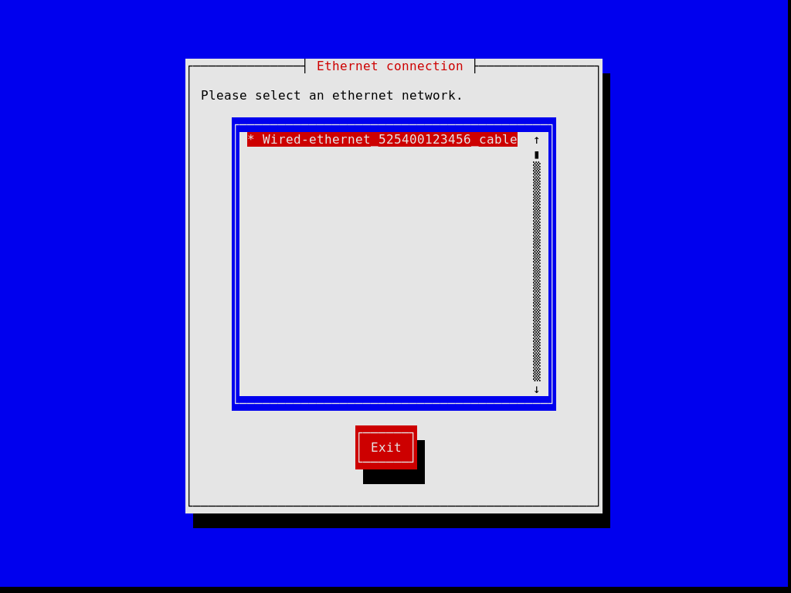
Later steps allow you to partition your hard disk, as shown in the image below, to choose whether or not to use encrypted file systems, to enter the host name and root password, and to create an additional account, among other things.
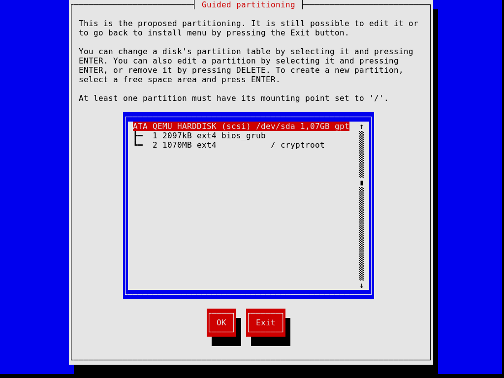
Note that, at any time, the installer allows you to exit the current installation step and resume at a previous step, as show in the image below.
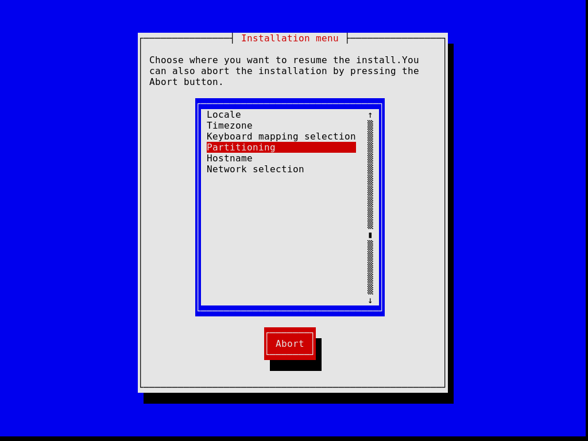
Once you’re done, the installer produces an operating system configuration and displays it (see Using the Configuration System). At that point you can hit “OK” and installation will proceed. On success, you can reboot into the new system and enjoy. See After System Installation, for what’s next!
Next: After System Installation, Previous: Guided Graphical Installation, Up: System Installation [Contents][Index]
This section describes how you would “manually” install GNU Guix System on your machine. This option requires familiarity with GNU/Linux, with the shell, and with common administration tools. If you think this is not for you, consider using the guided graphical installer (see Guided Graphical Installation).
The installation system provides root shells on TTYs 3 to 6; press
ctrl-alt-f3, ctrl-alt-f4, and so on to reach them. It includes
many common tools needed to install the system, but is also a full-blown
Guix System. This means that you can install additional packages, should you
need it, using guix package (see Invoking guix package).
Next: Proceeding with the Installation, Up: Manual Installation [Contents][Index]
Before you can install the system, you may want to adjust the keyboard layout, set up networking, and partition your target hard disk. This section will guide you through this.
The installation image uses the US qwerty keyboard layout. If you want
to change it, you can use the loadkeys command. For example,
the following command selects the Dvorak keyboard layout:
loadkeys dvorak
See the files under /run/current-system/profile/share/keymaps for
a list of available keyboard layouts. Run man loadkeys for
more information.
Run the following command to see what your network interfaces are called:
ifconfig -a
… or, using the GNU/Linux-specific ip command:
ip address
Wired interfaces have a name starting with ‘e’; for example, the interface corresponding to the first on-board Ethernet controller is called ‘eno1’. Wireless interfaces have a name starting with ‘w’, like ‘w1p2s0’.
To configure a wired network run the following command, substituting interface with the name of the wired interface you want to use.
ifconfig interface up
… or, using the GNU/Linux-specific ip command:
ip link set interface up
To configure wireless networking, you can create a configuration file
for the wpa_supplicant configuration tool (its location is not
important) using one of the available text editors such as
nano:
nano wpa_supplicant.conf
As an example, the following stanza can go to this file and will work for many wireless networks, provided you give the actual SSID and passphrase for the network you are connecting to:
network={
ssid="my-ssid"
key_mgmt=WPA-PSK
psk="the network's secret passphrase"
}
Start the wireless service and run it in the background with the following command (substitute interface with the name of the network interface you want to use):
wpa_supplicant -c wpa_supplicant.conf -i interface -B
Run man wpa_supplicant for more information.
At this point, you need to acquire an IP address. On a network where IP addresses are automatically assigned via DHCP, you can run:
dhclient -v interface
Try to ping a server to see if networking is up and running:
ping -c 3 gnu.org
Setting up network access is almost always a requirement because the image does not contain all the software and tools that may be needed.
If you need HTTP and HTTPS access to go through a proxy, run the following command:
herd set-http-proxy guix-daemon URL
where URL is the proxy URL, for example
http://example.org:8118.
If you want to, you can continue the installation remotely by starting an SSH server:
herd start ssh-daemon
Make sure to either set a password with passwd, or configure
OpenSSH public key authentication before logging in.
Unless this has already been done, the next step is to partition, and then format the target partition(s).
The installation image includes several partitioning tools, including
Parted (see Overview in GNU Parted User Manual),
fdisk, and cfdisk. Run it and set up your disk with
the partition layout you want:
cfdisk
If your disk uses the GUID Partition Table (GPT) format and you plan to install BIOS-based GRUB (which is the default), make sure a BIOS Boot Partition is available (see BIOS installation in GNU GRUB manual).
If you instead wish to use EFI-based GRUB, a FAT32 EFI System Partition
(ESP) is required. This partition can be mounted at /boot/efi for
instance and must have the esp flag set. E.g., for parted:
parted /dev/sda set 1 esp on
Note: Unsure whether to use EFI- or BIOS-based GRUB? If the directory /sys/firmware/efi exists in the installation image, then you should probably perform an EFI installation, using
grub-efi-bootloader. Otherwise you should use the BIOS-based GRUB, known asgrub-bootloader. See Bootloader Configuration, for more info on bootloaders.
Once you are done partitioning the target hard disk drive, you have to create a file system on the relevant partition(s)10. For the ESP, if you have one and assuming it is /dev/sda1, run:
mkfs.fat -F32 /dev/sda1
For the root file system, ext4 is the most widely used format. Other file systems, such as Btrfs, support compression, which is reported to nicely complement file deduplication that the daemon performs independently of the file system (see deduplication).
Preferably, assign file systems a label so that you can easily and
reliably refer to them in file-system declarations (see File Systems). This is typically done using the -L option of
mkfs.ext4 and related commands. So, assuming the target root
partition lives at /dev/sda2, a file system with the label
my-root can be created with:
mkfs.ext4 -L my-root /dev/sda2
If you are instead planning to encrypt the root partition, you can use
the Cryptsetup/LUKS utilities to do that (see man cryptsetup for more information).
Warning: Note that GRUB can unlock LUKS2 devices since version 2.06, but only supports the PBKDF2 key derivation function, which is not the default for
cryptsetup luksFormat. You can check which key derivation function is being used by a device by runningcryptsetup luksDump device, and looking for the PBKDF field of your keyslots.
Assuming you want to store the root partition on /dev/sda2, the command sequence to format it as a LUKS2 partition would be along these lines:
cryptsetup luksFormat --type luks2 --pbkdf pbkdf2 /dev/sda2 cryptsetup open /dev/sda2 my-partition mkfs.ext4 -L my-root /dev/mapper/my-partition
Once that is done, mount the target file system under /mnt
with a command like (again, assuming my-root is the label of the
root file system):
mount LABEL=my-root /mnt
Also mount any other file systems you would like to use on the target
system relative to this path. If you have opted for /boot/efi as an
EFI mount point for example, mount it at /mnt/boot/efi now so it is
found by guix system init afterwards.
Finally, if you plan to use one or more swap partitions (see Swap Space), make sure to initialize them with mkswap. Assuming
you have one swap partition on /dev/sda3, you would run:
mkswap /dev/sda3 swapon /dev/sda3
Alternatively, you may use a swap file. For example, assuming that in the new system you want to use the file /swapfile as a swap file, you would run11:
# This is 10 GiB of swap space. Adjust "count" to change the size. dd if=/dev/zero of=/mnt/swapfile bs=1MiB count=10240 # For security, make the file readable and writable only by root. chmod 600 /mnt/swapfile mkswap /mnt/swapfile swapon /mnt/swapfile
Note that if you have encrypted the root partition and created a swap file in its file system as described above, then the encryption also protects the swap file, just like any other file in that file system.
Previous: Keyboard Layout, Networking, and Partitioning, Up: Manual Installation [Contents][Index]
With the target partitions ready and the target root mounted on /mnt, we’re ready to go. First, run:
herd start cow-store /mnt
This makes /gnu/store copy-on-write, such that packages added to it
during the installation phase are written to the target disk on /mnt
rather than kept in memory. This is necessary because the first phase of
the guix system init command (see below) entails downloads or
builds to /gnu/store which, initially, is an in-memory file system.
Next, you have to edit a file and
provide the declaration of the operating system to be installed. To
that end, the installation system comes with three text editors. We
recommend GNU nano (see GNU nano Manual), which
supports syntax highlighting and parentheses matching; other editors
include mg (an Emacs clone), and
nvi (a clone of the original BSD vi editor).
We strongly recommend storing that file on the target root file system, say,
as /mnt/etc/config.scm. Failing to do that, you will have lost your
configuration file once you have rebooted into the newly-installed system.
See Using the Configuration System, for an overview of the configuration file. The example configurations discussed in that section are available under /etc/configuration in the installation image. Thus, to get started with a system configuration providing a graphical display server (a “desktop” system), you can run something along these lines:
# mkdir /mnt/etc # cp /etc/configuration/desktop.scm /mnt/etc/config.scm # nano /mnt/etc/config.scm
You should pay attention to what your configuration file contains, and in particular:
bootloader-configuration form refers to the targets
you want to install GRUB on. It should mention grub-bootloader
if you are installing GRUB in the legacy way, or
grub-efi-bootloader for newer UEFI systems. For legacy systems,
the targets field contain the names of the devices, like
(list "/dev/sda"); for UEFI systems it names the paths to mounted
EFI partitions, like (list "/boot/efi"); do make sure the paths
are currently mounted and a file-system entry is specified in
your configuration.
device fields in your file-system configuration, assuming
your file-system configuration uses the file-system-label
procedure in its device field.
mapped-devices field to describe them (see Mapped Devices).
Once you are done preparing the configuration file, the new system must be initialized (remember that the target root file system is mounted under /mnt):
guix system init /mnt/etc/config.scm /mnt
This copies all the necessary files and installs GRUB on
/dev/sdX, unless you pass the --no-bootloader option. For
more information, see Invoking guix system. This command may trigger
downloads or builds of missing packages, which can take some time.
Once that command has completed—and hopefully succeeded!—you can run
reboot and boot into the new system. The root password
in the new system is initially empty; other users’ passwords need to be
initialized by running the passwd command as root,
unless your configuration specifies otherwise
(see user account passwords).
See After System Installation, for what’s next!
Next: Installing Guix in a Virtual Machine, Previous: Manual Installation, Up: System Installation [Contents][Index]
Success, you’ve now booted into Guix System! From then on, you can update the system whenever you want by running, say:
guix pull sudo guix system reconfigure /etc/config.scm
This builds a new system generation with the latest packages and services
(see Invoking guix system). We recommend doing that regularly so that
your system includes the latest security updates (see Security Updates).
Note: Note that
sudo guixruns your user’sguixcommand and not root’s, becausesudoleavesPATHunchanged. To explicitly run root’sguix, typesudo -i guix ….The difference matters here, because
guix pullupdates theguixcommand and package definitions only for the user it is run as. This means that if you choose to useguix system reconfigurein root’s login shell, you’ll need toguix pullseparately.
Now, see Getting Started, and
join us on #guix on the Libera Chat IRC network or on
guix-devel@gnu.org to share your experience!
Next: Building the Installation Image, Previous: After System Installation, Up: System Installation [Contents][Index]
If you’d like to install Guix System in a virtual machine (VM) or on a virtual private server (VPS) rather than on your beloved machine, this section is for you.
To boot a QEMU VM for installing Guix System in a disk image, follow these steps:
qemu-img command:
qemu-img create -f qcow2 guix-system.img 50G
The resulting file will be much smaller than 50 GB (typically less than 1 MB), but it will grow as the virtualized storage device is filled up.
qemu-system-x86_64 -m 1024 -smp 1 -enable-kvm \ -nic user,model=virtio-net-pci -boot menu=on,order=d \ -drive file=guix-system.img \ -drive media=cdrom,file=guix-system-install-1.4.0.system.iso
-enable-kvm is optional, but significantly improves performance,
see Running Guix in a Virtual Machine.
Once installation is complete, you can boot the system that’s on your guix-system.img image. See Running Guix in a Virtual Machine, for how to do that.
Previous: Installing Guix in a Virtual Machine, Up: System Installation [Contents][Index]
The installation image described above was built using the guix
system command, specifically:
guix system image -t iso9660 gnu/system/install.scm
Have a look at gnu/system/install.scm in the source tree,
and see also Invoking guix system for more information
about the installation image.
Many ARM boards require a specific variant of the U-Boot bootloader.
If you build a disk image and the bootloader is not available otherwise (on another boot drive etc), it’s advisable to build an image that includes the bootloader, specifically:
guix system image --system=armhf-linux -e '((@ (gnu system install) os-with-u-boot) (@ (gnu system install) installation-os) "A20-OLinuXino-Lime2")'
A20-OLinuXino-Lime2 is the name of the board. If you specify an invalid
board, a list of possible boards will be printed.
Next: Getting Started, Previous: System Installation, Up: GNU Guix [Contents][Index]
Guix System allows rebooting into a previous generation should the last one be malfunctioning, which makes it quite robust against being broken irreversibly. This feature depends on GRUB being correctly functioning though, which means that if for whatever reasons your GRUB installation becomes corrupted during a system reconfiguration, you may not be able to easily boot into a previous generation. A technique that can be used in this case is to chroot into your broken system and reconfigure it from there. Such technique is explained below.
This section details how to chroot to an already installed Guix System with the aim of reconfiguring it, for example to fix a broken GRUB installation. The process is similar to how it would be done on other GNU/Linux systems, but there are some Guix System particularities such as the daemon and profiles that make it worthy of explaining here.
mount /dev/sda2 /mnt
mount --bind /proc /mnt/proc mount --bind /sys /mnt/sys mount --bind /dev /mnt/dev
If your system is EFI-based, you must also mount the ESP partition. Assuming it is /dev/sda1, you can do so with:
mount /dev/sda1 /mnt/boot/efi
chroot /mnt /bin/sh
source /var/guix/profiles/system/profile/etc/profile source /home/user/.guix-profile/etc/profile
To ensure you are working with the Guix revision you normally would as your normal user, also source your current Guix profile:
source /home/user/.config/guix/current/etc/profile
guix-daemon in the background:
guix-daemon --build-users-group=guixbuild --disable-chroot &
guix system reconfigure your-config.scm
Next: Package Management, Previous: System Troubleshooting Tips, Up: GNU Guix [Contents][Index]
Presumably, you’ve reached this section because either you have installed Guix on top of another distribution (see Installation), or you’ve installed the standalone Guix System (see System Installation). It’s time for you to get started using Guix and this section aims to help you do that and give you a feel of what it’s like.
Guix is about installing software, so probably the first thing you’ll want to do is to actually look for software. Let’s say you’re looking for a text editor, you can run:
guix search text editor
This command shows you a number of matching packages, each time showing the package’s name, version, a description, and additional info. Once you’ve found out the one you want to use, let’s say Emacs (ah ha!), you can go ahead and install it (run this command as a regular user, no need for root privileges!):
guix install emacs
You’ve installed your first package, congrats! The package is now visible in your default profile, $HOME/.guix-profile—a profile is a directory containing installed packages. In the process, you’ve probably noticed that Guix downloaded pre-built binaries; or, if you explicitly chose to not use pre-built binaries, then probably Guix is still building software (see Substitutes, for more info).
Unless you’re using Guix System, the guix install command must
have printed this hint:
hint: Consider setting the necessary environment variables by running:
GUIX_PROFILE="$HOME/.guix-profile"
. "$GUIX_PROFILE/etc/profile"
Alternately, see `guix package --search-paths -p "$HOME/.guix-profile"'.
Indeed, you must now tell your shell where emacs and other
programs installed with Guix are to be found. Pasting the two lines
above will do just that: it will add
$HOME/.guix-profile/bin—which is where the installed package
is—to the PATH environment variable. You can paste these two
lines in your shell so they take effect right away, but more importantly
you should add them to ~/.bash_profile (or equivalent file if you
do not use Bash) so that environment variables are set next time you
spawn a shell. You only need to do this once and other search paths
environment variables will be taken care of similarly—e.g., if you
eventually install python and Python libraries,
GUIX_PYTHONPATH will be defined.
You can go on installing packages at your will. To list installed packages, run:
guix package --list-installed
To remove a package, you would unsurprisingly run guix remove.
A distinguishing feature is the ability to roll back any operation
you made—installation, removal, upgrade—by simply typing:
guix package --roll-back
This is because each operation is in fact a transaction that creates a new generation. These generations and the difference between them can be displayed by running:
guix package --list-generations
Now you know the basics of package management!
Going further: See Package Management, for more about package management. You may like declarative package management with
guix package --manifest, managing separate profiles with --profile, deleting old generations, collecting garbage, and other nifty features that will come in handy as you become more familiar with Guix. If you are a developer, see Development for additional tools. And if you’re curious, see Features, to peek under the hood.
Once you’ve installed a set of packages, you will want to periodically upgrade them to the latest and greatest version. To do that, you will first pull the latest revision of Guix and its package collection:
guix pull
The end result is a new guix command, under
~/.config/guix/current/bin. Unless you’re on Guix System, the
first time you run guix pull, be sure to follow the hint that
the command prints and, similar to what we saw above, paste these two
lines in your terminal and .bash_profile:
GUIX_PROFILE="$HOME/.config/guix/current" . "$GUIX_PROFILE/etc/profile"
You must also instruct your shell to point to this new guix:
hash guix
At this point, you’re running a brand new Guix. You can thus go ahead and actually upgrade all the packages you previously installed:
guix upgrade
As you run this command, you will see that binaries are downloaded (or perhaps some packages are built), and eventually you end up with the upgraded packages. Should one of these upgraded packages not be to your liking, remember you can always roll back!
You can display the exact revision of Guix you’re currently using by running:
guix describe
The information it displays is all it takes to reproduce the exact same Guix, be it at a different point in time or on a different machine.
Going further: See Invoking
guix pull, for more information. See Channels, on how to specify additional channels to pull packages from, how to replicate Guix, and more. You may also findtime-machinehandy (see Invokingguix time-machine).
If you installed Guix System, one of the first things you’ll want to do
is to upgrade your system. Once you’ve run guix pull to get
the latest Guix, you can upgrade the system like this:
sudo guix system reconfigure /etc/config.scm
Upon completion, the system runs the latest versions of its software packages. When you eventually reboot, you’ll notice a sub-menu in the bootloader that reads “Old system generations”: it’s what allows you to boot an older generation of your system, should the latest generation be “broken” or otherwise unsatisfying. Just like for packages, you can always roll back to a previous generation of the whole system:
sudo guix system roll-back
There are many things you’ll probably want to tweak on your system: adding new user accounts, adding new system services, fiddling with the configuration of those services, etc. The system configuration is entirely described in the /etc/config.scm file. See Using the Configuration System, to learn how to change it.
Now you know enough to get started!
Resources: The rest of this manual provides a reference for all things Guix. Here are some additional resources you may find useful:
- See The GNU Guix Cookbook, for a list of “how-to” style of recipes for a variety of applications.
- The GNU Guix Reference Card lists in two pages most of the commands and options you’ll ever need.
- The web site contains instructional videos covering topics such as everyday use of Guix, how to get help, and how to become a contributor.
- See Documentation, to learn how to access documentation on your computer.
We hope you will enjoy Guix as much as the community enjoys building it!
Next: Channels, Previous: Getting Started, Up: GNU Guix [Contents][Index]
The purpose of GNU Guix is to allow users to easily install, upgrade, and remove software packages, without having to know about their build procedures or dependencies. Guix also goes beyond this obvious set of features.
This chapter describes the main features of Guix, as well as the
package management tools it provides. Along with the command-line
interface described below (see guix
package), you may also use the Emacs-Guix interface (see The Emacs-Guix Reference Manual), after installing
emacs-guix package (run M-x guix-help command to start
with it):
guix install emacs-guix
guix packageguix gcguix pullguix time-machineguix describeguix archive
Next: Invoking guix package, Up: Package Management [Contents][Index]
Here we assume you’ve already made your first steps with Guix (see Getting Started) and would like to get an overview about what’s going on under the hood.
When using Guix, each package ends up in the package store, in its
own directory—something that resembles
/gnu/store/xxx-package-1.2, where xxx is a base32 string.
Instead of referring to these directories, users have their own
profile, which points to the packages that they actually want to
use. These profiles are stored within each user’s home directory, at
$HOME/.guix-profile.
For example, alice installs GCC 4.7.2. As a result,
/home/alice/.guix-profile/bin/gcc points to
/gnu/store/…-gcc-4.7.2/bin/gcc. Now, on the same machine,
bob had already installed GCC 4.8.0. The profile of bob
simply continues to point to
/gnu/store/…-gcc-4.8.0/bin/gcc—i.e., both versions of GCC
coexist on the same system without any interference.
The guix package command is the central tool to manage
packages (see Invoking guix package). It operates on the per-user
profiles, and can be used with normal user privileges.
The command provides the obvious install, remove, and upgrade
operations. Each invocation is actually a transaction: either
the specified operation succeeds, or nothing happens. Thus, if the
guix package process is terminated during the transaction,
or if a power outage occurs during the transaction, then the user’s
profile remains in its previous state, and remains usable.
In addition, any package transaction may be rolled back. So, if, for example, an upgrade installs a new version of a package that turns out to have a serious bug, users may roll back to the previous instance of their profile, which was known to work well. Similarly, the global system configuration on Guix is subject to transactional upgrades and roll-back (see Using the Configuration System).
All packages in the package store may be garbage-collected.
Guix can determine which packages are still referenced by user
profiles, and remove those that are provably no longer referenced
(see Invoking guix gc). Users may also explicitly remove old
generations of their profile so that the packages they refer to can be
collected.
Guix takes a purely functional approach to package management, as described in the introduction (see Introduction). Each /gnu/store package directory name contains a hash of all the inputs that were used to build that package—compiler, libraries, build scripts, etc. This direct correspondence allows users to make sure a given package installation matches the current state of their distribution. It also helps maximize build reproducibility: thanks to the isolated build environments that are used, a given build is likely to yield bit-identical files when performed on different machines (see container).
This foundation allows Guix to support transparent binary/source
deployment. When a pre-built binary for a /gnu/store item is
available from an external source—a substitute, Guix just
downloads it and unpacks it;
otherwise, it builds the package from source, locally
(see Substitutes). Because build results are usually bit-for-bit
reproducible, users do not have to trust servers that provide
substitutes: they can force a local build and challenge providers
(see Invoking guix challenge).
Control over the build environment is a feature that is also useful for
developers. The guix shell command allows developers of
a package to quickly set up the right development environment for their
package, without having to manually install the dependencies of the
package into their profile (see Invoking guix shell).
All of Guix and its package definitions is version-controlled, and
guix pull allows you to “travel in time” on the history of Guix
itself (see Invoking guix pull). This makes it possible to replicate a
Guix instance on a different machine or at a later point in time, which in
turn allows you to replicate complete software environments, while
retaining precise provenance tracking of the software.
Next: Substitutes, Previous: Features, Up: Package Management [Contents][Index]
guix packageThe guix package command is the tool that allows users to
install, upgrade, and remove packages, as well as rolling back to
previous configurations. These operations work on a user
profile—a directory of installed packages. Each user has a
default profile in $HOME/.guix-profile.
The command operates only on the user’s own profile,
and works with normal user privileges (see Features). Its syntax
is:
guix package options
Primarily, options specifies the operations to be performed during the transaction. Upon completion, a new profile is created, but previous generations of the profile remain available, should the user want to roll back.
For example, to remove lua and install guile and
guile-cairo in a single transaction:
guix package -r lua -i guile guile-cairo
For your convenience, we also provide the following aliases:
guix search is an alias for guix package -s,
guix install is an alias for guix package -i,
guix remove is an alias for guix package -r,
guix upgrade is an alias for guix package -u,
guix show is an alias for guix package --show=.
These aliases are less expressive than guix package and provide
fewer options, so in some cases you’ll probably want to use guix
package directly.
guix package also supports a declarative approach
whereby the user specifies the exact set of packages to be available and
passes it via the --manifest option
(see --manifest).
For each user, a symlink to the user’s default profile is automatically
created in $HOME/.guix-profile. This symlink always points to the
current generation of the user’s default profile. Thus, users can add
$HOME/.guix-profile/bin to their PATH environment
variable, and so on.
If you are not using Guix System, consider adding the
following lines to your ~/.bash_profile (see Bash Startup
Files in The GNU Bash Reference Manual) so that newly-spawned
shells get all the right environment variable definitions:
GUIX_PROFILE="$HOME/.guix-profile" ; \ source "$GUIX_PROFILE/etc/profile"
In a multi-user setup, user profiles are stored in a place registered as
a garbage-collector root, which $HOME/.guix-profile points
to (see Invoking guix gc). That directory is normally
localstatedir/guix/profiles/per-user/user, where
localstatedir is the value passed to configure as
--localstatedir, and user is the user name. The
per-user directory is created when guix-daemon is
started, and the user sub-directory is created by guix
package.
The options can be among the following:
--install=package …-i package …Install the specified packages.
Each package may specify a simple package name, such as
guile, optionally followed by an at-sign and version number,
such as guile@3.0.7 or simply guile@3.0. In the latter
case, the newest version prefixed by 3.0 is selected.
If no version number is specified, the newest available version will be
selected. In addition, such a package specification
may contain a colon, followed by the name of one of the outputs of the
package, as in gcc:doc or binutils@2.22:lib
(see Packages with Multiple Outputs).
Packages with a corresponding name (and optionally version) are searched for among the GNU distribution modules (see Package Modules).
Alternatively, a package can directly specify a store file name
such as /gnu/store/...-guile-3.0.7, as produced by, e.g.,
guix build.
Sometimes packages have propagated inputs: these are dependencies
that automatically get installed along with the required package
(see propagated-inputs in
package objects, for information about propagated inputs in
package definitions).
An example is the GNU MPC library: its C header files refer to those of the GNU MPFR library, which in turn refer to those of the GMP library. Thus, when installing MPC, the MPFR and GMP libraries also get installed in the profile; removing MPC also removes MPFR and GMP—unless they had also been explicitly installed by the user.
Besides, packages sometimes rely on the definition of environment variables for their search paths (see explanation of --search-paths below). Any missing or possibly incorrect environment variable definitions are reported here.
--install-from-expression=exp-e expInstall the package exp evaluates to.
exp must be a Scheme expression that evaluates to a
<package> object. This option is notably useful to disambiguate
between same-named variants of a package, with expressions such as
(@ (gnu packages base) guile-final).
Note that this option installs the first output of the specified package, which may be insufficient when needing a specific output of a multiple-output package.
--install-from-file=file-f fileInstall the package that the code within file evaluates to.
As an example, file might contain a definition like this (see Defining Packages):
(use-modules (guix) (guix build-system gnu) (guix licenses)) (package (name "hello") (version "2.10") (source (origin (method url-fetch) (uri (string-append "mirror://gnu/hello/hello-" version ".tar.gz")) (sha256 (base32 "0ssi1wpaf7plaswqqjwigppsg5fyh99vdlb9kzl7c9lng89ndq1i")))) (build-system gnu-build-system) (synopsis "Hello, GNU world: An example GNU package") (description "Guess what GNU Hello prints!") (home-page "http://www.gnu.org/software/hello/") (license gpl3+))
Developers may find it useful to include such a guix.scm file
in the root of their project source tree that can be used to test
development snapshots and create reproducible development environments
(see Invoking guix shell).
The file may also contain a JSON representation of one or more
package definitions. Running guix package -f on
hello.json with the following contents would result in installing
the package greeter after building myhello:
[
{
"name": "myhello",
"version": "2.10",
"source": "mirror://gnu/hello/hello-2.10.tar.gz",
"build-system": "gnu",
"arguments": {
"tests?": false
}
"home-page": "https://www.gnu.org/software/hello/",
"synopsis": "Hello, GNU world: An example GNU package",
"description": "GNU Hello prints a greeting.",
"license": "GPL-3.0+",
"native-inputs": ["gettext"]
},
{
"name": "greeter",
"version": "1.0",
"source": "https://example.com/greeter-1.0.tar.gz",
"build-system": "gnu",
"arguments": {
"test-target": "foo",
"parallel-build?": false,
},
"home-page": "https://example.com/",
"synopsis": "Greeter using GNU Hello",
"description": "This is a wrapper around GNU Hello.",
"license": "GPL-3.0+",
"inputs": ["myhello", "hello"]
}
]
--remove=package …-r package …Remove the specified packages.
As for --install, each package may specify a version number
and/or output name in addition to the package name. For instance,
‘-r glibc:debug’ would remove the debug output of
glibc.
--upgrade[=regexp …] ¶-u [regexp …]Upgrade all the installed packages. If one or more regexps are specified, upgrade only installed packages whose name matches a regexp. Also see the --do-not-upgrade option below.
Note that this upgrades package to the latest version of packages found
in the distribution currently installed. To update your distribution,
you should regularly run guix pull (see Invoking guix pull).
When upgrading, package transformations that were originally applied when creating the profile are automatically re-applied (see Package Transformation Options). For example, assume you first installed Emacs from the tip of its development branch with:
guix install emacs-next --with-branch=emacs-next=master
Next time you run guix upgrade, Guix will again pull the tip
of the Emacs development branch and build emacs-next from that
checkout.
Note that transformation options such as --with-branch and --with-source depend on external state; it is up to you to ensure that they work as expected. You can also discard a transformations that apply to a package by running:
guix install package
--do-not-upgrade[=regexp …]When used together with the --upgrade option, do not upgrade any packages whose name matches a regexp. For example, to upgrade all packages in the current profile except those containing the substring “emacs”:
$ guix package --upgrade . --do-not-upgrade emacs
--manifest=file ¶-m fileCreate a new generation of the profile from the manifest object returned by the Scheme code in file. This option can be repeated several times, in which case the manifests are concatenated.
This allows you to declare the profile’s contents rather than constructing it through a sequence of --install and similar commands. The advantage is that file can be put under version control, copied to different machines to reproduce the same profile, and so on.
file must return a manifest object, which is roughly a list of packages:
(use-package-modules guile emacs) (packages->manifest (list emacs guile-2.0 ;; Use a specific package output. (list guile-2.0 "debug")))
See Writing Manifests, for information on how to write a manifest. See --export-manifest, to learn how to obtain a manifest file from an existing profile.
--roll-back ¶Roll back to the previous generation of the profile—i.e., undo the last transaction.
When combined with options such as --install, roll back occurs before any other actions.
When rolling back from the first generation that actually contains installed packages, the profile is made to point to the zeroth generation, which contains no files apart from its own metadata.
After having rolled back, installing, removing, or upgrading packages overwrites previous future generations. Thus, the history of the generations in a profile is always linear.
--switch-generation=pattern ¶-S patternSwitch to a particular generation defined by pattern.
pattern may be either a generation number or a number prefixed with “+” or “-”. The latter means: move forward/backward by a specified number of generations. For example, if you want to return to the latest generation after --roll-back, use --switch-generation=+1.
The difference between --roll-back and --switch-generation=-1 is that --switch-generation will not make a zeroth generation, so if a specified generation does not exist, the current generation will not be changed.
--search-paths[=kind] ¶Report environment variable definitions, in Bash syntax, that may be needed in order to use the set of installed packages. These environment variables are used to specify search paths for files used by some of the installed packages.
For example, GCC needs the CPATH and LIBRARY_PATH
environment variables to be defined so it can look for headers and
libraries in the user’s profile (see Environment Variables in Using the GNU Compiler Collection (GCC)). If GCC and, say, the C
library are installed in the profile, then --search-paths will
suggest setting these variables to profile/include and
profile/lib, respectively (see Search Paths, for info
on search path specifications associated with packages.)
The typical use case is to define these environment variables in the shell:
$ eval $(guix package --search-paths)
kind may be one of exact, prefix, or suffix,
meaning that the returned environment variable definitions will either
be exact settings, or prefixes or suffixes of the current value of these
variables. When omitted, kind defaults to exact.
This option can also be used to compute the combined search paths of several profiles. Consider this example:
$ guix package -p foo -i guile $ guix package -p bar -i guile-json $ guix package -p foo -p bar --search-paths
The last command above reports about the GUILE_LOAD_PATH
variable, even though, taken individually, neither foo nor
bar would lead to that recommendation.
--profile=profile-p profileUse profile instead of the user’s default profile.
profile must be the name of a file that will be created upon completion. Concretely, profile will be a mere symbolic link (“symlink”) pointing to the actual profile where packages are installed:
$ guix install hello -p ~/code/my-profile … $ ~/code/my-profile/bin/hello Hello, world!
All it takes to get rid of the profile is to remove this symlink and its siblings that point to specific generations:
$ rm ~/code/my-profile ~/code/my-profile-*-link
--list-profilesList all the user’s profiles:
$ guix package --list-profiles /home/charlie/.guix-profile /home/charlie/code/my-profile /home/charlie/code/devel-profile /home/charlie/tmp/test
When running as root, list all the profiles of all the users.
--allow-collisionsAllow colliding packages in the new profile. Use at your own risk!
By default, guix package reports as an error collisions
in the profile. Collisions happen when two or more different versions
or variants of a given package end up in the profile.
--bootstrapUse the bootstrap Guile to build the profile. This option is only useful to distribution developers.
In addition to these actions, guix package supports the
following options to query the current state of a profile, or the
availability of packages:
List the available packages whose name, synopsis, or description matches
regexp (in a case-insensitive fashion), sorted by relevance.
Print all the metadata of matching packages in
recutils format (see GNU recutils databases in GNU recutils manual).
This allows specific fields to be extracted using the recsel
command, for instance:
$ guix package -s malloc | recsel -p name,version,relevance name: jemalloc version: 4.5.0 relevance: 6 name: glibc version: 2.25 relevance: 1 name: libgc version: 7.6.0 relevance: 1
Similarly, to show the name of all the packages available under the terms of the GNU LGPL version 3:
$ guix package -s "" | recsel -p name -e 'license ~ "LGPL 3"' name: elfutils name: gmp …
It is also possible to refine search results using several -s flags to
guix package, or several arguments to guix search. For
example, the following command returns a list of board games (this time using
the guix search alias):
$ guix search '\<board\>' game | recsel -p name name: gnubg …
If we were to omit -s game, we would also get software packages
that deal with printed circuit boards; removing the angle brackets
around board would further add packages that have to do with
keyboards.
And now for a more elaborate example. The following command searches for cryptographic libraries, filters out Haskell, Perl, Python, and Ruby libraries, and prints the name and synopsis of the matching packages:
$ guix search crypto library | \
recsel -e '! (name ~ "^(ghc|perl|python|ruby)")' -p name,synopsis
See Selection Expressions in GNU recutils manual, for more
information on selection expressions for recsel -e.
Show details about package, taken from the list of available packages, in
recutils format (see GNU recutils databases in GNU
recutils manual).
$ guix package --show=guile | recsel -p name,version name: guile version: 3.0.5 name: guile version: 3.0.2 name: guile version: 2.2.7 …
You may also specify the full name of a package to only get details about a
specific version of it (this time using the guix show alias):
$ guix show guile@3.0.5 | recsel -p name,version name: guile version: 3.0.5
List the currently installed packages in the specified profile, with the most recently installed packages shown last. When regexp is specified, list only installed packages whose name matches regexp.
For each installed package, print the following items, separated by
tabs: the package name, its version string, the part of the package that
is installed (for instance, out for the default output,
include for its headers, etc.), and the path of this package in
the store.
List packages currently available in the distribution for this system (see GNU Distribution). When regexp is specified, list only available packages whose name matches regexp.
For each package, print the following items separated by tabs: its name, its version string, the parts of the package (see Packages with Multiple Outputs), and the source location of its definition.
Return a list of generations along with their creation dates; for each generation, show the installed packages, with the most recently installed packages shown last. Note that the zeroth generation is never shown.
For each installed package, print the following items, separated by tabs: the name of a package, its version string, the part of the package that is installed (see Packages with Multiple Outputs), and the location of this package in the store.
When pattern is used, the command returns only matching generations. Valid patterns include:
And --list-generations=1,8,2 outputs three generations in the specified order. Neither spaces nor trailing commas are allowed.
It is also possible to omit the endpoint. For example, --list-generations=2.., returns all generations starting from the second one.
When pattern is omitted, delete all generations except the current one.
This command accepts the same patterns as --list-generations. When pattern is specified, delete the matching generations. When pattern specifies a duration, generations older than the specified duration match. For instance, --delete-generations=1m deletes generations that are more than one month old.
If the current generation matches, it is not deleted. Also, the zeroth generation is never deleted.
Note that deleting generations prevents rolling back to them. Consequently, this command must be used with care.
Write to standard output a manifest suitable for --manifest corresponding to the chosen profile(s).
This option is meant to help you migrate from the “imperative”
operating mode—running guix install, guix upgrade,
etc.—to the declarative mode that --manifest offers.
Be aware that the resulting manifest approximates what your profile actually contains; for instance, depending on how your profile was created, it can refer to packages or package versions that are not exactly what you specified.
Keep in mind that a manifest is purely symbolic: it only contains package names and possibly versions, and their meaning varies over time. If you wish to “pin” channels to the revisions that were used to build the profile(s), see --export-channels below.
Write to standard output the list of channels used by the chosen
profile(s), in a format suitable for guix pull --channels or
guix time-machine --channels (see Channels).
Together with --export-manifest, this option provides information allowing you to replicate the current profile (see Replicating Guix).
However, note that the output of this command approximates what was actually used to build this profile. In particular, a single profile might have been built from several different revisions of the same channel. In that case, --export-manifest chooses the last one and writes the list of other revisions in a comment. If you really need to pick packages from different channel revisions, you can use inferiors in your manifest to do so (see Inferiors).
Together with --export-manifest, this is a good starting point if you are willing to migrate from the “imperative” model to the fully declarative model consisting of a manifest file along with a channels file pinning the exact channel revision(s) you want.
Finally, since guix package may actually start build
processes, it supports all the common build options (see Common Build Options). It also supports package transformation options, such as
--with-source, and preserves them across upgrades
(see Package Transformation Options).
Next: Packages with Multiple Outputs, Previous: Invoking guix package, Up: Package Management [Contents][Index]
Guix supports transparent source/binary deployment, which means that it can either build things locally, or download pre-built items from a server, or both. We call these pre-built items substitutes—they are substitutes for local build results. In many cases, downloading a substitute is much faster than building things locally.
Substitutes can be anything resulting from a derivation build (see Derivations). Of course, in the common case, they are pre-built package binaries, but source tarballs, for instance, which also result from derivation builds, can be available as substitutes.
Next: Substitute Server Authorization, Up: Substitutes [Contents][Index]
ci.guix.gnu.org and
bordeaux.guix.gnu.org are both front-ends to official build
farms that build packages from Guix continuously for some architectures,
and make them available as substitutes. These are the default source of
substitutes; which can be overridden by passing the
--substitute-urls option either to guix-daemon
(see guix-daemon --substitute-urls)
or to client tools such as guix package
(see client --substitute-urls
option).
Substitute URLs can be either HTTP or HTTPS. HTTPS is recommended because communications are encrypted; conversely, using HTTP makes all communications visible to an eavesdropper, who could use the information gathered to determine, for instance, whether your system has unpatched security vulnerabilities.
Substitutes from the official build farms are enabled by default when using Guix System (see GNU Distribution). However, they are disabled by default when using Guix on a foreign distribution, unless you have explicitly enabled them via one of the recommended installation steps (see Installation). The following paragraphs describe how to enable or disable substitutes for the official build farm; the same procedure can also be used to enable substitutes for any other substitute server.
Next: Getting Substitutes from Other Servers, Previous: Official Substitute Servers, Up: Substitutes [Contents][Index]
To allow Guix to download substitutes from ci.guix.gnu.org, bordeaux.guix.gnu.org or a mirror, you
must add the relevant public key to the access control list (ACL) of archive
imports, using the guix archive command (see Invoking guix archive). Doing so implies that you trust the substitute server to not
be compromised and to serve genuine substitutes.
Note: If you are using Guix System, you can skip this section: Guix System authorizes substitutes from
ci.guix.gnu.organdbordeaux.guix.gnu.orgby default.
The public keys for each of the project maintained substitute servers
are installed along with Guix, in prefix/share/guix/, where
prefix is the installation prefix of Guix. If you installed Guix
from source, make sure you checked the GPG signature of
guix-1.4.0.tar.gz, which contains this public key file.
Then, you can run something like this:
# guix archive --authorize < prefix/share/guix/ci.guix.gnu.org.pub # guix archive --authorize < prefix/share/guix/bordeaux.guix.gnu.org.pub
Once this is in place, the output of a command like guix build
should change from something like:
$ guix build emacs --dry-run The following derivations would be built: /gnu/store/yr7bnx8xwcayd6j95r2clmkdl1qh688w-emacs-24.3.drv /gnu/store/x8qsh1hlhgjx6cwsjyvybnfv2i37z23w-dbus-1.6.4.tar.gz.drv /gnu/store/1ixwp12fl950d15h2cj11c73733jay0z-alsa-lib-1.0.27.1.tar.bz2.drv /gnu/store/nlma1pw0p603fpfiqy7kn4zm105r5dmw-util-linux-2.21.drv …
to something like:
$ guix build emacs --dry-run 112.3 MB would be downloaded: /gnu/store/pk3n22lbq6ydamyymqkkz7i69wiwjiwi-emacs-24.3 /gnu/store/2ygn4ncnhrpr61rssa6z0d9x22si0va3-libjpeg-8d /gnu/store/71yz6lgx4dazma9dwn2mcjxaah9w77jq-cairo-1.12.16 /gnu/store/7zdhgp0n1518lvfn8mb96sxqfmvqrl7v-libxrender-0.9.7 …
The text changed from “The following derivations would be built” to “112.3 MB would be downloaded”. This indicates that substitutes from the configured substitute servers are usable and will be downloaded, when possible, for future builds.
The substitute mechanism can be disabled globally by running
guix-daemon with --no-substitutes (see Invoking guix-daemon). It can also be disabled temporarily by passing the
--no-substitutes option to guix package,
guix build, and other command-line tools.
Next: Substitute Authentication, Previous: Substitute Server Authorization, Up: Substitutes [Contents][Index]
Guix can look up and fetch substitutes from several servers. This is useful when you are using packages from additional channels for which the official server does not have substitutes but another server provides them. Another situation where this is useful is when you would prefer to download from your organization’s substitute server, resorting to the official server only as a fallback or dismissing it altogether.
You can give Guix a list of substitute server URLs and it will check them in the specified order. You also need to explicitly authorize the public keys of substitute servers to instruct Guix to accept the substitutes they sign.
On Guix System, this is achieved by modifying the configuration of the
guix service. Since the guix service is part of the
default lists of services, %base-services and
%desktop-services, you can use modify-services to change
its configuration and add the URLs and substitute keys that you want
(see modify-services).
As an example, suppose you want to fetch substitutes from
guix.example.org and to authorize the signing key of that server,
in addition to the default ci.guix.gnu.org and
bordeaux.guix.gnu.org. The resulting operating system
configuration will look something like:
(operating-system
;; …
(services
;; Assume we're starting from '%desktop-services'. Replace it
;; with the list of services you're actually using.
(modify-services %desktop-services
(guix-service-type config =>
(guix-configuration
(inherit config)
(substitute-urls
(append (list "https://guix.example.org")
%default-substitute-urls))
(authorized-keys
(append (list (local-file "./key.pub"))
%default-authorized-guix-keys)))))))
This assumes that the file key.pub contains the signing key of
guix.example.org. With this change in place in your operating
system configuration file (say /etc/config.scm), you can
reconfigure and restart the guix-daemon service or reboot so the
changes take effect:
$ sudo guix system reconfigure /etc/config.scm $ sudo herd restart guix-daemon
If you’re running Guix on a “foreign distro”, you would instead take the following steps to get substitutes from additional servers:
guix-daemon; when using
systemd, this is normally
/etc/systemd/system/guix-daemon.service. Add the
--substitute-urls option on the guix-daemon command
line and list the URLs of interest (see guix-daemon --substitute-urls):
… --substitute-urls='https://guix.example.org https://ci.guix.gnu.org https://bordeaux.guix.gnu.org'
systemctl daemon-reload systemctl restart guix-daemon.service
guix archive):
guix archive --authorize < key.pub
Again this assumes key.pub contains the public key that
guix.example.org uses to sign substitutes.
Now you’re all set! Substitutes will be preferably taken from
https://guix.example.org, using
ci.guix.gnu.org then
bordeaux.guix.gnu.org as fallback options. Of course you
can list as many substitute servers as you like, with the caveat that
substitute lookup can be slowed down if too many servers need to be
contacted.
Note that there are also situations where one may want to add the URL of a substitute server without authorizing its key. See Substitute Authentication, to understand this fine point.
Next: Proxy Settings, Previous: Getting Substitutes from Other Servers, Up: Substitutes [Contents][Index]
Guix detects and raises an error when attempting to use a substitute that has been tampered with. Likewise, it ignores substitutes that are not signed, or that are not signed by one of the keys listed in the ACL.
There is one exception though: if an unauthorized server provides substitutes that are bit-for-bit identical to those provided by an authorized server, then the unauthorized server becomes eligible for downloads. For example, assume we have chosen two substitute servers with this option:
--substitute-urls="https://a.example.org https://b.example.org"
If the ACL contains only the key for ‘b.example.org’, and if ‘a.example.org’ happens to serve the exact same substitutes, then Guix will download substitutes from ‘a.example.org’ because it comes first in the list and can be considered a mirror of ‘b.example.org’. In practice, independent build machines usually produce the same binaries, thanks to bit-reproducible builds (see below).
When using HTTPS, the server’s X.509 certificate is not validated (in other words, the server is not authenticated), contrary to what HTTPS clients such as Web browsers usually do. This is because Guix authenticates substitute information itself, as explained above, which is what we care about (whereas X.509 certificates are about authenticating bindings between domain names and public keys).
Next: Substitution Failure, Previous: Substitute Authentication, Up: Substitutes [Contents][Index]
Substitutes are downloaded over HTTP or HTTPS. The http_proxy and
https_proxy environment variables can be set in the environment of
guix-daemon and are honored for downloads of substitutes.
Note that the value of those environment variables in the environment
where guix build, guix package, and other client
commands are run has absolutely no effect.
Next: On Trusting Binaries, Previous: Proxy Settings, Up: Substitutes [Contents][Index]
Even when a substitute for a derivation is available, sometimes the substitution attempt will fail. This can happen for a variety of reasons: the substitute server might be offline, the substitute may recently have been deleted, the connection might have been interrupted, etc.
When substitutes are enabled and a substitute for a derivation is available, but the substitution attempt fails, Guix will attempt to build the derivation locally depending on whether or not --fallback was given (see common build option --fallback). Specifically, if --fallback was omitted, then no local build will be performed, and the derivation is considered to have failed. However, if --fallback was given, then Guix will attempt to build the derivation locally, and the success or failure of the derivation depends on the success or failure of the local build. Note that when substitutes are disabled or no substitute is available for the derivation in question, a local build will always be performed, regardless of whether or not --fallback was given.
To get an idea of how many substitutes are available right now, you can
try running the guix weather command (see Invoking guix weather). This command provides statistics on the substitutes provided
by a server.
Previous: Substitution Failure, Up: Substitutes [Contents][Index]
Today, each individual’s control over their own computing is at the
mercy of institutions, corporations, and groups with enough power and
determination to subvert the computing infrastructure and exploit its
weaknesses. While using substitutes can be convenient, we encourage
users to also build on their own, or even run their own build farm, such
that the project run substitute servers are less of an interesting
target. One way to help is by publishing the software you build using
guix publish so that others have one more choice of server to
download substitutes from (see Invoking guix publish).
Guix has the foundations to maximize build reproducibility
(see Features). In most cases, independent builds of a given
package or derivation should yield bit-identical results. Thus, through
a diverse set of independent package builds, we can strengthen the
integrity of our systems. The guix challenge command aims to
help users assess substitute servers, and to assist developers in
finding out about non-deterministic package builds (see Invoking guix challenge). Similarly, the --check option of guix
build allows users to check whether previously-installed substitutes
are genuine by rebuilding them locally (see guix build --check).
In the future, we want Guix to have support to publish and retrieve binaries to/from other users, in a peer-to-peer fashion. If you would like to discuss this project, join us on guix-devel@gnu.org.
Next: Invoking guix gc, Previous: Substitutes, Up: Package Management [Contents][Index]
Often, packages defined in Guix have a single output—i.e., the
source package leads to exactly one directory in the store. When running
guix install glibc, one installs the default output of the
GNU libc package; the default output is called out, but its name
can be omitted as shown in this command. In this particular case, the
default output of glibc contains all the C header files, shared
libraries, static libraries, Info documentation, and other supporting
files.
Sometimes it is more appropriate to separate the various types of files
produced from a single source package into separate outputs. For
instance, the GLib C library (used by GTK+ and related packages)
installs more than 20 MiB of reference documentation as HTML pages.
To save space for users who do not need it, the documentation goes to a
separate output, called doc. To install the main GLib output,
which contains everything but the documentation, one would run:
guix install glib
The command to install its documentation is:
guix install glib:doc
Some packages install programs with different “dependency footprints”.
For instance, the WordNet package installs both command-line tools and
graphical user interfaces (GUIs). The former depend solely on the C
library, whereas the latter depend on Tcl/Tk and the underlying X
libraries. In this case, we leave the command-line tools in the default
output, whereas the GUIs are in a separate output. This allows users
who do not need the GUIs to save space. The guix size command
can help find out about such situations (see Invoking guix size).
guix graph can also be helpful (see Invoking guix graph).
There are several such multiple-output packages in the GNU distribution.
Other conventional output names include lib for libraries and
possibly header files, bin for stand-alone programs, and
debug for debugging information (see Installing Debugging Files). The outputs of a packages are listed in the third column of
the output of guix package --list-available (see Invoking guix package).
Next: Invoking guix pull, Previous: Packages with Multiple Outputs, Up: Package Management [Contents][Index]
guix gcPackages that are installed, but not used, may be garbage-collected.
The guix gc command allows users to explicitly run the garbage
collector to reclaim space from the /gnu/store directory. It is
the only way to remove files from /gnu/store—removing
files or directories manually may break it beyond repair!
The garbage collector has a set of known roots: any file under
/gnu/store reachable from a root is considered live and
cannot be deleted; any other file is considered dead and may be
deleted. The set of garbage collector roots (“GC roots” for short)
includes default user profiles; by default, the symlinks under
/var/guix/gcroots represent these GC roots. New GC roots can be
added with guix build --root, for example (see Invoking guix build). The guix gc --list-roots command lists them.
Prior to running guix gc --collect-garbage to make space, it is
often useful to remove old generations from user profiles; that way, old
package builds referenced by those generations can be reclaimed. This
is achieved by running guix package --delete-generations
(see Invoking guix package).
Our recommendation is to run a garbage collection periodically, or when you are short on disk space. For instance, to guarantee that at least 5 GB are available on your disk, simply run:
guix gc -F 5G
It is perfectly safe to run as a non-interactive periodic job
(see Scheduled Job Execution, for how to set up such a job).
Running guix gc with no arguments will collect as
much garbage as it can, but that is often inconvenient: you may find
yourself having to rebuild or re-download software that is “dead” from
the GC viewpoint but that is necessary to build other pieces of
software—e.g., the compiler tool chain.
The guix gc command has three modes of operation: it can be
used to garbage-collect any dead files (the default), to delete specific
files (the --delete option), to print garbage-collector
information, or for more advanced queries. The garbage collection
options are as follows:
--collect-garbage[=min]-C [min]Collect garbage—i.e., unreachable /gnu/store files and sub-directories. This is the default operation when no option is specified.
When min is given, stop once min bytes have been collected.
min may be a number of bytes, or it may include a unit as a
suffix, such as MiB for mebibytes and GB for gigabytes
(see size specifications in GNU Coreutils).
When min is omitted, collect all the garbage.
--free-space=free-F freeCollect garbage until free space is available under
/gnu/store, if possible; free denotes storage space, such
as 500MiB, as described above.
When free or more is already available in /gnu/store, do nothing and exit immediately.
--delete-generations[=duration]-d [duration]Before starting the garbage collection process, delete all the generations older than duration, for all the user profiles and home environment generations; when run as root, this applies to all the profiles of all the users.
For example, this command deletes all the generations of all your profiles that are older than 2 months (except generations that are current), and then proceeds to free space until at least 10 GiB are available:
guix gc -d 2m -F 10G
--delete-DAttempt to delete all the store files and directories specified as arguments. This fails if some of the files are not in the store, or if they are still live.
--list-failuresList store items corresponding to cached build failures.
This prints nothing unless the daemon was started with --cache-failures (see --cache-failures).
--list-rootsList the GC roots owned by the user; when run as root, list all the GC roots.
--list-busyList store items in use by currently running processes. These store items are effectively considered GC roots: they cannot be deleted.
--clear-failuresRemove the specified store items from the failed-build cache.
Again, this option only makes sense when the daemon is started with --cache-failures. Otherwise, it does nothing.
--list-deadShow the list of dead files and directories still present in the store—i.e., files and directories no longer reachable from any root.
--list-liveShow the list of live store files and directories.
In addition, the references among existing store files can be queried:
--references ¶--referrersList the references (respectively, the referrers) of store files given as arguments.
--requisites ¶-RList the requisites of the store files passed as arguments. Requisites include the store files themselves, their references, and the references of these, recursively. In other words, the returned list is the transitive closure of the store files.
See Invoking guix size, for a tool to profile the size of the closure
of an element. See Invoking guix graph, for a tool to visualize
the graph of references.
--derivers ¶Return the derivation(s) leading to the given store items (see Derivations).
For example, this command:
guix gc --derivers $(guix package -I ^emacs$ | cut -f4)
returns the .drv file(s) leading to the emacs package
installed in your profile.
Note that there may be zero matching .drv files, for instance because these files have been garbage-collected. There can also be more than one matching .drv due to fixed-output derivations.
Lastly, the following options allow you to check the integrity of the store and to control disk usage.
Verify the integrity of the store.
By default, make sure that all the store items marked as valid in the database of the daemon actually exist in /gnu/store.
When provided, options must be a comma-separated list containing one
or more of contents and repair.
When passing --verify=contents, the daemon computes the content hash of each store item and compares it against its hash in the database. Hash mismatches are reported as data corruptions. Because it traverses all the files in the store, this command can take a long time, especially on systems with a slow disk drive.
Using --verify=repair or --verify=contents,repair
causes the daemon to try to repair corrupt store items by fetching
substitutes for them (see Substitutes). Because repairing is not
atomic, and thus potentially dangerous, it is available only to the
system administrator. A lightweight alternative, when you know exactly
which items in the store are corrupt, is guix build --repair
(see Invoking guix build).
Optimize the store by hard-linking identical files—this is deduplication.
The daemon performs deduplication after each successful build or archive import, unless it was started with --disable-deduplication (see --disable-deduplication). Thus, this option is primarily useful when the daemon was running with --disable-deduplication.
Guix uses an sqlite database to keep track of the items in (see The Store).
Over time it is possible that the database may grow to a large size and become
fragmented. As a result, one may wish to clear the freed space and join the
partially used pages in the database left behind from removed packages or after
running the garbage collector. Running sudo guix gc
--vacuum-database will lock the database and VACUUM the store,
defragmenting the database and purging freed pages, unlocking the database when
it finishes.
Next: Invoking guix time-machine, Previous: Invoking guix gc, Up: Package Management [Contents][Index]
guix pullPackages are installed or upgraded to the latest version available in
the distribution currently available on your local machine. To update
that distribution, along with the Guix tools, you must run guix
pull: the command downloads the latest Guix source code and package
descriptions, and deploys it. Source code is downloaded from a
Git repository, by default the official
GNU Guix repository, though this can be customized. guix
pull ensures that the code it downloads is authentic by
verifying that commits are signed by Guix developers.
Specifically, guix pull downloads code from the channels
(see Channels) specified by one of the followings, in this order:
%default-channels
variable.
On completion, guix package will use packages and package
versions from this just-retrieved copy of Guix. Not only that, but all
the Guix commands and Scheme modules will also be taken from that latest
version. New guix sub-commands added by the update also
become available.
Any user can update their Guix copy using guix pull, and the
effect is limited to the user who ran guix pull. For
instance, when user root runs guix pull, this has no
effect on the version of Guix that user alice sees, and vice
versa.
The result of running guix pull is a profile available
under ~/.config/guix/current containing the latest Guix. Thus,
make sure to add it to the beginning of your search path so that you use
the latest version, and similarly for the Info manual
(see Documentation):
export PATH="$HOME/.config/guix/current/bin:$PATH" export INFOPATH="$HOME/.config/guix/current/share/info:$INFOPATH"
The --list-generations or -l option lists past generations
produced by guix pull, along with details about their provenance:
$ guix pull -l
Generation 1 Jun 10 2018 00:18:18
guix 65956ad
repository URL: https://git.savannah.gnu.org/git/guix.git
branch: origin/master
commit: 65956ad3526ba09e1f7a40722c96c6ef7c0936fe
Generation 2 Jun 11 2018 11:02:49
guix e0cc7f6
repository URL: https://git.savannah.gnu.org/git/guix.git
branch: origin/master
commit: e0cc7f669bec22c37481dd03a7941c7d11a64f1d
Generation 3 Jun 13 2018 23:31:07 (current)
guix 844cc1c
repository URL: https://git.savannah.gnu.org/git/guix.git
branch: origin/master
commit: 844cc1c8f394f03b404c5bb3aee086922373490c
See guix describe, for other ways to
describe the current status of Guix.
This ~/.config/guix/current profile works exactly like the profiles
created by guix package (see Invoking guix package). That
is, you can list generations, roll back to the previous
generation—i.e., the previous Guix—and so on:
$ guix pull --roll-back switched from generation 3 to 2 $ guix pull --delete-generations=1 deleting /var/guix/profiles/per-user/charlie/current-guix-1-link
You can also use guix package (see Invoking guix package)
to manage the profile by naming it explicitly:
$ guix package -p ~/.config/guix/current --roll-back switched from generation 3 to 2 $ guix package -p ~/.config/guix/current --delete-generations=1 deleting /var/guix/profiles/per-user/charlie/current-guix-1-link
The guix pull command is usually invoked with no arguments,
but it supports the following options:
--url=url--commit=commit--branch=branchDownload code for the guix channel from the specified url, at the
given commit (a valid Git commit ID represented as a hexadecimal
string or the name of a tag), or branch.
These options are provided for convenience, but you can also specify your configuration in the ~/.config/guix/channels.scm file or using the --channels option (see below).
--channels=file-C fileRead the list of channels from file instead of ~/.config/guix/channels.scm or /etc/guix/channels.scm. file must contain Scheme code that evaluates to a list of channel objects. See Channels, for more information.
--news-NDisplay news written by channel authors for their users for changes made since the previous generation (see Writing Channel News). When --details is passed, additionally display new and upgraded packages.
You can view that information for previous generations with
guix pull -l.
--list-generations[=pattern]-l [pattern]List all the generations of ~/.config/guix/current or, if pattern
is provided, the subset of generations that match pattern.
The syntax of pattern is the same as with guix package
--list-generations (see Invoking guix package).
By default, this prints information about the channels used in each revision as well as the corresponding news entries. If you pass --details, it will also print the list of packages added and upgraded in each generation compared to the previous one.
--detailsInstruct --list-generations or --news to display more information about the differences between subsequent generations—see above.
--roll-back ¶Roll back to the previous generation of ~/.config/guix/current—i.e., undo the last transaction.
--switch-generation=pattern ¶-S patternSwitch to a particular generation defined by pattern.
pattern may be either a generation number or a number prefixed with “+” or “-”. The latter means: move forward/backward by a specified number of generations. For example, if you want to return to the latest generation after --roll-back, use --switch-generation=+1.
--delete-generations[=pattern]-d [pattern]When pattern is omitted, delete all generations except the current one.
This command accepts the same patterns as --list-generations. When pattern is specified, delete the matching generations. When pattern specifies a duration, generations older than the specified duration match. For instance, --delete-generations=1m deletes generations that are more than one month old.
If the current generation matches, it is not deleted.
Note that deleting generations prevents rolling back to them. Consequently, this command must be used with care.
See Invoking guix describe, for a way to display information about the
current generation only.
--profile=profile-p profileUse profile instead of ~/.config/guix/current.
--dry-run-nShow which channel commit(s) would be used and what would be built or substituted but do not actually do it.
--allow-downgradesAllow pulling older or unrelated revisions of channels than those currently in use.
By default, guix pull protects against so-called “downgrade
attacks” whereby the Git repository of a channel would be reset to an
earlier or unrelated revision of itself, potentially leading you to
install older, known-vulnerable versions of software packages.
Note: Make sure you understand its security implications before using --allow-downgrades.
--disable-authenticationAllow pulling channel code without authenticating it.
By default, guix pull authenticates code downloaded from
channels by verifying that its commits are signed by authorized
developers, and raises an error if this is not the case. This option
instructs it to not perform any such verification.
Note: Make sure you understand its security implications before using --disable-authentication.
--system=system-s systemAttempt to build for system—e.g., i686-linux—instead of
the system type of the build host.
--bootstrapUse the bootstrap Guile to build the latest Guix. This option is only useful to Guix developers.
The channel mechanism allows you to instruct guix pull which
repository and branch to pull from, as well as additional repositories
containing package modules that should be deployed. See Channels, for more
information.
In addition, guix pull supports all the common build options
(see Common Build Options).
Next: Inferiors, Previous: Invoking guix pull, Up: Package Management [Contents][Index]
guix time-machineThe guix time-machine command provides access to other
revisions of Guix, for example to install older versions of packages,
or to reproduce a computation in an identical environment. The revision
of Guix to be used is defined by a commit or by a channel
description file created by guix describe
(see Invoking guix describe).
Let’s assume that you want to travel to those days of November 2020 when
version 1.2.0 of Guix was released and, once you’re there, run the
guile of that time:
guix time-machine --commit=v1.2.0 -- \ environment -C --ad-hoc guile -- guile
The command above fetches Guix 1.2.0 and runs its guix
environment command to spawn an environment in a container running
guile (guix environment has since been subsumed by
guix shell; see Invoking guix shell). It’s like driving a
DeLorean12! The first guix time-machine
invocation can be expensive: it may have to download or even build a
large number of packages; the result is cached though and subsequent
commands targeting the same commit are almost instantaneous.
Note: The history of Guix is immutable and
guix time-machineprovides the exact same software as they are in a specific Guix revision. Naturally, no security fixes are provided for old versions of Guix or its channels. A careless use ofguix time-machineopens the door to security vulnerabilities. See --allow-downgrades.
The general syntax is:
guix time-machine options… -- command arg…
where command and arg… are passed unmodified to the
guix command of the specified revision. The options that define
this revision are the same as for guix pull (see Invoking guix pull):
--url=url--commit=commit--branch=branchUse the guix channel from the specified url, at the
given commit (a valid Git commit ID represented as a hexadecimal
string or the name of a tag), or branch.
--channels=file-C fileRead the list of channels from file. file must contain Scheme code that evaluates to a list of channel objects. See Channels for more information.
As for guix pull, the absence of any options means that the
latest commit on the master branch will be used. The command
guix time-machine -- build hello
will thus build the package hello as defined in the master branch,
which is in general a newer revision of Guix than you have installed.
Time travel works in both directions!
Note that guix time-machine can trigger builds of channels and
their dependencies, and these are controlled by the standard build
options (see Common Build Options).
Next: Invoking guix describe, Previous: Invoking guix time-machine, Up: Package Management [Contents][Index]
Note: The functionality described here is a “technology preview” as of version 1.4.0. As such, the interface is subject to change.
Sometimes you might need to mix packages from the revision of Guix you’re currently running with packages available in a different revision of Guix. Guix inferiors allow you to achieve that by composing different Guix revisions in arbitrary ways.
Technically, an “inferior” is essentially a separate Guix process connected
to your main Guix process through a REPL (see Invoking guix repl). The
(guix inferior) module allows you to create inferiors and to
communicate with them. It also provides a high-level interface to browse and
manipulate the packages that an inferior provides—inferior packages.
When combined with channels (see Channels), inferiors provide a simple way
to interact with a separate revision of Guix. For example, let’s assume you
want to install in your profile the current guile package, along with
the guile-json as it existed in an older revision of Guix—perhaps
because the newer guile-json has an incompatible API and you want to
run your code against the old API. To do that, you could write a manifest for
use by guix package --manifest (see Writing Manifests); in that
manifest, you would create an inferior for that old Guix revision you care
about, and you would look up the guile-json package in the inferior:
(use-modules (guix inferior) (guix channels) (srfi srfi-1)) ;for 'first' (define channels ;; This is the old revision from which we want to ;; extract guile-json. (list (channel (name 'guix) (url "https://git.savannah.gnu.org/git/guix.git") (commit "65956ad3526ba09e1f7a40722c96c6ef7c0936fe")))) (define inferior ;; An inferior representing the above revision. (inferior-for-channels channels)) ;; Now create a manifest with the current "guile" package ;; and the old "guile-json" package. (packages->manifest (list (first (lookup-inferior-packages inferior "guile-json")) (specification->package "guile")))
On its first run, guix package --manifest might have to build the
channel you specified before it can create the inferior; subsequent runs will
be much faster because the Guix revision will be cached.
The (guix inferior) module provides the following procedures to open an
inferior:
Return an inferior for channels, a list of channels. Use the cache at cache-directory, where entries can be reclaimed after ttl seconds. This procedure opens a new connection to the build daemon.
As a side effect, this procedure may build or substitute binaries for channels, which can take time.
Open the inferior Guix in directory, running
directory/command repl or equivalent. Return #f if
the inferior could not be launched.
The procedures listed below allow you to obtain and manipulate inferior packages.
Return the list of packages known to inferior.
Return the sorted list of inferior packages matching name in inferior, with highest version numbers first. If version is true, return only packages with a version number prefixed by version.
Return true if obj is an inferior package.
These procedures are the counterpart of package record accessors
(see package Reference). Most of them work by querying the inferior
package comes from, so the inferior must still be live when you call
these procedures.
Inferior packages can be used transparently like any other package or
file-like object in G-expressions (see G-Expressions). They are also
transparently handled by the packages->manifest procedure, which is
commonly used in manifests (see the
--manifest option of guix package). Thus you can insert
an inferior package pretty much anywhere you would insert a regular package:
in manifests, in the packages field of your operating-system
declaration, and so on.
Next: Invoking guix archive, Previous: Inferiors, Up: Package Management [Contents][Index]
guix describeOften you may want to answer questions like: “Which revision of Guix am I
using?” or “Which channels am I using?” This is useful information in many
situations: if you want to replicate an environment on a different
machine or user account, if you want to report a bug or to determine what
change in the channels you are using caused it, or if you want to record your
system state for reproducibility purposes. The guix describe
command answers these questions.
When run from a guix pulled guix, guix describe
displays the channel(s) that it was built from, including their repository URL
and commit IDs (see Channels):
$ guix describe
Generation 10 Sep 03 2018 17:32:44 (current)
guix e0fa68c
repository URL: https://git.savannah.gnu.org/git/guix.git
branch: master
commit: e0fa68c7718fffd33d81af415279d6ddb518f727
If you’re familiar with the Git version control system, this is similar in
spirit to git describe; the output is also similar to that of
guix pull --list-generations, but limited to the current generation
(see the --list-generations option). Because
the Git commit ID shown above unambiguously refers to a snapshot of Guix, this
information is all it takes to describe the revision of Guix you’re using, and
also to replicate it.
To make it easier to replicate Guix, guix describe can also be asked
to return a list of channels instead of the human-readable description above:
$ guix describe -f channels
(list (channel
(name 'guix)
(url "https://git.savannah.gnu.org/git/guix.git")
(commit
"e0fa68c7718fffd33d81af415279d6ddb518f727")
(introduction
(make-channel-introduction
"9edb3f66fd807b096b48283debdcddccfea34bad"
(openpgp-fingerprint
"BBB0 2DDF 2CEA F6A8 0D1D E643 A2A0 6DF2 A33A 54FA")))))
You can save this to a file and feed it to guix pull -C on some
other machine or at a later point in time, which will instantiate this
exact Guix revision (see the -C option).
From there on, since you’re able to deploy the same revision of Guix, you can
just as well replicate a complete software environment. We humbly
think that this is awesome, and we hope you’ll like it too!
The details of the options supported by guix describe are as
follows:
--format=format-f formatProduce output in the specified format, one of:
humanproduce human-readable output;
channelsproduce a list of channel specifications that can be passed to guix
pull -C or installed as ~/.config/guix/channels.scm (see Invoking guix pull);
channels-sans-introlike channels, but omit the introduction field; use it to
produce a channel specification suitable for Guix version 1.1.0 or
earlier—the introduction field has to do with channel
authentication (see Channel Authentication) and is not
supported by these older versions;
json ¶produce a list of channel specifications in JSON format;
recutilsproduce a list of channel specifications in Recutils format.
--list-formatsDisplay available formats for --format option.
--profile=profile-p profileDisplay information about profile.
Previous: Invoking guix describe, Up: Package Management [Contents][Index]
guix archiveThe guix archive command allows users to export files
from the store into a single archive, and to later import them on
a machine that runs Guix.
In particular, it allows store files to be transferred from one machine
to the store on another machine.
Note: If you’re looking for a way to produce archives in a format suitable for tools other than Guix, see Invoking
guix pack.
To export store files as an archive to standard output, run:
guix archive --export options specifications...
specifications may be either store file names or package
specifications, as for guix package (see Invoking guix package). For instance, the following command creates an archive
containing the gui output of the git package and the main
output of emacs:
guix archive --export git:gui /gnu/store/...-emacs-24.3 > great.nar
If the specified packages are not built yet, guix archive
automatically builds them. The build process may be controlled with the
common build options (see Common Build Options).
To transfer the emacs package to a machine connected over SSH,
one would run:
guix archive --export -r emacs | ssh the-machine guix archive --import
Similarly, a complete user profile may be transferred from one machine to another like this:
guix archive --export -r $(readlink -f ~/.guix-profile) | \ ssh the-machine guix archive --import
However, note that, in both examples, all of emacs and the
profile as well as all of their dependencies are transferred (due to
-r), regardless of what is already available in the store on
the target machine. The --missing option can help figure out
which items are missing from the target store. The guix copy
command simplifies and optimizes this whole process, so this is probably
what you should use in this case (see Invoking guix copy).
Each store item is written in the normalized archive or nar
format (described below), and the output of guix archive
--export (and input of guix archive --import) is a nar
bundle.
The nar format is comparable in spirit to ‘tar’, but with differences that make it more appropriate for our purposes. First, rather than recording all Unix metadata for each file, the nar format only mentions the file type (regular, directory, or symbolic link); Unix permissions and owner/group are dismissed. Second, the order in which directory entries are stored always follows the order of file names according to the C locale collation order. This makes archive production fully deterministic.
That nar bundle format is essentially the concatenation of zero or more nars along with metadata for each store item it contains: its file name, references, corresponding derivation, and a digital signature.
When exporting, the daemon digitally signs the contents of the archive, and that digital signature is appended. When importing, the daemon verifies the signature and rejects the import in case of an invalid signature or if the signing key is not authorized.
The main options are:
--exportExport the specified store files or packages (see below). Write the resulting archive to the standard output.
Dependencies are not included in the output, unless --recursive is passed.
-r--recursiveWhen combined with --export, this instructs guix archive
to include dependencies of the given items in the archive. Thus, the
resulting archive is self-contained: it contains the closure of the
exported store items.
--importRead an archive from the standard input, and import the files listed therein into the store. Abort if the archive has an invalid digital signature, or if it is signed by a public key not among the authorized keys (see --authorize below).
--missingRead a list of store file names from the standard input, one per line, and write on the standard output the subset of these files missing from the store.
--generate-key[=parameters] ¶Generate a new key pair for the daemon. This is a prerequisite before
archives can be exported with --export. This
operation is usually instantaneous but it can take time if the system’s
entropy pool needs to be refilled. On Guix System,
guix-service-type takes care of generating this key pair the
first boot.
The generated key pair is typically stored under /etc/guix, in
signing-key.pub (public key) and signing-key.sec (private
key, which must be kept secret). When parameters is omitted,
an ECDSA key using the Ed25519 curve is generated, or, for Libgcrypt
versions before 1.6.0, it is a 4096-bit RSA key.
Alternatively, parameters can specify
genkey parameters suitable for Libgcrypt (see gcry_pk_genkey in The
Libgcrypt Reference Manual).
Authorize imports signed by the public key passed on standard input. The public key must be in “s-expression advanced format”—i.e., the same format as the signing-key.pub file.
The list of authorized keys is kept in the human-editable file /etc/guix/acl. The file contains “advanced-format s-expressions” and is structured as an access-control list in the Simple Public-Key Infrastructure (SPKI).
--extract=directory-x directoryRead a single-item archive as served by substitute servers (see Substitutes) and extract it to directory. This is a low-level operation needed in only very narrow use cases; see below.
For example, the following command extracts the substitute for Emacs
served by ci.guix.gnu.org to /tmp/emacs:
$ wget -O - \ https://ci.guix.gnu.org/nar/gzip/…-emacs-24.5 \ | gunzip | guix archive -x /tmp/emacs
Single-item archives are different from multiple-item archives produced
by guix archive --export; they contain a single store item,
and they do not embed a signature. Thus this operation does
no signature verification and its output should be considered
unsafe.
The primary purpose of this operation is to facilitate inspection of
archive contents coming from possibly untrusted substitute servers
(see Invoking guix challenge).
--list-tRead a single-item archive as served by substitute servers (see Substitutes) and print the list of files it contains, as in this example:
$ wget -O - \ https://ci.guix.gnu.org/nar/lzip/…-emacs-26.3 \ | lzip -d | guix archive -t
Next: Development, Previous: Package Management, Up: GNU Guix [Contents][Index]
Guix and its package collection are updated by running guix pull
(see Invoking guix pull). By default guix pull downloads and
deploys Guix itself from the official GNU Guix repository. This can be
customized by defining channels in the
~/.config/guix/channels.scm file. A channel specifies a URL and branch
of a Git repository to be deployed, and guix pull can be instructed
to pull from one or more channels. In other words, channels can be used
to customize and to extend Guix, as we will see below.
Guix is able to take into account security concerns and deal with authenticated
updates.
Next: Using a Custom Guix Channel, Up: Channels [Contents][Index]
You can specify additional channels to pull from. To use a channel, write
~/.config/guix/channels.scm to instruct guix pull to pull from it
in addition to the default Guix channel(s):
;; Add variant packages to those Guix provides. (cons (channel (name 'variant-packages) (url "https://example.org/variant-packages.git")) %default-channels)
Note that the snippet above is (as always!) Scheme code; we use cons to
add a channel the list of channels that the variable %default-channels
is bound to (see cons and lists in GNU Guile Reference
Manual). With this file in place, guix pull builds not only Guix
but also the package modules from your own repository. The result in
~/.config/guix/current is the union of Guix with your own package
modules:
$ guix describe
Generation 19 Aug 27 2018 16:20:48
guix d894ab8
repository URL: https://git.savannah.gnu.org/git/guix.git
branch: master
commit: d894ab8e9bfabcefa6c49d9ba2e834dd5a73a300
variant-packages dd3df5e
repository URL: https://example.org/variant-packages.git
branch: master
commit: dd3df5e2c8818760a8fc0bd699e55d3b69fef2bb
The output of guix describe above shows that we’re now running
Generation 19 and that it includes
both Guix and packages from the variant-personal-packages channel
(see Invoking guix describe).
Next: Replicating Guix, Previous: Specifying Additional Channels, Up: Channels [Contents][Index]
The channel called guix specifies where Guix itself—its command-line
tools as well as its package collection—should be downloaded. For instance,
suppose you want to update from another copy of the Guix repository at
example.org, and specifically the super-hacks branch, you can
write in ~/.config/guix/channels.scm this specification:
;; Tell 'guix pull' to use another repo. (list (channel (name 'guix) (url "https://example.org/another-guix.git") (branch "super-hacks")))
From there on, guix pull will fetch code from the super-hacks
branch of the repository at example.org. The authentication concern is
addressed below (see Channel Authentication).
Next: Channel Authentication, Previous: Using a Custom Guix Channel, Up: Channels [Contents][Index]
The guix describe command shows precisely which commits were
used to build the instance of Guix we’re using (see Invoking guix describe). We can replicate this instance on another machine or at a
different point in time by providing a channel specification “pinned”
to these commits that looks like this:
;; Deploy specific commits of my channels of interest. (list (channel (name 'guix) (url "https://git.savannah.gnu.org/git/guix.git") (commit "6298c3ffd9654d3231a6f25390b056483e8f407c")) (channel (name 'variant-packages) (url "https://example.org/variant-packages.git") (commit "dd3df5e2c8818760a8fc0bd699e55d3b69fef2bb")))
To obtain this pinned channel specification, the easiest way is to run
guix describe and to save its output in the channels
format in a file, like so:
guix describe -f channels > channels.scm
The resulting channels.scm file can be passed to the -C
option of guix pull (see Invoking guix pull) or
guix time-machine (see Invoking guix time-machine), as in
this example:
guix time-machine -C channels.scm -- shell python -- python3
Given the channels.scm file, the command above will always fetch
the exact same Guix instance, then use that instance to run the
exact same Python (see Invoking guix shell). On any machine, at any
time, it ends up running the exact same binaries, bit for bit.
Pinned channels address a problem similar to “lock files” as implemented by some deployment tools—they let you pin and reproduce a set of packages. In the case of Guix though, you are effectively pinning the entire package set as defined at the given channel commits; in fact, you are pinning all of Guix, including its core modules and command-line tools. You’re also getting strong guarantees that you are, indeed, obtaining the exact same software.
This gives you super powers, allowing you to track the provenance of binary artifacts with very fine grain, and to reproduce software environments at will—some sort of “meta reproducibility” capabilities, if you will. See Inferiors, for another way to take advantage of these super powers.
Next: Channels with Substitutes, Previous: Replicating Guix, Up: Channels [Contents][Index]
The guix pull and guix time-machine commands
authenticate the code retrieved from channels: they make sure each
commit that is fetched is signed by an authorized developer. The goal
is to protect from unauthorized modifications to the channel that would
lead users to run malicious code.
As a user, you must provide a channel introduction in your channels file so that Guix knows how to authenticate its first commit. A channel specification, including its introduction, looks something along these lines:
(channel
(name 'some-channel)
(url "https://example.org/some-channel.git")
(introduction
(make-channel-introduction
"6f0d8cc0d88abb59c324b2990bfee2876016bb86"
(openpgp-fingerprint
"CABB A931 C0FF EEC6 900D 0CFB 090B 1199 3D9A EBB5"))))
The specification above shows the name and URL of the channel. The call
to make-channel-introduction above specifies that authentication
of this channel starts at commit 6f0d8cc…, which is signed
by the OpenPGP key with fingerprint CABB A931….
For the main channel, called guix, you automatically get that
information from your Guix installation. For other channels, include
the channel introduction provided by the channel authors in your
channels.scm file. Make sure you retrieve the channel
introduction from a trusted source since that is the root of your trust.
If you’re curious about the authentication mechanics, read on!
Next: Creating a Channel, Previous: Channel Authentication, Up: Channels [Contents][Index]
When running guix pull, Guix will first compile the
definitions of every available package. This is an expensive operation
for which substitutes (see Substitutes) may be available. The
following snippet in channels.scm will ensure that guix
pull uses the latest commit with available substitutes for the package
definitions: this is done by querying the continuous integration
server at https://ci.guix.gnu.org.
(use-modules (guix ci)) (list (channel-with-substitutes-available %default-guix-channel "https://ci.guix.gnu.org"))
Note that this does not mean that all the packages that you will
install after running guix pull will have available
substitutes. It only ensures that guix pull will not try to
compile package definitions. This is particularly useful when using
machines with limited resources.
Next: Package Modules in a Sub-directory, Previous: Channels with Substitutes, Up: Channels [Contents][Index]
Let’s say you have a bunch of custom package variants or personal packages that you think would make little sense to contribute to the Guix project, but would like to have these packages transparently available to you at the command line. You would first write modules containing those package definitions (see Package Modules), maintain them in a Git repository, and then you and anyone else can use it as an additional channel to get packages from. Neat, no?
Warning: Before you, dear user, shout—“woow this is soooo coool!”—and publish your personal channel to the world, we would like to share a few words of caution:
- Before publishing a channel, please consider contributing your package definitions to Guix proper (see Contributing). Guix as a project is open to free software of all sorts, and packages in Guix proper are readily available to all Guix users and benefit from the project’s quality assurance process.
- When you maintain package definitions outside Guix, we, Guix developers, consider that the compatibility burden is on you. Remember that package modules and package definitions are just Scheme code that uses various programming interfaces (APIs). We want to remain free to change these APIs to keep improving Guix, possibly in ways that break your channel. We never change APIs gratuitously, but we will not commit to freezing APIs either.
- Corollary: if you’re using an external channel and that channel breaks, please report the issue to the channel authors, not to the Guix project.
You’ve been warned! Having said this, we believe external channels are a practical way to exert your freedom to augment Guix’ package collection and to share your improvements, which are basic tenets of free software. Please email us at guix-devel@gnu.org if you’d like to discuss this.
To create a channel, create a Git repository containing your own package
modules and make it available. The repository can contain anything, but a
useful channel will contain Guile modules that export packages. Once you
start using a channel, Guix will behave as if the root directory of that
channel’s Git repository has been added to the Guile load path (see Load
Paths in GNU Guile Reference Manual). For example, if your channel
contains a file at my-packages/my-tools.scm that defines a Guile
module, then the module will be available under the name (my-packages
my-tools), and you will be able to use it like any other module
(see Modules in GNU Guile Reference Manual).
As a channel author, consider bundling authentication material with your channel so that users can authenticate it. See Channel Authentication, and Specifying Channel Authorizations, for info on how to do it.
Next: Declaring Channel Dependencies, Previous: Creating a Channel, Up: Channels [Contents][Index]
As a channel author, you may want to keep your channel modules in a sub-directory. If your modules are in the sub-directory guix, you must add a meta-data file .guix-channel that contains:
(channel
(version 0)
(directory "guix"))
Next: Specifying Channel Authorizations, Previous: Package Modules in a Sub-directory, Up: Channels [Contents][Index]
Channel authors may decide to augment a package collection provided by other channels. They can declare their channel to be dependent on other channels in a meta-data file .guix-channel, which is to be placed in the root of the channel repository.
The meta-data file should contain a simple S-expression like this:
(channel
(version 0)
(dependencies
(channel
(name some-collection)
(url "https://example.org/first-collection.git")
;; The 'introduction' bit below is optional: you would
;; provide it for dependencies that can be authenticated.
(introduction
(channel-introduction
(version 0)
(commit "a8883b58dc82e167c96506cf05095f37c2c2c6cd")
(signer "CABB A931 C0FF EEC6 900D 0CFB 090B 1199 3D9A EBB5"))))
(channel
(name some-other-collection)
(url "https://example.org/second-collection.git")
(branch "testing"))))
In the above example this channel is declared to depend on two other channels, which will both be fetched automatically. The modules provided by the channel will be compiled in an environment where the modules of all these declared channels are available.
For the sake of reliability and maintainability, you should avoid dependencies on channels that you don’t control, and you should aim to keep the number of dependencies to a minimum.
Next: Primary URL, Previous: Declaring Channel Dependencies, Up: Channels [Contents][Index]
As we saw above, Guix ensures the source code it pulls from channels comes from authorized developers. As a channel author, you need to specify the list of authorized developers in the .guix-authorizations file in the channel’s Git repository. The authentication rule is simple: each commit must be signed by a key listed in the .guix-authorizations file of its parent commit(s)13 The .guix-authorizations file looks like this:
;; Example '.guix-authorizations' file. (authorizations (version 0) ;current file format version (("AD17 A21E F8AE D8F1 CC02 DBD9 F8AE D8F1 765C 61E3" (name "alice")) ("2A39 3FFF 68F4 EF7A 3D29 12AF 68F4 EF7A 22FB B2D5" (name "bob")) ("CABB A931 C0FF EEC6 900D 0CFB 090B 1199 3D9A EBB5" (name "charlie"))))
Each fingerprint is followed by optional key/value pairs, as in the example above. Currently these key/value pairs are ignored.
This authentication rule creates a chicken-and-egg issue: how do we authenticate the first commit? Related to that: how do we deal with channels whose repository history contains unsigned commits and lack .guix-authorizations? And how do we fork existing channels?
Channel introductions answer these questions by describing the first
commit of a channel that should be authenticated. The first time a
channel is fetched with guix pull or guix
time-machine, the command looks up the introductory commit and verifies
that it is signed by the specified OpenPGP key. From then on, it
authenticates commits according to the rule above. Authentication fails
if the target commit is neither a descendant nor an ancestor of the
introductory commit.
Additionally, your channel must provide all the OpenPGP keys that were
ever mentioned in .guix-authorizations, stored as .key
files, which can be either binary or “ASCII-armored”. By default,
those .key files are searched for in the branch named
keyring but you can specify a different branch name in
.guix-channel like so:
(channel
(version 0)
(keyring-reference "my-keyring-branch"))
To summarize, as the author of a channel, there are three things you have to do to allow users to authenticate your code:
gpg
--export and store them in .key files, by default in a branch
named keyring (we recommend making it an orphan branch).
Before pushing to your public Git repository, you can run guix
git-authenticate to verify that you did sign all the commits you are
about to push with an authorized key:
guix git authenticate commit signer
where commit and signer are your channel introduction.
See Invoking guix git authenticate, for details.
Publishing a signed channel requires discipline: any mistake, such as an unsigned commit or a commit signed by an unauthorized key, will prevent users from pulling from your channel—well, that’s the whole point of authentication! Pay attention to merges in particular: merge commits are considered authentic if and only if they are signed by a key present in the .guix-authorizations file of both branches.
Next: Writing Channel News, Previous: Specifying Channel Authorizations, Up: Channels [Contents][Index]
Channel authors can indicate the primary URL of their channel’s Git repository in the .guix-channel file, like so:
(channel
(version 0)
(url "https://example.org/guix.git"))
This allows guix pull to determine whether it is pulling code
from a mirror of the channel; when that is the case, it warns the user
that the mirror might be stale and displays the primary URL. That way,
users cannot be tricked into fetching code from a stale mirror that does
not receive security updates.
This feature only makes sense for authenticated repositories, such as
the official guix channel, for which guix pull ensures
the code it fetches is authentic.
Previous: Primary URL, Up: Channels [Contents][Index]
Channel authors may occasionally want to communicate to their users information about important changes in the channel. You’d send them all an email, but that’s not convenient.
Instead, channels can provide a news file; when the channel users
run guix pull, that news file is automatically read and
guix pull --news can display the announcements that correspond
to the new commits that have been pulled, if any.
To do that, channel authors must first declare the name of the news file in their .guix-channel file:
(channel
(version 0)
(news-file "etc/news.txt"))
The news file itself, etc/news.txt in this example, must look something like this:
(channel-news
(version 0)
(entry (tag "the-bug-fix")
(title (en "Fixed terrible bug")
(fr "Oh la la"))
(body (en "@emph{Good news}! It's fixed!")
(eo "Certe ĝi pli bone funkcias nun!")))
(entry (commit "bdcabe815cd28144a2d2b4bc3c5057b051fa9906")
(title (en "Added a great package")
(ca "Què vol dir guix?"))
(body (en "Don't miss the @code{hello} package!"))))
While the news file is using the Scheme syntax, avoid naming it with a .scm extension or else it will get picked up when building the channel and yield an error since it is not a valid module. Alternatively, you can move the channel module to a subdirectory and store the news file in another directory.
The file consists of a list of news entries. Each entry is associated with a commit or tag: it describes changes made in this commit, possibly in preceding commits as well. Users see entries only the first time they obtain the commit the entry refers to.
The title field should be a one-line summary while body
can be arbitrarily long, and both can contain Texinfo markup
(see Overview in GNU Texinfo). Both the title and body are
a list of language tag/message tuples, which allows guix pull
to display news in the language that corresponds to the user’s locale.
If you want to translate news using a gettext-based workflow, you can
extract translatable strings with xgettext (see xgettext
Invocation in GNU Gettext Utilities). For example, assuming
you write news entries in English first, the command below creates a PO
file containing the strings to translate:
xgettext -o news.po -l scheme -ken etc/news.txt
To sum up, yes, you could use your channel as a blog. But beware, this is not quite what your users might expect.
Next: Programming Interface, Previous: Channels, Up: GNU Guix [Contents][Index]
If you are a software developer, Guix provides tools that you should find helpful—independently of the language you’re developing in. This is what this chapter is about.
The guix shell command provides a convenient way to set up
one-off software environments, be it for development purposes or to run
a command without installing it in your profile. The guix
pack command allows you to create application bundles that can be
easily distributed to users who do not run Guix.
guix shellguix environmentguix packguix git authenticate
Next: Invoking guix environment, Up: Development [Contents][Index]
guix shellThe purpose of guix shell is to make it easy to create one-off
software environments, without changing one’s profile. It is typically
used to create development environments; it is also a convenient way to
run applications without “polluting” your profile.
Note: The
guix shellcommand was recently introduced to supersedeguix environment(see Invokingguix environment). If you are familiar withguix environment, you will notice that it is similar but also—we hope!—more convenient.
The general syntax is:
guix shell [options] [package…]
The following example creates an environment containing Python and NumPy,
building or downloading any missing package, and runs the
python3 command in that environment:
guix shell python python-numpy -- python3
Development environments can be created as in the example below, which spawns an interactive shell containing all the dependencies and environment variables needed to work on Inkscape:
guix shell --development inkscape
Exiting the shell places the user back in the original environment
before guix shell was invoked. The next garbage collection
(see Invoking guix gc) may clean up packages that were installed in
the environment and that are no longer used outside of it.
As an added convenience, guix shell will try to do what you
mean when it is invoked interactively without any other arguments
as in:
guix shell
If it finds a manifest.scm in the current working directory or
any of its parents, it uses this manifest as though it was given via --manifest.
Likewise, if it finds a guix.scm in the same directories, it uses
it to build a development profile as though both --development
and --file were present.
In either case, the file will only be loaded if the directory it
resides in is listed in
~/.config/guix/shell-authorized-directories.
This provides an easy way to define, share, and enter development
environments.
By default, the shell session or command runs in an augmented
environment, where the new packages are added to search path environment
variables such as PATH. You can, instead, choose to create an
isolated environment containing nothing but the packages you
asked for. Passing the --pure option clears environment
variable definitions found in the parent environment14; passing --container goes one step further by
spawning a container isolated from the rest of the system:
guix shell --container emacs gcc-toolchain
The command above spawns an interactive shell in a container where
nothing but emacs, gcc-toolchain, and their dependencies
is available. The container lacks network access and shares no files
other than the current working directory with the surrounding
environment. This is useful to prevent access to system-wide resources
such as /usr/bin on foreign distros.
This --container option can also prove useful if you wish to
run a security-sensitive application, such as a web browser, in an
isolated environment. For example, the command below launches
Ungoogled-Chromium in an isolated environment, this time sharing network
access with the host and preserving its DISPLAY environment
variable, but without even sharing the current directory:
guix shell --container --network --no-cwd ungoogled-chromium \ --preserve='^DISPLAY$' -- chromium
guix shell defines the GUIX_ENVIRONMENT
variable in the shell it spawns; its value is the file name of the
profile of this environment. This allows users to, say, define a
specific prompt for development environments in their .bashrc
(see Bash Startup Files in The GNU Bash Reference Manual):
if [ -n "$GUIX_ENVIRONMENT" ]
then
export PS1="\u@\h \w [dev]\$ "
fi
... or to browse the profile:
$ ls "$GUIX_ENVIRONMENT/bin"
The available options are summarized below.
--checkSet up the environment and check whether the shell would clobber
environment variables. It’s a good idea to use this option the first
time you run guix shell for an interactive session to make
sure your setup is correct.
For example, if the shell modifies the PATH environment variable,
report it since you would get a different environment than what you
asked for.
Such problems usually indicate that the shell startup files are unexpectedly modifying those environment variables. For example, if you are using Bash, make sure that environment variables are set or modified in ~/.bash_profile and not in ~/.bashrc—the former is sourced only by log-in shells. See Bash Startup Files in The GNU Bash Reference Manual, for details on Bash start-up files.
--development-DCause guix shell to include in the environment the
dependencies of the following package rather than the package itself.
This can be combined with other packages. For instance, the command
below starts an interactive shell containing the build-time dependencies
of GNU Guile, plus Autoconf, Automake, and Libtool:
guix shell -D guile autoconf automake libtool
--expression=expr-e exprCreate an environment for the package or list of packages that expr evaluates to.
For example, running:
guix shell -D -e '(@ (gnu packages maths) petsc-openmpi)'
starts a shell with the environment for this specific variant of the PETSc package.
Running:
guix shell -e '(@ (gnu) %base-packages)'
starts a shell with all the base system packages available.
The above commands only use the default output of the given packages. To select other outputs, two element tuples can be specified:
guix shell -e '(list (@ (gnu packages bash) bash) "include")'
See package->development-manifest, for information on how to write a
manifest for the development environment of a package.
--file=file-f fileCreate an environment containing the package or list of packages that the code within file evaluates to.
As an example, file might contain a definition like this (see Defining Packages):
(use-modules (guix)
(gnu packages gdb)
(gnu packages autotools)
(gnu packages texinfo))
;; Augment the package definition of GDB with the build tools
;; needed when developing GDB (and which are not needed when
;; simply installing it.)
(package
(inherit gdb)
(native-inputs (modify-inputs (package-native-inputs gdb)
(prepend autoconf-2.64 automake texinfo))))
With the file above, you can enter a development environment for GDB by running:
guix shell -D -f gdb-devel.scm
--manifest=file-m fileCreate an environment for the packages contained in the manifest object returned by the Scheme code in file. This option can be repeated several times, in which case the manifests are concatenated.
This is similar to the same-named option in guix package
(see --manifest) and uses the same
manifest files.
See Writing Manifests, for information on how to write a manifest. See --export-manifest below on how to obtain a first manifest.
--export-manifestWrite to standard output a manifest suitable for --manifest corresponding to given command-line options.
This is a way to “convert” command-line arguments into a manifest. For example, imagine you are tired of typing long lines and would like to get a manifest equivalent to this command line:
guix shell -D guile git emacs emacs-geiser emacs-geiser-guile
Just add --export-manifest to the command line above:
guix shell --export-manifest \ -D guile git emacs emacs-geiser emacs-geiser-guile
... and you get a manifest along these lines:
(concatenate-manifests
(list (specifications->manifest
(list "git"
"emacs"
"emacs-geiser"
"emacs-geiser-guile"))
(package->development-manifest
(specification->package "guile"))))
You can store it into a file, say manifest.scm, and from there
pass it to guix shell or indeed pretty much any guix
command:
guix shell -m manifest.scm
Voilà, you’ve converted a long command line into a manifest! That conversion process honors package transformation options (see Package Transformation Options) so it should be lossless.
--profile=profile-p profileCreate an environment containing the packages installed in profile.
Use guix package (see Invoking guix package) to create
and manage profiles.
--pureUnset existing environment variables when building the new environment, except those specified with --preserve (see below). This has the effect of creating an environment in which search paths only contain package inputs.
--preserve=regexp-E regexpWhen used alongside --pure, preserve the environment variables matching regexp—in other words, put them on a “white list” of environment variables that must be preserved. This option can be repeated several times.
guix shell --pure --preserve=^SLURM openmpi … \ -- mpirun …
This example runs mpirun in a context where the only environment
variables defined are PATH, environment variables whose name starts
with ‘SLURM’, as well as the usual “precious” variables (HOME,
USER, etc.).
--search-pathsDisplay the environment variable definitions that make up the environment.
--system=system-s systemAttempt to build for system—e.g., i686-linux.
--container ¶-CRun command within an isolated container. The current working directory outside the container is mapped inside the container. Additionally, unless overridden with --user, a dummy home directory is created that matches the current user’s home directory, and /etc/passwd is configured accordingly.
The spawned process runs as the current user outside the container. Inside the container, it has the same UID and GID as the current user, unless --user is passed (see below).
--network-NFor containers, share the network namespace with the host system. Containers created without this flag only have access to the loopback device.
--link-profile-PFor containers, link the environment profile to ~/.guix-profile
within the container and set GUIX_ENVIRONMENT to that.
This is equivalent to making ~/.guix-profile a symlink to the
actual profile within the container.
Linking will fail and abort the environment if the directory already
exists, which will certainly be the case if guix shell
was invoked in the user’s home directory.
Certain packages are configured to look in ~/.guix-profile for configuration files and data;15 --link-profile allows these programs to behave as expected within the environment.
--user=user-u userFor containers, use the username user in place of the current user. The generated /etc/passwd entry within the container will contain the name user, the home directory will be /home/user, and no user GECOS data will be copied. Furthermore, the UID and GID inside the container are 1000. user need not exist on the system.
Additionally, any shared or exposed path (see --share and --expose respectively) whose target is within the current user’s home directory will be remapped relative to /home/USER; this includes the automatic mapping of the current working directory.
# will expose paths as /home/foo/wd, /home/foo/test, and /home/foo/target
cd $HOME/wd
guix shell --container --user=foo \
--expose=$HOME/test \
--expose=/tmp/target=$HOME/target
While this will limit the leaking of user identity through home paths and each of the user fields, this is only one useful component of a broader privacy/anonymity solution—not one in and of itself.
--no-cwdFor containers, the default behavior is to share the current working directory with the isolated container and immediately change to that directory within the container. If this is undesirable, --no-cwd will cause the current working directory to not be automatically shared and will change to the user’s home directory within the container instead. See also --user.
--expose=source[=target]--share=source[=target]For containers, --expose (resp. --share) exposes the file system source from the host system as the read-only (resp. writable) file system target within the container. If target is not specified, source is used as the target mount point in the container.
The example below spawns a Guile REPL in a container in which the user’s home directory is accessible read-only via the /exchange directory:
guix shell --container --expose=$HOME=/exchange guile -- guile
--symlink=spec-S specFor containers, create the symbolic links specified by spec, as documented in pack-symlink-option.
--emulate-fhs-FWhen used with --container, emulate a Filesystem Hierarchy Standard (FHS) configuration within the container, providing /bin, /lib, and other directories and files specified by the FHS.
As Guix deviates from the FHS specification, this option sets up the container to more closely mimic that of other GNU/Linux distributions. This is useful for reproducing other development environments, testing, and using programs which expect the FHS specification to be followed. With this option, the container will include a version of glibc that will read /etc/ld.so.cache within the container for the shared library cache (contrary to glibc in regular Guix usage) and set up the expected FHS directories: /bin, /etc, /lib, and /usr from the container’s profile.
--rebuild-cache ¶In most cases, guix shell caches the environment so that
subsequent uses are instantaneous. Least-recently used cache entries
are periodically removed. The cache is also invalidated, when using
--file or --manifest, anytime the corresponding file
is modified.
The --rebuild-cache forces the cached environment to be
refreshed. This is useful when using --file or
--manifest and the guix.scm or manifest.scm
file has external dependencies, or if its behavior depends, say, on
environment variables.
--root=file ¶-r fileMake file a symlink to the profile for this environment, and register it as a garbage collector root.
This is useful if you want to protect your environment from garbage collection, to make it “persistent”.
When this option is omitted, guix shell caches profiles so
that subsequent uses of the same environment are instantaneous—this is
comparable to using --root except that guix shell
takes care of periodically removing the least-recently used garbage
collector roots.
In some cases, guix shell does not cache profiles—e.g., if
transformation options such as --with-latest are used. In
those cases, the environment is protected from garbage collection only
for the duration of the guix shell session. This means that
next time you recreate the same environment, you could have to rebuild
or re-download packages.
See Invoking guix gc, for more on GC roots.
guix shell also supports all of the common build options that
guix build supports (see Common Build Options) as well as
package transformation options (see Package Transformation Options).
Next: Invoking guix pack, Previous: Invoking guix shell, Up: Development [Contents][Index]
guix environmentThe purpose of guix environment is to assist in creating
development environments.
Deprecation warning: The
guix environmentcommand is deprecated in favor ofguix shell, which performs similar functions but is more convenient to use. See Invokingguix shell.Being deprecated,
guix environmentis slated for eventual removal, but the Guix project is committed to keeping it until May 1st, 2023. Please get in touch with us at guix-devel@gnu.org if you would like to discuss it.
The general syntax is:
guix environment options package…
The following example spawns a new shell set up for the development of GNU Guile:
guix environment guile
If the needed dependencies are not built yet, guix environment
automatically builds them. The environment of the new shell is an
augmented version of the environment that guix environment was
run in. It contains the necessary search paths for building the given
package added to the existing environment variables. To create
a “pure” environment, in which the original environment variables have
been unset, use the --pure option16.
Exiting from a Guix environment is the same as exiting from the shell,
and will place the user back in the old environment before guix
environment was invoked. The next garbage collection (see Invoking guix gc) will clean up packages that were installed from within the
environment and are no longer used outside of it.
guix environment defines the GUIX_ENVIRONMENT
variable in the shell it spawns; its value is the file name of the
profile of this environment. This allows users to, say, define a
specific prompt for development environments in their .bashrc
(see Bash Startup Files in The GNU Bash Reference Manual):
if [ -n "$GUIX_ENVIRONMENT" ]
then
export PS1="\u@\h \w [dev]\$ "
fi
... or to browse the profile:
$ ls "$GUIX_ENVIRONMENT/bin"
Additionally, more than one package may be specified, in which case the union of the inputs for the given packages are used. For example, the command below spawns a shell where all of the dependencies of both Guile and Emacs are available:
guix environment guile emacs
Sometimes an interactive shell session is not desired. An arbitrary
command may be invoked by placing the -- token to separate the
command from the rest of the arguments:
guix environment guile -- make -j4
In other situations, it is more convenient to specify the list of
packages needed in the environment. For example, the following command
runs python from an environment containing Python 3 and
NumPy:
guix environment --ad-hoc python-numpy python -- python3
Furthermore, one might want the dependencies of a package and also some additional packages that are not build-time or runtime dependencies, but are useful when developing nonetheless. Because of this, the --ad-hoc flag is positional. Packages appearing before --ad-hoc are interpreted as packages whose dependencies will be added to the environment. Packages appearing after are interpreted as packages that will be added to the environment directly. For example, the following command creates a Guix development environment that additionally includes Git and strace:
guix environment --pure guix --ad-hoc git strace
Sometimes it is desirable to isolate the environment as much as possible, for maximal purity and reproducibility. In particular, when using Guix on a host distro that is not Guix System, it is desirable to prevent access to /usr/bin and other system-wide resources from the development environment. For example, the following command spawns a Guile REPL in a “container” where only the store and the current working directory are mounted:
guix environment --ad-hoc --container guile -- guile
Note: The --container option requires Linux-libre 3.19 or newer.
Another typical use case for containers is to run security-sensitive
applications such as a web browser. To run Eolie, we must expose and
share some files and directories; we include nss-certs and expose
/etc/ssl/certs/ for HTTPS authentication; finally we preserve the
DISPLAY environment variable since containerized graphical
applications won’t display without it.
guix environment --preserve='^DISPLAY$' --container --network \ --expose=/etc/machine-id \ --expose=/etc/ssl/certs/ \ --share=$HOME/.local/share/eolie/=$HOME/.local/share/eolie/ \ --ad-hoc eolie nss-certs dbus -- eolie
The available options are summarized below.
--checkSet up the environment and check whether the shell would clobber environment variables. See --check, for more info.
--root=file ¶-r fileMake file a symlink to the profile for this environment, and register it as a garbage collector root.
This is useful if you want to protect your environment from garbage collection, to make it “persistent”.
When this option is omitted, the environment is protected from garbage
collection only for the duration of the guix environment
session. This means that next time you recreate the same environment,
you could have to rebuild or re-download packages. See Invoking guix gc, for more on GC roots.
--expression=expr-e exprCreate an environment for the package or list of packages that expr evaluates to.
For example, running:
guix environment -e '(@ (gnu packages maths) petsc-openmpi)'
starts a shell with the environment for this specific variant of the PETSc package.
Running:
guix environment --ad-hoc -e '(@ (gnu) %base-packages)'
starts a shell with all the base system packages available.
The above commands only use the default output of the given packages. To select other outputs, two element tuples can be specified:
guix environment --ad-hoc -e '(list (@ (gnu packages bash) bash) "include")'
--load=file-l fileCreate an environment for the package or list of packages that the code within file evaluates to.
As an example, file might contain a definition like this (see Defining Packages):
(use-modules (guix)
(gnu packages gdb)
(gnu packages autotools)
(gnu packages texinfo))
;; Augment the package definition of GDB with the build tools
;; needed when developing GDB (and which are not needed when
;; simply installing it.)
(package
(inherit gdb)
(native-inputs (modify-inputs (package-native-inputs gdb)
(prepend autoconf-2.64 automake texinfo))))
--manifest=file-m fileCreate an environment for the packages contained in the manifest object returned by the Scheme code in file. This option can be repeated several times, in which case the manifests are concatenated.
This is similar to the same-named option in guix package
(see --manifest) and uses the same
manifest files.
See guix shell --export-manifest,
for information on how to “convert” command-line options into a
manifest.
--ad-hocInclude all specified packages in the resulting environment, as if an ad hoc package were defined with them as inputs. This option is useful for quickly creating an environment without having to write a package expression to contain the desired inputs.
For instance, the command:
guix environment --ad-hoc guile guile-sdl -- guile
runs guile in an environment where Guile and Guile-SDL are
available.
Note that this example implicitly asks for the default output of
guile and guile-sdl, but it is possible to ask for a
specific output—e.g., glib:bin asks for the bin output
of glib (see Packages with Multiple Outputs).
This option may be composed with the default behavior of guix
environment. Packages appearing before --ad-hoc are
interpreted as packages whose dependencies will be added to the
environment, the default behavior. Packages appearing after are
interpreted as packages that will be added to the environment directly.
--profile=profile-p profileCreate an environment containing the packages installed in profile.
Use guix package (see Invoking guix package) to create
and manage profiles.
--pureUnset existing environment variables when building the new environment, except those specified with --preserve (see below). This has the effect of creating an environment in which search paths only contain package inputs.
--preserve=regexp-E regexpWhen used alongside --pure, preserve the environment variables matching regexp—in other words, put them on a “white list” of environment variables that must be preserved. This option can be repeated several times.
guix environment --pure --preserve=^SLURM --ad-hoc openmpi … \ -- mpirun …
This example runs mpirun in a context where the only environment
variables defined are PATH, environment variables whose name starts
with ‘SLURM’, as well as the usual “precious” variables (HOME,
USER, etc.).
--search-pathsDisplay the environment variable definitions that make up the environment.
--system=system-s systemAttempt to build for system—e.g., i686-linux.
--container ¶-CRun command within an isolated container. The current working directory outside the container is mapped inside the container. Additionally, unless overridden with --user, a dummy home directory is created that matches the current user’s home directory, and /etc/passwd is configured accordingly.
The spawned process runs as the current user outside the container. Inside the container, it has the same UID and GID as the current user, unless --user is passed (see below).
--network-NFor containers, share the network namespace with the host system. Containers created without this flag only have access to the loopback device.
--link-profile-PFor containers, link the environment profile to ~/.guix-profile
within the container and set GUIX_ENVIRONMENT to that.
This is equivalent to making ~/.guix-profile a symlink to the
actual profile within the container.
Linking will fail and abort the environment if the directory already
exists, which will certainly be the case if guix environment
was invoked in the user’s home directory.
Certain packages are configured to look in ~/.guix-profile for configuration files and data;17 --link-profile allows these programs to behave as expected within the environment.
--user=user-u userFor containers, use the username user in place of the current user. The generated /etc/passwd entry within the container will contain the name user, the home directory will be /home/user, and no user GECOS data will be copied. Furthermore, the UID and GID inside the container are 1000. user need not exist on the system.
Additionally, any shared or exposed path (see --share and --expose respectively) whose target is within the current user’s home directory will be remapped relative to /home/USER; this includes the automatic mapping of the current working directory.
# will expose paths as /home/foo/wd, /home/foo/test, and /home/foo/target
cd $HOME/wd
guix environment --container --user=foo \
--expose=$HOME/test \
--expose=/tmp/target=$HOME/target
While this will limit the leaking of user identity through home paths and each of the user fields, this is only one useful component of a broader privacy/anonymity solution—not one in and of itself.
--no-cwdFor containers, the default behavior is to share the current working directory with the isolated container and immediately change to that directory within the container. If this is undesirable, --no-cwd will cause the current working directory to not be automatically shared and will change to the user’s home directory within the container instead. See also --user.
--expose=source[=target]--share=source[=target]For containers, --expose (resp. --share) exposes the file system source from the host system as the read-only (resp. writable) file system target within the container. If target is not specified, source is used as the target mount point in the container.
The example below spawns a Guile REPL in a container in which the user’s home directory is accessible read-only via the /exchange directory:
guix environment --container --expose=$HOME=/exchange --ad-hoc guile -- guile
--emulate-fhs-FFor containers, emulate a Filesystem Hierarchy Standard (FHS)
configuration within the container, see
the official
specification. As Guix deviates from the FHS specification, this
option sets up the container to more closely mimic that of other
GNU/Linux distributions. This is useful for reproducing other
development environments, testing, and using programs which expect the
FHS specification to be followed. With this option, the container will
include a version of glibc which will read
/etc/ld.so.cache within the container for the shared library
cache (contrary to glibc in regular Guix usage) and set up the
expected FHS directories: /bin, /etc, /lib, and
/usr from the container’s profile.
guix environment
also supports all of the common build options that guix
build supports (see Common Build Options) as well as package
transformation options (see Package Transformation Options).
Next: The GCC toolchain, Previous: Invoking guix environment, Up: Development [Contents][Index]
guix packOccasionally you want to pass software to people who are not (yet!)
lucky enough to be using Guix. You’d tell them to run guix
package -i something, but that’s not possible in this case. This
is where guix pack comes in.
Note: If you are looking for ways to exchange binaries among machines that already run Guix, see Invoking
guix copy, Invokingguix publish, and Invokingguix archive.
The guix pack command creates a shrink-wrapped pack or
software bundle: it creates a tarball or some other archive
containing the binaries of the software you’re interested in, and all
its dependencies. The resulting archive can be used on any machine that
does not have Guix, and people can run the exact same binaries as those
you have with Guix. The pack itself is created in a bit-reproducible
fashion, so anyone can verify that it really contains the build results
that you pretend to be shipping.
For example, to create a bundle containing Guile, Emacs, Geiser, and all their dependencies, you can run:
$ guix pack guile emacs emacs-geiser … /gnu/store/…-pack.tar.gz
The result here is a tarball containing a /gnu/store directory
with all the relevant packages. The resulting tarball contains a
profile with the three packages of interest; the profile is the
same as would be created by guix package -i. It is this
mechanism that is used to create Guix’s own standalone binary tarball
(see Binary Installation).
Users of this pack would have to run /gnu/store/…-profile/bin/guile to run Guile, which you may find inconvenient. To work around it, you can create, say, a /opt/gnu/bin symlink to the profile:
guix pack -S /opt/gnu/bin=bin guile emacs emacs-geiser
That way, users can happily type /opt/gnu/bin/guile and enjoy.
What if the recipient of your pack does not have root privileges on their machine, and thus cannot unpack it in the root file system? In that case, you will want to use the --relocatable option (see below). This option produces relocatable binaries, meaning they they can be placed anywhere in the file system hierarchy: in the example above, users can unpack your tarball in their home directory and directly run ./opt/gnu/bin/guile.
Alternatively, you can produce a pack in the Docker image format using the following command:
guix pack -f docker -S /bin=bin guile guile-readline
The result is a tarball that can be passed to the docker load
command, followed by docker run:
docker load < file docker run -ti guile-guile-readline /bin/guile
where file is the image returned by guix pack, and
guile-guile-readline is its “image tag”. See the
Docker
documentation for more information.
Yet another option is to produce a SquashFS image with the following command:
guix pack -f squashfs bash guile emacs emacs-geiser
The result is a SquashFS file system image that can either be mounted or
directly be used as a file system container image with the
Singularity container execution
environment, using commands like singularity shell or
singularity exec.
Several command-line options allow you to customize your pack:
--format=format-f formatProduce a pack in the given format.
The available formats are:
tarballThis is the default format. It produces a tarball containing all the specified binaries and symlinks.
dockerThis produces a tarball that follows the
Docker Image Specification. The “repository name” as it appears in
the output of the docker images command is computed from
package names passed on the command line or in the manifest file.
squashfsThis produces a SquashFS image containing all the specified binaries and symlinks, as well as empty mount points for virtual file systems like procfs.
Note: Singularity requires you to provide /bin/sh in the image. For that reason,
guix pack -f squashfsalways implies-S /bin=bin. Thus, yourguix packinvocation must always start with something like:guix pack -f squashfs bash …If you forget the
bash(or similar) package,singularity runandsingularity execwill fail with an unhelpful “no such file or directory” message.
debThis produces a Debian archive (a package with the ‘.deb’ file extension) containing all the specified binaries and symbolic links, that can be installed on top of any dpkg-based GNU(/Linux) distribution. Advanced options can be revealed via the --help-deb-format option. They allow embedding control files for more fine-grained control, such as activating specific triggers or providing a maintainer configure script to run arbitrary setup code upon installation.
guix pack -f deb -C xz -S /usr/bin/hello=bin/hello hello
Note: Because archives produced with
guix packcontain a collection of store items and because eachdpkgpackage must not have conflicting files, in practice that means you likely won’t be able to install more than one such archive on a given system.
Warning:
dpkgwill assume ownership of any files contained in the pack that it does not know about. It is unwise to install Guix-produced ‘.deb’ files on a system where /gnu/store is shared by other software, such as a Guix installation or other, non-deb packs.
--relocatable-RProduce relocatable binaries—i.e., binaries that can be placed anywhere in the file system hierarchy and run from there.
When this option is passed once, the resulting binaries require support for user namespaces in the kernel Linux; when passed twice18, relocatable binaries fall to back to other techniques if user namespaces are unavailable, and essentially work anywhere—see below for the implications.
For example, if you create a pack containing Bash with:
guix pack -RR -S /mybin=bin bash
... you can copy that pack to a machine that lacks Guix, and from your home directory as a normal user, run:
tar xf pack.tar.gz ./mybin/sh
In that shell, if you type ls /gnu/store, you’ll notice that
/gnu/store shows up and contains all the dependencies of
bash, even though the machine actually lacks /gnu/store
altogether! That is probably the simplest way to deploy Guix-built
software on a non-Guix machine.
Note: By default, relocatable binaries rely on the user namespace feature of the kernel Linux, which allows unprivileged users to mount or change root. Old versions of Linux did not support it, and some GNU/Linux distributions turn it off.
To produce relocatable binaries that work even in the absence of user namespaces, pass --relocatable or -R twice. In that case, binaries will try user namespace support and fall back to another execution engine if user namespaces are not supported. The following execution engines are supported:
defaultTry user namespaces and fall back to PRoot if user namespaces are not supported (see below).
performanceTry user namespaces and fall back to Fakechroot if user namespaces are not supported (see below).
usernsRun the program through user namespaces and abort if they are not supported.
prootRun through PRoot. The PRoot program provides the necessary support for file system virtualization. It achieves that by using the
ptracesystem call on the running program. This approach has the advantage to work without requiring special kernel support, but it incurs run-time overhead every time a system call is made.fakechrootRun through Fakechroot. Fakechroot virtualizes file system accesses by intercepting calls to C library functions such as
open,stat,exec, and so on. Unlike PRoot, it incurs very little overhead. However, it does not always work: for example, some file system accesses made from within the C library are not intercepted, and file system accesses made via direct syscalls are not intercepted either, leading to erratic behavior.When running a wrapped program, you can explicitly request one of the execution engines listed above by setting the
GUIX_EXECUTION_ENGINEenvironment variable accordingly.
--entry-point=commandUse command as the entry point of the resulting pack, if the pack
format supports it—currently docker and squashfs (Singularity)
support it. command must be relative to the profile contained in the
pack.
The entry point specifies the command that tools like docker run or
singularity run automatically start by default. For example, you can
do:
guix pack -f docker --entry-point=bin/guile guile
The resulting pack can easily be loaded and docker run with no extra
arguments will spawn bin/guile:
docker load -i pack.tar.gz docker run image-id
--expression=expr-e exprConsider the package expr evaluates to.
This has the same purpose as the same-named option in guix
build (see --expression in
guix build).
--manifest=file-m fileUse the packages contained in the manifest object returned by the Scheme code in file. This option can be repeated several times, in which case the manifests are concatenated.
This has a similar purpose as the same-named option in guix
package (see --manifest) and uses the
same manifest files. It allows you to define a collection of packages
once and use it both for creating profiles and for creating archives
for use on machines that do not have Guix installed. Note that you can
specify either a manifest file or a list of packages,
but not both.
See Writing Manifests, for information on how to write a manifest.
See guix shell --export-manifest,
for information on how to “convert” command-line options into a
manifest.
--system=system-s systemAttempt to build for system—e.g., i686-linux—instead of
the system type of the build host.
--target=triplet ¶Cross-build for triplet, which must be a valid GNU triplet, such
as "aarch64-linux-gnu" (see GNU
configuration triplets in Autoconf).
--compression=tool-C toolCompress the resulting tarball using tool—one of gzip,
zstd, bzip2, xz, lzip, or none for no
compression.
--symlink=spec-S specAdd the symlinks specified by spec to the pack. This option can appear several times.
spec has the form source=target, where
source is the symlink that will be created and target is the
symlink target.
For instance, -S /opt/gnu/bin=bin creates a /opt/gnu/bin
symlink pointing to the bin sub-directory of the profile.
--save-provenanceSave provenance information for the packages passed on the command line. Provenance information includes the URL and commit of the channels in use (see Channels).
Provenance information is saved in the /gnu/store/…-profile/manifest file in the pack, along with the usual package metadata—the name and version of each package, their propagated inputs, and so on. It is useful information to the recipient of the pack, who then knows how the pack was (supposedly) obtained.
This option is not enabled by default because, like timestamps, provenance information contributes nothing to the build process. In other words, there is an infinity of channel URLs and commit IDs that can lead to the same pack. Recording such “silent” metadata in the output thus potentially breaks the source-to-binary bitwise reproducibility property.
--root=file ¶-r fileMake file a symlink to the resulting pack, and register it as a garbage collector root.
--localstatedir--profile-name=nameInclude the “local state directory”, /var/guix, in the resulting
pack, and notably the /var/guix/profiles/per-user/root/name
profile—by default name is guix-profile, which corresponds to
~root/.guix-profile.
/var/guix contains the store database (see The Store) as well
as garbage-collector roots (see Invoking guix gc). Providing it in
the pack means that the store is “complete” and manageable by Guix;
not providing it pack means that the store is “dead”: items cannot be
added to it or removed from it after extraction of the pack.
One use case for this is the Guix self-contained binary tarball (see Binary Installation).
--derivation-dPrint the name of the derivation that builds the pack.
--bootstrapUse the bootstrap binaries to build the pack. This option is only useful to Guix developers.
In addition, guix pack supports all the common build options
(see Common Build Options) and all the package transformation
options (see Package Transformation Options).
Next: Invoking guix git authenticate, Previous: Invoking guix pack, Up: Development [Contents][Index]
If you need a complete toolchain for compiling and linking C or C++
source code, use the gcc-toolchain package. This package
provides a complete GCC toolchain for C/C++ development, including GCC
itself, the GNU C Library (headers and binaries, plus debugging symbols
in the debug output), Binutils, and a linker wrapper.
The wrapper’s purpose is to inspect the -L and -l switches
passed to the linker, add corresponding -rpath arguments, and
invoke the actual linker with this new set of arguments. You can instruct the
wrapper to refuse to link against libraries not in the store by setting the
GUIX_LD_WRAPPER_ALLOW_IMPURITIES environment variable to no.
The package gfortran-toolchain provides a complete GCC toolchain
for Fortran development. For other languages, please use
‘guix search gcc toolchain’ (see Invoking guix package).
Previous: The GCC toolchain, Up: Development [Contents][Index]
guix git authenticateThe guix git authenticate command authenticates a Git checkout
following the same rule as for channels (see channel authentication). That is, starting from a given commit, it
ensures that all subsequent commits are signed by an OpenPGP key whose
fingerprint appears in the .guix-authorizations file of its
parent commit(s).
You will find this command useful if you maintain a channel. But in fact, this authentication mechanism is useful in a broader context, so you might want to use it for Git repositories that have nothing to do with Guix.
The general syntax is:
guix git authenticate commit signer [options…]
By default, this command authenticates the Git checkout in the current directory; it outputs nothing and exits with exit code zero on success and non-zero on failure. commit above denotes the first commit where authentication takes place, and signer is the OpenPGP fingerprint of public key used to sign commit. Together, they form a “channel introduction” (see channel introduction). The options below allow you to fine-tune the process.
--repository=directory-r directoryOpen the Git repository in directory instead of the current directory.
--keyring=reference-k referenceLoad OpenPGP keyring from reference, the reference of a branch
such as origin/keyring or my-keyring. The branch must
contain OpenPGP public keys in .key files, either in binary form
or “ASCII-armored”. By default the keyring is loaded from the branch
named keyring.
--statsDisplay commit signing statistics upon completion.
--cache-key=keyPreviously-authenticated commits are cached in a file under ~/.cache/guix/authentication. This option forces the cache to be stored in file key in that directory.
--historical-authorizations=fileBy default, any commit whose parent commit(s) lack the .guix-authorizations file is considered inauthentic. In contrast, this option considers the authorizations in file for any commit that lacks .guix-authorizations. The format of file is the same as that of .guix-authorizations (see .guix-authorizations format).
Next: Utilities, Previous: Development, Up: GNU Guix [Contents][Index]
GNU Guix provides several Scheme programming interfaces (APIs) to define, build, and query packages. The first interface allows users to write high-level package definitions. These definitions refer to familiar packaging concepts, such as the name and version of a package, its build system, and its dependencies. These definitions can then be turned into concrete build actions.
Build actions are performed by the Guix daemon, on behalf of users. In a standard setup, the daemon has write access to the store—the /gnu/store directory—whereas users do not. The recommended setup also has the daemon perform builds in chroots, under specific build users, to minimize interference with the rest of the system.
Lower-level APIs are available to interact with the daemon and the store. To instruct the daemon to perform a build action, users actually provide it with a derivation. A derivation is a low-level representation of the build actions to be taken, and the environment in which they should occur—derivations are to package definitions what assembly is to C programs. The term “derivation” comes from the fact that build results derive from them.
This chapter describes all these APIs in turn, starting from high-level package definitions.
guix replNext: Defining Packages, Up: Programming Interface [Contents][Index]
From a programming viewpoint, the package definitions of the
GNU distribution are provided by Guile modules in the (gnu packages
…) name space19 (see Guile modules in GNU Guile
Reference Manual). For instance, the (gnu packages emacs)
module exports a variable named emacs, which is bound to a
<package> object (see Defining Packages).
The (gnu packages …) module name space is
automatically scanned for packages by the command-line tools. For
instance, when running guix install emacs, all the (gnu
packages …) modules are scanned until one that exports a package
object whose name is emacs is found. This package search
facility is implemented in the (gnu packages) module.
Users can store package definitions in modules with different
names—e.g., (my-packages emacs)20. There are two ways to make
these package definitions visible to the user interfaces:
-L flag of guix package and other commands
(see Common Build Options), or by setting the GUIX_PACKAGE_PATH
environment variable described below.
guix pull so that it
pulls from it. A channel is essentially a Git repository containing package
modules. See Channels, for more information on how to define and use
channels.
GUIX_PACKAGE_PATH works similarly to other search path variables:
This is a colon-separated list of directories to search for additional package modules. Directories listed in this variable take precedence over the own modules of the distribution.
The distribution is fully bootstrapped and self-contained:
each package is built based solely on other packages in the
distribution. The root of this dependency graph is a small set of
bootstrap binaries, provided by the (gnu packages
bootstrap) module. For more information on bootstrapping,
see Bootstrapping.
Next: Defining Package Variants, Previous: Package Modules, Up: Programming Interface [Contents][Index]
The high-level interface to package definitions is implemented in the
(guix packages) and (guix build-system) modules. As an
example, the package definition, or recipe, for the GNU Hello
package looks like this:
(define-module (gnu packages hello) #:use-module (guix packages) #:use-module (guix download) #:use-module (guix build-system gnu) #:use-module (guix licenses) #:use-module (gnu packages gawk)) (define-public hello (package (name "hello") (version "2.10") (source (origin (method url-fetch) (uri (string-append "mirror://gnu/hello/hello-" version ".tar.gz")) (sha256 (base32 "0ssi1wpaf7plaswqqjwigppsg5fyh99vdlb9kzl7c9lng89ndq1i")))) (build-system gnu-build-system) (arguments '(#:configure-flags '("--enable-silent-rules"))) (inputs (list gawk)) (synopsis "Hello, GNU world: An example GNU package") (description "Guess what GNU Hello prints!") (home-page "https://www.gnu.org/software/hello/") (license gpl3+)))
Without being a Scheme expert, the reader may have guessed the meaning
of the various fields here. This expression binds the variable
hello to a <package> object, which is essentially a record
(see Scheme records in GNU Guile Reference Manual).
This package object can be inspected using procedures found in the
(guix packages) module; for instance, (package-name hello)
returns—surprise!—"hello".
With luck, you may be able to import part or all of the definition of
the package you are interested in from another repository, using the
guix import command (see Invoking guix import).
In the example above, hello is defined in a module of its own,
(gnu packages hello). Technically, this is not strictly
necessary, but it is convenient to do so: all the packages defined in
modules under (gnu packages …) are automatically known to
the command-line tools (see Package Modules).
There are a few points worth noting in the above package definition:
source field of the package is an <origin> object
(see origin Reference, for the complete reference).
Here, the url-fetch method from (guix download) is used,
meaning that the source is a file to be downloaded over FTP or HTTP.
The mirror://gnu prefix instructs url-fetch to use one of
the GNU mirrors defined in (guix download).
The sha256 field specifies the expected SHA256 hash of the file
being downloaded. It is mandatory, and allows Guix to check the
integrity of the file. The (base32 …) form introduces the
base32 representation of the hash. You can obtain this information with
guix download (see Invoking guix download) and guix
hash (see Invoking guix hash).
When needed, the origin form can also have a patches field
listing patches to be applied, and a snippet field giving a
Scheme expression to modify the source code.
build-system field specifies the procedure to build the
package (see Build Systems). Here, gnu-build-system
represents the familiar GNU Build System, where packages may be
configured, built, and installed with the usual ./configure &&
make && make check && make install command sequence.
When you start packaging non-trivial software, you may need tools to manipulate those build phases, manipulate files, and so on. See Build Utilities, for more on this.
arguments field specifies options for the build system
(see Build Systems). Here it is interpreted by
gnu-build-system as a request run configure with the
--enable-silent-rules flag.
What about these quote (') characters? They are Scheme syntax to
introduce a literal list; ' is synonymous with quote.
Sometimes you’ll also see ` (a backquote, synonymous with
quasiquote) and , (a comma, synonymous with unquote).
See quoting in GNU Guile Reference Manual,
for details. Here the value of the arguments field is a list of
arguments passed to the build system down the road, as with apply
(see apply in GNU Guile Reference
Manual).
The hash-colon (#:) sequence defines a Scheme keyword
(see Keywords in GNU Guile Reference Manual), and
#:configure-flags is a keyword used to pass a keyword argument
to the build system (see Coding With Keywords in GNU Guile
Reference Manual).
inputs field specifies inputs to the build process—i.e.,
build-time or run-time dependencies of the package. Here, we add
an input, a reference to the gawk
variable; gawk is itself bound to a <package> object.
Note that GCC, Coreutils, Bash, and other essential tools do not need to
be specified as inputs here. Instead, gnu-build-system takes care
of ensuring that they are present (see Build Systems).
However, any other dependencies need to be specified in the
inputs field. Any dependency not specified here will simply be
unavailable to the build process, possibly leading to a build failure.
See package Reference, for a full description of possible fields.
Going further: Intimidated by the Scheme language or curious about it? The Cookbook has a short section to get started that recaps some of the things shown above and explains the fundamentals. See A Scheme Crash Course in GNU Guix Cookbook, for more information.
Once a package definition is in place, the
package may actually be built using the guix build command-line
tool (see Invoking guix build), troubleshooting any build failures
you encounter (see Debugging Build Failures). You can easily jump back to the
package definition using the guix edit command
(see Invoking guix edit).
See Packaging Guidelines, for
more information on how to test package definitions, and
Invoking guix lint, for information on how to check a definition
for style conformance.
Lastly, see Channels, for information
on how to extend the distribution by adding your own package definitions
in a “channel”.
Finally, updating the package definition to a new upstream version
can be partly automated by the guix refresh command
(see Invoking guix refresh).
Behind the scenes, a derivation corresponding to the <package>
object is first computed by the package-derivation procedure.
That derivation is stored in a .drv file under /gnu/store.
The build actions it prescribes may then be realized by using the
build-derivations procedure (see The Store).
Return the <derivation> object of package for system
(see Derivations).
package must be a valid <package> object, and system
must be a string denoting the target system type—e.g.,
"x86_64-linux" for an x86_64 Linux-based GNU system. store
must be a connection to the daemon, which operates on the store
(see The Store).
Similarly, it is possible to compute a derivation that cross-builds a package for some other system:
Return the <derivation> object of package cross-built from
system to target.
target must be a valid GNU triplet denoting the target hardware
and operating system, such as "aarch64-linux-gnu"
(see Specifying Target Triplets in Autoconf).
Once you have package definitions, you can easily define variants of those packages. See Defining Package Variants, for more on that.
Next: origin Reference, Up: Defining Packages [Contents][Index]
package ReferenceThis section summarizes all the options available in package
declarations (see Defining Packages).
This is the data type representing a package recipe.
nameThe name of the package, as a string.
versionThe version of the package, as a string. See Version Numbers, for guidelines.
sourceAn object telling how the source code for the package should be
acquired. Most of the time, this is an origin object, which
denotes a file fetched from the Internet (see origin Reference). It
can also be any other “file-like” object such as a local-file,
which denotes a file from the local file system (see local-file).
build-systemThe build system that should be used to build the package (see Build Systems).
arguments (default: '())The arguments that should be passed to the build system (see Build Systems). This is a list, typically containing sequential keyword-value pairs, as in this example:
(package
(name "example")
;; several fields omitted
(arguments
(list #:tests? #f ;skip tests
#:make-flags #~'("VERBOSE=1") ;pass flags to 'make'
#:configure-flags #~'("--enable-frobbing"))))
The exact set of supported keywords depends on the build system
(see Build Systems), but you will find that almost all of them honor
#:configure-flags, #:make-flags, #:tests?, and
#:phases. The #:phases keyword in particular lets you
modify the set of build phases for your package (see Build Phases).
inputs (default: '()) ¶native-inputs (default: '())propagated-inputs (default: '())These fields list dependencies of the package. Each element of these lists is either a package, origin, or other “file-like object” (see G-Expressions); to specify the output of that file-like object that should be used, pass a two-element list where the second element is the output (see Packages with Multiple Outputs, for more on package outputs). For example, the list below specifies three inputs:
(list libffi libunistring `(,glib "bin")) ;the "bin" output of GLib
In the example above, the "out" output of libffi and
libunistring is used.
Compatibility Note: Until version 1.3.0, input lists were a list of tuples, where each tuple has a label for the input (a string) as its first element, a package, origin, or derivation as its second element, and optionally the name of the output thereof that should be used, which defaults to
"out". For example, the list below is equivalent to the one above, but using the old input style:;; Old input style (deprecated). `(("libffi" ,libffi) ("libunistring" ,libunistring) ("glib:bin" ,glib "bin")) ;the "bin" output of GLibThis style is now deprecated; it is still supported but support will be removed in a future version. It should not be used for new package definitions. See Invoking
guix style, on how to migrate to the new style.
The distinction between native-inputs and inputs is
necessary when considering cross-compilation. When cross-compiling,
dependencies listed in inputs are built for the target
architecture; conversely, dependencies listed in native-inputs
are built for the architecture of the build machine.
native-inputs is typically used to list tools needed at
build time, but not at run time, such as Autoconf, Automake, pkg-config,
Gettext, or Bison. guix lint can report likely mistakes in
this area (see Invoking guix lint).
Lastly, propagated-inputs is similar to inputs, but the
specified packages will be automatically installed to profiles
(see the role of profiles in Guix) alongside the package
they belong to (see guix
package, for information on how guix package deals with
propagated inputs).
For example this is necessary when packaging a C/C++ library that needs
headers of another library to compile, or when a pkg-config file refers
to another one via its Requires field.
Another example where propagated-inputs is useful is for languages
that lack a facility to record the run-time search path akin to the
RUNPATH of ELF files; this includes Guile, Python, Perl, and
more. When packaging libraries written in those languages, ensure they
can find library code they depend on at run time by listing run-time
dependencies in propagated-inputs rather than inputs.
outputs (default: '("out"))The list of output names of the package. See Packages with Multiple Outputs, for typical uses of additional outputs.
native-search-paths (default: '())search-paths (default: '())A list of search-path-specification objects describing
search-path environment variables honored by the package. See Search Paths, for more on search path specifications.
As for inputs, the distinction between native-search-paths and
search-paths only matters when cross-compiling. In a
cross-compilation context, native-search-paths applies
exclusively to native inputs whereas search-paths applies only to
host inputs.
Packages such as cross-compilers care about target inputs—for
instance, our (modified) GCC cross-compiler has
CROSS_C_INCLUDE_PATH in search-paths, which allows it to
pick .h files for the target system and not those of
native inputs. For the majority of packages though, only
native-search-paths makes sense.
replacement (default: #f)This must be either #f or a package object that will be used as a
replacement for this package. See grafts,
for details.
synopsisA one-line description of the package.
descriptionA more elaborate description of the package, as a string in Texinfo syntax.
license ¶The license of the package; a value from (guix licenses),
or a list of such values.
home-pageThe URL to the home-page of the package, as a string.
supported-systems (default: %supported-systems)The list of systems supported by the package, as strings of the form
architecture-kernel, for example "x86_64-linux".
location (default: source location of the package form)The source location of the package. It is useful to override this when inheriting from another package, in which case this field is not automatically corrected.
When used in the lexical scope of a package field definition, this identifier resolves to the package being defined.
The example below shows how to add a package as a native input of itself when cross-compiling:
(package
(name "guile")
;; ...
;; When cross-compiled, Guile, for example, depends on
;; a native version of itself. Add it here.
(native-inputs (if (%current-target-system)
(list this-package)
'())))
It is an error to refer to this-package outside a package definition.
The following helper procedures are provided to help deal with package inputs.
Look up name among package’s inputs (or native, propagated,
or direct inputs). Return it if found, #f otherwise.
name is the name of a package depended on. Here’s how you might use it:
(use-modules (guix packages) (gnu packages base)) (lookup-package-direct-input coreutils "gmp") ⇒ #<package gmp@6.2.1 …>
In this example we obtain the gmp package that is among the
direct inputs of coreutils.
Sometimes you will want to obtain the list of inputs needed to
develop a package—all the inputs that are visible when the
package is compiled. This is what the package-development-inputs
procedure returns.
Return the list of inputs required by package for development
purposes on system. When target is true, return the inputs
needed to cross-compile package from system to
target, where target is a triplet such as
"aarch64-linux-gnu".
Note that the result includes both explicit inputs and implicit
inputs—inputs automatically added by the build system (see Build Systems). Let us take the hello package to illustrate that:
(use-modules (gnu packages base) (guix packages)) hello ⇒ #<package hello@2.10 gnu/packages/base.scm:79 7f585d4f6790> (package-direct-inputs hello) ⇒ () (package-development-inputs hello) ⇒ (("source" …) ("tar" #<package tar@1.32 …>) …)
In this example, package-direct-inputs returns the empty list,
because hello has zero explicit dependencies. Conversely,
package-development-inputs includes inputs implicitly added by
gnu-build-system that are required to build hello: tar,
gzip, GCC, libc, Bash, and more. To visualize it, guix graph
hello would show you explicit inputs, whereas guix graph -t
bag hello would include implicit inputs (see Invoking guix graph).
Because packages are regular Scheme objects that capture a complete dependency graph and associated build procedures, it is often useful to write procedures that take a package and return a modified version thereof according to some parameters. Below are a few examples.
Return a variant of package that uses toolchain instead of
the default GNU C/C++ toolchain. toolchain must be a list of
inputs (label/package tuples) providing equivalent functionality, such
as the gcc-toolchain package.
The example below returns a variant of the hello package built
with GCC 10.x and the rest of the GNU tool chain (Binutils and the
GNU C Library) instead of the default tool chain:
(let ((toolchain (specification->package "gcc-toolchain@10")))
(package-with-c-toolchain hello `(("toolchain" ,toolchain))))
The build tool chain is part of the implicit inputs of packages—it’s usually not listed as part of the various “inputs” fields and is instead pulled in by the build system. Consequently, this procedure works by changing the build system of package so that it pulls in toolchain instead of the defaults. Build Systems, for more on build systems.
Previous: package Reference, Up: Defining Packages [Contents][Index]
origin ReferenceThis section documents origins. An origin declaration
specifies data that must be “produced”—downloaded, usually—and
whose content hash is known in advance. Origins are primarily used to
represent the source code of packages (see Defining Packages). For
that reason, the origin form allows you to declare patches to
apply to the original source code as well as code snippets to modify it.
This is the data type representing a source code origin.
uriAn object containing the URI of the source. The object type depends on
the method (see below). For example, when using the
url-fetch method of (guix download), the valid uri
values are: a URL represented as a string, or a list thereof.
methodA monadic procedure that handles the given URI. The procedure must
accept at least three arguments: the value of the uri field and
the hash algorithm and hash value specified by the hash field.
It must return a store item or a derivation in the store monad
(see The Store Monad); most methods return a fixed-output derivation
(see Derivations).
Commonly used methods include url-fetch, which fetches data from
a URL, and git-fetch, which fetches data from a Git repository
(see below).
sha256A bytevector containing the SHA-256 hash of the source. This is
equivalent to providing a content-hash SHA256 object in the
hash field described below.
hashThe content-hash object of the source—see below for how to use
content-hash.
You can obtain this information using guix download
(see Invoking guix download) or guix hash (see Invoking guix hash).
file-name (default: #f)The file name under which the source code should be saved. When this is
#f, a sensible default value will be used in most cases. In case
the source is fetched from a URL, the file name from the URL will be
used. For version control checkouts, it is recommended to provide the
file name explicitly because the default is not very descriptive.
patches (default: '())A list of file names, origins, or file-like objects (see file-like objects) pointing to patches to be applied to the source.
This list of patches must be unconditional. In particular, it cannot
depend on the value of %current-system or
%current-target-system.
snippet (default: #f)A G-expression (see G-Expressions) or S-expression that will be run in the source directory. This is a convenient way to modify the source, sometimes more convenient than a patch.
patch-flags (default: '("-p1"))A list of command-line flags that should be passed to the patch
command.
patch-inputs (default: #f)Input packages or derivations to the patching process. When this is
#f, the usual set of inputs necessary for patching are provided,
such as GNU Patch.
modules (default: '())A list of Guile modules that should be loaded during the patching
process and while running the code in the snippet field.
patch-guile (default: #f)The Guile package that should be used in the patching process. When
this is #f, a sensible default is used.
Construct a content hash object for the given algorithm, and with
value as its hash value. When algorithm is omitted, assume
it is sha256.
value can be a literal string, in which case it is base32-decoded, or it can be a bytevector.
The following forms are all equivalent:
(content-hash "05zxkyz9bv3j9h0xyid1rhvh3klhsmrpkf3bcs6frvlgyr2gwilj") (content-hash "05zxkyz9bv3j9h0xyid1rhvh3klhsmrpkf3bcs6frvlgyr2gwilj" sha256) (content-hash (base32 "05zxkyz9bv3j9h0xyid1rhvh3klhsmrpkf3bcs6frvlgyr2gwilj")) (content-hash (base64 "kkb+RPaP7uyMZmu4eXPVkM4BN8yhRd8BTHLslb6f/Rc=") sha256)
Technically, content-hash is currently implemented as a macro.
It performs sanity checks at macro-expansion time, when possible, such
as ensuring that value has the right size for algorithm.
As we have seen above, how exactly the data an origin refers to is
retrieved is determined by its method field. The (guix
download) module provides the most common method, url-fetch,
described below.
Return a fixed-output derivation that fetches data from url (a string, or a list of strings denoting alternate URLs), which is expected to have hash hash of type hash-algo (a symbol). By default, the file name is the base name of URL; optionally, name can specify a different file name. When executable? is true, make the downloaded file executable.
When one of the URL starts with mirror://, then its host part is
interpreted as the name of a mirror scheme, taken from %mirror-file.
Alternatively, when URL starts with file://, return the
corresponding file name in the store.
Likewise, the (guix git-download) module defines the
git-fetch origin method, which fetches data from a Git version
control repository, and the git-reference data type to describe
the repository and revision to fetch.
Return a fixed-output derivation that fetches ref, a
<git-reference> object. The output is expected to have recursive
hash hash of type hash-algo (a symbol). Use name as
the file name, or a generic name if #f.
This data type represents a Git reference for git-fetch to
retrieve.
urlThe URL of the Git repository to clone.
commitThis string denotes either the commit to fetch (a hexadecimal string),
or the tag to fetch. You can also use a “short” commit ID or a
git describe style identifier such as
v1.0.1-10-g58d7909c97.
recursive? (default: #f)This Boolean indicates whether to recursively fetch Git sub-modules.
The example below denotes the v2.10 tag of the GNU Hello
repository:
(git-reference
(url "https://git.savannah.gnu.org/git/hello.git")
(commit "v2.10"))
This is equivalent to the reference below, which explicitly names the commit:
(git-reference
(url "https://git.savannah.gnu.org/git/hello.git")
(commit "dc7dc56a00e48fe6f231a58f6537139fe2908fb9"))
For Mercurial repositories, the module (guix hg-download) defines
the hg-fetch origin method and hg-reference data type for
support of the Mercurial version control system.
Return a fixed-output derivation that fetches ref, a
<hg-reference> object. The output is expected to have recursive
hash hash of type hash-algo (a symbol). Use name as
the file name, or a generic name if #false.
Next: Writing Manifests, Previous: Defining Packages, Up: Programming Interface [Contents][Index]
One of the nice things with Guix is that, given a package definition, you can easily derive variants of that package—for a different upstream version, with different dependencies, different compilation options, and so on. Some of these custom packages can be defined straight from the command line (see Package Transformation Options). This section describes how to define package variants in code. This can be useful in “manifests” (see Writing Manifests) and in your own package collection (see Creating a Channel), among others!
As discussed earlier, packages are first-class objects in the Scheme
language. The (guix packages) module provides the package
construct to define new package objects (see package Reference).
The easiest way to define a package variant is using the inherit
keyword together with package. This allows you to inherit from a
package definition while overriding the fields you want.
For example, given the hello variable, which contains a
definition for the current version of GNU Hello, here’s how you
would define a variant for version 2.2 (released in 2006, it’s
vintage!):
(use-modules (gnu packages base)) ;for 'hello' (define hello-2.2 (package (inherit hello) (version "2.2") (source (origin (method url-fetch) (uri (string-append "mirror://gnu/hello/hello-" version ".tar.gz")) (sha256 (base32 "0lappv4slgb5spyqbh6yl5r013zv72yqg2pcl30mginf3wdqd8k9"))))))
The example above corresponds to what the --with-source package
transformation option does. Essentially hello-2.2 preserves all
the fields of hello, except version and source,
which it overrides. Note that the original hello variable is
still there, in the (gnu packages base) module, unchanged. When
you define a custom package like this, you are really adding a
new package definition; the original one remains available.
You can just as well define variants with a different set of
dependencies than the original package. For example, the default
gdb package depends on guile, but since that is an
optional dependency, you can define a variant that removes that
dependency like so:
(use-modules (gnu packages gdb)) ;for 'gdb' (define gdb-sans-guile (package (inherit gdb) (inputs (modify-inputs (package-inputs gdb) (delete "guile")))))
The modify-inputs form above removes the "guile" package
from the inputs field of gdb. The modify-inputs
macro is a helper that can prove useful anytime you want to remove, add,
or replace package inputs.
Modify the given package inputs, as returned by package-inputs & co.,
according to the given clauses. Each clause must have one of the
following forms:
(delete name…)Delete from the inputs packages with the given names (strings).
(prepend package…)Add packages to the front of the input list.
(append package…)Add packages to the end of the input list.
The example below removes the GMP and ACL inputs of Coreutils and adds libcap to the front of the input list:
(modify-inputs (package-inputs coreutils)
(delete "gmp" "acl")
(prepend libcap))
The example below replaces the guile package from the inputs of
guile-redis with guile-2.2:
(modify-inputs (package-inputs guile-redis)
(replace "guile" guile-2.2))
The last type of clause is append, to add inputs at the back of
the list.
In some cases, you may find it useful to write functions
(“procedures”, in Scheme parlance) that return a package based on some
parameters. For example, consider the luasocket library for the
Lua programming language. We want to create luasocket packages
for major versions of Lua. One way to do that is to define a procedure
that takes a Lua package and returns a luasocket package that
depends on it:
(define (make-lua-socket name lua) ;; Return a luasocket package built with LUA. (package (name name) (version "3.0") ;; several fields omitted (inputs (list lua)) (synopsis "Socket library for Lua"))) (define-public lua5.1-socket (make-lua-socket "lua5.1-socket" lua-5.1)) (define-public lua5.2-socket (make-lua-socket "lua5.2-socket" lua-5.2))
Here we have defined packages lua5.1-socket and
lua5.2-socket by calling make-lua-socket with different
arguments. See Procedures in GNU Guile Reference Manual, for
more info on procedures. Having top-level public definitions for these
two packages means that they can be referred to from the command line
(see Package Modules).
These are pretty simple package variants. As a convenience, the
(guix transformations) module provides a high-level interface
that directly maps to the more sophisticated package transformation
options (see Package Transformation Options):
Return a procedure that, when passed an object to build (package, derivation, etc.), applies the transformations specified by opts and returns the resulting objects. opts must be a list of symbol/string pairs such as:
((with-branch . "guile-gcrypt=master")
(without-tests . "libgcrypt"))
Each symbol names a transformation and the corresponding string is an argument to that transformation.
For instance, a manifest equivalent to this command:
guix build guix \ --with-branch=guile-gcrypt=master \ --with-debug-info=zlib
... would look like this:
(use-modules (guix transformations)) (define transform ;; The package transformation procedure. (options->transformation '((with-branch . "guile-gcrypt=master") (with-debug-info . "zlib")))) (packages->manifest (list (transform (specification->package "guix"))))
The options->transformation procedure is convenient, but it’s
perhaps also not as flexible as you may like. How is it implemented?
The astute reader probably noticed that most package transformation
options go beyond the superficial changes shown in the first examples of
this section: they involve input rewriting, whereby the dependency
graph of a package is rewritten by replacing specific inputs by others.
Dependency graph rewriting, for the purposes of swapping packages in the
graph, is what the package-input-rewriting procedure in
(guix packages) implements.
Return a procedure that, when passed a package, replaces its direct and indirect dependencies, including implicit inputs when deep? is true, according to replacements. replacements is a list of package pairs; the first element of each pair is the package to replace, and the second one is the replacement.
Optionally, rewrite-name is a one-argument procedure that takes the name of a package and returns its new name after rewrite.
Consider this example:
(define libressl-instead-of-openssl ;; This is a procedure to replace OPENSSL by LIBRESSL, ;; recursively. (package-input-rewriting `((,openssl . ,libressl)))) (define git-with-libressl (libressl-instead-of-openssl git))
Here we first define a rewriting procedure that replaces openssl with libressl. Then we use it to define a variant of the git package that uses libressl instead of openssl. This is exactly what the --with-input command-line option does (see --with-input).
The following variant of package-input-rewriting can match packages to
be replaced by name rather than by identity.
Return a procedure that, given a package, applies the given
replacements to all the package graph, including implicit inputs
unless deep? is false. replacements is a list of
spec/procedures pair; each spec is a package specification such as
"gcc" or "guile@2", and each procedure takes a matching
package and returns a replacement for that package.
The example above could be rewritten this way:
(define libressl-instead-of-openssl
;; Replace all the packages called "openssl" with LibreSSL.
(package-input-rewriting/spec `(("openssl" . ,(const libressl)))))
The key difference here is that, this time, packages are matched by spec and
not by identity. In other words, any package in the graph that is called
openssl will be replaced.
A more generic procedure to rewrite a package dependency graph is
package-mapping: it supports arbitrary changes to nodes in the
graph.
Return a procedure that, given a package, applies proc to all the packages depended on and returns the resulting package. The procedure stops recursion when cut? returns true for a given package. When deep? is true, proc is applied to implicit inputs as well.
Next: Build Systems, Previous: Defining Package Variants, Up: Programming Interface [Contents][Index]
guix commands let you specify package lists on the command
line. This is convenient, but as the command line becomes longer and
less trivial, it quickly becomes more convenient to have that package
list in what we call a manifest. A manifest is some sort of a
“bill of materials” that defines a package set. You would typically
come up with a code snippet that builds the manifest, store it in a
file, say manifest.scm, and then pass that file to the
-m (or --manifest) option that many guix
commands support. For example, here’s what a manifest for a simple
package set might look like:
;; Manifest for three packages. (specifications->manifest '("gcc-toolchain" "make" "git"))
Once you have that manifest, you can pass it, for example, to
guix package to install just those three packages to your
profile (see -m option of guix
package):
guix package -m manifest.scm
... or you can pass it to guix shell (see -m option of guix shell) to spawn an ephemeral
environment:
guix shell -m manifest.scm
... or you can pass it to guix pack in pretty much the same
way (see -m option of guix pack).
You can store the manifest under version control, share it with others
so they can easily get set up, etc.
But how do you write your first manifest? To get started, maybe you’ll
want to write a manifest that mirrors what you already have in a
profile. Rather than start from a blank page, guix package
can generate a manifest for you (see guix
package --export-manifest):
# Write to 'manifest.scm' a manifest corresponding to the # default profile, ~/.guix-profile. guix package --export-manifest > manifest.scm
Or maybe you’ll want to “translate” command-line arguments into a
manifest. In that case, guix shell can help
(see guix shell --export-manifest):
# Write a manifest for the packages specified on the command line. guix shell --export-manifest gcc-toolchain make git > manifest.scm
In both cases, the --export-manifest option tries hard to generate a faithful manifest; in particular, it takes package transformation options into account (see Package Transformation Options).
Note: Manifests are symbolic: they refer to packages of the channels currently in use (see Channels). In the example above,
gcc-toolchainmight refer to version 11 today, but it might refer to version 13 two years from now.If you want to “pin” your software environment to specific package versions and variants, you need an additional piece of information: the list of channel revisions in use, as returned by
guix describe. See Replicating Guix, for more information.
Once you’ve obtained your first manifest, perhaps you’ll want to customize it. Since your manifest is code, you now have access to all the Guix programming interfaces!
Let’s assume you want a manifest to deploy a custom variant of GDB, the GNU Debugger, that does not depend on Guile, together with another package. Building on the example seen in the previous section (see Defining Package Variants), you can write a manifest along these lines:
(use-modules (guix packages) (gnu packages gdb) ;for 'gdb' (gnu packages version-control)) ;for 'git' ;; Define a variant of GDB without a dependency on Guile. (define gdb-sans-guile (package (inherit gdb) (inputs (modify-inputs (package-inputs gdb) (delete "guile"))))) ;; Return a manifest containing that one package plus Git. (packages->manifest (list gdb-sans-guile git))
Note that in this example, the manifest directly refers to the
gdb and git variables, which are bound to a package
object (see package Reference), instead of calling
specifications->manifest to look up packages by name as we did
before. The use-modules form at the top lets us access the core
package interface (see Defining Packages) and the modules that
define gdb and git (see Package Modules). Seamlessly,
we’re weaving all this together—the possibilities are endless, unleash
your creativity!
The data type for manifests as well as supporting procedures are defined
in the (guix profiles) module, which is automatically available
to code passed to -m. The reference follows.
Data type representing a manifest.
It currently has one field:
entriesThis must be a list of manifest-entry records—see below.
Data type representing a manifest entry. A manifest entry contains essential metadata: a name and version string, the object (usually a package) for that entry, the desired output (see Packages with Multiple Outputs), and a number of optional pieces of information detailed below.
Most of the time, you won’t build a manifest entry directly; instead,
you will pass a package to package->manifest-entry, described
below. In some unusual cases though, you might want to create manifest
entries for things that are not packages, as in this example:
;; Manually build a single manifest entry for a non-package object. (let ((hello (program-file "hello" #~(display "Hi!")))) (manifest-entry (name "foo") (version "42") (item (computed-file "hello-directory" #~(let ((bin (string-append #$output "/bin"))) (mkdir #$output) (mkdir bin) (symlink #$hello (string-append bin "/hello")))))))
The available fields are the following:
nameversionName and version string for this entry.
itemA package or other file-like object (see file-like objects).
output (default: "out")Output of item to use, in case item has multiple outputs
(see Packages with Multiple Outputs).
dependencies (default: '())List of manifest entries this entry depends on. When building a profile, dependencies are added to the profile.
Typically, the propagated inputs of a package (see propagated-inputs) end up having a corresponding manifest entry
in among the dependencies of the package’s own manifest entry.
search-paths (default: '())The list of search path specifications honored by this entry (see Search Paths).
properties (default: '())List of symbol/value pairs. When building a profile, those properties get serialized.
This can be used to piggyback additional metadata—e.g., the transformations applied to a package (see Package Transformation Options).
parent (default: (delay #f))A promise pointing to the “parent” manifest entry.
This is used as a hint to provide context when reporting an error
related to a manifest entry coming from a dependencies field.
Concatenate the manifests listed in lst and return the resulting manifest.
Return a manifest entry for the output of package package,
where output defaults to "out", and with the given
properties. By default properties is the empty list or, if
one or more package transformations were applied to package, it is
an association list representing those transformations, suitable as an
argument to options->transformation (see options->transformation).
The code snippet below builds a manifest with an entry for the default
output and the send-email output of the git package:
(use-modules (gnu packages version-control)) (manifest (list (package->manifest-entry git) (package->manifest-entry git "send-email")))
Return a list of manifest entries, one for each item listed in packages. Elements of packages can be either package objects or package/string tuples denoting a specific output of a package.
Using this procedure, the manifest above may be rewritten more concisely:
(use-modules (gnu packages version-control)) (packages->manifest (list git `(,git "send-email")))
Return a manifest for the development inputs of package for system, optionally when cross-compiling to target. Development inputs include both explicit and implicit inputs of package.
Like the -D option of guix shell
(see guix shell -D), the
resulting manifest describes the environment in which one can develop
package. For example, suppose you’re willing to set up a
development environment for Inkscape, with the addition of Git for
version control; you can describe that “bill of materials” with the
following manifest:
(use-modules (gnu packages inkscape) ;for 'inkscape' (gnu packages version-control)) ;for 'git' (concatenate-manifests (list (package->development-manifest inkscape) (packages->manifest (list git))))
In this example, the development manifest that
package->development-manifest returns includes the compiler
(GCC), the many supporting libraries (Boost, GLib, GTK, etc.), and a
couple of additional development tools—these are the dependencies
guix show inkscape lists.
Last, the (gnu packages) module provides higher-level facilities
to build manifests. In particular, it lets you look up packages by
name—see below.
Given specs, a list of specifications such as "emacs@25.2"
or "guile:debug", return a manifest. Specs have the format that
command-line tools such as guix install and guix
package understand (see Invoking guix package).
As an example, it lets you rewrite the Git manifest that we saw earlier like this:
(specifications->manifest '("git" "git:send-email"))
Notice that we do not need to worry about use-modules, importing
the right set of modules, and referring to the right variables.
Instead, we directly refer to packages in the same way as on the command
line, which can often be more convenient.
Next: Build Phases, Previous: Writing Manifests, Up: Programming Interface [Contents][Index]
Each package definition specifies a build system and arguments for
that build system (see Defining Packages). This build-system
field represents the build procedure of the package, as well as implicit
dependencies of that build procedure.
Build systems are <build-system> objects. The interface to
create and manipulate them is provided by the (guix build-system)
module, and actual build systems are exported by specific modules.
Under the hood, build systems first compile package objects to
bags. A bag is like a package, but with less
ornamentation—in other words, a bag is a lower-level representation of
a package, which includes all the inputs of that package, including some
that were implicitly added by the build system. This intermediate
representation is then compiled to a derivation (see Derivations).
The package-with-c-toolchain is an example of a way to change the
implicit inputs that a package’s build system pulls in (see package-with-c-toolchain).
Build systems accept an optional list of arguments. In package
definitions, these are passed via the arguments field
(see Defining Packages). They are typically keyword arguments
(see keyword arguments in Guile in GNU
Guile Reference Manual). The value of these arguments is usually
evaluated in the build stratum—i.e., by a Guile process launched
by the daemon (see Derivations).
The main build system is gnu-build-system, which implements the
standard build procedure for GNU and many other packages. It
is provided by the (guix build-system gnu) module.
gnu-build-system represents the GNU Build System, and variants
thereof (see configuration and makefile conventions in GNU Coding Standards).
In a nutshell, packages using it are configured, built, and installed with
the usual ./configure && make && make check && make install
command sequence. In practice, a few additional steps are often needed.
All these steps are split up in separate phases.
See Build Phases, for more info on build phases and ways to customize
them.
In addition, this build system ensures that the “standard” environment
for GNU packages is available. This includes tools such as GCC, libc,
Coreutils, Bash, Make, Diffutils, grep, and sed (see the (guix
build-system gnu) module for a complete list). We call these the
implicit inputs of a package, because package definitions do not
have to mention them.
This build system supports a number of keyword arguments, which can be
passed via the arguments field of a package. Here are some
of the main parameters:
#:phasesThis argument specifies build-side code that evaluates to an alist of build phases. See Build Phases, for more information.
#:configure-flagsThis is a list of flags (strings) passed to the configure
script. See Defining Packages, for an example.
#:make-flagsThis list of strings contains flags passed as arguments to
make invocations in the build, check, and
install phases.
#:out-of-source?This Boolean, #f by default, indicates whether to run builds in a
build directory separate from the source tree.
When it is true, the configure phase creates a separate build
directory, changes to that directory, and runs the configure
script from there. This is useful for packages that require it, such as
glibc.
#:tests?This Boolean, #t by default, indicates whether the check
phase should run the package’s test suite.
#:test-targetThis string, "check" by default, gives the name of the makefile
target used by the check phase.
#:parallel-build?#:parallel-tests?These Boolean values specify whether to build, respectively run the test
suite, in parallel, with the -j flag of make. When
they are true, make is passed -jn, where n is
the number specified as the --cores option of
guix-daemon or that of the guix client command
(see --cores).
#:validate-runpath?This Boolean, #t by default, determines whether to “validate”
the RUNPATH of ELF binaries (.so shared libraries as well
as executables) previously installed by the install phase.
See the validate-runpath phase, for
details.
#:substitutable?This Boolean, #t by default, tells whether the package outputs
should be substitutable—i.e., whether users should be able to obtain
substitutes for them instead of building locally (see Substitutes).
#:allowed-references#:disallowed-referencesWhen true, these arguments must be a list of dependencies that must not appear among the references of the build results. If, upon build completion, some of these references are retained, the build process fails.
This is useful to ensure that a package does not erroneously keep a
reference to some of it build-time inputs, in cases where doing so
would, for example, unnecessarily increase its size (see Invoking guix size).
Most other build systems support these keyword arguments.
Other <build-system> objects are defined to support other
conventions and tools used by free software packages. They inherit most
of gnu-build-system, and differ mainly in the set of inputs
implicitly added to the build process, and in the list of phases
executed. Some of these build systems are listed below.
This variable is exported by (guix build-system ant). It
implements the build procedure for Java packages that can be built with
Ant build tool.
It adds both ant and the Java Development Kit (JDK) as
provided by the icedtea package to the set of inputs. Different
packages can be specified with the #:ant and #:jdk
parameters, respectively.
When the original package does not provide a suitable Ant build file,
the parameter #:jar-name can be used to generate a minimal Ant
build file build.xml with tasks to build the specified jar
archive. In this case the parameter #:source-dir can be used to
specify the source sub-directory, defaulting to “src”.
The #:main-class parameter can be used with the minimal ant
buildfile to specify the main class of the resulting jar. This makes the
jar file executable. The #:test-include parameter can be used to
specify the list of junit tests to run. It defaults to
(list "**/*Test.java"). The #:test-exclude can be used to
disable some tests. It defaults to (list "**/Abstract*.java"),
because abstract classes cannot be run as tests.
The parameter #:build-target can be used to specify the Ant task
that should be run during the build phase. By default the
“jar” task will be run.
This variable is exported by (guix build-system android-ndk). It
implements a build procedure for Android NDK (native development kit)
packages using a Guix-specific build process.
The build system assumes that packages install their public interface
(header) files to the subdirectory include of the out output and
their libraries to the subdirectory lib the out output.
It’s also assumed that the union of all the dependencies of a package has no conflicting files.
For the time being, cross-compilation is not supported - so right now the libraries and header files are assumed to be host tools.
These variables, exported by (guix build-system asdf), implement
build procedures for Common Lisp packages using
“ASDF”. ASDF is a system
definition facility for Common Lisp programs and libraries.
The asdf-build-system/source system installs the packages in
source form, and can be loaded using any common lisp implementation, via
ASDF. The others, such as asdf-build-system/sbcl, install binary
systems in the format which a particular implementation understands.
These build systems can also be used to produce executable programs, or
lisp images which contain a set of packages pre-loaded.
The build system uses naming conventions. For binary packages, the
package name should be prefixed with the lisp implementation, such as
sbcl- for asdf-build-system/sbcl.
Additionally, the corresponding source package should be labeled using
the same convention as python packages (see Python Modules), using
the cl- prefix.
In order to create executable programs and images, the build-side
procedures build-program and build-image can be used.
They should be called in a build phase after the
create-asdf-configuration phase, so that the system which was
just built can be used within the resulting image. build-program
requires a list of Common Lisp expressions to be passed as the
#:entry-program argument.
By default, all the .asd files present in the sources are read to
find system definitions. The #:asd-files parameter can be used
to specify the list of .asd files to read. Furthermore, if the
package defines a system for its tests in a separate file, it will be
loaded before the tests are run if it is specified by the
#:test-asd-file parameter. If it is not set, the files
<system>-tests.asd, <system>-test.asd, tests.asd,
and test.asd will be tried if they exist.
If for some reason the package must be named in a different way than the
naming conventions suggest, or if several systems must be compiled, the
#:asd-systems parameter can be used to specify the list of system
names.
This variable is exported by (guix build-system cargo). It
supports builds of packages using Cargo, the build tool of the
Rust programming language.
It adds rustc and cargo to the set of inputs.
A different Rust package can be specified with the #:rust parameter.
Regular cargo dependencies should be added to the package definition similarly
to other packages; those needed only at build time to native-inputs, others to
inputs. If you need to add source-only crates then you should add them to via
the #:cargo-inputs parameter as a list of name and spec pairs, where the
spec can be a package or a source definition. Note that the spec must
evaluate to a path to a gzipped tarball which includes a Cargo.toml
file at its root, or it will be ignored. Similarly, cargo dev-dependencies
should be added to the package definition via the
#:cargo-development-inputs parameter.
In its configure phase, this build system will make any source inputs
specified in the #:cargo-inputs and #:cargo-development-inputs
parameters available to cargo. It will also remove an included
Cargo.lock file to be recreated by cargo during the
build phase. The package phase will run cargo package
to create a source crate for future use. The install phase installs
the binaries defined by the crate. Unless install-source? #f is
defined it will also install a source crate repository of itself and unpacked
sources, to ease in future hacking on rust packages.
This variable is exported by (guix build-system chicken). It
builds CHICKEN Scheme modules, also called
“eggs” or “extensions”. CHICKEN generates C source code, which then
gets compiled by a C compiler, in this case GCC.
This build system adds chicken to the package inputs, as well as
the packages of gnu-build-system.
The build system can’t (yet) deduce the egg’s name automatically, so just like
with go-build-system and its #:import-path, you should define
#:egg-name in the package’s arguments field.
For example, if you are packaging the srfi-1 egg:
(arguments '(#:egg-name "srfi-1"))
Egg dependencies must be defined in propagated-inputs, not inputs
because CHICKEN doesn’t embed absolute references in compiled eggs.
Test dependencies should go to native-inputs, as usual.
This variable is exported by (guix build-system copy). It
supports builds of simple packages that don’t require much compiling,
mostly just moving files around.
It adds much of the gnu-build-system packages to the set of
inputs. Because of this, the copy-build-system does not require
all the boilerplate code often needed for the
trivial-build-system.
To further simplify the file installation process, an
#:install-plan argument is exposed to let the packager specify
which files go where. The install plan is a list of (source
target [filters]). filters are optional.
#:include, #:include-regexp, #:exclude,
#:exclude-regexp, only select files are installed depending on
the filters. Each filters is specified by a list of strings.
#:include, install all the files which the path suffix matches
at least one of the elements in the given list.
#:include-regexp, install all the files which the
subpaths match at least one of the regular expressions in the given
list.
#:exclude and #:exclude-regexp filters
are the complement of their inclusion counterpart. Without #:include flags,
install all files but those matching the exclusion filters.
If both inclusions and exclusions are specified, the exclusions are done
on top of the inclusions.
In all cases, the paths relative to source are preserved within target.
Examples:
("foo/bar" "share/my-app/"): Install bar to share/my-app/bar.
("foo/bar" "share/my-app/baz"): Install bar to share/my-app/baz.
("foo/" "share/my-app"): Install the content of foo inside share/my-app,
e.g., install foo/sub/file to share/my-app/sub/file.
("foo/" "share/my-app" #:include ("sub/file")): Install only foo/sub/file to
share/my-app/sub/file.
("foo/sub" "share/my-app" #:include ("file")): Install foo/sub/file to
share/my-app/file.
This variable is exported by (guix build-system clojure). It implements
a simple build procedure for Clojure packages
using plain old compile in Clojure. Cross-compilation is not supported
yet.
It adds clojure, icedtea and zip to the set of inputs.
Different packages can be specified with the #:clojure, #:jdk and
#:zip parameters, respectively.
A list of source directories, test directories and jar names can be specified
with the #:source-dirs, #:test-dirs and #:jar-names
parameters, respectively. Compile directory and main class can be specified
with the #:compile-dir and #:main-class parameters, respectively.
Other parameters are documented below.
This build system is an extension of ant-build-system, but with the
following phases changed:
buildThis phase calls compile in Clojure to compile source files and runs
jar to create jars from both source files and compiled files
according to the include list and exclude list specified in
#:aot-include and #:aot-exclude, respectively. The exclude list
has priority over the include list. These lists consist of symbols
representing Clojure libraries or the special keyword #:all representing
all Clojure libraries found under the source directories. The parameter
#:omit-source? decides if source should be included into the jars.
checkThis phase runs tests according to the include list and exclude list specified
in #:test-include and #:test-exclude, respectively. Their
meanings are analogous to that of #:aot-include and
#:aot-exclude, except that the special keyword #:all now
stands for all Clojure libraries found under the test directories. The
parameter #:tests? decides if tests should be run.
installThis phase installs all jars built previously.
Apart from the above, this build system also contains an additional phase:
install-docThis phase installs all top-level files with base name matching
%doc-regex. A different regex can be specified with the
#:doc-regex parameter. All files (recursively) inside the documentation
directories specified in #:doc-dirs are installed as well.
This variable is exported by (guix build-system cmake). It
implements the build procedure for packages using the
CMake build tool.
It automatically adds the cmake package to the set of inputs.
Which package is used can be specified with the #:cmake
parameter.
The #:configure-flags parameter is taken as a list of flags
passed to the cmake command. The #:build-type
parameter specifies in abstract terms the flags passed to the compiler;
it defaults to "RelWithDebInfo" (short for “release mode with
debugging information”), which roughly means that code is compiled with
-O2 -g, as is the case for Autoconf-based packages by default.
This variable is exported by (guix build-system dune). It
supports builds of packages using Dune, a build
tool for the OCaml programming language. It is implemented as an extension
of the ocaml-build-system which is described below. As such, the
#:ocaml and #:findlib parameters can be passed to this build
system.
It automatically adds the dune package to the set of inputs.
Which package is used can be specified with the #:dune
parameter.
There is no configure phase because dune packages typically don’t
need to be configured. The #:build-flags parameter is taken as a
list of flags passed to the dune command during the build.
The #:jbuild? parameter can be passed to use the jbuild
command instead of the more recent dune command while building
a package. Its default value is #f.
The #:package parameter can be passed to specify a package name, which
is useful when a package contains multiple packages and you want to build
only one of them. This is equivalent to passing the -p argument to
dune.
This variable is exported by (guix build-system elm). It implements a
build procedure for Elm packages similar to
‘elm install’.
The build system adds an Elm compiler package to the set of inputs. The
default compiler package (currently elm-sans-reactor) can be overridden
using the #:elm argument. Additionally, Elm packages needed by the
build system itself are added as implicit inputs if they are not already
present: to suppress this behavior, use the
#:implicit-elm-package-inputs? argument, which is primarily useful for
bootstrapping.
The "dependencies" and "test-dependencies" in an Elm package’s
elm.json file correspond to propagated-inputs and inputs,
respectively.
Elm requires a particular structure for package names: see Elm Packages
for more details, including utilities provided by (guix build-system
elm).
There are currently a few noteworthy limitations to elm-build-system:
{ "type": "package" } in their
elm.json files. Using elm-build-system to build Elm
applications (which declare { "type": "application" }) is
possible, but requires ad-hoc modifications to the build phases. For
examples, see the definitions of the elm-todomvc example application and
the elm package itself (because the front-end for the
‘elm reactor’ command is an Elm application).
ELM_HOME, but this does not yet work well with elm-build-system.
This limitation primarily affects Elm applications, because they specify
exact versions for their dependencies, whereas Elm packages specify supported
version ranges. As a workaround, the example applications mentioned above use
the patch-application-dependencies procedure provided by
(guix build elm-build-system) to rewrite their elm.json files to
refer to the package versions actually present in the build environment.
Alternatively, Guix package transformations (see Defining Package Variants) could be used to rewrite an application’s entire dependency graph.
elm-test-rs nor the
Node.js-based elm-test runner has been packaged for Guix yet.
This variable is exported by (guix build-system go). It
implements a build procedure for Go packages using the standard
Go build mechanisms.
The user is expected to provide a value for the key #:import-path
and, in some cases, #:unpack-path. The
import path
corresponds to the file system path expected by the package’s build
scripts and any referring packages, and provides a unique way to
refer to a Go package. It is typically based on a combination of the
package source code’s remote URI and file system hierarchy structure. In
some cases, you will need to unpack the package’s source code to a
different directory structure than the one indicated by the import path,
and #:unpack-path should be used in such cases.
Packages that provide Go libraries should install their source code into
the built output. The key #:install-source?, which defaults to
#t, controls whether or not the source code is installed. It can
be set to #f for packages that only provide executable files.
Packages can be cross-built, and if a specific architecture or operating
system is desired then the keywords #:goarch and #:goos
can be used to force the package to be built for that architecture and
operating system. The combinations known to Go can be found
in their
documentation.
This variable is exported by (guix build-system glib-or-gtk). It
is intended for use with packages making use of GLib or GTK+.
This build system adds the following two phases to the ones defined by
gnu-build-system:
glib-or-gtk-wrapThe phase glib-or-gtk-wrap ensures that programs in
bin/ are able to find GLib “schemas” and
GTK+
modules. This is achieved by wrapping the programs in launch scripts
that appropriately set the XDG_DATA_DIRS and GTK_PATH
environment variables.
It is possible to exclude specific package outputs from that wrapping
process by listing their names in the
#:glib-or-gtk-wrap-excluded-outputs parameter. This is useful
when an output is known not to contain any GLib or GTK+ binaries, and
where wrapping would gratuitously add a dependency of that output on
GLib and GTK+.
glib-or-gtk-compile-schemasThe phase glib-or-gtk-compile-schemas makes sure that all
GSettings schemas of GLib are compiled. Compilation is performed by the
glib-compile-schemas program. It is provided by the package
glib:bin which is automatically imported by the build system.
The glib package providing glib-compile-schemas can be
specified with the #:glib parameter.
Both phases are executed after the install phase.
This build system is for Guile packages that consist exclusively of Scheme
code and that are so lean that they don’t even have a makefile, let alone a
configure script. It compiles Scheme code using guild
compile (see Compilation in GNU Guile Reference Manual) and
installs the .scm and .go files in the right place. It also
installs documentation.
This build system supports cross-compilation by using the --target option of ‘guild compile’.
Packages built with guile-build-system must provide a Guile package in
their native-inputs field.
This variable is exported by (guix build-system julia). It
implements the build procedure used by julia packages, which essentially is similar to running ‘julia -e
'using Pkg; Pkg.add(package)'’ in an environment where
JULIA_LOAD_PATH contains the paths to all Julia package inputs.
Tests are run by calling /test/runtests.jl.
The Julia package name and uuid is read from the file
Project.toml. These values can be overridden by passing the
argument #:julia-package-name (which must be correctly
capitalized) or #:julia-package-uuid.
Julia packages usually manage their binary dependencies via
JLLWrappers.jl, a Julia package that creates a module (named
after the wrapped library followed by _jll.jl.
To add the binary path _jll.jl packages, you need to patch the
files under src/wrappers/, replacing the call to the macro
JLLWrappers.@generate_wrapper_header, adding as a second
argument containing the store path the binary.
As an example, in the MbedTLS Julia package, we add a build phase (see Build Phases) to insert the absolute file name of the wrapped MbedTLS package:
(add-after 'unpack 'override-binary-path
(lambda* (#:key inputs #:allow-other-keys)
(for-each (lambda (wrapper)
(substitute* wrapper
(("generate_wrapper_header.*")
(string-append
"generate_wrapper_header(\"MbedTLS\", \""
(assoc-ref inputs "mbedtls-apache") "\")\n"))))
;; There's a Julia file for each platform, override them all.
(find-files "src/wrappers/" "\\.jl$"))))
Some older packages that aren’t using Project.toml yet, will
require this file to be created, too. It is internally done if the
arguments #:julia-package-name and #:julia-package-uuid
are provided.
This variable is exported by (guix build-system maven). It implements
a build procedure for Maven packages. Maven
is a dependency and lifecycle management tool for Java. A user of Maven
specifies dependencies and plugins in a pom.xml file that Maven reads.
When Maven does not have one of the dependencies or plugins in its repository,
it will download them and use them to build the package.
The maven build system ensures that maven will not try to download any dependency by running in offline mode. Maven will fail if a dependency is missing. Before running Maven, the pom.xml (and subprojects) are modified to specify the version of dependencies and plugins that match the versions available in the guix build environment. Dependencies and plugins must be installed in the fake maven repository at lib/m2, and are symlinked into a proper repository before maven is run. Maven is instructed to use that repository for the build and installs built artifacts there. Changed files are copied to the lib/m2 directory of the package output.
You can specify a pom.xml file with the #:pom-file argument,
or let the build system use the default pom.xml file in the sources.
In case you need to specify a dependency’s version manually, you can use the
#:local-packages argument. It takes an association list where the key
is the groupId of the package and its value is an association list where the
key is the artifactId of the package and its value is the version you want to
override in the pom.xml.
Some packages use dependencies or plugins that are not useful at runtime nor
at build time in Guix. You can alter the pom.xml file to remove them
using the #:exclude argument. Its value is an association list where
the key is the groupId of the plugin or dependency you want to remove, and
the value is a list of artifactId you want to remove.
You can override the default jdk and maven packages with the
corresponding argument, #:jdk and #:maven.
The #:maven-plugins argument is a list of maven plugins used during
the build, with the same format as the inputs fields of the package
declaration. Its default value is (default-maven-plugins) which is
also exported.
This variable is exported by (guix build-system minetest). It
implements a build procedure for Minetest
mods, which consists of copying Lua code, images and other resources to
the location Minetest searches for mods. The build system also minimises
PNG images and verifies that Minetest can load the mod without errors.
This variable is exported by (guix build-system minify). It
implements a minification procedure for simple JavaScript packages.
It adds uglify-js to the set of inputs and uses it to compress
all JavaScript files in the src directory. A different minifier
package can be specified with the #:uglify-js parameter, but it
is expected that the package writes the minified code to the standard
output.
When the input JavaScript files are not all located in the src
directory, the parameter #:javascript-files can be used to
specify a list of file names to feed to the minifier.
This variable is exported by (guix build-system ocaml). It implements
a build procedure for OCaml packages, which consists
of choosing the correct set of commands to run for each package. OCaml
packages can expect many different commands to be run. This build system will
try some of them.
When the package has a setup.ml file present at the top-level, it will
run ocaml setup.ml -configure, ocaml setup.ml -build and
ocaml setup.ml -install. The build system will assume that this file
was generated by OASIS and will take
care of setting the prefix and enabling tests if they are not disabled. You
can pass configure and build flags with the #:configure-flags and
#:build-flags. The #:test-flags key can be passed to change the
set of flags used to enable tests. The #:use-make? key can be used to
bypass this system in the build and install phases.
When the package has a configure file, it is assumed that it is a
hand-made configure script that requires a different argument format than
in the gnu-build-system. You can add more flags with the
#:configure-flags key.
When the package has a Makefile file (or #:use-make? is
#t), it will be used and more flags can be passed to the build and
install phases with the #:make-flags key.
Finally, some packages do not have these files and use a somewhat standard
location for its build system. In that case, the build system will run
ocaml pkg/pkg.ml or ocaml pkg/build.ml and take care of
providing the path to the required findlib module. Additional flags can
be passed via the #:build-flags key. Install is taken care of by
opam-installer. In this case, the opam package must
be added to the native-inputs field of the package definition.
Note that most OCaml packages assume they will be installed in the same
directory as OCaml, which is not what we want in guix. In particular, they
will install .so files in their module’s directory, which is usually
fine because it is in the OCaml compiler directory. In guix though, these
libraries cannot be found and we use CAML_LD_LIBRARY_PATH. This
variable points to lib/ocaml/site-lib/stubslibs and this is where
.so libraries should be installed.
This variable is exported by (guix build-system python). It
implements the more or less standard build procedure used by Python
packages, which consists in running python setup.py build and
then python setup.py install --prefix=/gnu/store/….
For packages that install stand-alone Python programs under bin/,
it takes care of wrapping these programs so that their
GUIX_PYTHONPATH environment variable points to all the Python
libraries they depend on.
Which Python package is used to perform the build can be specified with
the #:python parameter. This is a useful way to force a package
to be built for a specific version of the Python interpreter, which
might be necessary if the package is only compatible with a single
interpreter version.
By default guix calls setup.py under control of
setuptools, much like pip does. Some packages are not
compatible with setuptools (and pip), thus you can disable this by
setting the #:use-setuptools? parameter to #f.
If a "python" output is available, the package is installed into it
instead of the default "out" output. This is useful for packages that
include a Python package as only a part of the software, and thus want to
combine the phases of python-build-system with another build system.
Python bindings are a common usecase.
This is a variable exported by guix build-system pyproject. It
is based on python-build-system, and adds support for
pyproject.toml and PEP 517.
It also supports a variety of build backends and test frameworks.
The API is slightly different from python-build-system:
#:use-setuptools? and #:test-target is removed.
#:build-backend is added. It defaults to #false and will try
to guess the appropriate backend based on pyproject.toml.
#:test-backend is added. It defaults to #false and will guess
an appropriate test backend based on what is available in package inputs.
#:test-flags is added. The default is '(). These flags are
passed as arguments to the test command. Note that flags for verbose output
is always enabled on supported backends.
It is considered “experimental” in that the implementation details are not set in stone yet, however users are encouraged to try it for new Python projects (even those using setup.py). The API is subject to change, but any breaking changes in the Guix channel will be dealt with.
Eventually this build system will be deprecated and merged back into python-build-system, probably some time in 2024.
This variable is exported by (guix build-system perl). It
implements the standard build procedure for Perl packages, which either
consists in running perl Build.PL --prefix=/gnu/store/…,
followed by Build and Build install; or in running
perl Makefile.PL PREFIX=/gnu/store/…, followed by
make and make install, depending on which of
Build.PL or Makefile.PL is present in the package
distribution. Preference is given to the former if both Build.PL
and Makefile.PL exist in the package distribution. This
preference can be reversed by specifying #t for the
#:make-maker? parameter.
The initial perl Makefile.PL or perl Build.PL invocation
passes flags specified by the #:make-maker-flags or
#:module-build-flags parameter, respectively.
Which Perl package is used can be specified with #:perl.
This variable is exported by (guix build-system renpy). It implements
the more or less standard build procedure used by Ren’py games, which consists
of loading #:game once, thereby creating bytecode for it.
It further creates a wrapper script in bin/ and a desktop entry in
share/applications, both of which can be used to launch the game.
Which Ren’py package is used can be specified with #:renpy.
Games can also be installed in outputs other than “out” by using
#:output.
This variable is exported by (guix build-system qt). It
is intended for use with applications using Qt or KDE.
This build system adds the following two phases to the ones defined by
cmake-build-system:
check-setupThe phase check-setup prepares the environment for running
the checks as commonly used by Qt test programs.
For now this only sets some environment variables:
QT_QPA_PLATFORM=offscreen,
DBUS_FATAL_WARNINGS=0 and
CTEST_OUTPUT_ON_FAILURE=1.
This phase is added before the check phase.
It’s a separate phase to ease adjusting if necessary.
qt-wrapThe phase qt-wrap
searches for Qt5 plugin paths, QML paths and some XDG in the inputs
and output. In case some path is found, all programs in the output’s
bin/, sbin/, libexec/ and lib/libexec/ directories
are wrapped in scripts defining the necessary environment variables.
It is possible to exclude specific package outputs from that wrapping process
by listing their names in the #:qt-wrap-excluded-outputs parameter.
This is useful when an output is known not to contain any Qt binaries, and
where wrapping would gratuitously add a dependency of that output on Qt, KDE,
or such.
This phase is added after the install phase.
This variable is exported by (guix build-system r). It
implements the build procedure used by R
packages, which essentially is little more than running ‘R CMD
INSTALL --library=/gnu/store/…’ in an environment where
R_LIBS_SITE contains the paths to all R package inputs. Tests are
run after installation using the R function
tools::testInstalledPackage.
This variable is exported by (guix build-system rakudo). It
implements the build procedure used by Rakudo for Perl6 packages. It installs the
package to /gnu/store/…/NAME-VERSION/share/perl6 and
installs the binaries, library files and the resources, as well as wrap
the files under the bin/ directory. Tests can be skipped by
passing #f to the tests? parameter.
Which rakudo package is used can be specified with rakudo.
Which perl6-tap-harness package used for the tests can be specified with
#:prove6 or removed by passing #f to the
with-prove6? parameter.
Which perl6-zef package used for tests and installing can be specified
with #:zef or removed by passing #f to the
with-zef? parameter.
This variable is exported by (guix build-system rebar). It
implements a build procedure around rebar3,
a build system for programs written in the Erlang language.
It adds both rebar3 and the erlang to the set of inputs.
Different packages can be specified with the #:rebar and
#:erlang parameters, respectively.
This build system is based on gnu-build-system, but with the
following phases changed:
unpackThis phase, after unpacking the source like the gnu-build-system
does, checks for a file contents.tar.gz at the top-level of the
source. If this file exists, it will be unpacked, too. This eases
handling of package hosted at https://hex.pm/,
the Erlang and Elixir package repository.
bootstrapconfigureThere are no bootstrap and configure phase because erlang
packages typically don’t need to be configured.
buildThis phase runs rebar3 compile
with the flags listed in #:rebar-flags.
checkUnless #:tests? #f is passed,
this phase runs rebar3 eunit,
or some other target specified with #:test-target,
with the flags listed in #:rebar-flags,
installThis installs the files created in the default profile, or some
other profile specified with #:install-profile.
This variable is exported by (guix build-system texlive). It is
used to build TeX packages in batch mode with a specified engine. The
build system sets the TEXINPUTS variable to find all TeX source
files in the inputs.
By default it runs luatex on all files ending on ins. A
different engine and format can be specified with the
#:tex-format argument. Different build targets can be specified
with the #:build-targets argument, which expects a list of file
names. The build system adds only texlive-bin and
texlive-latex-base (both from (gnu packages tex) to the
inputs. Both can be overridden with the arguments #:texlive-bin
and #:texlive-latex-base, respectively.
The #:tex-directory parameter tells the build system where to
install the built files under the texmf tree.
This variable is exported by (guix build-system ruby). It
implements the RubyGems build procedure used by Ruby packages, which
involves running gem build followed by gem install.
The source field of a package that uses this build system
typically references a gem archive, since this is the format that Ruby
developers use when releasing their software. The build system unpacks
the gem archive, potentially patches the source, runs the test suite,
repackages the gem, and installs it. Additionally, directories and
tarballs may be referenced to allow building unreleased gems from Git or
a traditional source release tarball.
Which Ruby package is used can be specified with the #:ruby
parameter. A list of additional flags to be passed to the gem
command can be specified with the #:gem-flags parameter.
This variable is exported by (guix build-system waf). It
implements a build procedure around the waf script. The common
phases—configure, build, and install—are
implemented by passing their names as arguments to the waf
script.
The waf script is executed by the Python interpreter. Which
Python package is used to run the script can be specified with the
#:python parameter.
This variable is exported by (guix build-system scons). It
implements the build procedure used by the SCons software construction
tool. This build system runs scons to build the package,
scons test to run tests, and then scons install to install
the package.
Additional flags to be passed to scons can be specified with the
#:scons-flags parameter. The default build and install targets
can be overridden with #:build-targets and
#:install-targets respectively. The version of Python used to
run SCons can be specified by selecting the appropriate SCons package
with the #:scons parameter.
This variable is exported by (guix build-system haskell). It
implements the Cabal build procedure used by Haskell packages, which
involves running runhaskell Setup.hs configure
--prefix=/gnu/store/… and runhaskell Setup.hs build.
Instead of installing the package by running runhaskell Setup.hs
install, to avoid trying to register libraries in the read-only
compiler store directory, the build system uses runhaskell
Setup.hs copy, followed by runhaskell Setup.hs register. In
addition, the build system generates the package documentation by
running runhaskell Setup.hs haddock, unless #:haddock? #f
is passed. Optional Haddock parameters can be passed with the help of
the #:haddock-flags parameter. If the file Setup.hs is
not found, the build system looks for Setup.lhs instead.
Which Haskell compiler is used can be specified with the #:haskell
parameter which defaults to ghc.
This variable is exported by (guix build-system dub). It
implements the Dub build procedure used by D packages, which
involves running dub build and dub run.
Installation is done by copying the files manually.
Which D compiler is used can be specified with the #:ldc
parameter which defaults to ldc.
This variable is exported by (guix build-system emacs). It
implements an installation procedure similar to the packaging system
of Emacs itself (see Packages in The GNU Emacs Manual).
It first creates the package-autoloads.el
This variable is exported by (guix build-system font). It
implements an installation procedure for font packages where upstream
provides pre-compiled TrueType, OpenType, etc. font files that merely
need to be copied into place. It copies font files to standard
locations in the output directory.
This variable is exported by (guix build-system meson). It
implements the build procedure for packages that use
Meson as their build system.
It adds both Meson and Ninja to the set
of inputs, and they can be changed with the parameters #:meson
and #:ninja if needed.
This build system is an extension of gnu-build-system, but with the
following phases changed to some specific for Meson:
configureThe phase runs meson with the flags specified in
#:configure-flags. The flag --buildtype is always set to
debugoptimized unless something else is specified in
#:build-type.
buildThe phase runs ninja to build the package in parallel by default, but
this can be changed with #:parallel-build?.
checkThe phase runs ‘meson test’ with a base set of options that cannot
be overridden. This base set of options can be extended via the
#:test-options argument, for example to select or skip a specific
test suite.
installThe phase runs ninja install and can not be changed.
Apart from that, the build system also adds the following phases:
fix-runpathThis phase ensures that all binaries can find the libraries they need.
It searches for required libraries in subdirectories of the package
being built, and adds those to RUNPATH where needed. It also
removes references to libraries left over from the build phase by
meson, such as test dependencies, that aren’t actually required
for the program to run.
glib-or-gtk-wrapThis phase is the phase provided by glib-or-gtk-build-system, and it
is not enabled by default. It can be enabled with #:glib-or-gtk?.
glib-or-gtk-compile-schemasThis phase is the phase provided by glib-or-gtk-build-system, and it
is not enabled by default. It can be enabled with #:glib-or-gtk?.
linux-module-build-system allows building Linux kernel modules.
This build system is an extension of gnu-build-system, but with the
following phases changed:
configureThis phase configures the environment so that the Linux kernel’s Makefile can be used to build the external kernel module.
buildThis phase uses the Linux kernel’s Makefile in order to build the external kernel module.
installThis phase uses the Linux kernel’s Makefile in order to install the external kernel module.
It is possible and useful to specify the Linux kernel to use for building
the module (in the arguments form of a package using the
linux-module-build-system, use the key #:linux to specify it).
This variable is exported by (guix build-system node). It
implements the build procedure used by Node.js, which implements an approximation of the npm install
command, followed by an npm test command.
Which Node.js package is used to interpret the npm commands can
be specified with the #:node parameter which defaults to
node.
Lastly, for packages that do not need anything as sophisticated, a “trivial” build system is provided. It is trivial in the sense that it provides basically no support: it does not pull any implicit inputs, and does not have a notion of build phases.
This variable is exported by (guix build-system trivial).
This build system requires a #:builder argument. This argument
must be a Scheme expression that builds the package output(s)—as
with build-expression->derivation (see build-expression->derivation).
This variable is exported by (guix build-system channel).
This build system is meant primarily for internal use. A package using
this build system must have a channel specification as its source
field (see Channels); alternatively, its source can be a directory
name, in which case an additional #:commit argument must be
supplied to specify the commit being built (a hexadecimal string).
The resulting package is a Guix instance of the given channel, similar
to how guix time-machine would build it.
Next: Build Utilities, Previous: Build Systems, Up: Programming Interface [Contents][Index]
Almost all package build systems implement a notion build phases:
a sequence of actions that the build system executes, when you build the
package, leading to the installed byproducts in the store. A notable
exception is the “bare-bones” trivial-build-system
(see Build Systems).
As discussed in the previous section, those build systems provide a
standard list of phases. For gnu-build-system, the main build
phases are the following:
set-pathsDefine search path environment variables for all the input packages,
including PATH (see Search Paths).
unpackUnpack the source tarball, and change the current directory to the extracted source tree. If the source is actually a directory, copy it to the build tree, and enter that directory.
patch-source-shebangsPatch shebangs encountered in source files so they refer to the right
store file names. For instance, this changes #!/bin/sh to
#!/gnu/store/…-bash-4.3/bin/sh.
configureRun the configure script with a number of default options, such
as --prefix=/gnu/store/…, as well as the options specified
by the #:configure-flags argument.
buildRun make with the list of flags specified with
#:make-flags. If the #:parallel-build? argument is true
(the default), build with make -j.
checkRun make check, or some other target specified with
#:test-target, unless #:tests? #f is passed. If the
#:parallel-tests? argument is true (the default), run make
check -j.
installRun make install with the flags listed in #:make-flags.
patch-shebangsPatch shebangs on the installed executable files.
stripStrip debugging symbols from ELF files (unless #:strip-binaries?
is false), copying them to the debug output when available
(see Installing Debugging Files).
validate-runpathValidate the RUNPATH of ELF binaries, unless
#:validate-runpath? is false (see Build Systems).
This validation step consists in making sure that all the shared
libraries needed by an ELF binary, which are listed as DT_NEEDED
entries in its PT_DYNAMIC segment, appear in the
DT_RUNPATH entry of that binary. In other words, it ensures that
running or using those binaries will not result in a “file not found”
error at run time. See -rpath in The GNU
Linker, for more information on RUNPATH.
Other build systems have similar phases, with some variations. For
example, cmake-build-system has same-named phases but its
configure phases runs cmake instead of ./configure.
Others, such as python-build-system, have a wholly different list
of standard phases. All this code runs on the build side: it is
evaluated when you actually build the package, in a dedicated build
process spawned by the build daemon (see Invoking guix-daemon).
Build phases are represented as association lists or “alists” (see Association Lists in GNU Guile Reference Manual) where each key is a symbol for the name of the phase and the associated value is a procedure that accepts an arbitrary number of arguments. By convention, those procedures receive information about the build in the form of keyword parameters, which they can use or ignore.
For example, here is how (guix build gnu-build-system) defines
%standard-phases, the variable holding its alist of build
phases21:
;; The build phases of 'gnu-build-system'. (define* (unpack #:key source #:allow-other-keys) ;; Extract the source tarball. (invoke "tar" "xvf" source)) (define* (configure #:key outputs #:allow-other-keys) ;; Run the 'configure' script. Install to output "out". (let ((out (assoc-ref outputs "out"))) (invoke "./configure" (string-append "--prefix=" out)))) (define* (build #:allow-other-keys) ;; Compile. (invoke "make")) (define* (check #:key (test-target "check") (tests? #true) #:allow-other-keys) ;; Run the test suite. (if tests? (invoke "make" test-target) (display "test suite not run\n"))) (define* (install #:allow-other-keys) ;; Install files to the prefix 'configure' specified. (invoke "make" "install")) (define %standard-phases ;; The list of standard phases (quite a few are omitted ;; for brevity). Each element is a symbol/procedure pair. (list (cons 'unpack unpack) (cons 'configure configure) (cons 'build build) (cons 'check check) (cons 'install install)))
This shows how %standard-phases is defined as a list of
symbol/procedure pairs (see Pairs in GNU Guile Reference
Manual). The first pair associates the unpack procedure with
the unpack symbol—a name; the second pair defines the
configure phase similarly, and so on. When building a package
that uses gnu-build-system with its default list of phases, those
phases are executed sequentially. You can see the name of each phase
started and completed in the build log of packages that you build.
Let’s now look at the procedures themselves. Each one is defined with
define*: #:key lists keyword parameters the procedure
accepts, possibly with a default value, and #:allow-other-keys
specifies that other keyword parameters are ignored (see Optional
Arguments in GNU Guile Reference Manual).
The unpack procedure honors the source parameter, which
the build system uses to pass the file name of the source tarball (or
version control checkout), and it ignores other parameters. The
configure phase only cares about the outputs parameter, an
alist mapping package output names to their store file name
(see Packages with Multiple Outputs). It extracts the file name of
for out, the default output, and passes it to
./configure as the installation prefix, meaning that
make install will eventually copy all the files in that
directory (see configuration and makefile
conventions in GNU Coding Standards). build and
install ignore all their arguments. check honors the
test-target argument, which specifies the name of the Makefile
target to run tests; it prints a message and skips tests when
tests? is false.
The list of phases used for a particular package can be changed with the
#:phases parameter of the build system. Changing the set of
build phases boils down to building a new alist of phases based on the
%standard-phases alist described above. This can be done with
standard alist procedures such as alist-delete (see SRFI-1
Association Lists in GNU Guile Reference Manual); however, it is
more convenient to do so with modify-phases (see modify-phases).
Here is an example of a package definition that removes the
configure phase of %standard-phases and inserts a new
phase before the build phase, called
set-prefix-in-makefile:
(define-public example
(package
(name "example")
;; other fields omitted
(build-system gnu-build-system)
(arguments
'(#:phases (modify-phases %standard-phases
(delete 'configure)
(add-before 'build 'set-prefix-in-makefile
(lambda* (#:key outputs #:allow-other-keys)
;; Modify the makefile so that its
;; 'PREFIX' variable points to "out".
(let ((out (assoc-ref outputs "out")))
(substitute* "Makefile"
(("PREFIX =.*")
(string-append "PREFIX = "
out "\n")))))))))))
The new phase that is inserted is written as an anonymous procedure,
introduced with lambda*; it honors the outputs parameter
we have seen before. See Build Utilities, for more about the helpers
used by this phase, and for more examples of modify-phases.
Keep in mind that build phases are code evaluated at the time the
package is actually built. This explains why the whole
modify-phases expression above is quoted (it comes after the
' or apostrophe): it is staged for later execution.
See G-Expressions, for an explanation of code staging and the
code strata involved.
Next: Search Paths, Previous: Build Phases, Up: Programming Interface [Contents][Index]
As soon as you start writing non-trivial package definitions
(see Defining Packages) or other build actions
(see G-Expressions), you will likely start looking for helpers for
“shell-like” actions—creating directories, copying and deleting
files recursively, manipulating build phases, and so on. The
(guix build utils) module provides such utility procedures.
Most build systems load (guix build utils) (see Build Systems). Thus, when writing custom build phases for your package
definitions, you can usually assume those procedures are in scope.
When writing G-expressions, you can import (guix build utils) on
the “build side” using with-imported-modules and then put it in
scope with the use-modules form (see Using Guile Modules in GNU Guile Reference Manual):
(with-imported-modules '((guix build utils)) ;import it
(computed-file "empty-tree"
#~(begin
;; Put it in scope.
(use-modules (guix build utils))
;; Happily use its 'mkdir-p' procedure.
(mkdir-p (string-append #$output "/a/b/c")))))
The remainder of this section is the reference for most of the utility
procedures provided by (guix build utils).
This section documents procedures that deal with store file names.
Return the directory name of the store.
Return true if file is in the store.
Strip the /gnu/store and hash from file, a store file name.
The result is typically a "package-version" string.
Given name, a package name like "foo-0.9.1b", return two
values: "foo" and "0.9.1b". When the version part is
unavailable, name and #f are returned. The first hyphen
followed by a digit is considered to introduce the version part.
The procedures below deal with files and file types.
Return #t if dir exists and is a directory.
Return #t if file exists and is executable.
Return #t if file is a symbolic link (aka. a “symlink”).
Return #t if file is, respectively, an ELF file, an
ar archive (such as a .a static library), or a gzip file.
If file is a gzip file, reset its embedded timestamp (as with
gzip --no-name) and return true. Otherwise return #f.
When keep-mtime? is true, preserve file’s modification time.
The following procedures and macros help create, modify, and delete
files. They provide functionality comparable to common shell utilities
such as mkdir -p, cp -r, rm -r, and
sed. They complement Guile’s extensive, but low-level, file
system interface (see POSIX in GNU Guile Reference Manual).
Run body with directory as the process’s current directory.
Essentially, this macro changes the current directory to directory
before evaluating body, using chdir (see Processes in GNU Guile Reference Manual). It changes back to the initial
directory when the dynamic extent of body is left, be it via
normal procedure return or via a non-local exit such as an
exception.
Create directory dir and all its ancestors.
Create directory if it does not exist and copy file in there under the same name.
Make file writable for its owner.
Copy source directory to destination. Follow symlinks if follow-symlinks? is true; otherwise, just preserve them. Call copy-file to copy regular files. When keep-mtime? is true, keep the modification time of the files in source on those of destination. When keep-permissions? is true, preserve file permissions. Write verbose output to the log port.
Delete dir recursively, like rm -rf, without following
symlinks. Don’t follow mount points either, unless follow-mounts?
is true. Report but ignore errors.
Substitute regexp in file by the string returned by body. body is evaluated with each match-var bound to the corresponding positional regexp sub-expression. For example:
(substitute* file
(("hello")
"good morning\n")
(("foo([a-z]+)bar(.*)$" all letters end)
(string-append "baz" letters end)))
Here, anytime a line of file contains hello, it is replaced
by good morning. Anytime a line of file matches the second
regexp, all is bound to the complete match, letters is bound
to the first sub-expression, and end is bound to the last one.
When one of the match-var is _, no variable is bound to the
corresponding match substring.
Alternatively, file may be a list of file names, in which case they are all subject to the substitutions.
Be careful about using $ to match the end of a line; by itself it
won’t match the terminating newline of a line.
This section documents procedures to search and filter files.
Return a predicate that returns true when passed a file name whose base name matches regexp.
Return the lexicographically sorted list of files under dir for
which pred returns true. pred is passed two arguments: the
absolute file name, and its stat buffer; the default predicate always
returns true. pred can also be a regular expression, in which
case it is equivalent to (file-name-predicate pred).
stat is used to obtain file information; using lstat means
that symlinks are not followed. If directories? is true, then
directories will also be included. If fail-on-error? is true,
raise an exception upon error.
Here are a few examples where we assume that the current directory is the root of the Guix source tree:
;; List all the regular files in the current directory. (find-files ".") ⇒ ("./.dir-locals.el" "./.gitignore" …) ;; List all the .scm files under gnu/services. (find-files "gnu/services" "\\.scm$") ⇒ ("gnu/services/admin.scm" "gnu/services/audio.scm" …) ;; List ar files in the current directory. (find-files "." (lambda (file stat) (ar-file? file))) ⇒ ("./libformat.a" "./libstore.a" …)
Return the complete file name for program as found in
$PATH, or #f if program could not be found.
Return the complete file name for name as found in inputs;
search-input-file searches for a regular file and
search-input-directory searches for a directory. If name
could not be found, an exception is raised.
Here, inputs must be an association list like inputs and
native-inputs as available to build phases (see Build Phases).
Here is a (simplified) example of how search-input-file is used
in a build phase of the wireguard-tools package:
(add-after 'install 'wrap-wg-quick
(lambda* (#:key inputs outputs #:allow-other-keys)
(let ((coreutils (string-append (assoc-ref inputs "coreutils")
"/bin")))
(wrap-program (search-input-file outputs "bin/wg-quick")
#:sh (search-input-file inputs "bin/bash")
`("PATH" ":" prefix ,(list coreutils))))))
You’ll find handy procedures to spawn processes in this module,
essentially convenient wrappers around Guile’s system*
(see system* in GNU Guile Reference Manual).
Invoke program with the given args. Raise an
&invoke-error exception if the exit code is non-zero; otherwise
return #t.
The advantage compared to system* is that you do not need to
check the return value. This reduces boilerplate in shell-script-like
snippets for instance in package build phases.
Return true if c is an &invoke-error condition.
Access specific fields of c, an &invoke-error condition.
Report to port (by default the current error port) about c,
an &invoke-error condition, in a human-friendly way.
Typical usage would look like this:
(use-modules (srfi srfi-34) ;for 'guard' (guix build utils)) (guard (c ((invoke-error? c) (report-invoke-error c))) (invoke "date" "--imaginary-option")) -| command "date" "--imaginary-option" failed with status 1
Invoke program with args and capture program’s
standard output and standard error. If program succeeds, print
nothing and return the unspecified value; otherwise, raise a
&message error condition that includes the status code and the
output of program.
Here’s an example:
(use-modules (srfi srfi-34) ;for 'guard' (srfi srfi-35) ;for 'message-condition?' (guix build utils)) (guard (c ((message-condition? c) (display (condition-message c)))) (invoke/quiet "date") ;all is fine (invoke/quiet "date" "--imaginary-option")) -| 'date --imaginary-option' exited with status 1; output follows: date: unrecognized option '--imaginary-option' Try 'date --help' for more information.
The (guix build utils) also contains tools to manipulate build
phases as used by build systems (see Build Systems). Build phases
are represented as association lists or “alists” (see Association
Lists in GNU Guile Reference Manual) where each key is a symbol
naming the phase and the associated value is a procedure (see Build Phases).
Guile core and the (srfi srfi-1) module both provide tools to
manipulate alists. The (guix build utils) module complements
those with tools written with build phases in mind.
Modify phases sequentially as per each clause, which may have one of the following forms:
(delete old-phase-name) (replace old-phase-name new-phase) (add-before old-phase-name new-phase-name new-phase) (add-after old-phase-name new-phase-name new-phase)
Where every phase-name above is an expression evaluating to a symbol, and new-phase an expression evaluating to a procedure.
The example below is taken from the definition of the grep
package. It adds a phase to run after the install phase, called
fix-egrep-and-fgrep. That phase is a procedure (lambda*
is for anonymous procedures) that takes a #:outputs keyword
argument and ignores extra keyword arguments (see Optional
Arguments in GNU Guile Reference Manual, for more on
lambda* and optional and keyword arguments.) The phase uses
substitute* to modify the installed egrep and fgrep
scripts so that they refer to grep by its absolute file name:
(modify-phases %standard-phases
(add-after 'install 'fix-egrep-and-fgrep
;; Patch 'egrep' and 'fgrep' to execute 'grep' via its
;; absolute file name instead of searching for it in $PATH.
(lambda* (#:key outputs #:allow-other-keys)
(let* ((out (assoc-ref outputs "out"))
(bin (string-append out "/bin")))
(substitute* (list (string-append bin "/egrep")
(string-append bin "/fgrep"))
(("^exec grep")
(string-append "exec " bin "/grep")))))))
In the example below, phases are modified in two ways: the standard
configure phase is deleted, presumably because the package does
not have a configure script or anything similar, and the default
install phase is replaced by one that manually copies the
executable files to be installed:
(modify-phases %standard-phases
(delete 'configure) ;no 'configure' script
(replace 'install
(lambda* (#:key outputs #:allow-other-keys)
;; The package's Makefile doesn't provide an "install"
;; rule so do it by ourselves.
(let ((bin (string-append (assoc-ref outputs "out")
"/bin")))
(install-file "footswitch" bin)
(install-file "scythe" bin)))))
It is not unusual for a command to require certain environment variables to be set for proper functioning, typically search paths (see Search Paths). Failing to do that, the command might fail to find files or other commands it relies on, or it might pick the “wrong” ones—depending on the environment in which it runs. Examples include:
PATH;
GUILE_LOAD_PATH
and GUILE_LOAD_COMPILED_PATH;
QT_PLUGIN_PATH.
For a package writer, the goal is to make sure commands always work the
same rather than depend on some external settings. One way to achieve
that is to wrap commands in a thin script that sets those
environment variables, thereby ensuring that those run-time dependencies
are always found. The wrapper would be used to set PATH,
GUILE_LOAD_PATH, or QT_PLUGIN_PATH in the examples above.
To ease that task, the (guix build utils) module provides a
couple of helpers to wrap commands.
Make a wrapper for program. variables should look like this:
'(variable delimiter position list-of-directories)
where delimiter is optional. : will be used if
delimiter is not given.
For example, this call:
(wrap-program "foo"
'("PATH" ":" = ("/gnu/.../bar/bin"))
'("CERT_PATH" suffix ("/gnu/.../baz/certs"
"/qux/certs")))
will copy foo to .foo-real and create the file foo with the following contents:
#!location/of/bin/bash
export PATH="/gnu/.../bar/bin"
export CERT_PATH="$CERT_PATH${CERT_PATH:+:}/gnu/.../baz/certs:/qux/certs"
exec -a $0 location/of/.foo-real "$@"
If program has previously been wrapped by wrap-program, the
wrapper is extended with definitions for variables. If it is not,
sh will be used as the interpreter.
Wrap the script program such that variables are set first.
The format of variables is the same as in the wrap-program
procedure. This procedure differs from wrap-program in that it
does not create a separate shell script. Instead, program is
modified directly by prepending a Guile script, which is interpreted as
a comment in the script’s language.
Special encoding comments as supported by Python are recreated on the second line.
Note that this procedure can only be used once per file as Guile scripts are not supported.
Next: The Store, Previous: Build Utilities, Up: Programming Interface [Contents][Index]
Many programs and libraries look for input data in a search path, a list of directories: shells like Bash look for executables in the command search path, a C compiler looks for .h files in its header search path, the Python interpreter looks for .py files in its search path, the spell checker has a search path for dictionaries, and so on.
Search paths can usually be defined or overridden via environment
variables (see Environment Variables in The GNU C Library
Reference Manual). For example, the search paths mentioned above can
be changed by defining the PATH, C_INCLUDE_PATH,
PYTHONPATH (or GUIX_PYTHONPATH), and DICPATH
environment variables—you know, all these something-PATH variables
that you need to get right or things “won’t be found”.
You may have noticed from the command line that Guix “knows” which
search path environment variables should be defined, and how. When you
install packages in your default profile, the file
~/.guix-profile/etc/profile is created, which you can “source”
from the shell to set those variables. Likewise, if you ask
guix shell to create an environment containing Python and
NumPy, a Python library, and if you pass it the --search-paths
option, it will tell you about PATH and GUIX_PYTHONPATH
(see Invoking guix shell):
$ guix shell python python-numpy --pure --search-paths export PATH="/gnu/store/…-profile/bin" export GUIX_PYTHONPATH="/gnu/store/…-profile/lib/python3.9/site-packages"
When you omit --search-paths, it defines these environment variables right away, such that Python can readily find NumPy:
$ guix shell python python-numpy -- python3 Python 3.9.6 (default, Jan 1 1970, 00:00:01) [GCC 10.3.0] on linux Type "help", "copyright", "credits" or "license" for more information. >>> import numpy >>> numpy.version.version '1.20.3'
For this to work, the definition of the python package
declares the search path it cares about and its associated
environment variable, GUIX_PYTHONPATH. It looks like this:
(package
(name "python")
(version "3.9.9")
;; some fields omitted...
(native-search-paths
(list (search-path-specification
(variable "GUIX_PYTHONPATH")
(files (list "lib/python/3.9/site-packages"))))))
What this native-search-paths field says is that, when the
python package is used, the GUIX_PYTHONPATH environment
variable must be defined to include all the
lib/python/3.9/site-packages sub-directories encountered in its
environment. (The native- bit means that, if we are in a
cross-compilation environment, only native inputs may be added to the
search path; see search-paths.)
In the NumPy example above, the profile where
python appears contains exactly one such sub-directory, and
GUIX_PYTHONPATH is set to that. When there are several
lib/python/3.9/site-packages—this is the case in package build
environments—they are all added to GUIX_PYTHONPATH, separated by
colons (:).
Note: Notice that
GUIX_PYTHONPATHis specified as part of the definition of thepythonpackage, and not as part of that ofpython-numpy. This is because this environment variable “belongs” to Python, not NumPy: Python actually reads the value of that variable and honors it.Corollary: if you create a profile that does not contain
python,GUIX_PYTHONPATHwill not be defined, even if it contains packages that provide .py files:$ guix shell python-numpy --search-paths --pure export PATH="/gnu/store/…-profile/bin"This makes a lot of sense if we look at this profile in isolation: no software in this profile would read
GUIX_PYTHONPATH.
Of course, there are many variations on that theme: some packages honor
more than one search path, some use separators other than colon, some
accumulate several directories in their search path, and so on. A more
complex example is the search path of libxml2: the value of the
XML_CATALOG_FILES environment variable is space-separated, it must
contain a list of catalog.xml files (not directories), which are
to be found in xml sub-directories—nothing less. The search
path specification looks like this:
(package
(name "libxml2")
;; some fields omitted
(native-search-paths
(list (search-path-specification
(variable "XML_CATALOG_FILES")
(separator " ")
(files '("xml"))
(file-pattern "^catalog\\.xml$")
(file-type 'regular)))))
Worry not, search path specifications are usually not this tricky.
The (guix search-paths) module defines the data type of search
path specifications and a number of helper procedures. Below is the
reference of search path specifications.
The data type for search path specifications.
variableThe name of the environment variable for this search path (a string).
filesThe list of sub-directories (strings) that should be added to the search path.
separator (default: ":")The string used to separate search path components.
As a special case, a separator value of #f specifies a
“single-component search path”—in other words, a search path that
cannot contain more than one element. This is useful in some cases,
such as the SSL_CERT_DIR variable (honored by OpenSSL, cURL, and
a few other packages) or the ASPELL_DICT_DIR variable (honored by
the GNU Aspell spell checker), both of which must point to a single
directory.
file-type (default: 'directory)The type of file being matched—'directory or 'regular,
though it can be any symbol returned by stat:type (see stat in GNU Guile Reference Manual).
In the libxml2 example above, we would match regular files; in the Python example, we would match directories.
file-pattern (default: #f)This must be either #f or a regular expression specifying
files to be matched within the sub-directories specified by the
files field.
Again, the libxml2 example shows a situation where this is needed.
Some search paths are not tied by a single package but to many packages.
To reduce duplications, some of them are pre-defined in (guix
search-paths).
These two search paths indicate where X.509 certificates can be found (see X.509 Certificates).
These pre-defined search paths can be used as in the following example:
(package
(name "curl")
;; some fields omitted ...
(native-search-paths (list $SSL_CERT_DIR $SSL_CERT_FILE)))
How do you turn search path specifications on one hand and a bunch of
directories on the other hand in a set of environment variable
definitions? That’s the job of evaluate-search-paths.
Evaluate search-paths, a list of search-path specifications, for directories, a list of directory names, and return a list of specification/value pairs. Use getenv to determine the current settings and report only settings not already effective.
The (guix profiles) provides a higher-level helper procedure,
load-profile, that sets the environment variables of a profile.
Next: Derivations, Previous: Search Paths, Up: Programming Interface [Contents][Index]
Conceptually, the store is the place where derivations that have been built successfully are stored—by default, /gnu/store. Sub-directories in the store are referred to as store items or sometimes store paths. The store has an associated database that contains information such as the store paths referred to by each store path, and the list of valid store items—results of successful builds. This database resides in localstatedir/guix/db, where localstatedir is the state directory specified via --localstatedir at configure time, usually /var.
The store is always accessed by the daemon on behalf of its clients
(see Invoking guix-daemon). To manipulate the store, clients
connect to the daemon over a Unix-domain socket, send requests to it,
and read the result—these are remote procedure calls, or RPCs.
Note: Users must never modify files under /gnu/store directly. This would lead to inconsistencies and break the immutability assumptions of Guix’s functional model (see Introduction).
See
guix gc --verify, for information on how to check the integrity of the store and attempt recovery from accidental modifications.
The (guix store) module provides procedures to connect to the
daemon, and to perform RPCs. These are described below. By default,
open-connection, and thus all the guix commands,
connect to the local daemon or to the URI specified by the
GUIX_DAEMON_SOCKET environment variable.
When set, the value of this variable should be a file name or a URI designating the daemon endpoint. When it is a file name, it denotes a Unix-domain socket to connect to. In addition to file names, the supported URI schemes are:
fileunixThese are for Unix-domain sockets.
file:///var/guix/daemon-socket/socket is equivalent to
/var/guix/daemon-socket/socket.
guix ¶These URIs denote connections over TCP/IP, without encryption nor authentication of the remote host. The URI must specify the host name and optionally a port number (by default port 44146 is used):
guix://master.guix.example.org:1234
This setup is suitable on local networks, such as clusters, where only
trusted nodes may connect to the build daemon at
master.guix.example.org.
The --listen option of guix-daemon can be used to
instruct it to listen for TCP connections (see --listen).
ssh ¶These URIs allow you to connect to a remote daemon over SSH. This
feature requires Guile-SSH (see Requirements) and a working
guile binary in PATH on the destination machine. It
supports public key and GSSAPI authentication. A typical URL might look
like this:
ssh://charlie@guix.example.org:22
As for guix copy, the usual OpenSSH client configuration files
are honored (see Invoking guix copy).
Additional URI schemes may be supported in the future.
Note: The ability to connect to remote build daemons is considered experimental as of 1.4.0. Please get in touch with us to share any problems or suggestions you may have (see Contributing).
Connect to the daemon over the Unix-domain socket at uri (a string). When reserve-space? is true, instruct it to reserve a little bit of extra space on the file system so that the garbage collector can still operate should the disk become full. Return a server object.
file defaults to %default-socket-path, which is the normal
location given the options that were passed to configure.
Close the connection to server.
This variable is bound to a SRFI-39 parameter, which refers to the port where build and error logs sent by the daemon should be written.
Procedures that make RPCs all take a server object as their first argument.
Return #t when path designates a valid store item and
#f otherwise (an invalid item may exist on disk but still be
invalid, for instance because it is the result of an aborted or failed
build).
A &store-protocol-error condition is raised if path is not
prefixed by the store directory (/gnu/store).
Add text under file name in the store, and return its store path. references is the list of store paths referred to by the resulting store path.
Build derivations, a list of <derivation> objects, .drv
file names, or derivation/output pairs, using the specified
mode—(build-mode normal) by default.
Note that the (guix monads) module provides a monad as well as
monadic versions of the above procedures, with the goal of making it
more convenient to work with code that accesses the store (see The Store Monad).
This section is currently incomplete.
Next: The Store Monad, Previous: The Store, Up: Programming Interface [Contents][Index]
Low-level build actions and the environment in which they are performed are represented by derivations. A derivation contains the following pieces of information:
x86_64-linux.
Derivations allow clients of the daemon to communicate build actions to
the store. They exist in two forms: as an in-memory representation,
both on the client- and daemon-side, and as files in the store whose
name end in .drv—these files are referred to as derivation
paths. Derivations paths can be passed to the build-derivations
procedure to perform the build actions they prescribe (see The Store).
Operations such as file downloads and version-control checkouts for which the expected content hash is known in advance are modeled as fixed-output derivations. Unlike regular derivations, the outputs of a fixed-output derivation are independent of its inputs—e.g., a source code download produces the same result regardless of the download method and tools being used.
The outputs of derivations—i.e., the build results—have a set of
references, as reported by the references RPC or the
guix gc --references command (see Invoking guix gc). References
are the set of run-time dependencies of the build results. References are a
subset of the inputs of the derivation; this subset is automatically computed
by the build daemon by scanning all the files in the outputs.
The (guix derivations) module provides a representation of
derivations as Scheme objects, along with procedures to create and
otherwise manipulate derivations. The lowest-level primitive to create
a derivation is the derivation procedure:
Build a derivation with the given arguments, and return the resulting
<derivation> object.
When hash and hash-algo are given, a fixed-output derivation is created—i.e., one whose result is known in advance, such as a file download. If, in addition, recursive? is true, then that fixed output may be an executable file or a directory and hash must be the hash of an archive containing this output.
When references-graphs is true, it must be a list of file name/store path pairs. In that case, the reference graph of each store path is exported in the build environment in the corresponding file, in a simple text format.
When allowed-references is true, it must be a list of store items or outputs that the derivation’s output may refer to. Likewise, disallowed-references, if true, must be a list of things the outputs may not refer to.
When leaked-env-vars is true, it must be a list of strings
denoting environment variables that are allowed to “leak” from the
daemon’s environment to the build environment. This is only applicable
to fixed-output derivations—i.e., when hash is true. The main
use is to allow variables such as http_proxy to be passed to
derivations that download files.
When local-build? is true, declare that the derivation is not a good candidate for offloading and should rather be built locally (see Using the Offload Facility). This is the case for small derivations where the costs of data transfers would outweigh the benefits.
When substitutable? is false, declare that substitutes of the derivation’s output should not be used (see Substitutes). This is useful, for instance, when building packages that capture details of the host CPU instruction set.
properties must be an association list describing “properties” of the derivation. It is kept as-is, uninterpreted, in the derivation.
Here’s an example with a shell script as its builder, assuming store is an open connection to the daemon, and bash points to a Bash executable in the store:
(use-modules (guix utils) (guix store) (guix derivations)) (let ((builder ; add the Bash script to the store (add-text-to-store store "my-builder.sh" "echo hello world > $out\n" '()))) (derivation store "foo" bash `("-e" ,builder) #:inputs `((,bash) (,builder)) #:env-vars '(("HOME" . "/homeless")))) ⇒ #<derivation /gnu/store/…-foo.drv => /gnu/store/…-foo>
As can be guessed, this primitive is cumbersome to use directly. A
better approach is to write build scripts in Scheme, of course! The
best course of action for that is to write the build code as a
“G-expression”, and to pass it to gexp->derivation. For more
information, see G-Expressions.
Once upon a time, gexp->derivation did not exist and constructing
derivations with build code written in Scheme was achieved with
build-expression->derivation, documented below. This procedure
is now deprecated in favor of the much nicer gexp->derivation.
Return a derivation that executes Scheme expression exp as a
builder for derivation name. inputs must be a list of
(name drv-path sub-drv) tuples; when sub-drv is omitted,
"out" is assumed. modules is a list of names of Guile
modules from the current search path to be copied in the store,
compiled, and made available in the load path during the execution of
exp—e.g., ((guix build utils) (guix build
gnu-build-system)).
exp is evaluated in an environment where %outputs is bound
to a list of output/path pairs, and where %build-inputs is bound
to a list of string/output-path pairs made from inputs.
Optionally, env-vars is a list of string pairs specifying the name
and value of environment variables visible to the builder. The builder
terminates by passing the result of exp to exit; thus, when
exp returns #f, the build is considered to have failed.
exp is built using guile-for-build (a derivation). When
guile-for-build is omitted or is #f, the value of the
%guile-for-build fluid is used instead.
See the derivation procedure for the meaning of
references-graphs, allowed-references,
disallowed-references, local-build?, and
substitutable?.
Here’s an example of a single-output derivation that creates a directory containing one file:
(let ((builder '(let ((out (assoc-ref %outputs "out"))) (mkdir out) ; create /gnu/store/…-goo (call-with-output-file (string-append out "/test") (lambda (p) (display '(hello guix) p)))))) (build-expression->derivation store "goo" builder)) ⇒ #<derivation /gnu/store/…-goo.drv => …>
Next: G-Expressions, Previous: Derivations, Up: Programming Interface [Contents][Index]
The procedures that operate on the store described in the previous sections all take an open connection to the build daemon as their first argument. Although the underlying model is functional, they either have side effects or depend on the current state of the store.
The former is inconvenient: the connection to the build daemon has to be carried around in all those functions, making it impossible to compose functions that do not take that parameter with functions that do. The latter can be problematic: since store operations have side effects and/or depend on external state, they have to be properly sequenced.
This is where the (guix monads) module comes in. This module
provides a framework for working with monads, and a particularly
useful monad for our uses, the store monad. Monads are a
construct that allows two things: associating “context” with values
(in our case, the context is the store), and building sequences of
computations (here computations include accesses to the store). Values
in a monad—values that carry this additional context—are called
monadic values; procedures that return such values are called
monadic procedures.
Consider this “normal” procedure:
(define (sh-symlink store)
;; Return a derivation that symlinks the 'bash' executable.
(let* ((drv (package-derivation store bash))
(out (derivation->output-path drv))
(sh (string-append out "/bin/bash")))
(build-expression->derivation store "sh"
`(symlink ,sh %output))))
Using (guix monads) and (guix gexp), it may be rewritten
as a monadic function:
(define (sh-symlink)
;; Same, but return a monadic value.
(mlet %store-monad ((drv (package->derivation bash)))
(gexp->derivation "sh"
#~(symlink (string-append #$drv "/bin/bash")
#$output))))
There are several things to note in the second version: the store
parameter is now implicit and is “threaded” in the calls to the
package->derivation and gexp->derivation monadic
procedures, and the monadic value returned by package->derivation
is bound using mlet instead of plain let.
As it turns out, the call to package->derivation can even be
omitted since it will take place implicitly, as we will see later
(see G-Expressions):
(define (sh-symlink)
(gexp->derivation "sh"
#~(symlink (string-append #$bash "/bin/bash")
#$output)))
Calling the monadic sh-symlink has no effect. As someone once
said, “you exit a monad like you exit a building on fire: by running”.
So, to exit the monad and get the desired effect, one must use
run-with-store:
(run-with-store (open-connection) (sh-symlink)) ⇒ /gnu/store/...-sh-symlink
Note that the (guix monad-repl) module extends the Guile REPL with
new “commands” to make it easier to deal with monadic procedures:
run-in-store, and enter-store-monad (see Using Guix Interactively). The former is used
to “run” a single monadic value through the store:
scheme@(guile-user)> ,run-in-store (package->derivation hello) $1 = #<derivation /gnu/store/…-hello-2.9.drv => …>
The latter enters a recursive REPL, where all the return values are automatically run through the store:
scheme@(guile-user)> ,enter-store-monad store-monad@(guile-user) [1]> (package->derivation hello) $2 = #<derivation /gnu/store/…-hello-2.9.drv => …> store-monad@(guile-user) [1]> (text-file "foo" "Hello!") $3 = "/gnu/store/…-foo" store-monad@(guile-user) [1]> ,q scheme@(guile-user)>
Note that non-monadic values cannot be returned in the
store-monad REPL.
Other meta-commands are available at the REPL, such as ,build to
build a file-like object (see Using Guix Interactively).
The main syntactic forms to deal with monads in general are provided by
the (guix monads) module and are described below.
Evaluate any >>= or return forms in body as being
in monad.
Return a monadic value that encapsulates val.
Bind monadic value mval, passing its “contents” to monadic procedures mproc…22. There can be one mproc or several of them, as in this example:
(run-with-state (with-monad %state-monad (>>= (return 1) (lambda (x) (return (+ 1 x))) (lambda (x) (return (* 2 x))))) 'some-state) ⇒ 4 ⇒ some-state
Bind the variables var to the monadic values mval in
body, which is a sequence of expressions. As with the bind
operator, this can be thought of as “unpacking” the raw, non-monadic
value “contained” in mval and making var refer to that
raw, non-monadic value within the scope of the body. The form
(var -> val) binds var to the “normal” value
val, as per let. The binding operations occur in sequence
from left to right. The last expression of body must be a monadic
expression, and its result will become the result of the mlet or
mlet* when run in the monad.
mlet* is to mlet what let* is to let
(see Local Bindings in GNU Guile Reference Manual).
Bind mexp and the following monadic expressions in sequence, returning the result of the last expression. Every expression in the sequence must be a monadic expression.
This is akin to mlet, except that the return values of the
monadic expressions are ignored. In that sense, it is analogous to
begin, but applied to monadic expressions.
When condition is true, evaluate the sequence of monadic
expressions mexp0..mexp* as in an mbegin. When
condition is false, return *unspecified* in the current
monad. Every expression in the sequence must be a monadic expression.
When condition is false, evaluate the sequence of monadic
expressions mexp0..mexp* as in an mbegin. When
condition is true, return *unspecified* in the current
monad. Every expression in the sequence must be a monadic expression.
The (guix monads) module provides the state monad, which
allows an additional value—the state—to be threaded through
monadic procedure calls.
The state monad. Procedures in the state monad can access and change the state that is threaded.
Consider the example below. The square procedure returns a value
in the state monad. It returns the square of its argument, but also
increments the current state value:
(define (square x) (mlet %state-monad ((count (current-state))) (mbegin %state-monad (set-current-state (+ 1 count)) (return (* x x))))) (run-with-state (sequence %state-monad (map square (iota 3))) 0) ⇒ (0 1 4) ⇒ 3
When “run” through %state-monad, we obtain that additional state
value, which is the number of square calls.
Return the current state as a monadic value.
Set the current state to value and return the previous state as a monadic value.
Push value to the current state, which is assumed to be a list, and return the previous state as a monadic value.
Pop a value from the current state and return it as a monadic value. The state is assumed to be a list.
Run monadic value mval starting with state as the initial state. Return two values: the resulting value, and the resulting state.
The main interface to the store monad, provided by the (guix
store) module, is as follows.
The store monad—an alias for %state-monad.
Values in the store monad encapsulate accesses to the store. When its
effect is needed, a value of the store monad must be “evaluated” by
passing it to the run-with-store procedure (see below).
Run mval, a monadic value in the store monad, in store, an open store connection.
Return as a monadic value the absolute file name in the store of the file containing text, a string. references is a list of store items that the resulting text file refers to; it defaults to the empty list.
Return as a monadic value the absolute file name in the store of the file containing data, a bytevector. references is a list of store items that the resulting binary file refers to; it defaults to the empty list.
Return the name of file once interned in the store. Use name as its store name, or the basename of file if name is omitted.
When recursive? is true, the contents of file are added recursively; if file designates a flat file and recursive? is true, its contents are added, and its permission bits are kept.
When recursive? is true, call (select? file
stat) for each directory entry, where file is the entry’s
absolute file name and stat is the result of lstat; exclude
entries for which select? does not return true.
The example below adds a file to the store, under two different names:
(run-with-store (open-connection) (mlet %store-monad ((a (interned-file "README")) (b (interned-file "README" "LEGU-MIN"))) (return (list a b)))) ⇒ ("/gnu/store/rwm…-README" "/gnu/store/44i…-LEGU-MIN")
The (guix packages) module exports the following package-related
monadic procedures:
Return as a monadic value in the absolute file name of file within the output directory of package. When file is omitted, return the name of the output directory of package. When target is true, use it as a cross-compilation target triplet.
Note that this procedure does not build package. Thus, the result might or might not designate an existing file. We recommend not using this procedure unless you know what you are doing.
Monadic version of package-derivation and
package-cross-derivation (see Defining Packages).
Next: Invoking guix repl, Previous: The Store Monad, Up: Programming Interface [Contents][Index]
So we have “derivations”, which represent a sequence of build actions
to be performed to produce an item in the store (see Derivations).
These build actions are performed when asking the daemon to actually
build the derivations; they are run by the daemon in a container
(see Invoking guix-daemon).
It should come as no surprise that we like to write these build actions
in Scheme. When we do that, we end up with two strata of Scheme
code23: the “host code”—code that defines packages, talks
to the daemon, etc.—and the “build code”—code that actually
performs build actions, such as making directories, invoking
make, and so on (see Build Phases).
To describe a derivation and its build actions, one typically needs to
embed build code inside host code. It boils down to manipulating build
code as data, and the homoiconicity of Scheme—code has a direct
representation as data—comes in handy for that. But we need more than
the normal quasiquote mechanism in Scheme to construct build
expressions.
The (guix gexp) module implements G-expressions, a form of
S-expressions adapted to build expressions. G-expressions, or
gexps, consist essentially of three syntactic forms: gexp,
ungexp, and ungexp-splicing (or simply: #~,
#$, and #$@), which are comparable to
quasiquote, unquote, and unquote-splicing,
respectively (see quasiquote in GNU Guile Reference Manual). However, there are major differences:
This mechanism is not limited to package and derivation
objects: compilers able to “lower” other high-level objects to
derivations or files in the store can be defined,
such that these objects can also be inserted
into gexps. For example, a useful type of high-level objects that can be
inserted in a gexp is “file-like objects”, which make it easy to
add files to the store and to refer to them in
derivations and such (see local-file and plain-file
below).
To illustrate the idea, here is an example of a gexp:
(define build-exp
#~(begin
(mkdir #$output)
(chdir #$output)
(symlink (string-append #$coreutils "/bin/ls")
"list-files")))
This gexp can be passed to gexp->derivation; we obtain a
derivation that builds a directory containing exactly one symlink to
/gnu/store/…-coreutils-8.22/bin/ls:
(gexp->derivation "the-thing" build-exp)
As one would expect, the "/gnu/store/…-coreutils-8.22" string is
substituted to the reference to the coreutils package in the
actual build code, and coreutils is automatically made an input to
the derivation. Likewise, #$output (equivalent to (ungexp
output)) is replaced by a string containing the directory name of the
output of the derivation.
In a cross-compilation context, it is useful to distinguish between
references to the native build of a package—that can run on the
host—versus references to cross builds of a package. To that end, the
#+ plays the same role as #$, but is a reference to a
native package build:
(gexp->derivation "vi"
#~(begin
(mkdir #$output)
(mkdir (string-append #$output "/bin"))
(system* (string-append #+coreutils "/bin/ln")
"-s"
(string-append #$emacs "/bin/emacs")
(string-append #$output "/bin/vi")))
#:target "aarch64-linux-gnu")
In the example above, the native build of coreutils is used, so
that ln can actually run on the host; but then the
cross-compiled build of emacs is referenced.
Another gexp feature is imported modules: sometimes you want to be
able to use certain Guile modules from the “host environment” in the
gexp, so those modules should be imported in the “build environment”.
The with-imported-modules form allows you to express that:
(let ((build (with-imported-modules '((guix build utils))
#~(begin
(use-modules (guix build utils))
(mkdir-p (string-append #$output "/bin"))))))
(gexp->derivation "empty-dir"
#~(begin
#$build
(display "success!\n")
#t)))
In this example, the (guix build utils) module is automatically
pulled into the isolated build environment of our gexp, such that
(use-modules (guix build utils)) works as expected.
Usually you want the closure of the module to be imported—i.e.,
the module itself and all the modules it depends on—rather than just
the module; failing to do that, attempts to use the module will fail
because of missing dependent modules. The source-module-closure
procedure computes the closure of a module by looking at its source file
headers, which comes in handy in this case:
(use-modules (guix modules)) ;for 'source-module-closure' (with-imported-modules (source-module-closure '((guix build utils) (gnu build image))) (gexp->derivation "something-with-vms" #~(begin (use-modules (guix build utils) (gnu build image)) …)))
In the same vein, sometimes you want to import not just pure-Scheme
modules, but also “extensions” such as Guile bindings to C libraries
or other “full-blown” packages. Say you need the guile-json
package available on the build side, here’s how you would do it:
(use-modules (gnu packages guile)) ;for 'guile-json' (with-extensions (list guile-json) (gexp->derivation "something-with-json" #~(begin (use-modules (json)) …)))
The syntactic form to construct gexps is summarized below.
Return a G-expression containing exp. exp may contain one or more of the following forms:
#$obj(ungexp obj)Introduce a reference to obj. obj may have one of the
supported types, for example a package or a
derivation, in which case the ungexp form is replaced by its
output file name—e.g., "/gnu/store/…-coreutils-8.22.
If obj is a list, it is traversed and references to supported objects are substituted similarly.
If obj is another gexp, its contents are inserted and its dependencies are added to those of the containing gexp.
If obj is another kind of object, it is inserted as is.
#$obj:output(ungexp obj output)This is like the form above, but referring explicitly to the output of obj—this is useful when obj produces multiple outputs (see Packages with Multiple Outputs).
#+obj#+obj:output(ungexp-native obj)(ungexp-native obj output)Same as ungexp, but produces a reference to the native
build of obj when used in a cross compilation context.
#$output[:output](ungexp output [output])Insert a reference to derivation output output, or to the main output when output is omitted.
This only makes sense for gexps passed to gexp->derivation.
#$@lst(ungexp-splicing lst)Like the above, but splices the contents of lst inside the containing list.
#+@lst(ungexp-native-splicing lst)Like the above, but refers to native builds of the objects listed in lst.
G-expressions created by gexp or #~ are run-time objects
of the gexp? type (see below).
Mark the gexps defined in body… as requiring modules in their execution environment.
Each item in modules can be the name of a module, such as
(guix build utils), or it can be a module name, followed by an
arrow, followed by a file-like object:
`((guix build utils) (guix gcrypt) ((guix config) => ,(scheme-file "config.scm" #~(define-module …))))
In the example above, the first two modules are taken from the search path, and the last one is created from the given file-like object.
This form has lexical scope: it has an effect on the gexps directly defined in body…, but not on those defined, say, in procedures called from body….
Mark the gexps defined in body… as requiring
extensions in their build and execution environment.
extensions is typically a list of package objects such as those
defined in the (gnu packages guile) module.
Concretely, the packages listed in extensions are added to the load path while compiling imported modules in body…; they are also added to the load path of the gexp returned by body….
Return #t if obj is a G-expression.
G-expressions are meant to be written to disk, either as code building some derivation, or as plain files in the store. The monadic procedures below allow you to do that (see The Store Monad, for more information about monads).
%load-path] [#:effective-version "2.2"] [#:references-graphs #f] [#:allowed-references #f] [#:disallowed-references #f] [#:leaked-env-vars #f] [#:script-name (string-append name "-builder")] [#:deprecation-warnings #f] [#:local-build? #f] [#:substitutable? #t] [#:properties '()] [#:guile-for-build #f]Return a derivation name that runs exp (a gexp) with guile-for-build (a derivation) on system; exp is stored in a file called script-name. When target is true, it is used as the cross-compilation target triplet for packages referred to by exp.
modules is deprecated in favor of with-imported-modules.
Its meaning is to
make modules available in the evaluation context of exp;
modules is a list of names of Guile modules searched in
module-path to be copied in the store, compiled, and made available in
the load path during the execution of exp—e.g., ((guix
build utils) (guix build gnu-build-system)).
effective-version determines the string to use when adding extensions of
exp (see with-extensions) to the search path—e.g., "2.2".
graft? determines whether packages referred to by exp should be grafted when applicable.
When references-graphs is true, it must be a list of tuples of one of the following forms:
(file-name package) (file-name package output) (file-name derivation) (file-name derivation output) (file-name store-item)
The right-hand-side of each element of references-graphs is automatically made an input of the build process of exp. In the build environment, each file-name contains the reference graph of the corresponding item, in a simple text format.
allowed-references must be either #f or a list of output names and packages.
In the latter case, the list denotes store items that the result is allowed to
refer to. Any reference to another store item will lead to a build error.
Similarly for disallowed-references, which can list items that must not be
referenced by the outputs.
deprecation-warnings determines whether to show deprecation warnings while
compiling modules. It can be #f, #t, or 'detailed.
The other arguments are as for derivation (see Derivations).
The local-file, plain-file, computed-file,
program-file, and scheme-file procedures below return
file-like objects. That is, when unquoted in a G-expression,
these objects lead to a file in the store. Consider this G-expression:
#~(system* #$(file-append glibc "/sbin/nscd") "-f" #$(local-file "/tmp/my-nscd.conf"))
The effect here is to “intern” /tmp/my-nscd.conf by copying it
to the store. Once expanded, for instance via
gexp->derivation, the G-expression refers to that copy under
/gnu/store; thus, modifying or removing the file in /tmp
does not have any effect on what the G-expression does.
plain-file can be used similarly; it differs in that the file
content is directly passed as a string.
Return an object representing local file file to add to the store; this object can be used in a gexp. If file is a literal string denoting a relative file name, it is looked up relative to the source file where it appears; if file is not a literal string, it is looked up relative to the current working directory at run time. file will be added to the store under name–by default the base name of file.
When recursive? is true, the contents of file are added recursively; if file designates a flat file and recursive? is true, its contents are added, and its permission bits are kept.
When recursive? is true, call (select? file
stat) for each directory entry, where file is the entry’s
absolute file name and stat is the result of lstat; exclude
entries for which select? does not return true.
This is the declarative counterpart of the interned-file monadic
procedure (see interned-file).
Return an object representing a text file called name with the given content (a string or a bytevector) to be added to the store.
This is the declarative counterpart of text-file.
Return an object representing the store item name, a file or
directory computed by gexp. When local-build? is true (the
default), the derivation is built locally. options is a list of
additional arguments to pass to gexp->derivation.
This is the declarative counterpart of gexp->derivation.
Return an executable script name that runs exp using guile, with exp’s imported modules in its search path. Look up exp’s modules in module-path.
The example below builds a script that simply invokes the ls
command:
(use-modules (guix gexp) (gnu packages base)) (gexp->script "list-files" #~(execl #$(file-append coreutils "/bin/ls") "ls"))
When “running” it through the store (see run-with-store), we obtain a derivation that produces an
executable file /gnu/store/…-list-files along these lines:
#!/gnu/store/…-guile-2.0.11/bin/guile -ds !# (execl "/gnu/store/…-coreutils-8.22"/bin/ls" "ls")
Return an object representing the executable store item name that runs gexp. guile is the Guile package used to execute that script. Imported modules of gexp are looked up in module-path.
This is the declarative counterpart of gexp->script.
Return a derivation that builds a file name containing exp. When splice? is true, exp is considered to be a list of expressions that will be spliced in the resulting file.
When set-load-path? is true, emit code in the resulting file to
set %load-path and %load-compiled-path to honor
exp’s imported modules. Look up exp’s modules in
module-path.
The resulting file holds references to all the dependencies of exp or a subset thereof.
Return an object representing the Scheme file name that contains exp.
This is the declarative counterpart of gexp->file.
Return as a monadic value a derivation that builds a text file containing all of text. text may list, in addition to strings, objects of any type that can be used in a gexp: packages, derivations, local file objects, etc. The resulting store file holds references to all these.
This variant should be preferred over text-file anytime the file
to create will reference items from the store. This is typically the
case when building a configuration file that embeds store file names,
like this:
(define (profile.sh)
;; Return the name of a shell script in the store that
;; initializes the 'PATH' environment variable.
(text-file* "profile.sh"
"export PATH=" coreutils "/bin:"
grep "/bin:" sed "/bin\n"))
In this example, the resulting /gnu/store/…-profile.sh file will reference coreutils, grep, and sed, thereby preventing them from being garbage-collected during its lifetime.
Return an object representing store file name containing text. text is a sequence of strings and file-like objects, as in:
(mixed-text-file "profile"
"export PATH=" coreutils "/bin:" grep "/bin")
This is the declarative counterpart of text-file*.
Return a <computed-file> that builds a directory containing all of files.
Each item in files must be a two-element list where the first element is the
file name to use in the new directory, and the second element is a gexp
denoting the target file. Here’s an example:
(file-union "etc"
`(("hosts" ,(plain-file "hosts"
"127.0.0.1 localhost"))
("bashrc" ,(plain-file "bashrc"
"alias ls='ls --color=auto'"))))
This yields an etc directory containing these two files.
Return a directory that is the union of things, where things is a list of file-like objects denoting directories. For example:
(directory-union "guile+emacs" (list guile emacs))
yields a directory that is the union of the guile and emacs packages.
Return a file-like object that expands to the concatenation of obj and suffix, where obj is a lowerable object and each suffix is a string.
As an example, consider this gexp:
(gexp->script "run-uname"
#~(system* #$(file-append coreutils
"/bin/uname")))
The same effect could be achieved with:
(gexp->script "run-uname"
#~(system* (string-append #$coreutils
"/bin/uname")))
There is one difference though: in the file-append case, the
resulting script contains the absolute file name as a string, whereas in
the second case, the resulting script contains a (string-append
…) expression to construct the file name at run time.
Bind system to the currently targeted system—e.g.,
"x86_64-linux"—within body.
In the second case, additionally bind target to the current
cross-compilation target—a GNU triplet such as
"arm-linux-gnueabihf"—or #f if we are not
cross-compiling.
let-system is useful in the occasional case where the object
spliced into the gexp depends on the target system, as in this example:
#~(system* #+(let-system system (cond ((string-prefix? "armhf-" system) (file-append qemu "/bin/qemu-system-arm")) ((string-prefix? "x86_64-" system) (file-append qemu "/bin/qemu-system-x86_64")) (else (error "dunno!")))) "-net" "user" #$image)
This macro is similar to the parameterize form for
dynamically-bound parameters (see Parameters in GNU
Guile Reference Manual). The key difference is that it takes effect
when the file-like object returned by exp is lowered to a
derivation or store item.
A typical use of with-parameters is to force the system in effect
for a given object:
(with-parameters ((%current-system "i686-linux"))
coreutils)
The example above returns an object that corresponds to the i686 build
of Coreutils, regardless of the current value of %current-system.
Of course, in addition to gexps embedded in “host” code, there are
also modules containing build tools. To make it clear that they are
meant to be used in the build stratum, these modules are kept in the
(guix build …) name space.
Internally, high-level objects are lowered, using their compiler,
to either derivations or store items. For instance, lowering a package
yields a derivation, and lowering a plain-file yields a store
item. This is achieved using the lower-object monadic procedure.
Return as a value in %store-monad the derivation or store item
corresponding to obj for system, cross-compiling for
target if target is true. obj must be an object that
has an associated gexp compiler, such as a <package>.
Sometimes, it may be useful to convert a G-exp into a S-exp. For
example, some linters (see Invoking guix lint) peek into the build
phases of a package to detect potential problems. This conversion can
be achieved with this procedure. However, some information can be lost
in the process. More specifically, lowerable objects will be silently
replaced with some arbitrary object – currently the list
(*approximate*), but this may change.
Next: Using Guix Interactively, Previous: G-Expressions, Up: Programming Interface [Contents][Index]
guix replThe guix repl command makes it easier to program Guix in Guile
by launching a Guile read-eval-print loop (REPL) for interactive
programming (see Using Guile Interactively in GNU Guile Reference Manual), or by running Guile scripts
(see Running Guile Scripts in GNU Guile Reference Manual).
Compared to just launching the guile
command, guix repl guarantees that all the Guix modules and all its
dependencies are available in the search path.
The general syntax is:
guix repl options [file args]
When a file argument is provided, file is executed as a Guile scripts:
guix repl my-script.scm
To pass arguments to the script, use -- to prevent them from
being interpreted as arguments to guix repl itself:
guix repl -- my-script.scm --input=foo.txt
To make a script executable directly from the shell, using the guix executable that is on the user’s search path, add the following two lines at the top of the script:
#!/usr/bin/env -S guix repl --!#
Without a file name argument, a Guile REPL is started, allowing for interactive use (see Using Guix Interactively):
$ guix repl scheme@(guile-user)> ,use (gnu packages base) scheme@(guile-user)> coreutils $1 = #<package coreutils@8.29 gnu/packages/base.scm:327 3e28300>
In addition, guix repl implements a simple machine-readable REPL
protocol for use by (guix inferior), a facility to interact with
inferiors, separate processes running a potentially different revision
of Guix.
The available options are as follows:
--type=type-t typeStart a REPL of the given TYPE, which can be one of the following:
guileThis is default, and it spawns a standard full-featured Guile REPL.
machineSpawn a REPL that uses the machine-readable protocol. This is the protocol
that the (guix inferior) module speaks.
--listen=endpointBy default, guix repl reads from standard input and writes to
standard output. When this option is passed, it will instead listen for
connections on endpoint. Here are examples of valid options:
--listen=tcp:37146Accept connections on localhost on port 37146.
--listen=unix:/tmp/socketAccept connections on the Unix-domain socket /tmp/socket.
--load-path=directory-L directoryAdd directory to the front of the package module search path (see Package Modules).
This allows users to define their own packages and make them visible to the script or REPL.
-qInhibit loading of the ~/.guile file. By default, that
configuration file is loaded when spawning a guile REPL.
Previous: Invoking guix repl, Up: Programming Interface [Contents][Index]
The guix repl command gives you access to a warm and friendly
read-eval-print loop (REPL) (see Invoking guix repl). If
you’re getting into Guix programming—defining your own packages,
writing manifests, defining services for Guix System or Guix Home,
etc.—you will surely find it convenient to toy with ideas at the REPL.
If you use Emacs, the most convenient way to do that is with Geiser
(see The Perfect Setup), but you do not have to use Emacs to enjoy
the REPL. When using guix repl or guile in the
terminal, we recommend using Readline for completion and Colorized to
get colorful output. To do that, you can run:
guix install guile guile-readline guile-colorized
... and then create a .guile file in your home directory containing this:
(use-modules (ice-9 readline) (ice-9 colorized)) (activate-readline) (activate-colorized)
The REPL lets you evaluate Scheme code; you type a Scheme expression at the prompt, and the REPL prints what it evaluates to:
$ guix repl scheme@(guix-user)> (+ 2 3) $1 = 5 scheme@(guix-user)> (string-append "a" "b") $2 = "ab"
It becomes interesting when you start fiddling with Guix at the REPL.
The first thing you’ll want to do is to “import” the (guix)
module, which gives access to the main part of the programming
interface, and perhaps a bunch of useful Guix modules. You could type
(use-modules (guix)), which is valid Scheme code to import a
module (see Using Guile Modules in GNU Guile Reference
Manual), but the REPL provides the use command as a
shorthand notation (see REPL Commands in GNU Guile Reference
Manual):
scheme@(guix-user)> ,use (guix) scheme@(guix-user)> ,use (gnu packages base)
Notice that REPL commands are introduced by a leading comma. A REPL
command like use is not valid Scheme code; it’s interpreted
specially by the REPL.
Guix extends the Guile REPL with additional commands for convenience.
Among those, the build command comes in handy: it ensures that
the given file-like object is built, building it if needed, and returns
its output file name(s). In the example below, we build the
coreutils and grep packages, as well as a “computed
file” (see computed-file), and we use the
scandir procedure to list the files in Grep’s /bin
directory:
scheme@(guix-user)> ,build coreutils
$1 = "/gnu/store/…-coreutils-8.32-debug"
$2 = "/gnu/store/…-coreutils-8.32"
scheme@(guix-user)> ,build grep
$3 = "/gnu/store/…-grep-3.6"
scheme@(guix-user)> ,build (computed-file "x" #~(mkdir #$output))
building /gnu/store/…-x.drv...
$4 = "/gnu/store/…-x"
scheme@(guix-user)> ,use(ice-9 ftw)
scheme@(guix-user)> (scandir (string-append $3 "/bin"))
$5 = ("." ".." "egrep" "fgrep" "grep")
At a lower-level, a useful command is lower: it takes a file-like
object and “lowers” it into a derivation (see Derivations) or a
store file:
scheme@(guix-user)> ,lower grep $6 = #<derivation /gnu/store/…-grep-3.6.drv => /gnu/store/…-grep-3.6 7f0e639115f0> scheme@(guix-user)> ,lower (plain-file "x" "Hello!") $7 = "/gnu/store/…-x"
The full list of REPL commands can be seen by typing ,help guix
and is given below for reference.
Lower object and build it if it’s not already built, returning its output file name(s).
Lower object into a derivation or store file name and return it.
Change build verbosity to level.
This is similar to the --verbosity command-line option (see Common Build Options): level 0 means total silence, level 1 shows build events only, and higher levels print build logs.
Run exp, a monadic expresssion, through the store monad. See The Store Monad, for more information.
Enter a new REPL to evaluate monadic expressions (see The Store Monad). You can quit this “inner” REPL by typing ,q.
Next: Foreign Architectures, Previous: Programming Interface, Up: GNU Guix [Contents][Index]
This section describes Guix command-line utilities. Some of them are primarily targeted at developers and users who write new package definitions, while others are more generally useful. They complement the Scheme programming interface of Guix in a convenient way.
guix buildguix editguix downloadguix hashguix importguix refreshguix styleguix lintguix sizeguix graphguix publishguix challengeguix copyguix containerguix weatherguix processes
Next: Invoking guix edit, Up: Utilities [Contents][Index]
guix buildThe guix build command builds packages or derivations and
their dependencies, and prints the resulting store paths. Note that it
does not modify the user’s profile—this is the job of the
guix package command (see Invoking guix package). Thus,
it is mainly useful for distribution developers.
The general syntax is:
guix build options package-or-derivation…
As an example, the following command builds the latest versions of Emacs and of Guile, displays their build logs, and finally displays the resulting directories:
guix build emacs guile
Similarly, the following command builds all the available packages:
guix build --quiet --keep-going \
$(guix package -A | awk '{ print $1 "@" $2 }')
package-or-derivation may be either the name of a package found in
the software distribution such as coreutils or
coreutils@8.20, or a derivation such as
/gnu/store/…-coreutils-8.19.drv. In the former case, a
package with the corresponding name (and optionally version) is searched
for among the GNU distribution modules (see Package Modules).
Alternatively, the --expression option may be used to specify a Scheme expression that evaluates to a package; this is useful when disambiguating among several same-named packages or package variants is needed.
There may be zero or more options. The available options are described in the subsections below.
Next: Package Transformation Options, Up: Invoking guix build [Contents][Index]
A number of options that control the build process are common to
guix build and other commands that can spawn builds, such as
guix package or guix archive. These are the
following:
--load-path=directory-L directoryAdd directory to the front of the package module search path (see Package Modules).
This allows users to define their own packages and make them visible to the command-line tools.
--keep-failed-KKeep the build tree of failed builds. Thus, if a build fails, its build tree is kept under /tmp, in a directory whose name is shown at the end of the build log. This is useful when debugging build issues. See Debugging Build Failures, for tips and tricks on how to debug build issues.
This option implies --no-offload, and it has no effect when
connecting to a remote daemon with a guix:// URI (see the GUIX_DAEMON_SOCKET variable).
--keep-going-kKeep going when some of the derivations fail to build; return only once all the builds have either completed or failed.
The default behavior is to stop as soon as one of the specified derivations has failed.
--dry-run-nDo not build the derivations.
--fallbackWhen substituting a pre-built binary fails, fall back to building packages locally (see Substitution Failure).
--substitute-urls=urlsConsider urls the whitespace-separated list of substitute source
URLs, overriding the default list of URLs of guix-daemon
(see guix-daemon URLs).
This means that substitutes may be downloaded from urls, provided they are signed by a key authorized by the system administrator (see Substitutes).
When urls is the empty string, substitutes are effectively disabled.
--no-substitutesDo not use substitutes for build products. That is, always build things locally instead of allowing downloads of pre-built binaries (see Substitutes).
--no-graftsDo not “graft” packages. In practice, this means that package updates available as grafts are not applied. See Security Updates, for more information on grafts.
--rounds=nBuild each derivation n times in a row, and raise an error if consecutive build results are not bit-for-bit identical.
This is a useful way to detect non-deterministic builds processes.
Non-deterministic build processes are a problem because they make it
practically impossible for users to verify whether third-party
binaries are genuine. See Invoking guix challenge, for more.
When used in conjunction with --keep-failed, the differing output is kept in the store, under /gnu/store/…-check. This makes it easy to look for differences between the two results.
--no-offloadDo not use offload builds to other machines (see Using the Offload Facility). That is, always build things locally instead of offloading builds to remote machines.
--max-silent-time=secondsWhen the build or substitution process remains silent for more than seconds, terminate it and report a build failure.
By default, the daemon’s setting is honored (see --max-silent-time).
--timeout=secondsLikewise, when the build or substitution process lasts for more than seconds, terminate it and report a build failure.
By default, the daemon’s setting is honored (see --timeout).
-v level--verbosity=levelUse the given verbosity level, an integer. Choosing 0 means that no output is produced, 1 is for quiet output; 2 is similar to 1 but it additionally displays download URLs; 3 shows all the build log output on standard error.
--cores=n-c nAllow the use of up to n CPU cores for the build. The special
value 0 means to use as many CPU cores as available.
--max-jobs=n-M nAllow at most n build jobs in parallel. See --max-jobs, for details about this option and the
equivalent guix-daemon option.
--debug=levelProduce debugging output coming from the build daemon. level must be an integer between 0 and 5; higher means more verbose output. Setting a level of 4 or more may be helpful when debugging setup issues with the build daemon.
Behind the scenes, guix build is essentially an interface to
the package-derivation procedure of the (guix packages)
module, and to the build-derivations procedure of the (guix
derivations) module.
In addition to options explicitly passed on the command line,
guix build and other guix commands that support
building honor the GUIX_BUILD_OPTIONS environment variable.
Users can define this variable to a list of command line options that
will automatically be used by guix build and other
guix commands that can perform builds, as in the example
below:
$ export GUIX_BUILD_OPTIONS="--no-substitutes -c 2 -L /foo/bar"
These options are parsed independently, and the result is appended to the parsed command-line options.
Next: Additional Build Options, Previous: Common Build Options, Up: Invoking guix build [Contents][Index]
Another set of command-line options supported by guix build
and also guix package are package transformation
options. These are options that make it possible to define package
variants—for instance, packages built from different source code.
This is a convenient way to create customized packages on the fly
without having to type in the definitions of package variants
(see Defining Packages).
Package transformation options are preserved across upgrades:
guix upgrade attempts to apply transformation options
initially used when creating the profile to the upgraded packages.
The available options are listed below. Most commands support them and also support a --help-transform option that lists all the available options and a synopsis (these options are not shown in the --help output for brevity).
--tune[=cpu]Use versions of the packages marked as “tunable” optimized for
cpu. When cpu is native, or when it is omitted, tune
for the CPU on which the guix command is running.
Valid cpu names are those recognized by the underlying compiler,
by default the GNU Compiler Collection. On x86_64 processors, this
includes CPU names such as nehalem, haswell, and
skylake (see -march in Using the GNU
Compiler Collection (GCC)).
As new generations of CPUs come out, they augment the standard instruction set architecture (ISA) with additional instructions, in particular instructions for single-instruction/multiple-data (SIMD) parallel processing. For example, while Core2 and Skylake CPUs both implement the x86_64 ISA, only the latter supports AVX2 SIMD instructions.
The primary gain one can expect from --tune is for programs
that can make use of those SIMD capabilities and that do not
already have a mechanism to select the right optimized code at run time.
Packages that have the tunable? property set are considered
tunable packages by the --tune option; a package
definition with the property set looks like this:
(package
(name "hello-simd")
;; ...
;; This package may benefit from SIMD extensions so
;; mark it as "tunable".
(properties '((tunable? . #t))))
Other packages are not considered tunable. This allows Guix to use generic binaries in the cases where tuning for a specific CPU is unlikely to provide any gain.
Tuned packages are built with -march=CPU; under the hood,
the -march option is passed to the actual wrapper by a compiler
wrapper. Since the build machine may not be able to run code for the
target CPU micro-architecture, the test suite is not run when building a
tuned package.
To reduce rebuilds to the minimum, tuned packages are grafted onto packages that depend on them (see grafts). Thus, using --no-grafts cancels the effect of --tune.
We call this technique package multi-versioning: several variants of tunable packages may be built, one for each CPU variant. It is the coarse-grain counterpart of function multi-versioning as implemented by the GNU tool chain (see Function Multiversioning in Using the GNU Compiler Collection (GCC)).
--with-source=source--with-source=package=source--with-source=package@version=sourceUse source as the source of package, and version as
its version number.
source must be a file name or a URL, as for guix
download (see Invoking guix download).
When package is omitted,
it is taken to be the package name specified on the
command line that matches the base of source—e.g.,
if source is /src/guile-2.0.10.tar.gz, the corresponding
package is guile.
Likewise, when version is omitted, the version string is inferred from
source; in the previous example, it is 2.0.10.
This option allows users to try out versions of packages other than the
one provided by the distribution. The example below downloads
ed-1.7.tar.gz from a GNU mirror and uses that as the source for
the ed package:
guix build ed --with-source=mirror://gnu/ed/ed-1.4.tar.gz
As a developer, --with-source makes it easy to test release candidates, and even to test their impact on packages that depend on them:
guix build elogind --with-source=…/shepherd-0.9.0rc1.tar.gz
… or to build from a checkout in a pristine environment:
$ git clone git://git.sv.gnu.org/guix.git $ guix build guix --with-source=guix@1.0=./guix
--with-input=package=replacementReplace dependency on package by a dependency on
replacement. package must be a package name, and
replacement must be a package specification such as guile
or guile@1.8.
For instance, the following command builds Guix, but replaces its
dependency on the current stable version of Guile with a dependency on
the legacy version of Guile, guile@2.0:
guix build --with-input=guile=guile@2.0 guix
This is a recursive, deep replacement. So in this example, both
guix and its dependency guile-json (which also depends on
guile) get rebuilt against guile@2.0.
This is implemented using the package-input-rewriting Scheme
procedure (see package-input-rewriting).
--with-graft=package=replacementThis is similar to --with-input but with an important difference: instead of rebuilding the whole dependency chain, replacement is built and then grafted onto the binaries that were initially referring to package. See Security Updates, for more information on grafts.
For example, the command below grafts version 3.5.4 of GnuTLS onto Wget and all its dependencies, replacing references to the version of GnuTLS they currently refer to:
guix build --with-graft=gnutls=gnutls@3.5.4 wget
This has the advantage of being much faster than rebuilding everything. But there is a caveat: it works if and only if package and replacement are strictly compatible—for example, if they provide a library, the application binary interface (ABI) of those libraries must be compatible. If replacement is somehow incompatible with package, then the resulting package may be unusable. Use with care!
--with-debug-info=packageBuild package in a way that preserves its debugging info and graft
it onto packages that depend on it. This is useful if package
does not already provide debugging info as a debug output
(see Installing Debugging Files).
For example, suppose you’re experiencing a crash in Inkscape and would
like to see what’s up in GLib, a library deep down in Inkscape’s
dependency graph. GLib lacks a debug output, so debugging is
tough. Fortunately, you rebuild GLib with debugging info and tack it on
Inkscape:
guix install inkscape --with-debug-info=glib
Only GLib needs to be recompiled so this takes a reasonable amount of time. See Installing Debugging Files, for more info.
Note: Under the hood, this option works by passing the ‘#:strip-binaries? #f’ to the build system of the package of interest (see Build Systems). Most build systems support that option but some do not. In that case, an error is raised.
Likewise, if a C/C++ package is built without
-g(which is rarely the case), debugging info will remain unavailable even when#:strip-binaries?is false.
--with-c-toolchain=package=toolchainThis option changes the compilation of package and everything that depends on it so that they get built with toolchain instead of the default GNU tool chain for C/C++.
Consider this example:
guix build octave-cli \ --with-c-toolchain=fftw=gcc-toolchain@10 \ --with-c-toolchain=fftwf=gcc-toolchain@10
The command above builds a variant of the fftw and fftwf
packages using version 10 of gcc-toolchain instead of the default
tool chain, and then builds a variant of the GNU Octave
command-line interface using them. GNU Octave itself is also built
with gcc-toolchain@10.
This other example builds the Hardware Locality (hwloc) library
and its dependents up to intel-mpi-benchmarks with the Clang C
compiler:
guix build --with-c-toolchain=hwloc=clang-toolchain \
intel-mpi-benchmarks
Note: There can be application binary interface (ABI) incompatibilities among tool chains. This is particularly true of the C++ standard library and run-time support libraries such as that of OpenMP. By rebuilding all dependents with the same tool chain, --with-c-toolchain minimizes the risks of incompatibility but cannot entirely eliminate them. Choose package wisely.
--with-git-url=package=url ¶Build package from the latest commit of the master branch of the
Git repository at url. Git sub-modules of the repository are fetched,
recursively.
For example, the following command builds the NumPy Python library against the latest commit of the master branch of Python itself:
guix build python-numpy \ --with-git-url=python=https://github.com/python/cpython
This option can also be combined with --with-branch or --with-commit (see below).
Obviously, since it uses the latest commit of the given branch, the result of such a command varies over time. Nevertheless it is a convenient way to rebuild entire software stacks against the latest commit of one or more packages. This is particularly useful in the context of continuous integration (CI).
Checkouts are kept in a cache under ~/.cache/guix/checkouts to speed up consecutive accesses to the same repository. You may want to clean it up once in a while to save disk space.
--with-branch=package=branchBuild package from the latest commit of branch. If the
source field of package is an origin with the git-fetch
method (see origin Reference) or a git-checkout object, the
repository URL is taken from that source. Otherwise you have to use
--with-git-url to specify the URL of the Git repository.
For instance, the following command builds guile-sqlite3 from the
latest commit of its master branch, and then builds guix (which
depends on it) and cuirass (which depends on guix) against this
specific guile-sqlite3 build:
guix build --with-branch=guile-sqlite3=master cuirass
--with-commit=package=commitThis is similar to --with-branch, except that it builds from
commit rather than the tip of a branch. commit must be a valid
Git commit SHA1 identifier, a tag, or a git describe style
identifier such as 1.0-3-gabc123.
--with-patch=package=fileAdd file to the list of patches applied to package, where
package is a spec such as python@3.8 or glibc.
file must contain a patch; it is applied with the flags specified
in the origin of package (see origin Reference), which
by default includes -p1 (see patch Directories in Comparing and Merging Files).
As an example, the command below rebuilds Coreutils with the GNU C Library (glibc) patched with the given patch:
guix build coreutils --with-patch=glibc=./glibc-frob.patch
In this example, glibc itself as well as everything that leads to Coreutils in the dependency graph is rebuilt.
--with-latest=packageSo you like living on the bleeding edge? This option is for you! It
replaces occurrences of package in the dependency graph with its
latest upstream version, as reported by guix refresh
(see Invoking guix refresh).
It does so by determining the latest upstream release of package (if possible), downloading it, and authenticating it if it comes with an OpenPGP signature.
As an example, the command below builds Guix against the latest version of Guile-JSON:
guix build guix --with-latest=guile-json
There are limitations. First, in cases where the tool cannot or does not know how to authenticate source code, you are at risk of running malicious code; a warning is emitted in this case. Second, this option simply changes the source used in the existing package definitions, which is not always sufficient: there might be additional dependencies that need to be added, patches to apply, and more generally the quality assurance work that Guix developers normally do will be missing.
You’ve been warned! In all the other cases, it’s a snappy way to stay on top. We encourage you to submit patches updating the actual package definitions once you have successfully tested an upgrade (see Contributing).
--without-tests=packageBuild package without running its tests. This can be useful in situations where you want to skip the lengthy test suite of a intermediate package, or if a package’s test suite fails in a non-deterministic fashion. It should be used with care because running the test suite is a good way to ensure a package is working as intended.
Turning off tests leads to a different store item. Consequently, when using this option, anything that depends on package must be rebuilt, as in this example:
guix install --without-tests=python python-notebook
The command above installs python-notebook on top of
python built without running its test suite. To do so, it also
rebuilds everything that depends on python, including
python-notebook itself.
Internally, --without-tests relies on changing the
#:tests? option of a package’s check phase (see Build Systems). Note that some packages use a customized check phase
that does not respect a #:tests? #f setting. Therefore,
--without-tests has no effect on these packages.
Wondering how to achieve the same effect using Scheme code, for example in your manifest, or how to write your own package transformation? See Defining Package Variants, for an overview of the programming interfaces available.
Next: Debugging Build Failures, Previous: Package Transformation Options, Up: Invoking guix build [Contents][Index]
The command-line options presented below are specific to guix
build.
--quiet-qBuild quietly, without displaying the build log; this is equivalent to --verbosity=0. Upon completion, the build log is kept in /var (or similar) and can always be retrieved using the --log-file option.
--file=file-f fileBuild the package, derivation, or other file-like object that the code within file evaluates to (see file-like objects).
As an example, file might contain a package definition like this (see Defining Packages):
(use-modules (guix) (guix build-system gnu) (guix licenses)) (package (name "hello") (version "2.10") (source (origin (method url-fetch) (uri (string-append "mirror://gnu/hello/hello-" version ".tar.gz")) (sha256 (base32 "0ssi1wpaf7plaswqqjwigppsg5fyh99vdlb9kzl7c9lng89ndq1i")))) (build-system gnu-build-system) (synopsis "Hello, GNU world: An example GNU package") (description "Guess what GNU Hello prints!") (home-page "http://www.gnu.org/software/hello/") (license gpl3+))
The file may also contain a JSON representation of one or more
package definitions. Running guix build -f on hello.json
with the following contents would result in building the packages
myhello and greeter:
[
{
"name": "myhello",
"version": "2.10",
"source": "mirror://gnu/hello/hello-2.10.tar.gz",
"build-system": "gnu",
"arguments": {
"tests?": false
}
"home-page": "https://www.gnu.org/software/hello/",
"synopsis": "Hello, GNU world: An example GNU package",
"description": "GNU Hello prints a greeting.",
"license": "GPL-3.0+",
"native-inputs": ["gettext"]
},
{
"name": "greeter",
"version": "1.0",
"source": "https://example.com/greeter-1.0.tar.gz",
"build-system": "gnu",
"arguments": {
"test-target": "foo",
"parallel-build?": false,
},
"home-page": "https://example.com/",
"synopsis": "Greeter using GNU Hello",
"description": "This is a wrapper around GNU Hello.",
"license": "GPL-3.0+",
"inputs": ["myhello", "hello"]
}
]
--manifest=manifest-m manifestBuild all packages listed in the given manifest (see --manifest).
--expression=expr-e exprBuild the package or derivation expr evaluates to.
For example, expr may be (@ (gnu packages guile)
guile-1.8), which unambiguously designates this specific variant of
version 1.8 of Guile.
Alternatively, expr may be a G-expression, in which case it is used
as a build program passed to gexp->derivation
(see G-Expressions).
Lastly, expr may refer to a zero-argument monadic procedure
(see The Store Monad). The procedure must return a derivation as a
monadic value, which is then passed through run-with-store.
--source-SBuild the source derivations of the packages, rather than the packages themselves.
For instance, guix build -S gcc returns something like
/gnu/store/…-gcc-4.7.2.tar.bz2, which is the GCC
source tarball.
The returned source tarball is the result of applying any patches and
code snippets specified in the package origin (see Defining Packages).
As with other derivations, the result of building a source derivation can be verified using the --check option (see build-check). This is useful to validate that a (potentially already built or substituted, thus cached) package source matches against its declared hash.
Note that guix build -S compiles the sources only of the
specified packages. They do not include the sources of statically
linked dependencies and by themselves are insufficient for reproducing
the packages.
--sourcesFetch and return the source of package-or-derivation and all their dependencies, recursively. This is a handy way to obtain a local copy of all the source code needed to build packages, allowing you to eventually build them even without network access. It is an extension of the --source option and can accept one of the following optional argument values:
packageThis value causes the --sources option to behave in the same way as the --source option.
allBuild the source derivations of all packages, including any source that
might be listed as inputs. This is the default value.
$ guix build --sources tzdata The following derivations will be built: /gnu/store/…-tzdata2015b.tar.gz.drv /gnu/store/…-tzcode2015b.tar.gz.drv
transitiveBuild the source derivations of all packages, as well of all transitive inputs to the packages. This can be used e.g. to prefetch package source for later offline building.
$ guix build --sources=transitive tzdata The following derivations will be built: /gnu/store/…-tzcode2015b.tar.gz.drv /gnu/store/…-findutils-4.4.2.tar.xz.drv /gnu/store/…-grep-2.21.tar.xz.drv /gnu/store/…-coreutils-8.23.tar.xz.drv /gnu/store/…-make-4.1.tar.xz.drv /gnu/store/…-bash-4.3.tar.xz.drv …
--system=system-s systemAttempt to build for system—e.g., i686-linux—instead of
the system type of the build host. The guix build command allows
you to repeat this option several times, in which case it builds for all the
specified systems; other commands ignore extraneous -s options.
Note: The --system flag is for native compilation and must not be confused with cross-compilation. See --target below for information on cross-compilation.
An example use of this is on Linux-based systems, which can emulate
different personalities. For instance, passing
--system=i686-linux on an x86_64-linux system or
--system=armhf-linux on an aarch64-linux system allows
you to build packages in a complete 32-bit environment.
Note: Building for an
armhf-linuxsystem is unconditionally enabled onaarch64-linuxmachines, although certain aarch64 chipsets do not allow for this functionality, notably the ThunderX.
Similarly, when transparent emulation with QEMU and binfmt_misc
is enabled (see qemu-binfmt-service-type), you can build for any system for
which a QEMU binfmt_misc handler is installed.
Builds for a system other than that of the machine you are using can also be offloaded to a remote machine of the right architecture. See Using the Offload Facility, for more information on offloading.
--target=triplet ¶Cross-build for triplet, which must be a valid GNU triplet, such
as "aarch64-linux-gnu" (see GNU
configuration triplets in Autoconf).
--list-systemsList all the supported systems, that can be passed as an argument to --system.
--list-targetsList all the supported targets, that can be passed as an argument to --target.
--check ¶Rebuild package-or-derivation, which are already available in the store, and raise an error if the build results are not bit-for-bit identical.
This mechanism allows you to check whether previously installed
substitutes are genuine (see Substitutes), or whether the build result
of a package is deterministic. See Invoking guix challenge, for more
background information and tools.
When used in conjunction with --keep-failed, the differing output is kept in the store, under /gnu/store/…-check. This makes it easy to look for differences between the two results.
--repair ¶Attempt to repair the specified store items, if they are corrupt, by re-downloading or rebuilding them.
This operation is not atomic and thus restricted to root.
--derivations-dReturn the derivation paths, not the output paths, of the given packages.
--root=file ¶-r fileMake file a symlink to the result, and register it as a garbage collector root.
Consequently, the results of this guix build invocation are
protected from garbage collection until file is removed. When
that option is omitted, build results are eligible for garbage
collection as soon as the build completes. See Invoking guix gc, for
more on GC roots.
--log-file ¶Return the build log file names or URLs for the given package-or-derivation, or raise an error if build logs are missing.
This works regardless of how packages or derivations are specified. For instance, the following invocations are equivalent:
guix build --log-file $(guix build -d guile) guix build --log-file $(guix build guile) guix build --log-file guile guix build --log-file -e '(@ (gnu packages guile) guile-2.0)'
If a log is unavailable locally, and unless --no-substitutes is passed, the command looks for a corresponding log on one of the substitute servers (as specified with --substitute-urls).
So for instance, imagine you want to see the build log of GDB on
aarch64, but you are actually on an x86_64 machine:
$ guix build --log-file gdb -s aarch64-linux https://ci.guix.gnu.org/log/…-gdb-7.10
You can freely access a huge library of build logs!
Previous: Additional Build Options, Up: Invoking guix build [Contents][Index]
When defining a new package (see Defining Packages), you will probably find yourself spending some time debugging and tweaking the build until it succeeds. To do that, you need to operate the build commands yourself in an environment as close as possible to the one the build daemon uses.
To that end, the first thing to do is to use the --keep-failed
or -K option of guix build, which will keep the
failed build tree in /tmp or whatever directory you specified as
TMPDIR (see --keep-failed).
From there on, you can cd to the failed build tree and source
the environment-variables file, which contains all the
environment variable definitions that were in place when the build
failed. So let’s say you’re debugging a build failure in package
foo; a typical session would look like this:
$ guix build foo -K … build fails $ cd /tmp/guix-build-foo.drv-0 $ source ./environment-variables $ cd foo-1.2
Now, you can invoke commands as if you were the daemon (almost) and troubleshoot your build process.
Sometimes it happens that, for example, a package’s tests pass when you run them manually but they fail when the daemon runs them. This can happen because the daemon runs builds in containers where, unlike in our environment above, network access is missing, /bin/sh does not exist, etc. (see Build Environment Setup).
In such cases, you may need to run inspect the build process from within a container similar to the one the build daemon creates:
$ guix build -K foo … $ cd /tmp/guix-build-foo.drv-0 $ guix shell --no-grafts -C -D foo strace gdb [env]# source ./environment-variables [env]# cd foo-1.2
Here, guix shell -C creates a container and spawns a new
shell in it (see Invoking guix shell). The strace gdb
part adds the strace and gdb commands to
the container, which you may find handy while debugging. The
--no-grafts option makes sure we get the exact same
environment, with ungrafted packages (see Security Updates, for more
info on grafts).
To get closer to a container like that used by the build daemon, we can remove /bin/sh:
[env]# rm /bin/sh
(Don’t worry, this is harmless: this is all happening in the throw-away
container created by guix shell.)
The strace command is probably not in the search path, but we
can run:
[env]# $GUIX_ENVIRONMENT/bin/strace -f -o log make check
In this way, not only you will have reproduced the environment variables the daemon uses, you will also be running the build process in a container similar to the one the daemon uses.
Next: Invoking guix download, Previous: Invoking guix build, Up: Utilities [Contents][Index]
guix editSo many packages, so many source files! The guix edit command
facilitates the life of users and packagers by pointing their editor at
the source file containing the definition of the specified packages.
For instance:
guix edit gcc@4.9 vim
launches the program specified in the VISUAL or in the
EDITOR environment variable to view the recipe of GCC 4.9.3
and that of Vim.
If you are using a Guix Git checkout (see Building from Git), or
have created your own packages on GUIX_PACKAGE_PATH
(see Package Modules), you will be able to edit the package
recipes. In other cases, you will be able to examine the read-only recipes
for packages currently in the store.
Instead of GUIX_PACKAGE_PATH, the command-line option
--load-path=directory (or in short -L
directory) allows you to add directory to the front of the
package module search path and so make your own packages visible.
Next: Invoking guix hash, Previous: Invoking guix edit, Up: Utilities [Contents][Index]
guix downloadWhen writing a package definition, developers typically need to download
a source tarball, compute its SHA256 hash, and write that
hash in the package definition (see Defining Packages). The
guix download tool helps with this task: it downloads a file
from the given URI, adds it to the store, and prints both its file name
in the store and its SHA256 hash.
The fact that the downloaded file is added to the store saves bandwidth:
when the developer eventually tries to build the newly defined package
with guix build, the source tarball will not have to be
downloaded again because it is already in the store. It is also a
convenient way to temporarily stash files, which may be deleted
eventually (see Invoking guix gc).
The guix download command supports the same URIs as used in
package definitions. In particular, it supports mirror:// URIs.
https URIs (HTTP over TLS) are supported provided the
Guile bindings for GnuTLS are available in the user’s environment; when
they are not available, an error is raised. See how to install the GnuTLS bindings for Guile in GnuTLS-Guile, for more information.
guix download verifies HTTPS server certificates by loading
the certificates of X.509 authorities from the directory pointed to by
the SSL_CERT_DIR environment variable (see X.509 Certificates), unless --no-check-certificate is used.
The following options are available:
--hash=algorithm-H algorithmCompute a hash using the specified algorithm. See Invoking guix hash, for more information.
--format=fmt-f fmtWrite the hash in the format specified by fmt. For more
information on the valid values for fmt, see Invoking guix hash.
--no-check-certificateDo not validate the X.509 certificates of HTTPS servers.
When using this option, you have absolutely no guarantee that you are communicating with the authentic server responsible for the given URL, which makes you vulnerable to “man-in-the-middle” attacks.
--output=file-o fileSave the downloaded file to file instead of adding it to the store.
Next: Invoking guix import, Previous: Invoking guix download, Up: Utilities [Contents][Index]
guix hashThe guix hash command computes the hash of a file.
It is primarily a convenience tool for anyone contributing to the
distribution: it computes the cryptographic hash of one or more files, which can be
used in the definition of a package (see Defining Packages).
The general syntax is:
guix hash option file ...
When file is - (a hyphen), guix hash computes the
hash of data read from standard input. guix hash has the
following options:
--hash=algorithm-H algorithmCompute a hash using the specified algorithm, sha256 by
default.
algorithm must be the name of a cryptographic hash algorithm
supported by Libgcrypt via Guile-Gcrypt—e.g., sha512 or
sha3-256 (see Hash Functions in Guile-Gcrypt
Reference Manual).
--format=fmt-f fmtWrite the hash in the format specified by fmt.
Supported formats: base64, nix-base32, base32, base16
(hex and hexadecimal can be used as well).
If the --format option is not specified, guix hash
will output the hash in nix-base32. This representation is used
in the definitions of packages.
--recursive-rThe --recursive option is deprecated in favor of --serializer=nar (see below); -r remains accepted as a convenient shorthand.
--serializer=type-S typeCompute the hash on file using type serialization.
type may be one of the following:
noneThis is the default: it computes the hash of a file’s contents.
narCompute the hash of a “normalized archive” (or “nar”) containing
file, including its children if it is a directory. Some of the
metadata of file is part of the archive; for instance, when
file is a regular file, the hash is different depending on whether
file is executable or not. Metadata such as time stamps have no
impact on the hash (see Invoking guix archive, for more info on the
nar format).
gitCompute the hash of the file or directory as a Git “tree”, following the same method as the Git version control system.
--exclude-vcs-xWhen combined with --recursive, exclude version control system directories (.bzr, .git, .hg, etc.).
As an example, here is how you would compute the hash of a Git checkout,
which is useful when using the git-fetch method (see origin Reference):
$ git clone http://example.org/foo.git $ cd foo $ guix hash -x --serializer=nar .
Next: Invoking guix refresh, Previous: Invoking guix hash, Up: Utilities [Contents][Index]
guix importThe guix import command is useful for people who would like to
add a package to the distribution with as little work as
possible—a legitimate demand. The command knows of a few
repositories from which it can “import” package metadata. The result
is a package definition, or a template thereof, in the format we know
(see Defining Packages).
The general syntax is:
guix import importer options…
importer specifies the source from which to import package metadata, and options specifies a package identifier and other options specific to importer.
Some of the importers rely on the ability to run the gpgv command.
For these, GnuPG must be installed and in $PATH; run guix install
gnupg if needed.
Currently, the available “importers” are:
gnuImport metadata for the given GNU package. This provides a template for the latest version of that GNU package, including the hash of its source tarball, and its canonical synopsis and description.
Additional information such as the package dependencies and its license needs to be figured out manually.
For example, the following command returns a package definition for GNU Hello:
guix import gnu hello
Specific command-line options are:
--key-download=policyAs for guix refresh, specify the policy to handle missing
OpenPGP keys when verifying the package signature. See --key-download.
pypi ¶Import metadata from the Python Package
Index. Information is taken from the JSON-formatted description
available at pypi.python.org and usually includes all the relevant
information, including package dependencies. For maximum efficiency, it
is recommended to install the unzip utility, so that the
importer can unzip Python wheels and gather data from them.
The command below imports metadata for the latest version of the
itsdangerous Python package:
guix import pypi itsdangerous
You can also ask for a specific version:
guix import pypi itsdangerous@1.1.0
--recursive-rTraverse the dependency graph of the given upstream package recursively and generate package expressions for all those packages that are not yet in Guix.
gem ¶Import metadata from RubyGems. Information
is taken from the JSON-formatted description available at
rubygems.org and includes most relevant information, including
runtime dependencies. There are some caveats, however. The metadata
doesn’t distinguish between synopses and descriptions, so the same string
is used for both fields. Additionally, the details of non-Ruby
dependencies required to build native extensions is unavailable and left
as an exercise to the packager.
The command below imports metadata for the rails Ruby package:
guix import gem rails
You can also ask for a specific version:
guix import gem rails@7.0.4
--recursive-rTraverse the dependency graph of the given upstream package recursively and generate package expressions for all those packages that are not yet in Guix.
minetest ¶Import metadata from ContentDB. Information is taken from the JSON-formatted metadata provided through ContentDB’s API and includes most relevant information, including dependencies. There are some caveats, however. The license information is often incomplete. The commit hash is sometimes missing. The descriptions are in the Markdown format, but Guix uses Texinfo instead. Texture packs and subgames are unsupported.
The command below imports metadata for the Mesecons mod by Jeija:
guix import minetest Jeija/mesecons
The author name can also be left out:
guix import minetest mesecons
--recursive-rTraverse the dependency graph of the given upstream package recursively and generate package expressions for all those packages that are not yet in Guix.
cpan ¶Import metadata from MetaCPAN.
Information is taken from the JSON-formatted metadata provided through
MetaCPAN’s API and includes most
relevant information, such as module dependencies. License information
should be checked closely. If Perl is available in the store, then the
corelist utility will be used to filter core modules out of the
list of dependencies.
The command command below imports metadata for the Acme::Boolean Perl module:
guix import cpan Acme::Boolean
cran ¶Import metadata from CRAN, the central repository for the GNU R statistical and graphical environment.
Information is extracted from the DESCRIPTION file of the package.
The command command below imports metadata for the Cairo R package:
guix import cran Cairo
You can also ask for a specific version:
guix import cran rasterVis@0.50.3
When --recursive is added, the importer will traverse the dependency graph of the given upstream package recursively and generate package expressions for all those packages that are not yet in Guix.
When --style=specification is added, the importer will generate package definitions whose inputs are package specifications instead of references to package variables. This is useful when generated package definitions are to be appended to existing user modules, as the list of used package modules need not be changed. The default is --style=variable.
When --archive=bioconductor is added, metadata is imported from Bioconductor, a repository of R packages for the analysis and comprehension of high-throughput genomic data in bioinformatics.
Information is extracted from the DESCRIPTION file contained in the package archive.
The command below imports metadata for the GenomicRanges R package:
guix import cran --archive=bioconductor GenomicRanges
Finally, you can also import R packages that have not yet been published on CRAN or Bioconductor as long as they are in a git repository. Use --archive=git followed by the URL of the git repository:
guix import cran --archive=git https://github.com/immunogenomics/harmony
texlive ¶Import TeX package information from the TeX Live package database for TeX packages that are part of the TeX Live distribution.
Information about the package is obtained from the TeX Live package
database, a plain text file that is included in the texlive-bin
package. The source code is downloaded from possibly multiple locations
in the SVN repository of the Tex Live project.
The command command below imports metadata for the fontspec
TeX package:
guix import texlive fontspec
json ¶Import package metadata from a local JSON file. Consider the following example package definition in JSON format:
{
"name": "hello",
"version": "2.10",
"source": "mirror://gnu/hello/hello-2.10.tar.gz",
"build-system": "gnu",
"home-page": "https://www.gnu.org/software/hello/",
"synopsis": "Hello, GNU world: An example GNU package",
"description": "GNU Hello prints a greeting.",
"license": "GPL-3.0+",
"native-inputs": ["gettext"]
}
The field names are the same as for the <package> record
(See Defining Packages). References to other packages are provided
as JSON lists of quoted package specification strings such as
guile or guile@2.0.
The importer also supports a more explicit source definition using the
common fields for <origin> records:
{
…
"source": {
"method": "url-fetch",
"uri": "mirror://gnu/hello/hello-2.10.tar.gz",
"sha256": {
"base32": "0ssi1wpaf7plaswqqjwigppsg5fyh99vdlb9kzl7c9lng89ndq1i"
}
}
…
}
The command below reads metadata from the JSON file hello.json
and outputs a package expression:
guix import json hello.json
hackage ¶Import metadata from the Haskell community’s central package archive Hackage. Information is taken from Cabal files and includes all the relevant information, including package dependencies.
Specific command-line options are:
--stdin-sRead a Cabal file from standard input.
--no-test-dependencies-tDo not include dependencies required only by the test suites.
--cabal-environment=alist-e alistalist is a Scheme alist defining the environment in which the
Cabal conditionals are evaluated. The accepted keys are: os,
arch, impl and a string representing the name of a flag.
The value associated with a flag has to be either the symbol
true or false. The value associated with other keys
has to conform to the Cabal file format definition. The default value
associated with the keys os, arch and impl is
‘linux’, ‘x86_64’ and ‘ghc’, respectively.
--recursive-rTraverse the dependency graph of the given upstream package recursively and generate package expressions for all those packages that are not yet in Guix.
The command below imports metadata for the latest version of the
HTTP Haskell package without including test dependencies and
specifying the value of the flag ‘network-uri’ as false:
guix import hackage -t -e "'((\"network-uri\" . false))" HTTP
A specific package version may optionally be specified by following the package name by an at-sign and a version number as in the following example:
guix import hackage mtl@2.1.3.1
stackage ¶The stackage importer is a wrapper around the hackage one.
It takes a package name, looks up the package version included in a
long-term support (LTS) Stackage
release and uses the hackage importer to retrieve its metadata.
Note that it is up to you to select an LTS release compatible with the
GHC compiler used by Guix.
Specific command-line options are:
--no-test-dependencies-tDo not include dependencies required only by the test suites.
--lts-version=version-l versionversion is the desired LTS release version. If omitted the latest release is used.
--recursive-rTraverse the dependency graph of the given upstream package recursively and generate package expressions for all those packages that are not yet in Guix.
The command below imports metadata for the HTTP Haskell package included in the LTS Stackage release version 7.18:
guix import stackage --lts-version=7.18 HTTP
elpa ¶Import metadata from an Emacs Lisp Package Archive (ELPA) package repository (see Packages in The GNU Emacs Manual).
Specific command-line options are:
--archive=repo-a reporepo identifies the archive repository from which to retrieve the information. Currently the supported repositories and their identifiers are:
gnu
identifier. This is the default.
Packages from elpa.gnu.org are signed with one of the keys
contained in the GnuPG keyring at
share/emacs/25.1/etc/package-keyring.gpg (or similar) in the
emacs package (see ELPA package
signatures in The GNU Emacs Manual).
nongnu identifier.
melpa-stable identifier.
melpa
identifier.
--recursive-rTraverse the dependency graph of the given upstream package recursively and generate package expressions for all those packages that are not yet in Guix.
crate ¶Import metadata from the crates.io Rust package repository crates.io, as in this example:
guix import crate blake2-rfc
The crate importer also allows you to specify a version string:
guix import crate constant-time-eq@0.1.0
Additional options include:
--recursive-rTraverse the dependency graph of the given upstream package recursively and generate package expressions for all those packages that are not yet in Guix.
elm ¶Import metadata from the Elm package repository package.elm-lang.org, as in this example:
guix import elm elm-explorations/webgl
The Elm importer also allows you to specify a version string:
guix import elm elm-explorations/webgl@1.1.3
Additional options include:
--recursive-rTraverse the dependency graph of the given upstream package recursively and generate package expressions for all those packages that are not yet in Guix.
opam ¶Import metadata from the OPAM package repository used by the OCaml community.
Additional options include:
--recursive-rTraverse the dependency graph of the given upstream package recursively and generate package expressions for all those packages that are not yet in Guix.
--repoBy default, packages are searched in the official OPAM repository. This option, which can be used more than once, lets you add other repositories which will be searched for packages. It accepts as valid arguments:
opam,
coq (equivalent to coq-released),
coq-core-dev, coq-extra-dev or grew.
opam repository add command (for instance, the URL equivalent
of the above opam name would be
https://opam.ocaml.org).
Repositories are assumed to be passed to this option by order of
preference. The additional repositories will not replace the default
opam repository, which is always kept as a fallback.
Also, please note that versions are not compared across repositories. The first repository (from left to right) that has at least one version of a given package will prevail over any others, and the version imported will be the latest one found in this repository only.
go ¶Import metadata for a Go module using proxy.golang.org.
guix import go gopkg.in/yaml.v2
It is possible to use a package specification with a @VERSION
suffix to import a specific version.
Additional options include:
--recursive-rTraverse the dependency graph of the given upstream package recursively and generate package expressions for all those packages that are not yet in Guix.
--pin-versionsWhen using this option, the importer preserves the exact versions of the Go modules dependencies instead of using their latest available versions. This can be useful when attempting to import packages that recursively depend on former versions of themselves to build. When using this mode, the symbol of the package is made by appending the version to its name, so that multiple versions of the same package can coexist.
egg ¶Import metadata for CHICKEN eggs. The information is taken from PACKAGE.egg files found in the eggs-5-all Git repository. However, it does not provide all the information that we need, there is no “description” field, and the licenses used are not always precise (BSD is often used instead of BSD-N).
guix import egg sourcehut
You can also ask for a specific version:
guix import egg arrays@1.0
Additional options include:
--recursive-rTraverse the dependency graph of the given upstream package recursively and generate package expressions for all those packages that are not yet in Guix.
hexpm ¶Import metadata from the hex.pm Erlang and Elixir package repository hex.pm, as in this example:
guix import hexpm stun
The importer tries to determine the build system used by the package.
The hexpm importer also allows you to specify a version string:
guix import hexpm cf@0.3.0
Additional options include:
--recursive-rTraverse the dependency graph of the given upstream package recursively and generate package expressions for all those packages that are not yet in Guix.
The structure of the guix import code is modular. It would be
useful to have more importers for other package formats, and your help
is welcome here (see Contributing).
Next: Invoking guix style, Previous: Invoking guix import, Up: Utilities [Contents][Index]
guix refreshThe primary audience of the guix refresh command is packagers.
As a user, you may be interested in the --with-latest option,
which can bring you package update superpowers built upon guix
refresh (see --with-latest). By default, guix refresh reports
any packages provided by the distribution that are outdated compared to
the latest upstream version, like this:
$ guix refresh gnu/packages/gettext.scm:29:13: gettext would be upgraded from 0.18.1.1 to 0.18.2.1 gnu/packages/glib.scm:77:12: glib would be upgraded from 2.34.3 to 2.37.0
Alternatively, one can specify packages to consider, in which case a warning is emitted for packages that lack an updater:
$ guix refresh coreutils guile guile-ssh gnu/packages/ssh.scm:205:2: warning: no updater for guile-ssh gnu/packages/guile.scm:136:12: guile would be upgraded from 2.0.12 to 2.0.13
guix refresh browses the upstream repository of each package and determines
the highest version number of the releases therein. The command
knows how to update specific types of packages: GNU packages, ELPA
packages, etc.—see the documentation for --type below. There
are many packages, though, for which it lacks a method to determine
whether a new upstream release is available. However, the mechanism is
extensible, so feel free to get in touch with us to add a new method!
--recursiveConsider the packages specified, and all the packages upon which they depend.
$ guix refresh --recursive coreutils gnu/packages/acl.scm:40:13: acl would be upgraded from 2.2.53 to 2.3.1 gnu/packages/m4.scm:30:12: 1.4.18 is already the latest version of m4 gnu/packages/xml.scm:68:2: warning: no updater for expat gnu/packages/multiprecision.scm:40:12: 6.1.2 is already the latest version of gmp …
Sometimes the upstream name differs from the package name used in Guix,
and guix refresh needs a little help. Most updaters honor the
upstream-name property in package definitions, which can be used
to that effect:
(define-public network-manager
(package
(name "network-manager")
;; …
(properties '((upstream-name . "NetworkManager")))))
When passed --update, it modifies distribution source files to
update the version numbers and source tarball hashes of those package
recipes (see Defining Packages). This is achieved by downloading
each package’s latest source tarball and its associated OpenPGP
signature, authenticating the downloaded tarball against its signature
using gpgv, and finally computing its hash—note that GnuPG must be
installed and in $PATH; run guix install gnupg if needed.
When the public
key used to sign the tarball is missing from the user’s keyring, an
attempt is made to automatically retrieve it from a public key server;
when this is successful, the key is added to the user’s keyring; otherwise,
guix refresh reports an error.
The following options are supported:
--expression=expr-e exprConsider the package expr evaluates to.
This is useful to precisely refer to a package, as in this example:
guix refresh -l -e '(@@ (gnu packages commencement) glibc-final)'
This command lists the dependents of the “final” libc (essentially all the packages).
--update-uUpdate distribution source files (package recipes) in place. This is usually run from a checkout of the Guix source tree (see Running Guix Before It Is Installed):
$ ./pre-inst-env guix refresh -s non-core -u
See Defining Packages, for more information on package definitions.
--select=[subset]-s subsetSelect all the packages in subset, one of core or
non-core.
The core subset refers to all the packages at the core of the
distribution—i.e., packages that are used to build “everything
else”. This includes GCC, libc, Binutils, Bash, etc. Usually,
changing one of these packages in the distribution entails a rebuild of
all the others. Thus, such updates are an inconvenience to users in
terms of build time or bandwidth used to achieve the upgrade.
The non-core subset refers to the remaining packages. It is
typically useful in cases where an update of the core packages would be
inconvenient.
--manifest=file-m fileSelect all the packages from the manifest in file. This is useful to check if any packages of the user manifest can be updated.
--type=updater-t updaterSelect only packages handled by updater (may be a comma-separated list of updaters). Currently, updater may be one of:
gnuthe updater for GNU packages;
savannahthe updater for packages hosted at Savannah;
sourceforgethe updater for packages hosted at SourceForge;
gnomethe updater for GNOME packages;
kdethe updater for KDE packages;
xorgthe updater for X.org packages;
kernel.orgthe updater for packages hosted on kernel.org;
eggthe updater for Egg packages;
elpathe updater for ELPA packages;
cranthe updater for CRAN packages;
bioconductorthe updater for Bioconductor R packages;
cpanthe updater for CPAN packages;
pypithe updater for PyPI packages.
gemthe updater for RubyGems packages.
githubthe updater for GitHub packages.
hackagethe updater for Hackage packages.
stackagethe updater for Stackage packages.
cratethe updater for Crates packages.
launchpadthe updater for Launchpad packages.
generic-htmla generic updater that crawls the HTML page where the source tarball of the package is hosted, when applicable.
generic-gita generic updater for packages hosted on Git repositories. It tries to be smart about parsing Git tag names, but if it is not able to parse the tag name and compare tags correctly, users can define the following properties for a package.
release-tag-prefix: a regular expression for matching a prefix of
the tag name.
release-tag-suffix: a regular expression for matching a suffix of
the tag name.
release-tag-version-delimiter: a string used as the delimiter in
the tag name for separating the numbers of the version.
accept-pre-releases: by default, the updater will ignore
pre-releases; to make it also look for pre-releases, set the this
property to #t.
(package
(name "foo")
;; ...
(properties
'((release-tag-prefix . "^release0-")
(release-tag-suffix . "[a-z]?$")
(release-tag-version-delimiter . ":"))))
For instance, the following command only checks for updates of Emacs
packages hosted at elpa.gnu.org and for updates of CRAN packages:
$ guix refresh --type=elpa,cran gnu/packages/statistics.scm:819:13: r-testthat would be upgraded from 0.10.0 to 0.11.0 gnu/packages/emacs.scm:856:13: emacs-auctex would be upgraded from 11.88.6 to 11.88.9
--list-updatersList available updaters and exit (see --type above).
For each updater, display the fraction of packages it covers; at the end, display the fraction of packages covered by all these updaters.
In addition, guix refresh can be passed one or more package
names, as in this example:
$ ./pre-inst-env guix refresh -u emacs idutils gcc@4.8
The command above specifically updates the emacs and
idutils packages. The --select option would have no
effect in this case. You might also want to update definitions that
correspond to the packages installed in your profile:
$ ./pre-inst-env guix refresh -u \
$(guix package --list-installed | cut -f1)
When considering whether to upgrade a package, it is sometimes
convenient to know which packages would be affected by the upgrade and
should be checked for compatibility. For this the following option may
be used when passing guix refresh one or more package names:
--list-dependent-lList top-level dependent packages that would need to be rebuilt as a result of upgrading one or more packages.
See the reverse-package type of
guix graph, for information on how to visualize the list of
dependents of a package.
Be aware that the --list-dependent option only approximates the rebuilds that would be required as a result of an upgrade. More rebuilds might be required under some circumstances.
$ guix refresh --list-dependent flex Building the following 120 packages would ensure 213 dependent packages are rebuilt: hop@2.4.0 emacs-geiser@0.13 notmuch@0.18 mu@0.9.9.5 cflow@1.4 idutils@4.6 …
The command above lists a set of packages that could be built to check
for compatibility with an upgraded flex package.
--list-transitiveList all the packages which one or more packages depend upon.
$ guix refresh --list-transitive flex flex@2.6.4 depends on the following 25 packages: perl@5.28.0 help2man@1.47.6 bison@3.0.5 indent@2.2.10 tar@1.30 gzip@1.9 bzip2@1.0.6 xz@5.2.4 file@5.33 …
The command above lists a set of packages which, when changed, would cause
flex to be rebuilt.
The following options can be used to customize GnuPG operation:
--gpg=commandUse command as the GnuPG 2.x command. command is searched
for in $PATH.
--keyring=fileUse file as the keyring for upstream keys. file must be in the
keybox format. Keybox files usually have a name ending in .kbx
and the GNU Privacy Guard (GPG) can manipulate these files
(see kbxutil in Using the GNU Privacy Guard, for
information on a tool to manipulate keybox files).
When this option is omitted, guix refresh uses
~/.config/guix/upstream/trustedkeys.kbx as the keyring for upstream
signing keys. OpenPGP signatures are checked against keys from this keyring;
missing keys are downloaded to this keyring as well (see
--key-download below).
You can export keys from your default GPG keyring into a keybox file using commands like this one:
gpg --export rms@gnu.org | kbxutil --import-openpgp >> mykeyring.kbx
Likewise, you can fetch keys to a specific keybox file like this:
gpg --no-default-keyring --keyring mykeyring.kbx \ --recv-keys 3CE464558A84FDC69DB40CFB090B11993D9AEBB5
See --keyring in Using the GNU Privacy Guard, for more information on GPG’s --keyring option.
--key-download=policyHandle missing OpenPGP keys according to policy, which may be one of:
alwaysAlways download missing OpenPGP keys from the key server, and add them to the user’s GnuPG keyring.
neverNever try to download missing OpenPGP keys. Instead just bail out.
interactiveWhen a package signed with an unknown OpenPGP key is encountered, ask the user whether to download it or not. This is the default behavior.
--key-server=hostUse host as the OpenPGP key server when importing a public key.
--load-path=directory-L directoryAdd directory to the front of the package module search path (see Package Modules).
This allows users to define their own packages and make them visible to the command-line tools.
The github updater uses the
GitHub API to query for new
releases. When used repeatedly e.g. when refreshing all packages,
GitHub will eventually refuse to answer any further API requests. By
default 60 API requests per hour are allowed, and a full refresh on all
GitHub packages in Guix requires more than this. Authentication with
GitHub through the use of an API token alleviates these limits. To use
an API token, set the environment variable GUIX_GITHUB_TOKEN to a
token procured from https://github.com/settings/tokens or
otherwise.
Next: Invoking guix lint, Previous: Invoking guix refresh, Up: Utilities [Contents][Index]
guix styleThe guix style command helps users and packagers alike style
their package definitions and configuration files according to the
latest fashionable trends. It can either reformat whole files, with the
--whole-file option, or apply specific styling rules to
individual package definitions. The command currently provides the
following styling rules:
The way package inputs are written is going through a transition
(see package Reference, for more on package inputs). Until version
1.3.0, package inputs were written using the “old style”, where each
input was given an explicit label, most of the time the package name:
(package
;; …
;; The "old style" (deprecated).
(inputs `(("libunistring" ,libunistring)
("libffi" ,libffi))))
Today, the old style is deprecated and the preferred style looks like this:
Likewise, uses of alist-delete and friends to manipulate inputs
is now deprecated in favor of modify-inputs (see Defining Package Variants, for more info on modify-inputs).
In the vast majority of cases, this is a purely mechanical change on the
surface syntax that does not even incur a package rebuild. Running
guix style -S inputs can do that for you, whether you’re working on
packages in Guix proper or in an external channel.
The general syntax is:
guix style [options] package…
This causes guix style to analyze and rewrite the definition
of package… or, when package is omitted, of all
the packages. The --styling or -S option allows you
to select the style rule, the default rule being format—see
below.
To reformat entire source files, the syntax is:
guix style --whole-file file…
The available options are listed below.
--dry-run-nShow source file locations that would be edited but do not modify them.
--whole-file-fReformat the given files in their entirety. In that case, subsequent arguments are interpreted as file names (rather than package names), and the --styling option has no effect.
As an example, here is how you might reformat your operating system configuration (you need write permissions for the file):
guix style -f /etc/config.scm
--styling=rule-S ruleApply rule, one of the following styling rules:
formatFormat the given package definition(s)—this is the default styling rule. For example, a packager running Guix on a checkout (see Running Guix Before It Is Installed) might want to reformat the definition of the Coreutils package like so:
./pre-inst-env guix style coreutils
inputsRewrite package inputs to the “new style”, as described above. This
is how you would rewrite inputs of package whatnot in your own
channel:
guix style -L ~/my/channel -S inputs whatnot
Rewriting is done in a conservative way: preserving comments and bailing out if it cannot make sense of the code that appears in an inputs field. The --input-simplification option described below provides fine-grain control over when inputs should be simplified.
--list-stylings-lList and describe the available styling rules and exit.
--load-path=directory-L directoryAdd directory to the front of the package module search path (see Package Modules).
--expression=expr-e exprStyle the package expr evaluates to.
For example, running:
guix style -e '(@ (gnu packages gcc) gcc-5)'
styles the gcc-5 package definition.
--input-simplification=policyWhen using the inputs styling rule, with ‘-S inputs’, this
option specifies the package input simplification policy for cases where
an input label does not match the corresponding package name.
policy may be one of the following:
silentSimplify inputs only when the change is “silent”, meaning that the package does not need to be rebuilt (its derivation is unchanged).
safeSimplify inputs only when that is “safe” to do: the package might need to be rebuilt, but the change is known to have no observable effect.
alwaysSimplify inputs even when input labels do not match package names, and even if that might have an observable effect.
The default is silent, meaning that input simplifications do not
trigger any package rebuild.
Next: Invoking guix size, Previous: Invoking guix style, Up: Utilities [Contents][Index]
guix lintThe guix lint command is meant to help package developers avoid
common errors and use a consistent style. It runs a number of checks on
a given set of packages in order to find common mistakes in their
definitions. Available checkers include (see
--list-checkers for a complete list):
synopsisdescriptionValidate certain typographical and stylistic rules about package descriptions and synopses.
inputs-should-be-nativeIdentify inputs that should most likely be native inputs.
sourcehome-pagemirror-urlgithub-urlsource-file-nameProbe home-page and source URLs and report those that are
invalid. Suggest a mirror:// URL when applicable. If the
source URL redirects to a GitHub URL, recommend usage of the GitHub
URL. Check that the source file name is meaningful, e.g. is not just a
version number or “git-checkout”, without a declared file-name
(see origin Reference).
source-unstable-tarballParse the source URL to determine if a tarball from GitHub is
autogenerated or if it is a release tarball. Unfortunately GitHub’s
autogenerated tarballs are sometimes regenerated.
derivationCheck that the derivation of the given packages can be successfully computed for all the supported systems (see Derivations).
profile-collisionsCheck whether installing the given packages in a profile would lead to
collisions. Collisions occur when several packages with the same name
but a different version or a different store file name are propagated.
See propagated-inputs, for more information
on propagated inputs.
archival ¶Checks whether the package’s source code is archived at Software Heritage.
When the source code that is not archived comes from a version-control system
(VCS)—e.g., it’s obtained with git-fetch, send Software Heritage a
“save” request so that it eventually archives it. This ensures that the
source will remain available in the long term, and that Guix can fall back to
Software Heritage should the source code disappear from its original host.
The status of recent “save” requests can be
viewed on-line.
When source code is a tarball obtained with url-fetch, simply print a
message when it is not archived. As of this writing, Software Heritage does
not allow requests to save arbitrary tarballs; we are working on ways to
ensure that non-VCS source code is also archived.
Software Heritage
limits the
request rate per IP address. When the limit is reached, guix lint
prints a message and the archival checker stops doing anything until
that limit has been reset.
cve ¶Report known vulnerabilities found in the Common Vulnerabilities and Exposures (CVE) databases of the current and past year published by the US NIST.
To view information about a particular vulnerability, visit pages such as:
https://web.nvd.nist.gov/view/vuln/detail?vulnId=CVE-YYYY-ABCD’
https://cve.mitre.org/cgi-bin/cvename.cgi?name=CVE-YYYY-ABCD’
where CVE-YYYY-ABCD is the CVE identifier—e.g.,
CVE-2015-7554.
Package developers can specify in package recipes the Common Platform Enumeration (CPE) name and version of the package when they differ from the name or version that Guix uses, as in this example:
(package
(name "grub")
;; …
;; CPE calls this package "grub2".
(properties '((cpe-name . "grub2")
(cpe-version . "2.3"))))
Some entries in the CVE database do not specify which version of a package they apply to, and would thus “stick around” forever. Package developers who found CVE alerts and verified they can be ignored can declare them as in this example:
(package
(name "t1lib")
;; …
;; These CVEs no longer apply and can be safely ignored.
(properties `((lint-hidden-cve . ("CVE-2011-0433"
"CVE-2011-1553"
"CVE-2011-1554"
"CVE-2011-5244")))))
formattingWarn about obvious source code formatting issues: trailing white space, use of tabulations, etc.
input-labelsReport old-style input labels that do not match the name of the
corresponding package. This aims to help migrate from the “old input
style”. See package Reference, for more information on package
inputs and input styles. See Invoking guix style, on how to migrate
to the new style.
The general syntax is:
guix lint options package…
If no package is given on the command line, then all packages are checked. The options may be zero or more of the following:
--list-checkers-lList and describe all the available checkers that will be run on packages and exit.
--checkers-cOnly enable the checkers specified in a comma-separated list using the names returned by --list-checkers.
--exclude-xOnly disable the checkers specified in a comma-separated list using the names returned by --list-checkers.
--expression=expr-e exprConsider the package expr evaluates to.
This is useful to unambiguously designate packages, as in this example:
guix lint -c archival -e '(@ (gnu packages guile) guile-3.0)'
--no-network-nOnly enable the checkers that do not depend on Internet access.
--load-path=directory-L directoryAdd directory to the front of the package module search path (see Package Modules).
This allows users to define their own packages and make them visible to the command-line tools.
Next: Invoking guix graph, Previous: Invoking guix lint, Up: Utilities [Contents][Index]
guix sizeThe guix size command helps package developers profile the
disk usage of packages. It is easy to overlook the impact of an
additional dependency added to a package, or the impact of using a
single output for a package that could easily be split (see Packages with Multiple Outputs). Such are the typical issues that
guix size can highlight.
The command can be passed one or more package specifications
such as gcc@4.8
or guile:debug, or a file name in the store. Consider this
example:
$ guix size coreutils store item total self /gnu/store/…-gcc-5.5.0-lib 60.4 30.1 38.1% /gnu/store/…-glibc-2.27 30.3 28.8 36.6% /gnu/store/…-coreutils-8.28 78.9 15.0 19.0% /gnu/store/…-gmp-6.1.2 63.1 2.7 3.4% /gnu/store/…-bash-static-4.4.12 1.5 1.5 1.9% /gnu/store/…-acl-2.2.52 61.1 0.4 0.5% /gnu/store/…-attr-2.4.47 60.6 0.2 0.3% /gnu/store/…-libcap-2.25 60.5 0.2 0.2% total: 78.9 MiB
The store items listed here constitute the transitive closure of Coreutils—i.e., Coreutils and all its dependencies, recursively—as would be returned by:
$ guix gc -R /gnu/store/…-coreutils-8.23
Here the output shows three columns next to store items. The first column, labeled “total”, shows the size in mebibytes (MiB) of the closure of the store item—that is, its own size plus the size of all its dependencies. The next column, labeled “self”, shows the size of the item itself. The last column shows the ratio of the size of the item itself to the space occupied by all the items listed here.
In this example, we see that the closure of Coreutils weighs in at 79 MiB, most of which is taken by libc and GCC’s run-time support libraries. (That libc and GCC’s libraries represent a large fraction of the closure is not a problem per se because they are always available on the system anyway.)
Since the command also accepts store file names, assessing the size of a build result is straightforward:
guix size $(guix system build config.scm)
When the package(s) passed to guix size are available in the
store24, guix size queries the daemon to determine its
dependencies, and measures its size in the store, similar to du
-ms --apparent-size (see du invocation in GNU
Coreutils).
When the given packages are not in the store, guix size
reports information based on the available substitutes
(see Substitutes). This makes it possible it to profile disk usage of
store items that are not even on disk, only available remotely.
You can also specify several package names:
$ guix size coreutils grep sed bash store item total self /gnu/store/…-coreutils-8.24 77.8 13.8 13.4% /gnu/store/…-grep-2.22 73.1 0.8 0.8% /gnu/store/…-bash-4.3.42 72.3 4.7 4.6% /gnu/store/…-readline-6.3 67.6 1.2 1.2% … total: 102.3 MiB
In this example we see that the combination of the four packages takes 102.3 MiB in total, which is much less than the sum of each closure since they have a lot of dependencies in common.
When looking at the profile returned by guix size, you may
find yourself wondering why a given package shows up in the profile at
all. To understand it, you can use guix graph --path -t
references to display the shortest path between the two packages
(see Invoking guix graph).
The available options are:
Use substitute information from urls.
See the same option for guix build.
Sort lines according to key, one of the following options:
selfthe size of each item (the default);
closurethe total size of the item’s closure.
Write a graphical map of disk usage in PNG format to file.
For the example above, the map looks like this:
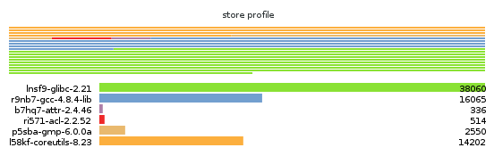
This option requires that
Guile-Charting be
installed and visible in Guile’s module search path. When that is not
the case, guix size fails as it tries to load it.
Consider packages for system—e.g., x86_64-linux.
Add directory to the front of the package module search path (see Package Modules).
This allows users to define their own packages and make them visible to the command-line tools.
Next: Invoking guix publish, Previous: Invoking guix size, Up: Utilities [Contents][Index]
guix graphPackages and their dependencies form a graph, specifically a
directed acyclic graph (DAG). It can quickly become difficult to have a
mental model of the package DAG, so the guix graph command
provides a visual representation of the DAG. By default,
guix graph emits a DAG representation in the input format of
Graphviz, so its output can be passed
directly to the dot command of Graphviz. It can also emit an
HTML page with embedded JavaScript code to display a “chord diagram”
in a Web browser, using the d3.js library, or
emit Cypher queries to construct a graph in a graph database supporting
the openCypher query language. With
--path, it simply displays the shortest path between two
packages. The general syntax is:
guix graph options package…
For example, the following command generates a PDF file representing the package DAG for the GNU Core Utilities, showing its build-time dependencies:
guix graph coreutils | dot -Tpdf > dag.pdf
The output looks like this:
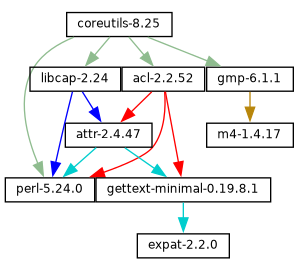
Nice little graph, no?
You may find it more pleasant to navigate the graph interactively with
xdot (from the xdot package):
guix graph coreutils | xdot -
But there is more than one graph! The one above is concise: it is the
graph of package objects, omitting implicit inputs such as GCC, libc,
grep, etc. It is often useful to have such a concise graph, but
sometimes one may want to see more details. guix graph supports
several types of graphs, allowing you to choose the level of detail:
packageThis is the default type used in the example above. It shows the DAG of package objects, excluding implicit dependencies. It is concise, but filters out many details.
reverse-packageThis shows the reverse DAG of packages. For example:
guix graph --type=reverse-package ocaml
... yields the graph of packages that explicitly depend on OCaml (if
you are also interested in cases where OCaml is an implicit dependency, see
reverse-bag below).
Note that for core packages this can yield huge graphs. If all you want
is to know the number of packages that depend on a given package, use
guix refresh --list-dependent (see --list-dependent).
bag-emergedThis is the package DAG, including implicit inputs.
For instance, the following command:
guix graph --type=bag-emerged coreutils
... yields this bigger graph:
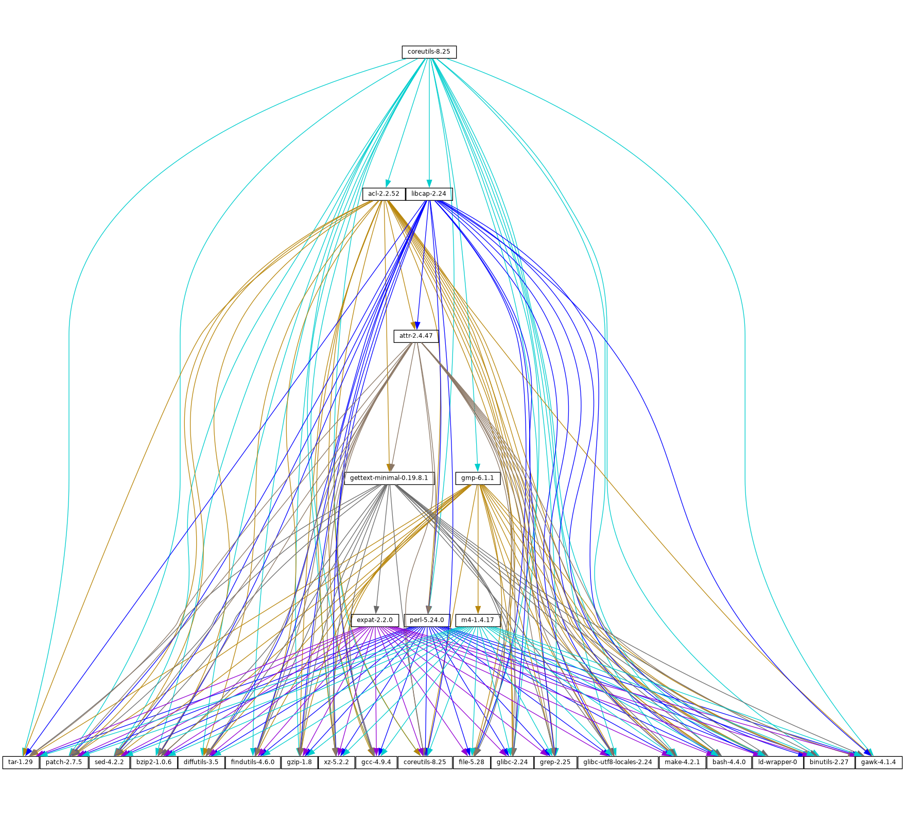
At the bottom of the graph, we see all the implicit inputs of
gnu-build-system (see gnu-build-system).
Now, note that the dependencies of these implicit inputs—that is, the bootstrap dependencies (see Bootstrapping)—are not shown here, for conciseness.
bagSimilar to bag-emerged, but this time including all the bootstrap
dependencies.
bag-with-originsSimilar to bag, but also showing origins and their dependencies.
reverse-bagThis shows the reverse DAG of packages. Unlike reverse-package,
it also takes implicit dependencies into account. For example:
guix graph -t reverse-bag dune
... yields the graph of all packages that depend on Dune, directly or
indirectly. Since Dune is an implicit dependency of many packages
via dune-build-system, this shows a large number of packages,
whereas reverse-package would show very few if any.
derivationThis is the most detailed representation: It shows the DAG of derivations (see Derivations) and plain store items. Compared to the above representation, many additional nodes are visible, including build scripts, patches, Guile modules, etc.
For this type of graph, it is also possible to pass a .drv file name instead of a package name, as in:
guix graph -t derivation $(guix system build -d my-config.scm)
moduleThis is the graph of package modules (see Package Modules).
For example, the following command shows the graph for the package
module that defines the guile package:
guix graph -t module guile | xdot -
All the types above correspond to build-time dependencies. The following graph type represents the run-time dependencies:
referencesThis is the graph of references of a package output, as returned
by guix gc --references (see Invoking guix gc).
If the given package output is not available in the store, guix
graph attempts to obtain dependency information from substitutes.
Here you can also pass a store file name instead of a package name. For example, the command below produces the reference graph of your profile (which can be big!):
guix graph -t references $(readlink -f ~/.guix-profile)
referrersThis is the graph of the referrers of a store item, as returned by
guix gc --referrers (see Invoking guix gc).
This relies exclusively on local information from your store. For
instance, let us suppose that the current Inkscape is available in 10
profiles on your machine; guix graph -t referrers inkscape
will show a graph rooted at Inkscape and with those 10 profiles linked
to it.
It can help determine what is preventing a store item from being garbage collected.
Often, the graph of the package you are interested in does not fit on
your screen, and anyway all you want to know is why that package
actually depends on some seemingly unrelated package. The
--path option instructs guix graph to display the
shortest path between two packages (or derivations, or store items,
etc.):
$ guix graph --path emacs libunistring emacs@26.3 mailutils@3.9 libunistring@0.9.10 $ guix graph --path -t derivation emacs libunistring /gnu/store/…-emacs-26.3.drv /gnu/store/…-mailutils-3.9.drv /gnu/store/…-libunistring-0.9.10.drv $ guix graph --path -t references emacs libunistring /gnu/store/…-emacs-26.3 /gnu/store/…-libidn2-2.2.0 /gnu/store/…-libunistring-0.9.10
Sometimes you still want to visualize the graph but would like to trim
it so it can actually be displayed. One way to do it is via the
--max-depth (or -M) option, which lets you specify the
maximum depth of the graph. In the example below, we visualize only
libreoffice and the nodes whose distance to libreoffice is
at most 2:
guix graph -M 2 libreoffice | xdot -f fdp -
Mind you, that’s still a big ball of spaghetti, but at least
dot can render it quickly and it can be browsed somewhat.
The available options are the following:
Produce a graph output of type, where type must be one of the values listed above.
List the supported graph types.
Produce a graph using the selected backend.
List the supported graph backends.
Currently, the available backends are Graphviz and d3.js.
Display the shortest path between two nodes of the type specified by
--type. The example below shows the shortest path between
libreoffice and llvm according to the references of
libreoffice:
$ guix graph --path -t references libreoffice llvm /gnu/store/…-libreoffice-6.4.2.2 /gnu/store/…-libepoxy-1.5.4 /gnu/store/…-mesa-19.3.4 /gnu/store/…-llvm-9.0.1
Consider the package expr evaluates to.
This is useful to precisely refer to a package, as in this example:
guix graph -e '(@@ (gnu packages commencement) gnu-make-final)'
Display the graph for system—e.g., i686-linux.
The package dependency graph is largely architecture-independent, but there are some architecture-dependent bits that this option allows you to visualize.
Add directory to the front of the package module search path (see Package Modules).
This allows users to define their own packages and make them visible to the command-line tools.
On top of that, guix graph supports all the usual package
transformation options (see Package Transformation Options). This
makes it easy to view the effect of a graph-rewriting transformation
such as --with-input. For example, the command below outputs
the graph of git once openssl has been replaced by
libressl everywhere in the graph:
guix graph git --with-input=openssl=libressl
So many possibilities, so much fun!
Next: Invoking guix challenge, Previous: Invoking guix graph, Up: Utilities [Contents][Index]
guix publishThe purpose of guix publish is to enable users to easily share
their store with others, who can then use it as a substitute server
(see Substitutes).
When guix publish runs, it spawns an HTTP server which allows
anyone with network access to obtain substitutes from it. This means
that any machine running Guix can also act as if it were a build farm,
since the HTTP interface is compatible with Cuirass, the software behind
the ci.guix.gnu.org build farm.
For security, each substitute is signed, allowing recipients to check
their authenticity and integrity (see Substitutes). Because
guix publish uses the signing key of the system, which is only
readable by the system administrator, it must be started as root; the
--user option makes it drop root privileges early on.
The signing key pair must be generated before guix publish is
launched, using guix archive --generate-key (see Invoking guix archive).
When the --advertise option is passed, the server advertises its availability on the local network using multicast DNS (mDNS) and DNS service discovery (DNS-SD), currently via Guile-Avahi (see Using Avahi in Guile Scheme Programs).
The general syntax is:
guix publish options…
Running guix publish without any additional arguments will
spawn an HTTP server on port 8080:
guix publish
guix publish can also be started following the systemd
“socket activation” protocol (see make-systemd-constructor in The GNU Shepherd Manual).
Once a publishing server has been authorized, the daemon may download substitutes from it. See Getting Substitutes from Other Servers.
By default, guix publish compresses archives on the fly as it
serves them. This “on-the-fly” mode is convenient in that it requires
no setup and is immediately available. However, when serving lots of
clients, we recommend using the --cache option, which enables
caching of the archives before they are sent to clients—see below for
details. The guix weather command provides a handy way to
check what a server provides (see Invoking guix weather).
As a bonus, guix publish also serves as a content-addressed
mirror for source files referenced in origin records
(see origin Reference). For instance, assuming guix
publish is running on example.org, the following URL returns the
raw hello-2.10.tar.gz file with the given SHA256 hash
(represented in nix-base32 format, see Invoking guix hash):
http://example.org/file/hello-2.10.tar.gz/sha256/0ssi1…ndq1i
Obviously, these URLs only work for files that are in the store; in other cases, they return 404 (“Not Found”).
Build logs are available from /log URLs like:
http://example.org/log/gwspk…-guile-2.2.3
When guix-daemon is configured to save compressed build logs,
as is the case by default (see Invoking guix-daemon), /log
URLs return the compressed log as-is, with an appropriate
Content-Type and/or Content-Encoding header. We recommend
running guix-daemon with --log-compression=gzip since
Web browsers can automatically decompress it, which is not the case with
Bzip2 compression.
The following options are available:
--port=port-p portListen for HTTP requests on port.
--listen=hostListen on the network interface for host. The default is to accept connections from any interface.
--user=user-u userChange privileges to user as soon as possible—i.e., once the server socket is open and the signing key has been read.
--compression[=method[:level]]-C [method[:level]]Compress data using the given method and level. method is
one of lzip, zstd, and gzip; when method is
omitted, gzip is used.
When level is zero, disable compression. The range 1 to 9 corresponds to different compression levels: 1 is the fastest, and 9 is the best (CPU-intensive). The default is 3.
Usually, lzip compresses noticeably better than gzip for a
small increase in CPU usage; see
benchmarks on the lzip
Web page. However, lzip achieves low decompression throughput
(on the order of 50 MiB/s on modern hardware), which can be a
bottleneck for someone who downloads over a fast network connection.
The compression ratio of zstd is between that of lzip and
that of gzip; its main advantage is a
high decompression speed.
Unless --cache is used, compression occurs on the fly and
the compressed streams are not
cached. Thus, to reduce load on the machine that runs guix
publish, it may be a good idea to choose a low compression level, to
run guix publish behind a caching proxy, or to use
--cache. Using --cache has the advantage that it
allows guix publish to add Content-Length HTTP header
to its responses.
This option can be repeated, in which case every substitute gets compressed using all the selected methods, and all of them are advertised. This is useful when users may not support all the compression methods: they can select the one they support.
--cache=directory-c directoryCache archives and meta-data (.narinfo URLs) to directory
and only serve archives that are in cache.
When this option is omitted, archives and meta-data are created
on-the-fly. This can reduce the available bandwidth, especially when
compression is enabled, since this may become CPU-bound. Another
drawback of the default mode is that the length of archives is not known
in advance, so guix publish does not add a
Content-Length HTTP header to its responses, which in turn
prevents clients from knowing the amount of data being downloaded.
Conversely, when --cache is used, the first request for a store
item (via a .narinfo URL) triggers a
background process to bake the archive—computing its
.narinfo and compressing the archive, if needed. Once the
archive is cached in directory, subsequent requests succeed and
are served directly from the cache, which guarantees that clients get
the best possible bandwidth.
That first .narinfo request nonetheless returns 200, provided the
requested store item is “small enough”, below the cache bypass
threshold—see --cache-bypass-threshold below. That way,
clients do not have to wait until the archive is baked. For larger
store items, the first .narinfo request returns 404, meaning that
clients have to wait until the archive is baked.
The “baking” process is performed by worker threads. By default, one thread per CPU core is created, but this can be customized. See --workers below.
When --ttl is used, cached entries are automatically deleted when they have expired.
--workers=NWhen --cache is used, request the allocation of N worker threads to “bake” archives.
--ttl=ttlProduce Cache-Control HTTP headers that advertise a time-to-live
(TTL) of ttl. ttl must denote a duration: 5d means 5
days, 1m means 1 month, and so on.
This allows the user’s Guix to keep substitute information in cache for
ttl. However, note that guix publish does not itself
guarantee that the store items it provides will indeed remain available
for as long as ttl.
Additionally, when --cache is used, cached entries that have not been accessed for ttl and that no longer have a corresponding item in the store, may be deleted.
--negative-ttl=ttlSimilarly produce Cache-Control HTTP headers to advertise the
time-to-live (TTL) of negative lookups—missing store items, for
which the HTTP 404 code is returned. By default, no negative TTL is
advertised.
This parameter can help adjust server load and substitute latency by instructing cooperating clients to be more or less patient when a store item is missing.
--cache-bypass-threshold=sizeWhen used in conjunction with --cache, store items smaller than
size are immediately available, even when they are not yet in
cache. size is a size in bytes, or it can be suffixed by M
for megabytes and so on. The default is 10M.
“Cache bypass” allows you to reduce the publication delay for clients at the expense of possibly additional I/O and CPU use on the server side: depending on the client access patterns, those store items can end up being baked several times until a copy is available in cache.
Increasing the threshold may be useful for sites that have few users, or to guarantee that users get substitutes even for store items that are not popular.
--nar-path=pathUse path as the prefix for the URLs of “nar” files (see normalized archives).
By default, nars are served at a URL such as
/nar/gzip/…-coreutils-8.25. This option allows you to
change the /nar part to path.
--public-key=file--private-key=fileUse the specific files as the public/private key pair used to sign the store items being published.
The files must correspond to the same key pair (the private key is used
for signing and the public key is merely advertised in the signature
metadata). They must contain keys in the canonical s-expression format
as produced by guix archive --generate-key (see Invoking guix archive). By default, /etc/guix/signing-key.pub and
/etc/guix/signing-key.sec are used.
--repl[=port]-r [port]Spawn a Guile REPL server (see REPL Servers in GNU Guile
Reference Manual) on port (37146 by default). This is used
primarily for debugging a running guix publish server.
Enabling guix publish on Guix System is a one-liner: just
instantiate a guix-publish-service-type service in the services field
of the operating-system declaration (see guix-publish-service-type).
If you are instead running Guix on a “foreign distro”, follow these instructions:
# ln -s ~root/.guix-profile/lib/systemd/system/guix-publish.service \
/etc/systemd/system/
# systemctl start guix-publish && systemctl enable guix-publish
# ln -s ~root/.guix-profile/lib/upstart/system/guix-publish.conf /etc/init/ # start guix-publish
Next: Invoking guix copy, Previous: Invoking guix publish, Up: Utilities [Contents][Index]
guix challengeDo the binaries provided by this server really correspond to the source
code it claims to build? Is a package build process deterministic?
These are the questions the guix challenge command attempts to
answer.
The former is obviously an important question: Before using a substitute server (see Substitutes), one had better verify that it provides the right binaries, and thus challenge it. The latter is what enables the former: If package builds are deterministic, then independent builds of the package should yield the exact same result, bit for bit; if a server provides a binary different from the one obtained locally, it may be either corrupt or malicious.
We know that the hash that shows up in /gnu/store file names is
the hash of all the inputs of the process that built the file or
directory—compilers, libraries, build scripts,
etc. (see Introduction). Assuming deterministic build processes,
one store file name should map to exactly one build output.
guix challenge checks whether there is, indeed, a single
mapping by comparing the build outputs of several independent builds of
any given store item.
The command output looks like this:
$ guix challenge \
--substitute-urls="https://ci.guix.gnu.org https://guix.example.org" \
openssl git pius coreutils grep
updating substitutes from 'https://ci.guix.gnu.org'... 100.0%
updating substitutes from 'https://guix.example.org'... 100.0%
/gnu/store/…-openssl-1.0.2d contents differ:
local hash: 0725l22r5jnzazaacncwsvp9kgf42266ayyp814v7djxs7nk963q
https://ci.guix.gnu.org/nar/…-openssl-1.0.2d: 0725l22r5jnzazaacncwsvp9kgf42266ayyp814v7djxs7nk963q
https://guix.example.org/nar/…-openssl-1.0.2d: 1zy4fmaaqcnjrzzajkdn3f5gmjk754b43qkq47llbyak9z0qjyim
differing files:
/lib/libcrypto.so.1.1
/lib/libssl.so.1.1
/gnu/store/…-git-2.5.0 contents differ:
local hash: 00p3bmryhjxrhpn2gxs2fy0a15lnip05l97205pgbk5ra395hyha
https://ci.guix.gnu.org/nar/…-git-2.5.0: 069nb85bv4d4a6slrwjdy8v1cn4cwspm3kdbmyb81d6zckj3nq9f
https://guix.example.org/nar/…-git-2.5.0: 0mdqa9w1p6cmli6976v4wi0sw9r4p5prkj7lzfd1877wk11c9c73
differing file:
/libexec/git-core/git-fsck
/gnu/store/…-pius-2.1.1 contents differ:
local hash: 0k4v3m9z1zp8xzzizb7d8kjj72f9172xv078sq4wl73vnq9ig3ax
https://ci.guix.gnu.org/nar/…-pius-2.1.1: 0k4v3m9z1zp8xzzizb7d8kjj72f9172xv078sq4wl73vnq9ig3ax
https://guix.example.org/nar/…-pius-2.1.1: 1cy25x1a4fzq5rk0pmvc8xhwyffnqz95h2bpvqsz2mpvlbccy0gs
differing file:
/share/man/man1/pius.1.gz
…
5 store items were analyzed:
- 2 (40.0%) were identical
- 3 (60.0%) differed
- 0 (0.0%) were inconclusive
In this example, guix challenge queries all the substitute
servers for each of the fives packages specified on the command line.
It then reports those store items for which the servers obtained a
result different from the local build (if it exists) and/or different
from one another; here, the ‘local hash’ lines indicate that a
local build result was available for each of these packages and shows
its hash.
As an example, guix.example.org always gets a different answer.
Conversely, ci.guix.gnu.org agrees with local builds, except in the
case of Git. This might indicate that the build process of Git is
non-deterministic, meaning that its output varies as a function of
various things that Guix does not fully control, in spite of building
packages in isolated environments (see Features). Most common
sources of non-determinism include the addition of timestamps in build
results, the inclusion of random numbers, and directory listings sorted
by inode number. See https://reproducible-builds.org/docs/, for
more information.
To find out what is wrong with this Git binary, the easiest approach is to run:
guix challenge git \ --diff=diffoscope \ --substitute-urls="https://ci.guix.gnu.org https://guix.example.org"
This automatically invokes diffoscope, which displays detailed
information about files that differ.
Alternatively, we can do something along these lines (see Invoking guix archive):
$ wget -q -O - https://ci.guix.gnu.org/nar/lzip/…-git-2.5.0 \ | lzip -d | guix archive -x /tmp/git $ diff -ur --no-dereference /gnu/store/…-git.2.5.0 /tmp/git
This command shows the difference between the files resulting from the
local build, and the files resulting from the build on
ci.guix.gnu.org (see Comparing and Merging Files in Comparing and Merging Files). The diff command
works great for text files. When binary files differ, a better option
is Diffoscope, a tool that helps
visualize differences for all kinds of files.
Once you have done that work, you can tell whether the differences are due
to a non-deterministic build process or to a malicious server. We try
hard to remove sources of non-determinism in packages to make it easier
to verify substitutes, but of course, this is a process that
involves not just Guix, but a large part of the free software community.
In the meantime, guix challenge is one tool to help address
the problem.
If you are writing packages for Guix, you are encouraged to check
whether ci.guix.gnu.org and other substitute servers obtain the
same build result as you did with:
guix challenge package
The general syntax is:
guix challenge options argument…
where argument is a package specification such as
guile@2.0 or glibc:debug or, alternatively, a store file
name as returned, for example, by guix build or guix
gc --list-live.
When a difference is found between the hash of a locally-built item and that of a server-provided substitute, or among substitutes provided by different servers, the command displays it as in the example above and its exit code is 2 (other non-zero exit codes denote other kinds of errors).
The one option that matters is:
--substitute-urls=urlsConsider urls the whitespace-separated list of substitute source URLs to compare to.
--diff=modeUpon mismatches, show differences according to mode, one of:
simple (the default)Show the list of files that differ.
diffoscopeInvoke Diffoscope, passing it two directories whose contents do not match.
When command is an absolute file name, run command instead of Diffoscope.
noneDo not show further details about the differences.
Thus, unless --diff=none is passed, guix challenge
downloads the store items from the given substitute servers so that it
can compare them.
--verbose-vShow details about matches (identical contents) in addition to information about mismatches.
Next: Invoking guix container, Previous: Invoking guix challenge, Up: Utilities [Contents][Index]
guix copyThe guix copy command copies items from the store of one
machine to that of another machine over a secure shell (SSH)
connection25. For example, the following
command copies the coreutils package, the user’s profile, and all
their dependencies over to host, logged in as user:
guix copy --to=user@host \
coreutils $(readlink -f ~/.guix-profile)
If some of the items to be copied are already present on host, they are not actually sent.
The command below retrieves libreoffice and gimp from
host, assuming they are available there:
guix copy --from=host libreoffice gimp
The SSH connection is established using the Guile-SSH client, which is compatible with OpenSSH: it honors ~/.ssh/known_hosts and ~/.ssh/config, and uses the SSH agent for authentication.
The key used to sign items that are sent must be accepted by the remote
machine. Likewise, the key used by the remote machine to sign items you
are retrieving must be in /etc/guix/acl so it is accepted by your
own daemon. See Invoking guix archive, for more information about
store item authentication.
The general syntax is:
guix copy [--to=spec|--from=spec] items…
You must always specify one of the following options:
--to=spec--from=specSpecify the host to send to or receive from. spec must be an SSH
spec such as example.org, charlie@example.org, or
charlie@example.org:2222.
The items can be either package names, such as gimp, or
store items, such as /gnu/store/…-idutils-4.6.
When specifying the name of a package to send, it is first built if needed, unless --dry-run was specified. Common build options are supported (see Common Build Options).
Next: Invoking guix weather, Previous: Invoking guix copy, Up: Utilities [Contents][Index]
guix containerNote: As of version 1.4.0, this tool is experimental. The interface is subject to radical change in the future.
The purpose of guix container is to manipulate processes
running within an isolated environment, commonly known as a
“container”, typically created by the guix shell
(see Invoking guix shell) and guix system container
(see Invoking guix system) commands.
The general syntax is:
guix container action options…
action specifies the operation to perform with a container, and options specifies the context-specific arguments for the action.
The following actions are available:
execExecute a command within the context of a running container.
The syntax is:
guix container exec pid program arguments…
pid specifies the process ID of the running container. program specifies an executable file name within the root file system of the container. arguments are the additional options that will be passed to program.
The following command launches an interactive login shell inside a
Guix system container, started by guix system container, and whose
process ID is 9001:
guix container exec 9001 /run/current-system/profile/bin/bash --login
Note that the pid cannot be the parent process of a container. It must be PID 1 of the container or one of its child processes.
Next: Invoking guix processes, Previous: Invoking guix container, Up: Utilities [Contents][Index]
guix weatherOccasionally you’re grumpy because substitutes are lacking and you end
up building packages by yourself (see Substitutes). The
guix weather command reports on substitute availability on the
specified servers so you can have an idea of whether you’ll be grumpy
today. It can sometimes be useful info as a user, but it is primarily
useful to people running guix publish (see Invoking guix publish).
Here’s a sample run:
$ guix weather --substitute-urls=https://guix.example.org
computing 5,872 package derivations for x86_64-linux...
looking for 6,128 store items on https://guix.example.org..
updating substitutes from 'https://guix.example.org'... 100.0%
https://guix.example.org
43.4% substitutes available (2,658 out of 6,128)
7,032.5 MiB of nars (compressed)
19,824.2 MiB on disk (uncompressed)
0.030 seconds per request (182.9 seconds in total)
33.5 requests per second
9.8% (342 out of 3,470) of the missing items are queued
867 queued builds
x86_64-linux: 518 (59.7%)
i686-linux: 221 (25.5%)
aarch64-linux: 128 (14.8%)
build rate: 23.41 builds per hour
x86_64-linux: 11.16 builds per hour
i686-linux: 6.03 builds per hour
aarch64-linux: 6.41 builds per hour
As you can see, it reports the fraction of all the packages for which
substitutes are available on the server—regardless of whether
substitutes are enabled, and regardless of whether this server’s signing
key is authorized. It also reports the size of the compressed archives
(“nars”) provided by the server, the size the corresponding store
items occupy in the store (assuming deduplication is turned off), and
the server’s throughput. The second part gives continuous integration
(CI) statistics, if the server supports it. In addition, using the
--coverage option, guix weather can list “important”
package substitutes missing on the server (see below).
To achieve that, guix weather queries over HTTP(S) meta-data
(narinfos) for all the relevant store items. Like guix
challenge, it ignores signatures on those substitutes, which is
innocuous since the command only gathers statistics and cannot install
those substitutes.
The general syntax is:
guix weather options… [packages…]
When packages is omitted, guix weather checks the availability
of substitutes for all the packages, or for those specified with
--manifest; otherwise it only considers the specified packages. It
is also possible to query specific system types with --system.
guix weather exits with a non-zero code when the fraction of
available substitutes is below 100%.
The available options are listed below.
--substitute-urls=urlsurls is the space-separated list of substitute server URLs to query. When this option is omitted, the default set of substitute servers is queried.
--system=system-s systemQuery substitutes for system—e.g., aarch64-linux. This
option can be repeated, in which case guix weather will query
substitutes for several system types.
--manifest=fileInstead of querying substitutes for all the packages, only ask for those
specified in file. file must contain a manifest, as
with the -m option of guix package (see Invoking guix package).
This option can be repeated several times, in which case the manifests are concatenated.
--coverage[=count]-c [count]Report on substitute coverage for packages: list packages with at least count dependents (zero by default) for which substitutes are unavailable. Dependent packages themselves are not listed: if b depends on a and a has no substitutes, only a is listed, even though b usually lacks substitutes as well. The result looks like this:
$ guix weather --substitute-urls=https://ci.guix.gnu.org https://bordeaux.guix.gnu.org -c 10
computing 8,983 package derivations for x86_64-linux...
looking for 9,343 store items on https://ci.guix.gnu.org https://bordeaux.guix.gnu.org...
updating substitutes from 'https://ci.guix.gnu.org https://bordeaux.guix.gnu.org'... 100.0%
https://ci.guix.gnu.org https://bordeaux.guix.gnu.org
64.7% substitutes available (6,047 out of 9,343)
…
2502 packages are missing from 'https://ci.guix.gnu.org https://bordeaux.guix.gnu.org' for 'x86_64-linux', among which:
58 kcoreaddons@5.49.0 /gnu/store/…-kcoreaddons-5.49.0
46 qgpgme@1.11.1 /gnu/store/…-qgpgme-1.11.1
37 perl-http-cookiejar@0.008 /gnu/store/…-perl-http-cookiejar-0.008
…
What this example shows is that kcoreaddons and presumably the 58
packages that depend on it have no substitutes at
ci.guix.gnu.org; likewise for qgpgme and the 46
packages that depend on it.
If you are a Guix developer, or if you are taking care of this build farm, you’ll probably want to have a closer look at these packages: they may simply fail to build.
--display-missingDisplay the list of store items for which substitutes are missing.
Previous: Invoking guix weather, Up: Utilities [Contents][Index]
guix processesThe guix processes command can be useful to developers and system
administrators, especially on multi-user machines and on build farms: it lists
the current sessions (connections to the daemon), as well as information about
the processes involved26. Here’s an example of the information it returns:
$ sudo guix processes SessionPID: 19002 ClientPID: 19090 ClientCommand: guix shell python SessionPID: 19402 ClientPID: 19367 ClientCommand: guix publish -u guix-publish -p 3000 -C 9 … SessionPID: 19444 ClientPID: 19419 ClientCommand: cuirass --cache-directory /var/cache/cuirass … LockHeld: /gnu/store/…-perl-ipc-cmd-0.96.lock LockHeld: /gnu/store/…-python-six-bootstrap-1.11.0.lock LockHeld: /gnu/store/…-libjpeg-turbo-2.0.0.lock ChildPID: 20495 ChildCommand: guix offload x86_64-linux 7200 1 28800 ChildPID: 27733 ChildCommand: guix offload x86_64-linux 7200 1 28800 ChildPID: 27793 ChildCommand: guix offload x86_64-linux 7200 1 28800
In this example we see that guix-daemon has three clients:
guix environment, guix publish, and the Cuirass continuous
integration tool; their process identifier (PID) is given by the
ClientPID field. The SessionPID field gives the PID of the
guix-daemon sub-process of this particular session.
The LockHeld fields show which store items are currently locked
by this session, which corresponds to store items being built or
substituted (the LockHeld field is not displayed when
guix processes is not running as root). Last, by looking at
the ChildPID and ChildCommand fields, we understand that
these three builds are being offloaded (see Using the Offload Facility).
The output is in Recutils format so we can use the handy recsel
command to select sessions of interest (see Selection Expressions in GNU recutils manual). As an example, the command shows the command
line and PID of the client that triggered the build of a Perl package:
$ sudo guix processes | \
recsel -p ClientPID,ClientCommand -e 'LockHeld ~ "perl"'
ClientPID: 19419
ClientCommand: cuirass --cache-directory /var/cache/cuirass …
Additional options are listed below.
--format=format-f formatProduce output in the specified format, one of:
recutilsThe default option. It outputs a set of Session recutils records
that include each ChildProcess as a field.
normalizedNormalize the output records into record sets (see Record Sets in GNU recutils manual). Normalizing into record sets allows
joins across record types. The example below lists the PID of each
ChildProcess and the associated PID for Session that
spawned the ChildProcess where the Session was started
using guix build.
$ guix processes --format=normalized | \
recsel \
-j Session \
-t ChildProcess \
-p Session.PID,PID \
-e 'Session.ClientCommand ~ "guix build"'
PID: 4435
Session_PID: 4278
PID: 4554
Session_PID: 4278
PID: 4646
Session_PID: 4278
Next: System Configuration, Previous: Utilities, Up: GNU Guix [Contents][Index]
You can target computers of different CPU architectures when producing
packages (see Invoking guix package), packs (see Invoking guix pack) or full systems (see Invoking guix system).
GNU Guix supports two distinct mechanisms to target foreign architectures:
Next: Native Builds, Up: Foreign Architectures [Contents][Index]
The commands supporting cross-compilation are proposing the --list-targets and --target options.
The --list-targets option lists all the supported targets that can be passed as an argument to --target.
$ guix build --list-targets The available targets are: - aarch64-linux-gnu - arm-linux-gnueabihf - i586-pc-gnu - i686-linux-gnu - i686-w64-mingw32 - mips64el-linux-gnu - powerpc-linux-gnu - powerpc64le-linux-gnu - riscv64-linux-gnu - x86_64-linux-gnu - x86_64-w64-mingw32
Targets are specified as GNU triplets (see GNU configuration triplets in Autoconf).
Those triplets are passed to GCC and the other underlying compilers possibly involved when building a package, a system image or any other GNU Guix output.
$ guix build --target=aarch64-linux-gnu hello /gnu/store/9926by9qrxa91ijkhw9ndgwp4bn24g9h-hello-2.12 $ file /gnu/store/9926by9qrxa91ijkhw9ndgwp4bn24g9h-hello-2.12/bin/hello /gnu/store/9926by9qrxa91ijkhw9ndgwp4bn24g9h-hello-2.12/bin/hello: ELF 64-bit LSB executable, ARM aarch64 …
The major benefit of cross-compilation is that there are no performance penaly compared to emulation using QEMU. There are however higher risks that some packages fail to cross-compile because few users are using this mechanism extensively.
Previous: Cross-Compilation, Up: Foreign Architectures [Contents][Index]
The commands that support impersonating a specific system have the --list-systems and --system options.
The --list-systems option lists all the supported systems that can be passed as an argument to --system.
$ guix build --list-systems The available systems are: - x86_64-linux [current] - aarch64-linux - armhf-linux - i586-gnu - i686-linux - mips64el-linux - powerpc-linux - powerpc64le-linux - riscv64-linux $ guix build --system=i686-linux hello /gnu/store/cc0km35s8x2z4pmwkrqqjx46i8b1i3gm-hello-2.12 $ file /gnu/store/cc0km35s8x2z4pmwkrqqjx46i8b1i3gm-hello-2.12/bin/hello /gnu/store/cc0km35s8x2z4pmwkrqqjx46i8b1i3gm-hello-2.12/bin/hello: ELF 32-bit LSB executable, Intel 80386 …
In the above example, the current system is x86_64-linux. The hello package is however built for the i686-linux system.
This is possible because the i686 CPU instruction set is a subset of the x86_64, hence i686 targeting binaries can be run on x86_64.
Still in the context of the previous example, if picking the
aarch64-linux system and the guix build
--system=aarch64-linux hello has to build some derivations, an extra
step might be needed.
The aarch64-linux targeting binaries cannot directly be run on a x86_64-linux system. An emulation layer is requested. The GNU Guix daemon can take advantage of the Linux kernel binfmt_misc mechanism for that. In short, the Linux kernel can defer the execution of a binary targeting a foreign platform, here aarch64-linux, to a userspace program, usually an emulator.
There is a service that registers QEMU as a backend for the
binfmt_misc mechanism (see qemu-binfmt-service-type). On Debian based foreign
distributions, the alternative would be the qemu-user-static
package.
If the binfmt_misc mechanism is not setup correctly, the building
will fail this way:
$ guix build --system=armhf-linux hello --check … unsupported-platform /gnu/store/jjn969pijv7hff62025yxpfmc8zy0aq0-hello-2.12.drv aarch64-linux while setting up the build environment: a `aarch64-linux' is required to build `/gnu/store/jjn969pijv7hff62025yxpfmc8zy0aq0-hello-2.12.drv', but I am a `x86_64-linux'…
whereas, with the binfmt_misc mechanism correctly linked with
QEMU, one can expect to see:
$ guix build --system=armhf-linux hello --check /gnu/store/13xz4nghg39wpymivlwghy08yzj97hlj-hello-2.12
The main advantage of native building compared to cross-compiling, is that more packages are likely to build correctly. However it comes at a price: compilation backed by QEMU is way slower than cross-compilation, because every instruction needs to be emulated.
The availability of substitutes for the architecture targeted by the
--system option can mitigate this problem. An other way to work
around it is to install GNU Guix on a machine whose CPU supports
the targeted instruction set, and set it up as an offload machine
(see Using the Offload Facility).
Next: Home Configuration, Previous: Foreign Architectures, Up: GNU Guix [Contents][Index]
Guix System supports a consistent whole-system configuration mechanism. By that we mean that all aspects of the global system configuration—such as the available system services, timezone and locale settings, user accounts—are declared in a single place. Such a system configuration can be instantiated—i.e., effected.
One of the advantages of putting all the system configuration under the control of Guix is that it supports transactional system upgrades, and makes it possible to roll back to a previous system instantiation, should something go wrong with the new one (see Features). Another advantage is that it makes it easy to replicate the exact same configuration across different machines, or at different points in time, without having to resort to additional administration tools layered on top of the own tools of the system.
This section describes this mechanism. First we focus on the system administrator’s viewpoint—explaining how the system is configured and instantiated. Then we show how this mechanism can be extended, for instance to support new system services.
operating-system Referenceguix systemguix deploy
Next: operating-system Reference, Up: System Configuration [Contents][Index]
The operating system is configured by providing an
operating-system declaration in a file that can then be passed to
the guix system command (see Invoking guix system). A
simple setup, with the default system services, the default Linux-Libre
kernel, initial RAM disk, and boot loader looks like this:
;; This is an operating system configuration template ;; for a "bare bones" setup, with no X11 display server. (use-modules (gnu)) (use-service-modules networking ssh) (use-package-modules screen ssh) (operating-system (host-name "komputilo") (timezone "Europe/Berlin") (locale "en_US.utf8") ;; Boot in "legacy" BIOS mode, assuming /dev/sdX is the ;; target hard disk, and "my-root" is the label of the target ;; root file system. (bootloader (bootloader-configuration (bootloader grub-bootloader) (targets '("/dev/sdX")))) ;; It's fitting to support the equally bare bones ‘-nographic’ ;; QEMU option, which also nicely sidesteps forcing QWERTY. (kernel-arguments (list "console=ttyS0,115200")) (file-systems (cons (file-system (device (file-system-label "my-root")) (mount-point "/") (type "ext4")) %base-file-systems)) ;; This is where user accounts are specified. The "root" ;; account is implicit, and is initially created with the ;; empty password. (users (cons (user-account (name "alice") (comment "Bob's sister") (group "users") ;; Adding the account to the "wheel" group ;; makes it a sudoer. Adding it to "audio" ;; and "video" allows the user to play sound ;; and access the webcam. (supplementary-groups '("wheel" "audio" "video"))) %base-user-accounts)) ;; Globally-installed packages. (packages (cons screen %base-packages)) ;; Add services to the baseline: a DHCP client and ;; an SSH server. (services (append (list (service dhcp-client-service-type) (service openssh-service-type (openssh-configuration (openssh openssh-sans-x) (port-number 2222)))) %base-services)))
This example should be self-describing. Some of the fields defined
above, such as host-name and bootloader, are mandatory.
Others, such as packages and services, can be omitted, in
which case they get a default value.
Below we discuss the effect of some of the most important fields
(see operating-system Reference, for details about all the available
fields), and how to instantiate the operating system using
guix system.
The bootloader field describes the method that will be used to boot
your system. Machines based on Intel processors can boot in “legacy” BIOS
mode, as in the example above. However, more recent machines rely instead on
the Unified Extensible Firmware Interface (UEFI) to boot. In that case,
the bootloader field should contain something along these lines:
(bootloader-configuration
(bootloader grub-efi-bootloader)
(targets '("/boot/efi")))
See Bootloader Configuration, for more information on the available configuration options.
The packages field lists packages that will be globally visible
on the system, for all user accounts—i.e., in every user’s PATH
environment variable—in addition to the per-user profiles
(see Invoking guix package). The %base-packages variable
provides all the tools one would expect for basic user and administrator
tasks—including the GNU Core Utilities, the GNU Networking Utilities,
the mg lightweight text editor, find, grep,
etc. The example above adds GNU Screen to those,
taken from the (gnu packages screen)
module (see Package Modules). The
(list package output) syntax can be used to add a specific output
of a package:
(use-modules (gnu packages)) (use-modules (gnu packages dns)) (operating-system ;; ... (packages (cons (list isc-bind "utils") %base-packages)))
Referring to packages by variable name, like isc-bind above, has
the advantage of being unambiguous; it also allows typos and such to be
diagnosed right away as “unbound variables”. The downside is that one
needs to know which module defines which package, and to augment the
use-package-modules line accordingly. To avoid that, one can use
the specification->package procedure of the (gnu packages)
module, which returns the best package for a given name or name and
version:
(use-modules (gnu packages)) (operating-system ;; ... (packages (append (map specification->package '("tcpdump" "htop" "gnupg@2.0")) %base-packages)))
The services field lists system services to be made
available when the system starts (see Services).
The operating-system declaration above specifies that, in
addition to the basic services, we want the OpenSSH secure shell
daemon listening on port 2222 (see openssh-service-type). Under the hood,
openssh-service-type arranges so that sshd is started with the
right command-line options, possibly with supporting configuration files
generated as needed (see Defining Services).
Occasionally, instead of using the base services as is, you will want to
customize them. To do this, use modify-services (see modify-services) to modify the list.
For example, suppose you want to modify
guix-daemon and Mingetty (the console log-in) in the
%base-services list (see %base-services). To do that, you can write the following in
your operating system declaration:
(define %my-services ;; My very own list of services. (modify-services %base-services (guix-service-type config => (guix-configuration (inherit config) ;; Fetch substitutes from example.org. (substitute-urls (list "https://example.org/guix" "https://ci.guix.gnu.org")))) (mingetty-service-type config => (mingetty-configuration (inherit config) ;; Automatically log in as "guest". (auto-login "guest"))))) (operating-system ;; … (services %my-services))
This changes the configuration—i.e., the service parameters—of the
guix-service-type instance, and that of all the
mingetty-service-type instances in the %base-services list
(see see the cookbook for how to
auto-login one user to a specific TTY in GNU Guix Cookbook)).
Observe how this is accomplished: first, we arrange for the original
configuration to be bound to the identifier config in the
body, and then we write the body so that it evaluates to the
desired configuration. In particular, notice how we use inherit
to create a new configuration which has the same values as the old
configuration, but with a few modifications.
The configuration for a typical “desktop” usage, with an encrypted root partition, a swap file on the root partition, the X11 display server, GNOME and Xfce (users can choose which of these desktop environments to use at the log-in screen by pressing F1), network management, power management, and more, would look like this:
;; This is an operating system configuration template ;; for a "desktop" setup with GNOME and Xfce where the ;; root partition is encrypted with LUKS, and a swap file. (use-modules (gnu) (gnu system nss) (guix utils)) (use-service-modules desktop sddm xorg) (use-package-modules certs gnome) (operating-system (host-name "antelope") (timezone "Europe/Paris") (locale "en_US.utf8") ;; Choose US English keyboard layout. The "altgr-intl" ;; variant provides dead keys for accented characters. (keyboard-layout (keyboard-layout "us" "altgr-intl")) ;; Use the UEFI variant of GRUB with the EFI System ;; Partition mounted on /boot/efi. (bootloader (bootloader-configuration (bootloader grub-efi-bootloader) (targets '("/boot/efi")) (keyboard-layout keyboard-layout))) ;; Specify a mapped device for the encrypted root partition. ;; The UUID is that returned by 'cryptsetup luksUUID'. (mapped-devices (list (mapped-device (source (uuid "12345678-1234-1234-1234-123456789abc")) (target "my-root") (type luks-device-mapping)))) (file-systems (append (list (file-system (device (file-system-label "my-root")) (mount-point "/") (type "ext4") (dependencies mapped-devices)) (file-system (device (uuid "1234-ABCD" 'fat)) (mount-point "/boot/efi") (type "vfat"))) %base-file-systems)) ;; Specify a swap file for the system, which resides on the ;; root file system. (swap-devices (list (swap-space (target "/swapfile")))) ;; Create user `bob' with `alice' as its initial password. (users (cons (user-account (name "bob") (comment "Alice's brother") (password (crypt "alice" "$6$abc")) (group "students") (supplementary-groups '("wheel" "netdev" "audio" "video"))) %base-user-accounts)) ;; Add the `students' group (groups (cons* (user-group (name "students")) %base-groups)) ;; This is where we specify system-wide packages. (packages (append (list ;; for HTTPS access nss-certs ;; for user mounts gvfs) %base-packages)) ;; Add GNOME and Xfce---we can choose at the log-in screen ;; by clicking the gear. Use the "desktop" services, which ;; include the X11 log-in service, networking with ;; NetworkManager, and more. (services (if (target-x86-64?) (append (list (service gnome-desktop-service-type) (service xfce-desktop-service-type) (set-xorg-configuration (xorg-configuration (keyboard-layout keyboard-layout)))) %desktop-services) ;; FIXME: Since GDM depends on Rust (gdm -> gnome-shell -> gjs ;; -> mozjs -> rust) and Rust is currently unavailable on ;; non-x86_64 platforms, we use SDDM and Mate here instead of ;; GNOME and GDM. (append (list (service mate-desktop-service-type) (service xfce-desktop-service-type) (set-xorg-configuration (xorg-configuration (keyboard-layout keyboard-layout)) sddm-service-type)) %desktop-services))) ;; Allow resolution of '.local' host names with mDNS. (name-service-switch %mdns-host-lookup-nss))
A graphical system with a choice of lightweight window managers instead of full-blown desktop environments would look like this:
;; This is an operating system configuration template ;; for a "desktop" setup without full-blown desktop ;; environments. (use-modules (gnu) (gnu system nss)) (use-service-modules desktop) (use-package-modules bootloaders certs emacs emacs-xyz ratpoison suckless wm xorg) (operating-system (host-name "antelope") (timezone "Europe/Paris") (locale "en_US.utf8") ;; Use the UEFI variant of GRUB with the EFI System ;; Partition mounted on /boot/efi. (bootloader (bootloader-configuration (bootloader grub-efi-bootloader) (targets '("/boot/efi")))) ;; Assume the target root file system is labelled "my-root", ;; and the EFI System Partition has UUID 1234-ABCD. (file-systems (append (list (file-system (device (file-system-label "my-root")) (mount-point "/") (type "ext4")) (file-system (device (uuid "1234-ABCD" 'fat)) (mount-point "/boot/efi") (type "vfat"))) %base-file-systems)) (users (cons (user-account (name "alice") (comment "Bob's sister") (group "users") (supplementary-groups '("wheel" "netdev" "audio" "video"))) %base-user-accounts)) ;; Add a bunch of window managers; we can choose one at ;; the log-in screen with F1. (packages (append (list ;; window managers ratpoison i3-wm i3status dmenu emacs emacs-exwm emacs-desktop-environment ;; terminal emulator xterm ;; for HTTPS access nss-certs) %base-packages)) ;; Use the "desktop" services, which include the X11 ;; log-in service, networking with NetworkManager, and more. (services %desktop-services) ;; Allow resolution of '.local' host names with mDNS. (name-service-switch %mdns-host-lookup-nss))
This example refers to the /boot/efi file system by its UUID,
1234-ABCD. Replace this UUID with the right UUID on your system,
as returned by the blkid command.
See Desktop Services, for the exact list of services provided by
%desktop-services. See X.509 Certificates, for background
information about the nss-certs package that is used here.
Again, %desktop-services is just a list of service objects. If
you want to remove services from there, you can do so using the
procedures for list filtering (see SRFI-1 Filtering and
Partitioning in GNU Guile Reference Manual). For instance, the
following expression returns a list that contains all the services in
%desktop-services minus the Avahi service:
(remove (lambda (service)
(eq? (service-kind service) avahi-service-type))
%desktop-services)
Alternatively, the modify-services macro can be used:
Assuming the operating-system declaration
is stored in the my-system-config.scm
file, the guix system reconfigure my-system-config.scm command
instantiates that configuration, and makes it the default GRUB boot
entry (see Invoking guix system).
Note: We recommend that you keep this my-system-config.scm file safe and under version control to easily track changes to your configuration.
The normal way to change the system configuration is by updating this
file and re-running guix system reconfigure. One should never
have to touch files in /etc or to run commands that modify the
system state such as useradd or grub-install. In
fact, you must avoid that since that would not only void your warranty
but also prevent you from rolling back to previous versions of your
system, should you ever need to.
Speaking of roll-back, each time you run guix system
reconfigure, a new generation of the system is created—without
modifying or deleting previous generations. Old system generations get
an entry in the bootloader boot menu, allowing you to boot them in case
something went wrong with the latest generation. Reassuring, no? The
guix system list-generations command lists the system
generations available on disk. It is also possible to roll back the
system via the commands guix system roll-back and
guix system switch-generation.
Although the guix system reconfigure command will not modify
previous generations, you must take care when the current generation is not
the latest (e.g., after invoking guix system roll-back), since
the operation might overwrite a later generation (see Invoking guix system).
At the Scheme level, the bulk of an operating-system declaration
is instantiated with the following monadic procedure (see The Store Monad):
Return a derivation that builds os, an operating-system
object (see Derivations).
The output of the derivation is a single directory that refers to all the packages, configuration files, and other supporting files needed to instantiate os.
This procedure is provided by the (gnu system) module. Along
with (gnu services) (see Services), this module contains the
guts of Guix System. Make sure to visit it!
Next: File Systems, Previous: Using the Configuration System, Up: System Configuration [Contents][Index]
operating-system ReferenceThis section summarizes all the options available in
operating-system declarations (see Using the Configuration System).
This is the data type representing an operating system configuration. By that, we mean all the global system configuration, not per-user configuration (see Using the Configuration System).
kernel (default: linux-libre)The package object of the operating system kernel to use27.
hurd (default: #f)The package object of the Hurd to be started by the kernel. When this
field is set, produce a GNU/Hurd operating system. In that case,
kernel must also be set to the gnumach package—the
microkernel the Hurd runs on.
Warning: This feature is experimental and only supported for disk images.
kernel-loadable-modules (default: ’())A list of objects (usually packages) to collect loadable kernel modules
from–e.g. (list ddcci-driver-linux).
kernel-arguments (default: %default-kernel-arguments)List of strings or gexps representing additional arguments to pass on
the command-line of the kernel—e.g., ("console=ttyS0").
bootloaderThe system bootloader configuration object. See Bootloader Configuration.
labelThis is the label (a string) as it appears in the bootloader’s menu entry. The default label includes the kernel name and version.
keyboard-layout (default: #f)This field specifies the keyboard layout to use in the console. It can be
either #f, in which case the default keyboard layout is used (usually
US English), or a <keyboard-layout> record. See Keyboard Layout,
for more information.
This keyboard layout is in effect as soon as the kernel has booted. For
instance, it is the keyboard layout in effect when you type a passphrase if
your root file system is on a luks-device-mapping mapped device
(see Mapped Devices).
Note: This does not specify the keyboard layout used by the bootloader, nor that used by the graphical display server. See Bootloader Configuration, for information on how to specify the bootloader’s keyboard layout. See X Window, for information on how to specify the keyboard layout used by the X Window System.
initrd-modules (default: %base-initrd-modules) ¶The list of Linux kernel modules that need to be available in the initial RAM disk. See Initial RAM Disk.
initrd (default: base-initrd)A procedure that returns an initial RAM disk for the Linux kernel. This field is provided to support low-level customization and should rarely be needed for casual use. See Initial RAM Disk.
firmware (default: %base-firmware) ¶List of firmware packages loadable by the operating system kernel.
The default includes firmware needed for Atheros- and Broadcom-based
WiFi devices (Linux-libre modules ath9k and b43-open,
respectively). See Hardware Considerations, for more info on
supported hardware.
host-nameThe host name.
hosts-file ¶A file-like object (see file-like objects) for use as
/etc/hosts (see Host Names in The GNU C Library
Reference Manual). The default is a file with entries for
localhost and host-name.
mapped-devices (default: '())A list of mapped devices. See Mapped Devices.
file-systemsA list of file systems. See File Systems.
swap-devices (default: '()) ¶A list of swap spaces. See Swap Space.
users (default: %base-user-accounts)groups (default: %base-groups)List of user accounts and groups. See User Accounts.
If the users list lacks a user account with UID 0, a
“root” account with UID 0 is automatically added.
skeletons (default: (default-skeletons))A list of target file name/file-like object tuples (see file-like objects). These are the skeleton files that will be added to the home directory of newly-created user accounts.
For instance, a valid value may look like this:
`((".bashrc" ,(plain-file "bashrc" "echo Hello\n")) (".guile" ,(plain-file "guile" "(use-modules (ice-9 readline)) (activate-readline)")))
issue (default: %default-issue)A string denoting the contents of the /etc/issue file, which is displayed when users log in on a text console.
packages (default: %base-packages)A list of packages to be installed in the global profile, which is accessible at /run/current-system/profile. Each element is either a package variable or a package/output tuple. Here’s a simple example of both:
(cons* git ; the default "out" output (list git "send-email") ; another output of git %base-packages) ; the default set
The default set includes core utilities and it is good practice to
install non-core utilities in user profiles (see Invoking guix package).
timezone (default: "Etc/UTC")A timezone identifying string—e.g., "Europe/Paris".
You can run the tzselect command to find out which timezone
string corresponds to your region. Choosing an invalid timezone name
causes guix system to fail.
locale (default: "en_US.utf8")The name of the default locale (see Locale Names in The GNU C Library Reference Manual). See Locales, for more information.
locale-definitions (default: %default-locale-definitions)The list of locale definitions to be compiled and that may be used at run time. See Locales.
locale-libcs (default: (list glibc))The list of GNU libc packages whose locale data and tools are used to build the locale definitions. See Locales, for compatibility considerations that justify this option.
name-service-switch (default: %default-nss)Configuration of the libc name service switch (NSS)—a
<name-service-switch> object. See Name Service Switch, for
details.
services (default: %base-services)A list of service objects denoting system services. See Services.
essential-services (default: ...)The list of “essential services”—i.e., things like instances of
system-service-type and host-name-service-type (see Service Reference), which are derived from the operating system definition itself.
As a user you should never need to touch this field.
pam-services (default: (base-pam-services)) ¶Linux pluggable authentication module (PAM) services.
setuid-programs (default: %setuid-programs)List of <setuid-program>. See Setuid Programs, for more
information.
sudoers-file (default: %sudoers-specification) ¶The contents of the /etc/sudoers file as a file-like object
(see local-file and plain-file).
This file specifies which users can use the sudo command, what
they are allowed to do, and what privileges they may gain. The default
is that only root and members of the wheel group may use
sudo.
When used in the lexical scope of an operating system field definition, this identifier resolves to the operating system being defined.
The example below shows how to refer to the operating system being defined in
the definition of the label field:
(use-modules (gnu) (guix)) (operating-system ;; ... (label (package-full-name (operating-system-kernel this-operating-system))))
It is an error to refer to this-operating-system outside an operating
system definition.
Next: Mapped Devices, Previous: operating-system Reference, Up: System Configuration [Contents][Index]
The list of file systems to be mounted is specified in the
file-systems field of the operating system declaration
(see Using the Configuration System). Each file system is declared
using the file-system form, like this:
(file-system
(mount-point "/home")
(device "/dev/sda3")
(type "ext4"))
As usual, some of the fields are mandatory—those shown in the example above—while others can be omitted. These are described below.
Objects of this type represent file systems to be mounted. They contain the following members:
typeThis is a string specifying the type of the file system—e.g.,
"ext4".
mount-pointThis designates the place where the file system is to be mounted.
deviceThis names the “source” of the file system. It can be one of three things: a file system label, a file system UUID, or the name of a /dev node. Labels and UUIDs offer a way to refer to file systems without having to hard-code their actual device name28.
File system labels are created using the file-system-label
procedure, UUIDs are created using uuid, and /dev node are
plain strings. Here’s an example of a file system referred to by its
label, as shown by the e2label command:
(file-system
(mount-point "/home")
(type "ext4")
(device (file-system-label "my-home")))
UUIDs are converted from their string representation (as shown by the
tune2fs -l command) using the uuid form29,
like this:
(file-system
(mount-point "/home")
(type "ext4")
(device (uuid "4dab5feb-d176-45de-b287-9b0a6e4c01cb")))
When the source of a file system is a mapped device (see Mapped Devices), its device field must refer to the mapped
device name—e.g., "/dev/mapper/root-partition".
This is required so that
the system knows that mounting the file system depends on having the
corresponding device mapping established.
flags (default: '())This is a list of symbols denoting mount flags. Recognized flags
include read-only, bind-mount, no-dev (disallow
access to special files), no-suid (ignore setuid and setgid
bits), no-atime (do not update file access times),
no-diratime (likewise for directories only),
strict-atime (update file access time), lazy-time (only
update time on the in-memory version of the file inode),
no-exec (disallow program execution), and shared (make the
mount shared).
See Mount-Unmount-Remount in The GNU C Library Reference
Manual, for more information on these flags.
options (default: #f)This is either #f, or a string denoting mount options passed to
the file system driver. See Mount-Unmount-Remount in The GNU C
Library Reference Manual, for details.
Run man 8 mount for options for various file systems, but
beware that what it lists as file-system-independent “mount options” are
in fact flags, and belong in the flags field described above.
The file-system-options->alist and alist->file-system-options
procedures from (gnu system file-systems) can be used to convert
file system options given as an association list to the string
representation, and vice-versa.
mount? (default: #t)This value indicates whether to automatically mount the file system when
the system is brought up. When set to #f, the file system gets
an entry in /etc/fstab (read by the mount command) but
is not automatically mounted.
needed-for-boot? (default: #f)This Boolean value indicates whether the file system is needed when booting. If that is true, then the file system is mounted when the initial RAM disk (initrd) is loaded. This is always the case, for instance, for the root file system.
check? (default: #t)This Boolean indicates whether the file system should be checked for errors before being mounted. How and when this happens can be further adjusted with the following options.
skip-check-if-clean? (default: #t)When true, this Boolean indicates that a file system check triggered
by check? may exit early if the file system is marked as
“clean”, meaning that it was previously correctly unmounted and
should not contain errors.
Setting this to false will always force a full consistency check when
check? is true. This may take a very long time and is not
recommended on healthy systems—in fact, it may reduce reliability!
Conversely, some primitive file systems like fat do not keep
track of clean shutdowns and will perform a full scan regardless of the
value of this option.
repair (default: 'preen)When check? finds errors, it can (try to) repair them and
continue booting. This option controls when and how to do so.
If false, try not to modify the file system at all. Checking certain
file systems like jfs may still write to the device to replay
the journal. No repairs will be attempted.
If #t, try to repair any errors found and assume “yes” to
all questions. This will fix the most errors, but may be risky.
If 'preen, repair only errors that are safe to fix without
human interaction. What that means is left up to the developers of
each file system and may be equivalent to “none” or “all”.
create-mount-point? (default: #f)When true, the mount point is created if it does not exist yet.
mount-may-fail? (default: #f)When true, this indicates that mounting this file system can fail but
that should not be considered an error. This is useful in unusual
cases; an example of this is efivarfs, a file system that can
only be mounted on EFI/UEFI systems.
dependencies (default: '())This is a list of <file-system> or <mapped-device> objects
representing file systems that must be mounted or mapped devices that
must be opened before (and unmounted or closed after) this one.
As an example, consider a hierarchy of mounts: /sys/fs/cgroup is a dependency of /sys/fs/cgroup/cpu and /sys/fs/cgroup/memory.
Another example is a file system that depends on a mapped device, for example for an encrypted partition (see Mapped Devices).
This procedure returns an opaque file system label from str, a string:
(file-system-label "home") ⇒ #<file-system-label "home">
File system labels are used to refer to file systems by label rather than by device name. See above for examples.
The (gnu system file-systems) exports the following useful
variables.
These are essential file systems that are required on normal systems,
such as %pseudo-terminal-file-system and %immutable-store (see
below). Operating system declarations should always contain at least
these.
This is the file system to be mounted as /dev/pts. It supports
pseudo-terminals created via openpty and similar
functions (see Pseudo-Terminals in The GNU C Library Reference
Manual). Pseudo-terminals are used by terminal emulators such as
xterm.
This file system is mounted as /dev/shm and is used to support
memory sharing across processes (see shm_open in The GNU C Library Reference Manual).
This file system performs a read-only “bind mount” of
/gnu/store, making it read-only for all the users including
root. This prevents against accidental modification by software
running as root or by system administrators.
The daemon itself is still able to write to the store: it remounts it read-write in its own “name space.”
The binfmt_misc file system, which allows handling of arbitrary
executable file types to be delegated to user space. This requires the
binfmt.ko kernel module to be loaded.
The fusectl file system, which allows unprivileged users to mount
and unmount user-space FUSE file systems. This requires the
fuse.ko kernel module to be loaded.
The (gnu system uuid) module provides tools to deal with file
system “unique identifiers” (UUIDs).
Return an opaque UUID (unique identifier) object of the given type (a symbol) by parsing str (a string):
(uuid "4dab5feb-d176-45de-b287-9b0a6e4c01cb") ⇒ #<<uuid> type: dce bv: …> (uuid "1234-ABCD" 'fat) ⇒ #<<uuid> type: fat bv: …>
type may be one of dce, iso9660, fat,
ntfs, or one of the commonly found synonyms for these.
UUIDs are another way to unambiguously refer to file systems in operating system configuration. See the examples above.
Up: File Systems [Contents][Index]
The Btrfs has special features, such as subvolumes, that merit being explained in more details. The following section attempts to cover basic as well as complex uses of a Btrfs file system with the Guix System.
In its simplest usage, a Btrfs file system can be described, for example, by:
(file-system
(mount-point "/home")
(type "btrfs")
(device (file-system-label "my-home")))
The example below is more complex, as it makes use of a Btrfs
subvolume, named rootfs. The parent Btrfs file system is labeled
my-btrfs-pool, and is located on an encrypted device (hence the
dependency on mapped-devices):
(file-system
(device (file-system-label "my-btrfs-pool"))
(mount-point "/")
(type "btrfs")
(options "subvol=rootfs")
(dependencies mapped-devices))
Some bootloaders, for example GRUB, only mount a Btrfs partition at its
top level during the early boot, and rely on their configuration to
refer to the correct subvolume path within that top level. The
bootloaders operating in this way typically produce their configuration
on a running system where the Btrfs partitions are already mounted and
where the subvolume information is readily available. As an example,
grub-mkconfig, the configuration generator command shipped
with GRUB, reads /proc/self/mountinfo to determine the top-level
path of a subvolume.
The Guix System produces a bootloader configuration using the operating system configuration as its sole input; it is therefore necessary to extract the subvolume name on which /gnu/store lives (if any) from that operating system configuration. To better illustrate, consider a subvolume named ’rootfs’ which contains the root file system data. In such situation, the GRUB bootloader would only see the top level of the root Btrfs partition, e.g.:
/ (top level)
├── rootfs (subvolume directory)
├── gnu (normal directory)
├── store (normal directory)
[...]
Thus, the subvolume name must be prepended to the /gnu/store path of the kernel, initrd binaries and any other files referred to in the GRUB configuration that must be found during the early boot.
The next example shows a nested hierarchy of subvolumes and directories:
/ (top level)
├── rootfs (subvolume)
├── gnu (normal directory)
├── store (subvolume)
[...]
This scenario would work without mounting the ’store’ subvolume.
Mounting ’rootfs’ is sufficient, since the subvolume name matches its
intended mount point in the file system hierarchy. Alternatively, the
’store’ subvolume could be referred to by setting the subvol
option to either /rootfs/gnu/store or rootfs/gnu/store.
Finally, a more contrived example of nested subvolumes:
/ (top level)
├── root-snapshots (subvolume)
├── root-current (subvolume)
├── guix-store (subvolume)
[...]
Here, the ’guix-store’ subvolume doesn’t match its intended mount point,
so it is necessary to mount it. The subvolume must be fully specified,
by passing its file name to the subvol option. To illustrate,
the ’guix-store’ subvolume could be mounted on /gnu/store by using
a file system declaration such as:
(file-system
(device (file-system-label "btrfs-pool-1"))
(mount-point "/gnu/store")
(type "btrfs")
(options "subvol=root-snapshots/root-current/guix-store,\
compress-force=zstd,space_cache=v2"))
Next: Swap Space, Previous: File Systems, Up: System Configuration [Contents][Index]
The Linux kernel has a notion of device mapping: a block device,
such as a hard disk partition, can be mapped into another device,
usually in /dev/mapper/,
with additional processing over the data that flows through
it30. A
typical example is encryption device mapping: all writes to the mapped
device are encrypted, and all reads are deciphered, transparently.
Guix extends this notion by considering any device or set of devices that
are transformed in some way to create a new device; for instance,
RAID devices are obtained by assembling several other devices, such
as hard disks or partitions, into a new one that behaves as one partition.
Mapped devices are declared using the mapped-device form,
defined as follows; for examples, see below.
Objects of this type represent device mappings that will be made when the system boots up.
sourceThis is either a string specifying the name of the block device to be mapped,
such as "/dev/sda3", or a list of such strings when several devices
need to be assembled for creating a new one. In case of LVM this is a
string specifying name of the volume group to be mapped.
targetThis string specifies the name of the resulting mapped device. For
kernel mappers such as encrypted devices of type luks-device-mapping,
specifying "my-partition" leads to the creation of
the "/dev/mapper/my-partition" device.
For RAID devices of type raid-device-mapping, the full device name
such as "/dev/md0" needs to be given.
LVM logical volumes of type lvm-device-mapping need to
be specified as "VGNAME-LVNAME".
targetsThis list of strings specifies names of the resulting mapped devices in case there are several. The format is identical to target.
typeThis must be a mapped-device-kind object, which specifies how
source is mapped to target.
This defines LUKS block device encryption using the cryptsetup
command from the package with the same name. It relies on the
dm-crypt Linux kernel module.
This defines a RAID device, which is assembled using the mdadm
command from the package with the same name. It requires a Linux kernel
module for the appropriate RAID level to be loaded, such as raid456
for RAID-4, RAID-5 or RAID-6, or raid10 for RAID-10.
This defines one or more logical volumes for the Linux
Logical Volume Manager (LVM).
The volume group is activated by the vgchange command from the
lvm2 package.
The following example specifies a mapping from /dev/sda3 to
/dev/mapper/home using LUKS—the
Linux Unified Key Setup, a
standard mechanism for disk encryption.
The /dev/mapper/home
device can then be used as the device of a file-system
declaration (see File Systems).
(mapped-device
(source "/dev/sda3")
(target "home")
(type luks-device-mapping))
Alternatively, to become independent of device numbering, one may obtain the LUKS UUID (unique identifier) of the source device by a command like:
cryptsetup luksUUID /dev/sda3
and use it as follows:
(mapped-device
(source (uuid "cb67fc72-0d54-4c88-9d4b-b225f30b0f44"))
(target "home")
(type luks-device-mapping))
It is also desirable to encrypt swap space, since swap space may contain sensitive data. One way to accomplish that is to use a swap file in a file system on a device mapped via LUKS encryption. In this way, the swap file is encrypted because the entire device is encrypted. See Swap Space, or See Disk Partitioning, for an example.
A RAID device formed of the partitions /dev/sda1 and /dev/sdb1 may be declared as follows:
(mapped-device
(source (list "/dev/sda1" "/dev/sdb1"))
(target "/dev/md0")
(type raid-device-mapping))
The /dev/md0 device can then be used as the device of a
file-system declaration (see File Systems).
Note that the RAID level need not be given; it is chosen during the
initial creation and formatting of the RAID device and is determined
automatically later.
LVM logical volumes “alpha” and “beta” from volume group “vg0” can be declared as follows:
(mapped-device
(source "vg0")
(targets (list "vg0-alpha" "vg0-beta"))
(type lvm-device-mapping))
Devices /dev/mapper/vg0-alpha and /dev/mapper/vg0-beta can
then be used as the device of a file-system declaration
(see File Systems).
Next: User Accounts, Previous: Mapped Devices, Up: System Configuration [Contents][Index]
Swap space, as it is commonly called, is a disk area specifically designated for paging: the process in charge of memory management (the Linux kernel or Hurd’s default pager) can decide that some memory pages stored in RAM which belong to a running program but are unused should be stored on disk instead. It unloads those from the RAM, freeing up precious fast memory, and writes them to the swap space. If the program tries to access that very page, the memory management process loads it back into memory for the program to use.
A common misconception about swap is that it is only useful when small amounts of RAM are available to the system. However, it should be noted that kernels often use all available RAM for disk access caching to make I/O faster, and thus paging out unused portions of program memory will expand the RAM available for such caching.
For a more detailed description of how memory is managed from the viewpoint of a monolithic kernel, See Memory Concepts in The GNU C Library Reference Manual.
The Linux kernel has support for swap partitions and swap files: the former uses a whole disk partition for paging, whereas the second uses a file on a file system for that (the file system driver needs to support it). On a comparable setup, both have the same performance, so one should consider ease of use when deciding between them. Partitions are “simpler” and do not need file system support, but need to be allocated at disk formatting time (logical volumes notwithstanding), whereas files can be allocated and deallocated at any time.
Note that swap space is not zeroed on shutdown, so sensitive data (such as passwords) may linger on it if it was paged out. As such, you should consider having your swap reside on an encrypted device (see Mapped Devices).
Objects of this type represent swap spaces. They contain the following members:
targetThe device or file to use, either a UUID, a file-system-label or
a string, as in the definition of a file-system (see File Systems).
dependencies (default: '())A list of file-system or mapped-device objects, upon which
the availability of the space depends. Note that just like for
file-system objects, dependencies which are needed for boot and
mounted in early userspace are not managed by the Shepherd, and so
automatically filtered out for you.
priority (default: #f)Only supported by the Linux kernel. Either #f to disable swap
priority, or an integer between 0 and 32767. The kernel will first use
swap spaces of higher priority when paging, and use same priority spaces
on a round-robin basis. The kernel will use swap spaces without a set
priority after prioritized spaces, and in the order that they appeared in
(not round-robin).
discard? (default: #f)Only supported by the Linux kernel. When true, the kernel will notify the disk controller of discarded pages, for example with the TRIM operation on Solid State Drives.
Here are some examples:
(swap-space (target (uuid "4dab5feb-d176-45de-b287-9b0a6e4c01cb")))
Use the swap partition with the given UUID. You can learn the UUID of a
Linux swap partition by running swaplabel device, where
device is the /dev file name of that partition.
(swap-space
(target (file-system-label "swap"))
(dependencies mapped-devices))
Use the partition with label swap, which can be found after all
the mapped-devices mapped devices have been opened. Again, the
swaplabel command allows you to view and change the label of a
Linux swap partition.
Here’s a more involved example with the corresponding file-systems part
of an operating-system declaration.
(file-systems (list (file-system (device (file-system-label "root")) (mount-point "/") (type "ext4")) (file-system (device (file-system-label "btrfs")) (mount-point "/btrfs") (type "btrfs")))) (swap-devices (list (swap-space (target "/btrfs/swapfile") (dependencies (filter (file-system-mount-point-predicate "/btrfs") file-systems)))))
Use the file /btrfs/swapfile as swap space, which depends on the file system mounted at /btrfs. Note how we use Guile’s filter to select the file system in an elegant fashion!
Next: Keyboard Layout, Previous: Swap Space, Up: System Configuration [Contents][Index]
User accounts and groups are entirely managed through the
operating-system declaration. They are specified with the
user-account and user-group forms:
(user-account
(name "alice")
(group "users")
(supplementary-groups '("wheel" ;allow use of sudo, etc.
"audio" ;sound card
"video" ;video devices such as webcams
"cdrom")) ;the good ol' CD-ROM
(comment "Bob's sister"))
Here’s a user account that uses a different shell and a custom home directory (the default would be "/home/bob"):
(user-account
(name "bob")
(group "users")
(comment "Alice's bro")
(shell (file-append zsh "/bin/zsh"))
(home-directory "/home/robert"))
When booting or upon completion of guix system reconfigure,
the system ensures that only the user accounts and groups specified in
the operating-system declaration exist, and with the specified
properties. Thus, account or group creations or modifications made by
directly invoking commands such as useradd are lost upon
reconfiguration or reboot. This ensures that the system remains exactly
as declared.
Objects of this type represent user accounts. The following members may be specified:
nameThe name of the user account.
group ¶This is the name (a string) or identifier (a number) of the user group this account belongs to.
supplementary-groups (default: '())Optionally, this can be defined as a list of group names that this account belongs to.
uid (default: #f)This is the user ID for this account (a number), or #f. In the
latter case, a number is automatically chosen by the system when the
account is created.
comment (default: "")A comment about the account, such as the account owner’s full name.
Note that, for non-system accounts, users are free to change their real
name as it appears in /etc/passwd using the chfn
command. When they do, their choice prevails over the system
administrator’s choice; reconfiguring does not change their name.
home-directoryThis is the name of the home directory for the account.
create-home-directory? (default: #t)Indicates whether the home directory of this account should be created if it does not exist yet.
shell (default: Bash)This is a G-expression denoting the file name of a program to be used as the shell (see G-Expressions). For example, you would refer to the Bash executable like this:
(file-append bash "/bin/bash")
... and to the Zsh executable like that:
(file-append zsh "/bin/zsh")
system? (default: #f)This Boolean value indicates whether the account is a “system” account. System accounts are sometimes treated specially; for instance, graphical login managers do not list them.
password (default: #f)You would normally leave this field to #f, initialize user
passwords as root with the passwd command, and then let
users change it with passwd. Passwords set with
passwd are of course preserved across reboot and
reconfiguration.
If you do want to set an initial password for an account, then
this field must contain the encrypted password, as a string. You can use the
crypt procedure for this purpose:
(user-account
(name "charlie")
(group "users")
;; Specify a SHA-512-hashed initial password.
(password (crypt "InitialPassword!" "$6$abc")))
Note: The hash of this initial password will be available in a file in /gnu/store, readable by all the users, so this method must be used with care.
See Passphrase Storage in The GNU C Library Reference Manual, for
more information on password encryption, and Encryption in GNU
Guile Reference Manual, for information on Guile’s crypt procedure.
User group declarations are even simpler:
(user-group (name "students"))
This type is for, well, user groups. There are just a few fields:
nameThe name of the group.
id (default: #f)The group identifier (a number). If #f, a new number is
automatically allocated when the group is created.
system? (default: #f)This Boolean value indicates whether the group is a “system” group. System groups have low numerical IDs.
password (default: #f)What, user groups can have a password? Well, apparently yes. Unless
#f, this field specifies the password of the group.
For convenience, a variable lists all the basic user groups one may expect:
This is the list of basic user groups that users and/or packages expect to be present on the system. This includes groups such as “root”, “wheel”, and “users”, as well as groups used to control access to specific devices such as “audio”, “disk”, and “cdrom”.
This is the list of basic system accounts that programs may expect to find on a GNU/Linux system, such as the “nobody” account.
Note that the “root” account is not included here. It is a special-case and is automatically added whether or not it is specified.
Next: Locales, Previous: User Accounts, Up: System Configuration [Contents][Index]
To specify what each key of your keyboard does, you need to tell the operating system what keyboard layout you want to use. The default, when nothing is specified, is the US English QWERTY layout for 105-key PC keyboards. However, German speakers will usually prefer the German QWERTZ layout, French speakers will want the AZERTY layout, and so on; hackers might prefer Dvorak or bépo, and they might even want to further customize the effect of some of the keys. This section explains how to get that done.
There are three components that will want to know about your keyboard layout:
keyboard-layout). This is useful if
you want, for instance, to make sure that you can type the passphrase of your
encrypted root partition using the right layout.
keyboard-layout).
keyboard-layout).
Guix allows you to configure all three separately but, fortunately, it allows you to share the same keyboard layout for all three components.
Keyboard layouts are represented by records created by the
keyboard-layout procedure of (gnu system keyboard). Following
the X Keyboard extension (XKB), each layout has four attributes: a name (often
a language code such as “fi” for Finnish or “jp” for Japanese), an
optional variant name, an optional keyboard model name, and a possibly empty
list of additional options. In most cases the layout name is all you care
about.
Return a new keyboard layout with the given name and variant.
name must be a string such as "fr"; variant must be a
string such as "bepo" or "nodeadkeys". See the
xkeyboard-config package for valid options.
Here are a few examples:
;; The German QWERTZ layout. Here we assume a standard ;; "pc105" keyboard model. (keyboard-layout "de") ;; The bépo variant of the French layout. (keyboard-layout "fr" "bepo") ;; The Catalan layout. (keyboard-layout "es" "cat") ;; Arabic layout with "Alt-Shift" to switch to US layout. (keyboard-layout "ar,us" #:options '("grp:alt_shift_toggle")) ;; The Latin American Spanish layout. In addition, the ;; "Caps Lock" key is used as an additional "Ctrl" key, ;; and the "Menu" key is used as a "Compose" key to enter ;; accented letters. (keyboard-layout "latam" #:options '("ctrl:nocaps" "compose:menu")) ;; The Russian layout for a ThinkPad keyboard. (keyboard-layout "ru" #:model "thinkpad") ;; The "US international" layout, which is the US layout plus ;; dead keys to enter accented characters. This is for an ;; Apple MacBook keyboard. (keyboard-layout "us" "intl" #:model "macbook78")
See the share/X11/xkb directory of the xkeyboard-config package
for a complete list of supported layouts, variants, and models.
Let’s say you want your system to use the Turkish keyboard layout throughout your system—bootloader, console, and Xorg. Here’s what your system configuration would look like:
;; Using the Turkish layout for the bootloader, the console, ;; and for Xorg. (operating-system ;; ... (keyboard-layout (keyboard-layout "tr")) ;for the console (bootloader (bootloader-configuration (bootloader grub-efi-bootloader) (targets '("/boot/efi")) (keyboard-layout keyboard-layout))) ;for GRUB (services (cons (set-xorg-configuration (xorg-configuration ;for Xorg (keyboard-layout keyboard-layout))) %desktop-services)))
In the example above, for GRUB and for Xorg, we just refer to the
keyboard-layout field defined above, but we could just as well refer to
a different layout. The set-xorg-configuration procedure communicates
the desired Xorg configuration to the graphical log-in manager, by default
GDM.
We’ve discussed how to specify the default keyboard layout of your system when it starts, but you can also adjust it at run time:
setxkbmap command (from the same-named package)
allows you to change the current layout. For example, this is how you would
change the layout to US Dvorak:
setxkbmap us dvorak
loadkeys command changes the keyboard layout in effect in the Linux
console. However, note that loadkeys does not use the XKB
keyboard layout categorization described above. The command below loads the
French bépo layout:
loadkeys fr-bepo
Next: Services, Previous: Keyboard Layout, Up: System Configuration [Contents][Index]
A locale defines cultural conventions for a particular language
and region of the world (see Locales in The GNU C Library
Reference Manual). Each locale has a name that typically has the form
language_territory.codeset—e.g.,
fr_LU.utf8 designates the locale for the French language, with
cultural conventions from Luxembourg, and using the UTF-8 encoding.
Usually, you will want to specify the default locale for the machine
using the locale field of the operating-system declaration
(see locale).
The selected locale is automatically added to the locale
definitions known to the system if needed, with its codeset inferred
from its name—e.g., bo_CN.utf8 will be assumed to use the
UTF-8 codeset. Additional locale definitions can be specified in
the locale-definitions slot of operating-system—this is
useful, for instance, if the codeset could not be inferred from the
locale name. The default set of locale definitions includes some widely
used locales, but not all the available locales, in order to save space.
For instance, to add the North Frisian locale for Germany, the value of that field may be:
(cons (locale-definition
(name "fy_DE.utf8") (source "fy_DE"))
%default-locale-definitions)
Likewise, to save space, one might want locale-definitions to
list only the locales that are actually used, as in:
(list (locale-definition
(name "ja_JP.eucjp") (source "ja_JP")
(charset "EUC-JP")))
The compiled locale definitions are available at
/run/current-system/locale/X.Y, where X.Y is the libc
version, which is the default location where the GNU libc provided
by Guix looks for locale data. This can be overridden using the
LOCPATH environment variable (see LOCPATH and locale packages).
The locale-definition form is provided by the (gnu system
locale) module. Details are given below.
This is the data type of a locale definition.
nameThe name of the locale. See Locale Names in The GNU C Library Reference Manual, for more information on locale names.
sourceThe name of the source for that locale. This is typically the
language_territory part of the locale name.
charset (default: "UTF-8")The “character set” or “code set” for that locale, as defined by IANA.
A list of commonly used UTF-8 locales, used as the default
value of the locale-definitions field of operating-system
declarations.
These locale definitions use the normalized codeset for the part
that follows the dot in the name (see normalized codeset in The GNU C Library Reference Manual). So for
instance it has uk_UA.utf8 but not, say,
uk_UA.UTF-8.
operating-system declarations provide a locale-libcs field
to specify the GNU libc packages that are used to compile locale
declarations (see operating-system Reference). “Why would I
care?”, you may ask. Well, it turns out that the binary format of
locale data is occasionally incompatible from one libc version to
another.
For instance, a program linked against libc version 2.21 is unable to
read locale data produced with libc 2.22; worse, that program
aborts instead of simply ignoring the incompatible locale
data31.
Similarly, a program linked against libc 2.22 can read most, but not
all, of the locale data from libc 2.21 (specifically, LC_COLLATE
data is incompatible); thus calls to setlocale may fail, but
programs will not abort.
The “problem” with Guix is that users have a lot of freedom: They can choose whether and when to upgrade software in their profiles, and might be using a libc version different from the one the system administrator used to build the system-wide locale data.
Fortunately, unprivileged users can also install their own locale data
and define GUIX_LOCPATH accordingly (see GUIX_LOCPATH and locale packages).
Still, it is best if the system-wide locale data at
/run/current-system/locale is built for all the libc versions
actually in use on the system, so that all the programs can access
it—this is especially crucial on a multi-user system. To do that, the
administrator can specify several libc packages in the
locale-libcs field of operating-system:
(use-package-modules base) (operating-system ;; … (locale-libcs (list glibc-2.21 (canonical-package glibc))))
This example would lead to a system containing locale definitions for both libc 2.21 and the current version of libc in /run/current-system/locale.
Next: Setuid Programs, Previous: Locales, Up: System Configuration [Contents][Index]
An important part of preparing an operating-system declaration is
listing system services and their configuration (see Using the Configuration System). System services are typically daemons launched
when the system boots, or other actions needed at that time—e.g.,
configuring network access.
Guix has a broad definition of “service” (see Service Composition), but many services are managed by the GNU Shepherd
(see Shepherd Services). On a running system, the herd
command allows you to list the available services, show their status,
start and stop them, or do other specific operations (see Jump
Start in The GNU Shepherd Manual). For example:
# herd status
The above command, run as root, lists the currently defined
services. The herd doc command shows a synopsis of the given
service and its associated actions:
# herd doc nscd Run libc's name service cache daemon (nscd). # herd doc nscd action invalidate invalidate: Invalidate the given cache--e.g., 'hosts' for host name lookups.
The start, stop, and restart sub-commands
have the effect you would expect. For instance, the commands below stop
the nscd service and restart the Xorg display server:
# herd stop nscd Service nscd has been stopped. # herd restart xorg-server Service xorg-server has been stopped. Service xorg-server has been started.
For some services, herd configuration returns the name of the
service’s configuration file, which can be handy to inspect its
configuration:
# herd configuration sshd /gnu/store/…-sshd_config
The following sections document the available services, starting with
the core services, that may be used in an operating-system
declaration.
Next: Scheduled Job Execution, Up: Services [Contents][Index]
The (gnu services base) module provides definitions for the basic
services that one expects from the system. The services exported by
this module are listed below.
This variable contains a list of basic services (see Service Types and Services, for more information on service objects) one would expect from the system: a login service (mingetty) on each tty, syslogd, the libc name service cache daemon (nscd), the udev device manager, and more.
This is the default value of the services field of
operating-system declarations. Usually, when customizing a
system, you will want to append services to %base-services, like
this:
This is the service that sets up “special files” such as
/bin/sh; an instance of it is part of %base-services.
The value associated with special-files-service-type services
must be a list of tuples where the first element is the “special file”
and the second element is its target. By default it is:
`(("/bin/sh" ,(file-append bash "/bin/sh")) ("/usr/bin/env" ,(file-append coreutils "/bin/env")))
If you want to add, say, /bin/bash to your system, you can
change it to:
`(("/bin/sh" ,(file-append bash "/bin/sh")) ("/usr/bin/env" ,(file-append coreutils "/bin/env")) ("/bin/bash" ,(file-append bash "/bin/bash")))
Since this is part of %base-services, you can use
modify-services to customize the set of special files
(see modify-services). But the simple way
to add a special file is via the extra-special-file procedure
(see below).
Use target as the “special file” file.
For example, adding the following lines to the services field of
your operating system declaration leads to a /usr/bin/env
symlink:
(extra-special-file "/usr/bin/env"
(file-append coreutils "/bin/env"))
Return a service that sets the host name to name.
Install the given fonts on the specified ttys (fonts are per
virtual console on the kernel Linux). The value of this service is a list of
tty/font pairs. The font can be the name of a font provided by the kbd
package or any valid argument to setfont, as in this example:
`(("tty1" . "LatGrkCyr-8x16") ("tty2" . ,(file-append font-tamzen "/share/kbd/consolefonts/TamzenForPowerline10x20.psf")) ("tty3" . ,(file-append font-terminus "/share/consolefonts/ter-132n"))) ; for HDPI
Return a service to run login according to config, a
<login-configuration> object, which specifies the message of the day,
among other things.
This is the data type representing the configuration of login.
motd ¶A file-like object containing the “message of the day”.
allow-empty-passwords? (default: #t)Allow empty passwords by default so that first-time users can log in when the ’root’ account has just been created.
Return a service to run mingetty according to config, a
<mingetty-configuration> object, which specifies the tty to run, among
other things.
This is the data type representing the configuration of Mingetty, which provides the default implementation of virtual console log-in.
ttyThe name of the console this Mingetty runs on—e.g., "tty1".
auto-login (default: #f)When true, this field must be a string denoting the user name under
which the system automatically logs in. When it is #f, a
user name and password must be entered to log in.
login-program (default: #f)This must be either #f, in which case the default log-in program
is used (login from the Shadow tool suite), or a gexp denoting
the name of the log-in program.
login-pause? (default: #f)When set to #t in conjunction with auto-login, the user
will have to press a key before the log-in shell is launched.
clear-on-logout? (default: #t)When set to #t, the screen will be cleared after logout.
mingetty (default: mingetty)The Mingetty package to use.
Return a service to run agetty according to config, an
<agetty-configuration> object, which specifies the tty to run,
among other things.
This is the data type representing the configuration of agetty, which
implements virtual and serial console log-in. See the agetty(8)
man page for more information.
ttyThe name of the console this agetty runs on, as a string—e.g.,
"ttyS0". This argument is optional, it will default to
a reasonable default serial port used by the kernel Linux.
For this, if there is a value for an option agetty.tty in the kernel
command line, agetty will extract the device name of the serial port
from it and use that.
If not and if there is a value for an option console with a tty in
the Linux command line, agetty will extract the device name of the
serial port from it and use that.
In both cases, agetty will leave the other serial device settings (baud rate etc.) alone—in the hope that Linux pinned them to the correct values.
baud-rate (default: #f)A string containing a comma-separated list of one or more baud rates, in descending order.
term (default: #f)A string containing the value used for the TERM environment
variable.
eight-bits? (default: #f)When #t, the tty is assumed to be 8-bit clean, and parity detection is
disabled.
auto-login (default: #f)When passed a login name, as a string, the specified user will be logged in automatically without prompting for their login name or password.
no-reset? (default: #f)When #t, don’t reset terminal cflags (control modes).
host (default: #f)This accepts a string containing the “login_host”, which will be written into the /var/run/utmpx file.
remote? (default: #f)When set to #t in conjunction with host, this will add an
-r fakehost option to the command line of the login program
specified in login-program.
flow-control? (default: #f)When set to #t, enable hardware (RTS/CTS) flow control.
no-issue? (default: #f)When set to #t, the contents of the /etc/issue file will
not be displayed before presenting the login prompt.
init-string (default: #f)This accepts a string that will be sent to the tty or modem before sending anything else. It can be used to initialize a modem.
no-clear? (default: #f)When set to #t, agetty will not clear the screen before showing
the login prompt.
login-program (default: (file-append shadow "/bin/login"))This must be either a gexp denoting the name of a log-in program, or
unset, in which case the default value is the login from the
Shadow tool suite.
local-line (default: #f)Control the CLOCAL line flag. This accepts one of three symbols as
arguments, 'auto, 'always, or 'never. If #f,
the default value chosen by agetty is 'auto.
extract-baud? (default: #f)When set to #t, instruct agetty to try to extract the baud rate
from the status messages produced by certain types of modems.
skip-login? (default: #f)When set to #t, do not prompt the user for a login name. This
can be used with login-program field to use non-standard login
systems.
no-newline? (default: #f)When set to #t, do not print a newline before printing the
/etc/issue file.
login-options (default: #f)This option accepts a string containing options that are passed to the login program. When used with the login-program, be aware that a malicious user could try to enter a login name containing embedded options that could be parsed by the login program.
login-pause (default: #f)When set to #t, wait for any key before showing the login prompt.
This can be used in conjunction with auto-login to save memory by
lazily spawning shells.
chroot (default: #f)Change root to the specified directory. This option accepts a directory path as a string.
hangup? (default: #f)Use the Linux system call vhangup to do a virtual hangup of the
specified terminal.
keep-baud? (default: #f)When set to #t, try to keep the existing baud rate. The baud
rates from baud-rate are used when agetty receives a BREAK
character.
timeout (default: #f)When set to an integer value, terminate if no user name could be read within timeout seconds.
detect-case? (default: #f)When set to #t, turn on support for detecting an uppercase-only
terminal. This setting will detect a login name containing only
uppercase letters as indicating an uppercase-only terminal and turn on
some upper-to-lower case conversions. Note that this will not support
Unicode characters.
wait-cr? (default: #f)When set to #t, wait for the user or modem to send a
carriage-return or linefeed character before displaying
/etc/issue or login prompt. This is typically used with the
init-string option.
no-hints? (default: #f)When set to #t, do not print hints about Num, Caps, and Scroll
locks.
no-hostname? (default: #f)By default, the hostname is printed. When this option is set to
#t, no hostname will be shown at all.
long-hostname? (default: #f)By default, the hostname is only printed until the first dot. When this
option is set to #t, the fully qualified hostname by
gethostname or getaddrinfo is shown.
erase-characters (default: #f)This option accepts a string of additional characters that should be interpreted as backspace when the user types their login name.
kill-characters (default: #f)This option accepts a string that should be interpreted to mean “ignore all previous characters” (also called a “kill” character) when the user types their login name.
chdir (default: #f)This option accepts, as a string, a directory path that will be changed to before login.
delay (default: #f)This options accepts, as an integer, the number of seconds to sleep before opening the tty and displaying the login prompt.
nice (default: #f)This option accepts, as an integer, the nice value with which to run the
login program.
extra-options (default: '())This option provides an “escape hatch” for the user to provide arbitrary
command-line arguments to agetty as a list of strings.
shepherd-requirement (default: '())The option can be used to provides extra shepherd requirements (for example
'syslogd) to the respective 'term-* shepherd service.
Return a service to run kmscon
according to config, a <kmscon-configuration> object, which
specifies the tty to run, among other things.
This is the data type representing the configuration of Kmscon, which implements virtual console log-in.
virtual-terminalThe name of the console this Kmscon runs on—e.g., "tty1".
login-program (default: #~(string-append #$shadow "/bin/login"))A gexp denoting the name of the log-in program. The default log-in program is
login from the Shadow tool suite.
login-arguments (default: '("-p"))A list of arguments to pass to login.
auto-login (default: #f)When passed a login name, as a string, the specified user will be logged in automatically without prompting for their login name or password.
hardware-acceleration? (default: #f)Whether to use hardware acceleration.
font-engine (default: "pango")Font engine used in Kmscon.
font-size (default: 12)Font size used in Kmscon.
keyboard-layout (default: #f)If this is #f, Kmscon uses the default keyboard layout—usually US
English (“qwerty”) for a 105-key PC keyboard.
Otherwise this must be a keyboard-layout object specifying the
keyboard layout. See Keyboard Layout, for more information on how to
specify the keyboard layout.
kmscon (default: kmscon)The Kmscon package to use.
Return a service that runs the libc name service cache daemon (nscd) with the
given config—an <nscd-configuration> object. See Name Service Switch, for an example.
For convenience, the Shepherd service for nscd provides the following actions:
invalidate ¶This invalidate the given cache. For instance, running:
herd invalidate nscd hosts
invalidates the host name lookup cache of nscd.
statisticsRunning herd statistics nscd displays information about nscd usage
and caches.
This is the default <nscd-configuration> value (see below) used
by nscd-service. It uses the caches defined by
%nscd-default-caches; see below.
This is the data type representing the name service cache daemon (nscd) configuration.
name-services (default: '())List of packages denoting name services that must be visible to
the nscd—e.g., (list nss-mdns).
glibc (default: glibc)Package object denoting the GNU C Library providing the nscd
command.
log-file (default: "/var/log/nscd.log")Name of the nscd log file. This is where debugging output goes when
debug-level is strictly positive.
debug-level (default: 0)Integer denoting the debugging levels. Higher numbers mean that more debugging output is logged.
caches (default: %nscd-default-caches)List of <nscd-cache> objects denoting things to be cached; see
below.
Data type representing a cache database of nscd and its parameters.
databaseThis is a symbol representing the name of the database to be cached.
Valid values are passwd, group, hosts, and
services, which designate the corresponding NSS database
(see NSS Basics in The GNU C Library Reference Manual).
positive-time-to-livenegative-time-to-live (default: 20)A number representing the number of seconds during which a positive or negative lookup result remains in cache.
check-files? (default: #t)Whether to check for updates of the files corresponding to database.
For instance, when database is hosts, setting this flag
instructs nscd to check for updates in /etc/hosts and to take
them into account.
persistent? (default: #t)Whether the cache should be stored persistently on disk.
shared? (default: #t)Whether the cache should be shared among users.
max-database-size (default: 32 MiB)Maximum size in bytes of the database cache.
List of <nscd-cache> objects used by default by
nscd-configuration (see above).
It enables persistent and aggressive caching of service and host name lookups. The latter provides better host name lookup performance, resilience in the face of unreliable name servers, and also better privacy—often the result of host name lookups is in local cache, so external name servers do not even need to be queried.
This data type represents the configuration of the syslog daemon.
syslogd (default: #~(string-append #$inetutils "/libexec/syslogd"))The syslog daemon to use.
config-file (default: %default-syslog.conf)The syslog configuration file to use.
Return a service that runs a syslog daemon according to config.
See syslogd invocation in GNU Inetutils, for more information on the configuration file syntax.
This is the type of the service that runs the build daemon,
guix-daemon (see Invoking guix-daemon). Its value must be a
guix-configuration record as described below.
This data type represents the configuration of the Guix build daemon.
See Invoking guix-daemon, for more information.
guix (default: guix)The Guix package to use.
build-group (default: "guixbuild")Name of the group for build user accounts.
build-accounts (default: 10)Number of build user accounts to create.
Whether to authorize the substitute keys listed in
authorized-keys—by default that of
ci.guix.gnu.org and
bordeaux.guix.gnu.org
(see Substitutes).
When authorize-key? is true, /etc/guix/acl cannot be
changed by invoking guix archive --authorize. You must
instead adjust guix-configuration as you wish and reconfigure the
system. This ensures that your operating system configuration file is
self-contained.
Note: When booting or reconfiguring to a system where
authorize-key?is true, the existing /etc/guix/acl file is backed up as /etc/guix/acl.bak if it was determined to be a manually modified file. This is to facilitate migration from earlier versions, which allowed for in-place modifications to /etc/guix/acl.
authorized-keys (default: %default-authorized-guix-keys)The list of authorized key files for archive imports, as a list of
string-valued gexps (see Invoking guix archive). By default, it
contains that of ci.guix.gnu.org and
bordeaux.guix.gnu.org (see Substitutes). See
substitute-urls below for an example on how to change it.
use-substitutes? (default: #t)Whether to use substitutes.
substitute-urls (default: %default-substitute-urls)The list of URLs where to look for substitutes by default.
Suppose you would like to fetch substitutes from guix.example.org
in addition to ci.guix.gnu.org. You will need to do
two things: (1) add guix.example.org to substitute-urls,
and (2) authorize its signing key, having done appropriate checks
(see Substitute Server Authorization). The configuration below does
exactly that:
(guix-configuration
(substitute-urls
(append (list "https://guix.example.org")
%default-substitute-urls))
(authorized-keys
(append (list (local-file "./guix.example.org-key.pub"))
%default-authorized-guix-keys)))
This example assumes that the file ./guix.example.org-key.pub
contains the public key that guix.example.org uses to sign
substitutes.
generate-substitute-key? (default: #t)Whether to generate a substitute key pair under /etc/guix/signing-key.pub and /etc/guix/signing-key.sec if there is not already one.
This key pair is used when exporting store items, for instance with
guix publish (see Invoking guix publish) or guix
archive (see Invoking guix archive). Generating a key pair takes a
few seconds when enough entropy is available and is only done once; you
might want to turn it off for instance in a virtual machine that does
not need it and where the extra boot time is a problem.
max-silent-time (default: 0)timeout (default: 0)The number of seconds of silence and the number of seconds of activity, respectively, after which a build process times out. A value of zero disables the timeout.
log-compression (default: 'gzip)The type of compression used for build logs—one of gzip,
bzip2, or none.
discover? (default: #f)Whether to discover substitute servers on the local network using mDNS and DNS-SD.
extra-options (default: '())List of extra command-line options for guix-daemon.
log-file (default: "/var/log/guix-daemon.log")File where guix-daemon’s standard output and standard error
are written.
http-proxy (default: #f)The URL of the HTTP and HTTPS proxy used for downloading fixed-output derivations and substitutes.
It is also possible to change the daemon’s proxy at run time through the
set-http-proxy action, which restarts it:
herd set-http-proxy guix-daemon http://localhost:8118
To clear the proxy settings, run:
herd set-http-proxy guix-daemon
tmpdir (default: #f)A directory path where the guix-daemon will perform builds.
This data type represents the parameters of the Guix build daemon that are extendable. This is the type of the object that must be used within a guix service extension. See Service Composition, for more information.
authorized-keys (default: '())A list of file-like objects where each element contains a public key.
substitute-urls (default: '())A list of strings where each element is a substitute URL.
chroot-directories (default: '())A list of file-like objects or strings pointing to additional directories the build daemon can use.
'()]Run udev, which populates the /dev directory dynamically.
udev rules can be provided as a list of files through the rules
variable. The procedures udev-rule, udev-rules-service
and file->udev-rule from (gnu services base) simplify the
creation of such rule files.
The herd rules udev command, as root, returns the name of the
directory containing all the active udev rules.
Return a udev-rule file named file-name containing the rules defined by the contents literal.
In the following example, a rule for a USB device is defined to be stored in the file 90-usb-thing.rules. The rule runs a script upon detecting a USB device with a given product identifier.
(define %example-udev-rule
(udev-rule
"90-usb-thing.rules"
(string-append "ACTION==\"add\", SUBSYSTEM==\"usb\", "
"ATTR{product}==\"Example\", "
"RUN+=\"/path/to/script\"")))
Return a service that extends udev-service-type with rules
and account-service-type with groups as system groups.
This works by creating a singleton service type
name-udev-rules, of which the returned service is an
instance.
Here we show how it can be used to extend udev-service-type with the
previously defined rule %example-udev-rule.
(operating-system
;; …
(services
(cons (udev-rules-service 'usb-thing %example-udev-rule)
%desktop-services)))
Return a udev file named file-name containing the rules defined within file, a file-like object.
The following example showcases how we can use an existing rule file.
(use-modules (guix download) ;for url-fetch (guix packages) ;for origin …) (define %android-udev-rules (file->udev-rule "51-android-udev.rules" (let ((version "20170910")) (origin (method url-fetch) (uri (string-append "https://raw.githubusercontent.com/M0Rf30/" "android-udev-rules/" version "/51-android.rules")) (sha256 (base32 "0lmmagpyb6xsq6zcr2w1cyx9qmjqmajkvrdbhjx32gqf1d9is003"))))))
Additionally, Guix package definitions can be included in rules in
order to extend the udev rules with the definitions found under their
lib/udev/rules.d sub-directory. In lieu of the previous
file->udev-rule example, we could have used the
android-udev-rules package which exists in Guix in the (gnu
packages android) module.
The following example shows how to use the android-udev-rules
package so that the Android tool adb can detect devices
without root privileges. It also details how to create the
adbusers group, which is required for the proper functioning of
the rules defined within the android-udev-rules package. To
create such a group, we must define it both as part of the
supplementary-groups of our user-account declaration, as
well as in the groups of the udev-rules-service procedure.
(use-modules (gnu packages android) ;for android-udev-rules (gnu system shadow) ;for user-group …) (operating-system ;; … (users (cons (user-account ;; … (supplementary-groups '("adbusers" ;for adb "wheel" "netdev" "audio" "video"))))) ;; … (services (cons (udev-rules-service 'android android-udev-rules #:groups '("adbusers")) %desktop-services)))
Save some entropy in %random-seed-file to seed /dev/urandom
when rebooting. It also tries to seed /dev/urandom from
/dev/hwrng while booting, if /dev/hwrng exists and is
readable.
This is the name of the file where some random bytes are saved by urandom-seed-service to seed /dev/urandom when rebooting. It defaults to /var/lib/random-seed.
This is the type of the service that runs GPM, the general-purpose mouse daemon, which provides mouse support to the Linux console. GPM allows users to use the mouse in the console, notably to select, copy, and paste text.
The value for services of this type must be a gpm-configuration
(see below). This service is not part of %base-services.
Data type representing the configuration of GPM.
options (default: %default-gpm-options)Command-line options passed to gpm. The default set of
options instruct gpm to listen to mouse events on
/dev/input/mice. See Command Line in gpm manual, for
more information.
gpm (default: gpm)The GPM package to use.
This is the service type for guix publish (see Invoking guix publish). Its value must be a guix-publish-configuration
object, as described below.
This assumes that /etc/guix already contains a signing key pair as
created by guix archive --generate-key (see Invoking guix archive). If that is not the case, the service will fail to start.
Data type representing the configuration of the guix publish
service.
guix (default: guix)The Guix package to use.
port (default: 80)The TCP port to listen for connections.
host (default: "localhost")The host (and thus, network interface) to listen to. Use
"0.0.0.0" to listen on all the network interfaces.
advertise? (default: #f)When true, advertise the service on the local network via the DNS-SD protocol, using Avahi.
This allows neighboring Guix devices with discovery on (see
guix-configuration above) to discover this guix publish
instance and to automatically download substitutes from it.
compression (default: '(("gzip" 3) ("zstd" 3)))This is a list of compression method/level tuple used when compressing substitutes. For example, to compress all substitutes with both lzip at level 7 and gzip at level 9, write:
'(("lzip" 7) ("gzip" 9))
Level 9 achieves the best compression ratio at the expense of increased CPU
usage, whereas level 1 achieves fast compression. See Invoking guix publish, for more information on the available compression methods and
the tradeoffs involved.
An empty list disables compression altogether.
nar-path (default: "nar")The URL path at which “nars” can be fetched. See --nar-path, for details.
cache (default: #f)When it is #f, disable caching and instead generate archives on
demand. Otherwise, this should be the name of a directory—e.g.,
"/var/cache/guix/publish"—where guix publish caches
archives and meta-data ready to be sent. See --cache, for more information on the tradeoffs involved.
workers (default: #f)When it is an integer, this is the number of worker threads used for
caching; when #f, the number of processors is used.
See --workers, for more information.
cache-bypass-threshold (default: 10 MiB)When cache is true, this is the maximum size in bytes of a store
item for which guix publish may bypass its cache in case of a
cache miss. See --cache-bypass-threshold, for more information.
ttl (default: #f)When it is an integer, this denotes the time-to-live in seconds of the published archives. See --ttl, for more information.
negative-ttl (default: #f)When it is an integer, this denotes the time-to-live in seconds for the negative lookups. See --negative-ttl, for more information.
Return a service that runs the rngd program from rng-tools
to add device to the kernel’s entropy pool. The service will fail if
device does not exist.
'()]Return a service that installs a configuration file for the
pam_limits module. The procedure optionally takes a list of
pam-limits-entry values, which can be used to specify
ulimit limits and nice priority limits to user sessions.
The following limits definition sets two hard and soft limits for all
login sessions of users in the realtime group:
(pam-limits-service
(list
(pam-limits-entry "@realtime" 'both 'rtprio 99)
(pam-limits-entry "@realtime" 'both 'memlock 'unlimited)))
The first entry increases the maximum realtime priority for non-privileged processes; the second entry lifts any restriction of the maximum address space that can be locked in memory. These settings are commonly used for real-time audio systems.
Another useful example is raising the maximum number of open file descriptors that can be used:
(pam-limits-service
(list
(pam-limits-entry "*" 'both 'nofile 100000)))
In the above example, the asterisk means the limit should apply to any
user. It is important to ensure the chosen value doesn’t exceed the
maximum system value visible in the /proc/sys/fs/file-max file,
else the users would be prevented from login in. For more information
about the Pluggable Authentication Module (PAM) limits, refer to the
‘pam_limits’ man page from the linux-pam package.
greetd is a minimal and
flexible login manager daemon, that makes no assumptions about what you
want to launch.
If you can run it from your shell in a TTY, greetd can start it. If it can be taught to speak a simple JSON-based IPC protocol, then it can be a geeter.
greetd-service-type provides necessary infrastructure for logging
in users, including:
greetd PAM service
pam-mount to mount XDG_RUNTIME_DIR
Here is example of switching from mingetty-service-type to
greetd-service-type, and how different terminals could be:
(append
(modify-services %base-services
;; greetd-service-type provides "greetd" PAM service
(delete login-service-type)
;; and can be used in place of mingetty-service-type
(delete mingetty-service-type))
(list
(service greetd-service-type
(greetd-configuration
(terminals
(list
;; we can make any terminal active by default
(greetd-terminal-configuration (terminal-vt "1") (terminal-switch #t))
;; we can make environment without XDG_RUNTIME_DIR set
;; even provide our own environment variables
(greetd-terminal-configuration
(terminal-vt "2")
(default-session-command
(greetd-agreety-session
(extra-env '(("MY_VAR" . "1")))
(xdg-env? #f))))
;; we can use different shell instead of default bash
(greetd-terminal-configuration
(terminal-vt "3")
(default-session-command
(greetd-agreety-session (command (file-append zsh "/bin/zsh")))))
;; we can use any other executable command as greeter
(greetd-terminal-configuration
(terminal-vt "4")
(default-session-command (program-file "my-noop-greeter" #~(exit))))
(greetd-terminal-configuration (terminal-vt "5"))
(greetd-terminal-configuration (terminal-vt "6"))))))
;; mingetty-service-type can be used in parallel
;; if needed to do so, do not (delete login-service-type)
;; as illustrated above
#| (service mingetty-service-type (mingetty-configuration (tty "tty8"))) |#))
Configuration record for the greetd-service-type.
motdA file-like object containing the “message of the day”.
allow-empty-passwords? (default: #t)Allow empty passwords by default so that first-time users can log in when the ’root’ account has just been created.
terminals (default: '())List of greetd-terminal-configuration per terminal for which
greetd should be started.
greeter-supplementary-groups (default: '())List of groups which should be added to greeter user. For instance:
(greeter-supplementary-groups '("seat" "video"))
Note that this example will fail if seat group does not exist.
Configuration record for per terminal greetd daemon service.
greetd (default: greetd)The greetd package to use.
config-file-nameConfiguration file name to use for greetd daemon. Generally, autogenerated
derivation based on terminal-vt value.
log-file-nameLog file name to use for greetd daemon. Generally, autogenerated
name based on terminal-vt value.
terminal-vt (default: ‘"7"’)The VT to run on. Use of a specific VT with appropriate conflict avoidance is recommended.
terminal-switch (default: #f)Make this terminal active on start of greetd.
default-session-user (default: ‘"greeter"’)The user to use for running the greeter.
default-session-command (default: (greetd-agreety-session))Can be either instance of greetd-agreety-session configuration or
gexp->script like object to use as greeter.
Configuration record for the agreety greetd greeter.
agreety (default: greetd)The package with /bin/agreety command.
command (default: (file-append bash "/bin/bash"))Command to be started by /bin/agreety on successful login.
command-args (default: '("-l"))Command arguments to pass to command.
extra-env (default: '())Extra environment variables to set on login.
xdg-env? (default: #t)If true XDG_RUNTIME_DIR and XDG_SESSION_TYPE will be set
before starting command. One should note that, extra-env variables
are set right after mentioned variables, so that they can be overriden.
Generic configuration record for the wlgreet greetd greeter.
wlgreet (default: wlgreet)The package with the /bin/wlgreet command.
command (default: (file-append sway "/bin/sway"))Command to be started by /bin/wlgreet on successful login.
command-args (default: '())Command arguments to pass to command.
output-mode (default: "all")Option to use for outputMode in the TOML configuration file.
scale (default: 1)Option to use for scale in the TOML configuration file.
background (default: '(0 0 0 0.9))RGBA list to use as the background colour of the login prompt.
headline (default: '(1 1 1 1))RGBA list to use as the headline colour of the UI popup.
prompt (default: '(1 1 1 1))RGBA list to use as the prompt colour of the UI popup.
prompt-error (default: '(1 1 1 1))RGBA list to use as the error colour of the UI popup.
border (default: '(1 1 1 1))RGBA list to use as the border colour of the UI popup.
extra-env (default: '())Extra environment variables to set on login.
Sway-specific configuration record for the wlgreet greetd greeter.
wlgreet-session (default: (greetd-wlgreet-session))A greetd-wlgreet-session record for generic wlgreet configuration,
on top of the Sway-specific greetd-wlgreet-sway-session.
sway (default: sway)The package providing the /bin/sway command.
sway-configuration (default: #f)File-like object providing an additional Sway configuration file to be prepended to the mandatory part of the configuration.
Here is an example of a greetd configuration that uses wlgreet and Sway:
(greetd-configuration
;; We need to give the greeter user these permissions, otherwise
;; Sway will crash on launch.
(greeter-supplementary-groups (list "video" "input" "seat"))
(terminals
(list (greetd-terminal-configuration
(terminal-vt "1")
(terminal-switch #t)
(default-session-command
(greetd-wlgreet-sway-session
(sway-configuration
(local-file "sway-greetd.conf"))))))))
Next: Log Rotation, Previous: Base Services, Up: Services [Contents][Index]
The (gnu services mcron) module provides an interface to
GNU mcron, a daemon to run jobs at scheduled times (see GNU mcron). GNU mcron is similar to the traditional
Unix cron daemon; the main difference is that it is
implemented in Guile Scheme, which provides a lot of flexibility when
specifying the scheduling of jobs and their actions.
The example below defines an operating system that runs the
updatedb (see Invoking updatedb in Finding Files)
and the guix gc commands (see Invoking guix gc) daily, as
well as the mkid command on behalf of an unprivileged user
(see mkid invocation in ID Database Utilities). It uses
gexps to introduce job definitions that are passed to mcron
(see G-Expressions).
(use-modules (guix) (gnu) (gnu services mcron)) (use-package-modules base idutils) (define updatedb-job ;; Run 'updatedb' at 3AM every day. Here we write the ;; job's action as a Scheme procedure. #~(job '(next-hour '(3)) (lambda () (execl (string-append #$findutils "/bin/updatedb") "updatedb" "--prunepaths=/tmp /var/tmp /gnu/store")) "updatedb")) (define garbage-collector-job ;; Collect garbage 5 minutes after midnight every day. ;; The job's action is a shell command. #~(job "5 0 * * *" ;Vixie cron syntax "guix gc -F 1G")) (define idutils-job ;; Update the index database as user "charlie" at 12:15PM ;; and 19:15PM. This runs from the user's home directory. #~(job '(next-minute-from (next-hour '(12 19)) '(15)) (string-append #$idutils "/bin/mkid src") #:user "charlie")) (operating-system ;; … ;; %BASE-SERVICES already includes an instance of ;; 'mcron-service-type', which we extend with additional ;; jobs using 'simple-service'. (services (cons (simple-service 'my-cron-jobs mcron-service-type (list garbage-collector-job updatedb-job idutils-job)) %base-services)))
Tip: When providing the action of a job specification as a procedure, you should provide an explicit name for the job via the optional 3rd argument as done in the
updatedb-jobexample above. Otherwise, the job would appear as “Lambda function” in the output ofherd schedule mcron, which is not nearly descriptive enough!
For more complex jobs defined in Scheme where you need control over the top
level, for instance to introduce a use-modules form, you can move your
code to a separate program using the program-file procedure of the
(guix gexp) module (see G-Expressions). The example below
illustrates that.
(define %battery-alert-job
;; Beep when the battery percentage falls below %MIN-LEVEL.
#~(job
'(next-minute (range 0 60 1))
#$(program-file
"battery-alert.scm"
(with-imported-modules (source-module-closure
'((guix build utils)))
#~(begin
(use-modules (guix build utils)
(ice-9 popen)
(ice-9 regex)
(ice-9 textual-ports)
(srfi srfi-2))
(define %min-level 20)
(setenv "LC_ALL" "C") ;ensure English output
(and-let* ((input-pipe (open-pipe*
OPEN_READ
#$(file-append acpi "/bin/acpi")))
(output (get-string-all input-pipe))
(m (string-match "Discharging, ([0-9]+)%" output))
(level (string->number (match:substring m 1)))
((< level %min-level)))
(format #t "warning: Battery level is low (~a%)~%" level)
(invoke #$(file-append beep "/bin/beep") "-r5")))))))
See mcron job specifications in GNU mcron, for more information on mcron job specifications. Below is the reference of the mcron service.
On a running system, you can use the schedule action of the service to
visualize the mcron jobs that will be executed next:
# herd schedule mcron
The example above lists the next five tasks that will be executed, but you can also specify the number of tasks to display:
# herd schedule mcron 10
This is the type of the mcron service, whose value is an
mcron-configuration object.
This service type can be the target of a service extension that provides additional job specifications (see Service Composition). In other words, it is possible to define services that provide additional mcron jobs to run.
Available mcron-configuration fields are:
mcron (default: mcron) (type: file-like)The mcron package to use.
jobs (default: ()) (type: list-of-gexps)This is a list of gexps (see G-Expressions), where each gexp corresponds to an mcron job specification (see mcron job specifications in GNU mcron).
log? (default: #t) (type: boolean)Log messages to standard output.
log-format (default: "~1@*~a ~a: ~a~%") (type: string)(ice-9 format) format string for log messages. The default value
produces messages like "‘pid name: message"’
(see Invoking in GNU mcron). Each message
is also prefixed by a timestamp by GNU Shepherd.
Next: Networking Setup, Previous: Scheduled Job Execution, Up: Services [Contents][Index]
Log files such as those found in /var/log tend to grow endlessly,
so it’s a good idea to rotate them once in a while—i.e., archive
their contents in separate files, possibly compressed. The (gnu
services admin) module provides an interface to GNU Rot[t]log, a
log rotation tool (see GNU Rot[t]log Manual).
This service is part of %base-services, and thus enabled by
default, with the default settings, for commonly encountered log files.
The example below shows how to extend it with an additional
rotation, should you need to do that (usually, services that
produce log files already take care of that):
(use-modules (guix) (gnu)) (use-service-modules admin) (define my-log-files ;; Log files that I want to rotate. '("/var/log/something.log" "/var/log/another.log")) (operating-system ;; … (services (cons (simple-service 'rotate-my-stuff rottlog-service-type (list (log-rotation (frequency 'daily) (files my-log-files)))) %base-services)))
This is the type of the Rottlog service, whose value is a
rottlog-configuration object.
Other services can extend this one with new log-rotation objects
(see below), thereby augmenting the set of files to be rotated.
This service type can define mcron jobs (see Scheduled Job Execution) to run the rottlog service.
Data type representing the configuration of rottlog.
rottlog (default: rottlog)The Rottlog package to use.
rc-file (default: (file-append rottlog "/etc/rc"))The Rottlog configuration file to use (see Mandatory RC Variables in GNU Rot[t]log Manual).
rotations (default: %default-rotations)A list of log-rotation objects as defined below.
jobsThis is a list of gexps where each gexp corresponds to an mcron job specification (see Scheduled Job Execution).
Data type representing the rotation of a group of log files.
Taking an example from the Rottlog manual (see Period Related File Examples in GNU Rot[t]log Manual), a log rotation might be defined like this:
(log-rotation
(frequency 'daily)
(files '("/var/log/apache/*"))
(options '("storedir apache-archives"
"rotate 6"
"notifempty"
"nocompress")))
The list of fields is as follows:
frequency (default: 'weekly)The log rotation frequency, a symbol.
filesThe list of files or file glob patterns to rotate.
options (default: %default-log-rotation-options)The list of rottlog options for this rotation (see Configuration parameters in GNU Rot[t]log Manual).
post-rotate (default: #f)Either #f or a gexp to execute once the rotation has completed.
Specifies weekly rotation of %rotated-files and of
/var/log/guix-daemon.log.
The list of syslog-controlled files to be rotated. By default it is:
'("/var/log/messages" "/var/log/secure" "/var/log/debug" \
"/var/log/maillog").
Some log files just need to be deleted periodically once they are old,
without any other criterion and without any archival step. This is the
case of build logs stored by guix-daemon under
/var/log/guix/drvs (see Invoking guix-daemon). The
log-cleanup service addresses this use case. For example,
%base-services (see Base Services) includes the following:
;; Periodically delete old build logs. (service log-cleanup-service-type (log-cleanup-configuration (directory "/var/log/guix/drvs")))
That ensures build logs do not accumulate endlessly.
This is the type of the service to delete old logs. Its value must be a
log-cleanup-configuration record as described below.
Data type representing the log cleanup configuration
directoryName of the directory containing log files.
expiry (default: (* 6 30 24 3600))Age in seconds after which a file is subject to deletion (six months by default).
schedule (default: "30 12 01,08,15,22 * *")String or gexp denoting the corresponding mcron job schedule (see Scheduled Job Execution).
Anonip is a privacy filter that removes IP address from web server logs. This service creates a FIFO and filters any written lines with anonip before writing the filtered log to a target file.
The following example sets up the FIFO /var/run/anonip/https.access.log and writes the filtered log file /var/log/anonip/https.access.log.
(service anonip-service-type
(anonip-configuration
(input "/var/run/anonip/https.access.log")
(output "/var/log/anonip/https.access.log")))
Configure your web server to write its logs to the FIFO at /var/run/anonip/https.access.log and collect the anonymized log file at /var/web-logs/https.access.log.
This data type represents the configuration of anonip. It has the following parameters:
anonip (default: anonip)The anonip package to use.
inputThe file name of the input log file to process. The service creates a FIFO of this name. The web server should write its logs to this FIFO.
outputThe file name of the processed log file.
The following optional settings may be provided:
skip-private?When #true do not mask addresses in private ranges.
columnA 1-based indexed column number. Assume IP address is in the specified column (default is 1).
replacementReplacement string in case address parsing fails, e.g. "0.0.0.0".
ipv4maskNumber of bits to mask in IPv4 addresses.
ipv6maskNumber of bits to mask in IPv6 addresses.
incrementIncrement the IP address by the given number. By default this is zero.
delimiterLog delimiter string.
regexRegular expression for detecting IP addresses. Use this instead of column.
Next: Networking Services, Previous: Log Rotation, Up: Services [Contents][Index]
The (gnu services networking) module provides services to
configure network interfaces and set up networking on your machine.
Those services provide different ways for you to set up your machine: by
declaring a static network configuration, by running a Dynamic Host
Configuration Protocol (DHCP) client, or by running daemons such as
NetworkManager and Connman that automate the whole process,
automatically adapt to connectivity changes, and provide a high-level
user interface.
On a laptop, NetworkManager and Connman are by far the most convenient
options, which is why the default desktop services include
NetworkManager (see %desktop-services).
For a server, or for a virtual machine or a container, static network
configuration or a simple DHCP client are often more appropriate.
This section describes the various network setup services available, starting with static network configuration.
This is the type for statically-configured network interfaces. Its
value must be a list of static-networking records. Each of them
declares a set of addresses, routes, and links, as
shown below.
Here is the simplest configuration, with only one network interface controller (NIC) and only IPv4 connectivity:
;; Static networking for one NIC, IPv4-only. (service static-networking-service-type (list (static-networking (addresses (list (network-address (device "eno1") (value "10.0.2.15/24")))) (routes (list (network-route (destination "default") (gateway "10.0.2.2")))) (name-servers '("10.0.2.3")))))
The snippet above can be added to the services field of your
operating system configuration (see Using the Configuration System).
It will configure your machine to have 10.0.2.15 as its IP address, with
a 24-bit netmask for the local network—meaning that any 10.0.2.x
address is on the local area network (LAN). Traffic to addresses
outside the local network is routed via 10.0.2.2. Host names are
resolved by sending domain name system (DNS) queries to 10.0.2.3.
This is the data type representing a static network configuration.
As an example, here is how you would declare the configuration of a
machine with a single network interface controller (NIC) available as
eno1, and with one IPv4 and one IPv6 address:
;; Network configuration for one NIC, IPv4 + IPv6. (static-networking (addresses (list (network-address (device "eno1") (value "10.0.2.15/24")) (network-address (device "eno1") (value "2001:123:4567:101::1/64")))) (routes (list (network-route (destination "default") (gateway "10.0.2.2")) (network-route (destination "default") (gateway "2020:321:4567:42::1")))) (name-servers '("10.0.2.3")))
If you are familiar with the ip command of the
iproute2 package found on Linux-based systems, the declaration
above is equivalent to typing:
ip address add 10.0.2.15/24 dev eno1 ip address add 2001:123:4567:101::1/64 dev eno1 ip route add default via inet 10.0.2.2 ip route add default via inet6 2020:321:4567:42::1
Run man 8 ip for more info. Venerable GNU/Linux users will
certainly know how to do it with ifconfig and route,
but we’ll spare you that.
The available fields of this data type are as follows:
addresseslinks (default: '())routes (default: '())The list of network-address, network-link, and
network-route records for this network (see below).
name-servers (default: '())The list of IP addresses (strings) of domain name servers. These IP addresses go to /etc/resolv.conf.
provision (default: '(networking))If true, this should be a list of symbols for the Shepherd service corresponding to this network configuration.
requirement (default '())The list of Shepherd services depended on.
This is the data type representing the IP address of a network interface.
deviceThe name of the network interface for this address—e.g.,
"eno1".
valueThe actual IP address and network mask, in CIDR (Classless Inter-Domain Routing) notation, as a string.
For example, "10.0.2.15/24" denotes IPv4 address 10.0.2.15 on a
24-bit sub-network—all 10.0.2.x addresses are on the same local
network.
ipv6?Whether value denotes an IPv6 address. By default this is
automatically determined.
This is the data type representing a network route.
destinationThe route destination (a string), either an IP address and network mask
or "default" to denote the default route.
source (default: #f)The route source.
device (default: #f)The device used for this route—e.g., "eno2".
ipv6? (default: auto)Whether this is an IPv6 route. By default this is automatically
determined based on destination or gateway.
gateway (default: #f)IP address (a string) through which traffic is routed.
Data type for a network link (see Link in Guile-Netlink Manual).
nameThe name of the link—e.g., "v0p0".
typeA symbol denoting the type of the link—e.g., 'veth.
argumentsList of arguments for this type of link.
This is the static-networking record representing the “loopback
device”, lo, for IP addresses 127.0.0.1 and ::1, and providing
the loopback Shepherd service.
This is the static-networking record representing network setup
when using QEMU’s user-mode network stack on eth0 (see Using
the user mode network stack in QEMU Documentation).
This is the type of services that run dhcp, a Dynamic Host Configuration Protocol (DHCP) client.
Data type representing the configuration of the DHCP client service.
package (default: isc-dhcp)DHCP client package to use.
interfaces (default: 'all)Either 'all or the list of interface names that the DHCP client
should listen on—e.g., '("eno1").
When set to 'all, the DHCP client listens on all the available
non-loopback interfaces that can be activated. Otherwise the DHCP
client listens only on the specified interfaces.
This is the service type for the
NetworkManager
service. The value for this service type is a
network-manager-configuration record.
This service is part of %desktop-services (see Desktop Services).
Data type representing the configuration of NetworkManager.
network-manager (default: network-manager)The NetworkManager package to use.
dns (default: "default")Processing mode for DNS, which affects how NetworkManager uses the
resolv.conf configuration file.
NetworkManager will update resolv.conf to reflect the nameservers
provided by currently active connections.
NetworkManager will run dnsmasq as a local caching nameserver, using a
conditional forwarding configuration if you are connected to a VPN, and
then update resolv.conf to point to the local nameserver.
With this setting, you can share your network connection. For example when
you want to share your network connection to another laptop via an
Ethernet cable, you can open nm-connection-editor and configure the
Wired connection’s method for IPv4 and IPv6 to be “Shared to other computers”
and reestablish the connection (or reboot).
You can also set up a host-to-guest connection to QEMU VMs
(see Installing Guix in a Virtual Machine). With a host-to-guest connection, you can
e.g. access a Web server running on the VM (see Web Services) from a Web
browser on your host system, or connect to the VM via SSH
(see openssh-service-type). To set up a
host-to-guest connection, run this command once:
nmcli connection add type tun \ connection.interface-name tap0 \ tun.mode tap tun.owner $(id -u) \ ipv4.method shared \ ipv4.addresses 172.28.112.1/24
Then each time you launch your QEMU VM (see Running Guix in a Virtual Machine), pass
-nic tap,ifname=tap0,script=no,downscript=no to
qemu-system-....
NetworkManager will not modify resolv.conf.
vpn-plugins (default: '())This is the list of available plugins for virtual private networks
(VPNs). An example of this is the network-manager-openvpn
package, which allows NetworkManager to manage VPNs via OpenVPN.
This is the service type to run Connman, a network connection manager.
Its value must be an
connman-configuration record as in this example:
(service connman-service-type
(connman-configuration
(disable-vpn? #t)))
See below for details about connman-configuration.
Data Type representing the configuration of connman.
connman (default: connman)The connman package to use.
disable-vpn? (default: #f)When true, disable connman’s vpn plugin.
This is the service type to run WPA supplicant, an authentication daemon required to authenticate against encrypted WiFi or ethernet networks.
Data type representing the configuration of WPA Supplicant.
It takes the following parameters:
wpa-supplicant (default: wpa-supplicant)The WPA Supplicant package to use.
requirement (default: '(user-processes loopback syslogd)List of services that should be started before WPA Supplicant starts.
dbus? (default: #t)Whether to listen for requests on D-Bus.
pid-file (default: "/var/run/wpa_supplicant.pid")Where to store the PID file.
interface (default: #f)If this is set, it must specify the name of a network interface that WPA supplicant will control.
config-file (default: #f)Optional configuration file to use.
extra-options (default: '())List of additional command-line arguments to pass to the daemon.
Some networking devices such as modems require special care, and this is what the services below focus on.
This is the service type for the
ModemManager
service. The value for this service type is a
modem-manager-configuration record.
This service is part of %desktop-services (see Desktop Services).
Data type representing the configuration of ModemManager.
modem-manager (default: modem-manager)The ModemManager package to use.
This is the service type for the
USB_ModeSwitch
service. The value for this service type is
a usb-modeswitch-configuration record.
When plugged in, some USB modems (and other USB devices) initially present themselves as a read-only storage medium and not as a modem. They need to be modeswitched before they are usable. The USB_ModeSwitch service type installs udev rules to automatically modeswitch these devices when they are plugged in.
This service is part of %desktop-services (see Desktop Services).
Data type representing the configuration of USB_ModeSwitch.
usb-modeswitch (default: usb-modeswitch)The USB_ModeSwitch package providing the binaries for modeswitching.
usb-modeswitch-data (default: usb-modeswitch-data)The package providing the device data and udev rules file used by USB_ModeSwitch.
config-file (default: #~(string-append #$usb-modeswitch:dispatcher "/etc/usb_modeswitch.conf"))Which config file to use for the USB_ModeSwitch dispatcher. By default the
config file shipped with USB_ModeSwitch is used which disables logging to
/var/log among other default settings. If set to #f, no config
file is used.
Next: Unattended Upgrades, Previous: Networking Setup, Up: Services [Contents][Index]
The (gnu services networking) module discussed in the previous
section provides services for more advanced setups: providing a DHCP
service for others to use, filtering packets with iptables or nftables,
running a WiFi access point with hostapd, running the
inetd “superdaemon”, and more. This section describes
those.
This type defines a service that runs a DHCP daemon. To create a
service of this type, you must supply a <dhcpd-configuration>.
For example:
(service dhcpd-service-type
(dhcpd-configuration
(config-file (local-file "my-dhcpd.conf"))
(interfaces '("enp0s25"))))
package (default: isc-dhcp)The package that provides the DHCP daemon. This package is expected to provide the daemon at sbin/dhcpd relative to its output directory. The default package is the ISC’s DHCP server.
config-file (default: #f)The configuration file to use. This is required. It will be passed to
dhcpd via its -cf option. This may be any “file-like”
object (see file-like objects). See man
dhcpd.conf for details on the configuration file syntax.
version (default: "4")The DHCP version to use. The ISC DHCP server supports the values “4”,
“6”, and “4o6”. These correspond to the dhcpd program
options -4, -6, and -4o6. See man dhcpd for
details.
run-directory (default: "/run/dhcpd")The run directory to use. At service activation time, this directory will be created if it does not exist.
pid-file (default: "/run/dhcpd/dhcpd.pid")The PID file to use. This corresponds to the -pf option of
dhcpd. See man dhcpd for details.
interfaces (default: '())The names of the network interfaces on which dhcpd should listen for
broadcasts. If this list is not empty, then its elements (which must be
strings) will be appended to the dhcpd invocation when starting
the daemon. It may not be necessary to explicitly specify any
interfaces here; see man dhcpd for details.
This is the service type to run the hostapd daemon to set up WiFi (IEEE 802.11) access points and
authentication servers. Its associated value must be a
hostapd-configuration as shown below:
;; Use wlan1 to run the access point for "My Network". (service hostapd-service-type (hostapd-configuration (interface "wlan1") (ssid "My Network") (channel 12)))
This data type represents the configuration of the hostapd service, with the following fields:
package (default: hostapd)The hostapd package to use.
interface (default: "wlan0")The network interface to run the WiFi access point.
ssidThe SSID (service set identifier), a string that identifies this network.
broadcast-ssid? (default: #t)Whether to broadcast this SSID.
channel (default: 1)The WiFi channel to use.
driver (default: "nl80211")The driver interface type. "nl80211" is used with all Linux
mac80211 drivers. Use "none" if building hostapd as a standalone
RADIUS server that does # not control any wireless/wired driver.
extra-settings (default: "")Extra settings to append as-is to the hostapd configuration file. See https://w1.fi/cgit/hostap/plain/hostapd/hostapd.conf for the configuration file reference.
This is the type of a service to simulate WiFi networking, which can be
useful in virtual machines for testing purposes. The service loads the
Linux kernel
mac80211_hwsim module and starts hostapd to create a pseudo WiFi
network that can be seen on wlan0, by default.
The service’s value is a hostapd-configuration record.
This is the service type to set up an iptables configuration. iptables is a packet filtering framework supported by the Linux kernel. This service supports configuring iptables for both IPv4 and IPv6. A simple example configuration rejecting all incoming connections except those to the ssh port 22 is shown below.
(service iptables-service-type
(iptables-configuration
(ipv4-rules (plain-file "iptables.rules" "*filter
:INPUT ACCEPT
:FORWARD ACCEPT
:OUTPUT ACCEPT
-A INPUT -m conntrack --ctstate ESTABLISHED,RELATED -j ACCEPT
-A INPUT -p tcp --dport 22 -j ACCEPT
-A INPUT -j REJECT --reject-with icmp-port-unreachable
COMMIT
"))
(ipv6-rules (plain-file "ip6tables.rules" "*filter
:INPUT ACCEPT
:FORWARD ACCEPT
:OUTPUT ACCEPT
-A INPUT -m conntrack --ctstate ESTABLISHED,RELATED -j ACCEPT
-A INPUT -p tcp --dport 22 -j ACCEPT
-A INPUT -j REJECT --reject-with icmp6-port-unreachable
COMMIT
"))))
The data type representing the configuration of iptables.
iptables (default: iptables)The iptables package that provides iptables-restore and
ip6tables-restore.
ipv4-rules (default: %iptables-accept-all-rules)The iptables rules to use. It will be passed to iptables-restore.
This may be any “file-like” object (see file-like
objects).
ipv6-rules (default: %iptables-accept-all-rules)The ip6tables rules to use. It will be passed to ip6tables-restore.
This may be any “file-like” object (see file-like
objects).
This is the service type to set up a nftables configuration. nftables is a
netfilter project that aims to replace the existing iptables, ip6tables,
arptables and ebtables framework. It provides a new packet filtering
framework, a new user-space utility nft, and a compatibility layer
for iptables. This service comes with a default ruleset
%default-nftables-ruleset that rejecting all incoming connections
except those to the ssh port 22. To use it, simply write:
The data type representing the configuration of nftables.
package (default: nftables)The nftables package that provides nft.
ruleset (default: %default-nftables-ruleset)The nftables ruleset to use. This may be any “file-like” object (see file-like objects).
This is the type of the service running the Network Time Protocol (NTP) daemon, ntpd. The daemon will keep the
system clock synchronized with that of the specified NTP servers.
The value of this service is an ntpd-configuration object, as described
below.
This is the data type for the NTP service configuration.
servers (default: %ntp-servers)This is the list of servers (<ntp-server> records) with which
ntpd will be synchronized. See the ntp-server data type
definition below.
allow-large-adjustment? (default: #t)This determines whether ntpd is allowed to make an initial
adjustment of more than 1,000 seconds.
ntp (default: ntp)The NTP package to use.
List of host names used as the default NTP servers. These are servers of the NTP Pool Project.
The data type representing the configuration of a NTP server.
type (default: 'server)The type of the NTP server, given as a symbol. One of 'pool,
'server, 'peer, 'broadcast or 'manycastclient.
addressThe address of the server, as a string.
optionsNTPD options to use with that specific server, given as a list of option names and/or of option names and values tuples. The following example define a server to use with the options iburst and prefer, as well as version 3 and a maxpoll time of 16 seconds.
(ntp-server (type 'server) (address "some.ntp.server.org") (options `(iburst (version 3) (maxpoll 16) prefer))))
Run the ntpd, the Network Time Protocol (NTP) daemon, as implemented
by OpenNTPD. The daemon will keep the system
clock synchronized with that of the given servers.
(service
openntpd-service-type
(openntpd-configuration
(listen-on '("127.0.0.1" "::1"))
(sensor '("udcf0 correction 70000"))
(constraint-from '("www.gnu.org"))
(constraints-from '("https://www.google.com/"))))
This variable is a list of the server addresses defined in
%ntp-servers.
openntpd (default: (file-append openntpd "/sbin/ntpd"))The openntpd executable to use.
listen-on (default: '("127.0.0.1" "::1"))A list of local IP addresses or hostnames the ntpd daemon should listen on.
query-from (default: '())A list of local IP address the ntpd daemon should use for outgoing queries.
sensor (default: '())Specify a list of timedelta sensor devices ntpd should use. ntpd
will listen to each sensor that actually exists and ignore non-existent ones.
See upstream documentation for more
information.
server (default: '())Specify a list of IP addresses or hostnames of NTP servers to synchronize to.
servers (default: %openntp-servers)Specify a list of IP addresses or hostnames of NTP pools to synchronize to.
constraint-from (default: '())ntpd can be configured to query the ‘Date’ from trusted HTTPS servers via TLS.
This time information is not used for precision but acts as an authenticated
constraint, thereby reducing the impact of unauthenticated NTP
man-in-the-middle attacks.
Specify a list of URLs, IP addresses or hostnames of HTTPS servers to provide
a constraint.
constraints-from (default: '())As with constraint from, specify a list of URLs, IP addresses or hostnames of
HTTPS servers to provide a constraint. Should the hostname resolve to multiple
IP addresses, ntpd will calculate a median constraint from all of them.
This service runs the inetd (see inetd invocation in GNU Inetutils) daemon. inetd listens for
connections on internet sockets, and lazily starts the specified server
program when a connection is made on one of these sockets.
The value of this service is an inetd-configuration object. The
following example configures the inetd daemon to provide the
built-in echo service, as well as an smtp service which
forwards smtp traffic over ssh to a server smtp-server behind a
gateway hostname:
(service
inetd-service-type
(inetd-configuration
(entries (list
(inetd-entry
(name "echo")
(socket-type 'stream)
(protocol "tcp")
(wait? #f)
(user "root"))
(inetd-entry
(node "127.0.0.1")
(name "smtp")
(socket-type 'stream)
(protocol "tcp")
(wait? #f)
(user "root")
(program (file-append openssh "/bin/ssh"))
(arguments
'("ssh" "-qT" "-i" "/path/to/ssh_key"
"-W" "smtp-server:25" "user@hostname")))))))
See below for more details about inetd-configuration.
Data type representing the configuration of inetd.
program (default: (file-append inetutils "/libexec/inetd"))The inetd executable to use.
entries (default: '())A list of inetd service entries. Each entry should be created
by the inetd-entry constructor.
Data type representing an entry in the inetd configuration.
Each entry corresponds to a socket where inetd will listen for
requests.
node (default: #f)Optional string, a comma-separated list of local addresses
inetd should use when listening for this service.
See Configuration file in GNU Inetutils for a complete
description of all options.
nameA string, the name must correspond to an entry in /etc/services.
socket-typeOne of 'stream, 'dgram, 'raw, 'rdm or
'seqpacket.
protocolA string, must correspond to an entry in /etc/protocols.
wait? (default: #t)Whether inetd should wait for the server to exit before
listening to new service requests.
userA string containing the user (and, optionally, group) name of the user
as whom the server should run. The group name can be specified in a
suffix, separated by a colon or period, i.e. "user",
"user:group" or "user.group".
program (default: "internal")The server program which will serve the requests, or "internal"
if inetd should use a built-in service.
arguments (default: '())A list strings or file-like objects, which are the server program’s
arguments, starting with the zeroth argument, i.e. the name of the
program itself. For inetd’s internal services, this entry
must be '() or '("internal").
See Configuration file in GNU Inetutils for a more detailed discussion of each configuration field.
This is the type of the service running a OpenDHT node, dhtnode. The daemon can be used to host your
own proxy service to the distributed hash table (DHT), for example to
connect to with Jami, among other applications.
Important: When using the OpenDHT proxy server, the IP addresses it “sees” from the clients should be addresses reachable from other peers. In practice this means that a publicly reachable address is best suited for a proxy server, outside of your private network. For example, hosting the proxy server on a IPv4 private local network and exposing it via port forwarding could work for external peers, but peers local to the proxy would have their private addresses shared with the external peers, leading to connectivity problems.
The value of this service is a opendht-configuration object, as
described below.
Available opendht-configuration fields are:
opendht (default: opendht) (type: file-like)The opendht package to use.
peer-discovery? (default: #f) (type: boolean)Whether to enable the multicast local peer discovery mechanism.
enable-logging? (default: #f) (type: boolean)Whether to enable logging messages to syslog. It is disabled by default as it is rather verbose.
debug? (default: #f) (type: boolean)Whether to enable debug-level logging messages. This has no effect if logging is disabled.
bootstrap-host (default: "bootstrap.jami.net:4222") (type: maybe-string)The node host name that is used to make the first connection to the
network. A specific port value can be provided by appending the
:PORT suffix. By default, it uses the Jami bootstrap nodes, but
any host can be specified here. It’s also possible to disable
bootstrapping by explicitly setting this field to the
%unset-value value.
port (default: 4222) (type: maybe-number)The UDP port to bind to. When left unspecified, an available port is automatically selected.
proxy-server-port (type: maybe-number)Spawn a proxy server listening on the specified port.
proxy-server-port-tls (type: maybe-number)Spawn a proxy server listening to TLS connections on the specified port.
This is the type for a service that runs the Tor anonymous networking daemon. The service is configured using a
<tor-configuration> record. By default, the Tor daemon runs as the
tor unprivileged user, which is a member of the tor group.
tor (default: tor)The package that provides the Tor daemon. This package is expected to provide the daemon at bin/tor relative to its output directory. The default package is the Tor Project’s implementation.
config-file (default: (plain-file "empty" ""))The configuration file to use. It will be appended to a default configuration
file, and the final configuration file will be passed to tor via its
-f option. This may be any “file-like” object (see file-like objects). See man tor for details on the configuration file
syntax.
hidden-services (default: '())The list of <hidden-service> records to use. For any hidden service
you include in this list, appropriate configuration to enable the hidden
service will be automatically added to the default configuration file. You
may conveniently create <hidden-service> records using the
tor-hidden-service procedure described below.
socks-socket-type (default: 'tcp)The default socket type that Tor should use for its SOCKS socket. This must
be either 'tcp or 'unix. If it is 'tcp, then by default
Tor will listen on TCP port 9050 on the loopback interface (i.e., localhost).
If it is 'unix, then Tor will listen on the UNIX domain socket
/var/run/tor/socks-sock, which will be made writable by members of the
tor group.
If you want to customize the SOCKS socket in more detail, leave
socks-socket-type at its default value of 'tcp and use
config-file to override the default by providing your own
SocksPort option.
control-socket? (default: #f)Whether or not to provide a “control socket” by which Tor can be
controlled to, for instance, dynamically instantiate tor onion services.
If #t, Tor will listen for control commands on the UNIX domain socket
/var/run/tor/control-sock, which will be made writable by members of the
tor group.
Define a new Tor hidden service called name and implementing mapping. mapping is a list of port/host tuples, such as:
'((22 "127.0.0.1:22") (80 "127.0.0.1:8080"))
In this example, port 22 of the hidden service is mapped to local port 22, and port 80 is mapped to local port 8080.
This creates a /var/lib/tor/hidden-services/name directory, where
the hostname file contains the .onion host name for the hidden
service.
See the Tor project’s documentation for more information.
The (gnu services rsync) module provides the following services:
You might want an rsync daemon if you have files that you want available so anyone (or just yourself) can download existing files or upload new files.
This is the service type for the rsync daemon,
The value for this service type is a
rsync-configuration record as in this example:
;; Export two directories over rsync. By default rsync listens on ;; all the network interfaces. (service rsync-service-type (rsync-configuration (modules (list (rsync-module (name "music") (file-name "/srv/zik") (read-only? #f)) (rsync-module (name "movies") (file-name "/home/charlie/movies"))))))
See below for details about rsync-configuration.
Data type representing the configuration for rsync-service.
package (default: rsync)rsync package to use.
address (default: #f)IP address on which rsync listens for incoming connections.
If unspecified, it defaults to listening on all available addresses.
port-number (default: 873)TCP port on which rsync listens for incoming connections. If port
is less than 1024 rsync needs to be started as the
root user and group.
pid-file (default: "/var/run/rsyncd/rsyncd.pid")Name of the file where rsync writes its PID.
lock-file (default: "/var/run/rsyncd/rsyncd.lock")Name of the file where rsync writes its lock file.
log-file (default: "/var/log/rsyncd.log")Name of the file where rsync writes its log file.
user (default: "root")Owner of the rsync process.
group (default: "root")Group of the rsync process.
uid (default: "rsyncd")User name or user ID that file transfers to and from that module should take
place as when the daemon was run as root.
gid (default: "rsyncd")Group name or group ID that will be used when accessing the module.
modules (default: %default-modules)List of “modules”—i.e., directories exported over rsync. Each
element must be a rsync-module record, as described below.
This is the data type for rsync “modules”. A module is a directory exported over the rsync protocol. The available fields are as follows:
nameThe module name. This is the name that shows up in URLs. For example,
if the module is called music, the corresponding URL will be
rsync://host.example.org/music.
file-nameName of the directory being exported.
comment (default: "")Comment associated with the module. Client user interfaces may display it when they obtain the list of available modules.
read-only? (default: #t)Whether or not client will be able to upload files. If this is false, the uploads will be authorized if permissions on the daemon side permit it.
chroot? (default: #t)When this is true, the rsync daemon changes root to the module’s directory before starting file transfers with the client. This improves security, but requires rsync to run as root.
timeout (default: 300)Idle time in seconds after which the daemon closes a connection with the client.
The (gnu services syncthing) module provides the following services:
You might want a syncthing daemon if you have files between two or more computers and want to sync them in real time, safely protected from prying eyes.
This is the service type for the syncthing daemon, The value for this service type is a
syncthing-configuration record as in this example:
(service syncthing-service-type
(syncthing-configuration (user "alice")))
See below for details about syncthing-configuration.
Data type representing the configuration for syncthing-service-type.
syncthing (default: syncthing)syncthing package to use.
arguments (default: ’())List of command-line arguments passing to syncthing binary.
logflags (default: 0)Sum of logging flags, see Syncthing documentation logflags.
user (default: #f)The user as which the Syncthing service is to be run. This assumes that the specified user exists.
group (default: "users")The group as which the Syncthing service is to be run. This assumes that the specified group exists.
home (default: #f)Common configuration and data directory. The default configuration
directory is $HOME of the specified Syncthing user.
Furthermore, (gnu services ssh) provides the following services.
Run the lshd program from lsh to listen on port port-number.
host-key must designate a file containing the host key, and readable
only by root.
When daemonic? is true, lshd will detach from the
controlling terminal and log its output to syslogd, unless one sets
syslog-output? to false. Obviously, it also makes lsh-service
depend on existence of syslogd service. When pid-file? is true,
lshd writes its PID to the file called pid-file.
When initialize? is true, automatically create the seed and host key upon service activation if they do not exist yet. This may take long and require interaction.
When initialize? is false, it is up to the user to initialize the randomness generator (see lsh-make-seed in LSH Manual), and to create a key pair with the private key stored in file host-key (see lshd basics in LSH Manual).
When interfaces is empty, lshd listens for connections on all the network interfaces; otherwise, interfaces must be a list of host names or addresses.
allow-empty-passwords? specifies whether to accept log-ins with empty passwords, and root-login? specifies whether to accept log-ins as root.
The other options should be self-descriptive.
This is the type for the OpenSSH secure
shell daemon, sshd. Its value must be an
openssh-configuration record as in this example:
(service openssh-service-type
(openssh-configuration
(x11-forwarding? #t)
(permit-root-login 'prohibit-password)
(authorized-keys
`(("alice" ,(local-file "alice.pub"))
("bob" ,(local-file "bob.pub"))))))
See below for details about openssh-configuration.
This service can be extended with extra authorized keys, as in this example:
(service-extension openssh-service-type
(const `(("charlie"
,(local-file "charlie.pub")))))
This is the configuration record for OpenSSH’s sshd.
openssh (default openssh)The OpenSSH package to use.
pid-file (default: "/var/run/sshd.pid")Name of the file where sshd writes its PID.
port-number (default: 22)TCP port on which sshd listens for incoming connections.
max-connections (default: 200)Hard limit on the maximum number of simultaneous client connections,
enforced by the inetd-style Shepherd service (see make-inetd-constructor in The GNU Shepherd
Manual).
permit-root-login (default: #f)This field determines whether and when to allow logins as root. If
#f, root logins are disallowed; if #t, they are allowed.
If it’s the symbol 'prohibit-password, then root logins are
permitted but not with password-based authentication.
allow-empty-passwords? (default: #f)When true, users with empty passwords may log in. When false, they may not.
password-authentication? (default: #t)When true, users may log in with their password. When false, they have other authentication methods.
public-key-authentication? (default: #t)When true, users may log in using public key authentication. When false, users have to use other authentication method.
Authorized public keys are stored in ~/.ssh/authorized_keys. This is used only by protocol version 2.
x11-forwarding? (default: #f)When true, forwarding of X11 graphical client connections is
enabled—in other words, ssh options -X and
-Y will work.
allow-agent-forwarding? (default: #t)Whether to allow agent forwarding.
allow-tcp-forwarding? (default: #t)Whether to allow TCP forwarding.
gateway-ports? (default: #f)Whether to allow gateway ports.
challenge-response-authentication? (default: #f)Specifies whether challenge response authentication is allowed (e.g. via PAM).
use-pam? (default: #t)Enables the Pluggable Authentication Module interface. If set to
#t, this will enable PAM authentication using
challenge-response-authentication? and
password-authentication?, in addition to PAM account and session
module processing for all authentication types.
Because PAM challenge response authentication usually serves an
equivalent role to password authentication, you should disable either
challenge-response-authentication? or
password-authentication?.
print-last-log? (default: #t)Specifies whether sshd should print the date and time of the
last user login when a user logs in interactively.
subsystems (default: '(("sftp" "internal-sftp")))Configures external subsystems (e.g. file transfer daemon).
This is a list of two-element lists, each of which containing the subsystem name and a command (with optional arguments) to execute upon subsystem request.
The command internal-sftp implements an in-process SFTP
server. Alternatively, one can specify the sftp-server command:
(service openssh-service-type
(openssh-configuration
(subsystems
`(("sftp" ,(file-append openssh "/libexec/sftp-server"))))))
accepted-environment (default: '())List of strings describing which environment variables may be exported.
Each string gets on its own line. See the AcceptEnv option in
man sshd_config.
This example allows ssh-clients to export the COLORTERM variable.
It is set by terminal emulators, which support colors. You can use it in
your shell’s resource file to enable colors for the prompt and commands
if this variable is set.
(service openssh-service-type
(openssh-configuration
(accepted-environment '("COLORTERM"))))
This is the list of authorized keys. Each element of the list is a user name followed by one or more file-like objects that represent SSH public keys. For example:
(openssh-configuration
(authorized-keys
`(("rekado" ,(local-file "rekado.pub"))
("chris" ,(local-file "chris.pub"))
("root" ,(local-file "rekado.pub") ,(local-file "chris.pub")))))
registers the specified public keys for user accounts rekado,
chris, and root.
Additional authorized keys can be specified via
service-extension.
Note that this does not interfere with the use of ~/.ssh/authorized_keys.
generate-host-keys? (default: #t)Whether to generate host key pairs with ssh-keygen -A under
/etc/ssh if there are none.
Generating key pairs takes a few seconds when enough entropy is available and is only done once. You might want to turn it off for instance in a virtual machine that does not need it because host keys are provided in some other way, and where the extra boot time is a problem.
log-level (default: 'info)This is a symbol specifying the logging level: quiet, fatal,
error, info, verbose, debug, etc. See the man
page for sshd_config for the full list of level names.
extra-content (default: "")This field can be used to append arbitrary text to the configuration file. It is especially useful for elaborate configurations that cannot be expressed otherwise. This configuration, for example, would generally disable root logins, but permit them from one specific IP address:
(openssh-configuration
(extra-content "\
Match Address 192.168.0.1
PermitRootLogin yes"))
Run the Dropbear SSH
daemon with the given config, a <dropbear-configuration>
object.
For example, to specify a Dropbear service listening on port 1234, add
this call to the operating system’s services field:
(dropbear-service (dropbear-configuration
(port-number 1234)))
This data type represents the configuration of a Dropbear SSH daemon.
dropbear (default: dropbear)The Dropbear package to use.
port-number (default: 22)The TCP port where the daemon waits for incoming connections.
syslog-output? (default: #t)Whether to enable syslog output.
pid-file (default: "/var/run/dropbear.pid")File name of the daemon’s PID file.
root-login? (default: #f)Whether to allow root logins.
allow-empty-passwords? (default: #f)Whether to allow empty passwords.
password-authentication? (default: #t)Whether to enable password-based authentication.
This is the type for the AutoSSH program that runs a copy of ssh and monitors it,
restarting it as necessary should it die or stop passing traffic.
AutoSSH can be run manually from the command-line by passing arguments
to the binary autossh from the package autossh, but it
can also be run as a Guix service. This latter use case is documented
here.
AutoSSH can be used to forward local traffic to a remote machine using an SSH tunnel, and it respects the ~/.ssh/config of the user it is run as.
For example, to specify a service running autossh as the user
pino and forwarding all local connections to port 8081 to
remote:8081 using an SSH tunnel, add this call to the operating
system’s services field:
(service autossh-service-type
(autossh-configuration
(user "pino")
(ssh-options (list "-T" "-N" "-L" "8081:localhost:8081" "remote.net"))))
This data type represents the configuration of an AutoSSH service.
user (default "autossh")The user as which the AutoSSH service is to be run. This assumes that the specified user exists.
poll (default 600)Specifies the connection poll time in seconds.
first-poll (default #f)Specifies how many seconds AutoSSH waits before the first connection
test. After this first test, polling is resumed at the pace defined in
poll. When set to #f, the first poll is not treated
specially and will also use the connection poll specified in
poll.
gate-time (default 30)Specifies how many seconds an SSH connection must be active before it is considered successful.
log-level (default 1)The log level, corresponding to the levels used by syslog—so 0
is the most silent while 7 is the chattiest.
max-start (default #f)The maximum number of times SSH may be (re)started before AutoSSH exits.
When set to #f, no maximum is configured and AutoSSH may restart indefinitely.
message (default "")The message to append to the echo message sent when testing connections.
port (default "0")The ports used for monitoring the connection. When set to "0",
monitoring is disabled. When set to "n" where n is
a positive integer, ports n and n+1 are used for
monitoring the connection, such that port n is the base
monitoring port and n+1 is the echo port. When set to
"n:m" where n and m are positive
integers, the ports n and m are used for monitoring the
connection, such that port n is the base monitoring port and
m is the echo port.
ssh-options (default '())The list of command-line arguments to pass to ssh when it is
run. Options -f and -M are reserved for AutoSSH and
may cause undefined behaviour.
This is the type for the WebSSH
program that runs a web SSH client. WebSSH can be run manually from the
command-line by passing arguments to the binary wssh from the
package webssh, but it can also be run as a Guix service. This
latter use case is documented here.
For example, to specify a service running WebSSH on loopback interface
on port 8888 with reject policy with a list of allowed to
connection hosts, and NGINX as a reverse-proxy to this service listening
for HTTPS connection, add this call to the operating system’s
services field:
(service webssh-service-type (webssh-configuration (address "127.0.0.1") (port 8888) (policy 'reject) (known-hosts '("localhost ecdsa-sha2-nistp256 AAAA…" "127.0.0.1 ecdsa-sha2-nistp256 AAAA…")))) (service nginx-service-type (nginx-configuration (server-blocks (list (nginx-server-configuration (inherit %webssh-configuration-nginx) (server-name '("webssh.example.com")) (listen '("443 ssl")) (ssl-certificate (letsencrypt-certificate "webssh.example.com")) (ssl-certificate-key (letsencrypt-key "webssh.example.com")) (locations (cons (nginx-location-configuration (uri "/.well-known") (body '("root /var/www;"))) (nginx-server-configuration-locations %webssh-configuration-nginx))))))))
Data type representing the configuration for webssh-service.
package (default: webssh)webssh package to use.
user-name (default: "webssh")User name or user ID that file transfers to and from that module should take place.
group-name (default: "webssh")Group name or group ID that will be used when accessing the module.
address (default: #f)IP address on which webssh listens for incoming connections.
port (default: 8888)TCP port on which webssh listens for incoming connections.
policy (default: #f)Connection policy. reject policy requires to specify known-hosts.
known-hosts (default: ’())List of hosts which allowed for SSH connection from webssh.
log-file (default: "/var/log/webssh.log")Name of the file where webssh writes its log file.
log-level (default: #f)Logging level.
This variable contains a string for use in /etc/hosts
(see Host Names in The GNU C Library Reference Manual). Each
line contains a entry that maps a known server name of the Facebook
on-line service—e.g., www.facebook.com—to the local
host—127.0.0.1 or its IPv6 equivalent, ::1.
This variable is typically used in the hosts-file field of an
operating-system declaration (see /etc/hosts):
(use-modules (gnu) (guix)) (operating-system (host-name "mymachine") ;; ... (hosts-file ;; Create a /etc/hosts file with aliases for "localhost" ;; and "mymachine", as well as for Facebook servers. (plain-file "hosts" (string-append (local-host-aliases host-name) %facebook-host-aliases))))
This mechanism can prevent programs running locally, such as Web browsers, from accessing Facebook.
The (gnu services avahi) provides the following definition.
This is the service that runs avahi-daemon, a system-wide
mDNS/DNS-SD responder that allows for service discovery and
“zero-configuration” host name lookups (see https://avahi.org/).
Its value must be an avahi-configuration record—see below.
This service extends the name service cache daemon (nscd) so that it can
resolve .local host names using
nss-mdns. See Name Service Switch, for information on host name resolution.
Additionally, add the avahi package to the system profile so that
commands such as avahi-browse are directly usable.
Data type representation the configuration for Avahi.
host-name (default: #f)If different from #f, use that as the host name to
publish for this machine; otherwise, use the machine’s actual host name.
publish? (default: #t)When true, allow host names and services to be published (broadcast) over the network.
publish-workstation? (default: #t)When true, avahi-daemon publishes the machine’s host name and IP
address via mDNS on the local network. To view the host names published on
your local network, you can run:
avahi-browse _workstation._tcp
wide-area? (default: #f)When true, DNS-SD over unicast DNS is enabled.
ipv4? (default: #t)ipv6? (default: #t)These fields determine whether to use IPv4/IPv6 sockets.
domains-to-browse (default: '())This is a list of domains to browse.
This is the type of the Open vSwitch
service, whose value should be an openvswitch-configuration
object.
Data type representing the configuration of Open vSwitch, a multilayer virtual switch which is designed to enable massive network automation through programmatic extension.
package (default: openvswitch)Package object of the Open vSwitch.
This is the service type for the PageKite service,
a tunneling solution for making localhost servers publicly visible, even from
behind restrictive firewalls or NAT without forwarded ports. The value for
this service type is a pagekite-configuration record.
Here’s an example exposing the local HTTP and SSH daemons:
(service pagekite-service-type
(pagekite-configuration
(kites '("http:@kitename:localhost:80:@kitesecret"
"raw/22:@kitename:localhost:22:@kitesecret"))
(extra-file "/etc/pagekite.rc")))
Data type representing the configuration of PageKite.
package (default: pagekite)Package object of PageKite.
kitename (default: #f)PageKite name for authenticating to the frontend server.
kitesecret (default: #f)Shared secret for authenticating to the frontend server. You should probably
put this inside extra-file instead.
frontend (default: #f)Connect to the named PageKite frontend server instead of the pagekite.net service.
kites (default: '("http:@kitename:localhost:80:@kitesecret"))List of service kites to use. Exposes HTTP on port 80 by default. The format
is proto:kitename:host:port:secret.
extra-file (default: #f)Extra configuration file to read, which you are expected to create manually. Use this to add additional options and manage shared secrets out-of-band.
The service type for connecting to the Yggdrasil network, an early-stage implementation of a fully end-to-end encrypted IPv6 network.
Yggdrasil provides name-independent routing with cryptographically generated addresses. Static addressing means you can keep the same address as long as you want, even if you move to a new location, or generate a new address (by generating new keys) whenever you want. https://yggdrasil-network.github.io/2018/07/28/addressing.html
Pass it a value of yggdrasil-configuration to connect it to public
peers and/or local peers.
Here is an example using public peers and a static address. The static
signing and encryption keys are defined in /etc/yggdrasil-private.conf
(the default value for config-file).
;; part of the operating-system declaration (service yggdrasil-service-type (yggdrasil-configuration (autoconf? #f) ;; use only the public peers (json-config ;; choose one from ;; https://github.com/yggdrasil-network/public-peers '((peers . #("tcp://1.2.3.4:1337")))) ;; /etc/yggdrasil-private.conf is the default value for config-file ))
# sample content for /etc/yggdrasil-private.conf
{
# Your public key. Your peers may ask you for this to put
# into their AllowedPublicKeys configuration.
PublicKey: 64277...
# Your private key. DO NOT share this with anyone!
PrivateKey: 5c750...
}
Data type representing the configuration of Yggdrasil.
package (default: yggdrasil)Package object of Yggdrasil.
json-config (default: '())Contents of /etc/yggdrasil.conf. Will be merged with
/etc/yggdrasil-private.conf. Note that these settings are stored in
the Guix store, which is readable to all users. Do not store your
private keys in it. See the output of yggdrasil -genconf for a
quick overview of valid keys and their default values.
autoconf? (default: #f)Whether to use automatic mode. Enabling it makes Yggdrasil use adynamic IP and peer with IPv6 neighbors.
log-level (default: 'info)How much detail to include in logs. Use 'debug for more detail.
log-to (default: 'stdout)Where to send logs. By default, the service logs standard output to
/var/log/yggdrasil.log. The alternative is 'syslog, which
sends output to the running syslog service.
config-file (default: "/etc/yggdrasil-private.conf")What HJSON file to load sensitive data from. This is where private keys
should be stored, which are necessary to specify if you don’t want a
randomized address after each restart. Use #f to disable. Options
defined in this file take precedence over json-config. Use the output
of yggdrasil -genconf as a starting point. To configure a static
address, delete everything except these options:
EncryptionPublicKey
EncryptionPrivateKey
SigningPublicKey
SigningPrivateKey
The service type for connecting to the IPFS network,
a global, versioned, peer-to-peer file system. Pass it a
ipfs-configuration to change the ports used for the gateway and API.
Here’s an example configuration, using some non-standard ports:
(service ipfs-service-type
(ipfs-configuration
(gateway "/ip4/127.0.0.1/tcp/8880")
(api "/ip4/127.0.0.1/tcp/8881")))
Data type representing the configuration of IPFS.
package (default: go-ipfs)Package object of IPFS.
gateway (default: "/ip4/127.0.0.1/tcp/8082")Address of the gateway, in ‘multiaddress’ format.
api (default: "/ip4/127.0.0.1/tcp/5001")Address of the API endpoint, in ‘multiaddress’ format.
This is the type for the Keepalived
routing software, keepalived. Its value must be an
keepalived-configuration record as in this example for master
machine:
(service keepalived-service-type
(keepalived-configuration
(config-file (local-file "keepalived-master.conf"))))
where keepalived-master.conf:
vrrp_instance my-group {
state MASTER
interface enp9s0
virtual_router_id 100
priority 100
unicast_peer { 10.0.0.2 }
virtual_ipaddress {
10.0.0.4/24
}
}
and for backup machine:
(service keepalived-service-type
(keepalived-configuration
(config-file (local-file "keepalived-backup.conf"))))
where keepalived-backup.conf:
vrrp_instance my-group {
state BACKUP
interface enp9s0
virtual_router_id 100
priority 99
unicast_peer { 10.0.0.3 }
virtual_ipaddress {
10.0.0.4/24
}
}
Next: X Window, Previous: Networking Services, Up: Services [Contents][Index]
Guix provides a service to perform unattended upgrades: periodically, the system automatically reconfigures itself from the latest Guix. Guix System has several properties that make unattended upgrades safe:
guix system
list-generations—and you can roll back to any previous generation,
should the upgraded system fail to behave as intended;
guix system reconfigure prevents downgrades, which makes it
immune to downgrade attacks.
To set up unattended upgrades, add an instance of
unattended-upgrade-service-type like the one below to the list of
your operating system services:
The defaults above set up weekly upgrades: every Sunday at midnight. You do not need to provide the operating system configuration file: it uses /run/current-system/configuration.scm, which ensures it always uses your latest configuration—see provenance-service-type, for more information about this file.
There are several things that can be configured, in particular the
periodicity and services (daemons) to be restarted upon completion.
When the upgrade is successful, the service takes care of deleting
system generations older that some threshold, as per guix
system delete-generations. See the reference below for details.
To ensure that upgrades are actually happening, you can run
guix system describe. To investigate upgrade failures, visit
the unattended upgrade log file (see below).
This is the service type for unattended upgrades. It sets up an mcron
job (see Scheduled Job Execution) that runs guix system
reconfigure from the latest version of the specified channels.
Its value must be a unattended-upgrade-configuration record (see
below).
This data type represents the configuration of the unattended upgrade service. The following fields are available:
schedule (default: "30 01 * * 0")This is the schedule of upgrades, expressed as a gexp containing an mcron job schedule (see mcron job specifications in GNU mcron).
channels (default: #~%default-channels)This gexp specifies the channels to use for the upgrade
(see Channels). By default, the tip of the official guix
channel is used.
operating-system-file (default: "/run/current-system/configuration.scm")This field specifies the operating system configuration file to use. The default is to reuse the config file of the current configuration.
There are cases, though, where referring to
/run/current-system/configuration.scm is not enough, for instance
because that file refers to extra files (SSH public keys, extra
configuration files, etc.) via local-file and similar
constructs. For those cases, we recommend something along these lines:
(unattended-upgrade-configuration
(operating-system-file
(file-append (local-file "." "config-dir" #:recursive? #t)
"/config.scm")))
The effect here is to import all of the current directory into the
store, and to refer to config.scm within that directory.
Therefore, uses of local-file within config.scm will work
as expected. See G-Expressions, for information about
local-file and file-append.
services-to-restart (default: '(mcron))This field specifies the Shepherd services to restart when the upgrade completes.
Those services are restarted right away upon completion, as with
herd restart, which ensures that the latest version is
running—remember that by default guix system reconfigure
only restarts services that are not currently running, which is
conservative: it minimizes disruption but leaves outdated services
running.
Use herd status to find out candidates for restarting.
See Services, for general information about services. Common
services to restart would include ntpd and ssh-daemon.
By default, the mcron service is restarted. This ensures that
the latest version of the unattended upgrade job will be used next time.
system-expiration (default: (* 3 30 24 3600))This is the expiration time in seconds for system generations. System
generations older that this amount of time are deleted with
guix system delete-generations when an upgrade completes.
Note: The unattended upgrade service does not run the garbage collector. You will probably want to set up your own mcron job to run
guix gcperiodically.
maximum-duration (default: 3600)Maximum duration in seconds for the upgrade; past that time, the upgrade aborts.
This is primarily useful to ensure the upgrade does not end up rebuilding or re-downloading “the world”.
log-file (default: "/var/log/unattended-upgrade.log")File where unattended upgrades are logged.
Next: Printing Services, Previous: Unattended Upgrades, Up: Services [Contents][Index]
Support for the X Window graphical display system—specifically
Xorg—is provided by the (gnu services xorg) module. Note that
there is no xorg-service procedure. Instead, the X server is
started by the login manager, by default the GNOME Display Manager (GDM).
GDM of course allows users to log in into window managers and desktop environments other than GNOME; for those using GNOME, GDM is required for features such as automatic screen locking.
To use X11, you must install at least one window manager—for
example the windowmaker or openbox packages—preferably
by adding it to the packages field of your operating system
definition (see system-wide packages).
GDM also supports Wayland: it can itself use Wayland instead of X11 for
its user interface, and it can also start Wayland sessions. The former is
required for the latter, to enable, set wayland? to #t in
gdm-configuration.
This is the type for the GNOME
Desktop Manager (GDM), a program that manages graphical display servers and
handles graphical user logins. Its value must be a gdm-configuration
(see below).
GDM looks for session types described by the .desktop files in
/run/current-system/profile/share/xsessions (for X11 sessions) and
/run/current-system/profile/share/wayland-sessions (for Wayland
sessions) and allows users to choose a session from the log-in screen.
Packages such as gnome, xfce, i3 and sway provide
.desktop files; adding them to the system-wide set of packages
automatically makes them available at the log-in screen.
In addition, ~/.xsession files are honored. When available, ~/.xsession must be an executable that starts a window manager and/or other X clients.
auto-login? (default: #f)default-user (default: #f)When auto-login? is false, GDM presents a log-in screen.
When auto-login? is true, GDM logs in directly as
default-user.
auto-suspend? (default #t)When true, GDM will automatically suspend to RAM when nobody is physically connected. When a machine is used via remote desktop or SSH, this should be set to false to avoid GDM interrupting remote sessions or rendering the machine unavailable.
debug? (default: #f)When true, GDM writes debug messages to its log.
gnome-shell-assets (default: ...)List of GNOME Shell assets needed by GDM: icon theme, fonts, etc.
xorg-configuration (default: (xorg-configuration))Configuration of the Xorg graphical server.
x-session (default: (xinitrc))Script to run before starting a X session.
xdmcp? (default: #f)When true, enable the X Display Manager Control Protocol (XDMCP). This should only be enabled in trusted environments, as the protocol is not secure. When enabled, GDM listens for XDMCP queries on the UDP port 177.
dbus-daemon (default: dbus-daemon-wrapper)File name of the dbus-daemon executable.
gdm (default: gdm)The GDM package to use.
wayland? (default: #f)When true, enables Wayland in GDM, necessary to use Wayland sessions.
wayland-session (default: gdm-wayland-session-wrapper)The Wayland session wrapper to use, needed to setup the environment.
This is the type for the SLiM graphical login manager for X11.
Like GDM, SLiM looks for session types described by .desktop files and allows users to choose a session from the log-in screen using F1. It also honors ~/.xsession files.
Unlike GDM, SLiM does not spawn the user session on a different VT after logging in, which means that you can only start one graphical session. If you want to be able to run multiple graphical sessions at the same time you have to add multiple SLiM services to your system services. The following example shows how to replace the default GDM service with two SLiM services on tty7 and tty8.
(use-modules (gnu services) (gnu services desktop) (gnu services xorg)) (operating-system ;; ... (services (cons* (service slim-service-type (slim-configuration (display ":0") (vt "vt7"))) (service slim-service-type (slim-configuration (display ":1") (vt "vt8"))) (modify-services %desktop-services (delete gdm-service-type)))))
Data type representing the configuration of slim-service-type.
allow-empty-passwords? (default: #t)Whether to allow logins with empty passwords.
gnupg? (default: #f)If enabled, pam-gnupg will attempt to automatically unlock the
user’s GPG keys with the login password via gpg-agent. The
keygrips of all keys to be unlocked should be written to
~/.pam-gnupg, and can be queried with gpg -K
--with-keygrip. Presetting passphrases must be enabled by adding
allow-preset-passphrase in ~/.gnupg/gpg-agent.conf.
auto-login? (default: #f)default-user (default: "")When auto-login? is false, SLiM presents a log-in screen.
When auto-login? is true, SLiM logs in directly as
default-user.
theme (default: %default-slim-theme)theme-name (default: %default-slim-theme-name)The graphical theme to use and its name.
auto-login-session (default: #f)If true, this must be the name of the executable to start as the default
session—e.g., (file-append windowmaker "/bin/windowmaker").
If false, a session described by one of the available .desktop
files in /run/current-system/profile and ~/.guix-profile
will be used.
Note: You must install at least one window manager in the system profile or in your user profile. Failing to do that, if
auto-login-sessionis false, you will be unable to log in.
xorg-configuration (default (xorg-configuration))Configuration of the Xorg graphical server.
display (default ":0")The display on which to start the Xorg graphical server.
vt (default "vt7")The VT on which to start the Xorg graphical server.
xauth (default: xauth)The XAuth package to use.
shepherd (default: shepherd)The Shepherd package used when invoking halt and
reboot.
sessreg (default: sessreg)The sessreg package used in order to register the session.
slim (default: slim)The SLiM package to use.
The default SLiM theme and its name.
This is the type of the service to run the
SDDM display manager. Its value
must be a sddm-configuration record (see below).
Here’s an example use:
(service sddm-service-type
(sddm-configuration
(auto-login-user "alice")
(auto-login-session "xfce.desktop")))
This data type represents the configuration of the SDDM login manager. The available fields are:
sddm (default: sddm)The SDDM package to use.
display-server (default: "x11")Select display server to use for the greeter. Valid values are ‘"x11"’ or ‘"wayland"’.
numlock (default: "on")Valid values are ‘"on"’, ‘"off"’ or ‘"none"’.
halt-command (default #~(string-append #$shepherd "/sbin/halt"))Command to run when halting.
reboot-command (default #~(string-append #$shepherd "/sbin/reboot"))Command to run when rebooting.
theme (default "maldives")Theme to use. Default themes provided by SDDM are ‘"elarun"’, ‘"maldives"’ or ‘"maya"’.
themes-directory (default "/run/current-system/profile/share/sddm/themes")Directory to look for themes.
faces-directory (default "/run/current-system/profile/share/sddm/faces")Directory to look for faces.
default-path (default "/run/current-system/profile/bin")Default PATH to use.
minimum-uid (default: 1000)Minimum UID displayed in SDDM and allowed for log-in.
maximum-uid (default: 2000)Maximum UID to display in SDDM.
remember-last-user? (default #t)Remember last user.
remember-last-session? (default #t)Remember last session.
hide-users (default "")Usernames to hide from SDDM greeter.
hide-shells (default #~(string-append #$shadow "/sbin/nologin"))Users with shells listed will be hidden from the SDDM greeter.
session-command (default #~(string-append #$sddm "/share/sddm/scripts/wayland-session"))Script to run before starting a wayland session.
sessions-directory (default "/run/current-system/profile/share/wayland-sessions")Directory to look for desktop files starting wayland sessions.
xorg-configuration (default (xorg-configuration))Configuration of the Xorg graphical server.
xauth-path (default #~(string-append #$xauth "/bin/xauth"))Path to xauth.
xephyr-path (default #~(string-append #$xorg-server "/bin/Xephyr"))Path to Xephyr.
xdisplay-start (default #~(string-append #$sddm "/share/sddm/scripts/Xsetup"))Script to run after starting xorg-server.
xdisplay-stop (default #~(string-append #$sddm "/share/sddm/scripts/Xstop"))Script to run before stopping xorg-server.
xsession-command (default: xinitrc)Script to run before starting a X session.
xsessions-directory (default: "/run/current-system/profile/share/xsessions")Directory to look for desktop files starting X sessions.
minimum-vt (default: 7)Minimum VT to use.
auto-login-user (default "")User account that will be automatically logged in. Setting this to the empty string disables auto-login.
auto-login-session (default "")The .desktop file name to use as the auto-login session, or the empty string.
relogin? (default #f)Relogin after logout.
This is the type of the service to run the
LightDM display manager. Its
value must be a lightdm-configuration record, which is documented
below. Among its distinguishing features are TigerVNC integration for
easily remoting your desktop as well as support for the XDMCP protocol,
which can be used by remote clients to start a session from the login
manager.
In its most basic form, it can be used simply as:
A more elaborate example making use of the VNC capabilities and enabling more features and verbose logs could look like:
(service lightdm-service-type
(lightdm-configuration
(allow-empty-passwords? #t)
(xdmcp? #t)
(vnc-server? #t)
(vnc-server-command
(file-append tigervnc-server "/bin/Xvnc"
" -SecurityTypes None"))
(seats
(list (lightdm-seat-configuration
(name "*")
(user-session "ratpoison"))))))
Available lightdm-configuration fields are:
lightdm (default: lightdm) (type: file-like)The lightdm package to use.
allow-empty-passwords? (default: #f) (type: boolean)Whether users not having a password set can login.
debug? (default: #f) (type: boolean)Enable verbose output.
xorg-configuration (type: xorg-configuration)The default Xorg server configuration to use to generate the Xorg server
start script. It can be refined per seat via the xserver-command
of the <lightdm-seat-configuration> record, if desired.
greeters (type: list-of-greeter-configurations)The LightDM greeter configurations specifying the greeters to use.
seats (type: list-of-seat-configurations)The seat configurations to use. A LightDM seat is akin to a user.
xdmcp? (default: #f) (type: boolean)Whether a XDMCP server should listen on port UDP 177.
xdmcp-listen-address (type: maybe-string)The host or IP address the XDMCP server listens for incoming connections. When unspecified, listen on for any hosts/IP addresses.
vnc-server? (default: #f) (type: boolean)Whether a VNC server is started.
vnc-server-command (type: file-like)The Xvnc command to use for the VNC server, it’s possible to provide extra options not otherwise exposed along the command, for example to disable security:
(vnc-server-command (file-append tigervnc-server "/bin/Xvnc"
" -SecurityTypes None" ))
Or to set a PasswordFile for the classic (unsecure) VncAuth mecanism:
(vnc-server-command (file-append tigervnc-server "/bin/Xvnc"
" -PasswordFile /var/lib/lightdm/.vnc/passwd"))
The password file should be manually created using the
vncpasswd command. Note that LightDM will create new sessions
for VNC users, which means they need to authenticate in the same way as
local users would.
vnc-server-listen-address (type: maybe-string)The host or IP address the VNC server listens for incoming connections. When unspecified, listen for any hosts/IP addresses.
vnc-server-port (default: 5900) (type: number)The TCP port the VNC server should listen to.
extra-config (default: ()) (type: list-of-strings)Extra configuration values to append to the LightDM configuration file.
Available lightdm-gtk-greeter-configuration fields are:
lightdm-gtk-greeter (default: lightdm-gtk-greeter) (type: file-like)The lightdm-gtk-greeter package to use.
assets (default: (adwaita-icon-theme gnome-themes-extrahicolor-icon-theme)) (type: list-of-file-likes)
The list of packages complementing the greeter, such as package
providing icon themes.
theme-name (default: "Adwaita") (type: string)The name of the theme to use.
icon-theme-name (default: "Adwaita") (type: string)The name of the icon theme to use.
cursor-theme-name (default: "Adwaita") (type: string)The name of the cursor theme to use.
cursor-theme-size (default: 16) (type: number)The size to use for the cursor theme.
allow-debugging? (type: maybe-boolean)Set to #t to enable debug log level.
background (type: file-like)The background image to use.
at-spi-enabled? (default: #f) (type: boolean)Enable accessibility support through the Assistive Technology Service Provider Interface (AT-SPI).
a11y-states (default: (contrast font keyboard reader)) (type: list-of-a11y-states)
The accessibility features to enable, given as list of symbols.
reader (type: maybe-file-like)The command to use to launch a screen reader.
extra-config (default: ()) (type: list-of-strings)Extra configuration values to append to the LightDM GTK Greeter configuration file.
Available lightdm-seat-configuration fields are:
name (type: seat-name)The name of the seat. An asterisk (*) can be used in the name to apply the seat configuration to all the seat names it matches.
user-session (type: maybe-string)The session to use by default. The session name must be provided as a
lowercase string, such as "gnome", "ratpoison", etc.
type (default: local) (type: seat-type)The type of the seat, either the local or xremote symbol.
autologin-user (type: maybe-string)The username to automatically log in with by default.
greeter-session (default: lightdm-gtk-greeter) (type: greeter-session)
The greeter session to use, specified as a symbol. Currently, only
lightdm-gtk-greeter is supported.
xserver-command (type: maybe-file-like)The Xorg server command to run.
session-wrapper (type: file-like)The xinitrc session wrapper to use.
extra-config (default: ()) (type: list-of-strings)Extra configuration values to append to the seat configuration section.
This data type represents the configuration of the Xorg graphical
display server. Note that there is no Xorg service; instead, the X
server is started by a “display manager” such as GDM, SDDM, LightDM or
SLiM. Thus, the configuration of these display managers aggregates an
xorg-configuration record.
modules (default: %default-xorg-modules)This is a list of module packages loaded by the Xorg
server—e.g., xf86-video-vesa, xf86-input-keyboard, and so on.
fonts (default: %default-xorg-fonts)This is a list of font directories to add to the server’s font path.
drivers (default: '())This must be either the empty list, in which case Xorg chooses a graphics
driver automatically, or a list of driver names that will be tried in this
order—e.g., ("modesetting" "vesa").
resolutions (default: '())When resolutions is the empty list, Xorg chooses an appropriate screen
resolution. Otherwise, it must be a list of resolutions—e.g., ((1024
768) (640 480)).
keyboard-layout (default: #f)If this is #f, Xorg uses the default keyboard layout—usually US
English (“qwerty”) for a 105-key PC keyboard.
Otherwise this must be a keyboard-layout object specifying the keyboard
layout in use when Xorg is running. See Keyboard Layout, for more
information on how to specify the keyboard layout.
extra-config (default: '())This is a list of strings or objects appended to the configuration file. It is used to pass extra text to be added verbatim to the configuration file.
server (default: xorg-server)This is the package providing the Xorg server.
server-arguments (default: %default-xorg-server-arguments)This is the list of command-line arguments to pass to the X server. The
default is -nolisten tcp.
Tell the log-in manager (of type login-manager-service-type) to use
config, an <xorg-configuration> record.
Since the Xorg configuration is embedded in the log-in manager’s
configuration—e.g., gdm-configuration—this procedure provides a
shorthand to set the Xorg configuration.
Return a startx script in which the modules, fonts, etc. specified
in config, are available. The result should be used in place of
startx.
Usually the X server is started by a login manager.
Add package, a package for a screen locker or screen saver whose command is program, to the set of setuid programs and add a PAM entry for it. For example:
(screen-locker-service xlockmore "xlock")
makes the good ol’ XlockMore usable.
Next: Desktop Services, Previous: X Window, Up: Services [Contents][Index]
The (gnu services cups) module provides a Guix service definition
for the CUPS printing service. To add printer support to a Guix
system, add a cups-service to the operating system definition:
The service type for the CUPS print server. Its value should be a valid CUPS configuration (see below). To use the default settings, simply write:
The CUPS configuration controls the basic things about your CUPS installation: what interfaces it listens on, what to do if a print job fails, how much logging to do, and so on. To actually add a printer, you have to visit the http://localhost:631 URL, or use a tool such as GNOME’s printer configuration services. By default, configuring a CUPS service will generate a self-signed certificate if needed, for secure connections to the print server.
Suppose you want to enable the Web interface of CUPS and also add
support for Epson printers via the epson-inkjet-printer-escpr
package and for HP printers via the hplip-minimal package.
You can do that directly, like this (you need to use the
(gnu packages cups) module):
(service cups-service-type
(cups-configuration
(web-interface? #t)
(extensions
(list cups-filters epson-inkjet-printer-escpr hplip-minimal))))
Note: If you wish to use the Qt5 based GUI which comes with the hplip package then it is suggested that you install the
hplippackage, either in your OS configuration file or as your user.
The available configuration parameters follow. Each parameter
definition is preceded by its type; for example, ‘string-list foo’
indicates that the foo parameter should be specified as a list of
strings. There is also a way to specify the configuration as a string,
if you have an old cupsd.conf file that you want to port over
from some other system; see the end for more details.
Available cups-configuration fields are:
cups-configuration parameter: package cups ¶The CUPS package.
cups-configuration parameter: package-list extensions (default: (list brlaser cups-filters epson-inkjet-printer-escpr foomatic-filters hplip-minimal splix)) ¶Drivers and other extensions to the CUPS package.
cups-configuration parameter: files-configuration files-configuration ¶Configuration of where to write logs, what directories to use for print spools, and related privileged configuration parameters.
Available files-configuration fields are:
files-configuration parameter: log-location access-log ¶Defines the access log filename. Specifying a blank filename disables
access log generation. The value stderr causes log entries to be
sent to the standard error file when the scheduler is running in the
foreground, or to the system log daemon when run in the background. The
value syslog causes log entries to be sent to the system log
daemon. The server name may be included in filenames using the string
%s, as in /var/log/cups/%s-access_log.
Defaults to ‘"/var/log/cups/access_log"’.
files-configuration parameter: file-name cache-dir ¶Where CUPS should cache data.
Defaults to ‘"/var/cache/cups"’.
files-configuration parameter: string config-file-perm ¶Specifies the permissions for all configuration files that the scheduler writes.
Note that the permissions for the printers.conf file are currently masked to only allow access from the scheduler user (typically root). This is done because printer device URIs sometimes contain sensitive authentication information that should not be generally known on the system. There is no way to disable this security feature.
Defaults to ‘"0640"’.
files-configuration parameter: log-location error-log ¶Defines the error log filename. Specifying a blank filename disables
error log generation. The value stderr causes log entries to be
sent to the standard error file when the scheduler is running in the
foreground, or to the system log daemon when run in the background. The
value syslog causes log entries to be sent to the system log
daemon. The server name may be included in filenames using the string
%s, as in /var/log/cups/%s-error_log.
Defaults to ‘"/var/log/cups/error_log"’.
files-configuration parameter: string fatal-errors ¶Specifies which errors are fatal, causing the scheduler to exit. The kind strings are:
noneNo errors are fatal.
allAll of the errors below are fatal.
browseBrowsing initialization errors are fatal, for example failed connections to the DNS-SD daemon.
configConfiguration file syntax errors are fatal.
listenListen or Port errors are fatal, except for IPv6 failures on the
loopback or any addresses.
logLog file creation or write errors are fatal.
permissionsBad startup file permissions are fatal, for example shared TLS certificate and key files with world-read permissions.
Defaults to ‘"all -browse"’.
files-configuration parameter: boolean file-device? ¶Specifies whether the file pseudo-device can be used for new printer queues. The URI file:///dev/null is always allowed.
Defaults to ‘#f’.
files-configuration parameter: string group ¶Specifies the group name or ID that will be used when executing external programs.
Defaults to ‘"lp"’.
files-configuration parameter: string log-file-group ¶Specifies the group name or ID that will be used for log files.
Defaults to ‘"lpadmin"’.
files-configuration parameter: string log-file-perm ¶Specifies the permissions for all log files that the scheduler writes.
Defaults to ‘"0644"’.
files-configuration parameter: log-location page-log ¶Defines the page log filename. Specifying a blank filename disables
page log generation. The value stderr causes log entries to be
sent to the standard error file when the scheduler is running in the
foreground, or to the system log daemon when run in the background. The
value syslog causes log entries to be sent to the system log
daemon. The server name may be included in filenames using the string
%s, as in /var/log/cups/%s-page_log.
Defaults to ‘"/var/log/cups/page_log"’.
files-configuration parameter: string remote-root ¶Specifies the username that is associated with unauthenticated accesses
by clients claiming to be the root user. The default is remroot.
Defaults to ‘"remroot"’.
files-configuration parameter: file-name request-root ¶Specifies the directory that contains print jobs and other HTTP request data.
Defaults to ‘"/var/spool/cups"’.
files-configuration parameter: sandboxing sandboxing ¶Specifies the level of security sandboxing that is applied to print
filters, backends, and other child processes of the scheduler; either
relaxed or strict. This directive is currently only
used/supported on macOS.
Defaults to ‘strict’.
files-configuration parameter: file-name server-keychain ¶Specifies the location of TLS certificates and private keys. CUPS will look for public and private keys in this directory: .crt files for PEM-encoded certificates and corresponding .key files for PEM-encoded private keys.
Defaults to ‘"/etc/cups/ssl"’.
files-configuration parameter: file-name server-root ¶Specifies the directory containing the server configuration files.
Defaults to ‘"/etc/cups"’.
files-configuration parameter: boolean sync-on-close? ¶Specifies whether the scheduler calls fsync(2) after writing configuration or state files.
Defaults to ‘#f’.
files-configuration parameter: space-separated-string-list system-group ¶Specifies the group(s) to use for @SYSTEM group authentication.
files-configuration parameter: file-name temp-dir ¶Specifies the directory where temporary files are stored.
Defaults to ‘"/var/spool/cups/tmp"’.
files-configuration parameter: string user ¶Specifies the user name or ID that is used when running external programs.
Defaults to ‘"lp"’.
files-configuration parameter: string set-env ¶Set the specified environment variable to be passed to child processes.
Defaults to ‘"variable value"’.
cups-configuration parameter: access-log-level access-log-level ¶Specifies the logging level for the AccessLog file. The config
level logs when printers and classes are added, deleted, or modified and
when configuration files are accessed or updated. The actions
level logs when print jobs are submitted, held, released, modified, or
canceled, and any of the conditions for config. The all
level logs all requests.
Defaults to ‘actions’.
cups-configuration parameter: boolean auto-purge-jobs? ¶Specifies whether to purge job history data automatically when it is no longer required for quotas.
Defaults to ‘#f’.
cups-configuration parameter: comma-separated-string-list browse-dns-sd-sub-types ¶Specifies a list of DNS-SD sub-types to advertise for each shared printer. For example, ‘"_cups" "_print"’ will tell network clients that both CUPS sharing and IPP Everywhere are supported.
Defaults to ‘"_cups"’.
cups-configuration parameter: browse-local-protocols browse-local-protocols ¶Specifies which protocols to use for local printer sharing.
Defaults to ‘dnssd’.
cups-configuration parameter: boolean browse-web-if? ¶Specifies whether the CUPS web interface is advertised.
Defaults to ‘#f’.
cups-configuration parameter: boolean browsing? ¶Specifies whether shared printers are advertised.
Defaults to ‘#f’.
cups-configuration parameter: string classification ¶Specifies the security classification of the server. Any valid banner name can be used, including ‘"classified"’, ‘"confidential"’, ‘"secret"’, ‘"topsecret"’, and ‘"unclassified"’, or the banner can be omitted to disable secure printing functions.
Defaults to ‘""’.
cups-configuration parameter: boolean classify-override? ¶Specifies whether users may override the classification (cover page) of
individual print jobs using the job-sheets option.
Defaults to ‘#f’.
cups-configuration parameter: default-auth-type default-auth-type ¶Specifies the default type of authentication to use.
Defaults to ‘Basic’.
cups-configuration parameter: default-encryption default-encryption ¶Specifies whether encryption will be used for authenticated requests.
Defaults to ‘Required’.
cups-configuration parameter: string default-language ¶Specifies the default language to use for text and web content.
Defaults to ‘"en"’.
cups-configuration parameter: string default-paper-size ¶Specifies the default paper size for new print queues. ‘"Auto"’ uses a locale-specific default, while ‘"None"’ specifies there is no default paper size. Specific size names are typically ‘"Letter"’ or ‘"A4"’.
Defaults to ‘"Auto"’.
cups-configuration parameter: string default-policy ¶Specifies the default access policy to use.
Defaults to ‘"default"’.
Specifies whether local printers are shared by default.
Defaults to ‘#t’.
cups-configuration parameter: non-negative-integer dirty-clean-interval ¶Specifies the delay for updating of configuration and state files, in seconds. A value of 0 causes the update to happen as soon as possible, typically within a few milliseconds.
Defaults to ‘30’.
cups-configuration parameter: error-policy error-policy ¶Specifies what to do when an error occurs. Possible values are
abort-job, which will discard the failed print job;
retry-job, which will retry the job at a later time;
retry-current-job, which retries the failed job immediately; and
stop-printer, which stops the printer.
Defaults to ‘stop-printer’.
cups-configuration parameter: non-negative-integer filter-limit ¶Specifies the maximum cost of filters that are run concurrently, which can be used to minimize disk, memory, and CPU resource problems. A limit of 0 disables filter limiting. An average print to a non-PostScript printer needs a filter limit of about 200. A PostScript printer needs about half that (100). Setting the limit below these thresholds will effectively limit the scheduler to printing a single job at any time.
Defaults to ‘0’.
cups-configuration parameter: non-negative-integer filter-nice ¶Specifies the scheduling priority of filters that are run to print a job. The nice value ranges from 0, the highest priority, to 19, the lowest priority.
Defaults to ‘0’.
cups-configuration parameter: host-name-lookups host-name-lookups ¶Specifies whether to do reverse lookups on connecting clients. The
double setting causes cupsd to verify that the hostname
resolved from the address matches one of the addresses returned for that
hostname. Double lookups also prevent clients with unregistered
addresses from connecting to your server. Only set this option to
#t or double if absolutely required.
Defaults to ‘#f’.
cups-configuration parameter: non-negative-integer job-kill-delay ¶Specifies the number of seconds to wait before killing the filters and backend associated with a canceled or held job.
Defaults to ‘30’.
cups-configuration parameter: non-negative-integer job-retry-interval ¶Specifies the interval between retries of jobs in seconds. This is
typically used for fax queues but can also be used with normal print
queues whose error policy is retry-job or
retry-current-job.
Defaults to ‘30’.
cups-configuration parameter: non-negative-integer job-retry-limit ¶Specifies the number of retries that are done for jobs. This is
typically used for fax queues but can also be used with normal print
queues whose error policy is retry-job or
retry-current-job.
Defaults to ‘5’.
cups-configuration parameter: boolean keep-alive? ¶Specifies whether to support HTTP keep-alive connections.
Defaults to ‘#t’.
cups-configuration parameter: non-negative-integer limit-request-body ¶Specifies the maximum size of print files, IPP requests, and HTML form data. A limit of 0 disables the limit check.
Defaults to ‘0’.
cups-configuration parameter: multiline-string-list listen ¶Listens on the specified interfaces for connections. Valid values are
of the form address:port, where address is either an
IPv6 address enclosed in brackets, an IPv4 address, or * to
indicate all addresses. Values can also be file names of local UNIX
domain sockets. The Listen directive is similar to the Port directive
but allows you to restrict access to specific interfaces or networks.
cups-configuration parameter: non-negative-integer listen-back-log ¶Specifies the number of pending connections that will be allowed. This normally only affects very busy servers that have reached the MaxClients limit, but can also be triggered by large numbers of simultaneous connections. When the limit is reached, the operating system will refuse additional connections until the scheduler can accept the pending ones.
Defaults to ‘128’.
cups-configuration parameter: location-access-control-list location-access-controls ¶Specifies a set of additional access controls.
Available location-access-controls fields are:
location-access-controls parameter: file-name path ¶Specifies the URI path to which the access control applies.
location-access-controls parameter: access-control-list access-controls ¶Access controls for all access to this path, in the same format as the
access-controls of operation-access-control.
Defaults to ‘()’.
location-access-controls parameter: method-access-control-list method-access-controls ¶Access controls for method-specific access to this path.
Defaults to ‘()’.
Available method-access-controls fields are:
method-access-controls parameter: boolean reverse? ¶If #t, apply access controls to all methods except the listed
methods. Otherwise apply to only the listed methods.
Defaults to ‘#f’.
method-access-controls parameter: method-list methods ¶Methods to which this access control applies.
Defaults to ‘()’.
method-access-controls parameter: access-control-list access-controls ¶Access control directives, as a list of strings. Each string should be one directive, such as ‘"Order allow,deny"’.
Defaults to ‘()’.
cups-configuration parameter: non-negative-integer log-debug-history ¶Specifies the number of debugging messages that are retained for logging if an error occurs in a print job. Debug messages are logged regardless of the LogLevel setting.
Defaults to ‘100’.
cups-configuration parameter: log-level log-level ¶Specifies the level of logging for the ErrorLog file. The value
none stops all logging while debug2 logs everything.
Defaults to ‘info’.
cups-configuration parameter: log-time-format log-time-format ¶Specifies the format of the date and time in the log files. The value
standard logs whole seconds while usecs logs microseconds.
Defaults to ‘standard’.
cups-configuration parameter: non-negative-integer max-clients ¶Specifies the maximum number of simultaneous clients that are allowed by the scheduler.
Defaults to ‘100’.
cups-configuration parameter: non-negative-integer max-clients-per-host ¶Specifies the maximum number of simultaneous clients that are allowed from a single address.
Defaults to ‘100’.
cups-configuration parameter: non-negative-integer max-copies ¶Specifies the maximum number of copies that a user can print of each job.
Defaults to ‘9999’.
cups-configuration parameter: non-negative-integer max-hold-time ¶Specifies the maximum time a job may remain in the indefinite
hold state before it is canceled. A value of 0 disables cancellation of
held jobs.
Defaults to ‘0’.
cups-configuration parameter: non-negative-integer max-jobs ¶Specifies the maximum number of simultaneous jobs that are allowed. Set to 0 to allow an unlimited number of jobs.
Defaults to ‘500’.
cups-configuration parameter: non-negative-integer max-jobs-per-printer ¶Specifies the maximum number of simultaneous jobs that are allowed per printer. A value of 0 allows up to MaxJobs jobs per printer.
Defaults to ‘0’.
cups-configuration parameter: non-negative-integer max-jobs-per-user ¶Specifies the maximum number of simultaneous jobs that are allowed per user. A value of 0 allows up to MaxJobs jobs per user.
Defaults to ‘0’.
cups-configuration parameter: non-negative-integer max-job-time ¶Specifies the maximum time a job may take to print before it is canceled, in seconds. Set to 0 to disable cancellation of “stuck” jobs.
Defaults to ‘10800’.
cups-configuration parameter: non-negative-integer max-log-size ¶Specifies the maximum size of the log files before they are rotated, in bytes. The value 0 disables log rotation.
Defaults to ‘1048576’.
cups-configuration parameter: non-negative-integer multiple-operation-timeout ¶Specifies the maximum amount of time to allow between files in a multiple file print job, in seconds.
Defaults to ‘900’.
cups-configuration parameter: string page-log-format ¶Specifies the format of PageLog lines. Sequences beginning with percent (‘%’) characters are replaced with the corresponding information, while all other characters are copied literally. The following percent sequences are recognized:
insert a single percent character
insert the value of the specified IPP attribute
insert the number of copies for the current page
insert the current page number
insert the current date and time in common log format
insert the job ID
insert the printer name
insert the username
A value of the empty string disables page logging. The string %p
%u %j %T %P %C %{job-billing} %{job-originating-host-name}
%{job-name} %{media} %{sides} creates a page log with the
standard items.
Defaults to ‘""’.
cups-configuration parameter: environment-variables environment-variables ¶Passes the specified environment variable(s) to child processes; a list of strings.
Defaults to ‘()’.
cups-configuration parameter: policy-configuration-list policies ¶Specifies named access control policies.
Available policy-configuration fields are:
policy-configuration parameter: string name ¶Name of the policy.
policy-configuration parameter: string job-private-access ¶Specifies an access list for a job’s private values. @ACL maps
to the printer’s requesting-user-name-allowed or
requesting-user-name-denied values. @OWNER maps to the job’s
owner. @SYSTEM maps to the groups listed for the
system-group field of the files-configuration,
which is reified into the cups-files.conf(5) file. Other
possible elements of the access list include specific user names, and
@group to indicate members of a specific group. The
access list may also be simply all or default.
Defaults to ‘"@OWNER @SYSTEM"’.
policy-configuration parameter: string job-private-values ¶Specifies the list of job values to make private, or all,
default, or none.
Defaults to ‘"job-name job-originating-host-name job-originating-user-name phone"’.
policy-configuration parameter: string subscription-private-access ¶Specifies an access list for a subscription’s private values.
@ACL maps to the printer’s requesting-user-name-allowed or
requesting-user-name-denied values. @OWNER maps to the job’s
owner. @SYSTEM maps to the groups listed for the
system-group field of the files-configuration,
which is reified into the cups-files.conf(5) file. Other
possible elements of the access list include specific user names, and
@group to indicate members of a specific group. The
access list may also be simply all or default.
Defaults to ‘"@OWNER @SYSTEM"’.
policy-configuration parameter: string subscription-private-values ¶Specifies the list of job values to make private, or all,
default, or none.
Defaults to ‘"notify-events notify-pull-method notify-recipient-uri notify-subscriber-user-name notify-user-data"’.
policy-configuration parameter: operation-access-control-list access-controls ¶Access control by IPP operation.
Defaults to ‘()’.
cups-configuration parameter: boolean-or-non-negative-integer preserve-job-files ¶Specifies whether job files (documents) are preserved after a job is printed. If a numeric value is specified, job files are preserved for the indicated number of seconds after printing. Otherwise a boolean value applies indefinitely.
Defaults to ‘86400’.
cups-configuration parameter: boolean-or-non-negative-integer preserve-job-history ¶Specifies whether the job history is preserved after a job is printed.
If a numeric value is specified, the job history is preserved for the
indicated number of seconds after printing. If #t, the job
history is preserved until the MaxJobs limit is reached.
Defaults to ‘#t’.
cups-configuration parameter: non-negative-integer reload-timeout ¶Specifies the amount of time to wait for job completion before restarting the scheduler.
Defaults to ‘30’.
cups-configuration parameter: string rip-cache ¶Specifies the maximum amount of memory to use when converting documents into bitmaps for a printer.
Defaults to ‘"128m"’.
cups-configuration parameter: string server-admin ¶Specifies the email address of the server administrator.
Defaults to ‘"root@localhost.localdomain"’.
cups-configuration parameter: host-name-list-or-* server-alias ¶The ServerAlias directive is used for HTTP Host header validation when
clients connect to the scheduler from external interfaces. Using the
special name * can expose your system to known browser-based DNS
rebinding attacks, even when accessing sites through a firewall. If the
auto-discovery of alternate names does not work, we recommend listing
each alternate name with a ServerAlias directive instead of using
*.
Defaults to ‘*’.
cups-configuration parameter: string server-name ¶Specifies the fully-qualified host name of the server.
Defaults to ‘"localhost"’.
cups-configuration parameter: server-tokens server-tokens ¶Specifies what information is included in the Server header of HTTP
responses. None disables the Server header. ProductOnly
reports CUPS. Major reports CUPS 2. Minor
reports CUPS 2.0. Minimal reports CUPS 2.0.0.
OS reports CUPS 2.0.0 (uname) where uname is
the output of the uname command. Full reports CUPS
2.0.0 (uname) IPP/2.0.
Defaults to ‘Minimal’.
cups-configuration parameter: multiline-string-list ssl-listen ¶Listens on the specified interfaces for encrypted connections. Valid
values are of the form address:port, where address is
either an IPv6 address enclosed in brackets, an IPv4 address, or
* to indicate all addresses.
Defaults to ‘()’.
cups-configuration parameter: ssl-options ssl-options ¶Sets encryption options. By default, CUPS only supports encryption
using TLS v1.0 or higher using known secure cipher suites. Security is
reduced when Allow options are used, and enhanced when Deny
options are used. The AllowRC4 option enables the 128-bit RC4 cipher
suites, which are required for some older clients. The AllowSSL3 option
enables SSL v3.0, which is required for some older clients that do not support
TLS v1.0. The DenyCBC option disables all CBC cipher suites. The
DenyTLS1.0 option disables TLS v1.0 support - this sets the minimum
protocol version to TLS v1.1.
Defaults to ‘()’.
cups-configuration parameter: boolean strict-conformance? ¶Specifies whether the scheduler requires clients to strictly adhere to the IPP specifications.
Defaults to ‘#f’.
cups-configuration parameter: non-negative-integer timeout ¶Specifies the HTTP request timeout, in seconds.
Defaults to ‘900’.
cups-configuration parameter: boolean web-interface? ¶Specifies whether the web interface is enabled.
Defaults to ‘#f’.
At this point you’re probably thinking “oh dear, Guix manual, I like
you but you can stop already with the configuration options”. Indeed.
However, one more point: it could be that you have an existing
cupsd.conf that you want to use. In that case, you can pass an
opaque-cups-configuration as the configuration of a
cups-service-type.
Available opaque-cups-configuration fields are:
opaque-cups-configuration parameter: package cups ¶The CUPS package.
opaque-cups-configuration parameter: string cupsd.conf ¶The contents of the cupsd.conf, as a string.
opaque-cups-configuration parameter: string cups-files.conf ¶The contents of the cups-files.conf file, as a string.
For example, if your cupsd.conf and cups-files.conf are in
strings of the same name, you could instantiate a CUPS service like
this:
(service cups-service-type
(opaque-cups-configuration
(cupsd.conf cupsd.conf)
(cups-files.conf cups-files.conf)))
Next: Sound Services, Previous: Printing Services, Up: Services [Contents][Index]
The (gnu services desktop) module provides services that are
usually useful in the context of a “desktop” setup—that is, on a
machine running a graphical display server, possibly with graphical user
interfaces, etc. It also defines services that provide specific desktop
environments like GNOME, Xfce or MATE.
To simplify things, the module defines a variable containing the set of services that users typically expect on a machine with a graphical environment and networking:
This is a list of services that builds upon %base-services and
adds or adjusts services for a typical “desktop” setup.
In particular, it adds a graphical login manager (see gdm-service-type), screen lockers, a network management tool
(see network-manager-service-type) with modem
support (see modem-manager-service-type),
energy and color management services, the elogind login and seat
manager, the Polkit privilege service, the GeoClue location service, the
AccountsService daemon that allows authorized users change system passwords,
an NTP client (see Networking Services), the Avahi daemon, and has the
name service switch service configured to be able to use nss-mdns
(see mDNS).
The %desktop-services variable can be used as the services
field of an operating-system declaration (see services).
Additionally, the gnome-desktop-service-type,
xfce-desktop-service, mate-desktop-service-type,
lxqt-desktop-service-type and enlightenment-desktop-service-type
procedures can add GNOME, Xfce, MATE and/or Enlightenment to a system. To
“add GNOME” means that system-level services like the backlight adjustment
helpers and the power management utilities are added to the system, extending
polkit and dbus appropriately, allowing GNOME to operate with
elevated privileges on a limited number of special-purpose system interfaces.
Additionally, adding a service made by gnome-desktop-service-type adds
the GNOME metapackage to the system profile. Likewise, adding the Xfce
service not only adds the xfce metapackage to the system profile, but
it also gives the Thunar file manager the ability to open a “root-mode” file
management window, if the user authenticates using the administrator’s
password via the standard polkit graphical interface. To “add MATE” means
that polkit and dbus are extended appropriately, allowing MATE
to operate with elevated privileges on a limited number of special-purpose
system interfaces. Additionally, adding a service of type
mate-desktop-service-type adds the MATE metapackage to the system
profile. “Adding Enlightenment” means that dbus is extended
appropriately, and several of Enlightenment’s binaries are set as setuid,
allowing Enlightenment’s screen locker and other functionality to work as
expected.
The desktop environments in Guix use the Xorg display server by
default. If you’d like to use the newer display server protocol
called Wayland, you need to enable Wayland support in GDM
(see wayland-gdm). Another solution is to use the
sddm-service instead of GDM as the graphical login manager.
You should then select the “GNOME (Wayland)” session in SDDM.
Alternatively you can also try starting GNOME on Wayland manually from a
TTY with the command “XDG_SESSION_TYPE=wayland exec dbus-run-session
gnome-session“. Currently only GNOME has support for Wayland.
This is the type of the service that adds the GNOME desktop environment. Its value is a gnome-desktop-configuration
object (see below).
This service adds the gnome package to the system profile, and extends
polkit with the actions from gnome-settings-daemon.
Configuration record for the GNOME desktop environment.
gnome (default: gnome)The GNOME package to use.
This is the type of a service to run the https://xfce.org/
desktop environment. Its value is an xfce-desktop-configuration object
(see below).
This service adds the xfce package to the system profile, and
extends polkit with the ability for thunar to manipulate the file
system as root from within a user session, after the user has authenticated
with the administrator’s password.
Note that xfce4-panel and its plugin packages should be installed in
the same profile to ensure compatibility. When using this service, you should
add extra plugins (xfce4-whiskermenu-plugin,
xfce4-weather-plugin, etc.) to the packages field of your
operating-system.
Configuration record for the Xfce desktop environment.
xfce (default: xfce)The Xfce package to use.
This is the type of the service that runs the MATE desktop environment. Its value is a mate-desktop-configuration
object (see below).
This service adds the mate package to the system
profile, and extends polkit with the actions from
mate-settings-daemon.
Configuration record for the MATE desktop environment.
mate (default: mate)The MATE package to use.
This is the type of the service that runs the LXQt desktop environment. Its value is a lxqt-desktop-configuration
object (see below).
This service adds the lxqt package to the system
profile.
Configuration record for the LXQt desktop environment.
lxqt (default: lxqt)The LXQT package to use.
Return a service that adds the enlightenment package to the system
profile, and extends dbus with actions from efl.
enlightenment (default: enlightenment)The enlightenment package to use.
Because the GNOME, Xfce and MATE desktop services pull in so many packages,
the default %desktop-services variable doesn’t include any of
them by default. To add GNOME, Xfce or MATE, just cons them onto
%desktop-services in the services field of your
operating-system:
(use-modules (gnu)) (use-service-modules desktop) (operating-system ... ;; cons* adds items to the list given as its last argument. (services (cons* (service gnome-desktop-service-type) (service xfce-desktop-service) %desktop-services)) ...)
These desktop environments will then be available as options in the graphical login window.
The actual service definitions included in %desktop-services and
provided by (gnu services dbus) and (gnu services desktop)
are described below.
Return a service that runs the “system bus”, using dbus, with
support for services. When verbose? is true, it causes the
‘DBUS_VERBOSE’ environment variable to be set to ‘1’; a
verbose-enabled D-Bus package such as dbus-verbose should be
provided as dbus in this scenario. The verbose output is logged
to /var/log/dbus-daemon.log.
D-Bus is an inter-process communication facility. Its system bus is used to allow system services to communicate and to be notified of system-wide events.
services must be a list of packages that provide an
etc/dbus-1/system.d directory containing additional D-Bus configuration
and policy files. For example, to allow avahi-daemon to use the system bus,
services must be equal to (list avahi).
Return a service that runs the elogind login and
seat management daemon. Elogind exposes a D-Bus interface that can be used to know which users
are logged in, know what kind of sessions they have open, suspend the
system, inhibit system suspend, reboot the system, and other tasks.
Elogind handles most system-level power events for a computer, for example suspending the system when a lid is closed, or shutting it down when the power button is pressed.
The config keyword argument specifies the configuration for
elogind, and should be the result of an (elogind-configuration
(parameter value)...) invocation. Available parameters and
their default values are:
kill-user-processes?#f
kill-only-users()
kill-exclude-users("root")
inhibit-delay-max-seconds5
handle-power-keypoweroff
handle-suspend-keysuspend
handle-hibernate-keyhibernate
handle-lid-switchsuspend
handle-lid-switch-dockedignore
handle-lid-switch-external-power*unspecified*
power-key-ignore-inhibited?#f
suspend-key-ignore-inhibited?#f
hibernate-key-ignore-inhibited?#f
lid-switch-ignore-inhibited?#t
holdoff-timeout-seconds30
idle-actionignore
idle-action-seconds(* 30 60)
runtime-directory-size-percent10
runtime-directory-size#f
remove-ipc?#t
suspend-state("mem" "standby" "freeze")
suspend-mode()
hibernate-state("disk")
hibernate-mode("platform" "shutdown")
hybrid-sleep-state("disk")
hybrid-sleep-mode("suspend" "platform" "shutdown")
Return a service that runs AccountsService, a system service that can list available accounts, change their passwords, and so on. AccountsService integrates with PolicyKit to enable unprivileged users to acquire the capability to modify their system configuration. the accountsservice web site for more information.
The accountsservice keyword argument is the accountsservice
package to expose as a service.
Return a service that runs the Polkit privilege management service, which allows system administrators to grant access to privileged operations in a structured way. By querying the Polkit service, a privileged system component can know when it should grant additional capabilities to ordinary users. For example, an ordinary user can be granted the capability to suspend the system if the user is logged in locally.
Service that adds the wheel group as admins to the Polkit
service. This makes it so that users in the wheel group are queried
for their own passwords when performing administrative actions instead of
root’s, similar to the behaviour used by sudo.
Service that runs upowerd, a
system-wide monitor for power consumption and battery levels, with the given
configuration settings.
It implements the org.freedesktop.UPower D-Bus interface, and is
notably used by GNOME.
Data type representation the configuration for UPower.
upower (default: upower)Package to use for upower.
watts-up-pro? (default: #f)Enable the Watts Up Pro device.
poll-batteries? (default: #t)Enable polling the kernel for battery level changes.
ignore-lid? (default: #f)Ignore the lid state, this can be useful if it’s incorrect on a device.
use-percentage-for-policy? (default: #t)Whether to use a policy based on battery percentage rather than on estimated time left. A policy based on battery percentage is usually more reliable.
percentage-low (default: 20)When use-percentage-for-policy? is #t, this sets the percentage
at which the battery is considered low.
percentage-critical (default: 5)When use-percentage-for-policy? is #t, this sets the percentage
at which the battery is considered critical.
percentage-action (default: 2)When use-percentage-for-policy? is #t, this sets the percentage
at which action will be taken.
time-low (default: 1200)When use-time-for-policy? is #f, this sets the time remaining in
seconds at which the battery is considered low.
time-critical (default: 300)When use-time-for-policy? is #f, this sets the time remaining in
seconds at which the battery is considered critical.
time-action (default: 120)When use-time-for-policy? is #f, this sets the time remaining in
seconds at which action will be taken.
critical-power-action (default: 'hybrid-sleep)The action taken when percentage-action or time-action is
reached (depending on the configuration of use-percentage-for-policy?).
Possible values are:
'power-off
'hibernate
'hybrid-sleep.
Return a service for UDisks, a disk management daemon that provides user interfaces
with notifications and ways to mount/unmount disks. Programs that talk
to UDisks include the udisksctl command, part of UDisks, and
GNOME Disks. Note that Udisks relies on the mount command, so
it will only be able to use the file-system utilities installed in the
system profile. For example if you want to be able to mount NTFS
file-systems in read and write fashion, you’ll need to have
ntfs-3g installed system-wide.
This is the type of the service that runs colord, a system
service with a D-Bus
interface to manage the color profiles of input and output devices such as
screens and scanners. It is notably used by the GNOME Color Manager graphical
tool. See the colord web
site for more information.
This service provides access to scanners via
SANE by installing the necessary
udev rules. It is included in %desktop-services (see Desktop Services) and relies by default on sane-backends-minimal package
(see below) for hardware support.
The default package which the sane-service-type installs. It
supports many recent scanners.
This package includes support for all scanners that
sane-backends-minimal supports, plus older Hewlett-Packard
scanners supported by hplip package. In order to use this on
a system which relies on %desktop-services, you may use
modify-services (see modify-services) as illustrated below:
(use-modules (gnu)) (use-service-modules … desktop) (use-package-modules … scanner) (define %my-desktop-services ;; List of desktop services that supports a broader range of scanners. (modify-services %desktop-services (sane-service-type _ => sane-backends))) (operating-system … (services %my-desktop-services))
Return a configuration allowing an application to access GeoClue
location data. name is the Desktop ID of the application, without
the .desktop part. If allowed? is true, the application
will have access to location information by default. The boolean
system? value indicates whether an application is a system component
or not. Finally users is a list of UIDs of all users for which
this application is allowed location info access. An empty users list
means that all users are allowed.
The standard list of well-known GeoClue application configurations, granting authority to the GNOME date-and-time utility to ask for the current location in order to set the time zone, and allowing the IceCat and Epiphany web browsers to request location information. IceCat and Epiphany both query the user before allowing a web page to know the user’s location.
[#:wifi-submission-url "https://location.services.mozilla.com/v1/submit?key=geoclue"] [#:submission-nick "geoclue"] [#:applications %standard-geoclue-applications] Return a service that runs the GeoClue location service. This service provides a D-Bus interface to allow applications to request access to a user’s physical location, and optionally to add information to online location databases. See the GeoClue web site for more information.
Return a service that runs the bluetoothd daemon, which
manages all the Bluetooth devices and provides a number of D-Bus
interfaces. When AUTO-ENABLE? is true, the bluetooth controller is
powered automatically at boot, which can be useful when using a
bluetooth keyboard or mouse.
Users need to be in the lp group to access the D-Bus service.
This is the type for the Linux Bluetooth Protocol
Stack (BlueZ) system, which generates the /etc/bluetooth/main.conf
configuration file. The value for this type is a bluetooth-configuration
record as in this example:
See below for details about bluetooth-configuration.
Data type representing the configuration for bluetooth-service.
bluez (default: bluez)bluez package to use.
name (default: "BlueZ")Default adapter name.
class (default: #x000000)Default device class. Only the major and minor device class bits are considered.
discoverable-timeout (default: 180)How long to stay in discoverable mode before going back to non-discoverable. The value is in seconds.
always-pairable? (default: #f)Always allow pairing even if there are no agents registered.
pairable-timeout (default: 0)How long to stay in pairable mode before going back to non-discoverable. The value is in seconds.
device-id (default: #f)Use vendor id source (assigner), vendor, product and version information for DID profile support. The values are separated by ":" and assigner, VID, PID and version.
Possible values are:
#f to disable it,
"assigner:1234:5678:abcd", where assigner is either usb (default)
or bluetooth.
reverse-service-discovery? (default: #t)Do reverse service discovery for previously unknown devices that connect to us. For BR/EDR this option is really only needed for qualification since the BITE tester doesn’t like us doing reverse SDP for some test cases, for LE this disables the GATT client functionally so it can be used in system which can only operate as peripheral.
name-resolving? (default: #t)Enable name resolving after inquiry. Set it to #f if you don’t need
remote devices name and want shorter discovery cycle.
debug-keys? (default: #f)Enable runtime persistency of debug link keys. Default is false which makes debug link keys valid only for the duration of the connection that they were created for.
controller-mode (default: 'dual)Restricts all controllers to the specified transport. 'dual means both
BR/EDR and LE are enabled (if supported by the hardware).
Possible values are:
'dual
'bredr
'le
multi-profile (default: 'off)Enables Multi Profile Specification support. This allows to specify if system supports only Multiple Profiles Single Device (MPSD) configuration or both Multiple Profiles Single Device (MPSD) and Multiple Profiles Multiple Devices (MPMD) configurations.
Possible values are:
'off
'single
'multiple
fast-connectable? (default: #f)Permanently enables the Fast Connectable setting for adapters that support it. When enabled other devices can connect faster to us, however the tradeoff is increased power consumptions. This feature will fully work only on kernel version 4.1 and newer.
privacy (default: 'off)Default privacy settings.
'off: Disable local privacy
'network/on: A device will only accept advertising packets from peer
devices that contain private addresses. It may not be compatible with some
legacy devices since it requires the use of RPA(s) all the time
'device: A device in device privacy mode is only concerned about the
privacy of the device and will accept advertising packets from peer devices
that contain their Identity Address as well as ones that contain a private
address, even if the peer device has distributed its IRK in the past
and additionally, if controller-mode is set to 'dual:
'limited-network: Apply Limited Discoverable Mode to advertising, which
follows the same policy as to BR/EDR that publishes the identity address when
discoverable, and Network Privacy Mode for scanning
'limited-device: Apply Limited Discoverable Mode to advertising, which
follows the same policy as to BR/EDR that publishes the identity address when
discoverable, and Device Privacy Mode for scanning.
just-works-repairing (default: 'never)Specify the policy to the JUST-WORKS repairing initiated by peer.
Possible values:
'never
'confirm
'always
temporary-timeout (default: 30)How long to keep temporary devices around. The value is in seconds. 0
disables the timer completely.
refresh-discovery? (default: #t)Enables the device to issue an SDP request to update known services when profile is connected.
experimental (default: #f)Enables experimental features and interfaces, alternatively a list of UUIDs can be given.
Possible values:
#t
#f
(list (uuid <uuid-1>) (uuid <uuid-2>) ...).
List of possible UUIDs:
d4992530-b9ec-469f-ab01-6c481c47da1c: BlueZ Experimental Debug,
671b10b5-42c0-4696-9227-eb28d1b049d6: BlueZ Experimental Simultaneous Central and Peripheral,
"15c0a148-c273-11ea-b3de-0242ac130004: BlueZ Experimental LL privacy,
330859bc-7506-492d-9370-9a6f0614037f: BlueZ Experimental Bluetooth Quality Report,
a6695ace-ee7f-4fb9-881a-5fac66c629af: BlueZ Experimental Offload Codecs.
remote-name-request-retry-delay (default: 300)The duration to avoid retrying to resolve a peer’s name, if the previous try failed.
page-scan-type (default: #f)BR/EDR Page scan activity type.
page-scan-interval (default: #f)BR/EDR Page scan activity interval.
page-scan-window (default: #f)BR/EDR Page scan activity window.
inquiry-scan-type (default: #f)BR/EDR Inquiry scan activity type.
inquiry-scan-interval (default: #f)BR/EDR Inquiry scan activity interval.
inquiry-scan-window (default: #f)BR/EDR Inquiry scan activity window.
link-supervision-timeout (default: #f)BR/EDR Link supervision timeout.
page-timeout (default: #f)BR/EDR Page timeout.
min-sniff-interval (default: #f)BR/EDR minimum sniff interval.
max-sniff-interval (default: #f)BR/EDR maximum sniff interval.
min-advertisement-interval (default: #f)LE minimum advertisement interval (used for legacy advertisement only).
max-advertisement-interval (default: #f)LE maximum advertisement interval (used for legacy advertisement only).
multi-advertisement-rotation-interval (default: #f)LE multiple advertisement rotation interval.
scan-interval-auto-connect (default: #f)LE scanning interval used for passive scanning supporting auto connect.
scan-window-auto-connect (default: #f)LE scanning window used for passive scanning supporting auto connect.
scan-interval-suspend (default: #f)LE scanning interval used for active scanning supporting wake from suspend.
scan-window-suspend (default: #f)LE scanning window used for active scanning supporting wake from suspend.
scan-interval-discovery (default: #f)LE scanning interval used for active scanning supporting discovery.
scan-window-discovery (default: #f)LE scanning window used for active scanning supporting discovery.
scan-interval-adv-monitor (default: #f)LE scanning interval used for passive scanning supporting the advertisement monitor APIs.
scan-window-adv-monitor (default: #f)LE scanning window used for passive scanning supporting the advertisement monitor APIs.
scan-interval-connect (default: #f)LE scanning interval used for connection establishment.
scan-window-connect (default: #f)LE scanning window used for connection establishment.
min-connection-interval (default: #f)LE default minimum connection interval. This value is superseded by any specific value provided via the Load Connection Parameters interface.
max-connection-interval (default: #f)LE default maximum connection interval. This value is superseded by any specific value provided via the Load Connection Parameters interface.
connection-latency (default: #f)LE default connection latency. This value is superseded by any specific value provided via the Load Connection Parameters interface.
connection-supervision-timeout (default: #f)LE default connection supervision timeout. This value is superseded by any specific value provided via the Load Connection Parameters interface.
autoconnect-timeout (default: #f)LE default autoconnect timeout. This value is superseded by any specific value provided via the Load Connection Parameters interface.
adv-mon-allowlist-scan-duration (default: 300)Allowlist scan duration during interleaving scan. Only used when scanning for ADV monitors. The units are msec.
adv-mon-no-filter-scan-duration (default: 500)No filter scan duration during interleaving scan. Only used when scanning for ADV monitors. The units are msec.
enable-adv-mon-interleave-scan? (default: #t)Enable/Disable Advertisement Monitor interleave scan for power saving.
cache (default: 'always)GATT attribute cache.
Possible values are:
'always: Always cache attributes even for devices not paired, this is
recommended as it is best for interoperability, with more consistent
reconnection times and enables proper tracking of notifications for all
devices
'yes: Only cache attributes of paired devices
'no: Never cache attributes.
key-size (default: 0)Minimum required Encryption Key Size for accessing secured characteristics.
Possible values are:
0: Don’t care
7 <= N <= 16
exchange-mtu (default: 517)Exchange MTU size. Possible values are:
23 <= N <= 517
att-channels (default: 3)Number of ATT channels. Possible values are:
1: Disables EATT
2 <= N <= 5
session-mode (default: 'basic)AVDTP L2CAP signalling channel mode.
Possible values are:
'basic: Use L2CAP basic mode
'ertm: Use L2CAP enhanced retransmission mode.
stream-mode (default: 'basic)AVDTP L2CAP transport channel mode.
Possible values are:
'basic: Use L2CAP basic mode
'streaming: Use L2CAP streaming mode.
reconnect-uuids (default: '())The ReconnectUUIDs defines the set of remote services that should try to be reconnected to in case of a link loss (link supervision timeout). The policy plugin should contain a sane set of values by default, but this list can be overridden here. By setting the list to empty the reconnection feature gets disabled.
Possible values:
'()
(list (uuid <uuid-1>) (uuid <uuid-2>) ...).
reconnect-attempts (default: 7)Defines the number of attempts to reconnect after a link lost. Setting the value to 0 disables reconnecting feature.
reconnect-intervals (default: '(1 2 4 8 16 32 64))Defines a list of intervals in seconds to use in between attempts. If the number of attempts defined in reconnect-attempts is bigger than the list of intervals the last interval is repeated until the last attempt.
auto-enable? (default: #f)Defines option to enable all controllers when they are found. This includes adapters present on start as well as adapters that are plugged in later on.
resume-delay (default: 2)Audio devices that were disconnected due to suspend will be reconnected on resume. resume-delay determines the delay between when the controller resumes from suspend and a connection attempt is made. A longer delay is better for better co-existence with Wi-Fi. The value is in seconds.
rssi-sampling-period (default: #xFF)Default RSSI Sampling Period. This is used when a client registers an advertisement monitor and leaves the RSSISamplingPeriod unset.
Possible values are:
#x0: Report all advertisements
N = #xXX: Report advertisements every N x 100 msec (range: #x01 to #xFE)
#xFF: Report only one advertisement per device during monitoring period.
This is the type of the service that adds the
GNOME Keyring. Its
value is a gnome-keyring-configuration object (see below).
This service adds the gnome-keyring package to the system profile
and extends PAM with entries using pam_gnome_keyring.so, unlocking
a user’s login keyring when they log in or setting its password with passwd.
Configuration record for the GNOME Keyring service.
keyring (default: gnome-keyring)The GNOME keyring package to use.
pam-servicesA list of (service . kind) pairs denoting PAM
services to extend, where service is the name of an existing
service to extend and kind is one of login or
passwd.
If login is given, it adds an optional
pam_gnome_keyring.so to the auth block without arguments and to
the session block with auto_start. If passwd is given, it
adds an optional pam_gnome_keyring.so to the password block
without arguments.
By default, this field contains “gdm-password” with the value login
and “passwd” is with the value passwd.
seatd is a minimal seat management daemon.
Seat management takes care of mediating access to shared devices (graphics, input), without requiring the applications needing access to be root.
(append
(list
;; make sure seatd is running
(service seatd-service-type))
;; normally one would want %base-services
%base-services)
seatd operates over a UNIX domain socket, with libseat
providing the client side of the protocol. Applications that acquire
access to the shared resources via seatd (e.g. sway)
need to be able to talk to this socket.
This can be achieved by adding the user they run under to the group
owning seatd’s socket (usually “seat”), like so:
(user-account
(name "alice")
(group "users")
(supplementary-groups '("wheel" ; allow use of sudo, etc.
"seat" ; seat management
"audio" ; sound card
"video" ; video devices such as webcams
"cdrom")) ; the good ol' CD-ROM
(comment "Bob's sister"))
Depending on your setup, you will have to not only add regular users, but also system users to this group. For instance, some greetd greeters require graphics and therefore also need to negotiate with seatd.
Configuration record for the seatd daemon service.
seatd (default: seatd)The seatd package to use.
group (default: ‘"seat"’)Group to own the seatd socket.
socket (default: ‘"/run/seatd.sock"’)Where to create the seatd socket.
logfile (default: ‘"/var/log/seatd.log"’)Log file to write to.
loglevel (default: ‘"error"’)Log level to output logs. Possible values: ‘"silent"’, ‘"error"’, ‘"info"’ and ‘"debug"’.
Next: Database Services, Previous: Desktop Services, Up: Services [Contents][Index]
The (gnu services sound) module provides a service to configure the
Advanced Linux Sound Architecture (ALSA) system, which makes PulseAudio the
preferred ALSA output driver.
This is the type for the Advanced Linux Sound
Architecture (ALSA) system, which generates the /etc/asound.conf
configuration file. The value for this type is a alsa-configuration
record as in this example:
See below for details about alsa-configuration.
Data type representing the configuration for alsa-service.
alsa-plugins (default: alsa-plugins)alsa-plugins package to use.
pulseaudio? (default: #t)Whether ALSA applications should transparently be made to use the PulseAudio sound server.
Using PulseAudio allows you to run several sound-producing applications
at the same time and to individual control them via
pavucontrol, among other things.
extra-options (default: "")String to append to the /etc/asound.conf file.
Individual users who want to override the system configuration of ALSA can do it with the ~/.asoundrc file:
# In guix, we have to specify the absolute path for plugins.
pcm_type.jack {
lib "/home/alice/.guix-profile/lib/alsa-lib/libasound_module_pcm_jack.so"
}
# Routing ALSA to jack:
# <http://jackaudio.org/faq/routing_alsa.html>.
pcm.rawjack {
type jack
playback_ports {
0 system:playback_1
1 system:playback_2
}
capture_ports {
0 system:capture_1
1 system:capture_2
}
}
pcm.!default {
type plug
slave {
pcm "rawjack"
}
}
See https://www.alsa-project.org/main/index.php/Asoundrc for the details.
This is the type for the PulseAudio
sound server. It exists to allow system overrides of the default settings
via pulseaudio-configuration, see below.
Warning: This service overrides per-user configuration files. If you want PulseAudio to honor configuration files in ~/.config/pulse you have to unset the environment variables
PULSE_CONFIGandPULSE_CLIENTCONFIGin your ~/.bash_profile.
Warning: This service on its own does not ensure, that the
pulseaudiopackage exists on your machine. It merely adds configuration files for it, as detailed below. In the (admittedly unlikely) case, that you find yourself without apulseaudiopackage, consider enabling it through thealsa-service-typeabove.
Data type representing the configuration for pulseaudio-service.
client-conf (default: '())List of settings to set in client.conf. Accepts a list of strings or symbol-value pairs. A string will be inserted as-is with a newline added. A pair will be formatted as “key = value”, again with a newline added.
daemon-conf (default: '((flat-volumes . no)))List of settings to set in daemon.conf, formatted just like client-conf.
script-file (default: (file-append pulseaudio "/etc/pulse/default.pa"))Script file to use as default.pa. In case the
extra-script-files field below is used, an .include
directive pointing to /etc/pulse/default.pa.d is appended to the
provided script.
extra-script-files (default: '())A list of file-like objects defining extra PulseAudio scripts to run at
the initialization of the pulseaudio daemon, after the main
script-file. The scripts are deployed to the
/etc/pulse/default.pa.d directory; they should have the
‘.pa’ file name extension. For a reference of the available
commands, refer to man pulse-cli-syntax.
system-script-file (default: (file-append pulseaudio "/etc/pulse/system.pa"))Script file to use as system.pa.
The example below sets the default PulseAudio card profile, the default sink and the default source to use for a old SoundBlaster Audigy sound card:
(pulseaudio-configuration
(extra-script-files
(list (plain-file "audigy.pa"
(string-append "\
set-card-profile alsa_card.pci-0000_01_01.0 \
output:analog-surround-40+input:analog-mono
set-default-source alsa_input.pci-0000_01_01.0.analog-mono
set-default-sink alsa_output.pci-0000_01_01.0.analog-surround-40\n")))))
Note that pulseaudio-service-type is part of
%desktop-services; if your operating system declaration was
derived from one of the desktop templates, you’ll want to adjust the
above example to modify the existing pulseaudio-service-type via
modify-services (see modify-services), instead of defining a new one.
This service sets the LADSPA_PATH variable, so that programs, which respect it, e.g. PulseAudio, can load LADSPA plugins.
The following example will setup the service to enable modules from the
swh-plugins package:
(service ladspa-service-type
(ladspa-configuration (plugins (list swh-plugins))))
See http://plugin.org.uk/ladspa-swh/docs/ladspa-swh.html for the details.
Next: Mail Services, Previous: Sound Services, Up: Services [Contents][Index]
The (gnu services databases) module provides the following services.
The following example describes a PostgreSQL service with the default configuration.
(service postgresql-service-type
(postgresql-configuration
(postgresql postgresql-10)))
If the services fails to start, it may be due to an incompatible cluster already present in data-directory. Adjust it (or, if you don’t need the cluster anymore, delete data-directory), then restart the service.
Peer authentication is used by default and the postgres user
account has no shell, which prevents the direct execution of psql
commands as this user. To use psql, you can temporarily log in
as postgres using a shell, create a PostgreSQL superuser with the
same name as one of the system users and then create the associated
database.
sudo -u postgres -s /bin/sh createuser --interactive createdb $MY_USER_LOGIN # Replace appropriately.
Data type representing the configuration for the
postgresql-service-type.
postgresqlPostgreSQL package to use for the service.
port (default: 5432)Port on which PostgreSQL should listen.
locale (default: "en_US.utf8")Locale to use as the default when creating the database cluster.
config-file (default: (postgresql-config-file))The configuration file to use when running PostgreSQL. The default behaviour uses the postgresql-config-file record with the default values for the fields.
log-directory (default: "/var/log/postgresql")The directory where pg_ctl output will be written in a file
named "pg_ctl.log". This file can be useful to debug PostgreSQL
configuration errors for instance.
data-directory (default: "/var/lib/postgresql/data")Directory in which to store the data.
extension-packages (default: '()) ¶Additional extensions are loaded from packages listed in
extension-packages. Extensions are available at runtime. For instance,
to create a geographic database using the postgis extension, a user can
configure the postgresql-service as in this example:
(use-package-modules databases geo) (operating-system ... ;; postgresql is required to run `psql' but postgis is not required for ;; proper operation. (packages (cons* postgresql %base-packages)) (services (cons* (service postgresql-service-type (postgresql-configuration (postgresql postgresql-10) (extension-packages (list postgis)))) %base-services)))
Then the extension becomes visible and you can initialise an empty geographic database in this way:
psql -U postgres > create database postgistest; > \connect postgistest; > create extension postgis; > create extension postgis_topology;
There is no need to add this field for contrib extensions such as hstore or dblink as they are already loadable by postgresql. This field is only required to add extensions provided by other packages.
Data type representing the PostgreSQL configuration file. As shown in the following example, this can be used to customize the configuration of PostgreSQL. Note that you can use any G-expression or filename in place of this record, if you already have a configuration file you’d like to use for example.
(service postgresql-service-type
(postgresql-configuration
(config-file
(postgresql-config-file
(log-destination "stderr")
(hba-file
(plain-file "pg_hba.conf"
"
local all all trust
host all all 127.0.0.1/32 md5
host all all ::1/128 md5"))
(extra-config
'(("session_preload_libraries" "auto_explain")
("random_page_cost" 2)
("auto_explain.log_min_duration" "100 ms")
("work_mem" "500 MB")
("logging_collector" #t)
("log_directory" "/var/log/postgresql")))))))
log-destination (default: "syslog")The logging method to use for PostgreSQL. Multiple values are accepted, separated by commas.
hba-file (default: %default-postgres-hba)Filename or G-expression for the host-based authentication configuration.
ident-file (default: %default-postgres-ident)Filename or G-expression for the user name mapping configuration.
socket-directory (default: "/var/run/postgresql")Specifies the directory of the Unix-domain socket(s) on which PostgreSQL
is to listen for connections from client applications. If set to
"" PostgreSQL does not listen on any Unix-domain sockets, in
which case only TCP/IP sockets can be used to connect to the server.
By default, the #false value means the PostgreSQL default value
will be used, which is currently ‘/tmp’.
extra-config (default: '())List of additional keys and values to include in the PostgreSQL config file. Each entry in the list should be a list where the first element is the key, and the remaining elements are the values.
The values can be numbers, booleans or strings and will be mapped to
PostgreSQL parameters types Boolean, String,
Numeric, Numeric with Unit and Enumerated described
here.
This service allows to create PostgreSQL roles and databases after PostgreSQL service start. Here is an example of its use.
(service postgresql-role-service-type
(postgresql-role-configuration
(roles
(list (postgresql-role
(name "test")
(create-database? #t))))))
This service can be extended with extra roles, as in this example:
(service-extension postgresql-role-service-type
(const (postgresql-role
(name "alice")
(create-database? #t))))
PostgreSQL manages database access permissions using the concept of roles. A role can be thought of as either a database user, or a group of database users, depending on how the role is set up. Roles can own database objects (for example, tables) and can assign privileges on those objects to other roles to control who has access to which objects.
nameThe role name.
permissions (default: '(createdb login))The role permissions list. Supported permissions are bypassrls,
createdb, createrole, login, replication and
superuser.
create-database? (default: #f)Whether to create a database with the same name as the role.
Data type representing the configuration of postgresql-role-service-type.
host (default: "/var/run/postgresql")The PostgreSQL host to connect to.
log (default: "/var/log/postgresql_roles.log")File name of the log file.
roles (default: '())The initial PostgreSQL roles to create.
This is the service type for a MySQL or MariaDB database server. Its value
is a mysql-configuration object that specifies which package to use,
as well as various settings for the mysqld daemon.
Data type representing the configuration of mysql-service-type.
mysql (default: mariadb)Package object of the MySQL database server, can be either mariadb or mysql.
For MySQL, a temporary root password will be displayed at activation time. For MariaDB, the root password is empty.
bind-address (default: "127.0.0.1")The IP on which to listen for network connections. Use "0.0.0.0"
to bind to all available network interfaces.
port (default: 3306)TCP port on which the database server listens for incoming connections.
socket (default: "/run/mysqld/mysqld.sock")Socket file to use for local (non-network) connections.
extra-content (default: "")Additional settings for the my.cnf configuration file.
extra-environment (default: #~'())List of environment variables passed to the mysqld process.
auto-upgrade? (default: #t)Whether to automatically run mysql_upgrade after starting the
service. This is necessary to upgrade the system schema after
“major” updates (such as switching from MariaDB 10.4 to 10.5), but can
be disabled if you would rather do that manually.
This is the service type for the Memcached service, which provides a distributed in memory cache. The
value for the service type is a memcached-configuration object.
Data type representing the configuration of memcached.
memcached (default: memcached)The Memcached package to use.
interfaces (default: '("0.0.0.0"))Network interfaces on which to listen.
tcp-port (default: 11211)Port on which to accept connections.
udp-port (default: 11211)Port on which to accept UDP connections on, a value of 0 will disable listening on a UDP socket.
additional-options (default: '())Additional command line options to pass to memcached.
This is the service type for the Redis
key/value store, whose value is a redis-configuration object.
Data type representing the configuration of redis.
redis (default: redis)The Redis package to use.
bind (default: "127.0.0.1")Network interface on which to listen.
port (default: 6379)Port on which to accept connections on, a value of 0 will disable listening on a TCP socket.
working-directory (default: "/var/lib/redis")Directory in which to store the database and related files.
Next: Messaging Services, Previous: Database Services, Up: Services [Contents][Index]
The (gnu services mail) module provides Guix service definitions
for email services: IMAP, POP3, and LMTP servers, as well as mail
transport agents (MTAs). Lots of acronyms! These services are detailed
in the subsections below.
Return a service that runs the Dovecot IMAP/POP3/LMTP mail server.
By default, Dovecot does not need much configuration; the default
configuration object created by (dovecot-configuration) will
suffice if your mail is delivered to ~/Maildir. A self-signed
certificate will be generated for TLS-protected connections, though
Dovecot will also listen on cleartext ports by default. There are a
number of options, though, which mail administrators might need to change,
and as is the case with other services, Guix allows the system
administrator to specify these parameters via a uniform Scheme interface.
For example, to specify that mail is located at maildir~/.mail,
one would instantiate the Dovecot service like this:
(dovecot-service #:config
(dovecot-configuration
(mail-location "maildir:~/.mail")))
The available configuration parameters follow. Each parameter
definition is preceded by its type; for example, ‘string-list foo’
indicates that the foo parameter should be specified as a list of
strings. There is also a way to specify the configuration as a string,
if you have an old dovecot.conf file that you want to port over
from some other system; see the end for more details.
Available dovecot-configuration fields are:
dovecot-configuration parameter: package dovecot ¶The dovecot package.
dovecot-configuration parameter: comma-separated-string-list listen ¶A list of IPs or hosts where to listen for connections. ‘*’ listens on all IPv4 interfaces, ‘::’ listens on all IPv6 interfaces. If you want to specify non-default ports or anything more complex, customize the address and port fields of the ‘inet-listener’ of the specific services you are interested in.
dovecot-configuration parameter: protocol-configuration-list protocols ¶List of protocols we want to serve. Available protocols include ‘imap’, ‘pop3’, and ‘lmtp’.
Available protocol-configuration fields are:
protocol-configuration parameter: string name ¶The name of the protocol.
protocol-configuration parameter: string auth-socket-path ¶UNIX socket path to the master authentication server to find users. This is used by imap (for shared users) and lda. It defaults to ‘"/var/run/dovecot/auth-userdb"’.
protocol-configuration parameter: boolean imap-metadata? ¶Whether to enable the IMAP METADATA extension as defined in
RFC 5464, which provides
a means for clients to set and retrieve per-mailbox, per-user metadata
and annotations over IMAP.
If this is ‘#t’, you must also specify a dictionary via the
mail-attribute-dict setting.
Defaults to ‘#f’.
protocol-configuration parameter: space-separated-string-list managesieve-notify-capabilities ¶Which NOTIFY capabilities to report to clients that first connect to the ManageSieve service, before authentication. These may differ from the capabilities offered to authenticated users. If this field is left empty, report what the Sieve interpreter supports by default.
Defaults to ‘()’.
protocol-configuration parameter: space-separated-string-list managesieve-sieve-capability ¶Which SIEVE capabilities to report to clients that first connect to the ManageSieve service, before authentication. These may differ from the capabilities offered to authenticated users. If this field is left empty, report what the Sieve interpreter supports by default.
Defaults to ‘()’.
protocol-configuration parameter: space-separated-string-list mail-plugins ¶Space separated list of plugins to load.
protocol-configuration parameter: non-negative-integer mail-max-userip-connections ¶Maximum number of IMAP connections allowed for a user from each IP address. NOTE: The username is compared case-sensitively. Defaults to ‘10’.
dovecot-configuration parameter: service-configuration-list services ¶List of services to enable. Available services include ‘imap’, ‘imap-login’, ‘pop3’, ‘pop3-login’, ‘auth’, and ‘lmtp’.
Available service-configuration fields are:
service-configuration parameter: string kind ¶The service kind. Valid values include director,
imap-login, pop3-login, lmtp, imap,
pop3, auth, auth-worker, dict,
tcpwrap, quota-warning, or anything else.
service-configuration parameter: listener-configuration-list listeners ¶Listeners for the service. A listener is either a
unix-listener-configuration, a fifo-listener-configuration, or
an inet-listener-configuration.
Defaults to ‘()’.
Available unix-listener-configuration fields are:
unix-listener-configuration parameter: string path ¶Path to the file, relative to base-dir field. This is also used as
the section name.
unix-listener-configuration parameter: string mode ¶The access mode for the socket. Defaults to ‘"0600"’.
unix-listener-configuration parameter: string user ¶The user to own the socket. Defaults to ‘""’.
unix-listener-configuration parameter: string group ¶The group to own the socket. Defaults to ‘""’.
Available fifo-listener-configuration fields are:
fifo-listener-configuration parameter: string path ¶Path to the file, relative to base-dir field. This is also used as
the section name.
fifo-listener-configuration parameter: string mode ¶The access mode for the socket. Defaults to ‘"0600"’.
fifo-listener-configuration parameter: string user ¶The user to own the socket. Defaults to ‘""’.
fifo-listener-configuration parameter: string group ¶The group to own the socket. Defaults to ‘""’.
Available inet-listener-configuration fields are:
inet-listener-configuration parameter: string protocol ¶The protocol to listen for.
inet-listener-configuration parameter: string address ¶The address on which to listen, or empty for all addresses. Defaults to ‘""’.
inet-listener-configuration parameter: non-negative-integer port ¶The port on which to listen.
inet-listener-configuration parameter: boolean ssl? ¶Whether to use SSL for this service; ‘yes’, ‘no’, or ‘required’. Defaults to ‘#t’.
service-configuration parameter: non-negative-integer client-limit ¶Maximum number of simultaneous client connections per process. Once
this number of connections is received, the next incoming connection
will prompt Dovecot to spawn another process. If set to 0,
default-client-limit is used instead.
Defaults to ‘0’.
service-configuration parameter: non-negative-integer service-count ¶Number of connections to handle before starting a new process. Typically the only useful values are 0 (unlimited) or 1. 1 is more secure, but 0 is faster. <doc/wiki/LoginProcess.txt>. Defaults to ‘1’.
service-configuration parameter: non-negative-integer process-limit ¶Maximum number of processes that can exist for this service. If set to
0, default-process-limit is used instead.
Defaults to ‘0’.
service-configuration parameter: non-negative-integer process-min-avail ¶Number of processes to always keep waiting for more connections. Defaults to ‘0’.
service-configuration parameter: non-negative-integer vsz-limit ¶If you set ‘service-count 0’, you probably need to grow this. Defaults to ‘256000000’.
dovecot-configuration parameter: dict-configuration dict ¶Dict configuration, as created by the dict-configuration
constructor.
Available dict-configuration fields are:
dict-configuration parameter: free-form-fields entries ¶A list of key-value pairs that this dict should hold. Defaults to ‘()’.
dovecot-configuration parameter: passdb-configuration-list passdbs ¶A list of passdb configurations, each one created by the
passdb-configuration constructor.
Available passdb-configuration fields are:
passdb-configuration parameter: string driver ¶The driver that the passdb should use. Valid values include ‘pam’, ‘passwd’, ‘shadow’, ‘bsdauth’, and ‘static’. Defaults to ‘"pam"’.
passdb-configuration parameter: space-separated-string-list args ¶Space separated list of arguments to the passdb driver. Defaults to ‘""’.
dovecot-configuration parameter: userdb-configuration-list userdbs ¶List of userdb configurations, each one created by the
userdb-configuration constructor.
Available userdb-configuration fields are:
userdb-configuration parameter: string driver ¶The driver that the userdb should use. Valid values include ‘passwd’ and ‘static’. Defaults to ‘"passwd"’.
userdb-configuration parameter: space-separated-string-list args ¶Space separated list of arguments to the userdb driver. Defaults to ‘""’.
userdb-configuration parameter: free-form-args override-fields ¶Override fields from passwd. Defaults to ‘()’.
dovecot-configuration parameter: plugin-configuration plugin-configuration ¶Plug-in configuration, created by the plugin-configuration
constructor.
dovecot-configuration parameter: list-of-namespace-configuration namespaces ¶List of namespaces. Each item in the list is created by the
namespace-configuration constructor.
Available namespace-configuration fields are:
namespace-configuration parameter: string name ¶Name for this namespace.
namespace-configuration parameter: string type ¶Namespace type: ‘private’, ‘shared’ or ‘public’. Defaults to ‘"private"’.
namespace-configuration parameter: string separator ¶Hierarchy separator to use. You should use the same separator for all namespaces or some clients get confused. ‘/’ is usually a good one. The default however depends on the underlying mail storage format. Defaults to ‘""’.
namespace-configuration parameter: string prefix ¶Prefix required to access this namespace. This needs to be different for all namespaces. For example ‘Public/’. Defaults to ‘""’.
namespace-configuration parameter: string location ¶Physical location of the mailbox. This is in the same format as mail_location, which is also the default for it. Defaults to ‘""’.
namespace-configuration parameter: boolean inbox? ¶There can be only one INBOX, and this setting defines which namespace has it. Defaults to ‘#f’.
If namespace is hidden, it’s not advertised to clients via NAMESPACE extension. You’ll most likely also want to set ‘list? #f’. This is mostly useful when converting from another server with different namespaces which you want to deprecate but still keep working. For example you can create hidden namespaces with prefixes ‘~/mail/’, ‘~%u/mail/’ and ‘mail/’. Defaults to ‘#f’.
namespace-configuration parameter: boolean list? ¶Show the mailboxes under this namespace with the LIST command. This
makes the namespace visible for clients that do not support the NAMESPACE
extension. The special children value lists child mailboxes, but
hides the namespace prefix.
Defaults to ‘#t’.
namespace-configuration parameter: boolean subscriptions? ¶Namespace handles its own subscriptions. If set to #f, the
parent namespace handles them. The empty prefix should always have this
as #t).
Defaults to ‘#t’.
namespace-configuration parameter: mailbox-configuration-list mailboxes ¶List of predefined mailboxes in this namespace. Defaults to ‘()’.
Available mailbox-configuration fields are:
mailbox-configuration parameter: string name ¶Name for this mailbox.
mailbox-configuration parameter: string auto ¶‘create’ will automatically create this mailbox. ‘subscribe’ will both create and subscribe to the mailbox. Defaults to ‘"no"’.
mailbox-configuration parameter: space-separated-string-list special-use ¶List of IMAP SPECIAL-USE attributes as specified by RFC 6154.
Valid values are \All, \Archive, \Drafts,
\Flagged, \Junk, \Sent, and \Trash.
Defaults to ‘()’.
dovecot-configuration parameter: file-name base-dir ¶Base directory where to store runtime data. Defaults to ‘"/var/run/dovecot/"’.
dovecot-configuration parameter: string login-greeting ¶Greeting message for clients. Defaults to ‘"Dovecot ready."’.
dovecot-configuration parameter: space-separated-string-list login-trusted-networks ¶List of trusted network ranges. Connections from these IPs are allowed to override their IP addresses and ports (for logging and for authentication checks). ‘disable-plaintext-auth’ is also ignored for these networks. Typically you would specify your IMAP proxy servers here. Defaults to ‘()’.
dovecot-configuration parameter: space-separated-string-list login-access-sockets ¶List of login access check sockets (e.g. tcpwrap). Defaults to ‘()’.
dovecot-configuration parameter: boolean verbose-proctitle? ¶Show more verbose process titles (in ps). Currently shows user name and IP address. Useful for seeing who is actually using the IMAP processes (e.g. shared mailboxes or if the same uid is used for multiple accounts). Defaults to ‘#f’.
dovecot-configuration parameter: boolean shutdown-clients? ¶Should all processes be killed when Dovecot master process shuts down.
Setting this to #f means that Dovecot can be upgraded without
forcing existing client connections to close (although that could also
be a problem if the upgrade is e.g. due to a security fix).
Defaults to ‘#t’.
dovecot-configuration parameter: non-negative-integer doveadm-worker-count ¶If non-zero, run mail commands via this many connections to doveadm server, instead of running them directly in the same process. Defaults to ‘0’.
dovecot-configuration parameter: string doveadm-socket-path ¶UNIX socket or host:port used for connecting to doveadm server. Defaults to ‘"doveadm-server"’.
dovecot-configuration parameter: space-separated-string-list import-environment ¶List of environment variables that are preserved on Dovecot startup and passed down to all of its child processes. You can also give key=value pairs to always set specific settings.
dovecot-configuration parameter: boolean disable-plaintext-auth? ¶Disable LOGIN command and all other plaintext authentications unless SSL/TLS is used (LOGINDISABLED capability). Note that if the remote IP matches the local IP (i.e. you’re connecting from the same computer), the connection is considered secure and plaintext authentication is allowed. See also ssl=required setting. Defaults to ‘#t’.
dovecot-configuration parameter: non-negative-integer auth-cache-size ¶Authentication cache size (e.g. ‘#e10e6’). 0 means it’s disabled. Note that bsdauth, PAM and vpopmail require ‘cache-key’ to be set for caching to be used. Defaults to ‘0’.
dovecot-configuration parameter: string auth-cache-ttl ¶Time to live for cached data. After TTL expires the cached record is no longer used, *except* if the main database lookup returns internal failure. We also try to handle password changes automatically: If user’s previous authentication was successful, but this one wasn’t, the cache isn’t used. For now this works only with plaintext authentication. Defaults to ‘"1 hour"’.
dovecot-configuration parameter: string auth-cache-negative-ttl ¶TTL for negative hits (user not found, password mismatch). 0 disables caching them completely. Defaults to ‘"1 hour"’.
dovecot-configuration parameter: space-separated-string-list auth-realms ¶List of realms for SASL authentication mechanisms that need them. You can leave it empty if you don’t want to support multiple realms. Many clients simply use the first one listed here, so keep the default realm first. Defaults to ‘()’.
dovecot-configuration parameter: string auth-default-realm ¶Default realm/domain to use if none was specified. This is used for both SASL realms and appending @domain to username in plaintext logins. Defaults to ‘""’.
dovecot-configuration parameter: string auth-username-chars ¶List of allowed characters in username. If the user-given username contains a character not listed in here, the login automatically fails. This is just an extra check to make sure user can’t exploit any potential quote escaping vulnerabilities with SQL/LDAP databases. If you want to allow all characters, set this value to empty. Defaults to ‘"abcdefghijklmnopqrstuvwxyzABCDEFGHIJKLMNOPQRSTUVWXYZ01234567890.-_@"’.
dovecot-configuration parameter: string auth-username-translation ¶Username character translations before it’s looked up from databases. The value contains series of from -> to characters. For example ‘#@/@’ means that ‘#’ and ‘/’ characters are translated to ‘@’. Defaults to ‘""’.
dovecot-configuration parameter: string auth-username-format ¶Username formatting before it’s looked up from databases. You can use the standard variables here, e.g. %Lu would lowercase the username, %n would drop away the domain if it was given, or ‘%n-AT-%d’ would change the ‘@’ into ‘-AT-’. This translation is done after ‘auth-username-translation’ changes. Defaults to ‘"%Lu"’.
dovecot-configuration parameter: string auth-master-user-separator ¶If you want to allow master users to log in by specifying the master username within the normal username string (i.e. not using SASL mechanism’s support for it), you can specify the separator character here. The format is then <username><separator><master username>. UW-IMAP uses ‘*’ as the separator, so that could be a good choice. Defaults to ‘""’.
dovecot-configuration parameter: string auth-anonymous-username ¶Username to use for users logging in with ANONYMOUS SASL mechanism. Defaults to ‘"anonymous"’.
dovecot-configuration parameter: non-negative-integer auth-worker-max-count ¶Maximum number of dovecot-auth worker processes. They’re used to execute blocking passdb and userdb queries (e.g. MySQL and PAM). They’re automatically created and destroyed as needed. Defaults to ‘30’.
dovecot-configuration parameter: string auth-gssapi-hostname ¶Host name to use in GSSAPI principal names. The default is to use the name returned by gethostname(). Use ‘$ALL’ (with quotes) to allow all keytab entries. Defaults to ‘""’.
dovecot-configuration parameter: string auth-krb5-keytab ¶Kerberos keytab to use for the GSSAPI mechanism. Will use the system default (usually /etc/krb5.keytab) if not specified. You may need to change the auth service to run as root to be able to read this file. Defaults to ‘""’.
dovecot-configuration parameter: boolean auth-use-winbind? ¶Do NTLM and GSS-SPNEGO authentication using Samba’s winbind daemon and ‘ntlm-auth’ helper. <doc/wiki/Authentication/Mechanisms/Winbind.txt>. Defaults to ‘#f’.
dovecot-configuration parameter: file-name auth-winbind-helper-path ¶Path for Samba’s ‘ntlm-auth’ helper binary. Defaults to ‘"/usr/bin/ntlm_auth"’.
dovecot-configuration parameter: string auth-failure-delay ¶Time to delay before replying to failed authentications. Defaults to ‘"2 secs"’.
dovecot-configuration parameter: boolean auth-ssl-require-client-cert? ¶Require a valid SSL client certificate or the authentication fails. Defaults to ‘#f’.
dovecot-configuration parameter: boolean auth-ssl-username-from-cert? ¶Take the username from client’s SSL certificate, using
X509_NAME_get_text_by_NID() which returns the subject’s DN’s
CommonName.
Defaults to ‘#f’.
dovecot-configuration parameter: space-separated-string-list auth-mechanisms ¶List of wanted authentication mechanisms. Supported mechanisms are: ‘plain’, ‘login’, ‘digest-md5’, ‘cram-md5’, ‘ntlm’, ‘rpa’, ‘apop’, ‘anonymous’, ‘gssapi’, ‘otp’, ‘skey’, and ‘gss-spnego’. NOTE: See also ‘disable-plaintext-auth’ setting.
dovecot-configuration parameter: space-separated-string-list director-servers ¶List of IPs or hostnames to all director servers, including ourself. Ports can be specified as ip:port. The default port is the same as what director service’s ‘inet-listener’ is using. Defaults to ‘()’.
dovecot-configuration parameter: space-separated-string-list director-mail-servers ¶List of IPs or hostnames to all backend mail servers. Ranges are allowed too, like 10.0.0.10-10.0.0.30. Defaults to ‘()’.
dovecot-configuration parameter: string director-user-expire ¶How long to redirect users to a specific server after it no longer has any connections. Defaults to ‘"15 min"’.
dovecot-configuration parameter: string director-username-hash ¶How the username is translated before being hashed. Useful values include %Ln if user can log in with or without @domain, %Ld if mailboxes are shared within domain. Defaults to ‘"%Lu"’.
dovecot-configuration parameter: string log-path ¶Log file to use for error messages. ‘syslog’ logs to syslog, ‘/dev/stderr’ logs to stderr. Defaults to ‘"syslog"’.
dovecot-configuration parameter: string info-log-path ¶Log file to use for informational messages. Defaults to ‘log-path’. Defaults to ‘""’.
dovecot-configuration parameter: string debug-log-path ¶Log file to use for debug messages. Defaults to ‘info-log-path’. Defaults to ‘""’.
dovecot-configuration parameter: string syslog-facility ¶Syslog facility to use if you’re logging to syslog. Usually if you don’t want to use ‘mail’, you’ll use local0..local7. Also other standard facilities are supported. Defaults to ‘"mail"’.
dovecot-configuration parameter: boolean auth-verbose? ¶Log unsuccessful authentication attempts and the reasons why they failed. Defaults to ‘#f’.
dovecot-configuration parameter: string auth-verbose-passwords ¶In case of password mismatches, log the attempted password. Valid values are no, plain and sha1. sha1 can be useful for detecting brute force password attempts vs. user simply trying the same password over and over again. You can also truncate the value to n chars by appending ":n" (e.g. sha1:6). Defaults to ‘"no"’.
dovecot-configuration parameter: boolean auth-debug? ¶Even more verbose logging for debugging purposes. Shows for example SQL queries. Defaults to ‘#f’.
dovecot-configuration parameter: boolean auth-debug-passwords? ¶In case of password mismatches, log the passwords and used scheme so the problem can be debugged. Enabling this also enables ‘auth-debug’. Defaults to ‘#f’.
dovecot-configuration parameter: boolean mail-debug? ¶Enable mail process debugging. This can help you figure out why Dovecot isn’t finding your mails. Defaults to ‘#f’.
dovecot-configuration parameter: boolean verbose-ssl? ¶Show protocol level SSL errors. Defaults to ‘#f’.
dovecot-configuration parameter: string log-timestamp ¶Prefix for each line written to log file. % codes are in strftime(3) format. Defaults to ‘"\"%b %d %H:%M:%S \""’.
dovecot-configuration parameter: space-separated-string-list login-log-format-elements ¶List of elements we want to log. The elements which have a non-empty variable value are joined together to form a comma-separated string.
dovecot-configuration parameter: string login-log-format ¶Login log format. %s contains ‘login-log-format-elements’ string, %$ contains the data we want to log. Defaults to ‘"%$: %s"’.
dovecot-configuration parameter: string mail-log-prefix ¶Log prefix for mail processes. See doc/wiki/Variables.txt for list of possible variables you can use. Defaults to ‘"\"%s(%u)<%{pid}><%{session}>: \""’.
dovecot-configuration parameter: string deliver-log-format ¶Format to use for logging mail deliveries. You can use variables:
%$Delivery status message (e.g. ‘saved to INBOX’)
%mMessage-ID
%sSubject
%fFrom address
%pPhysical size
%wVirtual size.
Defaults to ‘"msgid=%m: %$"’.
dovecot-configuration parameter: string mail-location ¶Location for users’ mailboxes. The default is empty, which means that Dovecot tries to find the mailboxes automatically. This won’t work if the user doesn’t yet have any mail, so you should explicitly tell Dovecot the full location.
If you’re using mbox, giving a path to the INBOX file (e.g. /var/mail/%u) isn’t enough. You’ll also need to tell Dovecot where the other mailboxes are kept. This is called the root mail directory, and it must be the first path given in the ‘mail-location’ setting.
There are a few special variables you can use, e.g.:
username
user part in user@domain, same as %u if there’s no domain
domain part in user@domain, empty if there’s no domain
home director
See doc/wiki/Variables.txt for full list. Some examples:
Defaults to ‘""’.
dovecot-configuration parameter: string mail-uid ¶System user and group used to access mails. If you use multiple, userdb can override these by returning uid or gid fields. You can use either numbers or names. <doc/wiki/UserIds.txt>. Defaults to ‘""’.
dovecot-configuration parameter: string mail-gid ¶Defaults to ‘""’.
dovecot-configuration parameter: string mail-privileged-group ¶Group to enable temporarily for privileged operations. Currently this is used only with INBOX when either its initial creation or dotlocking fails. Typically this is set to ‘"mail"’ to give access to /var/mail. Defaults to ‘""’.
dovecot-configuration parameter: string mail-access-groups ¶Grant access to these supplementary groups for mail processes.
Typically these are used to set up access to shared mailboxes. Note
that it may be dangerous to set these if users can create symlinks
(e.g. if ‘mail’ group is set here, ln -s /var/mail ~/mail/var
could allow a user to delete others’ mailboxes, or ln -s
/secret/shared/box ~/mail/mybox would allow reading it). Defaults to
‘""’.
dovecot-configuration parameter: string mail-attribute-dict ¶The location of a dictionary used to store IMAP METADATA
as defined by RFC 5464.
The IMAP METADATA commands are available only if the “imap”
protocol configuration’s imap-metadata? field is ‘#t’.
Defaults to ‘""’.
dovecot-configuration parameter: boolean mail-full-filesystem-access? ¶Allow full file system access to clients. There’s no access checks other than what the operating system does for the active UID/GID. It works with both maildir and mboxes, allowing you to prefix mailboxes names with e.g. /path/ or ~user/. Defaults to ‘#f’.
dovecot-configuration parameter: boolean mmap-disable? ¶Don’t use mmap() at all. This is required if you store indexes to
shared file systems (NFS or clustered file system).
Defaults to ‘#f’.
dovecot-configuration parameter: boolean dotlock-use-excl? ¶Rely on ‘O_EXCL’ to work when creating dotlock files. NFS supports ‘O_EXCL’ since version 3, so this should be safe to use nowadays by default. Defaults to ‘#t’.
dovecot-configuration parameter: string mail-fsync ¶When to use fsync() or fdatasync() calls:
optimizedWhenever necessary to avoid losing important data
alwaysUseful with e.g. NFS when write()s are delayed
neverNever use it (best performance, but crashes can lose data).
Defaults to ‘"optimized"’.
dovecot-configuration parameter: boolean mail-nfs-storage? ¶Mail storage exists in NFS. Set this to yes to make Dovecot flush NFS caches whenever needed. If you’re using only a single mail server this isn’t needed. Defaults to ‘#f’.
dovecot-configuration parameter: boolean mail-nfs-index? ¶Mail index files also exist in NFS. Setting this to yes requires ‘mmap-disable? #t’ and ‘fsync-disable? #f’. Defaults to ‘#f’.
dovecot-configuration parameter: string lock-method ¶Locking method for index files. Alternatives are fcntl, flock and dotlock. Dotlocking uses some tricks which may create more disk I/O than other locking methods. NFS users: flock doesn’t work, remember to change ‘mmap-disable’. Defaults to ‘"fcntl"’.
dovecot-configuration parameter: file-name mail-temp-dir ¶Directory in which LDA/LMTP temporarily stores incoming mails >128 kB. Defaults to ‘"/tmp"’.
dovecot-configuration parameter: non-negative-integer first-valid-uid ¶Valid UID range for users. This is mostly to make sure that users can’t log in as daemons or other system users. Note that denying root logins is hardcoded to dovecot binary and can’t be done even if ‘first-valid-uid’ is set to 0. Defaults to ‘500’.
dovecot-configuration parameter: non-negative-integer last-valid-uid ¶Defaults to ‘0’.
dovecot-configuration parameter: non-negative-integer first-valid-gid ¶Valid GID range for users. Users having non-valid GID as primary group ID aren’t allowed to log in. If user belongs to supplementary groups with non-valid GIDs, those groups are not set. Defaults to ‘1’.
dovecot-configuration parameter: non-negative-integer last-valid-gid ¶Defaults to ‘0’.
dovecot-configuration parameter: non-negative-integer mail-max-keyword-length ¶Maximum allowed length for mail keyword name. It’s only forced when trying to create new keywords. Defaults to ‘50’.
dovecot-configuration parameter: colon-separated-file-name-list valid-chroot-dirs ¶List of directories under which chrooting is allowed for mail processes (i.e. /var/mail will allow chrooting to /var/mail/foo/bar too). This setting doesn’t affect ‘login-chroot’ ‘mail-chroot’ or auth chroot settings. If this setting is empty, ‘/./’ in home dirs are ignored. WARNING: Never add directories here which local users can modify, that may lead to root exploit. Usually this should be done only if you don’t allow shell access for users. <doc/wiki/Chrooting.txt>. Defaults to ‘()’.
dovecot-configuration parameter: string mail-chroot ¶Default chroot directory for mail processes. This can be overridden for specific users in user database by giving ‘/./’ in user’s home directory (e.g. ‘/home/./user’ chroots into /home). Note that usually there is no real need to do chrooting, Dovecot doesn’t allow users to access files outside their mail directory anyway. If your home directories are prefixed with the chroot directory, append ‘/.’ to ‘mail-chroot’. <doc/wiki/Chrooting.txt>. Defaults to ‘""’.
dovecot-configuration parameter: file-name auth-socket-path ¶UNIX socket path to master authentication server to find users. This is used by imap (for shared users) and lda. Defaults to ‘"/var/run/dovecot/auth-userdb"’.
dovecot-configuration parameter: file-name mail-plugin-dir ¶Directory where to look up mail plugins. Defaults to ‘"/usr/lib/dovecot"’.
dovecot-configuration parameter: space-separated-string-list mail-plugins ¶List of plugins to load for all services. Plugins specific to IMAP, LDA, etc. are added to this list in their own .conf files. Defaults to ‘()’.
dovecot-configuration parameter: non-negative-integer mail-cache-min-mail-count ¶The minimum number of mails in a mailbox before updates are done to cache file. This allows optimizing Dovecot’s behavior to do less disk writes at the cost of more disk reads. Defaults to ‘0’.
dovecot-configuration parameter: string mailbox-idle-check-interval ¶When IDLE command is running, mailbox is checked once in a while to see if there are any new mails or other changes. This setting defines the minimum time to wait between those checks. Dovecot can also use dnotify, inotify and kqueue to find out immediately when changes occur. Defaults to ‘"30 secs"’.
dovecot-configuration parameter: boolean mail-save-crlf? ¶Save mails with CR+LF instead of plain LF. This makes sending those mails take less CPU, especially with sendfile() syscall with Linux and FreeBSD. But it also creates a bit more disk I/O which may just make it slower. Also note that if other software reads the mboxes/maildirs, they may handle the extra CRs wrong and cause problems. Defaults to ‘#f’.
dovecot-configuration parameter: boolean maildir-stat-dirs? ¶By default LIST command returns all entries in maildir beginning with a dot. Enabling this option makes Dovecot return only entries which are directories. This is done by stat()ing each entry, so it causes more disk I/O. (For systems setting struct ‘dirent->d_type’ this check is free and it’s done always regardless of this setting). Defaults to ‘#f’.
dovecot-configuration parameter: boolean maildir-copy-with-hardlinks? ¶When copying a message, do it with hard links whenever possible. This makes the performance much better, and it’s unlikely to have any side effects. Defaults to ‘#t’.
dovecot-configuration parameter: boolean maildir-very-dirty-syncs? ¶Assume Dovecot is the only MUA accessing Maildir: Scan cur/ directory only when its mtime changes unexpectedly or when we can’t find the mail otherwise. Defaults to ‘#f’.
dovecot-configuration parameter: space-separated-string-list mbox-read-locks ¶Which locking methods to use for locking mbox. There are four available:
dotlockCreate <mailbox>.lock file. This is the oldest and most NFS-safe solution. If you want to use /var/mail/ like directory, the users will need write access to that directory.
dotlock-trySame as dotlock, but if it fails because of permissions or because there isn’t enough disk space, just skip it.
fcntlUse this if possible. Works with NFS too if lockd is used.
flockMay not exist in all systems. Doesn’t work with NFS.
lockfMay not exist in all systems. Doesn’t work with NFS.
You can use multiple locking methods; if you do the order they’re declared in is important to avoid deadlocks if other MTAs/MUAs are using multiple locking methods as well. Some operating systems don’t allow using some of them simultaneously.
dovecot-configuration parameter: space-separated-string-list mbox-write-locks ¶dovecot-configuration parameter: string mbox-lock-timeout ¶Maximum time to wait for lock (all of them) before aborting. Defaults to ‘"5 mins"’.
dovecot-configuration parameter: string mbox-dotlock-change-timeout ¶If dotlock exists but the mailbox isn’t modified in any way, override the lock file after this much time. Defaults to ‘"2 mins"’.
dovecot-configuration parameter: boolean mbox-dirty-syncs? ¶When mbox changes unexpectedly we have to fully read it to find out what changed. If the mbox is large this can take a long time. Since the change is usually just a newly appended mail, it’d be faster to simply read the new mails. If this setting is enabled, Dovecot does this but still safely fallbacks to re-reading the whole mbox file whenever something in mbox isn’t how it’s expected to be. The only real downside to this setting is that if some other MUA changes message flags, Dovecot doesn’t notice it immediately. Note that a full sync is done with SELECT, EXAMINE, EXPUNGE and CHECK commands. Defaults to ‘#t’.
dovecot-configuration parameter: boolean mbox-very-dirty-syncs? ¶Like ‘mbox-dirty-syncs’, but don’t do full syncs even with SELECT, EXAMINE, EXPUNGE or CHECK commands. If this is set, ‘mbox-dirty-syncs’ is ignored. Defaults to ‘#f’.
dovecot-configuration parameter: boolean mbox-lazy-writes? ¶Delay writing mbox headers until doing a full write sync (EXPUNGE and CHECK commands and when closing the mailbox). This is especially useful for POP3 where clients often delete all mails. The downside is that our changes aren’t immediately visible to other MUAs. Defaults to ‘#t’.
dovecot-configuration parameter: non-negative-integer mbox-min-index-size ¶If mbox size is smaller than this (e.g. 100k), don’t write index files. If an index file already exists it’s still read, just not updated. Defaults to ‘0’.
dovecot-configuration parameter: non-negative-integer mdbox-rotate-size ¶Maximum dbox file size until it’s rotated. Defaults to ‘10000000’.
dovecot-configuration parameter: string mdbox-rotate-interval ¶Maximum dbox file age until it’s rotated. Typically in days. Day begins from midnight, so 1d = today, 2d = yesterday, etc. 0 = check disabled. Defaults to ‘"1d"’.
dovecot-configuration parameter: boolean mdbox-preallocate-space? ¶When creating new mdbox files, immediately preallocate their size to ‘mdbox-rotate-size’. This setting currently works only in Linux with some file systems (ext4, xfs). Defaults to ‘#f’.
dovecot-configuration parameter: string mail-attachment-dir ¶sdbox and mdbox support saving mail attachments to external files, which also allows single instance storage for them. Other backends don’t support this for now.
WARNING: This feature hasn’t been tested much yet. Use at your own risk.
Directory root where to store mail attachments. Disabled, if empty. Defaults to ‘""’.
dovecot-configuration parameter: non-negative-integer mail-attachment-min-size ¶Attachments smaller than this aren’t saved externally. It’s also possible to write a plugin to disable saving specific attachments externally. Defaults to ‘128000’.
dovecot-configuration parameter: string mail-attachment-fs ¶File system backend to use for saving attachments:
posixNo SiS done by Dovecot (but this might help FS’s own deduplication)
sis posixSiS with immediate byte-by-byte comparison during saving
sis-queue posixSiS with delayed comparison and deduplication.
Defaults to ‘"sis posix"’.
dovecot-configuration parameter: string mail-attachment-hash ¶Hash format to use in attachment filenames. You can add any text and
variables: %{md4}, %{md5}, %{sha1},
%{sha256}, %{sha512}, %{size}. Variables can be
truncated, e.g. %{sha256:80} returns only first 80 bits.
Defaults to ‘"%{sha1}"’.
dovecot-configuration parameter: non-negative-integer default-process-limit ¶Defaults to ‘100’.
dovecot-configuration parameter: non-negative-integer default-client-limit ¶Defaults to ‘1000’.
dovecot-configuration parameter: non-negative-integer default-vsz-limit ¶Default VSZ (virtual memory size) limit for service processes. This is mainly intended to catch and kill processes that leak memory before they eat up everything. Defaults to ‘256000000’.
dovecot-configuration parameter: string default-login-user ¶Login user is internally used by login processes. This is the most untrusted user in Dovecot system. It shouldn’t have access to anything at all. Defaults to ‘"dovenull"’.
dovecot-configuration parameter: string default-internal-user ¶Internal user is used by unprivileged processes. It should be separate from login user, so that login processes can’t disturb other processes. Defaults to ‘"dovecot"’.
dovecot-configuration parameter: string ssl? ¶SSL/TLS support: yes, no, required. <doc/wiki/SSL.txt>. Defaults to ‘"required"’.
dovecot-configuration parameter: string ssl-cert ¶PEM encoded X.509 SSL/TLS certificate (public key). Defaults to ‘"</etc/dovecot/default.pem"’.
dovecot-configuration parameter: string ssl-key ¶PEM encoded SSL/TLS private key. The key is opened before dropping root privileges, so keep the key file unreadable by anyone but root. Defaults to ‘"</etc/dovecot/private/default.pem"’.
dovecot-configuration parameter: string ssl-key-password ¶If key file is password protected, give the password here. Alternatively give it when starting dovecot with -p parameter. Since this file is often world-readable, you may want to place this setting instead to a different. Defaults to ‘""’.
dovecot-configuration parameter: string ssl-ca ¶PEM encoded trusted certificate authority. Set this only if you intend to use ‘ssl-verify-client-cert? #t’. The file should contain the CA certificate(s) followed by the matching CRL(s). (e.g. ‘ssl-ca </etc/ssl/certs/ca.pem’). Defaults to ‘""’.
dovecot-configuration parameter: boolean ssl-require-crl? ¶Require that CRL check succeeds for client certificates. Defaults to ‘#t’.
dovecot-configuration parameter: boolean ssl-verify-client-cert? ¶Request client to send a certificate. If you also want to require it, set ‘auth-ssl-require-client-cert? #t’ in auth section. Defaults to ‘#f’.
dovecot-configuration parameter: string ssl-cert-username-field ¶Which field from certificate to use for username. commonName and x500UniqueIdentifier are the usual choices. You’ll also need to set ‘auth-ssl-username-from-cert? #t’. Defaults to ‘"commonName"’.
dovecot-configuration parameter: string ssl-min-protocol ¶Minimum SSL protocol version to accept. Defaults to ‘"TLSv1"’.
dovecot-configuration parameter: string ssl-cipher-list ¶SSL ciphers to use. Defaults to ‘"ALL:!kRSA:!SRP:!kDHd:!DSS:!aNULL:!eNULL:!EXPORT:!DES:!3DES:!MD5:!PSK:!RC4:!ADH:!LOW@STRENGTH"’.
dovecot-configuration parameter: string ssl-crypto-device ¶SSL crypto device to use, for valid values run "openssl engine". Defaults to ‘""’.
dovecot-configuration parameter: string postmaster-address ¶Address to use when sending rejection mails. %d expands to recipient domain. Defaults to ‘"postmaster@%d"’.
dovecot-configuration parameter: string hostname ¶Hostname to use in various parts of sent mails (e.g. in Message-Id) and in LMTP replies. Default is the system’s real hostname@domain. Defaults to ‘""’.
dovecot-configuration parameter: boolean quota-full-tempfail? ¶If user is over quota, return with temporary failure instead of bouncing the mail. Defaults to ‘#f’.
dovecot-configuration parameter: file-name sendmail-path ¶Binary to use for sending mails. Defaults to ‘"/usr/sbin/sendmail"’.
dovecot-configuration parameter: string submission-host ¶If non-empty, send mails via this SMTP host[:port] instead of sendmail. Defaults to ‘""’.
dovecot-configuration parameter: string rejection-subject ¶Subject: header to use for rejection mails. You can use the same variables as for ‘rejection-reason’ below. Defaults to ‘"Rejected: %s"’.
dovecot-configuration parameter: string rejection-reason ¶Human readable error message for rejection mails. You can use variables:
%nCRLF
%rreason
%soriginal subject
%trecipient
Defaults to ‘"Your message to <%t> was automatically rejected:%n%r"’.
dovecot-configuration parameter: string recipient-delimiter ¶Delimiter character between local-part and detail in email address. Defaults to ‘"+"’.
dovecot-configuration parameter: string lda-original-recipient-header ¶Header where the original recipient address (SMTP’s RCPT TO: address) is taken from if not available elsewhere. With dovecot-lda -a parameter overrides this. A commonly used header for this is X-Original-To. Defaults to ‘""’.
dovecot-configuration parameter: boolean lda-mailbox-autocreate? ¶Should saving a mail to a nonexistent mailbox automatically create it?. Defaults to ‘#f’.
dovecot-configuration parameter: boolean lda-mailbox-autosubscribe? ¶Should automatically created mailboxes be also automatically subscribed?. Defaults to ‘#f’.
dovecot-configuration parameter: non-negative-integer imap-max-line-length ¶Maximum IMAP command line length. Some clients generate very long command lines with huge mailboxes, so you may need to raise this if you get "Too long argument" or "IMAP command line too large" errors often. Defaults to ‘64000’.
dovecot-configuration parameter: string imap-logout-format ¶IMAP logout format string:
%itotal number of bytes read from client
%ototal number of bytes sent to client.
See doc/wiki/Variables.txt for a list of all the variables you can use. Defaults to ‘"in=%i out=%o deleted=%{deleted} expunged=%{expunged} trashed=%{trashed} hdr_count=%{fetch_hdr_count} hdr_bytes=%{fetch_hdr_bytes} body_count=%{fetch_body_count} body_bytes=%{fetch_body_bytes}"’.
dovecot-configuration parameter: string imap-capability ¶Override the IMAP CAPABILITY response. If the value begins with ’+’, add the given capabilities on top of the defaults (e.g. +XFOO XBAR). Defaults to ‘""’.
dovecot-configuration parameter: string imap-idle-notify-interval ¶How long to wait between "OK Still here" notifications when client is IDLEing. Defaults to ‘"2 mins"’.
dovecot-configuration parameter: string imap-id-send ¶ID field names and values to send to clients. Using * as the value makes Dovecot use the default value. The following fields have default values currently: name, version, os, os-version, support-url, support-email. Defaults to ‘""’.
dovecot-configuration parameter: string imap-id-log ¶ID fields sent by client to log. * means everything. Defaults to ‘""’.
dovecot-configuration parameter: space-separated-string-list imap-client-workarounds ¶Workarounds for various client bugs:
delay-newmailSend EXISTS/RECENT new mail notifications only when replying to NOOP and CHECK commands. Some clients ignore them otherwise, for example OSX Mail (<v2.1). Outlook Express breaks more badly though, without this it may show user "Message no longer in server" errors. Note that OE6 still breaks even with this workaround if synchronization is set to "Headers Only".
tb-extra-mailbox-sepThunderbird gets somehow confused with LAYOUT=fs (mbox and dbox) and adds extra ‘/’ suffixes to mailbox names. This option causes Dovecot to ignore the extra ‘/’ instead of treating it as invalid mailbox name.
tb-lsub-flagsShow \Noselect flags for LSUB replies with LAYOUT=fs (e.g. mbox). This makes Thunderbird realize they aren’t selectable and show them greyed out, instead of only later giving "not selectable" popup error.
Defaults to ‘()’.
dovecot-configuration parameter: string imap-urlauth-host ¶Host allowed in URLAUTH URLs sent by client. "*" allows all. Defaults to ‘""’.
Whew! Lots of configuration options. The nice thing about it though is that Guix has a complete interface to Dovecot’s configuration language. This allows not only a nice way to declare configurations, but also offers reflective capabilities as well: users can write code to inspect and transform configurations from within Scheme.
However, it could be that you just want to get a dovecot.conf up
and running. In that case, you can pass an
opaque-dovecot-configuration as the #:config parameter to
dovecot-service. As its name indicates, an opaque configuration
does not have easy reflective capabilities.
Available opaque-dovecot-configuration fields are:
opaque-dovecot-configuration parameter: package dovecot ¶The dovecot package.
opaque-dovecot-configuration parameter: string string ¶The contents of the dovecot.conf, as a string.
For example, if your dovecot.conf is just the empty string, you
could instantiate a dovecot service like this:
(dovecot-service #:config
(opaque-dovecot-configuration
(string "")))
This is the type of the OpenSMTPD
service, whose value should be an opensmtpd-configuration object
as in this example:
(service opensmtpd-service-type
(opensmtpd-configuration
(config-file (local-file "./my-smtpd.conf"))))
Data type representing the configuration of opensmtpd.
package (default: opensmtpd)Package object of the OpenSMTPD SMTP server.
config-file (default: %default-opensmtpd-config-file)File-like object of the OpenSMTPD configuration file to use. By default
it listens on the loopback network interface, and allows for mail from
users and daemons on the local machine, as well as permitting email to
remote servers. Run man smtpd.conf for more information.
setgid-commands? (default: #t)Make the following commands setgid to smtpq so they can be
executed: smtpctl, sendmail, send-mail,
makemap, mailq, and newaliases.
See Setuid Programs, for more information on setgid programs.
This is the type of the Exim mail transfer
agent (MTA), whose value should be an exim-configuration object
as in this example:
(service exim-service-type
(exim-configuration
(config-file (local-file "./my-exim.conf"))))
In order to use an exim-service-type service you must also have a
mail-aliases-service-type service present in your
operating-system (even if it has no aliases).
Data type representing the configuration of exim.
package (default: exim)Package object of the Exim server.
config-file (default: #f)File-like object of the Exim configuration file to use. If its value is
#f then use the default configuration file from the package
provided in package. The resulting configuration file is loaded
after setting the exim_user and exim_group configuration
variables.
This is the type of the Getmail
mail retriever, whose value should be an getmail-configuration.
Available getmail-configuration fields are:
getmail-configuration parameter: symbol name ¶A symbol to identify the getmail service.
Defaults to ‘"unset"’.
getmail-configuration parameter: package package ¶The getmail package to use.
getmail-configuration parameter: string user ¶The user to run getmail as.
Defaults to ‘"getmail"’.
getmail-configuration parameter: string group ¶The group to run getmail as.
Defaults to ‘"getmail"’.
getmail-configuration parameter: string directory ¶The getmail directory to use.
Defaults to ‘"/var/lib/getmail/default"’.
getmail-configuration parameter: getmail-configuration-file rcfile ¶The getmail configuration file to use.
Available getmail-configuration-file fields are:
getmail-configuration-file parameter: getmail-retriever-configuration retriever ¶What mail account to retrieve mail from, and how to access that account.
Available getmail-retriever-configuration fields are:
getmail-retriever-configuration parameter: string type ¶The type of mail retriever to use. Valid values include ‘passwd’ and ‘static’.
Defaults to ‘"SimpleIMAPSSLRetriever"’.
getmail-retriever-configuration parameter: string server ¶Username to login to the mail server with.
Defaults to ‘unset’.
getmail-retriever-configuration parameter: string username ¶Username to login to the mail server with.
Defaults to ‘unset’.
getmail-retriever-configuration parameter: non-negative-integer port ¶Port number to connect to.
Defaults to ‘#f’.
getmail-retriever-configuration parameter: string password ¶Override fields from passwd.
Defaults to ‘""’.
getmail-retriever-configuration parameter: list password-command ¶Override fields from passwd.
Defaults to ‘()’.
getmail-retriever-configuration parameter: string keyfile ¶PEM-formatted key file to use for the TLS negotiation.
Defaults to ‘""’.
getmail-retriever-configuration parameter: string certfile ¶PEM-formatted certificate file to use for the TLS negotiation.
Defaults to ‘""’.
getmail-retriever-configuration parameter: string ca-certs ¶CA certificates to use.
Defaults to ‘""’.
getmail-retriever-configuration parameter: parameter-alist extra-parameters ¶Extra retriever parameters.
Defaults to ‘()’.
getmail-configuration-file parameter: getmail-destination-configuration destination ¶What to do with retrieved messages.
Available getmail-destination-configuration fields are:
getmail-destination-configuration parameter: string type ¶The type of mail destination. Valid values include ‘Maildir’, ‘Mboxrd’ and ‘MDA_external’.
Defaults to ‘unset’.
getmail-destination-configuration parameter: string-or-filelike path ¶The path option for the mail destination. The behaviour depends on the chosen type.
Defaults to ‘""’.
getmail-destination-configuration parameter: parameter-alist extra-parameters ¶Extra destination parameters
Defaults to ‘()’.
getmail-configuration-file parameter: getmail-options-configuration options ¶Configure getmail.
Available getmail-options-configuration fields are:
getmail-options-configuration parameter: non-negative-integer verbose ¶If set to ‘0’, getmail will only print warnings and errors. A value of ‘1’ means that messages will be printed about retrieving and deleting messages. If set to ‘2’, getmail will print messages about each of its actions.
Defaults to ‘1’.
getmail-options-configuration parameter: boolean read-all ¶If true, getmail will retrieve all available messages. Otherwise it will only retrieve messages it hasn’t seen previously.
Defaults to ‘#t’.
getmail-options-configuration parameter: boolean delete ¶If set to true, messages will be deleted from the server after retrieving and successfully delivering them. Otherwise, messages will be left on the server.
Defaults to ‘#f’.
getmail-options-configuration parameter: non-negative-integer delete-after ¶Getmail will delete messages this number of days after seeing them, if they have been delivered. This means messages will be left on the server this number of days after delivering them. A value of ‘0’ disabled this feature.
Defaults to ‘0’.
getmail-options-configuration parameter: non-negative-integer delete-bigger-than ¶Delete messages larger than this of bytes after retrieving them, even if the delete and delete-after options are disabled. A value of ‘0’ disables this feature.
Defaults to ‘0’.
getmail-options-configuration parameter: non-negative-integer max-bytes-per-session ¶Retrieve messages totalling up to this number of bytes before closing the session with the server. A value of ‘0’ disables this feature.
Defaults to ‘0’.
getmail-options-configuration parameter: non-negative-integer max-message-size ¶Don’t retrieve messages larger than this number of bytes. A value of ‘0’ disables this feature.
Defaults to ‘0’.
getmail-options-configuration parameter: boolean delivered-to ¶If true, getmail will add a Delivered-To header to messages.
Defaults to ‘#t’.
getmail-options-configuration parameter: boolean received ¶If set, getmail adds a Received header to the messages.
Defaults to ‘#t’.
getmail-options-configuration parameter: string message-log ¶Getmail will record a log of its actions to the named file. A value of ‘""’ disables this feature.
Defaults to ‘""’.
getmail-options-configuration parameter: boolean message-log-syslog ¶If true, getmail will record a log of its actions using the system logger.
Defaults to ‘#f’.
getmail-options-configuration parameter: boolean message-log-verbose ¶If true, getmail will log information about messages not retrieved and the reason for not retrieving them, as well as starting and ending information lines.
Defaults to ‘#f’.
getmail-options-configuration parameter: parameter-alist extra-parameters ¶Extra options to include.
Defaults to ‘()’.
getmail-configuration parameter: list idle ¶A list of mailboxes that getmail should wait on the server for new mail notifications. This depends on the server supporting the IDLE extension.
Defaults to ‘()’.
getmail-configuration parameter: list environment-variables ¶Environment variables to set for getmail.
Defaults to ‘()’.
This is the type of the service which provides /etc/aliases,
specifying how to deliver mail to users on this system.
(service mail-aliases-service-type
'(("postmaster" "bob")
("bob" "bob@example.com" "bob@example2.com")))
The configuration for a mail-aliases-service-type service is an
association list denoting how to deliver mail that comes to this
system. Each entry is of the form (alias addresses ...), with
alias specifying the local alias and addresses specifying
where to deliver this user’s mail.
The aliases aren’t required to exist as users on the local system. In
the above example, there doesn’t need to be a postmaster entry in
the operating-system’s user-accounts in order to deliver
the postmaster mail to bob (which subsequently would
deliver mail to bob@example.com and bob@example2.com).
This is the type of the GNU Mailutils IMAP4 Daemon (see imap4d in GNU Mailutils Manual), whose value should be an
imap4d-configuration object as in this example:
(service imap4d-service-type
(imap4d-configuration
(config-file (local-file "imap4d.conf"))))
Data type representing the configuration of imap4d.
package (default: mailutils)The package that provides imap4d.
config-file (default: %default-imap4d-config-file)File-like object of the configuration file to use, by default it will listen
on TCP port 143 of localhost. See Conf-imap4d in GNU
Mailutils Manual, for details.
This is the type of the Radicale CalDAV/CardDAV
server whose value should be a radicale-configuration.
Data type representing the configuration of radicale.
package (default: radicale)The package that provides radicale.
config-file (default: %default-radicale-config-file)File-like object of the configuration file to use, by default it will listen
on TCP port 5232 of localhost and use the htpasswd file at
/var/lib/radicale/users with no (plain) encryption.
Next: Telephony Services, Previous: Mail Services, Up: Services [Contents][Index]
The (gnu services messaging) module provides Guix service
definitions for messaging services. Currently it provides the following
services:
This is the type for the Prosody XMPP
communication server. Its value must be a prosody-configuration
record as in this example:
(service prosody-service-type
(prosody-configuration
(modules-enabled (cons* "groups" "mam" %default-modules-enabled))
(int-components
(list
(int-component-configuration
(hostname "conference.example.net")
(plugin "muc")
(mod-muc (mod-muc-configuration)))))
(virtualhosts
(list
(virtualhost-configuration
(domain "example.net"))))))
See below for details about prosody-configuration.
By default, Prosody does not need much configuration. Only one
virtualhosts field is needed: it specifies the domain you wish
Prosody to serve.
You can perform various sanity checks on the generated configuration
with the prosodyctl check command.
Prosodyctl will also help you to import certificates from the
letsencrypt directory so that the prosody user can access
them. See https://prosody.im/doc/letsencrypt.
prosodyctl --root cert import /etc/letsencrypt/live
The available configuration parameters follow. Each parameter
definition is preceded by its type; for example, ‘string-list foo’
indicates that the foo parameter should be specified as a list of
strings. Types starting with maybe- denote parameters that won’t
show up in prosody.cfg.lua when their value is left unspecified.
There is also a way to specify the configuration as a string, if you
have an old prosody.cfg.lua file that you want to port over from
some other system; see the end for more details.
The file-object type designates either a file-like object
(see file-like objects) or a file name.
Available prosody-configuration fields are:
prosody-configuration parameter: package prosody ¶The Prosody package.
prosody-configuration parameter: file-name data-path ¶Location of the Prosody data storage directory. See https://prosody.im/doc/configure. Defaults to ‘"/var/lib/prosody"’.
prosody-configuration parameter: file-object-list plugin-paths ¶Additional plugin directories. They are searched in all the specified paths in order. See https://prosody.im/doc/plugins_directory. Defaults to ‘()’.
prosody-configuration parameter: file-name certificates ¶Every virtual host and component needs a certificate so that clients and servers can securely verify its identity. Prosody will automatically load certificates/keys from the directory specified here. Defaults to ‘"/etc/prosody/certs"’.
prosody-configuration parameter: string-list admins ¶This is a list of accounts that are admins for the server. Note that you
must create the accounts separately. See https://prosody.im/doc/admins and
https://prosody.im/doc/creating_accounts.
Example: (admins '("user1@example.com" "user2@example.net"))
Defaults to ‘()’.
prosody-configuration parameter: boolean use-libevent? ¶Enable use of libevent for better performance under high load. See https://prosody.im/doc/libevent. Defaults to ‘#f’.
prosody-configuration parameter: module-list modules-enabled ¶This is the list of modules Prosody will load on startup. It looks for
mod_modulename.lua in the plugins folder, so make sure that exists too.
Documentation on modules can be found at:
https://prosody.im/doc/modules.
Defaults to ‘("roster" "saslauth" "tls" "dialback" "disco" "carbons" "private" "blocklist" "vcard" "version" "uptime" "time" "ping" "pep" "register" "admin_adhoc")’.
prosody-configuration parameter: string-list modules-disabled ¶‘"offline"’, ‘"c2s"’ and ‘"s2s"’ are auto-loaded, but should you want to disable them then add them to this list. Defaults to ‘()’.
prosody-configuration parameter: file-object groups-file ¶Path to a text file where the shared groups are defined. If this path is empty then ‘mod_groups’ does nothing. See https://prosody.im/doc/modules/mod_groups. Defaults to ‘"/var/lib/prosody/sharedgroups.txt"’.
prosody-configuration parameter: boolean allow-registration? ¶Disable account creation by default, for security. See https://prosody.im/doc/creating_accounts. Defaults to ‘#f’.
prosody-configuration parameter: maybe-ssl-configuration ssl ¶These are the SSL/TLS-related settings. Most of them are disabled so to use Prosody’s defaults. If you do not completely understand these options, do not add them to your config, it is easy to lower the security of your server using them. See https://prosody.im/doc/advanced_ssl_config.
Available ssl-configuration fields are:
ssl-configuration parameter: maybe-string protocol ¶This determines what handshake to use.
ssl-configuration parameter: maybe-file-name key ¶Path to your private key file.
ssl-configuration parameter: maybe-file-name certificate ¶Path to your certificate file.
ssl-configuration parameter: file-object capath ¶Path to directory containing root certificates that you wish Prosody to trust when verifying the certificates of remote servers. Defaults to ‘"/etc/ssl/certs"’.
ssl-configuration parameter: maybe-file-object cafile ¶Path to a file containing root certificates that you wish Prosody to trust.
Similar to capath but with all certificates concatenated together.
ssl-configuration parameter: maybe-string-list verify ¶A list of verification options (these mostly map to OpenSSL’s
set_verify() flags).
ssl-configuration parameter: maybe-string-list options ¶A list of general options relating to SSL/TLS. These map to OpenSSL’s
set_options(). For a full list of options available in LuaSec, see the
LuaSec source.
ssl-configuration parameter: maybe-non-negative-integer depth ¶How long a chain of certificate authorities to check when looking for a trusted root certificate.
ssl-configuration parameter: maybe-string ciphers ¶An OpenSSL cipher string. This selects what ciphers Prosody will offer to clients, and in what order.
ssl-configuration parameter: maybe-file-name dhparam ¶A path to a file containing parameters for Diffie-Hellman key exchange. You
can create such a file with:
openssl dhparam -out /etc/prosody/certs/dh-2048.pem 2048
ssl-configuration parameter: maybe-string curve ¶Curve for Elliptic curve Diffie-Hellman. Prosody’s default is ‘"secp384r1"’.
ssl-configuration parameter: maybe-string-list verifyext ¶A list of “extra” verification options.
ssl-configuration parameter: maybe-string password ¶Password for encrypted private keys.
prosody-configuration parameter: boolean c2s-require-encryption? ¶Whether to force all client-to-server connections to be encrypted or not. See https://prosody.im/doc/modules/mod_tls. Defaults to ‘#f’.
prosody-configuration parameter: string-list disable-sasl-mechanisms ¶Set of mechanisms that will never be offered. See https://prosody.im/doc/modules/mod_saslauth. Defaults to ‘("DIGEST-MD5")’.
prosody-configuration parameter: boolean s2s-require-encryption? ¶Whether to force all server-to-server connections to be encrypted or not. See https://prosody.im/doc/modules/mod_tls. Defaults to ‘#f’.
prosody-configuration parameter: boolean s2s-secure-auth? ¶Whether to require encryption and certificate authentication. This provides ideal security, but requires servers you communicate with to support encryption AND present valid, trusted certificates. See https://prosody.im/doc/s2s#security. Defaults to ‘#f’.
prosody-configuration parameter: string-list s2s-insecure-domains ¶Many servers don’t support encryption or have invalid or self-signed certificates. You can list domains here that will not be required to authenticate using certificates. They will be authenticated using DNS. See https://prosody.im/doc/s2s#security. Defaults to ‘()’.
prosody-configuration parameter: string-list s2s-secure-domains ¶Even if you leave s2s-secure-auth? disabled, you can still require
valid certificates for some domains by specifying a list here. See
https://prosody.im/doc/s2s#security.
Defaults to ‘()’.
prosody-configuration parameter: string authentication ¶Select the authentication backend to use. The default provider stores passwords in plaintext and uses Prosody’s configured data storage to store the authentication data. If you do not trust your server please see https://prosody.im/doc/modules/mod_auth_internal_hashed for information about using the hashed backend. See also https://prosody.im/doc/authentication Defaults to ‘"internal_plain"’.
prosody-configuration parameter: maybe-string log ¶Set logging options. Advanced logging configuration is not yet supported by the Prosody service. See https://prosody.im/doc/logging. Defaults to ‘"*syslog"’.
prosody-configuration parameter: file-name pidfile ¶File to write pid in. See https://prosody.im/doc/modules/mod_posix. Defaults to ‘"/var/run/prosody/prosody.pid"’.
prosody-configuration parameter: maybe-non-negative-integer http-max-content-size ¶Maximum allowed size of the HTTP body (in bytes).
prosody-configuration parameter: maybe-string http-external-url ¶Some modules expose their own URL in various ways. This URL is built
from the protocol, host and port used. If Prosody sits behind a proxy, the
public URL will be http-external-url instead. See
https://prosody.im/doc/http#external_url.
prosody-configuration parameter: virtualhost-configuration-list virtualhosts ¶A host in Prosody is a domain on which user accounts can be created. For example if you want your users to have addresses like ‘"john.smith@example.com"’ then you need to add a host ‘"example.com"’. All options in this list will apply only to this host.
Note: The name virtual host is used in configuration to avoid confusion with the actual physical host that Prosody is installed on. A single Prosody instance can serve many domains, each one defined as a VirtualHost entry in Prosody’s configuration. Conversely a server that hosts a single domain would have just one VirtualHost entry.
Available virtualhost-configuration fields are:
all these prosody-configuration fields: admins, use-libevent?, modules-enabled, modules-disabled, groups-file, allow-registration?, ssl, c2s-require-encryption?, disable-sasl-mechanisms, s2s-require-encryption?, s2s-secure-auth?, s2s-insecure-domains, s2s-secure-domains, authentication, log, http-max-content-size, http-external-url, raw-content, plus:
virtualhost-configuration parameter: string domain ¶Domain you wish Prosody to serve.
prosody-configuration parameter: int-component-configuration-list int-components ¶Components are extra services on a server which are available to clients, usually on a subdomain of the main server (such as ‘"mycomponent.example.com"’). Example components might be chatroom servers, user directories, or gateways to other protocols.
Internal components are implemented with Prosody-specific plugins. To add an internal component, you simply fill the hostname field, and the plugin you wish to use for the component.
See https://prosody.im/doc/components. Defaults to ‘()’.
Available int-component-configuration fields are:
all these prosody-configuration fields: admins, use-libevent?, modules-enabled, modules-disabled, groups-file, allow-registration?, ssl, c2s-require-encryption?, disable-sasl-mechanisms, s2s-require-encryption?, s2s-secure-auth?, s2s-insecure-domains, s2s-secure-domains, authentication, log, http-max-content-size, http-external-url, raw-content, plus:
int-component-configuration parameter: string hostname ¶Hostname of the component.
int-component-configuration parameter: string plugin ¶Plugin you wish to use for the component.
int-component-configuration parameter: maybe-mod-muc-configuration mod-muc ¶Multi-user chat (MUC) is Prosody’s module for allowing you to create hosted chatrooms/conferences for XMPP users.
General information on setting up and using multi-user chatrooms can be found in the “Chatrooms” documentation (https://prosody.im/doc/chatrooms), which you should read if you are new to XMPP chatrooms.
See also https://prosody.im/doc/modules/mod_muc.
Available mod-muc-configuration fields are:
mod-muc-configuration parameter: string name ¶The name to return in service discovery responses. Defaults to ‘"Prosody Chatrooms"’.
mod-muc-configuration parameter: string-or-boolean restrict-room-creation ¶If ‘#t’, this will only allow admins to create new chatrooms. Otherwise anyone can create a room. The value ‘"local"’ restricts room creation to users on the service’s parent domain. E.g. ‘user@example.com’ can create rooms on ‘rooms.example.com’. The value ‘"admin"’ restricts to service administrators only. Defaults to ‘#f’.
mod-muc-configuration parameter: non-negative-integer max-history-messages ¶Maximum number of history messages that will be sent to the member that has just joined the room. Defaults to ‘20’.
prosody-configuration parameter: ext-component-configuration-list ext-components ¶External components use XEP-0114, which most standalone components support. To add an external component, you simply fill the hostname field. See https://prosody.im/doc/components. Defaults to ‘()’.
Available ext-component-configuration fields are:
all these prosody-configuration fields: admins, use-libevent?, modules-enabled, modules-disabled, groups-file, allow-registration?, ssl, c2s-require-encryption?, disable-sasl-mechanisms, s2s-require-encryption?, s2s-secure-auth?, s2s-insecure-domains, s2s-secure-domains, authentication, log, http-max-content-size, http-external-url, raw-content, plus:
ext-component-configuration parameter: string component-secret ¶Password which the component will use to log in.
ext-component-configuration parameter: string hostname ¶Hostname of the component.
prosody-configuration parameter: non-negative-integer-list component-ports ¶Port(s) Prosody listens on for component connections. Defaults to ‘(5347)’.
prosody-configuration parameter: string component-interface ¶Interface Prosody listens on for component connections. Defaults to ‘"127.0.0.1"’.
prosody-configuration parameter: maybe-raw-content raw-content ¶Raw content that will be added to the configuration file.
It could be that you just want to get a prosody.cfg.lua
up and running. In that case, you can pass an
opaque-prosody-configuration record as the value of
prosody-service-type. As its name indicates, an opaque configuration
does not have easy reflective capabilities.
Available opaque-prosody-configuration fields are:
opaque-prosody-configuration parameter: package prosody ¶The prosody package.
opaque-prosody-configuration parameter: string prosody.cfg.lua ¶The contents of the prosody.cfg.lua to use.
For example, if your prosody.cfg.lua is just the empty
string, you could instantiate a prosody service like this:
(service prosody-service-type
(opaque-prosody-configuration
(prosody.cfg.lua "")))
BitlBee is a gateway that provides an IRC interface to a variety of messaging protocols such as XMPP.
This is the service type for the BitlBee IRC
gateway daemon. Its value is a bitlbee-configuration (see
below).
To have BitlBee listen on port 6667 on localhost, add this line to your services:
This is the configuration for BitlBee, with the following fields:
interface (default: "127.0.0.1")port (default: 6667)Listen on the network interface corresponding to the IP address specified in interface, on port.
When interface is 127.0.0.1, only local clients can
connect; when it is 0.0.0.0, connections can come from any
networking interface.
bitlbee (default: bitlbee)The BitlBee package to use.
plugins (default: '())List of plugin packages to use—e.g., bitlbee-discord.
extra-settings (default: "")Configuration snippet added as-is to the BitlBee configuration file.
Quassel is a distributed IRC client, meaning that one or more clients can attach to and detach from the central core.
This is the service type for the Quassel
IRC backend daemon. Its value is a quassel-configuration
(see below).
This is the configuration for Quassel, with the following fields:
quassel (default: quassel)The Quassel package to use.
interface (default: "::,0.0.0.0")port (default: 4242)Listen on the network interface(s) corresponding to the IPv4 or IPv6 interfaces specified in the comma delimited interface, on port.
loglevel (default: "Info")The level of logging desired. Accepted values are Debug, Info, Warning and Error.
Next: File-Sharing Services, Previous: Messaging Services, Up: Services [Contents][Index]
The (gnu services telephony) module contains Guix service
definitions for telephony services. Currently it provides the following
services:
This section describes how to configure a Jami server that can be used to host video (or audio) conferences, among other uses. The following example demonstrates how to specify Jami account archives (backups) to be provisioned automatically:
(service jami-service-type
(jami-configuration
(accounts
(list (jami-account
(archive "/etc/jami/unencrypted-account-1.gz"))
(jami-account
(archive "/etc/jami/unencrypted-account-2.gz"))))))
When the accounts field is specified, the Jami account files of the service found under /var/lib/jami are recreated every time the service starts.
Jami accounts and their corresponding backup archives can be generated
using the jami or jami-gnome Jami clients. The accounts
should not be password-protected, but it is wise to ensure their files
are only readable by ‘root’.
The next example shows how to declare that only some contacts should be allowed to communicate with a given account:
(service jami-service-type
(jami-configuration
(accounts
(list (jami-account
(archive "/etc/jami/unencrypted-account-1.gz")
(peer-discovery? #t)
(rendezvous-point? #t)
(allowed-contacts
'("1dbcb0f5f37324228235564b79f2b9737e9a008f"
"2dbcb0f5f37324228235564b79f2b9737e9a008f")))))))
In this mode, only the declared allowed-contacts can initiate
communication with the Jami account. This can be used, for example,
with rendezvous point accounts to create a private video conferencing
space.
To put the system administrator in full control of the conferences hosted on their system, the Jami service supports the following actions:
# herd doc jami list-actions (list-accounts list-account-details list-banned-contacts list-contacts list-moderators add-moderator ban-contact enable-account disable-account)
The above actions aim to provide the most valuable actions for
moderation purposes, not to cover the whole Jami API. Users wanting to
interact with the Jami daemon from Guile may be interested in
experimenting with the (gnu build jami-service) module, which
powers the above Shepherd actions.
The add-moderator and ban-contact actions accept a contact
fingerprint (40 characters long hash) as first argument and an
account fingerprint or username as second argument:
# herd add-moderator jami 1dbcb0f5f37324228235564b79f2b9737e9a008f \ f3345f2775ddfe07a4b0d95daea111d15fbc1199 # herd list-moderators jami Moderators for account f3345f2775ddfe07a4b0d95daea111d15fbc1199: - 1dbcb0f5f37324228235564b79f2b9737e9a008f
In the case of ban-contact, the second username argument is
optional; when omitted, the account is banned from all Jami accounts:
# herd ban-contact jami 1dbcb0f5f37324228235564b79f2b9737e9a008f # herd list-banned-contacts jami Banned contacts for account f3345f2775ddfe07a4b0d95daea111d15fbc1199: - 1dbcb0f5f37324228235564b79f2b9737e9a008f
Banned contacts are also stripped from their moderation privileges.
The disable-account action allows to completely disconnect an
account from the network, making it unreachable, while
enable-account does the inverse. They accept a single account
username or fingerprint as first argument:
# herd disable-account jami f3345f2775ddfe07a4b0d95daea111d15fbc1199 # herd list-accounts jami The following Jami accounts are available: - f3345f2775ddfe07a4b0d95daea111d15fbc1199 (dummy) [disabled]
The list-account-details action prints the detailed parameters of
each accounts in the Recutils format, which means the recsel
command can be used to select accounts of interest (see Selection
Expressions in GNU recutils manual). Note that period
characters (‘.’) found in the account parameter keys are mapped to
underscores (‘_’) in the output, to meet the requirements of the
Recutils format. The following example shows how to print the account
fingerprints for all accounts operating in the rendezvous point mode:
# herd list-account-details jami | \ recsel -p Account.username -e 'Account.rendezVous ~ "true"' Account_username: f3345f2775ddfe07a4b0d95daea111d15fbc1199
The remaining actions should be self-explanatory.
The complete set of available configuration options is detailed below.
Available jami-configuration fields are:
libjami (default: libjami) (type: package)The Jami daemon package to use.
dbus (default: dbus-for-jami) (type: package)The D-Bus package to use to start the required D-Bus session.
nss-certs (default: nss-certs) (type: package)The nss-certs package to use to provide TLS certificates.
enable-logging? (default: #t) (type: boolean)Whether to enable logging to syslog.
debug? (default: #f) (type: boolean)Whether to enable debug level messages.
auto-answer? (default: #f) (type: boolean)Whether to force automatic answer to incoming calls.
accounts (type: maybe-jami-account-list)A list of Jami accounts to be (re-)provisioned every time the Jami daemon service starts. When providing this field, the account directories under /var/lib/jami/ are recreated every time the service starts, ensuring a consistent state.
Available jami-account fields are:
archive (type: string-or-computed-file)The account archive (backup) file name of the account. This is used to provision the account when the service starts. The account archive should not be encrypted. It is highly recommended to make it readable only to the ‘root’ user (i.e., not in the store), to guard against leaking the secret key material of the Jami account it contains.
allowed-contacts (type: maybe-account-fingerprint-list)The list of allowed contacts for the account, entered as their 40 characters long fingerprint. Messages or calls from accounts not in that list will be rejected. When left specified, the configuration of the account archive is used as-is with respect to contacts and public inbound calls/messaging allowance, which typically defaults to allow any contact to communicate with the account.
moderators (type: maybe-account-fingerprint-list)The list of contacts that should have moderation privileges (to ban, mute, etc. other users) in rendezvous conferences, entered as their 40 characters long fingerprint. When left unspecified, the configuration of the account archive is used as-is with respect to moderation, which typically defaults to allow anyone to moderate.
rendezvous-point? (type: maybe-boolean)Whether the account should operate in the rendezvous mode. In this mode, all the incoming audio/video calls are mixed into a conference. When left unspecified, the value from the account archive prevails.
peer-discovery? (type: maybe-boolean)Whether peer discovery should be enabled. Peer discovery is used to discover other OpenDHT nodes on the local network, which can be useful to maintain communication between devices on such network even when the connection to the Internet has been lost. When left unspecified, the value from the account archive prevails.
bootstrap-hostnames (type: maybe-string-list)A list of hostnames or IPs pointing to OpenDHT nodes, that should be used to initially join the OpenDHT network. When left unspecified, the value from the account archive prevails.
name-server-uri (type: maybe-string)The URI of the name server to use, that can be used to retrieve the account fingerprint for a registered username.
This section describes how to set up and run a Mumble server (formerly known as Murmur).
The service type for the Mumble server. An example configuration can look like this:
(service mumble-server-service-type
(mumble-server-configuration
(welcome-text
"Welcome to this Mumble server running on Guix!")
(cert-required? #t) ;disallow text password logins
(ssl-cert "/etc/letsencrypt/live/mumble.example.com/fullchain.pem")
(ssl-key "/etc/letsencrypt/live/mumble.example.com/privkey.pem")))
After reconfiguring your system, you can manually set the mumble-server
SuperUser
password with the command that is printed during the activation phase.
It is recommended to register a normal Mumble user account
and grant it admin or moderator rights.
You can use the mumble client to
login as new normal user, register yourself, and log out.
For the next step login with the name SuperUser use
the SuperUser password that you set previously,
and grant your newly registered mumble user administrator or moderator
rights and create some channels.
Available mumble-server-configuration fields are:
package (default: mumble)Package that contains bin/mumble-server.
user (default: "mumble-server")User who will run the Mumble-Server server.
group (default: "mumble-server")Group of the user who will run the mumble-server server.
port (default: 64738)Port on which the server will listen.
welcome-text (default: "")Welcome text sent to clients when they connect.
server-password (default: "")Password the clients have to enter in order to connect.
max-users (default: 100)Maximum of users that can be connected to the server at once.
max-user-bandwidth (default: #f)Maximum voice traffic a user can send per second.
database-file (default: "/var/lib/mumble-server/db.sqlite")File name of the sqlite database. The service’s user will become the owner of the directory.
log-file (default: "/var/log/mumble-server/mumble-server.log")File name of the log file. The service’s user will become the owner of the directory.
autoban-attempts (default: 10)Maximum number of logins a user can make in autoban-timeframe
without getting auto banned for autoban-time.
autoban-timeframe (default: 120)Timeframe for autoban in seconds.
autoban-time (default: 300)Amount of time in seconds for which a client gets banned when violating the autoban limits.
opus-threshold (default: 100)Percentage of clients that need to support opus before switching over to opus audio codec.
channel-nesting-limit (default: 10)How deep channels can be nested at maximum.
channelname-regex (default: #f)A string in form of a Qt regular expression that channel names must conform to.
username-regex (default: #f)A string in form of a Qt regular expression that user names must conform to.
text-message-length (default: 5000)Maximum size in bytes that a user can send in one text chat message.
image-message-length (default: (* 128 1024))Maximum size in bytes that a user can send in one image message.
cert-required? (default: #f)If it is set to #t clients that use weak password authentication
will not be accepted. Users must have completed the certificate wizard to join.
remember-channel? (default: #f)Should mumble-server remember the last channel each user was in when they disconnected and put them into the remembered channel when they rejoin.
allow-html? (default: #f)Should html be allowed in text messages, user comments, and channel descriptions.
allow-ping? (default: #f)Setting to true exposes the current user count, the maximum user count, and the server’s maximum bandwidth per client to unauthenticated users. In the Mumble client, this information is shown in the Connect dialog.
Disabling this setting will prevent public listing of the server.
bonjour? (default: #f)Should the server advertise itself in the local network through the bonjour protocol.
send-version? (default: #f)Should the mumble-server server version be exposed in ping requests.
log-days (default: 31)Mumble also stores logs in the database, which are accessible via RPC. The default is 31 days of months, but you can set this setting to 0 to keep logs forever, or -1 to disable logging to the database.
obfuscate-ips? (default: #t)Should logged ips be obfuscated to protect the privacy of users.
ssl-cert (default: #f)File name of the SSL/TLS certificate used for encrypted connections.
(ssl-cert "/etc/letsencrypt/live/example.com/fullchain.pem")
ssl-key (default: #f)Filepath to the ssl private key used for encrypted connections.
(ssl-key "/etc/letsencrypt/live/example.com/privkey.pem")
ssl-dh-params (default: #f)File name of a PEM-encoded file with Diffie-Hellman parameters
for the SSL/TLS encryption. Alternatively you set it to
"@ffdhe2048", "@ffdhe3072", "@ffdhe4096", "@ffdhe6144"
or "@ffdhe8192" to use bundled parameters from RFC 7919.
ssl-ciphers (default: #f)The ssl-ciphers option chooses the cipher suites to make available for use
in SSL/TLS.
This option is specified using OpenSSL cipher list notation.
It is recommended that you try your cipher string using ’openssl ciphers <string>’ before setting it here, to get a feel for which cipher suites you will get. After setting this option, it is recommend that you inspect your Mumble server log to ensure that Mumble is using the cipher suites that you expected it to.
Note: Changing this option may impact the backwards compatibility of your Mumble-Server server, and can remove the ability for older Mumble clients to be able to connect to it.
public-registration (default: #f)Must be a <mumble-server-public-registration-configuration>
record or #f.
You can optionally register your server in the public server list that the
mumble client shows on startup.
You cannot register your server if you have set a server-password,
or set allow-ping to #f.
It might take a few hours until it shows up in the public list.
file (default: #f)Optional alternative override for this configuration.
Configuration for public registration of a mumble-server service.
nameThis is a display name for your server. Not to be confused with the hostname.
passwordA password to identify your registration. Subsequent updates will need the same password. Don’t lose your password.
urlThis should be a http:// or https:// link to your web
site.
hostname (default: #f)By default your server will be listed by its IP address. If it is set your server will be linked by this host name instead.
Deprecation notice: Due to historical reasons, all of the above
mumble-server-procedures are also exported with themurmur-prefix. It is recommended that you switch to usingmumble-server-going forward.
Next: Monitoring Services, Previous: Telephony Services, Up: Services [Contents][Index]
The (gnu services file-sharing) module provides services that
assist with transferring files over peer-to-peer file-sharing networks.
Transmission is a flexible
BitTorrent client that offers a variety of graphical and command-line
interfaces. A transmission-daemon-service-type service provides
Transmission’s headless variant, transmission-daemon, as a
system service, allowing users to share files via BitTorrent even when
they are not logged in.
The service type for the Transmission Daemon BitTorrent client. Its
value must be a transmission-daemon-configuration object as in
this example:
(service transmission-daemon-service-type (transmission-daemon-configuration ;; Restrict access to the RPC ("control") interface (rpc-authentication-required? #t) (rpc-username "transmission") (rpc-password (transmission-password-hash "transmission" ; desired password "uKd1uMs9")) ; arbitrary salt value ;; Accept requests from this and other hosts on the ;; local network (rpc-whitelist-enabled? #t) (rpc-whitelist '("::1" "127.0.0.1" "192.168.0.*")) ;; Limit bandwidth use during work hours (alt-speed-down (* 1024 2)) ; 2 MB/s (alt-speed-up 512) ; 512 kB/s (alt-speed-time-enabled? #t) (alt-speed-time-day 'weekdays) (alt-speed-time-begin (+ (* 60 8) 30)) ; 8:30 am (alt-speed-time-end (+ (* 60 (+ 12 5)) 30)))) ; 5:30 pm
Once the service is started, users can interact with the daemon through
its Web interface (at http://localhost:9091/) or by using the
transmission-remote command-line tool, available in the
transmission package. (Emacs users may want to also consider the
emacs-transmission package.) Both communicate with the daemon
through its remote procedure call (RPC) interface, which by default is
available to all users on the system; you may wish to change this by
assigning values to the rpc-authentication-required?,
rpc-username and rpc-password settings, as shown in the
example above and documented further below.
The value for rpc-password must be a password hash of the type
generated and used by Transmission clients. This can be copied verbatim
from an existing settings.json file, if another Transmission
client is already being used. Otherwise, the
transmission-password-hash and transmission-random-salt
procedures provided by this module can be used to obtain a suitable hash
value.
Returns a string containing the result of hashing password
together with salt, in the format recognized by Transmission
clients for their rpc-password configuration setting.
salt must be an eight-character string. The
transmission-random-salt procedure can be used to generate a
suitable salt value at random.
Returns a string containing a random, eight-character salt value of the
type generated and used by Transmission clients, suitable for passing to
the transmission-password-hash procedure.
These procedures are accessible from within a Guile REPL started with
the guix repl command (see Invoking guix repl). This is
useful for obtaining a random salt value to provide as the second
parameter to ‘transmission-password-hash‘, as in this example session:
$ guix repl scheme@(guix-user)> ,use (gnu services file-sharing) scheme@(guix-user)> (transmission-random-salt) $1 = "uKd1uMs9"
Alternatively, a complete password hash can generated in a single step:
scheme@(guix-user)> (transmission-password-hash "transmission"
(transmission-random-salt))
$2 = "{c8bbc6d1740cd8dc819a6e25563b67812c1c19c9VtFPfdsX"
The resulting string can be used as-is for the value of
rpc-password, allowing the password to be kept hidden even in the
operating-system configuration.
Torrent files downloaded by the daemon are directly accessible only to
users in the “transmission” user group, who receive read-only access
to the directory specified by the download-dir configuration
setting (and also the directory specified by incomplete-dir, if
incomplete-dir-enabled? is #t). Downloaded files can be
moved to another directory or deleted altogether using
transmission-remote with its --move and
--remove-and-delete options.
If the watch-dir-enabled? setting is set to #t, users in
the “transmission” group are able also to place .torrent files
in the directory specified by watch-dir to have the corresponding
torrents added by the daemon. (The trash-original-torrent-files?
setting controls whether the daemon deletes these files after processing
them.)
Some of the daemon’s configuration settings can be changed temporarily
by transmission-remote and similar tools. To undo these
changes, use the service’s reload action to have the daemon
reload its settings from disk:
# herd reload transmission-daemon
The full set of available configuration settings is defined by the
transmission-daemon-configuration data type.
The data type representing configuration settings for Transmission Daemon. These correspond directly to the settings recognized by Transmission clients in their settings.json file.
Available transmission-daemon-configuration fields are:
transmission-daemon-configuration parameter: package transmission ¶The Transmission package to use.
transmission-daemon-configuration parameter: non-negative-integer stop-wait-period ¶The period, in seconds, to wait when stopping the service for
transmission-daemon to exit before killing its process. This
allows the daemon time to complete its housekeeping and send a final
update to trackers as it shuts down. On slow hosts, or hosts with a
slow network connection, this value may need to be increased.
Defaults to ‘10’.
transmission-daemon-configuration parameter: string download-dir ¶The directory to which torrent files are downloaded.
Defaults to ‘"/var/lib/transmission-daemon/downloads"’.
transmission-daemon-configuration parameter: boolean incomplete-dir-enabled? ¶If #t, files will be held in incomplete-dir while their
torrent is being downloaded, then moved to download-dir once the
torrent is complete. Otherwise, files for all torrents (including those
still being downloaded) will be placed in download-dir.
Defaults to ‘#f’.
transmission-daemon-configuration parameter: maybe-string incomplete-dir ¶The directory in which files from incompletely downloaded torrents will
be held when incomplete-dir-enabled? is #t.
Defaults to ‘disabled’.
transmission-daemon-configuration parameter: umask umask ¶The file mode creation mask used for downloaded files. (See the
umask man page for more information.)
Defaults to ‘18’.
transmission-daemon-configuration parameter: boolean rename-partial-files? ¶When #t, “.part” is appended to the name of partially
downloaded files.
Defaults to ‘#t’.
transmission-daemon-configuration parameter: preallocation-mode preallocation ¶The mode by which space should be preallocated for downloaded files, one
of none, fast (or sparse) and full.
Specifying full will minimize disk fragmentation at a cost to
file-creation speed.
Defaults to ‘fast’.
transmission-daemon-configuration parameter: boolean watch-dir-enabled? ¶If #t, the directory specified by watch-dir will be
watched for new .torrent files and the torrents they describe
added automatically (and the original files removed, if
trash-original-torrent-files? is #t).
Defaults to ‘#f’.
transmission-daemon-configuration parameter: maybe-string watch-dir ¶The directory to be watched for .torrent files indicating new
torrents to be added, when watch-dir-enabled is #t.
Defaults to ‘disabled’.
transmission-daemon-configuration parameter: boolean trash-original-torrent-files? ¶When #t, .torrent files will be deleted from the watch
directory once their torrent has been added (see
watch-directory-enabled?).
Defaults to ‘#f’.
transmission-daemon-configuration parameter: boolean speed-limit-down-enabled? ¶When #t, the daemon’s download speed will be limited to the rate
specified by speed-limit-down.
Defaults to ‘#f’.
transmission-daemon-configuration parameter: non-negative-integer speed-limit-down ¶The default global-maximum download speed, in kilobytes per second.
Defaults to ‘100’.
transmission-daemon-configuration parameter: boolean speed-limit-up-enabled? ¶When #t, the daemon’s upload speed will be limited to the rate
specified by speed-limit-up.
Defaults to ‘#f’.
transmission-daemon-configuration parameter: non-negative-integer speed-limit-up ¶The default global-maximum upload speed, in kilobytes per second.
Defaults to ‘100’.
transmission-daemon-configuration parameter: boolean alt-speed-enabled? ¶When #t, the alternate speed limits alt-speed-down and
alt-speed-up are used (in place of speed-limit-down and
speed-limit-up, if they are enabled) to constrain the daemon’s
bandwidth usage. This can be scheduled to occur automatically at
certain times during the week; see alt-speed-time-enabled?.
Defaults to ‘#f’.
transmission-daemon-configuration parameter: non-negative-integer alt-speed-down ¶The alternate global-maximum download speed, in kilobytes per second.
Defaults to ‘50’.
transmission-daemon-configuration parameter: non-negative-integer alt-speed-up ¶The alternate global-maximum upload speed, in kilobytes per second.
Defaults to ‘50’.
transmission-daemon-configuration parameter: boolean alt-speed-time-enabled? ¶When #t, the alternate speed limits alt-speed-down and
alt-speed-up will be enabled automatically during the periods
specified by alt-speed-time-day, alt-speed-time-begin and
alt-time-speed-end.
Defaults to ‘#f’.
transmission-daemon-configuration parameter: day-list alt-speed-time-day ¶The days of the week on which the alternate-speed schedule should be
used, specified either as a list of days (sunday, monday,
and so on) or using one of the symbols weekdays, weekends
or all.
Defaults to ‘all’.
transmission-daemon-configuration parameter: non-negative-integer alt-speed-time-begin ¶The time of day at which to enable the alternate speed limits, expressed as a number of minutes since midnight.
Defaults to ‘540’.
transmission-daemon-configuration parameter: non-negative-integer alt-speed-time-end ¶The time of day at which to disable the alternate speed limits, expressed as a number of minutes since midnight.
Defaults to ‘1020’.
transmission-daemon-configuration parameter: string bind-address-ipv4 ¶The IP address at which to listen for peer connections, or “0.0.0.0” to listen at all available IP addresses.
Defaults to ‘"0.0.0.0"’.
transmission-daemon-configuration parameter: string bind-address-ipv6 ¶The IPv6 address at which to listen for peer connections, or “::” to listen at all available IPv6 addresses.
Defaults to ‘"::"’.
transmission-daemon-configuration parameter: boolean peer-port-random-on-start? ¶If #t, when the daemon starts it will select a port at random on
which to listen for peer connections, from the range specified
(inclusively) by peer-port-random-low and
peer-port-random-high. Otherwise, it listens on the port
specified by peer-port.
Defaults to ‘#f’.
transmission-daemon-configuration parameter: port-number peer-port-random-low ¶The lowest selectable port number when peer-port-random-on-start?
is #t.
Defaults to ‘49152’.
transmission-daemon-configuration parameter: port-number peer-port-random-high ¶The highest selectable port number when peer-port-random-on-start
is #t.
Defaults to ‘65535’.
transmission-daemon-configuration parameter: port-number peer-port ¶The port on which to listen for peer connections when
peer-port-random-on-start? is #f.
Defaults to ‘51413’.
transmission-daemon-configuration parameter: boolean port-forwarding-enabled? ¶If #t, the daemon will attempt to configure port-forwarding on an
upstream gateway automatically using UPnP and
NAT-PMP.
Defaults to ‘#t’.
transmission-daemon-configuration parameter: encryption-mode encryption ¶The encryption preference for peer connections, one of
prefer-unencrypted-connections,
prefer-encrypted-connections or
require-encrypted-connections.
Defaults to ‘prefer-encrypted-connections’.
transmission-daemon-configuration parameter: maybe-string peer-congestion-algorithm ¶The TCP congestion-control algorithm to use for peer connections,
specified using a string recognized by the operating system in calls to
setsockopt. When left unspecified, the operating-system default
is used.
Note that on GNU/Linux systems, the kernel must be configured to allow processes to use a congestion-control algorithm not in the default set; otherwise, it will deny these requests with “Operation not permitted”. To see which algorithms are available on your system and which are currently permitted for use, look at the contents of the files tcp_available_congestion_control and tcp_allowed_congestion_control in the /proc/sys/net/ipv4 directory.
As an example, to have Transmission Daemon use
the TCP Low Priority
congestion-control algorithm, you’ll need to modify your kernel
configuration to build in support for the algorithm, then update your
operating-system configuration to allow its use by adding a
sysctl-service-type service (or updating the existing one’s
configuration) with lines like the following:
(service sysctl-service-type
(sysctl-configuration
(settings
("net.ipv4.tcp_allowed_congestion_control" .
"reno cubic lp"))))
The Transmission Daemon configuration can then be updated with
(peer-congestion-algorithm "lp")
and the system reconfigured to have the changes take effect.
Defaults to ‘disabled’.
transmission-daemon-configuration parameter: tcp-type-of-service peer-socket-tos ¶The type of service to request in outgoing TCP packets, one of
default, low-cost, throughput, low-delay and
reliability.
Defaults to ‘default’.
transmission-daemon-configuration parameter: non-negative-integer peer-limit-global ¶The global limit on the number of connected peers.
Defaults to ‘200’.
transmission-daemon-configuration parameter: non-negative-integer peer-limit-per-torrent ¶The per-torrent limit on the number of connected peers.
Defaults to ‘50’.
transmission-daemon-configuration parameter: non-negative-integer upload-slots-per-torrent ¶The maximum number of peers to which the daemon will upload data simultaneously for each torrent.
Defaults to ‘14’.
transmission-daemon-configuration parameter: non-negative-integer peer-id-ttl-hours ¶The maximum lifespan, in hours, of the peer ID associated with each public torrent before it is regenerated.
Defaults to ‘6’.
transmission-daemon-configuration parameter: boolean blocklist-enabled? ¶When #t, the daemon will ignore peers mentioned in the blocklist
it has most recently downloaded from blocklist-url.
Defaults to ‘#f’.
transmission-daemon-configuration parameter: maybe-string blocklist-url ¶The URL of a peer blocklist (in P2P-plaintext or eMule
.dat format) to be periodically downloaded and applied when
blocklist-enabled? is #t.
Defaults to ‘disabled’.
transmission-daemon-configuration parameter: boolean download-queue-enabled? ¶If #t, the daemon will be limited to downloading at most
download-queue-size non-stalled torrents simultaneously.
Defaults to ‘#t’.
transmission-daemon-configuration parameter: non-negative-integer download-queue-size ¶The size of the daemon’s download queue, which limits the number of
non-stalled torrents it will download at any one time when
download-queue-enabled? is #t.
Defaults to ‘5’.
transmission-daemon-configuration parameter: boolean seed-queue-enabled? ¶If #t, the daemon will be limited to seeding at most
seed-queue-size non-stalled torrents simultaneously.
Defaults to ‘#f’.
transmission-daemon-configuration parameter: non-negative-integer seed-queue-size ¶The size of the daemon’s seed queue, which limits the number of
non-stalled torrents it will seed at any one time when
seed-queue-enabled? is #t.
Defaults to ‘10’.
transmission-daemon-configuration parameter: boolean queue-stalled-enabled? ¶When #t, the daemon will consider torrents for which it has not
shared data in the past queue-stalled-minutes minutes to be
stalled and not count them against its download-queue-size and
seed-queue-size limits.
Defaults to ‘#t’.
transmission-daemon-configuration parameter: non-negative-integer queue-stalled-minutes ¶The maximum period, in minutes, a torrent may be idle before it is
considered to be stalled, when queue-stalled-enabled? is
#t.
Defaults to ‘30’.
transmission-daemon-configuration parameter: boolean ratio-limit-enabled? ¶When #t, a torrent being seeded will automatically be paused once
it reaches the ratio specified by ratio-limit.
Defaults to ‘#f’.
transmission-daemon-configuration parameter: non-negative-rational ratio-limit ¶The ratio at which a torrent being seeded will be paused, when
ratio-limit-enabled? is #t.
Defaults to ‘2.0’.
transmission-daemon-configuration parameter: boolean idle-seeding-limit-enabled? ¶When #t, a torrent being seeded will automatically be paused once
it has been idle for idle-seeding-limit minutes.
Defaults to ‘#f’.
transmission-daemon-configuration parameter: non-negative-integer idle-seeding-limit ¶The maximum period, in minutes, a torrent being seeded may be idle
before it is paused, when idle-seeding-limit-enabled? is
#t.
Defaults to ‘30’.
transmission-daemon-configuration parameter: boolean dht-enabled? ¶Enable the distributed hash table (DHT) protocol, which supports the use of trackerless torrents.
Defaults to ‘#t’.
transmission-daemon-configuration parameter: boolean lpd-enabled? ¶Enable local peer discovery (LPD), which allows the discovery of peers on the local network and may reduce the amount of data sent over the public Internet.
Defaults to ‘#f’.
transmission-daemon-configuration parameter: boolean pex-enabled? ¶Enable peer exchange (PEX), which reduces the daemon’s reliance on external trackers and may improve its performance.
Defaults to ‘#t’.
transmission-daemon-configuration parameter: boolean utp-enabled? ¶Enable the micro transport protocol (uTP), which aims to reduce the impact of BitTorrent traffic on other users of the local network while maintaining full utilization of the available bandwidth.
Defaults to ‘#t’.
transmission-daemon-configuration parameter: boolean rpc-enabled? ¶If #t, enable the remote procedure call (RPC)
interface, which allows remote control of the daemon via its Web
interface, the transmission-remote command-line client, and
similar tools.
Defaults to ‘#t’.
transmission-daemon-configuration parameter: string rpc-bind-address ¶The IP address at which to listen for RPC connections, or “0.0.0.0” to listen at all available IP addresses.
Defaults to ‘"0.0.0.0"’.
transmission-daemon-configuration parameter: port-number rpc-port ¶The port on which to listen for RPC connections.
Defaults to ‘9091’.
transmission-daemon-configuration parameter: string rpc-url ¶The path prefix to use in the RPC-endpoint URL.
Defaults to ‘"/transmission/"’.
transmission-daemon-configuration parameter: boolean rpc-authentication-required? ¶When #t, clients must authenticate (see rpc-username and
rpc-password) when using the RPC interface. Note this
has the side effect of disabling host-name whitelisting (see
rpc-host-whitelist-enabled?.
Defaults to ‘#f’.
transmission-daemon-configuration parameter: maybe-string rpc-username ¶The username required by clients to access the RPC interface
when rpc-authentication-required? is #t.
Defaults to ‘disabled’.
transmission-daemon-configuration parameter: maybe-transmission-password-hash rpc-password ¶The password required by clients to access the RPC interface
when rpc-authentication-required? is #t. This must be
specified using a password hash in the format recognized by Transmission
clients, either copied from an existing settings.json file or
generated using the transmission-password-hash procedure.
Defaults to ‘disabled’.
transmission-daemon-configuration parameter: boolean rpc-whitelist-enabled? ¶When #t, RPC requests will be accepted only when they
originate from an address specified in rpc-whitelist.
Defaults to ‘#t’.
transmission-daemon-configuration parameter: string-list rpc-whitelist ¶The list of IP and IPv6 addresses from which RPC requests will
be accepted when rpc-whitelist-enabled? is #t. Wildcards
may be specified using ‘*’.
Defaults to ‘("127.0.0.1" "::1")’.
transmission-daemon-configuration parameter: boolean rpc-host-whitelist-enabled? ¶When #t, RPC requests will be accepted only when they
are addressed to a host named in rpc-host-whitelist. Note that
requests to “localhost” or “localhost.”, or to a numeric address,
are always accepted regardless of these settings.
Note also this functionality is disabled when
rpc-authentication-required? is #t.
Defaults to ‘#t’.
transmission-daemon-configuration parameter: string-list rpc-host-whitelist ¶The list of host names recognized by the RPC server when
rpc-host-whitelist-enabled? is #t.
Defaults to ‘()’.
transmission-daemon-configuration parameter: message-level message-level ¶The minimum severity level of messages to be logged (to
/var/log/transmission.log) by the daemon, one of none (no
logging), error, info and debug.
Defaults to ‘info’.
transmission-daemon-configuration parameter: boolean start-added-torrents? ¶When #t, torrents are started as soon as they are added;
otherwise, they are added in “paused” state.
Defaults to ‘#t’.
transmission-daemon-configuration parameter: boolean script-torrent-done-enabled? ¶When #t, the script specified by
script-torrent-done-filename will be invoked each time a torrent
completes.
Defaults to ‘#f’.
transmission-daemon-configuration parameter: maybe-file-object script-torrent-done-filename ¶A file name or file-like object specifying a script to run each time a
torrent completes, when script-torrent-done-enabled? is
#t.
Defaults to ‘disabled’.
transmission-daemon-configuration parameter: boolean scrape-paused-torrents-enabled? ¶When #t, the daemon will scrape trackers for a torrent even when
the torrent is paused.
Defaults to ‘#t’.
transmission-daemon-configuration parameter: non-negative-integer cache-size-mb ¶The amount of memory, in megabytes, to allocate for the daemon’s in-memory cache. A larger value may increase performance by reducing the frequency of disk I/O.
Defaults to ‘4’.
transmission-daemon-configuration parameter: boolean prefetch-enabled? ¶When #t, the daemon will try to improve I/O performance by
hinting to the operating system which data is likely to be read next
from disk to satisfy requests from peers.
Defaults to ‘#t’.
Next: Kerberos Services, Previous: File-Sharing Services, Up: Services [Contents][Index]
Tailon is a web application for viewing and searching log files.
The following example will configure the service with default values.
By default, Tailon can be accessed on port 8080 (http://localhost:8080).
(service tailon-service-type)
The following example customises more of the Tailon configuration,
adding sed to the list of allowed commands.
(service tailon-service-type
(tailon-configuration
(config-file
(tailon-configuration-file
(allowed-commands '("tail" "grep" "awk" "sed"))))))
Data type representing the configuration of Tailon. This type has the following parameters:
config-file (default: (tailon-configuration-file))The configuration file to use for Tailon. This can be set to a tailon-configuration-file record value, or any gexp (see G-Expressions).
For example, to instead use a local file, the local-file function
can be used:
(service tailon-service-type
(tailon-configuration
(config-file (local-file "./my-tailon.conf"))))
package (default: tailon)The tailon package to use.
Data type representing the configuration options for Tailon. This type has the following parameters:
files (default: (list "/var/log"))List of files to display. The list can include strings for a single file or directory, or a list, where the first item is the name of a subsection, and the remaining items are the files or directories in that subsection.
bind (default: "localhost:8080")Address and port to which Tailon should bind on.
relative-root (default: #f)URL path to use for Tailon, set to #f to not use a path.
allow-transfers? (default: #t)Allow downloading the log files in the web interface.
follow-names? (default: #t)Allow tailing of not-yet existent files.
tail-lines (default: 200)Number of lines to read initially from each file.
allowed-commands (default: (list "tail" "grep" "awk"))Commands to allow running. By default, sed is disabled.
debug? (default: #f)Set debug? to #t to show debug messages.
wrap-lines (default: #t)Initial line wrapping state in the web interface. Set to #t to
initially wrap lines (the default), or to #f to initially not
wrap lines.
http-auth (default: #f)HTTP authentication type to use. Set to #f to disable
authentication (the default). Supported values are "digest" or
"basic".
users (default: #f)If HTTP authentication is enabled (see http-auth), access will be
restricted to the credentials provided here. To configure users, use a
list of pairs, where the first element of the pair is the username, and
the 2nd element of the pair is the password.
(tailon-configuration-file
(http-auth "basic")
(users '(("user1" . "password1")
("user2" . "password2"))))
Darkstat is a packet sniffer that captures network traffic, calculates statistics about usage, and serves reports over HTTP.
This is the service type for the
darkstat
service, its value must be a darkstat-configuration record as in
this example:
(service darkstat-service-type
(darkstat-configuration
(interface "eno1")))
Data type representing the configuration of darkstat.
package (default: darkstat)The darkstat package to use.
interfaceCapture traffic on the specified network interface.
port (default: "667")Bind the web interface to the specified port.
bind-address (default: "127.0.0.1")Bind the web interface to the specified address.
base (default: "/")Specify the path of the base URL. This can be useful if
darkstat is accessed via a reverse proxy.
The Prometheus “node exporter” makes hardware and operating system statistics provided by the Linux kernel available for the Prometheus monitoring system. This service should be deployed on all physical nodes and virtual machines, where monitoring these statistics is desirable.
This is the service type for the
prometheus-node-exporter
service, its value must be a prometheus-node-exporter-configuration.
(service prometheus-node-exporter-service-type)
Data type representing the configuration of node_exporter.
package (default: go-github-com-prometheus-node-exporter)The prometheus-node-exporter package to use.
web-listen-address (default: ":9100")Bind the web interface to the specified address.
textfile-directory (default: "/var/lib/prometheus/node-exporter")This directory can be used to export metrics specific to this machine.
Files containing metrics in the text format, with the filename ending in
.prom should be placed in this directory.
extra-options (default: '())Extra options to pass to the Prometheus node exporter.
Zabbix is a high performance monitoring system that can collect data from a variety of sources and provide the results in a web-based interface. Alerting and reporting is built-in, as well as templates for common operating system metrics such as network utilization, CPU load, and disk space consumption.
This service provides the central Zabbix monitoring service; you also need
zabbix-front-end-service-type to configure Zabbix
and display results, and optionally zabbix-agent-service-type on machines that should be monitored (other
data sources are supported, such as Prometheus Node Exporter).
This is the service type for the Zabbix server service. Its value must be a
zabbix-server-configuration record, shown below.
Available zabbix-server-configuration fields are:
zabbix-server (default: zabbix-server) (type: file-like)The zabbix-server package.
user (default: "zabbix") (type: string)User who will run the Zabbix server.
group (default: "zabbix") (type: group)Group who will run the Zabbix server.
db-host (default: "127.0.0.1") (type: string)Database host name.
db-name (default: "zabbix") (type: string)Database name.
db-user (default: "zabbix") (type: string)Database user.
db-password (default: "") (type: string)Database password. Please, use include-files with
DBPassword=SECRET inside a specified file instead.
db-port (default: 5432) (type: number)Database port.
log-type (default: "") (type: string)Specifies where log messages are written to:
system - syslog.
file - file specified with log-file parameter.
console - standard output.
log-file (default: "/var/log/zabbix/server.log") (type: string)Log file name for log-type file parameter.
pid-file (default: "/var/run/zabbix/zabbix_server.pid") (type: string)Name of PID file.
ssl-ca-location (default: "/etc/ssl/certs/ca-certificates.crt") (type: string)The location of certificate authority (CA) files for SSL server certificate verification.
ssl-cert-location (default: "/etc/ssl/certs") (type: string)Location of SSL client certificates.
extra-options (default: "") (type: extra-options)Extra options will be appended to Zabbix server configuration file.
include-files (default: ()) (type: include-files)You may include individual files or all files in a directory in the configuration file.
The Zabbix agent gathers information about the running system for the Zabbix monitoring server. It has a variety of built-in checks, and can be extended with custom user parameters.
This is the service type for the Zabbix agent service. Its value must be a
zabbix-agent-configuration record, shown below.
Available zabbix-agent-configuration fields are:
zabbix-agent (default: zabbix-agentd) (type: file-like)The zabbix-agent package.
user (default: "zabbix") (type: string)User who will run the Zabbix agent.
group (default: "zabbix") (type: group)Group who will run the Zabbix agent.
hostname (default: "") (type: string)Unique, case sensitive hostname which is required for active checks and must match hostname as configured on the server.
log-type (default: "") (type: string)Specifies where log messages are written to:
system - syslog.
file - file specified with
log-file parameter.
console - standard output.
log-file (default: "/var/log/zabbix/agent.log") (type: string)Log file name for log-type file parameter.
pid-file (default: "/var/run/zabbix/zabbix_agent.pid") (type: string)Name of PID file.
server (default: ("127.0.0.1")) (type: list)List of IP addresses, optionally in CIDR notation, or hostnames of Zabbix servers and Zabbix proxies. Incoming connections will be accepted only from the hosts listed here.
server-active (default: ("127.0.0.1")) (type: list)List of IP:port (or hostname:port) pairs of Zabbix servers and Zabbix proxies for active checks. If port is not specified, default port is used. If this parameter is not specified, active checks are disabled.
extra-options (default: "") (type: extra-options)Extra options will be appended to Zabbix server configuration file.
include-files (default: ()) (type: include-files)You may include individual files or all files in a directory in the configuration file.
The Zabbix front-end provides a web interface to Zabbix. It does not need to run on the same machine as the Zabbix server. This service works by extending the PHP-FPM and NGINX services with the configuration necessary for loading the Zabbix user interface.
This is the service type for the Zabbix web frontend. Its value must be a
zabbix-front-end-configuration record, shown below.
Available zabbix-front-end-configuration fields are:
zabbix-server (default: zabbix-server) (type: file-like)The Zabbix server package to use.
nginx (default: ()) (type: list)List of nginx-server-configuration
blocks for the Zabbix front-end. When empty, a default that listens on
port 80 is used.
db-host (default: "localhost") (type: string)Database host name.
db-port (default: 5432) (type: number)Database port.
db-name (default: "zabbix") (type: string)Database name.
db-user (default: "zabbix") (type: string)Database user.
db-password (default: "") (type: string)Database password. Please, use db-secret-file instead.
db-secret-file (default: "") (type: string)Secret file which will be appended to zabbix.conf.php file. This file contains credentials for use by Zabbix front-end. You are expected to create it manually.
zabbix-host (default: "localhost") (type: string)Zabbix server hostname.
zabbix-port (default: 10051) (type: number)Zabbix server port.
Next: LDAP Services, Previous: Monitoring Services, Up: Services [Contents][Index]
The (gnu services kerberos) module provides services relating to
the authentication protocol Kerberos.
Programs using a Kerberos client library normally expect a configuration file in /etc/krb5.conf. This service generates such a file from a definition provided in the operating system declaration. It does not cause any daemon to be started.
No “keytab” files are provided by this service—you must explicitly create them.
This service is known to work with the MIT client library, mit-krb5.
Other implementations have not been tested.
A service type for Kerberos 5 clients.
Here is an example of its use:
(service krb5-service-type
(krb5-configuration
(default-realm "EXAMPLE.COM")
(allow-weak-crypto? #t)
(realms (list
(krb5-realm
(name "EXAMPLE.COM")
(admin-server "groucho.example.com")
(kdc "karl.example.com"))
(krb5-realm
(name "ARGRX.EDU")
(admin-server "kerb-admin.argrx.edu")
(kdc "keys.argrx.edu"))))))
This example provides a Kerberos 5 client configuration which:
The krb5-realm and krb5-configuration types have many fields.
Only the most commonly used ones are described here.
For a full list, and more detailed explanation of each, see the MIT
krb5.conf
documentation.
nameThis field is a string identifying the name of the realm. A common convention is to use the fully qualified DNS name of your organization, converted to upper case.
admin-serverThis field is a string identifying the host where the administration server is running.
kdcThis field is a string identifying the key distribution center for the realm.
allow-weak-crypto? (default: #f)If this flag is #t then services which only offer encryption algorithms
known to be weak will be accepted.
default-realm (default: #f)This field should be a string identifying the default Kerberos
realm for the client.
You should set this field to the name of your Kerberos realm.
If this value is #f
then a realm must be specified with every Kerberos principal when invoking programs
such as kinit.
realmsThis should be a non-empty list of krb5-realm objects, which clients may
access.
Normally, one of them will have a name field matching the default-realm
field.
The pam-krb5 service allows for login authentication and password
management via Kerberos.
You will need this service if you want PAM enabled applications to authenticate
users using Kerberos.
A service type for the Kerberos 5 PAM module.
Data type representing the configuration of the Kerberos 5 PAM module. This type has the following parameters:
pam-krb5 (default: pam-krb5)The pam-krb5 package to use.
minimum-uid (default: 1000)The smallest user ID for which Kerberos authentications should be attempted. Local accounts with lower values will silently fail to authenticate.
Next: Web Services, Previous: Kerberos Services, Up: Services [Contents][Index]
The (gnu services authentication) module provides the
nslcd-service-type, which can be used to authenticate against an LDAP
server. In addition to configuring the service itself, you may want to add
ldap as a name service to the Name Service Switch. See Name Service Switch for detailed information.
Here is a simple operating system declaration with a default configuration of
the nslcd-service-type and a Name Service Switch configuration that
consults the ldap name service last:
(use-service-modules authentication) (use-modules (gnu system nss)) ... (operating-system ... (services (cons* (service nslcd-service-type) (service dhcp-client-service-type) %base-services)) (name-service-switch (let ((services (list (name-service (name "db")) (name-service (name "files")) (name-service (name "ldap"))))) (name-service-switch (inherit %mdns-host-lookup-nss) (password services) (shadow services) (group services) (netgroup services) (gshadow services)))))
Available nslcd-configuration fields are:
nslcd-configuration parameter: package nss-pam-ldapd ¶The nss-pam-ldapd package to use.
nslcd-configuration parameter: maybe-number threads ¶The number of threads to start that can handle requests and perform LDAP queries. Each thread opens a separate connection to the LDAP server. The default is to start 5 threads.
Defaults to ‘disabled’.
nslcd-configuration parameter: string uid ¶This specifies the user id with which the daemon should be run.
Defaults to ‘"nslcd"’.
nslcd-configuration parameter: string gid ¶This specifies the group id with which the daemon should be run.
Defaults to ‘"nslcd"’.
nslcd-configuration parameter: log-option log ¶This option controls the way logging is done via a list containing SCHEME and LEVEL. The SCHEME argument may either be the symbols ‘none’ or ‘syslog’, or an absolute file name. The LEVEL argument is optional and specifies the log level. The log level may be one of the following symbols: ‘crit’, ‘error’, ‘warning’, ‘notice’, ‘info’ or ‘debug’. All messages with the specified log level or higher are logged.
Defaults to ‘("/var/log/nslcd" info)’.
nslcd-configuration parameter: list uri ¶The list of LDAP server URIs. Normally, only the first server will be used with the following servers as fall-back.
Defaults to ‘("ldap://localhost:389/")’.
nslcd-configuration parameter: maybe-string ldap-version ¶The version of the LDAP protocol to use. The default is to use the maximum version supported by the LDAP library.
Defaults to ‘disabled’.
nslcd-configuration parameter: maybe-string binddn ¶Specifies the distinguished name with which to bind to the directory server for lookups. The default is to bind anonymously.
Defaults to ‘disabled’.
nslcd-configuration parameter: maybe-string bindpw ¶Specifies the credentials with which to bind. This option is only applicable when used with binddn.
Defaults to ‘disabled’.
nslcd-configuration parameter: maybe-string rootpwmoddn ¶Specifies the distinguished name to use when the root user tries to modify a user’s password using the PAM module.
Defaults to ‘disabled’.
nslcd-configuration parameter: maybe-string rootpwmodpw ¶Specifies the credentials with which to bind if the root user tries to change a user’s password. This option is only applicable when used with rootpwmoddn
Defaults to ‘disabled’.
nslcd-configuration parameter: maybe-string sasl-mech ¶Specifies the SASL mechanism to be used when performing SASL authentication.
Defaults to ‘disabled’.
nslcd-configuration parameter: maybe-string sasl-realm ¶Specifies the SASL realm to be used when performing SASL authentication.
Defaults to ‘disabled’.
nslcd-configuration parameter: maybe-string sasl-authcid ¶Specifies the authentication identity to be used when performing SASL authentication.
Defaults to ‘disabled’.
nslcd-configuration parameter: maybe-string sasl-authzid ¶Specifies the authorization identity to be used when performing SASL authentication.
Defaults to ‘disabled’.
nslcd-configuration parameter: maybe-boolean sasl-canonicalize? ¶Determines whether the LDAP server host name should be canonicalised. If this is enabled the LDAP library will do a reverse host name lookup. By default, it is left up to the LDAP library whether this check is performed or not.
Defaults to ‘disabled’.
nslcd-configuration parameter: maybe-string krb5-ccname ¶Set the name for the GSS-API Kerberos credentials cache.
Defaults to ‘disabled’.
nslcd-configuration parameter: string base ¶The directory search base.
Defaults to ‘"dc=example,dc=com"’.
nslcd-configuration parameter: scope-option scope ¶Specifies the search scope (subtree, onelevel, base or children). The default scope is subtree; base scope is almost never useful for name service lookups; children scope is not supported on all servers.
Defaults to ‘(subtree)’.
nslcd-configuration parameter: maybe-deref-option deref ¶Specifies the policy for dereferencing aliases. The default policy is to never dereference aliases.
Defaults to ‘disabled’.
nslcd-configuration parameter: maybe-boolean referrals ¶Specifies whether automatic referral chasing should be enabled. The default behaviour is to chase referrals.
Defaults to ‘disabled’.
nslcd-configuration parameter: list-of-map-entries maps ¶This option allows for custom attributes to be looked up instead of the default RFC 2307 attributes. It is a list of maps, each consisting of the name of a map, the RFC 2307 attribute to match and the query expression for the attribute as it is available in the directory.
Defaults to ‘()’.
nslcd-configuration parameter: list-of-filter-entries filters ¶A list of filters consisting of the name of a map to which the filter applies and an LDAP search filter expression.
Defaults to ‘()’.
nslcd-configuration parameter: maybe-number bind-timelimit ¶Specifies the time limit in seconds to use when connecting to the directory server. The default value is 10 seconds.
Defaults to ‘disabled’.
nslcd-configuration parameter: maybe-number timelimit ¶Specifies the time limit (in seconds) to wait for a response from the LDAP server. A value of zero, which is the default, is to wait indefinitely for searches to be completed.
Defaults to ‘disabled’.
nslcd-configuration parameter: maybe-number idle-timelimit ¶Specifies the period if inactivity (in seconds) after which the con‐ nection to the LDAP server will be closed. The default is not to time out connections.
Defaults to ‘disabled’.
nslcd-configuration parameter: maybe-number reconnect-sleeptime ¶Specifies the number of seconds to sleep when connecting to all LDAP servers fails. By default one second is waited between the first failure and the first retry.
Defaults to ‘disabled’.
nslcd-configuration parameter: maybe-number reconnect-retrytime ¶Specifies the time after which the LDAP server is considered to be permanently unavailable. Once this time is reached retries will be done only once per this time period. The default value is 10 seconds.
Defaults to ‘disabled’.
nslcd-configuration parameter: maybe-ssl-option ssl ¶Specifies whether to use SSL/TLS or not (the default is not to). If ’start-tls is specified then StartTLS is used rather than raw LDAP over SSL.
Defaults to ‘disabled’.
nslcd-configuration parameter: maybe-tls-reqcert-option tls-reqcert ¶Specifies what checks to perform on a server-supplied certificate. The meaning of the values is described in the ldap.conf(5) manual page.
Defaults to ‘disabled’.
nslcd-configuration parameter: maybe-string tls-cacertdir ¶Specifies the directory containing X.509 certificates for peer authen‐ tication. This parameter is ignored when using GnuTLS.
Defaults to ‘disabled’.
nslcd-configuration parameter: maybe-string tls-cacertfile ¶Specifies the path to the X.509 certificate for peer authentication.
Defaults to ‘disabled’.
nslcd-configuration parameter: maybe-string tls-randfile ¶Specifies the path to an entropy source. This parameter is ignored when using GnuTLS.
Defaults to ‘disabled’.
nslcd-configuration parameter: maybe-string tls-ciphers ¶Specifies the ciphers to use for TLS as a string.
Defaults to ‘disabled’.
nslcd-configuration parameter: maybe-string tls-cert ¶Specifies the path to the file containing the local certificate for client TLS authentication.
Defaults to ‘disabled’.
nslcd-configuration parameter: maybe-string tls-key ¶Specifies the path to the file containing the private key for client TLS authentication.
Defaults to ‘disabled’.
nslcd-configuration parameter: maybe-number pagesize ¶Set this to a number greater than 0 to request paged results from the LDAP server in accordance with RFC2696. The default (0) is to not request paged results.
Defaults to ‘disabled’.
nslcd-configuration parameter: maybe-ignore-users-option nss-initgroups-ignoreusers ¶This option prevents group membership lookups through LDAP for the specified users. Alternatively, the value ’all-local may be used. With that value nslcd builds a full list of non-LDAP users on startup.
Defaults to ‘disabled’.
nslcd-configuration parameter: maybe-number nss-min-uid ¶This option ensures that LDAP users with a numeric user id lower than the specified value are ignored.
Defaults to ‘disabled’.
nslcd-configuration parameter: maybe-number nss-uid-offset ¶This option specifies an offset that is added to all LDAP numeric user ids. This can be used to avoid user id collisions with local users.
Defaults to ‘disabled’.
nslcd-configuration parameter: maybe-number nss-gid-offset ¶This option specifies an offset that is added to all LDAP numeric group ids. This can be used to avoid user id collisions with local groups.
Defaults to ‘disabled’.
nslcd-configuration parameter: maybe-boolean nss-nested-groups ¶If this option is set, the member attribute of a group may point to another group. Members of nested groups are also returned in the higher level group and parent groups are returned when finding groups for a specific user. The default is not to perform extra searches for nested groups.
Defaults to ‘disabled’.
nslcd-configuration parameter: maybe-boolean nss-getgrent-skipmembers ¶If this option is set, the group member list is not retrieved when looking up groups. Lookups for finding which groups a user belongs to will remain functional so the user will likely still get the correct groups assigned on login.
Defaults to ‘disabled’.
nslcd-configuration parameter: maybe-boolean nss-disable-enumeration ¶If this option is set, functions which cause all user/group entries to be loaded from the directory will not succeed in doing so. This can dramatically reduce LDAP server load in situations where there are a great number of users and/or groups. This option is not recommended for most configurations.
Defaults to ‘disabled’.
nslcd-configuration parameter: maybe-string validnames ¶This option can be used to specify how user and group names are verified within the system. This pattern is used to check all user and group names that are requested and returned from LDAP.
Defaults to ‘disabled’.
nslcd-configuration parameter: maybe-boolean ignorecase ¶This specifies whether or not to perform searches using case-insensitive matching. Enabling this could open up the system to authorization bypass vulnerabilities and introduce nscd cache poisoning vulnerabilities which allow denial of service.
Defaults to ‘disabled’.
nslcd-configuration parameter: maybe-boolean pam-authc-ppolicy ¶This option specifies whether password policy controls are requested and handled from the LDAP server when performing user authentication.
Defaults to ‘disabled’.
nslcd-configuration parameter: maybe-string pam-authc-search ¶By default nslcd performs an LDAP search with the user’s credentials after BIND (authentication) to ensure that the BIND operation was successful. The default search is a simple check to see if the user’s DN exists. A search filter can be specified that will be used instead. It should return at least one entry.
Defaults to ‘disabled’.
nslcd-configuration parameter: maybe-string pam-authz-search ¶This option allows flexible fine tuning of the authorisation check that should be performed. The search filter specified is executed and if any entries match, access is granted, otherwise access is denied.
Defaults to ‘disabled’.
nslcd-configuration parameter: maybe-string pam-password-prohibit-message ¶If this option is set password modification using pam_ldap will be denied and the specified message will be presented to the user instead. The message can be used to direct the user to an alternative means of changing their password.
Defaults to ‘disabled’.
nslcd-configuration parameter: list pam-services ¶List of pam service names for which LDAP authentication should suffice.
Defaults to ‘()’.
Next: Certificate Services, Previous: LDAP Services, Up: Services [Contents][Index]
The (gnu services web) module provides the Apache HTTP Server,
the nginx web server, and also a fastcgi wrapper daemon.
Service type for the Apache HTTP server
(httpd). The value for this service type is a
httpd-configuration record.
A simple example configuration is given below.
(service httpd-service-type
(httpd-configuration
(config
(httpd-config-file
(server-name "www.example.com")
(document-root "/srv/http/www.example.com")))))
Other services can also extend the httpd-service-type to add to
the configuration.
(simple-service 'www.example.com-server httpd-service-type
(list
(httpd-virtualhost
"*:80"
(list (string-join '("ServerName www.example.com"
"DocumentRoot /srv/http/www.example.com")
"\n")))))
The details for the httpd-configuration, httpd-module,
httpd-config-file and httpd-virtualhost record types are
given below.
This data type represents the configuration for the httpd service.
package (default: httpd)The httpd package to use.
pid-file (default: "/var/run/httpd")The pid file used by the shepherd-service.
config (default: (httpd-config-file))The configuration file to use with the httpd service. The default value
is a httpd-config-file record, but this can also be a different
G-expression that generates a file, for example a plain-file. A
file outside of the store can also be specified through a string.
This data type represents a module for the httpd service.
nameThe name of the module.
fileThe file for the module. This can be relative to the httpd package being
used, the absolute location of a file, or a G-expression for a file
within the store, for example (file-append mod-wsgi
"/modules/mod_wsgi.so").
A default list of httpd-module objects.
This data type represents a configuration file for the httpd service.
modules (default: %default-httpd-modules)The modules to load. Additional modules can be added here, or loaded by additional configuration.
For example, in order to handle requests for PHP files, you can use Apache’s
mod_proxy_fcgi module along with php-fpm-service-type:
(service httpd-service-type (httpd-configuration (config (httpd-config-file (modules (cons* (httpd-module (name "proxy_module") (file "modules/mod_proxy.so")) (httpd-module (name "proxy_fcgi_module") (file "modules/mod_proxy_fcgi.so")) %default-httpd-modules)) (extra-config (list "\ <FilesMatch \\.php$> SetHandler \"proxy:unix:/var/run/php-fpm.sock|fcgi://localhost/\" </FilesMatch>")))))) (service php-fpm-service-type (php-fpm-configuration (socket "/var/run/php-fpm.sock") (socket-group "httpd")))
server-root (default: httpd)The ServerRoot in the configuration file, defaults to the httpd
package. Directives including Include and LoadModule are
taken as relative to the server root.
server-name (default: #f)The ServerName in the configuration file, used to specify the
request scheme, hostname and port that the server uses to identify
itself.
This doesn’t need to be set in the server config, and can be specified
in virtual hosts. The default is #f to not specify a
ServerName.
document-root (default: "/srv/http")The DocumentRoot from which files will be served.
listen (default: '("80"))The list of values for the Listen directives in the config
file. The value should be a list of strings, when each string can
specify the port number to listen on, and optionally the IP address and
protocol to use.
pid-file (default: "/var/run/httpd")The PidFile to use. This should match the pid-file set in
the httpd-configuration so that the Shepherd service is
configured correctly.
error-log (default: "/var/log/httpd/error_log")The ErrorLog to which the server will log errors.
user (default: "httpd")The User which the server will answer requests as.
group (default: "httpd")The Group which the server will answer requests as.
extra-config (default: (list "TypesConfig etc/httpd/mime.types"))A flat list of strings and G-expressions which will be added to the end of the configuration file.
Any values which the service is extended with will be appended to this list.
This data type represents a virtualhost configuration block for the httpd service.
These should be added to the extra-config for the httpd-service.
(simple-service 'www.example.com-server httpd-service-type
(list
(httpd-virtualhost
"*:80"
(list (string-join '("ServerName www.example.com"
"DocumentRoot /srv/http/www.example.com")
"\n")))))
addresses-and-portsThe addresses and ports for the VirtualHost directive.
contentsThe contents of the VirtualHost directive, this should be a list
of strings and G-expressions.
Service type for the NGinx web server. The
value for this service type is a <nginx-configuration> record.
A simple example configuration is given below.
(service nginx-service-type
(nginx-configuration
(server-blocks
(list (nginx-server-configuration
(server-name '("www.example.com"))
(root "/srv/http/www.example.com"))))))
In addition to adding server blocks to the service configuration directly, this service can be extended by other services to add server blocks, as in this example:
(simple-service 'my-extra-server nginx-service-type
(list (nginx-server-configuration
(root "/srv/http/extra-website")
(try-files (list "$uri" "$uri/index.html")))))
At startup, nginx has not yet read its configuration file, so
it uses a default file to log error messages. If it fails to load its
configuration file, that is where error messages are logged. After the
configuration file is loaded, the default error log file changes as per
configuration. In our case, startup error messages can be found in
/var/run/nginx/logs/error.log, and after configuration in
/var/log/nginx/error.log. The second location can be changed
with the log-directory configuration option.
This data type represents the configuration for NGinx. Some configuration can be done through this and the other provided record types, or alternatively, a config file can be provided.
nginx (default: nginx)The nginx package to use.
shepherd-requirement (default: '())This is a list of symbols naming Shepherd services the nginx service will depend on.
This is useful if you would like nginx to be started after a
back-end web server or a logging service such as Anonip has been
started.
log-directory (default: "/var/log/nginx")The directory to which NGinx will write log files.
run-directory (default: "/var/run/nginx")The directory in which NGinx will create a pid file, and write temporary files.
server-blocks (default: '())A list of server blocks to create in the generated configuration
file, the elements should be of type
<nginx-server-configuration>.
The following example would setup NGinx to serve www.example.com
from the /srv/http/www.example.com directory, without using
HTTPS.
(service nginx-service-type
(nginx-configuration
(server-blocks
(list (nginx-server-configuration
(server-name '("www.example.com"))
(root "/srv/http/www.example.com"))))))
upstream-blocks (default: '())A list of upstream blocks to create in the generated configuration
file, the elements should be of type
<nginx-upstream-configuration>.
Configuring upstreams through the upstream-blocks can be useful
when combined with locations in the
<nginx-server-configuration> records. The following example
creates a server configuration with one location configuration, that
will proxy requests to a upstream configuration, which will handle
requests with two servers.
(service
nginx-service-type
(nginx-configuration
(server-blocks
(list (nginx-server-configuration
(server-name '("www.example.com"))
(root "/srv/http/www.example.com")
(locations
(list
(nginx-location-configuration
(uri "/path1")
(body '("proxy_pass http://server-proxy;"))))))))
(upstream-blocks
(list (nginx-upstream-configuration
(name "server-proxy")
(servers (list "server1.example.com"
"server2.example.com")))))))
file (default: #f)If a configuration file is provided, this will be used, rather than
generating a configuration file from the provided log-directory,
run-directory, server-blocks and upstream-blocks. For
proper operation, these arguments should match what is in file to ensure
that the directories are created when the service is activated.
This can be useful if you have an existing configuration file, or it’s not possible to do what is required through the other parts of the nginx-configuration record.
server-names-hash-bucket-size (default: #f)Bucket size for the server names hash tables, defaults to #f to
use the size of the processors cache line.
server-names-hash-bucket-max-size (default: #f)Maximum bucket size for the server names hash tables.
modules (default: '())List of nginx dynamic modules to load. This should be a list of file names of loadable modules, as in this example:
(modules
(list
(file-append nginx-accept-language-module "\
/etc/nginx/modules/ngx_http_accept_language_module.so")
(file-append nginx-lua-module "\
/etc/nginx/modules/ngx_http_lua_module.so")))
lua-package-path (default: '())List of nginx lua packages to load. This should be a list of package names of loadable lua modules, as in this example:
(lua-package-path (list lua-resty-core
lua-resty-lrucache
lua-resty-signal
lua-tablepool
lua-resty-shell))
lua-package-cpath (default: '())List of nginx lua C packages to load. This should be a list of package names of loadable lua C modules, as in this example:
(lua-package-cpath (list lua-resty-signal))
global-directives (default: '((events . ())))Association list of global directives for the top level of the nginx configuration. Values may themselves be association lists.
(global-directives
`((worker_processes . 16)
(pcre_jit . on)
(events . ((worker_connections . 1024)))))
extra-content (default: "")Extra content for the http block. Should be string or a string
valued G-expression.
Data type representing the configuration of an nginx server block. This type has the following parameters:
listen (default: '("80" "443 ssl"))Each listen directive sets the address and port for IP, or the
path for a UNIX-domain socket on which the server will accept requests.
Both address and port, or only address or only port can be specified.
An address may also be a hostname, for example:
'("127.0.0.1:8000" "127.0.0.1" "8000" "*:8000" "localhost:8000")
server-name (default: (list 'default))A list of server names this server represents. 'default represents the
default server for connections matching no other server.
root (default: "/srv/http")Root of the website nginx will serve.
locations (default: '())A list of nginx-location-configuration or nginx-named-location-configuration records to use within this server block.
index (default: (list "index.html"))Index files to look for when clients ask for a directory. If it cannot be found, Nginx will send the list of files in the directory.
try-files (default: '())A list of files whose existence is checked in the specified order.
nginx will use the first file it finds to process the request.
ssl-certificate (default: #f)Where to find the certificate for secure connections. Set it to #f if
you don’t have a certificate or you don’t want to use HTTPS.
ssl-certificate-key (default: #f)Where to find the private key for secure connections. Set it to #f if
you don’t have a key or you don’t want to use HTTPS.
server-tokens? (default: #f)Whether the server should add its configuration to response.
raw-content (default: '())A list of raw lines added to the server block.
Data type representing the configuration of an nginx upstream
block. This type has the following parameters:
nameName for this group of servers.
serversSpecify the addresses of the servers in the group. The address can be specified as a IP address (e.g. ‘127.0.0.1’), domain name (e.g. ‘backend1.example.com’) or a path to a UNIX socket using the prefix ‘unix:’. For addresses using an IP address or domain name, the default port is 80, and a different port can be specified explicitly.
extra-contentA string or list of strings to add to the upstream block.
Data type representing the configuration of an nginx location
block. This type has the following parameters:
uriURI which this location block matches.
bodyBody of the location block, specified as a list of strings. This can contain
many
configuration directives. For example, to pass requests to a upstream
server group defined using an nginx-upstream-configuration block,
the following directive would be specified in the body ‘(list "proxy_pass
http://upstream-name;")’.
Data type representing the configuration of an nginx named location block. Named location blocks are used for request redirection, and not used for regular request processing. This type has the following parameters:
nameName to identify this location block.
bodySee nginx-location-configuration body, as the body for named location
blocks can be used in a similar way to the
nginx-location-configuration body. One restriction is that the
body of a named location block cannot contain location blocks.
Varnish is a fast cache server that sits in between web applications and end users. It proxies requests from clients and caches the accessed URLs such that multiple requests for the same resource only creates one request to the back-end.
Service type for the Varnish daemon.
Data type representing the varnish service configuration.
This type has the following parameters:
package (default: varnish)The Varnish package to use.
name (default: "default")A name for this Varnish instance. Varnish will create a directory in /var/varnish/ with this name and keep temporary files there. If the name starts with a forward slash, it is interpreted as an absolute directory name.
Pass the -n argument to other Varnish programs to connect to the
named instance, e.g. varnishncsa -n default.
backend (default: "localhost:8080")The backend to use. This option has no effect if vcl is set.
vcl (default: #f)The VCL (Varnish Configuration Language) program to run. If this
is #f, Varnish will proxy backend using the default
configuration. Otherwise this must be a file-like object with valid
VCL syntax.
For example, to mirror www.gnu.org with VCL you can do something along these lines:
(define %gnu-mirror (plain-file "gnu.vcl" "vcl 4.1; backend gnu { .host = \"www.gnu.org\"; }")) (operating-system ;; … (services (cons (service varnish-service-type (varnish-configuration (listen '(":80")) (vcl %gnu-mirror))) %base-services)))
The configuration of an already running Varnish instance can be inspected
and changed using the varnishadm program.
Consult the Varnish User Guide and Varnish Book for comprehensive documentation on Varnish and its configuration language.
listen (default: '("localhost:80"))List of addresses Varnish will listen on.
storage (default: '("malloc,128m"))List of storage backends that will be available in VCL.
parameters (default: '())List of run-time parameters in the form '(("parameter" . "value")).
extra-options (default: '())Additional arguments to pass to the varnishd process.
Patchwork is a patch tracking system. It can collect patches sent to a mailing list, and display them in a web interface.
Service type for Patchwork.
The following example is an example of a minimal service for Patchwork, for
the patchwork.example.com domain.
(service patchwork-service-type
(patchwork-configuration
(domain "patchwork.example.com")
(settings-module
(patchwork-settings-module
(allowed-hosts (list domain))
(default-from-email "patchwork@patchwork.example.com")))
(getmail-retriever-config
(getmail-retriever-configuration
(type "SimpleIMAPSSLRetriever")
(server "imap.example.com")
(port 993)
(username "patchwork")
(password-command
(list (file-append coreutils "/bin/cat")
"/etc/getmail-patchwork-imap-password"))
(extra-parameters
'((mailboxes . ("Patches"))))))))
There are three records for configuring the Patchwork service. The
<patchwork-configuration> relates to the configuration for Patchwork
within the HTTPD service.
The settings-module field within the <patchwork-configuration>
record can be populated with the <patchwork-settings-module> record,
which describes a settings module that is generated within the Guix store.
For the database-configuration field within the
<patchwork-settings-module>, the
<patchwork-database-configuration> must be used.
Data type representing the Patchwork service configuration. This type has the following parameters:
patchwork (default: patchwork)The Patchwork package to use.
domainThe domain to use for Patchwork, this is used in the HTTPD service virtual host.
settings-moduleThe settings module to use for Patchwork. As a Django application, Patchwork
is configured with a Python module containing the settings. This can either be
an instance of the <patchwork-settings-module> record, any other record
that represents the settings in the store, or a directory outside of the
store.
static-path (default: "/static/")The path under which the HTTPD service should serve the static files.
getmail-retriever-configThe getmail-retriever-configuration record value to use with Patchwork. Getmail will be configured with this value, the messages will be delivered to Patchwork.
Data type representing a settings module for Patchwork. Some of these settings relate directly to Patchwork, but others relate to Django, the web framework used by Patchwork, or the Django Rest Framework library. This type has the following parameters:
database-configuration (default: (patchwork-database-configuration))The database connection settings used for Patchwork. See the
<patchwork-database-configuration> record type for more information.
secret-key-file (default: "/etc/patchwork/django-secret-key")Patchwork, as a Django web application uses a secret key for cryptographically signing values. This file should contain a unique unpredictable value.
If this file does not exist, it will be created and populated with a random value by the patchwork-setup shepherd service.
This setting relates to Django.
allowed-hostsA list of valid hosts for this Patchwork service. This should at least include
the domain specified in the <patchwork-configuration> record.
This is a Django setting.
default-from-emailThe email address from which Patchwork should send email by default.
This is a Patchwork setting.
static-url (default: #f)The URL to use when serving static assets. It can be part of a URL, or a full
URL, but must end in a /.
If the default value is used, the static-path value from the
<patchwork-configuration> record will be used.
This is a Django setting.
admins (default: '())Email addresses to send the details of errors that occur. Each value should be a list containing two elements, the name and then the email address.
This is a Django setting.
debug? (default: #f)Whether to run Patchwork in debug mode. If set to #t, detailed error
messages will be shown.
This is a Django setting.
enable-rest-api? (default: #t)Whether to enable the Patchwork REST API.
This is a Patchwork setting.
enable-xmlrpc? (default: #t)Whether to enable the XML RPC API.
This is a Patchwork setting.
force-https-links? (default: #t)Whether to use HTTPS links on Patchwork pages.
This is a Patchwork setting.
extra-settings (default: "")Extra code to place at the end of the Patchwork settings module.
Data type representing the database configuration for Patchwork.
engine (default: "django.db.backends.postgresql_psycopg2")The database engine to use.
name (default: "patchwork")The name of the database to use.
user (default: "httpd")The user to connect to the database as.
password (default: "")The password to use when connecting to the database.
host (default: "")The host to make the database connection to.
port (default: "")The port on which to connect to the database.
Mumi is a Web interface to the Debbugs bug tracker, by default for the GNU instance. Mumi is a Web server, but it also fetches and indexes mail retrieved from Debbugs.
This is the service type for Mumi.
Data type representing the Mumi service configuration. This type has the following fields:
mumi (default: mumi)The Mumi package to use.
mailer? (default: #true)Whether to enable or disable the mailer component.
mumi-configuration-senderThe email address used as the sender for comments.
mumi-configuration-smtpA URI to configure the SMTP settings for Mailutils. This could be
something like sendmail:///path/to/bin/msmtp or any other URI
supported by Mailutils. See SMTP Mailboxes in GNU Mailutils.
FastCGI is an interface between the front-end and the back-end of a web service. It is a somewhat legacy facility; new web services should generally just talk HTTP between the front-end and the back-end. However there are a number of back-end services such as PHP or the optimized HTTP Git repository access that use FastCGI, so we have support for it in Guix.
To use FastCGI, you configure the front-end web server (e.g., nginx) to
dispatch some subset of its requests to the fastcgi backend, which
listens on a local TCP or UNIX socket. There is an intermediary
fcgiwrap program that sits between the actual backend process and
the web server. The front-end indicates which backend program to run,
passing that information to the fcgiwrap process.
A service type for the fcgiwrap FastCGI proxy.
Data type representing the configuration of the fcgiwrap service.
This type has the following parameters:
package (default: fcgiwrap)The fcgiwrap package to use.
socket (default: tcp:127.0.0.1:9000)The socket on which the fcgiwrap process should listen, as a
string. Valid socket values include
unix:/path/to/unix/socket,
tcp:dot.ted.qu.ad:port and
tcp6:[ipv6_addr]:port.
user (default: fcgiwrap)group (default: fcgiwrap)The user and group names, as strings, under which to run the
fcgiwrap process. The fastcgi service will ensure that if
the user asks for the specific user or group names fcgiwrap that
the corresponding user and/or group is present on the system.
It is possible to configure a FastCGI-backed web service to pass HTTP
authentication information from the front-end to the back-end, and to
allow fcgiwrap to run the back-end process as a corresponding
local user. To enable this capability on the back-end, run
fcgiwrap as the root user and group. Note that this
capability also has to be configured on the front-end as well.
PHP-FPM (FastCGI Process Manager) is an alternative PHP FastCGI implementation with some additional features useful for sites of any size.
These features include:
... and much more.
A Service type for php-fpm.
Data Type for php-fpm service configuration.
php (default: php)The php package to use.
socket (default: (string-append "/var/run/php" (version-major (package-version php)) "-fpm.sock"))The address on which to accept FastCGI requests. Valid syntaxes are:
"ip.add.re.ss:port"Listen on a TCP socket to a specific address on a specific port.
"port"Listen on a TCP socket to all addresses on a specific port.
"/path/to/unix/socket"Listen on a unix socket.
user (default: php-fpm)User who will own the php worker processes.
group (default: php-fpm)Group of the worker processes.
socket-user (default: php-fpm)User who can speak to the php-fpm socket.
socket-group (default: nginx)Group that can speak to the php-fpm socket.
pid-file (default: (string-append "/var/run/php" (version-major (package-version php)) "-fpm.pid"))The process id of the php-fpm process is written to this file once the service has started.
log-file (default: (string-append "/var/log/php" (version-major (package-version php)) "-fpm.log"))Log for the php-fpm master process.
process-manager (default: (php-fpm-dynamic-process-manager-configuration))Detailed settings for the php-fpm process manager. Must be one of:
<php-fpm-dynamic-process-manager-configuration><php-fpm-static-process-manager-configuration><php-fpm-on-demand-process-manager-configuration>display-errors (default #f)Determines whether php errors and warning should be sent to clients and displayed in their browsers. This is useful for local php development, but a security risk for public sites, as error messages can reveal passwords and personal data.
timezone (default #f)Specifies php_admin_value[date.timezone] parameter.
workers-logfile (default (string-append "/var/log/php" (version-major (package-version php)) "-fpm.www.log"))This file will log the stderr outputs of php worker processes.
Can be set to #f to disable logging.
file (default #f)An optional override of the whole configuration.
You can use the mixed-text-file function or an absolute filepath for it.
php-ini-file (default #f)An optional override of the default php settings.
It may be any “file-like” object (see file-like objects).
You can use the mixed-text-file function or an absolute filepath for it.
For local development it is useful to set a higher timeout and memory limit for spawned php processes. This be accomplished with the following operating system configuration snippet:
(define %local-php-ini (plain-file "php.ini" "memory_limit = 2G max_execution_time = 1800")) (operating-system ;; … (services (cons (service php-fpm-service-type (php-fpm-configuration (php-ini-file %local-php-ini))) %base-services)))
Consult the core php.ini directives for comprehensive documentation on the acceptable php.ini directives.
Data Type for the dynamic php-fpm process manager. With the
dynamic process manager, spare worker processes are kept around
based on its configured limits.
max-children (default: 5)Maximum of worker processes.
start-servers (default: 2)How many worker processes should be started on start-up.
min-spare-servers (default: 1)How many spare worker processes should be kept around at minimum.
max-spare-servers (default: 3)How many spare worker processes should be kept around at maximum.
Data Type for the static php-fpm process manager. With the
static process manager, an unchanging number of worker processes
are created.
max-children (default: 5)Maximum of worker processes.
Data Type for the on-demand php-fpm process manager. With the
on-demand process manager, worker processes are only created as
requests arrive.
max-children (default: 5)Maximum of worker processes.
process-idle-timeout (default: 10)The time in seconds after which a process with no requests is killed.
A helper function to quickly add php to an nginx-server-configuration.
A simple services setup for nginx with php can look like this:
(services (cons* (service dhcp-client-service-type)
(service php-fpm-service-type)
(service nginx-service-type
(nginx-server-configuration
(server-name '("example.com"))
(root "/srv/http/")
(locations
(list (nginx-php-location)))
(listen '("80"))
(ssl-certificate #f)
(ssl-certificate-key #f)))
%base-services))
The cat avatar generator is a simple service to demonstrate the use of php-fpm
in Nginx. It is used to generate cat avatar from a seed, for instance
the hash of a user’s email address.
Returns an nginx-server-configuration that inherits configuration. It
extends the nginx configuration to add a server block that serves package,
a version of cat-avatar-generator. During execution, cat-avatar-generator will
be able to use cache-dir as its cache directory.
A simple setup for cat-avatar-generator can look like this:
(services (cons* (cat-avatar-generator-service
#:configuration
(nginx-server-configuration
(server-name '("example.com"))))
...
%base-services))
The hpcguix-web program is a customizable web interface to browse Guix packages, initially designed for users of high-performance computing (HPC) clusters.
The service type for hpcguix-web.
Data type for the hpcguix-web service configuration.
specsA gexp (see G-Expressions) specifying the hpcguix-web service configuration. The main items available in this spec are:
title-prefix (default: "hpcguix | ")The page title prefix.
guix-command (default: "guix")The guix command.
package-filter-proc (default: (const #t))A procedure specifying how to filter packages that are displayed.
package-page-extension-proc (default: (const '()))Extension package for hpcguix-web.
menu (default: '())Additional entry in page menu.
channels (default: %default-channels)List of channels from which the package list is built (see Channels).
package-list-expiration (default: (* 12 3600))The expiration time, in seconds, after which the package list is rebuilt from the latest instances of the given channels.
See the hpcguix-web repository for a complete example.
package (default: hpcguix-web)The hpcguix-web package to use.
address (default: "127.0.0.1")The IP address to listen to.
port (default: 5000)The port number to listen to.
A typical hpcguix-web service declaration looks like this:
(service hpcguix-web-service-type
(hpcguix-web-configuration
(specs
#~(define site-config
(hpcweb-configuration
(title-prefix "Guix-HPC - ")
(menu '(("/about" "ABOUT"))))))))
Note: The hpcguix-web service periodically updates the package list it publishes by pulling channels from Git. To that end, it needs to access X.509 certificates so that it can authenticate Git servers when communicating over HTTPS, and it assumes that /etc/ssl/certs contains those certificates.
Thus, make sure to add
nss-certsor another certificate package to thepackagesfield of your configuration. X.509 Certificates, for more information on X.509 certificates.
The gmnisrv program is a simple Gemini protocol server.
This is the type of the gmnisrv service, whose value should be a
gmnisrv-configuration object, as in this example:
(service gmnisrv-service-type
(gmnisrv-configuration
(config-file (local-file "./my-gmnisrv.ini"))))
Data type representing the configuration of gmnisrv.
package (default: gmnisrv)Package object of the gmnisrv server.
config-file (default: %default-gmnisrv-config-file)File-like object of the gmnisrv configuration file to use. The default
configuration listens on port 1965 and serves files from
/srv/gemini. Certificates are stored in
/var/lib/gemini/certs. For more information, run man
gmnisrv and man gmnisrv.ini.
The Agate (GitHub page over HTTPS) program is a simple Gemini protocol server written in Rust.
This is the type of the agate service, whose value should be an
agate-service-type object, as in this example:
(service agate-service-type
(agate-configuration
(content "/srv/gemini")
(cert "/srv/cert.pem")
(key "/srv/key.rsa")))
The example above represents the minimal tweaking necessary to get Agate up and running. Specifying the path to the certificate and key is always necessary, as the Gemini protocol requires TLS by default.
To obtain a certificate and a key, you could, for example, use OpenSSL, running a command similar to the following example:
openssl req -x509 -newkey rsa:4096 -keyout key.rsa -out cert.pem \
-days 3650 -nodes -subj "/CN=example.com"
Of course, you’ll have to replace example.com with your own domain name, and then point the Agate configuration towards the path of the generated key and certificate.
Data type representing the configuration of Agate.
package (default: agate)The package object of the Agate server.
content (default: "/srv/gemini")The directory from which Agate will serve files.
cert (default: #f)The path to the TLS certificate PEM file to be used for encrypted connections. Must be filled in with a value from the user.
key (default: #f)The path to the PKCS8 private key file to be used for encrypted connections. Must be filled in with a value from the user.
addr (default: '("0.0.0.0:1965" "[::]:1965"))A list of the addresses to listen on.
hostname (default: #f)The domain name of this Gemini server. Optional.
lang (default: #f)RFC 4646 language code(s) for text/gemini documents. Optional.
silent? (default: #f)Set to #t to disable logging output.
serve-secret? (default: #f)Set to #t to serve secret files (files/directories starting with
a dot).
log-ip? (default: #t)Whether or not to output IP addresses when logging.
user (default: "agate")Owner of the agate process.
group (default: "agate")Owner’s group of the agate process.
log-file (default: "/var/log/agate.log")The file which should store the logging output of Agate.
Next: DNS Services, Previous: Web Services, Up: Services [Contents][Index]
The (gnu services certbot) module provides a service to
automatically obtain a valid TLS certificate from the Let’s Encrypt
certificate authority. These certificates can then be used to serve
content securely over HTTPS or other TLS-based protocols, with the
knowledge that the client will be able to verify the server’s
authenticity.
Let’s Encrypt provides the
certbot tool to automate the certification process. This tool
first securely generates a key on the server. It then makes a request
to the Let’s Encrypt certificate authority (CA) to sign the key. The CA
checks that the request originates from the host in question by using a
challenge-response protocol, requiring the server to provide its
response over HTTP. If that protocol completes successfully, the CA
signs the key, resulting in a certificate. That certificate is valid
for a limited period of time, and therefore to continue to provide TLS
services, the server needs to periodically ask the CA to renew its
signature.
The certbot service automates this process: the initial key generation, the initial certification request to the Let’s Encrypt service, the web server challenge/response integration, writing the certificate to disk, the automated periodic renewals, and the deployment tasks associated with the renewal (e.g. reloading services, copying keys with different permissions).
Certbot is run twice a day, at a random minute within the hour. It won’t do anything until your certificates are due for renewal or revoked, but running it regularly would give your service a chance of staying online in case a Let’s Encrypt-initiated revocation happened for some reason.
By using this service, you agree to the ACME Subscriber Agreement, which can be found there: https://acme-v01.api.letsencrypt.org/directory.
A service type for the certbot Let’s Encrypt client. Its value
must be a certbot-configuration record as in this example:
(define %nginx-deploy-hook (program-file "nginx-deploy-hook" #~(let ((pid (call-with-input-file "/var/run/nginx/pid" read))) (kill pid SIGHUP)))) (service certbot-service-type (certbot-configuration (email "foo@example.net") (certificates (list (certificate-configuration (domains '("example.net" "www.example.net")) (deploy-hook %nginx-deploy-hook)) (certificate-configuration (domains '("bar.example.net")))))))
See below for details about certbot-configuration.
Data type representing the configuration of the certbot service.
This type has the following parameters:
package (default: certbot)The certbot package to use.
webroot (default: /var/www)The directory from which to serve the Let’s Encrypt challenge/response files.
certificates (default: ())A list of certificates-configurations for which to generate
certificates and request signatures. Each certificate has a name
and several domains.
email (default: #f)Optional email address used for registration and recovery contact. Setting this is encouraged as it allows you to receive important notifications about the account and issued certificates.
server (default: #f)Optional URL of ACME server. Setting this overrides certbot’s default, which is the Let’s Encrypt server.
rsa-key-size (default: 2048)Size of the RSA key.
default-location (default: see below)The default nginx-location-configuration. Because certbot
needs to be able to serve challenges and responses, it needs to be able
to run a web server. It does so by extending the nginx web
service with an nginx-server-configuration listening on the
domains on port 80, and which has a
nginx-location-configuration for the /.well-known/ URI
path subspace used by Let’s Encrypt. See Web Services, for more on
these nginx configuration data types.
Requests to other URL paths will be matched by the
default-location, which if present is added to all
nginx-server-configurations.
By default, the default-location will issue a redirect from
http://domain/... to https://domain/..., leaving
you to define what to serve on your site via https.
Pass #f to not issue a default location.
Data type representing the configuration of a certificate. This type has the following parameters:
name (default: see below)This name is used by Certbot for housekeeping and in file paths; it
doesn’t affect the content of the certificate itself. To see
certificate names, run certbot certificates.
Its default is the first provided domain.
domains (default: ())The first domain provided will be the subject CN of the certificate, and all domains will be Subject Alternative Names on the certificate.
challenge (default: #f)The challenge type that has to be run by certbot. If #f is specified,
default to the HTTP challenge. If a value is specified, defaults to the
manual plugin (see authentication-hook, cleanup-hook and
the documentation at https://certbot.eff.org/docs/using.html#hooks),
and gives Let’s Encrypt permission to log the public IP address of the
requesting machine.
csr (default: #f)File name of Certificate Signing Request (CSR) in DER or PEM format.
If #f is specified, this argument will not be passed to certbot.
If a value is specified, certbot will use it to obtain a certificate, instead of
using a self-generated CSR.
The domain-name(s) mentioned in domains, must be consistent with the
domain-name(s) mentioned in CSR file.
authentication-hook (default: #f)Command to be run in a shell once for each certificate challenge to be
answered. For this command, the shell variable $CERTBOT_DOMAIN
will contain the domain being authenticated, $CERTBOT_VALIDATION
contains the validation string and $CERTBOT_TOKEN contains the
file name of the resource requested when performing an HTTP-01 challenge.
cleanup-hook (default: #f)Command to be run in a shell once for each certificate challenge that
have been answered by the auth-hook. For this command, the shell
variables available in the auth-hook script are still available, and
additionally $CERTBOT_AUTH_OUTPUT will contain the standard output
of the auth-hook script.
deploy-hook (default: #f)Command to be run in a shell once for each successfully issued
certificate. For this command, the shell variable
$RENEWED_LINEAGE will point to the config live subdirectory (for
example, ‘"/etc/letsencrypt/live/example.com"’) containing the new
certificates and keys; the shell variable $RENEWED_DOMAINS will
contain a space-delimited list of renewed certificate domains (for
example, ‘"example.com www.example.com"’.
For each certificate-configuration, the certificate is saved to
/etc/letsencrypt/live/name/fullchain.pem and the key is
saved to /etc/letsencrypt/live/name/privkey.pem.
Next: VNC Services, Previous: Certificate Services, Up: Services [Contents][Index]
The (gnu services dns) module provides services related to the
domain name system (DNS). It provides a server service for hosting
an authoritative DNS server for multiple zones, slave or master.
This service uses Knot DNS. And also a
caching and forwarding DNS server for the LAN, which uses
dnsmasq.
An example configuration of an authoritative server for two zones, one master and one slave, is:
(define-zone-entries example.org.zone ;; Name TTL Class Type Data ("@" "" "IN" "A" "127.0.0.1") ("@" "" "IN" "NS" "ns") ("ns" "" "IN" "A" "127.0.0.1")) (define master-zone (knot-zone-configuration (domain "example.org") (zone (zone-file (origin "example.org") (entries example.org.zone))))) (define slave-zone (knot-zone-configuration (domain "plop.org") (dnssec-policy "default") (master (list "plop-master")))) (define plop-master (knot-remote-configuration (id "plop-master") (address (list "208.76.58.171")))) (operating-system ;; ... (services (cons* (service knot-service-type (knot-configuration (remotes (list plop-master)) (zones (list master-zone slave-zone)))) ;; ... %base-services)))
This is the type for the Knot DNS server.
Knot DNS is an authoritative DNS server, meaning that it can serve multiple zones, that is to say domain names you would buy from a registrar. This server is not a resolver, meaning that it can only resolve names for which it is authoritative. This server can be configured to serve zones as a master server or a slave server as a per-zone basis. Slave zones will get their data from masters, and will serve it as an authoritative server. From the point of view of a resolver, there is no difference between master and slave.
The following data types are used to configure the Knot DNS server:
Data type representing a key. This type has the following parameters:
id (default: "")An identifier for other configuration fields to refer to this key. IDs must be unique and must not be empty.
algorithm (default: #f)The algorithm to use. Choose between #f, 'hmac-md5,
'hmac-sha1, 'hmac-sha224, 'hmac-sha256, 'hmac-sha384
and 'hmac-sha512.
secret (default: "")The secret key itself.
Data type representing an Access Control List (ACL) configuration. This type has the following parameters:
id (default: "")An identifier for other configuration fields to refer to this key. IDs must be unique and must not be empty.
address (default: '())An ordered list of IP addresses, network subnets, or network ranges represented with strings. The query must match one of them. Empty value means that address match is not required.
key (default: '())An ordered list of references to keys represented with strings. The string
must match a key ID defined in a knot-key-configuration. No key means
that a key is not require to match that ACL.
action (default: '())An ordered list of actions that are permitted or forbidden by this ACL. Possible
values are lists of zero or more elements from 'transfer, 'notify
and 'update.
deny? (default: #f)When true, the ACL defines restrictions. Listed actions are forbidden. When false, listed actions are allowed.
Data type representing a record entry in a zone file. This type has the following parameters:
name (default: "@")The name of the record. "@" refers to the origin of the zone. Names
are relative to the origin of the zone. For example, in the example.org
zone, "ns.example.org" actually refers to ns.example.org.example.org.
Names ending with a dot are absolute, which means that "ns.example.org."
refers to ns.example.org.
ttl (default: "")The Time-To-Live (TTL) of this record. If not set, the default TTL is used.
class (default: "IN")The class of the record. Knot currently supports only "IN" and
partially "CH".
type (default: "A")The type of the record. Common types include A (IPv4 address), AAAA (IPv6 address), NS (Name Server) and MX (Mail eXchange). Many other types are defined.
data (default: "")The data contained in the record. For instance an IP address associated with an A record, or a domain name associated with an NS record. Remember that domain names are relative to the origin unless they end with a dot.
Data type representing the content of a zone file. This type has the following parameters:
entries (default: '())The list of entries. The SOA record is taken care of, so you don’t need to
put it in the list of entries. This list should probably contain an entry
for your primary authoritative DNS server. Other than using a list of entries
directly, you can use define-zone-entries to define a object containing
the list of entries more easily, that you can later pass to the entries
field of the zone-file.
origin (default: "")The name of your zone. This parameter cannot be empty.
ns (default: "ns")The domain of your primary authoritative DNS server. The name is relative to the origin, unless it ends with a dot. It is mandatory that this primary DNS server corresponds to an NS record in the zone and that it is associated to an IP address in the list of entries.
mail (default: "hostmaster")An email address people can contact you at, as the owner of the zone. This
is translated as <mail>@<origin>.
serial (default: 1)The serial number of the zone. As this is used to keep track of changes by both slaves and resolvers, it is mandatory that it never decreases. Always increment it when you make a change in your zone.
refresh (default: (* 2 24 3600))The frequency at which slaves will do a zone transfer. This value is a number
of seconds. It can be computed by multiplications or with
(string->duration).
retry (default: (* 15 60))The period after which a slave will retry to contact its master when it fails to do so a first time.
expiry (default: (* 14 24 3600))Default TTL of records. Existing records are considered correct for at most this amount of time. After this period, resolvers will invalidate their cache and check again that it still exists.
nx (default: 3600)Default TTL of inexistent records. This delay is usually short because you want your new domains to reach everyone quickly.
Data type representing a remote configuration. This type has the following parameters:
id (default: "")An identifier for other configuration fields to refer to this remote. IDs must be unique and must not be empty.
address (default: '())An ordered list of destination IP addresses. Addresses are tried in sequence.
An optional port can be given with the @ separator. For instance:
(list "1.2.3.4" "2.3.4.5@53"). Default port is 53.
via (default: '())An ordered list of source IP addresses. An empty list will have Knot choose an appropriate source IP. An optional port can be given with the @ separator. The default is to choose at random.
key (default: #f)A reference to a key, that is a string containing the identifier of a key
defined in a knot-key-configuration field.
Data type representing a keystore to hold dnssec keys. This type has the following parameters:
id (default: "")The id of the keystore. It must not be empty.
backend (default: 'pem)The backend to store the keys in. Can be 'pem or 'pkcs11.
config (default: "/var/lib/knot/keys/keys")The configuration string of the backend. An example for the PKCS#11 is:
"pkcs11:token=knot;pin-value=1234 /gnu/store/.../lib/pkcs11/libsofthsm2.so".
For the pem backend, the string represents a path in the file system.
Data type representing a dnssec policy. Knot DNS is able to automatically sign your zones. It can either generate and manage your keys automatically or use keys that you generate.
Dnssec is usually implemented using two keys: a Key Signing Key (KSK) that is used to sign the second, and a Zone Signing Key (ZSK) that is used to sign the zone. In order to be trusted, the KSK needs to be present in the parent zone (usually a top-level domain). If your registrar supports dnssec, you will have to send them your KSK’s hash so they can add a DS record in their zone. This is not automated and need to be done each time you change your KSK.
The policy also defines the lifetime of keys. Usually, ZSK can be changed easily and use weaker cryptographic functions (they use lower parameters) in order to sign records quickly, so they are changed often. The KSK however requires manual interaction with the registrar, so they are changed less often and use stronger parameters because they sign only one record.
This type has the following parameters:
id (default: "")The id of the policy. It must not be empty.
keystore (default: "default")A reference to a keystore, that is a string containing the identifier of a
keystore defined in a knot-keystore-configuration field. The
"default" identifier means the default keystore (a kasp database that
was setup by this service).
manual? (default: #f)Whether the key management is manual or automatic.
single-type-signing? (default: #f)When #t, use the Single-Type Signing Scheme.
algorithm (default: "ecdsap256sha256")An algorithm of signing keys and issued signatures.
ksk-size (default: 256)The length of the KSK. Note that this value is correct for the default algorithm, but would be unsecure for other algorithms.
zsk-size (default: 256)The length of the ZSK. Note that this value is correct for the default algorithm, but would be unsecure for other algorithms.
dnskey-ttl (default: 'default)The TTL value for DNSKEY records added into zone apex. The special
'default value means same as the zone SOA TTL.
zsk-lifetime (default: (* 30 24 3600))The period between ZSK publication and the next rollover initiation.
propagation-delay (default: (* 24 3600))An extra delay added for each key rollover step. This value should be high enough to cover propagation of data from the master server to all slaves.
rrsig-lifetime (default: (* 14 24 3600))A validity period of newly issued signatures.
rrsig-refresh (default: (* 7 24 3600))A period how long before a signature expiration the signature will be refreshed.
nsec3? (default: #f)When #t, NSEC3 will be used instead of NSEC.
nsec3-iterations (default: 5)The number of additional times the hashing is performed.
nsec3-salt-length (default: 8)The length of a salt field in octets, which is appended to the original owner name before hashing.
nsec3-salt-lifetime (default: (* 30 24 3600))The validity period of newly issued salt field.
Data type representing a zone served by Knot. This type has the following parameters:
domain (default: "")The domain served by this configuration. It must not be empty.
file (default: "")The file where this zone is saved. This parameter is ignored by master zones. Empty means default location that depends on the domain name.
zone (default: (zone-file))The content of the zone file. This parameter is ignored by slave zones. It must contain a zone-file record.
master (default: '())A list of master remotes. When empty, this zone is a master. When set, this zone is a slave. This is a list of remotes identifiers.
ddns-master (default: #f)The main master. When empty, it defaults to the first master in the list of masters.
notify (default: '())A list of slave remote identifiers.
acl (default: '())A list of acl identifiers.
semantic-checks? (default: #f)When set, this adds more semantic checks to the zone.
zonefile-sync (default: 0)The delay between a modification in memory and on disk. 0 means immediate synchronization.
zonefile-load (default: #f)The way the zone file contents are applied during zone load. Possible values are:
#f for using the default value from Knot,
'none for not using the zone file at all,
'difference for computing the difference between already available
contents and zone contents and applying it to the current zone contents,
'difference-no-serial for the same as 'difference, but
ignoring the SOA serial in the zone file, while the server takes care of it
automatically.
'whole for loading zone contents from the zone file.
journal-content (default: #f)The way the journal is used to store zone and its changes. Possible values
are 'none to not use it at all, 'changes to store changes and
'all to store contents. #f does not set this option, so the
default value from Knot is used.
max-journal-usage (default: #f)The maximum size for the journal on disk. #f does not set this option,
so the default value from Knot is used.
max-journal-depth (default: #f)The maximum size of the history. #f does not set this option, so the
default value from Knot is used.
max-zone-size (default: #f)The maximum size of the zone file. This limit is enforced for incoming
transfer and updates. #f does not set this option, so the default
value from Knot is used.
dnssec-policy (default: #f)A reference to a knot-policy-configuration record, or the special
name "default". If the value is #f, there is no dnssec signing
on this zone.
serial-policy (default: 'increment)A policy between 'increment and 'unixtime.
Data type representing the Knot configuration. This type has the following parameters:
knot (default: knot)The Knot package.
run-directory (default: "/var/run/knot")The run directory. This directory will be used for pid file and sockets.
includes (default: '())A list of strings or file-like objects denoting other files that must be included at the top of the configuration file.
This can be used to manage secrets out-of-band. For example, secret
keys may be stored in an out-of-band file not managed by Guix, and
thus not visible in /gnu/store—e.g., you could store secret
key configuration in /etc/knot/secrets.conf and add this file
to the includes list.
One can generate a secret tsig key (for nsupdate and zone transfers with the keymgr command from the knot package. Note that the package is not automatically installed by the service. The following example shows how to generate a new tsig key:
keymgr -t mysecret > /etc/knot/secrets.conf chmod 600 /etc/knot/secrets.conf
Also note that the generated key will be named mysecret, so it is the
name that needs to be used in the key field of the
knot-acl-configuration record and in other places that need to refer
to that key.
It can also be used to add configuration not supported by this interface.
listen-v4 (default: "0.0.0.0")An ip address on which to listen.
listen-v6 (default: "::")An ip address on which to listen.
listen-port (default: 53)A port on which to listen.
keys (default: '())The list of knot-key-configuration used by this configuration.
acls (default: '())The list of knot-acl-configuration used by this configuration.
remotes (default: '())The list of knot-remote-configuration used by this configuration.
zones (default: '())The list of knot-zone-configuration used by this configuration.
This is the type of the knot resolver service, whose value should be
an knot-resolver-configuration object as in this example:
(service knot-resolver-service-type
(knot-resolver-configuration
(kresd-config-file (plain-file "kresd.conf" "
net.listen('192.168.0.1', 5353)
user('knot-resolver', 'knot-resolver')
modules = { 'hints > iterate', 'stats', 'predict' }
cache.size = 100 * MB
"))))
For more information, refer its manual.
Data type representing the configuration of knot-resolver.
package (default: knot-resolver)Package object of the knot DNS resolver.
kresd-config-file (default: %kresd.conf)File-like object of the kresd configuration file to use, by default it
will listen on 127.0.0.1 and ::1.
garbage-collection-interval (default: 1000)Number of milliseconds for kres-cache-gc to periodically trim the cache.
This is the type of the dnsmasq service, whose value should be an
dnsmasq-configuration object as in this example:
(service dnsmasq-service-type
(dnsmasq-configuration
(no-resolv? #t)
(servers '("192.168.1.1"))))
Data type representing the configuration of dnsmasq.
package (default: dnsmasq)Package object of the dnsmasq server.
no-hosts? (default: #f)When true, don’t read the hostnames in /etc/hosts.
port (default: 53)The port to listen on. Setting this to zero completely disables DNS responses, leaving only DHCP and/or TFTP functions.
local-service? (default: #t)Accept DNS queries only from hosts whose address is on a local subnet, ie a subnet for which an interface exists on the server.
listen-addresses (default: '())Listen on the given IP addresses.
resolv-file (default: "/etc/resolv.conf")The file to read the IP address of the upstream nameservers from.
no-resolv? (default: #f)When true, don’t read resolv-file.
forward-private-reverse-lookup? (default: #t)When false, all reverse lookups for private IP ranges are answered with "no such domain" rather than being forwarded upstream.
query-servers-in-order? (default: #f)When true, dnsmasq queries the servers in the same order as they appear in servers.
servers (default: '())Specify IP address of upstream servers directly.
addresses (default: '())For each entry, specify an IP address to return for any host in the given domains. Queries in the domains are never forwarded and always replied to with the specified IP address.
This is useful for redirecting hosts locally, for example:
(service dnsmasq-service-type
(dnsmasq-configuration
(addresses
'(; Redirect to a local web-server.
"/example.org/127.0.0.1"
; Redirect subdomain to a specific IP.
"/subdomain.example.org/192.168.1.42"))))
Note that rules in /etc/hosts take precedence over this.
cache-size (default: 150)Set the size of dnsmasq’s cache. Setting the cache size to zero disables caching.
negative-cache? (default: #t)When false, disable negative caching.
cpe-id (default: #f)If set, add a CPE (Customer-Premises Equipment) identifier to DNS queries which are forwarded upstream.
tftp-enable? (default: #f)Whether to enable the built-in TFTP server.
tftp-no-fail? (default: #f)If true, does not fail dnsmasq if the TFTP server could not start up.
tftp-single-port? (default: #f)Whether to use only one single port for TFTP.
tftp-secure? (default: #f)If true, only files owned by the user running the dnsmasq process are accessible.
If dnsmasq is being run as root, different rules apply:
tftp-secure? has no effect, but only files which have the
world-readable bit set are accessible.
tftp-max (default: #f)If set, sets the maximal number of concurrent connections allowed.
tftp-mtu (default: #f)If set, sets the MTU for TFTP packets to that value.
tftp-no-blocksize? (default: #f)If true, stops the TFTP server from negotiating the blocksize with a client.
tftp-lowercase? (default: #f)Whether to convert all filenames in TFTP requests to lowercase.
tftp-port-range (default: #f)If set, fixes the dynamical ports (one per client) to the given range
("<start>,<end>").
tftp-root (default: /var/empty,lo)Look for files to transfer using TFTP relative to the given directory. When this is set, TFTP paths which include ‘..’ are rejected, to stop clients getting outside the specified root. Absolute paths (starting with ‘/’) are allowed, but they must be within the TFTP-root. If the optional interface argument is given, the directory is only used for TFTP requests via that interface.
tftp-unique-root (default: #f)If set, add the IP or hardware address of the TFTP client as a path component on the end of the TFTP-root. Only valid if a TFTP root is set and the directory exists. Defaults to adding IP address (in standard dotted-quad format).
For instance, if --tftp-root is ‘/tftp’ and client ‘1.2.3.4’ requests file myfile then the effective path will be /tftp/1.2.3.4/myfile if /tftp/1.2.3.4 exists or /tftp/myfile otherwise. When ‘=mac’ is specified it will append the MAC address instead, using lowercase zero padded digits separated by dashes, e.g.: ‘01-02-03-04-aa-bb’. Note that resolving MAC addresses is only possible if the client is in the local network or obtained a DHCP lease from dnsmasq.
The ddclient service described below runs the ddclient daemon, which takes care of automatically updating DNS entries for service providers such as Dyn.
The following example show instantiates the service with its default configuration:
(service ddclient-service-type)
Note that ddclient needs to access credentials that are stored in a
secret file, by default /etc/ddclient/secrets (see
secret-file below). You are expected to create this file manually, in
an “out-of-band” fashion (you could make this file part of the
service configuration, for instance by using plain-file, but it will be
world-readable via /gnu/store). See the examples in the
share/ddclient directory of the ddclient package.
Available ddclient-configuration fields are:
ddclient-configuration parameter: package ddclient ¶The ddclient package.
ddclient-configuration parameter: integer daemon ¶The period after which ddclient will retry to check IP and domain name.
Defaults to ‘300’.
ddclient-configuration parameter: boolean syslog ¶Use syslog for the output.
Defaults to ‘#t’.
ddclient-configuration parameter: string mail ¶Mail to user.
Defaults to ‘"root"’.
ddclient-configuration parameter: string mail-failure ¶Mail failed update to user.
Defaults to ‘"root"’.
ddclient-configuration parameter: string pid ¶The ddclient PID file.
Defaults to ‘"/var/run/ddclient/ddclient.pid"’.
ddclient-configuration parameter: boolean ssl ¶Enable SSL support.
Defaults to ‘#t’.
ddclient-configuration parameter: string user ¶Specifies the user name or ID that is used when running ddclient program.
Defaults to ‘"ddclient"’.
ddclient-configuration parameter: string group ¶Group of the user who will run the ddclient program.
Defaults to ‘"ddclient"’.
ddclient-configuration parameter: string secret-file ¶Secret file which will be appended to ddclient.conf file. This file contains credentials for use by ddclient. You are expected to create it manually.
Defaults to ‘"/etc/ddclient/secrets.conf"’.
ddclient-configuration parameter: list extra-options ¶Extra options will be appended to ddclient.conf file.
Defaults to ‘()’.
Next: VPN Services, Previous: DNS Services, Up: Services [Contents][Index]
The (gnu services vnc) module provides services related to
Virtual Network Computing (VNC), which makes it possible to
locally use graphical Xorg applications running on a remote machine.
Combined with a graphical manager that supports the X Display
Manager Control Protocol, such as GDM (see gdm) or LightDM
(see lightdm), it is possible to remote an entire desktop for a
multi-user environment.
Xvnc is a VNC server that spawns its own X window server; which means it
can run on headless servers. The Xvnc implementations provided by the
tigervnc-server and turbovnc aim to be fast and efficient.
The xvnc-server-type service can be configured via the
xvnc-configuration record, documented below. A second virtual
display could be made available on a remote machine via the
following configuration:
(service xvnc-service-type
(xvnc-configuration (display-number 10)))
As a demonstration, the xclock command could then be started
on the remote machine on display number 10, and it could be displayed
locally via the vncviewer command:
# Start xclock on the remote machine. ssh -L5910:localhost:5910 -- guix shell xclock -- env DISPLAY=:10 xclock # Access it via VNC. guix shell tigervnc-client -- vncviewer localhost:5910
The following configuration combines XDMCP and Inetd to allow multiple users to concurrently use the remote system, login in graphically via the GDM display manager:
(operating-system
[...]
(services (cons*
[...]
(service xvnc-service-type (xvnc-configuration
(display-number 5)
(localhost? #f)
(xdmcp? #t)
(inetd? #t)))
(modify-services %desktop-services
(gdm-service-type config => (gdm-configuration
(inherit config)
(auto-suspend? #f)
(xdmcp? #t)))))))
A remote user could then connect to it by using the vncviewer
command or a compatible VNC client and start a desktop session of their
choosing:
vncviewer remote-host:5905
Warning: Unless your machine is in a controlled environment, for security reasons, the
localhost?configuration of thexvnc-configurationrecord should be left to its default#tvalue and exposed via a secure means such as an SSH port forward. The XDMCP port, UDP 177 should also be blocked from the outside by a firewall, as it is not a secure protocol and can expose login credentials in clear.
Available xvnc-configuration fields are:
xvnc (default: tigervnc-server) (type: file-like)The package that provides the Xvnc binary.
display-number (default: 0) (type: number)The display number used by Xvnc. You should set this to a number not already used a Xorg server.
geometry (default: "1024x768") (type: string)The size of the desktop to be created.
depth (default: 24) (type: color-depth)The pixel depth in bits of the desktop to be created. Accepted values are 16, 24 or 32.
port (type: maybe-port)The port on which to listen for connections from viewers. When left unspecified, it defaults to 5900 plus the display number.
ipv4? (default: #t) (type: boolean)Use IPv4 for incoming and outgoing connections.
ipv6? (default: #t) (type: boolean)Use IPv6 for incoming and outgoing connections.
password-file (type: maybe-string)The password file to use, if any. Refer to vncpasswd(1) to learn how to generate such a file.
xdmcp? (default: #f) (type: boolean)Query the XDMCP server for a session. This enables users to log in a
desktop session from the login manager screen. For a multiple users
scenario, you’ll want to enable the inetd? option as well, so
that each connection to the VNC server is handled separately rather than
shared.
inetd? (default: #f) (type: boolean)Use an Inetd-style service, which runs the Xvnc server on demand.
frame-rate (default: 60) (type: number)The maximum number of updates per second sent to each client.
security-types (default: ("None")) (type: security-types)The allowed security schemes to use for incoming connections. The default is "None", which is safe given that Xvnc is configured to authenticate the user via the display manager, and only for local connections. Accepted values are any of the following: ("None" "VncAuth" "Plain" "TLSNone" "TLSVnc" "TLSPlain" "X509None" "X509Vnc")
localhost? (default: #t) (type: boolean)Only allow connections from the same machine. It is set to #true by default for security, which means SSH or another secure means should be used to expose the remote port.
log-level (default: 30) (type: log-level)The log level, a number between 0 and 100, 100 meaning most verbose output. The log messages are output to syslog.
extra-options (default: ()) (type: strings)This can be used to provide extra Xvnc options not exposed via this <xvnc-configuration> record.
Next: Network File System, Previous: VNC Services, Up: Services [Contents][Index]
The (gnu services vpn) module provides services related to
virtual private networks (VPNs).
A service type for the Bitmask VPN client. It makes the client available in the system and loads its polkit policy. Please note that the client expects an active polkit-agent, which is either run by your desktop-environment or should be run manually.
It provides a client service for your machine to connect to a VPN, and a server service for your machine to host a VPN.
Return a service that runs openvpn, a VPN daemon, as a client.
Return a service that runs openvpn, a VPN daemon, as a server.
Both can be run simultaneously.
Available openvpn-client-configuration fields are:
openvpn (default: openvpn) (type: file-like)The OpenVPN package.
pid-file (default: "/var/run/openvpn/openvpn.pid") (type: string)The OpenVPN pid file.
proto (default: udp) (type: proto)The protocol (UDP or TCP) used to open a channel between clients and servers.
dev (default: tun) (type: dev)The device type used to represent the VPN connection.
ca (default: "/etc/openvpn/ca.crt") (type: maybe-string)The certificate authority to check connections against.
cert (default: "/etc/openvpn/client.crt") (type: maybe-string)The certificate of the machine the daemon is running on. It should be
signed by the authority given in ca.
key (default: "/etc/openvpn/client.key") (type: maybe-string)The key of the machine the daemon is running on. It must be the key
whose certificate is cert.
comp-lzo? (default: #t) (type: boolean)Whether to use the lzo compression algorithm.
persist-key? (default: #t) (type: boolean)Don’t re-read key files across SIGUSR1 or –ping-restart.
persist-tun? (default: #t) (type: boolean)Don’t close and reopen TUN/TAP device or run up/down scripts across SIGUSR1 or –ping-restart restarts.
fast-io? (default: #f) (type: boolean)(Experimental) Optimize TUN/TAP/UDP I/O writes by avoiding a call to poll/epoll/select prior to the write operation.
verbosity (default: 3) (type: number)Verbosity level.
tls-auth (default: #f) (type: tls-auth-client)Add an additional layer of HMAC authentication on top of the TLS control channel to protect against DoS attacks.
auth-user-pass (type: maybe-string)Authenticate with server using username/password. The option is a file containing username/password on 2 lines. Do not use a file-like object as it would be added to the store and readable by any user.
verify-key-usage? (default: #t) (type: key-usage)Whether to check the server certificate has server usage extension.
bind? (default: #f) (type: bind)Bind to a specific local port number.
resolv-retry? (default: #t) (type: resolv-retry)Retry resolving server address.
remote (default: ()) (type: openvpn-remote-list)A list of remote servers to connect to.
Available openvpn-remote-configuration fields are:
name (default: "my-server") (type: string)Server name.
port (default: 1194) (type: number)Port number the server listens to.
Available openvpn-server-configuration fields are:
openvpn (default: openvpn) (type: file-like)The OpenVPN package.
pid-file (default: "/var/run/openvpn/openvpn.pid") (type: string)The OpenVPN pid file.
proto (default: udp) (type: proto)The protocol (UDP or TCP) used to open a channel between clients and servers.
dev (default: tun) (type: dev)The device type used to represent the VPN connection.
ca (default: "/etc/openvpn/ca.crt") (type: maybe-string)The certificate authority to check connections against.
cert (default: "/etc/openvpn/client.crt") (type: maybe-string)The certificate of the machine the daemon is running on. It should be
signed by the authority given in ca.
key (default: "/etc/openvpn/client.key") (type: maybe-string)The key of the machine the daemon is running on. It must be the key
whose certificate is cert.
comp-lzo? (default: #t) (type: boolean)Whether to use the lzo compression algorithm.
persist-key? (default: #t) (type: boolean)Don’t re-read key files across SIGUSR1 or –ping-restart.
persist-tun? (default: #t) (type: boolean)Don’t close and reopen TUN/TAP device or run up/down scripts across SIGUSR1 or –ping-restart restarts.
fast-io? (default: #f) (type: boolean)(Experimental) Optimize TUN/TAP/UDP I/O writes by avoiding a call to poll/epoll/select prior to the write operation.
verbosity (default: 3) (type: number)Verbosity level.
tls-auth (default: #f) (type: tls-auth-server)Add an additional layer of HMAC authentication on top of the TLS control channel to protect against DoS attacks.
port (default: 1194) (type: number)Specifies the port number on which the server listens.
server (default: "10.8.0.0 255.255.255.0") (type: ip-mask)An ip and mask specifying the subnet inside the virtual network.
server-ipv6 (default: #f) (type: cidr6)A CIDR notation specifying the IPv6 subnet inside the virtual network.
dh (default: "/etc/openvpn/dh2048.pem") (type: string)The Diffie-Hellman parameters file.
ifconfig-pool-persist (default: "/etc/openvpn/ipp.txt") (type: string)The file that records client IPs.
redirect-gateway? (default: #f) (type: gateway)When true, the server will act as a gateway for its clients.
client-to-client? (default: #f) (type: boolean)When true, clients are allowed to talk to each other inside the VPN.
keepalive (default: (10 120)) (type: keepalive)Causes ping-like messages to be sent back and forth over the link so
that each side knows when the other side has gone down. keepalive
requires a pair. The first element is the period of the ping sending,
and the second element is the timeout before considering the other side
down.
max-clients (default: 100) (type: number)The maximum number of clients.
status (default: "/var/run/openvpn/status") (type: string)The status file. This file shows a small report on current connection. It is truncated and rewritten every minute.
client-config-dir (default: ()) (type: openvpn-ccd-list)The list of configuration for some clients.
Currently, the strongSwan service only provides legacy-style configuration with ipsec.conf and ipsec.secrets files.
A service type for configuring strongSwan for IPsec VPN (Virtual Private Networking). Its value must be a
strongswan-configuration record as in this example:
(service strongswan-service-type
(strongswan-configuration
(ipsec-conf "/etc/ipsec.conf")
(ipsec-secrets "/etc/ipsec.secrets")))
Data type representing the configuration of the StrongSwan service.
strongswanThe strongSwan package to use for this service.
ipsec-conf (default: #f)The file name of your ipsec.conf. If not #f, then this and
ipsec-secrets must both be strings.
ipsec-secrets (default #f)The file name of your ipsec.secrets. If not #f, then this and
ipsec-conf must both be strings.
A service type for a Wireguard tunnel interface. Its value must be a
wireguard-configuration record as in this example:
(service wireguard-service-type
(wireguard-configuration
(peers
(list
(wireguard-peer
(name "my-peer")
(endpoint "my.wireguard.com:51820")
(public-key "hzpKg9X1yqu1axN6iJp0mWf6BZGo8m1wteKwtTmDGF4=")
(allowed-ips '("10.0.0.2/32")))))))
Data type representing the configuration of the Wireguard service.
wireguardThe wireguard package to use for this service.
interface (default: "wg0")The interface name for the VPN.
addresses (default: '("10.0.0.1/32"))The IP addresses to be assigned to the above interface.
port (default: 51820)The port on which to listen for incoming connections.
dns (default: #f)The DNS server(s) to announce to VPN clients via DHCP.
private-key (default: "/etc/wireguard/private.key")The private key file for the interface. It is automatically generated if the file does not exist.
peers (default: '())The authorized peers on this interface. This is a list of wireguard-peer records.
pre-up (default: '())The script commands to be run before setting up the interface.
post-up (default: '())The script commands to be run after setting up the interface.
pre-down (default: '())The script commands to be run before tearing down the interface.
post-down (default: '())The script commands to be run after tearing down the interface.
table (default: "auto")The routing table to which routes are added, as a string. There are two
special values: "off" that disables the creation of routes
altogether, and "auto" (the default) that adds routes to the
default table and enables special handling of default routes.
Data type representing a Wireguard peer attached to a given interface.
nameThe peer name.
endpoint (default: #f)The optional endpoint for the peer, such as
"demo.wireguard.com:51820".
public-keyThe peer public-key represented as a base64 string.
allowed-ipsA list of IP addresses from which incoming traffic for this peer is allowed and to which incoming traffic for this peer is directed.
keep-alive (default: #f)An optional time interval in seconds. A packet will be sent to the server endpoint once per time interval. This helps receiving incoming connections from this peer when you are behind a NAT or a firewall.
Next: Samba Services, Previous: VPN Services, Up: Services [Contents][Index]
The (gnu services nfs) module provides the following services,
which are most commonly used in relation to mounting or exporting
directory trees as network file systems (NFS).
While it is possible to use the individual components that together make
up a Network File System service, we recommended to configure an NFS
server with the nfs-service-type.
The NFS service takes care of setting up all NFS component services, kernel configuration file systems, and installs configuration files in the locations that NFS expects.
A service type for a complete NFS server.
This data type represents the configuration of the NFS service and all of its subsystems.
It has the following parameters:
nfs-utils (default: nfs-utils)The nfs-utils package to use.
nfs-versions (default: '("4.2" "4.1" "4.0"))If a list of string values is provided, the rpc.nfsd daemon
will be limited to supporting the given versions of the NFS protocol.
exports (default: '())This is a list of directories the NFS server should export. Each entry is a list consisting of two elements: a directory name and a string containing all options. This is an example in which the directory /export is served to all NFS clients as a read-only share:
(nfs-configuration
(exports
'(("/export"
"*(ro,insecure,no_subtree_check,crossmnt,fsid=0)"))))
rpcmountd-port (default: #f)The network port that the rpc.mountd daemon should use.
rpcstatd-port (default: #f)The network port that the rpc.statd daemon should use.
rpcbind (default: rpcbind)The rpcbind package to use.
idmap-domain (default: "localdomain")The local NFSv4 domain name.
nfsd-port (default: 2049)The network port that the nfsd daemon should use.
nfsd-threads (default: 8)The number of threads used by the nfsd daemon.
nfsd-tcp? (default: #t)Whether the nfsd daemon should listen on a TCP socket.
nfsd-udp? (default: #f)Whether the nfsd daemon should listen on a UDP socket.
pipefs-directory (default: "/var/lib/nfs/rpc_pipefs")The directory where the pipefs file system is mounted.
debug (default: '()")A list of subsystems for which debugging output should be enabled. This
is a list of symbols. Any of these symbols are valid: nfsd,
nfs, rpc, idmap, statd, or mountd.
If you don’t need a complete NFS service or prefer to build it yourself you can use the individual component services that are documented below.
The RPC Bind service provides a facility to map program numbers into universal addresses. Many NFS related services use this facility. Hence it is automatically started when a dependent service starts.
A service type for the RPC portmapper daemon.
Data type representing the configuration of the RPC Bind Service. This type has the following parameters:
rpcbind (default: rpcbind)The rpcbind package to use.
warm-start? (default: #t)If this parameter is #t, then the daemon will read a
state file on startup thus reloading state information saved by a previous
instance.
The pipefs file system is used to transfer NFS related data between the kernel and user space programs.
A service type for the pipefs pseudo file system.
Data type representing the configuration of the pipefs pseudo file system service. This type has the following parameters:
mount-point (default: "/var/lib/nfs/rpc_pipefs")The directory to which the file system is to be attached.
The global security system (GSS) daemon provides strong security for RPC
based protocols.
Before exchanging RPC requests an RPC client must establish a security
context. Typically this is done using the Kerberos command kinit
or automatically at login time using PAM services (see Kerberos Services).
A service type for the Global Security System (GSS) daemon.
Data type representing the configuration of the GSS daemon service. This type has the following parameters:
nfs-utils (default: nfs-utils)The package in which the rpc.gssd command is to be found.
pipefs-directory (default: "/var/lib/nfs/rpc_pipefs")The directory where the pipefs file system is mounted.
The idmap daemon service provides mapping between user IDs and user names. Typically it is required in order to access file systems mounted via NFSv4.
A service type for the Identity Mapper (IDMAP) daemon.
Data type representing the configuration of the IDMAP daemon service. This type has the following parameters:
nfs-utils (default: nfs-utils)The package in which the rpc.idmapd command is to be found.
pipefs-directory (default: "/var/lib/nfs/rpc_pipefs")The directory where the pipefs file system is mounted.
domain (default: #f)The local NFSv4 domain name.
This must be a string or #f.
If it is #f then the daemon will use the host’s fully qualified domain name.
verbosity (default: 0)The verbosity level of the daemon.
Next: Continuous Integration, Previous: Network File System, Up: Services [Contents][Index]
The (gnu services samba) module provides service definitions for
Samba as well as additional helper services. Currently it provides the
following services.
Samba provides network shares for folders and printers using the SMB/CIFS protocol commonly used on Windows. It can also act as an Active Directory Domain Controller (AD DC) for other hosts in an heterougenious network with different types of Computer systems.
The service type to enable the samba services samba, nmbd,
smbd and winbindd. By default this service type does not
run any of the Samba daemons; they must be enabled individually.
Below is a basic example that configures a simple, anonymous (unauthenticated) Samba file share exposing the /public directory.
Tip: The /public directory and its contents must be world readable/writable, so you’ll want to run ‘chmod -R 777 /public’ on it.
Caution: Such a Samba configuration should only be used in controlled environments, and you should not share any private files using it, as anyone connecting to your network would be able to access them.
(service samba-service-type (samba-configuration
(enable-smbd? #t)
(config-file (plain-file "smb.conf" "\
[global]
map to guest = Bad User
logging = syslog@1
[public]
browsable = yes
path = /public
read only = no
guest ok = yes
guest only = yes\n"))))
Configuration record for the Samba suite.
package (default: samba)The samba package to use.
config-file (default: #f)The config file to use. To learn about its syntax, run ‘man smb.conf’.
enable-samba? (default: #f)Enable the samba daemon.
enable-smbd? (default: #f)Enable the smbd daemon.
enable-nmbd? (default: #f)Enable the nmbd daemon.
enable-winbindd? (default: #f)Enable the winbindd daemon.
The WSDD (Web Service Discovery daemon) implements the Web Services Dynamic Discovery protocol that enables host discovery over Multicast DNS, similar to what Avahi does. It is a drop-in replacement for SMB hosts that have had SMBv1 disabled for security reasons.
Service type for the WSD host daemon. The value for
this service type is a wsdd-configuration record. The details
for the wsdd-configuration record type are given below.
This data type represents the configuration for the wsdd service.
package (default: wsdd)The wsdd package to use.
ipv4only? (default: #f)Only listen to IPv4 addresses.
ipv6only (default: #f)Only listen to IPv6 addresses. Please note: Activating both options is not possible, since there would be no IP versions to listen to.
chroot (default: #f)Chroot into a separate directory to prevent access to other directories.
This is to increase security in case there is a vulnerability in
wsdd.
hop-limit (default: 1)Limit to the level of hops for multicast packets. The default is 1 which should prevent packets from leaving the local network.
interface (default: '())Limit to the given list of interfaces to listen to. By default wsdd will listen to all interfaces. Except the loopback interface is never used.
uuid-device (default: #f)The WSD protocol requires a device to have a UUID. Set this to manually assign the service a UUID.
domain (default: #f)Notify this host is a member of an Active Directory.
host-name (default: #f)Manually set the hostname rather than letting wsdd inherit
this host’s hostname. Only the host name part of a possible FQDN will
be used in the default case.
preserve-case? (default: #f)By default wsdd will convert the hostname in workgroup to all
uppercase. The opposite is true for hostnames in domains. Setting this
parameter will preserve case.
workgroup (default: "WORKGROUP")Change the name of the workgroup. By default wsdd reports
this host being member of a workgroup.
Next: Power Management Services, Previous: Samba Services, Up: Services [Contents][Index]
Cuirass is a continuous integration tool for Guix. It can be used both for development and for providing substitutes to others (see Substitutes).
The (gnu services cuirass) module provides the following service.
The type of the Cuirass service. Its value must be a
cuirass-configuration object, as described below.
To add build jobs, you have to set the specifications field of
the configuration. For instance, the following example will build all
the packages provided by the my-channel channel.
(define %cuirass-specs #~(list (specification (name "my-channel") (build '(channels my-channel)) (channels (cons (channel (name 'my-channel) (url "https://my-channel.git")) %default-channels))))) (service cuirass-service-type (cuirass-configuration (specifications %cuirass-specs)))
To build the linux-libre package defined by the default Guix
channel, one can use the following configuration.
(define %cuirass-specs #~(list (specification (name "my-linux") (build '(packages "linux-libre"))))) (service cuirass-service-type (cuirass-configuration (specifications %cuirass-specs)))
The other configuration possibilities, as well as the specification record itself are described in the Cuirass manual (see Specifications in Cuirass).
While information related to build jobs is located directly in the
specifications, global settings for the cuirass process are
accessible in other cuirass-configuration fields.
Data type representing the configuration of Cuirass.
cuirass (default: cuirass)The Cuirass package to use.
log-file (default: "/var/log/cuirass.log")Location of the log file.
web-log-file (default: "/var/log/cuirass-web.log")Location of the log file used by the web interface.
cache-directory (default: "/var/cache/cuirass")Location of the repository cache.
user (default: "cuirass")Owner of the cuirass process.
group (default: "cuirass")Owner’s group of the cuirass process.
interval (default: 60)Number of seconds between the poll of the repositories followed by the Cuirass jobs.
parameters (default: #f)Read parameters from the given parameters file. The supported parameters are described here (see Parameters in Cuirass).
remote-server (default: #f)A cuirass-remote-server-configuration record to use the build
remote mechanism or #f to use the default build mechanism.
database (default: "dbname=cuirass host=/var/run/postgresql")Use database as the database containing the jobs and the past
build results. Since Cuirass uses PostgreSQL as a database engine,
database must be a string such as "dbname=cuirass
host=localhost".
port (default: 8081)Port number used by the HTTP server.
host (default: "localhost")Listen on the network interface for host. The default is to accept connections from localhost.
specifications (default: #~'())A gexp (see G-Expressions) that evaluates to a list of specifications records. The specification record is described in the Cuirass manual (see Specifications in Cuirass).
use-substitutes? (default: #f)This allows using substitutes to avoid building every dependencies of a job from source.
one-shot? (default: #f)Only evaluate specifications and build derivations once.
fallback? (default: #f)When substituting a pre-built binary fails, fall back to building packages locally.
extra-options (default: '())Extra options to pass when running the Cuirass processes.
Cuirass supports two mechanisms to build derivations.
To enable this build mode a cuirass-remote-server-configuration
record must be passed as remote-server argument of the
cuirass-configuration record. The
cuirass-remote-server-configuration record is described below.
This build mode scales way better than the default build mode. This is the build mode that is used on the GNU Guix build farm at https://ci.guix.gnu.org. It should be preferred when using Cuirass to build large amount of packages.
Data type representing the configuration of the Cuirass remote-server.
backend-port (default: 5555)The TCP port for communicating with remote-worker processes
using ZMQ. It defaults to 5555.
log-port (default: 5556)The TCP port of the log server. It defaults to 5556.
publish-port (default: 5557)The TCP port of the publish server. It defaults to 5557.
log-file (default: "/var/log/cuirass-remote-server.log")Location of the log file.
cache (default: "/var/cache/cuirass/remote")Use cache directory to cache build log files.
trigger-url (default: #f)Once a substitute is successfully fetched, trigger substitute baking at trigger-url.
publish? (default: #t)If set to false, do not start a publish server and ignore the
publish-port argument. This can be useful if there is already a
standalone publish server standing next to the remote server.
public-keyprivate-keyUse the specific files as the public/private key pair used to sign the store items being published.
At least one remote worker must also be started on any machine of the local network to actually perform the builds and report their status.
Data type representing the configuration of the Cuirass remote-worker.
cuirass (default: cuirass)The Cuirass package to use.
workers (default: 1)Start workers parallel workers.
server (default: #f)Do not use Avahi discovery and connect to the given server IP
address instead.
systems (default: (list (%current-system)))Only request builds for the given systems.
log-file (default: "/var/log/cuirass-remote-worker.log")Location of the log file.
publish-port (default: 5558)The TCP port of the publish server. It defaults to 5558.
substitute-urls (default: %default-substitute-urls)The list of URLs where to look for substitutes by default.
public-keyprivate-keyUse the specific files as the public/private key pair used to sign the store items being published.
Laminar is a lightweight and modular Continuous Integration service. It doesn’t have a configuration web UI instead uses version-controllable configuration files and scripts.
Laminar encourages the use of existing tools such as bash and cron instead of reinventing them.
The type of the Laminar service. Its value must be a
laminar-configuration object, as described below.
All configuration values have defaults, a minimal configuration to get Laminar running is shown below. By default, the web interface is available on port 8080.
Data type representing the configuration of Laminar.
laminar (default: laminar)The Laminar package to use.
home-directory (default: "/var/lib/laminar")The directory for job configurations and run directories.
bind-http (default: "*:8080")The interface/port or unix socket on which laminard should listen for incoming connections to the web frontend.
bind-rpc (default: "unix-abstract:laminar")The interface/port or unix socket on which laminard should listen for incoming commands such as build triggers.
title (default: "Laminar")The page title to show in the web frontend.
keep-rundirs (default: 0)Set to an integer defining how many rundirs to keep per job. The lowest-numbered ones will be deleted. The default is 0, meaning all run dirs will be immediately deleted.
archive-url (default: #f)The web frontend served by laminard will use this URL to form links to artefacts archived jobs.
base-url (default: #f)Base URL to use for links to laminar itself.
Next: Audio Services, Previous: Continuous Integration, Up: Services [Contents][Index]
The (gnu services pm) module provides a Guix service definition
for the Linux power management tool TLP.
TLP enables various powersaving modes in userspace and kernel.
Contrary to upower-service, it is not a passive,
monitoring tool, as it will apply custom settings each time a new power
source is detected. More information can be found at
TLP home page.
The service type for the TLP tool. The default settings are optimised
for battery life on most systems, but you can tweak them to your heart’s
content by adding a valid tlp-configuration:
(service tlp-service-type
(tlp-configuration
(cpu-scaling-governor-on-ac (list "performance"))
(sched-powersave-on-bat? #t)))
Each parameter definition is preceded by its type; for example,
‘boolean foo’ indicates that the foo parameter should be
specified as a boolean. Types starting with maybe- denote
parameters that won’t show up in TLP config file when their value is
left unset, or is explicitly set to the %unset-value value.
Available tlp-configuration fields are:
tlp-configuration parameter: package tlp ¶The TLP package.
tlp-configuration parameter: boolean tlp-enable? ¶Set to true if you wish to enable TLP.
Defaults to ‘#t’.
tlp-configuration parameter: string tlp-default-mode ¶Default mode when no power supply can be detected. Alternatives are AC and BAT.
Defaults to ‘"AC"’.
tlp-configuration parameter: non-negative-integer disk-idle-secs-on-ac ¶Number of seconds Linux kernel has to wait after the disk goes idle, before syncing on AC.
Defaults to ‘0’.
tlp-configuration parameter: non-negative-integer disk-idle-secs-on-bat ¶Same as disk-idle-ac but on BAT mode.
Defaults to ‘2’.
tlp-configuration parameter: non-negative-integer max-lost-work-secs-on-ac ¶Dirty pages flushing periodicity, expressed in seconds.
Defaults to ‘15’.
tlp-configuration parameter: non-negative-integer max-lost-work-secs-on-bat ¶Same as max-lost-work-secs-on-ac but on BAT mode.
Defaults to ‘60’.
tlp-configuration parameter: maybe-space-separated-string-list cpu-scaling-governor-on-ac ¶CPU frequency scaling governor on AC mode. With intel_pstate driver, alternatives are powersave and performance. With acpi-cpufreq driver, alternatives are ondemand, powersave, performance and conservative.
Defaults to ‘disabled’.
tlp-configuration parameter: maybe-space-separated-string-list cpu-scaling-governor-on-bat ¶Same as cpu-scaling-governor-on-ac but on BAT mode.
Defaults to ‘disabled’.
tlp-configuration parameter: maybe-non-negative-integer cpu-scaling-min-freq-on-ac ¶Set the min available frequency for the scaling governor on AC.
Defaults to ‘disabled’.
tlp-configuration parameter: maybe-non-negative-integer cpu-scaling-max-freq-on-ac ¶Set the max available frequency for the scaling governor on AC.
Defaults to ‘disabled’.
tlp-configuration parameter: maybe-non-negative-integer cpu-scaling-min-freq-on-bat ¶Set the min available frequency for the scaling governor on BAT.
Defaults to ‘disabled’.
tlp-configuration parameter: maybe-non-negative-integer cpu-scaling-max-freq-on-bat ¶Set the max available frequency for the scaling governor on BAT.
Defaults to ‘disabled’.
tlp-configuration parameter: maybe-non-negative-integer cpu-min-perf-on-ac ¶Limit the min P-state to control the power dissipation of the CPU, in AC mode. Values are stated as a percentage of the available performance.
Defaults to ‘disabled’.
tlp-configuration parameter: maybe-non-negative-integer cpu-max-perf-on-ac ¶Limit the max P-state to control the power dissipation of the CPU, in AC mode. Values are stated as a percentage of the available performance.
Defaults to ‘disabled’.
tlp-configuration parameter: maybe-non-negative-integer cpu-min-perf-on-bat ¶Same as cpu-min-perf-on-ac on BAT mode.
Defaults to ‘disabled’.
tlp-configuration parameter: maybe-non-negative-integer cpu-max-perf-on-bat ¶Same as cpu-max-perf-on-ac on BAT mode.
Defaults to ‘disabled’.
tlp-configuration parameter: maybe-boolean cpu-boost-on-ac? ¶Enable CPU turbo boost feature on AC mode.
Defaults to ‘disabled’.
tlp-configuration parameter: maybe-boolean cpu-boost-on-bat? ¶Same as cpu-boost-on-ac? on BAT mode.
Defaults to ‘disabled’.
tlp-configuration parameter: boolean sched-powersave-on-ac? ¶Allow Linux kernel to minimize the number of CPU cores/hyper-threads used under light load conditions.
Defaults to ‘#f’.
tlp-configuration parameter: boolean sched-powersave-on-bat? ¶Same as sched-powersave-on-ac? but on BAT mode.
Defaults to ‘#t’.
tlp-configuration parameter: boolean nmi-watchdog? ¶Enable Linux kernel NMI watchdog.
Defaults to ‘#f’.
tlp-configuration parameter: maybe-string phc-controls ¶For Linux kernels with PHC patch applied, change CPU voltages. An example value would be ‘"F:V F:V F:V F:V"’.
Defaults to ‘disabled’.
tlp-configuration parameter: string energy-perf-policy-on-ac ¶Set CPU performance versus energy saving policy on AC. Alternatives are performance, normal, powersave.
Defaults to ‘"performance"’.
tlp-configuration parameter: string energy-perf-policy-on-bat ¶Same as energy-perf-policy-ac but on BAT mode.
Defaults to ‘"powersave"’.
tlp-configuration parameter: space-separated-string-list disks-devices ¶Hard disk devices.
tlp-configuration parameter: space-separated-string-list disk-apm-level-on-ac ¶Hard disk advanced power management level.
tlp-configuration parameter: space-separated-string-list disk-apm-level-on-bat ¶Same as disk-apm-bat but on BAT mode.
tlp-configuration parameter: maybe-space-separated-string-list disk-spindown-timeout-on-ac ¶Hard disk spin down timeout. One value has to be specified for each declared hard disk.
Defaults to ‘disabled’.
tlp-configuration parameter: maybe-space-separated-string-list disk-spindown-timeout-on-bat ¶Same as disk-spindown-timeout-on-ac but on BAT mode.
Defaults to ‘disabled’.
tlp-configuration parameter: maybe-space-separated-string-list disk-iosched ¶Select IO scheduler for disk devices. One value has to be specified for each declared hard disk. Example alternatives are cfq, deadline and noop.
Defaults to ‘disabled’.
tlp-configuration parameter: string sata-linkpwr-on-ac ¶SATA aggressive link power management (ALPM) level. Alternatives are min_power, medium_power, max_performance.
Defaults to ‘"max_performance"’.
tlp-configuration parameter: string sata-linkpwr-on-bat ¶Same as sata-linkpwr-ac but on BAT mode.
Defaults to ‘"min_power"’.
tlp-configuration parameter: maybe-string sata-linkpwr-blacklist ¶Exclude specified SATA host devices for link power management.
Defaults to ‘disabled’.
tlp-configuration parameter: maybe-on-off-boolean ahci-runtime-pm-on-ac? ¶Enable Runtime Power Management for AHCI controller and disks on AC mode.
Defaults to ‘disabled’.
tlp-configuration parameter: maybe-on-off-boolean ahci-runtime-pm-on-bat? ¶Same as ahci-runtime-pm-on-ac on BAT mode.
Defaults to ‘disabled’.
tlp-configuration parameter: non-negative-integer ahci-runtime-pm-timeout ¶Seconds of inactivity before disk is suspended.
Defaults to ‘15’.
tlp-configuration parameter: string pcie-aspm-on-ac ¶PCI Express Active State Power Management level. Alternatives are default, performance, powersave.
Defaults to ‘"performance"’.
tlp-configuration parameter: string pcie-aspm-on-bat ¶Same as pcie-aspm-ac but on BAT mode.
Defaults to ‘"powersave"’.
tlp-configuration parameter: maybe-non-negative-integer start-charge-thresh-bat0 ¶Percentage when battery 0 should begin charging. Only supported on some laptops.
Defaults to ‘disabled’.
tlp-configuration parameter: maybe-non-negative-integer stop-charge-thresh-bat0 ¶Percentage when battery 0 should stop charging. Only supported on some laptops.
Defaults to ‘disabled’.
tlp-configuration parameter: maybe-non-negative-integer start-charge-thresh-bat1 ¶Percentage when battery 1 should begin charging. Only supported on some laptops.
Defaults to ‘disabled’.
tlp-configuration parameter: maybe-non-negative-integer stop-charge-thresh-bat1 ¶Percentage when battery 1 should stop charging. Only supported on some laptops.
Defaults to ‘disabled’.
tlp-configuration parameter: string radeon-power-profile-on-ac ¶Radeon graphics clock speed level. Alternatives are low, mid, high, auto, default.
Defaults to ‘"high"’.
tlp-configuration parameter: string radeon-power-profile-on-bat ¶Same as radeon-power-ac but on BAT mode.
Defaults to ‘"low"’.
tlp-configuration parameter: string radeon-dpm-state-on-ac ¶Radeon dynamic power management method (DPM). Alternatives are battery, performance.
Defaults to ‘"performance"’.
tlp-configuration parameter: string radeon-dpm-state-on-bat ¶Same as radeon-dpm-state-ac but on BAT mode.
Defaults to ‘"battery"’.
tlp-configuration parameter: string radeon-dpm-perf-level-on-ac ¶Radeon DPM performance level. Alternatives are auto, low, high.
Defaults to ‘"auto"’.
tlp-configuration parameter: string radeon-dpm-perf-level-on-bat ¶Same as radeon-dpm-perf-ac but on BAT mode.
Defaults to ‘"auto"’.
tlp-configuration parameter: on-off-boolean wifi-pwr-on-ac? ¶Wifi power saving mode.
Defaults to ‘#f’.
tlp-configuration parameter: on-off-boolean wifi-pwr-on-bat? ¶Same as wifi-power-ac? but on BAT mode.
Defaults to ‘#t’.
tlp-configuration parameter: y-n-boolean wol-disable? ¶Disable wake on LAN.
Defaults to ‘#t’.
tlp-configuration parameter: non-negative-integer sound-power-save-on-ac ¶Timeout duration in seconds before activating audio power saving on Intel HDA and AC97 devices. A value of 0 disables power saving.
Defaults to ‘0’.
tlp-configuration parameter: non-negative-integer sound-power-save-on-bat ¶Same as sound-powersave-ac but on BAT mode.
Defaults to ‘1’.
tlp-configuration parameter: y-n-boolean sound-power-save-controller? ¶Disable controller in powersaving mode on Intel HDA devices.
Defaults to ‘#t’.
tlp-configuration parameter: boolean bay-poweroff-on-bat? ¶Enable optical drive in UltraBay/MediaBay on BAT mode. Drive can be powered on again by releasing (and reinserting) the eject lever or by pressing the disc eject button on newer models.
Defaults to ‘#f’.
tlp-configuration parameter: string bay-device ¶Name of the optical drive device to power off.
Defaults to ‘"sr0"’.
tlp-configuration parameter: string runtime-pm-on-ac ¶Runtime Power Management for PCI(e) bus devices. Alternatives are on and auto.
Defaults to ‘"on"’.
tlp-configuration parameter: string runtime-pm-on-bat ¶Same as runtime-pm-ac but on BAT mode.
Defaults to ‘"auto"’.
tlp-configuration parameter: boolean runtime-pm-all? ¶Runtime Power Management for all PCI(e) bus devices, except blacklisted ones.
Defaults to ‘#t’.
tlp-configuration parameter: maybe-space-separated-string-list runtime-pm-blacklist ¶Exclude specified PCI(e) device addresses from Runtime Power Management.
Defaults to ‘disabled’.
tlp-configuration parameter: space-separated-string-list runtime-pm-driver-blacklist ¶Exclude PCI(e) devices assigned to the specified drivers from Runtime Power Management.
tlp-configuration parameter: boolean usb-autosuspend? ¶Enable USB autosuspend feature.
Defaults to ‘#t’.
tlp-configuration parameter: maybe-string usb-blacklist ¶Exclude specified devices from USB autosuspend.
Defaults to ‘disabled’.
tlp-configuration parameter: boolean usb-blacklist-wwan? ¶Exclude WWAN devices from USB autosuspend.
Defaults to ‘#t’.
tlp-configuration parameter: maybe-string usb-whitelist ¶Include specified devices into USB autosuspend, even if they are already
excluded by the driver or via usb-blacklist-wwan?.
Defaults to ‘disabled’.
tlp-configuration parameter: maybe-boolean usb-autosuspend-disable-on-shutdown? ¶Enable USB autosuspend before shutdown.
Defaults to ‘disabled’.
tlp-configuration parameter: boolean restore-device-state-on-startup? ¶Restore radio device state (bluetooth, wifi, wwan) from previous shutdown on system startup.
Defaults to ‘#f’.
The (gnu services pm) module provides an interface to
thermald, a CPU frequency scaling service which helps prevent overheating.
This is the service type for thermald, the Linux Thermal Daemon, which is responsible for controlling the thermal state of processors and preventing overheating.
Data type representing the configuration of thermald-service-type.
adaptive? (default: #f)Use DPTF (Dynamic Power and Thermal Framework) adaptive tables when present.
ignore-cpuid-check? (default: #f)Ignore cpuid check for supported CPU models.
thermald (default: thermald)Package object of thermald.
Next: Virtualization Services, Previous: Power Management Services, Up: Services [Contents][Index]
The (gnu services audio) module provides a service to start MPD
(the Music Player Daemon).
The Music Player Daemon (MPD) is a service that can play music while being controlled from the local machine or over the network by a variety of clients.
The following example shows how one might run mpd as user
"bob" on port 6666. It uses pulseaudio for output.
(service mpd-service-type
(mpd-configuration
(user "bob")
(port "6666")))
The service type for mpd
Data type representing the configuration of mpd.
user (default: "mpd")The user to run mpd as.
music-dir (default: "~/Music")The directory to scan for music files.
playlist-dir (default: "~/.mpd/playlists")The directory to store playlists.
db-file (default: "~/.mpd/tag_cache")The location of the music database.
state-file (default: "~/.mpd/state")The location of the file that stores current MPD’s state.
sticker-file (default: "~/.mpd/sticker.sql")The location of the sticker database.
port (default: "6600")The port to run mpd on.
address (default: "any")The address that mpd will bind to. To use a Unix domain socket, an absolute path can be specified here.
outputs (default: "(list (mpd-output))")The audio outputs that MPD can use. By default this is a single output using pulseaudio.
Data type representing an mpd audio output.
name (default: "MPD")The name of the audio output.
type (default: "pulse")The type of audio output.
enabled? (default: #t)Specifies whether this audio output is enabled when MPD is started. By default, all audio outputs are enabled. This is just the default setting when there is no state file; with a state file, the previous state is restored.
tags? (default: #t)If set to #f, then MPD will not send tags to this output. This
is only useful for output plugins that can receive tags, for example the
httpd output plugin.
always-on? (default: #f)If set to #t, then MPD attempts to keep this audio output always
open. This may be useful for streaming servers, when you don’t want to
disconnect all listeners even when playback is accidentally stopped.
mixer-typeThis field accepts a symbol that specifies which mixer should be used
for this audio output: the hardware mixer, the software
mixer, the null mixer (allows setting the volume, but with no
effect; this can be used as a trick to implement an external mixer
External Mixer) or no mixer (none).
extra-options (default: '())An association list of option symbols to string values to be appended to the audio output configuration.
The following example shows a configuration of mpd that provides
an HTTP audio streaming output.
(service mpd-service-type
(mpd-configuration
(outputs
(list (mpd-output
(name "streaming")
(type "httpd")
(mixer-type 'null)
(extra-options
`((encoder . "vorbis")
(port . "8080"))))))))
Next: Version Control Services, Previous: Audio Services, Up: Services [Contents][Index]
The (gnu services virtualization) module provides services for
the libvirt and virtlog daemons, as well as other virtualization-related
services.
libvirtd is the server side daemon component of the libvirt
virtualization management system. This daemon runs on host servers
and performs required management tasks for virtualized guests.
This is the type of the libvirt daemon.
Its value must be a libvirt-configuration.
(service libvirt-service-type
(libvirt-configuration
(unix-sock-group "libvirt")
(tls-port "16555")))
Available libvirt-configuration fields are:
libvirt-configuration parameter: package libvirt ¶Libvirt package.
libvirt-configuration parameter: boolean listen-tls? ¶Flag listening for secure TLS connections on the public TCP/IP port.
You must set listen for this to have any effect.
It is necessary to setup a CA and issue server certificates before using this capability.
Defaults to ‘#t’.
libvirt-configuration parameter: boolean listen-tcp? ¶Listen for unencrypted TCP connections on the public TCP/IP port. You must
set listen for this to have any effect.
Using the TCP socket requires SASL authentication by default. Only SASL mechanisms which support data encryption are allowed. This is DIGEST_MD5 and GSSAPI (Kerberos5).
Defaults to ‘#f’.
libvirt-configuration parameter: string tls-port ¶Port for accepting secure TLS connections. This can be a port number, or service name.
Defaults to ‘"16514"’.
libvirt-configuration parameter: string tcp-port ¶Port for accepting insecure TCP connections. This can be a port number, or service name.
Defaults to ‘"16509"’.
libvirt-configuration parameter: string listen-addr ¶IP address or hostname used for client connections.
Defaults to ‘"0.0.0.0"’.
libvirt-configuration parameter: boolean mdns-adv? ¶Flag toggling mDNS advertisement of the libvirt service.
Alternatively can disable for all services on a host by stopping the Avahi daemon.
Defaults to ‘#f’.
libvirt-configuration parameter: string mdns-name ¶Default mDNS advertisement name. This must be unique on the immediate broadcast network.
Defaults to ‘"Virtualization Host <hostname>"’.
libvirt-configuration parameter: string unix-sock-group ¶UNIX domain socket group ownership. This can be used to allow a ’trusted’ set of users access to management capabilities without becoming root.
Defaults to ‘"root"’.
libvirt-configuration parameter: string unix-sock-ro-perms ¶UNIX socket permissions for the R/O socket. This is used for monitoring VM status only.
Defaults to ‘"0777"’.
libvirt-configuration parameter: string unix-sock-rw-perms ¶UNIX socket permissions for the R/W socket. Default allows only root. If PolicyKit is enabled on the socket, the default will change to allow everyone (eg, 0777)
Defaults to ‘"0770"’.
libvirt-configuration parameter: string unix-sock-admin-perms ¶UNIX socket permissions for the admin socket. Default allows only owner (root), do not change it unless you are sure to whom you are exposing the access to.
Defaults to ‘"0777"’.
libvirt-configuration parameter: string unix-sock-dir ¶The directory in which sockets will be found/created.
Defaults to ‘"/var/run/libvirt"’.
libvirt-configuration parameter: string auth-unix-ro ¶Authentication scheme for UNIX read-only sockets. By default socket permissions allow anyone to connect
Defaults to ‘"polkit"’.
libvirt-configuration parameter: string auth-unix-rw ¶Authentication scheme for UNIX read-write sockets. By default socket permissions only allow root. If PolicyKit support was compiled into libvirt, the default will be to use ’polkit’ auth.
Defaults to ‘"polkit"’.
libvirt-configuration parameter: string auth-tcp ¶Authentication scheme for TCP sockets. If you don’t enable SASL, then all TCP traffic is cleartext. Don’t do this outside of a dev/test scenario.
Defaults to ‘"sasl"’.
libvirt-configuration parameter: string auth-tls ¶Authentication scheme for TLS sockets. TLS sockets already have encryption provided by the TLS layer, and limited authentication is done by certificates.
It is possible to make use of any SASL authentication mechanism as well, by using ’sasl’ for this option
Defaults to ‘"none"’.
libvirt-configuration parameter: optional-list access-drivers ¶API access control scheme.
By default an authenticated user is allowed access to all APIs. Access drivers can place restrictions on this.
Defaults to ‘()’.
libvirt-configuration parameter: string key-file ¶Server key file path. If set to an empty string, then no private key is loaded.
Defaults to ‘""’.
libvirt-configuration parameter: string cert-file ¶Server key file path. If set to an empty string, then no certificate is loaded.
Defaults to ‘""’.
libvirt-configuration parameter: string ca-file ¶Server key file path. If set to an empty string, then no CA certificate is loaded.
Defaults to ‘""’.
libvirt-configuration parameter: string crl-file ¶Certificate revocation list path. If set to an empty string, then no CRL is loaded.
Defaults to ‘""’.
libvirt-configuration parameter: boolean tls-no-sanity-cert ¶Disable verification of our own server certificates.
When libvirtd starts it performs some sanity checks against its own certificates.
Defaults to ‘#f’.
libvirt-configuration parameter: boolean tls-no-verify-cert ¶Disable verification of client certificates.
Client certificate verification is the primary authentication mechanism. Any client which does not present a certificate signed by the CA will be rejected.
Defaults to ‘#f’.
libvirt-configuration parameter: optional-list tls-allowed-dn-list ¶Whitelist of allowed x509 Distinguished Name.
Defaults to ‘()’.
libvirt-configuration parameter: optional-list sasl-allowed-usernames ¶Whitelist of allowed SASL usernames. The format for username depends on the SASL authentication mechanism.
Defaults to ‘()’.
libvirt-configuration parameter: string tls-priority ¶Override the compile time default TLS priority string. The default is usually ‘"NORMAL"’ unless overridden at build time. Only set this is it is desired for libvirt to deviate from the global default settings.
Defaults to ‘"NORMAL"’.
libvirt-configuration parameter: integer max-clients ¶Maximum number of concurrent client connections to allow over all sockets combined.
Defaults to ‘5000’.
libvirt-configuration parameter: integer max-queued-clients ¶Maximum length of queue of connections waiting to be accepted by the daemon. Note, that some protocols supporting retransmission may obey this so that a later reattempt at connection succeeds.
Defaults to ‘1000’.
libvirt-configuration parameter: integer max-anonymous-clients ¶Maximum length of queue of accepted but not yet authenticated clients. Set this to zero to turn this feature off
Defaults to ‘20’.
libvirt-configuration parameter: integer min-workers ¶Number of workers to start up initially.
Defaults to ‘5’.
libvirt-configuration parameter: integer max-workers ¶Maximum number of worker threads.
If the number of active clients exceeds min-workers, then more
threads are spawned, up to max_workers limit. Typically you’d want
max_workers to equal maximum number of clients allowed.
Defaults to ‘20’.
libvirt-configuration parameter: integer prio-workers ¶Number of priority workers. If all workers from above pool are stuck, some calls marked as high priority (notably domainDestroy) can be executed in this pool.
Defaults to ‘5’.
libvirt-configuration parameter: integer max-requests ¶Total global limit on concurrent RPC calls.
Defaults to ‘20’.
libvirt-configuration parameter: integer max-client-requests ¶Limit on concurrent requests from a single client connection. To avoid one client monopolizing the server this should be a small fraction of the global max_requests and max_workers parameter.
Defaults to ‘5’.
libvirt-configuration parameter: integer admin-min-workers ¶Same as min-workers but for the admin interface.
Defaults to ‘1’.
libvirt-configuration parameter: integer admin-max-workers ¶Same as max-workers but for the admin interface.
Defaults to ‘5’.
libvirt-configuration parameter: integer admin-max-clients ¶Same as max-clients but for the admin interface.
Defaults to ‘5’.
libvirt-configuration parameter: integer admin-max-queued-clients ¶Same as max-queued-clients but for the admin interface.
Defaults to ‘5’.
libvirt-configuration parameter: integer admin-max-client-requests ¶Same as max-client-requests but for the admin interface.
Defaults to ‘5’.
libvirt-configuration parameter: integer log-level ¶Logging level. 4 errors, 3 warnings, 2 information, 1 debug.
Defaults to ‘3’.
libvirt-configuration parameter: string log-filters ¶Logging filters.
A filter allows to select a different logging level for a given category of logs. The format for a filter is one of:
where name is a string which is matched against the category
given in the VIR_LOG_INIT() at the top of each libvirt source
file, e.g., ‘"remote"’, ‘"qemu"’, or ‘"util.json"’ (the
name in the filter can be a substring of the full category name, in
order to match multiple similar categories), the optional ‘"+"’
prefix tells libvirt to log stack trace for each message matching name,
and x is the minimal level where matching messages should be
logged:
Multiple filters can be defined in a single filters statement, they just need to be separated by spaces.
Defaults to ‘"3:remote 4:event"’.
libvirt-configuration parameter: string log-outputs ¶Logging outputs.
An output is one of the places to save logging information. The format for an output can be:
x:stderroutput goes to stderr
x:syslog:nameuse syslog for the output and use the given name as the ident
x:file:file_pathoutput to a file, with the given filepath
x:journaldoutput to journald logging system
In all case the x prefix is the minimal level, acting as a filter
Multiple outputs can be defined, they just need to be separated by spaces.
Defaults to ‘"3:stderr"’.
libvirt-configuration parameter: integer audit-level ¶Allows usage of the auditing subsystem to be altered
Defaults to ‘1’.
libvirt-configuration parameter: boolean audit-logging ¶Send audit messages via libvirt logging infrastructure.
Defaults to ‘#f’.
libvirt-configuration parameter: optional-string host-uuid ¶Host UUID. UUID must not have all digits be the same.
Defaults to ‘""’.
libvirt-configuration parameter: string host-uuid-source ¶Source to read host UUID.
smbios: fetch the UUID from dmidecode -s system-uuid
machine-id: fetch the UUID from /etc/machine-id
If dmidecode does not provide a valid UUID a temporary UUID will
be generated.
Defaults to ‘"smbios"’.
libvirt-configuration parameter: integer keepalive-interval ¶A keepalive message is sent to a client after keepalive_interval
seconds of inactivity to check if the client is still responding. If
set to -1, libvirtd will never send keepalive requests; however clients
can still send them and the daemon will send responses.
Defaults to ‘5’.
libvirt-configuration parameter: integer keepalive-count ¶Maximum number of keepalive messages that are allowed to be sent to the client without getting any response before the connection is considered broken.
In other words, the connection is automatically closed approximately
after keepalive_interval * (keepalive_count + 1) seconds since
the last message received from the client. When keepalive-count
is set to 0, connections will be automatically closed after
keepalive-interval seconds of inactivity without sending any
keepalive messages.
Defaults to ‘5’.
libvirt-configuration parameter: integer admin-keepalive-interval ¶Same as above but for admin interface.
Defaults to ‘5’.
libvirt-configuration parameter: integer admin-keepalive-count ¶Same as above but for admin interface.
Defaults to ‘5’.
libvirt-configuration parameter: integer ovs-timeout ¶Timeout for Open vSwitch calls.
The ovs-vsctl utility is used for the configuration and its
timeout option is set by default to 5 seconds to avoid potential
infinite waits blocking libvirt.
Defaults to ‘5’.
The virtlogd service is a server side daemon component of libvirt that is used to manage logs from virtual machine consoles.
This daemon is not used directly by libvirt client applications, rather it
is called on their behalf by libvirtd. By maintaining the logs in a
standalone daemon, the main libvirtd daemon can be restarted without
risk of losing logs. The virtlogd daemon has the ability to re-exec()
itself upon receiving SIGUSR1, to allow live upgrades without downtime.
This is the type of the virtlog daemon.
Its value must be a virtlog-configuration.
(service virtlog-service-type
(virtlog-configuration
(max-clients 1000)))
libvirt parameter package libvirt ¶Libvirt package.
virtlog-configuration parameter: integer log-level ¶Logging level. 4 errors, 3 warnings, 2 information, 1 debug.
Defaults to ‘3’.
virtlog-configuration parameter: string log-filters ¶Logging filters.
A filter allows to select a different logging level for a given category of logs The format for a filter is one of:
where name is a string which is matched against the category
given in the VIR_LOG_INIT() at the top of each libvirt source
file, e.g., "remote", "qemu", or "util.json" (the name in the filter can
be a substring of the full category name, in order to match multiple
similar categories), the optional "+" prefix tells libvirt to log stack
trace for each message matching name, and x is the minimal level
where matching messages should be logged:
Multiple filters can be defined in a single filters statement, they just need to be separated by spaces.
Defaults to ‘"3:remote 4:event"’.
virtlog-configuration parameter: string log-outputs ¶Logging outputs.
An output is one of the places to save logging information The format for an output can be:
x:stderroutput goes to stderr
x:syslog:nameuse syslog for the output and use the given name as the ident
x:file:file_pathoutput to a file, with the given filepath
x:journaldoutput to journald logging system
In all case the x prefix is the minimal level, acting as a filter
Multiple outputs can be defined, they just need to be separated by spaces.
Defaults to ‘"3:stderr"’.
virtlog-configuration parameter: integer max-clients ¶Maximum number of concurrent client connections to allow over all sockets combined.
Defaults to ‘1024’.
virtlog-configuration parameter: integer max-size ¶Maximum file size before rolling over.
Defaults to ‘2MB’
virtlog-configuration parameter: integer max-backups ¶Maximum number of backup files to keep.
Defaults to ‘3’
qemu-binfmt-service-type provides support for transparent
emulation of program binaries built for different architectures—e.g.,
it allows you to transparently execute an ARMv7 program on an x86_64
machine. It achieves this by combining the QEMU emulator and the binfmt_misc feature of the kernel Linux.
This feature only allows you to emulate GNU/Linux on a different
architecture, but see below for GNU/Hurd support.
This is the type of the QEMU/binfmt service for transparent emulation.
Its value must be a qemu-binfmt-configuration object, which
specifies the QEMU package to use as well as the architecture we want to
emulated:
(service qemu-binfmt-service-type
(qemu-binfmt-configuration
(platforms (lookup-qemu-platforms "arm" "aarch64"))))
In this example, we enable transparent emulation for the ARM and aarch64
platforms. Running herd stop qemu-binfmt turns it off, and
running herd start qemu-binfmt turns it back on (see the herd command in The GNU Shepherd Manual).
This is the configuration for the qemu-binfmt service.
platforms (default: '())The list of emulated QEMU platforms. Each item must be a platform
object as returned by lookup-qemu-platforms (see below).
For example, let’s suppose you’re on an x86_64 machine and you have this service:
(service qemu-binfmt-service-type
(qemu-binfmt-configuration
(platforms (lookup-qemu-platforms "arm"))))
You can run:
guix build -s armhf-linux inkscape
and it will build Inkscape for ARMv7 as if it were a native build, transparently using QEMU to emulate the ARMv7 CPU. Pretty handy if you’d like to test a package build for an architecture you don’t have access to!
qemu (default: qemu)The QEMU package to use.
Return the list of QEMU platform objects corresponding to
platforms…. platforms must be a list of strings
corresponding to platform names, such as "arm", "sparc",
"mips64el", and so on.
Return true if obj is a platform object.
Return the name of platform—a string such as "arm".
The QEMU guest agent provides control over the emulated system to the
host. The qemu-guest-agent service runs the agent on Guix
guests. To control the agent from the host, open a socket by invoking
QEMU with the following arguments:
qemu-system-x86_64 \ -chardev socket,path=/tmp/qga.sock,server=on,wait=off,id=qga0 \ -device virtio-serial \ -device virtserialport,chardev=qga0,name=org.qemu.guest_agent.0 \ ...
This creates a socket at /tmp/qga.sock on the host. Once the
guest agent is running, you can issue commands with socat:
$ guix shell socat -- socat unix-connect:/tmp/qga.sock stdio
{"execute": "guest-get-host-name"}
{"return": {"host-name": "guix"}}
See QEMU guest agent documentation for more options and commands.
Service type for the QEMU guest agent service.
Configuration for the qemu-guest-agent service.
qemu (default: qemu-minimal)The QEMU package to use.
device (default: "")File name of the device or socket the agent uses to communicate with the host. If empty, QEMU uses a default file name.
Service hurd-vm provides support for running GNU/Hurd in a
virtual machine (VM), a so-called childhurd. This service is meant
to be used on GNU/Linux and the given GNU/Hurd operating system
configuration is cross-compiled. The virtual machine is a Shepherd
service that can be referred to by the names hurd-vm and
childhurd and be controlled with commands such as:
herd start hurd-vm herd stop childhurd
When the service is running, you can view its console by connecting to it with a VNC client, for example with:
guix shell tigervnc-client -- vncviewer localhost:5900
The default configuration (see hurd-vm-configuration below)
spawns a secure shell (SSH) server in your GNU/Hurd system, which QEMU
(the virtual machine emulator) redirects to port 10222 on the host.
Thus, you can connect over SSH to the childhurd with:
ssh root@localhost -p 10022
The childhurd is volatile and stateless: it starts with a fresh root
file system every time you restart it. By default though, all the files
under /etc/childhurd on the host are copied as is to the root
file system of the childhurd when it boots. This allows you to
initialize “secrets” inside the VM: SSH host keys, authorized
substitute keys, and so on—see the explanation of secret-root
below.
This is the type of the Hurd in a Virtual Machine service. Its value
must be a hurd-vm-configuration object, which specifies the
operating system (see operating-system Reference) and the disk size
for the Hurd Virtual Machine, the QEMU package to use as well as the
options for running it.
For example:
(service hurd-vm-service-type (hurd-vm-configuration (disk-size (* 5000 (expt 2 20))) ;5G (memory-size 1024))) ;1024MiB
would create a disk image big enough to build GNU Hello, with some extra memory.
The data type representing the configuration for
hurd-vm-service-type.
os (default: %hurd-vm-operating-system)The operating system to instantiate. This default is bare-bones with a
permissive OpenSSH secure shell daemon listening on port 2222
(see openssh-service-type).
qemu (default: qemu-minimal)The QEMU package to use.
image (default: hurd-vm-disk-image)The procedure used to build the disk-image built from this configuration.
disk-size (default: 'guess)The size of the disk image.
memory-size (default: 512)The memory size of the Virtual Machine in mebibytes.
options (default: '("--snapshot"))The extra options for running QEMU.
id (default: #f)If set, a non-zero positive integer used to parameterize Childhurd
instances. It is appended to the service’s name,
e.g. childhurd1.
net-options (default: hurd-vm-net-options)The procedure used to produce the list of QEMU networking options.
By default, it produces
'("--device" "rtl8139,netdev=net0" "--netdev" (string-append "user,id=net0," "hostfwd=tcp:127.0.0.1:secrets-port-:1004," "hostfwd=tcp:127.0.0.1:ssh-port-:2222," "hostfwd=tcp:127.0.0.1:vnc-port-:5900"))
with forwarded ports:
secrets-port:(+ 11004 (* 1000 ID))ssh-port:(+ 10022 (* 1000 ID))vnc-port:(+ 15900 (* 1000 ID))
secret-root (default: /etc/childhurd)The root directory with out-of-band secrets to be installed into the childhurd once it runs. Childhurds are volatile which means that on every startup, secrets such as the SSH host keys and Guix signing key are recreated.
If the /etc/childhurd directory does not exist, the
secret-service running in the Childhurd will be sent an empty
list of secrets.
By default, the service automatically populates /etc/childhurd with the following non-volatile secrets, unless they already exist:
/etc/childhurd/etc/guix/acl /etc/childhurd/etc/guix/signing-key.pub /etc/childhurd/etc/guix/signing-key.sec /etc/childhurd/etc/ssh/ssh_host_ed25519_key /etc/childhurd/etc/ssh/ssh_host_ecdsa_key /etc/childhurd/etc/ssh/ssh_host_ed25519_key.pub /etc/childhurd/etc/ssh/ssh_host_ecdsa_key.pub
These files are automatically sent to the guest Hurd VM when it boots, including permissions.
Having these files in place means that only a couple of things are
missing to allow the host to offload i586-gnu builds to the
childhurd:
guix archive --authorize < \ /etc/childhurd/etc/guix/signing-key.pub
We’re working towards making that happen automatically—get in touch with us at guix-devel@gnu.org to discuss it!
Note that by default the VM image is volatile, i.e., once stopped the
contents are lost. If you want a stateful image instead, override the
configuration’s image and options without
the --snapshot flag using something along these lines:
(service hurd-vm-service-type
(hurd-vm-configuration
(image (const "/out/of/store/writable/hurd.img"))
(options '())))
Note: This service is considered experimental. Configuration options may be changed in a backwards-incompatible manner, and not all features have been thorougly tested. Users of this service are encouraged to share their experience at guix-devel@gnu.org.
Ganeti is a virtual machine management system. It is designed to keep virtual
machines running on a cluster of servers even in the event of hardware failures,
and to make maintenance and recovery tasks easy. It consists of multiple
services which are described later in this section. In addition to the Ganeti
service, you will need the OpenSSH service (see openssh-service-type), and update the /etc/hosts file
(see hosts-file) with the cluster name
and address (or use a DNS server).
All nodes participating in a Ganeti cluster should have the same Ganeti and
/etc/hosts configuration. Here is an example configuration for a Ganeti
cluster node that supports multiple storage backends, and installs the
debootstrap and guix OS providers:
(use-package-modules virtualization) (use-service-modules base ganeti networking ssh) (operating-system ;; … (host-name "node1") (hosts-file (plain-file "hosts" (format #f " 127.0.0.1 localhost ::1 localhost 192.168.1.200 ganeti.example.com 192.168.1.201 node1.example.com node1 192.168.1.202 node2.example.com node2 "))) ;; Install QEMU so we can use KVM-based instances, and LVM, DRBD and Ceph ;; in order to use the "plain", "drbd" and "rbd" storage backends. (packages (append (map specification->package '("qemu" "lvm2" "drbd-utils" "ceph" ;; Add the debootstrap and guix OS providers. "ganeti-instance-guix" "ganeti-instance-debootstrap")) %base-packages)) (services (append (list (service static-networking-service-type (list (static-networking (addresses (list (network-address (device "eth0") (value "192.168.1.201/24")))) (routes (list (network-route (destination "default") (gateway "192.168.1.254")))) (name-servers '("192.168.1.252" "192.168.1.253"))))) ;; Ganeti uses SSH to communicate between nodes. (service openssh-service-type (openssh-configuration (permit-root-login 'prohibit-password))) (service ganeti-service-type (ganeti-configuration ;; This list specifies allowed file system paths ;; for storing virtual machine images. (file-storage-paths '("/srv/ganeti/file-storage")) ;; This variable configures a single "variant" for ;; both Debootstrap and Guix that works with KVM. (os %default-ganeti-os)))) %base-services)))
Users are advised to read the Ganeti administrators guide to learn about the various cluster options and day-to-day operations. There is also a blog post describing how to configure and initialize a small cluster.
This is a service type that includes all the various services that Ganeti nodes should run.
Its value is a ganeti-configuration object that defines the package
to use for CLI operations, as well as configuration for the various daemons.
Allowed file storage paths and available guest operating systems are also
configured through this data type.
The ganeti service takes the following configuration options:
ganeti (default: ganeti)The ganeti package to use. It will be installed to the system profile
and make gnt-cluster, gnt-instance, etc available. Note
that the value specified here does not affect the other services as each refer
to a specific ganeti package (see below).
noded-configuration (default: (ganeti-noded-configuration))confd-configuration (default: (ganeti-confd-configuration))wconfd-configuration (default: (ganeti-wconfd-configuration))luxid-configuration (default: (ganeti-luxid-configuration))rapi-configuration (default: (ganeti-rapi-configuration))kvmd-configuration (default: (ganeti-kvmd-configuration))mond-configuration (default: (ganeti-mond-configuration))metad-configuration (default: (ganeti-metad-configuration))watcher-configuration (default: (ganeti-watcher-configuration))cleaner-configuration (default: (ganeti-cleaner-configuration))These options control the various daemons and cron jobs that are distributed with Ganeti. The possible values for these are described in detail below. To override a setting, you must use the configuration type for that service:
(service ganeti-service-type
(ganeti-configuration
(rapi-configuration
(ganeti-rapi-configuration
(interface "eth1"))))
(watcher-configuration
(ganeti-watcher-configuration
(rapi-ip "10.0.0.1"))))
file-storage-paths (default: '())List of allowed directories for file storage backend.
os (default: %default-ganeti-os)List of <ganeti-os> records.
In essence ganeti-service-type is shorthand for declaring each service
individually:
(service ganeti-noded-service-type) (service ganeti-confd-service-type) (service ganeti-wconfd-service-type) (service ganeti-luxid-service-type) (service ganeti-kvmd-service-type) (service ganeti-mond-service-type) (service ganeti-metad-service-type) (service ganeti-watcher-service-type) (service ganeti-cleaner-service-type)
Plus a service extension for etc-service-type that configures the file
storage backend and OS variants.
This data type is suitable for passing to the os parameter of
ganeti-configuration. It takes the following parameters:
nameThe name for this OS provider. It is only used to specify where the configuration ends up. Setting it to “debootstrap” will create /etc/ganeti/instance-debootstrap.
extension (default: #f)The file extension for variants of this OS type. For example .conf or .scm. It will be appended to the variant file name if set.
variants (default: '())This must be either a list of ganeti-os-variant objects for this OS,
or a “file-like” object (see file-like objects)
representing the variants directory.
To use the Guix OS provider with variant definitions residing in a local directory instead of declaring individual variants (see guix-variants below), you can do:
(ganeti-os
(name "guix")
(variants (local-file "ganeti-guix-variants"
#:recursive? #true)))
Note that you will need to maintain the variants.list file
(see ganeti-os-interface(7))
manually in this case.
This is the data type for a Ganeti OS variant. It takes the following parameters:
nameThe name of this variant.
configurationA configuration file for this variant.
This variable contains hooks to configure networking and the GRUB bootloader.
This variable contains a list of packages suitable for a fully-virtualized guest.
This data type creates configuration files suitable for the debootstrap OS provider.
hooks (default: %default-debootstrap-hooks)When not #f, this must be a G-expression that specifies a directory with
scripts that will run when the OS is installed. It can also be a list of
(name . file-like) pairs. For example:
`((99-hello-world . ,(plain-file "#!/bin/sh\necho Hello, World")))
That will create a directory with one executable named 99-hello-world
and run it every time this variant is installed. If set to #f, hooks
in /etc/ganeti/instance-debootstrap/hooks will be used, if any.
proxy (default: #f)Optional HTTP proxy to use.
mirror (default: #f)The Debian mirror. Typically something like http://ftp.no.debian.org/debian.
The default varies depending on the distribution.
arch (default: #f)The dpkg architecture. Set to armhf to debootstrap an ARMv7 instance
on an AArch64 host. Default is to use the current system architecture.
suite (default: "stable")When set, this must be a Debian distribution “suite” such as buster
or focal. If set to #f, the default for the OS provider is used.
extra-pkgs (default: %default-debootstrap-extra-pkgs)List of extra packages that will get installed by dpkg in addition to the minimal system.
components (default: #f)When set, must be a list of Debian repository “components”. For example
'("main" "contrib").
generate-cache? (default: #t)Whether to automatically cache the generated debootstrap archive.
clean-cache (default: 14)Discard the cache after this amount of days. Use #f to never
clear the cache.
partition-style (default: 'msdos)The type of partition to create. When set, it must be one of
'msdos, 'none or a string.
partition-alignment (default: 2048)Alignment of the partition in sectors.
This is a helper procedure that creates a ganeti-os-variant record. It
takes two parameters: a name and a debootstrap-configuration object.
This is a helper procedure that creates a ganeti-os record. It takes
a list of variants created with debootstrap-variant.
This is a helper procedure that creates a ganeti-os-variant record for
use with the Guix OS provider. It takes a name and a G-expression that returns
a “file-like” (see file-like objects) object containing a
Guix System configuration.
This is a helper procedure that creates a ganeti-os record. It
takes a list of variants produced by guix-variant.
This is a convenience variable to make the debootstrap provider work “out of the box” without users having to declare variants manually. It contains a single debootstrap variant with the default configuration:
(list (debootstrap-variant
"default"
(debootstrap-configuration)))
This is a convenience variable to make the Guix OS provider work without additional configuration. It creates a virtual machine that has an SSH server, a serial console, and authorizes the Ganeti hosts SSH keys.
(list (guix-variant
"default"
(file-append ganeti-instance-guix
"/share/doc/ganeti-instance-guix/examples/dynamic.scm")))
Users can implement support for OS providers unbeknownst to Guix by extending
the ganeti-os and ganeti-os-variant records appropriately.
For example:
(ganeti-os
(name "custom")
(extension ".conf")
(variants
(list (ganeti-os-variant
(name "foo")
(configuration (plain-file "bar" "this is fine"))))))
That creates /etc/ganeti/instance-custom/variants/foo.conf which points
to a file in the store with contents this is fine. It also creates
/etc/ganeti/instance-custom/variants/variants.list with contents foo.
Obviously this may not work for all OS providers out there. If you find the interface limiting, please reach out to guix-devel@gnu.org.
The rest of this section documents the various services that are included by
ganeti-service-type.
ganeti-noded is the daemon responsible for node-specific functions
within the Ganeti system. The value of this service must be a
ganeti-noded-configuration object.
This is the configuration for the ganeti-noded service.
ganeti (default: ganeti)The ganeti package to use for this service.
port (default: 1811)The TCP port on which the node daemon listens for network requests.
address (default: "0.0.0.0")The network address that the daemon will bind to. The default address means bind to all available addresses.
interface (default: #f)When this is set, it must be a specific network interface (e.g. eth0)
that the daemon will bind to.
max-clients (default: 20)This sets a limit on the maximum number of simultaneous client connections that the daemon will handle. Connections above this count are accepted, but no responses will be sent until enough connections have closed.
ssl? (default: #t)Whether to use SSL/TLS to encrypt network communications. The certificate
is automatically provisioned by the cluster and can be rotated with
gnt-cluster renew-crypto.
ssl-key (default: "/var/lib/ganeti/server.pem")This can be used to provide a specific encryption key for TLS communications.
ssl-cert (default: "/var/lib/ganeti/server.pem")This can be used to provide a specific certificate for TLS communications.
debug? (default: #f)When true, the daemon performs additional logging for debugging purposes. Note that this will leak encryption details to the log files, use with caution.
ganeti-confd answers queries related to the configuration of a
Ganeti cluster. The purpose of this daemon is to have a highly available
and fast way to query cluster configuration values. It is automatically
active on all master candidates. The value of this service must be a
ganeti-confd-configuration object.
This is the configuration for the ganeti-confd service.
ganeti (default: ganeti)The ganeti package to use for this service.
port (default: 1814)The UDP port on which to listen for network requests.
address (default: "0.0.0.0")Network address that the daemon will bind to.
debug? (default: #f)When true, the daemon performs additional logging for debugging purposes.
ganeti-wconfd is the daemon that has authoritative knowledge
about the cluster configuration and is the only entity that can accept
changes to it. All jobs that need to modify the configuration will do so
by sending appropriate requests to this daemon. It only runs on the
master node and will automatically disable itself on other nodes.
The value of this service must be a
ganeti-wconfd-configuration object.
This is the configuration for the ganeti-wconfd service.
ganeti (default: ganeti)The ganeti package to use for this service.
no-voting? (default: #f)The daemon will refuse to start if the majority of cluster nodes does not
agree that it is running on the master node. Set to #t to start
even if a quorum can not be reached (dangerous, use with caution).
debug? (default: #f)When true, the daemon performs additional logging for debugging purposes.
ganeti-luxid is a daemon used to answer queries related to the
configuration and the current live state of a Ganeti cluster. Additionally,
it is the authoritative daemon for the Ganeti job queue. Jobs can be
submitted via this daemon and it schedules and starts them.
It takes a ganeti-luxid-configuration object.
This is the configuration for the ganeti-luxid service.
ganeti (default: ganeti)The ganeti package to use for this service.
no-voting? (default: #f)The daemon will refuse to start if it cannot verify that the majority of
cluster nodes believes that it is running on the master node. Set to
#t to ignore such checks and start anyway (this can be dangerous).
debug? (default: #f)When true, the daemon performs additional logging for debugging purposes.
ganeti-rapi provides a remote API for Ganeti clusters. It runs on
the master node and can be used to perform cluster actions programmatically
via a JSON-based RPC protocol.
Most query operations are allowed without authentication (unless require-authentication? is set), whereas write operations require explicit authorization via the /var/lib/ganeti/rapi/users file. See the Ganeti Remote API documentation for more information.
The value of this service must be a ganeti-rapi-configuration object.
This is the configuration for the ganeti-rapi service.
ganeti (default: ganeti)The ganeti package to use for this service.
require-authentication? (default: #f)Whether to require authentication even for read-only operations.
port (default: 5080)The TCP port on which to listen to API requests.
address (default: "0.0.0.0")The network address that the service will bind to. By default it listens on all configured addresses.
interface (default: #f)When set, it must specify a specific network interface such as eth0
that the daemon will bind to.
max-clients (default: 20)The maximum number of simultaneous client requests to handle. Further connections are allowed, but no responses are sent until enough connections have closed.
ssl? (default: #t)Whether to use SSL/TLS encryption on the RAPI port.
ssl-key (default: "/var/lib/ganeti/server.pem")This can be used to provide a specific encryption key for TLS communications.
ssl-cert (default: "/var/lib/ganeti/server.pem")This can be used to provide a specific certificate for TLS communications.
debug? (default: #f)When true, the daemon performs additional logging for debugging purposes. Note that this will leak encryption details to the log files, use with caution.
ganeti-kvmd is responsible for determining whether a given KVM
instance was shut down by an administrator or a user. Normally Ganeti will
restart an instance that was not stopped through Ganeti itself. If the
cluster option user_shutdown is true, this daemon monitors the
QMP socket provided by QEMU and listens for shutdown events, and
marks the instance as USER_down instead of ERROR_down when
it shuts down gracefully by itself.
It takes a ganeti-kvmd-configuration object.
ganeti (default: ganeti)The ganeti package to use for this service.
debug? (default: #f)When true, the daemon performs additional logging for debugging purposes.
ganeti-mond is an optional daemon that provides Ganeti monitoring
functionality. It is responsible for running data collectors and publish the
collected information through a HTTP interface.
It takes a ganeti-mond-configuration object.
ganeti (default: ganeti)The ganeti package to use for this service.
port (default: 1815)The port on which the daemon will listen.
address (default: "0.0.0.0")The network address that the daemon will bind to. By default it binds to all available interfaces.
debug? (default: #f)When true, the daemon performs additional logging for debugging purposes.
ganeti-metad is an optional daemon that can be used to provide
information about the cluster to instances or OS install scripts.
It takes a ganeti-metad-configuration object.
ganeti (default: ganeti)The ganeti package to use for this service.
port (default: 80)The port on which the daemon will listen.
address (default: #f)If set, the daemon will bind to this address only. If left unset, the behavior depends on the cluster configuration.
debug? (default: #f)When true, the daemon performs additional logging for debugging purposes.
ganeti-watcher is a script designed to run periodically and ensure
the health of a cluster. It will automatically restart instances that have
stopped without Ganeti’s consent, and repairs DRBD links in case a node has
rebooted. It also archives old cluster jobs and restarts Ganeti daemons
that are not running. If the cluster parameter ensure_node_health
is set, the watcher will also shutdown instances and DRBD devices if the
node it is running on is declared offline by known master candidates.
It can be paused on all nodes with gnt-cluster watcher pause.
The service takes a ganeti-watcher-configuration object.
ganeti (default: ganeti)The ganeti package to use for this service.
schedule (default: '(next-second-from (next-minute (range 0 60 5))))How often to run the script. The default is every five minutes.
rapi-ip (default: #f)This option needs to be specified only if the RAPI daemon is configured to use a particular interface or address. By default the cluster address is used.
job-age (default: (* 6 3600))Archive cluster jobs older than this age, specified in seconds. The default
is 6 hours. This keeps gnt-job list manageable.
verify-disks? (default: #t)If this is #f, the watcher will not try to repair broken DRBD links
automatically. Administrators will need to use gnt-cluster verify-disks
manually instead.
debug? (default: #f)When #t, the script performs additional logging for debugging purposes.
ganeti-cleaner is a script designed to run periodically and remove
old files from the cluster. This service type controls two cron jobs:
one intended for the master node that permanently purges old cluster jobs,
and one intended for every node that removes expired X509 certificates, keys,
and outdated ganeti-watcher information. Like all Ganeti services,
it is safe to include even on non-master nodes as it will disable itself as
necessary.
It takes a ganeti-cleaner-configuration object.
ganeti (default: ganeti)The ganeti package to use for the gnt-cleaner command.
master-schedule (default: "45 1 * * *")How often to run the master cleaning job. The default is once per day, at 01:45:00.
node-schedule (default: "45 2 * * *")How often to run the node cleaning job. The default is once per day, at 02:45:00.
Next: Game Services, Previous: Virtualization Services, Up: Services [Contents][Index]
The (gnu services version-control) module provides a service to
allow remote access to local Git repositories. There are three options:
the git-daemon-service, which provides access to repositories via
the git:// unsecured TCP-based protocol, extending the
nginx web server to proxy some requests to
git-http-backend, or providing a web interface with
cgit-service-type.
Return a service that runs git daemon, a simple TCP server to
expose repositories over the Git protocol for anonymous access.
The optional config argument should be a
<git-daemon-configuration> object, by default it allows read-only
access to exported32 repositories under
/srv/git.
Data type representing the configuration for git-daemon-service.
package (default: git)Package object of the Git distributed version control system.
export-all? (default: #f)Whether to allow access for all Git repositories, even if they do not have the git-daemon-export-ok file.
base-path (default: /srv/git)Whether to remap all the path requests as relative to the given path.
If you run git daemon with (base-path "/srv/git") on
‘example.com’, then if you later try to pull
‘git://example.com/hello.git’, git daemon will interpret the
path as /srv/git/hello.git.
user-path (default: #f)Whether to allow ~user notation to be used in requests. When
specified with empty string, requests to
‘git://host/~alice/foo’ is taken as a request to access
foo repository in the home directory of user alice. If
(user-path "path") is specified, the same request is taken
as a request to access path/foo repository in the home
directory of user alice.
listen (default: '())Whether to listen on specific IP addresses or hostnames, defaults to all.
port (default: #f)Whether to listen on an alternative port, which defaults to 9418.
whitelist (default: '())If not empty, only allow access to this list of directories.
extra-options (default: '())Extra options will be passed to git daemon, please run
man git-daemon for more information.
The git:// protocol lacks authentication. When you pull from a
repository fetched via git://, you don’t know whether the data you
receive was modified or is even coming from the specified host, and your
connection is subject to eavesdropping. It’s better to use an authenticated
and encrypted transport, such as https. Although Git allows you
to serve repositories using unsophisticated file-based web servers,
there is a faster protocol implemented by the git-http-backend
program. This program is the back-end of a proper Git web service. It
is designed to sit behind a FastCGI proxy. See Web Services, for more
on running the necessary fcgiwrap daemon.
Guix has a separate configuration data type for serving Git repositories over HTTP.
Data type representing the configuration for a future
git-http-service-type; can currently be used to configure Nginx
through git-http-nginx-location-configuration.
package (default: git)Package object of the Git distributed version control system.
git-root (default: /srv/git)Directory containing the Git repositories to expose to the world.
export-all? (default: #f)Whether to expose access for all Git repositories in git-root, even if they do not have the git-daemon-export-ok file.
uri-path (default: ‘/git/’)Path prefix for Git access. With the default ‘/git/’ prefix, this
will map ‘http://server/git/repo.git’ to
/srv/git/repo.git. Requests whose URI paths do not begin
with this prefix are not passed on to this Git instance.
fcgiwrap-socket (default: 127.0.0.1:9000)The socket on which the fcgiwrap daemon is listening. See Web Services.
There is no git-http-service-type, currently; instead you can
create an nginx-location-configuration from a
git-http-configuration and then add that location to a web
server.
Compute an nginx-location-configuration that corresponds to the
given Git http configuration. An example nginx service definition to
serve the default /srv/git over HTTPS might be:
(service nginx-service-type
(nginx-configuration
(server-blocks
(list
(nginx-server-configuration
(listen '("443 ssl"))
(server-name "git.my-host.org")
(ssl-certificate
"/etc/letsencrypt/live/git.my-host.org/fullchain.pem")
(ssl-certificate-key
"/etc/letsencrypt/live/git.my-host.org/privkey.pem")
(locations
(list
(git-http-nginx-location-configuration
(git-http-configuration (uri-path "/"))))))))))
This example assumes that you are using Let’s Encrypt to get your TLS
certificate. See Certificate Services. The default certbot
service will redirect all HTTP traffic on git.my-host.org to
HTTPS. You will also need to add an fcgiwrap proxy to your
system services. See Web Services.
Cgit is a web frontend for Git repositories written in C.
The following example will configure the service with default values.
By default, Cgit can be accessed on port 80 (http://localhost:80).
(service cgit-service-type)
The file-object type designates either a file-like object
(see file-like objects) or a string.
Available cgit-configuration fields are:
cgit-configuration parameter: package package ¶The CGIT package.
cgit-configuration parameter: nginx-server-configuration-list nginx ¶NGINX configuration.
cgit-configuration parameter: file-object about-filter ¶Specifies a command which will be invoked to format the content of about pages (both top-level and for each repository).
Defaults to ‘""’.
cgit-configuration parameter: string agefile ¶Specifies a path, relative to each repository path, which can be used to specify the date and time of the youngest commit in the repository.
Defaults to ‘""’.
cgit-configuration parameter: file-object auth-filter ¶Specifies a command that will be invoked for authenticating repository access.
Defaults to ‘""’.
cgit-configuration parameter: string branch-sort ¶Flag which, when set to ‘age’, enables date ordering in the branch ref list, and when set ‘name’ enables ordering by branch name.
Defaults to ‘"name"’.
cgit-configuration parameter: string cache-root ¶Path used to store the cgit cache entries.
Defaults to ‘"/var/cache/cgit"’.
cgit-configuration parameter: integer cache-static-ttl ¶Number which specifies the time-to-live, in minutes, for the cached version of repository pages accessed with a fixed SHA1.
Defaults to ‘-1’.
cgit-configuration parameter: integer cache-dynamic-ttl ¶Number which specifies the time-to-live, in minutes, for the cached version of repository pages accessed without a fixed SHA1.
Defaults to ‘5’.
cgit-configuration parameter: integer cache-repo-ttl ¶Number which specifies the time-to-live, in minutes, for the cached version of the repository summary page.
Defaults to ‘5’.
cgit-configuration parameter: integer cache-root-ttl ¶Number which specifies the time-to-live, in minutes, for the cached version of the repository index page.
Defaults to ‘5’.
cgit-configuration parameter: integer cache-scanrc-ttl ¶Number which specifies the time-to-live, in minutes, for the result of scanning a path for Git repositories.
Defaults to ‘15’.
cgit-configuration parameter: integer cache-about-ttl ¶Number which specifies the time-to-live, in minutes, for the cached version of the repository about page.
Defaults to ‘15’.
cgit-configuration parameter: integer cache-snapshot-ttl ¶Number which specifies the time-to-live, in minutes, for the cached version of snapshots.
Defaults to ‘5’.
cgit-configuration parameter: integer cache-size ¶The maximum number of entries in the cgit cache. When set to ‘0’, caching is disabled.
Defaults to ‘0’.
cgit-configuration parameter: boolean case-sensitive-sort? ¶Sort items in the repo list case sensitively.
Defaults to ‘#t’.
cgit-configuration parameter: list clone-prefix ¶List of common prefixes which, when combined with a repository URL, generates valid clone URLs for the repository.
Defaults to ‘()’.
cgit-configuration parameter: list clone-url ¶List of clone-url templates.
Defaults to ‘()’.
cgit-configuration parameter: file-object commit-filter ¶Command which will be invoked to format commit messages.
Defaults to ‘""’.
cgit-configuration parameter: string commit-sort ¶Flag which, when set to ‘date’, enables strict date ordering in the commit log, and when set to ‘topo’ enables strict topological ordering.
Defaults to ‘"git log"’.
cgit-configuration parameter: file-object css ¶URL which specifies the css document to include in all cgit pages.
Defaults to ‘"/share/cgit/cgit.css"’.
cgit-configuration parameter: file-object email-filter ¶Specifies a command which will be invoked to format names and email address of committers, authors, and taggers, as represented in various places throughout the cgit interface.
Defaults to ‘""’.
cgit-configuration parameter: boolean embedded? ¶Flag which, when set to ‘#t’, will make cgit generate a HTML fragment suitable for embedding in other HTML pages.
Defaults to ‘#f’.
cgit-configuration parameter: boolean enable-commit-graph? ¶Flag which, when set to ‘#t’, will make cgit print an ASCII-art commit history graph to the left of the commit messages in the repository log page.
Defaults to ‘#f’.
cgit-configuration parameter: boolean enable-filter-overrides? ¶Flag which, when set to ‘#t’, allows all filter settings to be overridden in repository-specific cgitrc files.
Defaults to ‘#f’.
cgit-configuration parameter: boolean enable-follow-links? ¶Flag which, when set to ‘#t’, allows users to follow a file in the log view.
Defaults to ‘#f’.
cgit-configuration parameter: boolean enable-http-clone? ¶If set to ‘#t’, cgit will act as an dumb HTTP endpoint for Git clones.
Defaults to ‘#t’.
cgit-configuration parameter: boolean enable-index-links? ¶Flag which, when set to ‘#t’, will make cgit generate extra links "summary", "commit", "tree" for each repo in the repository index.
Defaults to ‘#f’.
cgit-configuration parameter: boolean enable-index-owner? ¶Flag which, when set to ‘#t’, will make cgit display the owner of each repo in the repository index.
Defaults to ‘#t’.
cgit-configuration parameter: boolean enable-log-filecount? ¶Flag which, when set to ‘#t’, will make cgit print the number of modified files for each commit on the repository log page.
Defaults to ‘#f’.
cgit-configuration parameter: boolean enable-log-linecount? ¶Flag which, when set to ‘#t’, will make cgit print the number of added and removed lines for each commit on the repository log page.
Defaults to ‘#f’.
cgit-configuration parameter: boolean enable-remote-branches? ¶Flag which, when set to #t, will make cgit display remote
branches in the summary and refs views.
Defaults to ‘#f’.
cgit-configuration parameter: boolean enable-subject-links? ¶Flag which, when set to 1, will make cgit use the subject of the
parent commit as link text when generating links to parent commits in
commit view.
Defaults to ‘#f’.
cgit-configuration parameter: boolean enable-html-serving? ¶Flag which, when set to ‘#t’, will make cgit use the subject of the parent commit as link text when generating links to parent commits in commit view.
Defaults to ‘#f’.
cgit-configuration parameter: boolean enable-tree-linenumbers? ¶Flag which, when set to ‘#t’, will make cgit generate linenumber links for plaintext blobs printed in the tree view.
Defaults to ‘#t’.
cgit-configuration parameter: boolean enable-git-config? ¶Flag which, when set to ‘#f’, will allow cgit to use Git config to set any repo specific settings.
Defaults to ‘#f’.
cgit-configuration parameter: file-object favicon ¶URL used as link to a shortcut icon for cgit.
Defaults to ‘"/favicon.ico"’.
The content of the file specified with this option will be included verbatim at the bottom of all pages (i.e. it replaces the standard "generated by..." message).
Defaults to ‘""’.
cgit-configuration parameter: string head-include ¶The content of the file specified with this option will be included verbatim in the HTML HEAD section on all pages.
Defaults to ‘""’.
cgit-configuration parameter: string header ¶The content of the file specified with this option will be included verbatim at the top of all pages.
Defaults to ‘""’.
cgit-configuration parameter: file-object include ¶Name of a configfile to include before the rest of the current config- file is parsed.
Defaults to ‘""’.
cgit-configuration parameter: string index-header ¶The content of the file specified with this option will be included verbatim above the repository index.
Defaults to ‘""’.
cgit-configuration parameter: string index-info ¶The content of the file specified with this option will be included verbatim below the heading on the repository index page.
Defaults to ‘""’.
cgit-configuration parameter: boolean local-time? ¶Flag which, if set to ‘#t’, makes cgit print commit and tag times in the servers timezone.
Defaults to ‘#f’.
cgit-configuration parameter: file-object logo ¶URL which specifies the source of an image which will be used as a logo on all cgit pages.
Defaults to ‘"/share/cgit/cgit.png"’.
cgit-configuration parameter: string logo-link ¶URL loaded when clicking on the cgit logo image.
Defaults to ‘""’.
cgit-configuration parameter: file-object owner-filter ¶Command which will be invoked to format the Owner column of the main page.
Defaults to ‘""’.
cgit-configuration parameter: integer max-atom-items ¶Number of items to display in atom feeds view.
Defaults to ‘10’.
cgit-configuration parameter: integer max-commit-count ¶Number of entries to list per page in "log" view.
Defaults to ‘50’.
cgit-configuration parameter: integer max-message-length ¶Number of commit message characters to display in "log" view.
Defaults to ‘80’.
cgit-configuration parameter: integer max-repo-count ¶Specifies the number of entries to list per page on the repository index page.
Defaults to ‘50’.
cgit-configuration parameter: integer max-repodesc-length ¶Specifies the maximum number of repo description characters to display on the repository index page.
Defaults to ‘80’.
cgit-configuration parameter: integer max-blob-size ¶Specifies the maximum size of a blob to display HTML for in KBytes.
Defaults to ‘0’.
cgit-configuration parameter: string max-stats ¶Maximum statistics period. Valid values are ‘week’,‘month’, ‘quarter’ and ‘year’.
Defaults to ‘""’.
cgit-configuration parameter: mimetype-alist mimetype ¶Mimetype for the specified filename extension.
Defaults to ‘((gif "image/gif") (html "text/html") (jpg "image/jpeg") (jpeg "image/jpeg") (pdf "application/pdf") (png "image/png") (svg "image/svg+xml"))’.
cgit-configuration parameter: file-object mimetype-file ¶Specifies the file to use for automatic mimetype lookup.
Defaults to ‘""’.
cgit-configuration parameter: string module-link ¶Text which will be used as the formatstring for a hyperlink when a submodule is printed in a directory listing.
Defaults to ‘""’.
cgit-configuration parameter: boolean nocache? ¶If set to the value ‘#t’ caching will be disabled.
Defaults to ‘#f’.
cgit-configuration parameter: boolean noplainemail? ¶If set to ‘#t’ showing full author email addresses will be disabled.
Defaults to ‘#f’.
cgit-configuration parameter: boolean noheader? ¶Flag which, when set to ‘#t’, will make cgit omit the standard header on all pages.
Defaults to ‘#f’.
cgit-configuration parameter: project-list project-list ¶A list of subdirectories inside of repository-directory, relative
to it, that should loaded as Git repositories. An empty list means that
all subdirectories will be loaded.
Defaults to ‘()’.
cgit-configuration parameter: file-object readme ¶Text which will be used as default value for cgit-repo-readme.
Defaults to ‘""’.
cgit-configuration parameter: boolean remove-suffix? ¶If set to #t and repository-directory is enabled, if any
repositories are found with a suffix of .git, this suffix will be
removed for the URL and name.
Defaults to ‘#f’.
cgit-configuration parameter: integer renamelimit ¶Maximum number of files to consider when detecting renames.
Defaults to ‘-1’.
cgit-configuration parameter: string repository-sort ¶The way in which repositories in each section are sorted.
Defaults to ‘""’.
cgit-configuration parameter: robots-list robots ¶Text used as content for the robots meta-tag.
Defaults to ‘("noindex" "nofollow")’.
cgit-configuration parameter: string root-desc ¶Text printed below the heading on the repository index page.
Defaults to ‘"a fast webinterface for the git dscm"’.
cgit-configuration parameter: string root-readme ¶The content of the file specified with this option will be included verbatim below the “about” link on the repository index page.
Defaults to ‘""’.
cgit-configuration parameter: string root-title ¶Text printed as heading on the repository index page.
Defaults to ‘""’.
If set to ‘#t’ and repository-directory is enabled, repository-directory will recurse into directories whose name starts with a period. Otherwise, repository-directory will stay away from such directories, considered as “hidden”. Note that this does not apply to the .git directory in non-bare repos.
Defaults to ‘#f’.
cgit-configuration parameter: list snapshots ¶Text which specifies the default set of snapshot formats that cgit generates links for.
Defaults to ‘()’.
cgit-configuration parameter: repository-directory repository-directory ¶Name of the directory to scan for repositories (represents
scan-path).
Defaults to ‘"/srv/git"’.
cgit-configuration parameter: string section ¶The name of the current repository section - all repositories defined after this option will inherit the current section name.
Defaults to ‘""’.
cgit-configuration parameter: string section-sort ¶Flag which, when set to ‘1’, will sort the sections on the repository listing by name.
Defaults to ‘""’.
cgit-configuration parameter: integer section-from-path ¶A number which, if defined prior to repository-directory, specifies how many path elements from each repo path to use as a default section name.
Defaults to ‘0’.
cgit-configuration parameter: boolean side-by-side-diffs? ¶If set to ‘#t’ shows side-by-side diffs instead of unidiffs per default.
Defaults to ‘#f’.
cgit-configuration parameter: file-object source-filter ¶Specifies a command which will be invoked to format plaintext blobs in the tree view.
Defaults to ‘""’.
cgit-configuration parameter: integer summary-branches ¶Specifies the number of branches to display in the repository “summary” view.
Defaults to ‘10’.
cgit-configuration parameter: integer summary-log ¶Specifies the number of log entries to display in the repository “summary” view.
Defaults to ‘10’.
Specifies the number of tags to display in the repository “summary” view.
Defaults to ‘10’.
cgit-configuration parameter: string strict-export ¶Filename which, if specified, needs to be present within the repository for cgit to allow access to that repository.
Defaults to ‘""’.
cgit-configuration parameter: string virtual-root ¶URL which, if specified, will be used as root for all cgit links.
Defaults to ‘"/"’.
cgit-configuration parameter: repository-cgit-configuration-list repositories ¶A list of cgit-repo records to use with config.
Defaults to ‘()’.
Available repository-cgit-configuration fields are:
repository-cgit-configuration parameter: repo-list snapshots ¶A mask of snapshot formats for this repo that cgit generates links for,
restricted by the global snapshots setting.
Defaults to ‘()’.
repository-cgit-configuration parameter: repo-file-object source-filter ¶Override the default source-filter.
Defaults to ‘""’.
repository-cgit-configuration parameter: repo-string url ¶The relative URL used to access the repository.
Defaults to ‘""’.
repository-cgit-configuration parameter: repo-file-object about-filter ¶Override the default about-filter.
Defaults to ‘""’.
repository-cgit-configuration parameter: repo-string branch-sort ¶Flag which, when set to ‘age’, enables date ordering in the branch ref list, and when set to ‘name’ enables ordering by branch name.
Defaults to ‘""’.
repository-cgit-configuration parameter: repo-list clone-url ¶A list of URLs which can be used to clone repo.
Defaults to ‘()’.
repository-cgit-configuration parameter: repo-file-object commit-filter ¶Override the default commit-filter.
Defaults to ‘""’.
repository-cgit-configuration parameter: repo-string commit-sort ¶Flag which, when set to ‘date’, enables strict date ordering in the commit log, and when set to ‘topo’ enables strict topological ordering.
Defaults to ‘""’.
repository-cgit-configuration parameter: repo-string defbranch ¶The name of the default branch for this repository. If no such branch exists in the repository, the first branch name (when sorted) is used as default instead. By default branch pointed to by HEAD, or “master” if there is no suitable HEAD.
Defaults to ‘""’.
repository-cgit-configuration parameter: repo-string desc ¶The value to show as repository description.
Defaults to ‘""’.
repository-cgit-configuration parameter: repo-string homepage ¶The value to show as repository homepage.
Defaults to ‘""’.
repository-cgit-configuration parameter: repo-file-object email-filter ¶Override the default email-filter.
Defaults to ‘""’.
repository-cgit-configuration parameter: maybe-repo-boolean enable-commit-graph? ¶A flag which can be used to disable the global setting
enable-commit-graph?.
Defaults to ‘disabled’.
repository-cgit-configuration parameter: maybe-repo-boolean enable-log-filecount? ¶A flag which can be used to disable the global setting
enable-log-filecount?.
Defaults to ‘disabled’.
repository-cgit-configuration parameter: maybe-repo-boolean enable-log-linecount? ¶A flag which can be used to disable the global setting
enable-log-linecount?.
Defaults to ‘disabled’.
repository-cgit-configuration parameter: maybe-repo-boolean enable-remote-branches? ¶Flag which, when set to #t, will make cgit display remote
branches in the summary and refs views.
Defaults to ‘disabled’.
repository-cgit-configuration parameter: maybe-repo-boolean enable-subject-links? ¶A flag which can be used to override the global setting
enable-subject-links?.
Defaults to ‘disabled’.
repository-cgit-configuration parameter: maybe-repo-boolean enable-html-serving? ¶A flag which can be used to override the global setting
enable-html-serving?.
Defaults to ‘disabled’.
repository-cgit-configuration parameter: repo-boolean hide? ¶Flag which, when set to #t, hides the repository from the
repository index.
Defaults to ‘#f’.
repository-cgit-configuration parameter: repo-boolean ignore? ¶Flag which, when set to ‘#t’, ignores the repository.
Defaults to ‘#f’.
repository-cgit-configuration parameter: repo-file-object logo ¶URL which specifies the source of an image which will be used as a logo on this repo’s pages.
Defaults to ‘""’.
repository-cgit-configuration parameter: repo-string logo-link ¶URL loaded when clicking on the cgit logo image.
Defaults to ‘""’.
repository-cgit-configuration parameter: repo-file-object owner-filter ¶Override the default owner-filter.
Defaults to ‘""’.
repository-cgit-configuration parameter: repo-string module-link ¶Text which will be used as the formatstring for a hyperlink when a submodule is printed in a directory listing. The arguments for the formatstring are the path and SHA1 of the submodule commit.
Defaults to ‘""’.
repository-cgit-configuration parameter: module-link-path module-link-path ¶Text which will be used as the formatstring for a hyperlink when a submodule with the specified subdirectory path is printed in a directory listing.
Defaults to ‘()’.
repository-cgit-configuration parameter: repo-string max-stats ¶Override the default maximum statistics period.
Defaults to ‘""’.
repository-cgit-configuration parameter: repo-string name ¶The value to show as repository name.
Defaults to ‘""’.
repository-cgit-configuration parameter: repo-string owner ¶A value used to identify the owner of the repository.
Defaults to ‘""’.
repository-cgit-configuration parameter: repo-string path ¶An absolute path to the repository directory.
Defaults to ‘""’.
repository-cgit-configuration parameter: repo-string readme ¶A path (relative to repo) which specifies a file to include verbatim as the “About” page for this repo.
Defaults to ‘""’.
repository-cgit-configuration parameter: repo-string section ¶The name of the current repository section - all repositories defined after this option will inherit the current section name.
Defaults to ‘""’.
repository-cgit-configuration parameter: repo-list extra-options ¶Extra options will be appended to cgitrc file.
Defaults to ‘()’.
cgit-configuration parameter: list extra-options ¶Extra options will be appended to cgitrc file.
Defaults to ‘()’.
However, it could be that you just want to get a cgitrc up and
running. In that case, you can pass an opaque-cgit-configuration
as a record to cgit-service-type. As its name indicates, an
opaque configuration does not have easy reflective capabilities.
Available opaque-cgit-configuration fields are:
opaque-cgit-configuration parameter: package cgit ¶The cgit package.
opaque-cgit-configuration parameter: string string ¶The contents of the cgitrc, as a string.
For example, if your cgitrc is just the empty string, you
could instantiate a cgit service like this:
(service cgit-service-type
(opaque-cgit-configuration
(cgitrc "")))
Gitolite is a tool for hosting Git repositories on a central server.
Gitolite can handle multiple repositories and users, and supports flexible configuration of the permissions for the users on the repositories.
The following example will configure Gitolite using the default git
user, and the provided SSH public key.
(service gitolite-service-type
(gitolite-configuration
(admin-pubkey (plain-file
"yourname.pub"
"ssh-rsa AAAA... guix@example.com"))))
Gitolite is configured through a special admin repository which you can clone,
for example, if you setup Gitolite on example.com, you would run the
following command to clone the admin repository.
git clone git@example.com:gitolite-admin
When the Gitolite service is activated, the provided admin-pubkey will
be inserted in to the keydir directory in the gitolite-admin
repository. If this results in a change in the repository, it will be
committed using the message “gitolite setup by GNU Guix”.
Data type representing the configuration for gitolite-service-type.
package (default: gitolite)Gitolite package to use. There are optional Gitolite dependencies that
are not included in the default package, such as Redis and git-annex.
These features can be made available by using the make-gitolite
procedure in the (gnu packages version-control) module to produce
a variant of Gitolite with the desired additional dependencies.
The following code returns a package in which the Redis and git-annex programs can be invoked by Gitolite’s scripts:
(use-modules (gnu packages databases)
(gnu packages haskell-apps)
(gnu packages version-control))
(make-gitolite (list redis git-annex))
user (default: git)User to use for Gitolite. This will be user that you use when accessing Gitolite over SSH.
group (default: git)Group to use for Gitolite.
home-directory (default: "/var/lib/gitolite")Directory in which to store the Gitolite configuration and repositories.
rc-file (default: (gitolite-rc-file))A “file-like” object (see file-like objects), representing the configuration for Gitolite.
admin-pubkey (default: #f)A “file-like” object (see file-like objects) used to setup Gitolite. This will be inserted in to the keydir directory within the gitolite-admin repository.
To specify the SSH key as a string, use the plain-file function.
(plain-file "yourname.pub" "ssh-rsa AAAA... guix@example.com")
Data type representing the Gitolite RC file.
umask (default: #o0077)This controls the permissions Gitolite sets on the repositories and their contents.
A value like #o0027 will give read access to the group used by Gitolite
(by default: git). This is necessary when using Gitolite with software
like cgit or gitweb.
local-code (default: "$rc{GL_ADMIN_BASE}/local")Allows you to add your own non-core programs, or even override the shipped ones with your own.
Please supply the FULL path to this variable. By default, directory called "local" in your gitolite clone is used, providing the benefits of versioning them as well as making changes to them without having to log on to the server.
unsafe-pattern (default: #f)An optional Perl regular expression for catching unsafe configurations in the configuration file. See Gitolite’s documentation for more information.
When the value is not #f, it should be a string containing a Perl
regular expression, such as ‘"[`~#\$\&()|;<>]"’, which is the default
value used by gitolite. It rejects any special character in configuration
that might be interpreted by a shell, which is useful when sharing the
administration burden with other people that do not otherwise have shell
access on the server.
git-config-keys (default: "")Gitolite allows you to set git config values using the ‘config’ keyword. This setting allows control over the config keys to accept.
roles (default: '(("READERS" . 1) ("WRITERS" . )))Set the role names allowed to be used by users running the perms command.
enable (default: '("help" "desc" "info" "perms" "writable" "ssh-authkeys" "git-config" "daemon" "gitweb"))This setting controls the commands and features to enable within Gitolite.
Gitile is a Git forge for viewing public git repository contents from a web browser.
Gitile works best in collaboration with Gitolite, and will serve the public repositories from Gitolite by default. The service should listen only on a local port, and a webserver should be configured to serve static resources. The gitile service provides an easy way to extend the Nginx service for that purpose (see NGINX).
The following example will configure Gitile to serve repositories from a custom location, with some default messages for the home page and the footers.
(service gitile-service-type
(gitile-configuration
(repositories "/srv/git")
(base-git-url "https://myweb.site/git")
(index-title "My git repositories")
(intro '((p "This is all my public work!")))
(footer '((p "This is the end")))
(nginx-server-block
(nginx-server-configuration
(ssl-certificate
"/etc/letsencrypt/live/myweb.site/fullchain.pem")
(ssl-certificate-key
"/etc/letsencrypt/live/myweb.site/privkey.pem")
(listen '("443 ssl http2" "[::]:443 ssl http2"))
(locations
(list
;; Allow for https anonymous fetch on /git/ urls.
(git-http-nginx-location-configuration
(git-http-configuration
(uri-path "/git/")
(git-root "/var/lib/gitolite/repositories")))))))))
In addition to the configuration record, you should configure your git repositories to contain some optional information. First, your public repositories need to contain the git-daemon-export-ok magic file that allows Git to export the repository. Gitile uses the presence of this file to detect public repositories it should make accessible. To do so with Gitolite for instance, modify your conf/gitolite.conf to include this in the repositories you want to make public:
repo foo
R = daemon
In addition, Gitile can read the repository configuration to display more information on the repository. Gitile uses the gitweb namespace for its configuration. As an example, you can use the following in your conf/gitolite.conf:
repo foo
R = daemon
desc = A long description, optionally with <i>HTML</i>, shown on the index page
config gitweb.name = The Foo Project
config gitweb.synopsis = A short description, shown on the main page of the project
Do not forget to commit and push these changes once you are satisfied. You may need to change your gitolite configuration to allow the previous configuration options to be set. One way to do that is to add the following service definition:
(service gitolite-service-type
(gitolite-configuration
(admin-pubkey (local-file "key.pub"))
(rc-file
(gitolite-rc-file
(umask #o0027)
;; Allow to set any configuration key
(git-config-keys ".*")
;; Allow any text as a valid configuration value
(unsafe-patt "^$")))))
Data type representing the configuration for gitile-service-type.
package (default: gitile)Gitile package to use.
host (default: "localhost")The host on which gitile is listening.
port (default: 8080)The port on which gitile is listening.
database (default: "/var/lib/gitile/gitile-db.sql")The location of the database.
repositories (default: "/var/lib/gitolite/repositories")The location of the repositories. Note that only public repositories will be shown by Gitile. To make a repository public, add an empty git-daemon-export-ok file at the root of that repository.
base-git-urlThe base git url that will be used to show clone commands.
index-title (default: "Index")The page title for the index page that lists all the available repositories.
intro (default: '())The intro content, as a list of sxml expressions. This is shown above the list of repositories, on the index page.
footer (default: '())The footer content, as a list of sxml expressions. This is shown on every page served by Gitile.
nginx-server-blockAn nginx server block that will be extended and used as a reverse proxy by Gitile to serve its pages, and as a normal web server to serve its assets.
You can use this block to add more custom URLs to your domain, such as a
/git/ URL for anonymous clones, or serving any other files you would
like to serve.
Next: PAM Mount Service, Previous: Version Control Services, Up: Services [Contents][Index]
The Battle for Wesnoth is a fantasy, turn based tactical strategy game, with several single player campaigns, and multiplayer games (both networked and local).
Service type for the wesnothd service. Its value must be a
wesnothd-configuration object. To run wesnothd in the default
configuration, instantiate it as:
(service wesnothd-service-type)
Data type representing the configuration of wesnothd.
package (default: wesnoth-server)The wesnoth server package to use.
port (default: 15000)The port to bind the server to.
Next: Guix Services, Previous: Game Services, Up: Services [Contents][Index]
The (gnu services pam-mount) module provides a service allowing
users to mount volumes when they log in. It should be able to mount any
volume format supported by the system.
Service type for PAM Mount support.
Data type representing the configuration of PAM Mount.
It takes the following parameters:
rulesThe configuration rules that will be used to generate /etc/security/pam_mount.conf.xml.
The configuration rules are SXML elements (see SXML in GNU Guile Reference Manual), and the default ones don’t mount anything for anyone at login:
`((debug (@ (enable "0"))) (mntoptions (@ (allow ,(string-join '("nosuid" "nodev" "loop" "encryption" "fsck" "nonempty" "allow_root" "allow_other") ",")))) (mntoptions (@ (require "nosuid,nodev"))) (logout (@ (wait "0") (hup "0") (term "no") (kill "no"))) (mkmountpoint (@ (enable "1") (remove "true"))))
Some volume elements must be added to automatically mount volumes
at login. Here’s an example allowing the user alice to mount her
encrypted HOME directory and allowing the user bob to mount
the partition where he stores his data:
(define pam-mount-rules `((debug (@ (enable "0"))) (volume (@ (user "alice") (fstype "crypt") (path "/dev/sda2") (mountpoint "/home/alice"))) (volume (@ (user "bob") (fstype "auto") (path "/dev/sdb3") (mountpoint "/home/bob/data") (options "defaults,autodefrag,compress"))) (mntoptions (@ (allow ,(string-join '("nosuid" "nodev" "loop" "encryption" "fsck" "nonempty" "allow_root" "allow_other") ",")))) (mntoptions (@ (require "nosuid,nodev"))) (logout (@ (wait "0") (hup "0") (term "no") (kill "no"))) (mkmountpoint (@ (enable "1") (remove "true"))))) (service pam-mount-service-type (pam-mount-configuration (rules pam-mount-rules)))
The complete list of possible options can be found in the man page for pam_mount.conf.
Next: Linux Services, Previous: PAM Mount Service, Up: Services [Contents][Index]
The Guix Build Coordinator aids in distributing derivation builds among machines running an agent. The build daemon is still used to build the derivations, but the Guix Build Coordinator manages allocating builds and working with the results.
The Guix Build Coordinator consists of one coordinator, and one or more connected agent processes. The coordinator process handles clients submitting builds, and allocating builds to agents. The agent processes talk to a build daemon to actually perform the builds, then send the results back to the coordinator.
There is a script to run the coordinator component of the Guix Build Coordinator, but the Guix service uses a custom Guile script instead, to provide better integration with G-expressions used in the configuration.
Service type for the Guix Build Coordinator. Its value must be a
guix-build-coordinator-configuration object.
Data type representing the configuration of the Guix Build Coordinator.
package (default: guix-build-coordinator)The Guix Build Coordinator package to use.
user (default: "guix-build-coordinator")The system user to run the service as.
group (default: "guix-build-coordinator")The system group to run the service as.
database-uri-string (default: "sqlite:///var/lib/guix-build-coordinator/guix_build_coordinator.db")The URI to use for the database.
agent-communication-uri (default: "http://0.0.0.0:8745")The URI describing how to listen to requests from agent processes.
client-communication-uri (default: "http://127.0.0.1:8746")The URI describing how to listen to requests from clients. The client API allows submitting builds and currently isn’t authenticated, so take care when configuring this value.
allocation-strategy (default: #~basic-build-allocation-strategy)A G-expression for the allocation strategy to be used. This is a procedure that takes the datastore as an argument and populates the allocation plan in the database.
hooks (default: ’())An association list of hooks. These provide a way to execute arbitrary code upon certain events, like a build result being processed.
parallel-hooks (default: ’())Hooks can be configured to run in parallel. This parameter is an association list of hooks to do in parallel, where the key is the symbol for the hook and the value is the number of threads to run.
guile (default: guile-3.0-latest)The Guile package with which to run the Guix Build Coordinator.
Service type for a Guix Build Coordinator agent. Its value must be a
guix-build-coordinator-agent-configuration object.
Data type representing the configuration a Guix Build Coordinator agent.
package (default: guix-build-coordinator/agent-only)The Guix Build Coordinator package to use.
user (default: "guix-build-coordinator-agent")The system user to run the service as.
coordinator (default: "http://localhost:8745")The URI to use when connecting to the coordinator.
authenticationRecord describing how this agent should authenticate with the coordinator. Possible record types are described below.
systems (default: #f)The systems for which this agent should fetch builds. The agent process will use the current system it’s running on as the default.
max-parallel-builds (default: 1)The number of builds to perform in parallel.
max-allocated-builds (default: #f)The maximum number of builds this agent can be allocated.
max-1min-load-average (default: #f)Load average value to look at when considering starting new builds, if the 1 minute load average exceeds this value, the agent will wait before starting new builds.
This will be unspecified if the value is #f, and the agent will
use the number of cores reported by the system as the max 1 minute load
average.
derivation-substitute-urls (default: #f)URLs from which to attempt to fetch substitutes for derivations, if the derivations aren’t already available.
non-derivation-substitute-urls (default: #f)URLs from which to attempt to fetch substitutes for build inputs, if the input store items aren’t already available.
Data type representing an agent authenticating with a coordinator via a UUID and password.
uuidThe UUID of the agent. This should be generated by the coordinator process, stored in the coordinator database, and used by the intended agent.
passwordThe password to use when connecting to the coordinator.
Data type representing an agent authenticating with a coordinator via a UUID and password read from a file.
uuidThe UUID of the agent. This should be generated by the coordinator process, stored in the coordinator database, and used by the intended agent.
password-fileA file containing the password to use when connecting to the coordinator.
Data type representing an agent authenticating with a coordinator via a dynamic auth token and agent name.
agent-nameName of an agent, this is used to match up to an existing entry in the database if there is one. When no existing entry is found, a new entry is automatically added.
tokenDynamic auth token, this is created and stored in the coordinator database, and is used by the agent to authenticate.
Data type representing an agent authenticating with a coordinator via a dynamic auth token read from a file and agent name.
agent-nameName of an agent, this is used to match up to an existing entry in the database if there is one. When no existing entry is found, a new entry is automatically added.
token-fileFile containing the dynamic auth token, this is created and stored in the coordinator database, and is used by the agent to authenticate.
The Guix Build Coordinator package contains a script to query an instance of the Guix Data Service for derivations to build, and then submit builds for those derivations to the coordinator. The service type below assists in running this script. This is an additional tool that may be useful when building derivations contained within an instance of the Guix Data Service.
Service type for the
guix-build-coordinator-queue-builds-from-guix-data-service script. Its
value must be a guix-build-coordinator-queue-builds-configuration
object.
Data type representing the options to the queue builds from guix data service script.
package (default: guix-build-coordinator)The Guix Build Coordinator package to use.
user (default: "guix-build-coordinator-queue-builds")The system user to run the service as.
coordinator (default: "http://localhost:8746")The URI to use when connecting to the coordinator.
systems (default: #f)The systems for which to fetch derivations to build.
systems-and-targets (default: #f)An association list of system and target pairs for which to fetch derivations to build.
guix-data-service (default: "https://data.guix.gnu.org")The Guix Data Service instance from which to query to find out about derivations to build.
guix-data-service-build-server-id (default: #f)The Guix Data Service build server ID corresponding to the builds being submitted. Providing this speeds up the submitting of builds as derivations that have already been submitted can be skipped before asking the coordinator to build them.
processed-commits-file (default: "/var/cache/guix-build-coordinator-queue-builds/processed-commits")A file to record which commits have been processed, to avoid needlessly processing them again if the service is restarted.
The Guix Data Service processes, stores and provides data about GNU Guix. This includes information about packages, derivations and lint warnings.
The data is stored in a PostgreSQL database, and available through a web interface.
Service type for the Guix Data Service. Its value must be a
guix-data-service-configuration object. The service optionally
extends the getmail service, as the guix-commits mailing list is used to
find out about changes in the Guix git repository.
Data type representing the configuration of the Guix Data Service.
package (default: guix-data-service)The Guix Data Service package to use.
user (default: "guix-data-service")The system user to run the service as.
group (default: "guix-data-service")The system group to run the service as.
port (default: 8765)The port to bind the web service to.
host (default: "127.0.0.1")The host to bind the web service to.
getmail-idle-mailboxes (default: #f)If set, this is the list of mailboxes that the getmail service will be configured to listen to.
commits-getmail-retriever-configuration (default: #f)If set, this is the getmail-retriever-configuration object with
which to configure getmail to fetch mail from the guix-commits mailing
list.
extra-options (default: ’())Extra command line options for guix-data-service.
extra-process-jobs-options (default: ’())Extra command line options for guix-data-service-process-jobs.
The Nar Herder is a utility for managing a collection of nars.
Service type for the Guix Data Service. Its value must be a
nar-herder-configuration object. The service optionally
extends the getmail service, as the guix-commits mailing list is used to
find out about changes in the Guix git repository.
Data type representing the configuration of the Guix Data Service.
package (default: nar-herder)The Nar Herder package to use.
user (default: "nar-herder")The system user to run the service as.
group (default: "nar-herder")The system group to run the service as.
port (default: 8734)The port to bind the server to.
host (default: "127.0.0.1")The host to bind the server to.
mirror (default: #f)Optional URL of the other Nar Herder instance which should be mirrored. This means that this Nar Herder instance will download it’s database, and keep it up to date.
database (default: "/var/lib/nar-herder/nar_herder.db")Location for the database. If this Nar Herder instance is mirroring another, the database will be downloaded if it doesn’t exist. If this Nar Herder instance isn’t mirroring another, an empty database will be created.
database-dump (default: "/var/lib/nar-herder/nar_herder_dump.db")Location of the database dump. This is created and regularly updated by taking a copy of the database. This is the version of the database that is available to download.
storage (default: #f)Optional location in which to store nars.
storage-limit (default: "none")Limit in bytes for the nars stored in the storage location. This can also be set to “none” so that there is no limit.
When the storage location exceeds this size, nars are removed according to the nar removal criteria.
storage-nar-removal-criteria (default: '())Criteria used to remove nars from the storage location. These are used in conjunction with the storage limit.
When the storage location exceeds the storage limit size, nars will be checked against the nar removal criteria and if any of the criteria match, they will be removed. This will continue until the storage location is below the storage limit size.
Each criteria is specified by a string, then an equals sign, then another string. Currently, only one criteria is supported, checking if a nar is stored on another Nar Herder instance.
ttl (default: #f)Produce Cache-Control HTTP headers that advertise a time-to-live
(TTL) of ttl. ttl must denote a duration: 5d means 5
days, 1m means 1 month, and so on.
This allows the user’s Guix to keep substitute information in cache for ttl.
negative-ttl (default: #f)Similarly produce Cache-Control HTTP headers to advertise the
time-to-live (TTL) of negative lookups—missing store items, for
which the HTTP 404 code is returned. By default, no negative TTL is
advertised.
log-level (default: 'DEBUG)Log level to use, specify a log level like 'INFO to stop logging
individual requests.
Next: Hurd Services, Previous: Guix Services, Up: Services [Contents][Index]
Early OOM, also known as Earlyoom, is a minimalist out of memory (OOM) daemon that runs in user space and provides a more responsive and configurable alternative to the in-kernel OOM killer. It is useful to prevent the system from becoming unresponsive when it runs out of memory.
The service type for running earlyoom, the Early OOM daemon.
Its value must be a earlyoom-configuration object, described
below. The service can be instantiated in its default configuration
with:
This is the configuration record for the earlyoom-service-type.
earlyoom (default: earlyoom)The Earlyoom package to use.
minimum-available-memory (default: 10)The threshold for the minimum available memory, in percentages.
minimum-free-swap (default: 10)The threshold for the minimum free swap memory, in percentages.
prefer-regexp (default: #f)A regular expression (as a string) to match the names of the processes that should be preferably killed.
avoid-regexp (default: #f)A regular expression (as a string) to match the names of the processes that should not be killed.
memory-report-interval (default: 0)The interval in seconds at which a memory report is printed. It is disabled by default.
ignore-positive-oom-score-adj? (default: #f)A boolean indicating whether the positive adjustments set in /proc/*/oom_score_adj should be ignored.
show-debug-messages? (default: #f)A boolean indicating whether debug messages should be printed. The logs are saved at /var/log/earlyoom.log.
send-notification-command (default: #f)This can be used to provide a custom command used for sending notifications.
The kernel module loader service allows one to load loadable kernel
modules at boot. This is especially useful for modules that don’t
autoload and need to be manually loaded, as is the case with
ddcci.
The service type for loading loadable kernel modules at boot with
modprobe. Its value must be a list of strings representing
module names. For example loading the drivers provided by
ddcci-driver-linux, in debugging mode by passing some module
parameters, can be done as follow:
(use-modules (gnu) (gnu services)) (use-package-modules linux) (use-service-modules linux) (define ddcci-config (plain-file "ddcci.conf" "options ddcci dyndbg delay=120")) (operating-system ... (services (cons* (service kernel-module-loader-service-type '("ddcci" "ddcci_backlight")) (simple-service 'ddcci-config etc-service-type (list `("modprobe.d/ddcci.conf" ,ddcci-config))) %base-services)) (kernel-loadable-modules (list ddcci-driver-linux)))
The Rasdaemon service provides a daemon which monitors platform RAS (Reliability, Availability, and Serviceability) reports from Linux kernel trace events, logging them to syslogd.
Reliability, Availability and Serviceability is a concept used on servers meant to measure their robustness.
Relability is the probability that a system will produce correct outputs:
Availability is the probability that a system is operational at a given time:
Serviceability is the simplicity and speed with which a system can be repaired or maintained:
Among the monitoring measures, the most usual ones include:
By monitoring the number of occurrences of error detections, it is possible to identify if the probability of hardware errors is increasing, and, on such case, do a preventive maintenance to replace a degraded component while those errors are correctable.
For detailed information about the types of error events gathered and how to make sense of them, see the kernel administrator’s guide at https://www.kernel.org/doc/html/latest/admin-guide/ras.html.
Service type for the rasdaemon service. It accepts a
rasdaemon-configuration object. Instantiating like
will load with a default configuration, which monitors all events and logs to syslogd.
The data type representing the configuration of rasdaemon.
record? (default: #f)A boolean indicating whether to record the events in an SQLite database. This provides a more structured access to the information contained in the log file. The database location is hard-coded to /var/lib/rasdaemon/ras-mc_event.db.
The Zram device service provides a compressed swap device in system memory. The Linux Kernel documentation has more information about zram devices.
This service creates the zram block device, formats it as swap and
enables it as a swap device. The service’s value is a
zram-device-configuration record.
This is the data type representing the configuration for the zram-device service.
size (default "1G")This is the amount of space you wish to provide for the zram device. It
accepts a string and can be a number of bytes or use a suffix, eg.:
"512M" or 1024000.
compression-algorithm (default 'lzo)This is the compression algorithm you wish to use. It is difficult to
list all the possible compression options, but common ones supported by
Guix’s Linux Libre Kernel include 'lzo, 'lz4 and 'zstd.
memory-limit (default 0)This is the maximum amount of memory which the zram device can use.
Setting it to ’0’ disables the limit. While it is generally expected
that compression will be 2:1, it is possible that uncompressable data
can be written to swap and this is a method to limit how much memory can
be used. It accepts a string and can be a number of bytes or use a
suffix, eg.: "2G".
priority (default #f)This is the priority of the swap device created from the zram device. See Swap Space for a description of swap priorities. You might want to set a specific priority for the zram device, otherwise it could end up not being used much for the reasons described there.
Next: Miscellaneous Services, Previous: Linux Services, Up: Services [Contents][Index]
This service starts the fancy VGA console client on the Hurd.
The service’s value is a hurd-console-configuration record.
This is the data type representing the configuration for the hurd-console-service.
hurd (default: hurd)The Hurd package to use.
This service starts a tty using the Hurd getty program.
The service’s value is a hurd-getty-configuration record.
This is the data type representing the configuration for the hurd-getty-service.
hurd (default: hurd)The Hurd package to use.
ttyThe name of the console this Getty runs on—e.g., "tty1".
baud-rate (default: 38400)An integer specifying the baud rate of the tty.
Previous: Hurd Services, Up: Services [Contents][Index]
The (gnu services authentication) module provides a DBus service to
read and identify fingerprints via a fingerprint sensor.
The service type for fprintd, which provides the fingerprint
reading capability.
The (gnu services sysctl) provides a service to configure kernel
parameters at boot.
The service type for sysctl, which modifies kernel parameters
under /proc/sys/. To enable IPv4 forwarding, it can be
instantiated as:
(service sysctl-service-type
(sysctl-configuration
(settings '(("net.ipv4.ip_forward" . "1")))))
Since sysctl-service-type is used in the default lists of
services, %base-services and %desktop-services, you can
use modify-services to change its configuration and add the
kernel parameters that you want (see modify-services).
(modify-services %base-services
(sysctl-service-type config =>
(sysctl-configuration
(settings (append '(("net.ipv4.ip_forward" . "1"))
%default-sysctl-settings)))))
The data type representing the configuration of sysctl.
sysctl (default: (file-append procps "/sbin/sysctl")The sysctl executable to use.
settings (default: %default-sysctl-settings)An association list specifies kernel parameters and their values.
An association list specifying the default sysctl parameters
on Guix System.
The (gnu services security-token) module provides the following service
to run pcscd, the PC/SC Smart Card Daemon. pcscd is the
daemon program for pcsc-lite and the MuscleCard framework. It is a resource
manager that coordinates communications with smart card readers, smart cards
and cryptographic tokens that are connected to the system.
Service type for the pcscd service. Its value must be a
pcscd-configuration object. To run pcscd in the default
configuration, instantiate it as:
The data type representing the configuration of pcscd.
pcsc-lite (default: pcsc-lite)The pcsc-lite package that provides pcscd.
usb-drivers (default: (list ccid))List of packages that provide USB drivers to pcscd. Drivers are expected to be under pcsc/drivers in the store directory of the package.
The (gnu services lirc) module provides the following service.
Return a service that runs LIRC, a daemon that decodes infrared signals from remote controls.
Optionally, device, driver and config-file
(configuration file name) may be specified. See lircd manual
for details.
Finally, extra-options is a list of additional command-line options
passed to lircd.
The (gnu services spice) module provides the following service.
Returns a service that runs VDAGENT, a daemon that enables sharing the clipboard with a vm and setting the guest display resolution when the graphical console window resizes.
The inputattach service allows you to use input devices such as Wacom tablets, touchscreens, or joysticks with the Xorg display server.
Type of a service that runs inputattach on a device and
dispatches events from it.
device-type (default: "wacom")The type of device to connect to. Run inputattach --help, from the
inputattach package, to see the list of supported device types.
device (default: "/dev/ttyS0")The device file to connect to the device.
baud-rate (default: #f)Baud rate to use for the serial connection.
Should be a number or #f.
log-file (default: #f)If true, this must be the name of a file to log messages to.
The (gnu services dict) module provides the following service:
This is the type of the service that runs the dicod daemon, an
implementation of DICT server (see Dicod in GNU Dico Manual).
Return a service that runs the dicod daemon, an implementation
of DICT server (see Dicod in GNU Dico Manual).
The optional config argument specifies the configuration for
dicod, which should be a <dicod-configuration> object, by
default it serves the GNU Collaborative International Dictionary of English.
You can add open localhost to your ~/.dico file to make
localhost the default server for dico client
(see Initialization File in GNU Dico Manual).
Data type representing the configuration of dicod.
dico (default: dico)Package object of the GNU Dico dictionary server.
interfaces (default: ’("localhost"))This is the list of IP addresses and ports and possibly socket file
names to listen to (see listen directive in GNU Dico Manual).
handlers (default: ’())List of <dicod-handler> objects denoting handlers (module instances).
databases (default: (list %dicod-database:gcide))List of <dicod-database> objects denoting dictionaries to be served.
Data type representing a dictionary handler (module instance).
nameName of the handler (module instance).
module (default: #f)Name of the dicod module of the handler (instance). If it is #f,
the module has the same name as the handler.
(see Modules in GNU Dico Manual).
optionsList of strings or gexps representing the arguments for the module handler
Data type representing a dictionary database.
nameName of the database, will be used in DICT commands.
handlerName of the dicod handler (module instance) used by this database (see Handlers in GNU Dico Manual).
complex? (default: #f)Whether the database configuration complex. The complex configuration
will need a corresponding <dicod-handler> object, otherwise not.
optionsList of strings or gexps representing the arguments for the database (see Databases in GNU Dico Manual).
A <dicod-database> object serving the GNU Collaborative International
Dictionary of English using the gcide package.
The following is an example dicod-service configuration.
(dicod-service #:config
(dicod-configuration
(handlers (list (dicod-handler
(name "wordnet")
(module "dictorg")
(options
(list #~(string-append "dbdir=" #$wordnet))))))
(databases (list (dicod-database
(name "wordnet")
(complex? #t)
(handler "wordnet")
(options '("database=wn")))
%dicod-database:gcide))))
The (gnu services docker) module provides the following services.
This is the type of the service that runs Docker, a daemon that can execute application bundles (sometimes referred to as “containers”) in isolated environments.
This is the data type representing the configuration of Docker and Containerd.
docker (default: docker)The Docker daemon package to use.
docker-cli (default: docker-cli)The Docker client package to use.
containerd (default: containerd)The Containerd package to use.
proxy (default docker-libnetwork-cmd-proxy)The Docker user-land networking proxy package to use.
enable-proxy? (default #t)Enable or disable the use of the Docker user-land networking proxy.
debug? (default #f)Enable or disable debug output.
enable-iptables? (default #t)Enable or disable the addition of iptables rules.
environment-variables (default: ())List of environment variables to set for dockerd.
This must be a list of strings where each string has the form ‘key=value’ as in this example:
(list "LANGUAGE=eo:ca:eu"
"TMPDIR=/tmp/dockerd")
This is the type of the service that allows you to run Singularity, a Docker-style tool to create and run application bundles (aka. “containers”). The value for this service is the Singularity package to use.
The service does not install a daemon; instead, it installs helper programs as
setuid-root (see Setuid Programs) such that unprivileged users can invoke
singularity run and similar commands.
The (gnu services auditd) module provides the following service.
This is the type of the service that runs auditd, a daemon that tracks security-relevant information on your system.
Examples of things that can be tracked:
auditctl from the audit package can be used in order
to add or remove events to be tracked (until the next reboot).
In order to permanently track events, put the command line arguments
of auditctl into a file called audit.rules in the configuration
directory (see below).
aureport from the audit package can be used in order
to view a report of all recorded events.
The audit daemon by default logs into the file
/var/log/audit.log.
This is the data type representing the configuration of auditd.
audit (default: audit)The audit package to use.
configuration-directory (default: %default-auditd-configuration-directory)The directory containing the configuration file for the audit package, which
must be named auditd.conf, and optionally some audit rules to
instantiate on startup.
The (gnu services science) module provides the following service.
This is a type of service which is used to run a webapp created with
r-shiny. This service sets the R_LIBS_USER environment
variable and runs the provided script to call runApp.
This is the data type representing the configuration of rshiny.
package (default: r-shiny)The package to use.
binary (default "rshiny")The name of the binary or shell script located at package/bin/ to
run when the service is run.
The common way to create this file is as follows:
… (let* ((out (assoc-ref %outputs "out")) (targetdir (string-append out "/share/" ,name)) (app (string-append out "/bin/" ,name)) (Rbin (search-input-file %build-inputs "/bin/Rscript"))) ;; … (mkdir-p (string-append out "/bin")) (call-with-output-file app (lambda (port) (format port "#!~a library(shiny) setwd(\"~a\") runApp(launch.browser=0, port=4202)~%\n" Rbin targetdir))))
The (gnu services nix) module provides the following service.
This is the type of the service that runs build daemon of the Nix package manager. Here is an example showing how to use it:
(use-modules (gnu)) (use-service-modules nix) (use-package-modules package-management) (operating-system ;; … (packages (append (list nix) %base-packages)) (services (append (list (service nix-service-type)) %base-services)))
After guix system reconfigure configure Nix for your user:
$ ln -s "/nix/var/nix/profiles/per-user/$USER/profile" ~/.nix-profile $ source /run/current-system/profile/etc/profile.d/nix.sh
This data type represents the configuration of the Nix daemon.
nix (default: nix)The Nix package to use.
sandbox (default: #t)Specifies whether builds are sandboxed by default.
build-sandbox-items (default: '())This is a list of strings or objects appended to the
build-sandbox-items field of the configuration file.
extra-config (default: '())This is a list of strings or objects appended to the configuration file. It is used to pass extra text to be added verbatim to the configuration file.
extra-options (default: '())Extra command line options for nix-service-type.
fail2ban scans log files
(e.g. /var/log/apache/error_log) and bans IP addresses that show
malicious signs – repeated password failures, attempts to make use of
exploits, etc.
fail2ban-service-type service type is provided by the (gnu
services security) module.
This service type runs the fail2ban daemon. It can be configured
in various ways, which are:
The basic parameters of the Fail2Ban service can be configured via its
fail2ban configuration, which is documented below.
The fail2ban-jail-service function can be used to add new
Fail2Ban jails.
Service developers can extend the fail2ban-service-type service
type itself via the usual service extension mechanism.
This is the type of the service that runs fail2ban daemon. Below
is an example of a basic, explicit configuration:
(append
(list
(service fail2ban-service-type
(fail2ban-configuration
(extra-jails
(list
(fail2ban-jail-configuration
(name "sshd")
(enabled? #t))))))
;; There is no implicit dependency on an actual SSH
;; service, so you need to provide one.
(service openssh-service-type))
%base-services)
Extend svc-type, a <service-type> object with jail, a
fail2ban-jail-configuration object.
For example:
(append
(list
(service
;; The 'fail2ban-jail-service' procedure can extend any service type
;; with a fail2ban jail. This removes the requirement to explicitly
;; extend services with fail2ban-service-type.
(fail2ban-jail-service
openssh-service-type
(fail2ban-jail-configuration
(name "sshd")
(enabled? #t)))
(openssh-configuration ...))))
Below is the reference for the different jail-service-type
configuration records.
Available fail2ban-configuration fields are:
fail2ban (default: fail2ban) (type: package)The fail2ban package to use. It is used for both binaries and as
base default configuration that is to be extended with
<fail2ban-jail-configuration> objects.
run-directory (default: "/var/run/fail2ban") (type: string)The state directory for the fail2ban daemon.
jails (default: ()) (type: list-of-fail2ban-jail-configurations)Instances of <fail2ban-jail-configuration> collected from
extensions.
extra-jails (default: ()) (type: list-of-fail2ban-jail-configurations)Instances of <fail2ban-jail-configuration> explicitly provided.
extra-content (default: ()) (type: text-config)Extra raw content to add to the end of the jail.local file, provided as a list of file-like objects.
Available fail2ban-ignore-cache-configuration fields are:
key (type: string)Cache key.
max-count (type: integer)Cache size.
max-time (type: integer)Cache time.
Available fail2ban-jail-action-configuration fields are:
name (type: string)Action name.
arguments (default: ()) (type: list-of-arguments)Action arguments.
Available fail2ban-jail-configuration fields are:
name (type: string)Required name of this jail configuration.
enabled? (default: #t) (type: boolean)Whether this jail is enabled.
backend (type: maybe-symbol)Backend to use to detect changes in the log-path. The default is
’auto. To consult the defaults of the jail configuration, refer to the
/etc/fail2ban/jail.conf file of the fail2ban package.
max-retry (type: maybe-integer)The number of failures before a host get banned (e.g. (max-retry
5)).
max-matches (type: maybe-integer)The number of matches stored in ticket (resolvable via tag
<matches>) in action.
find-time (type: maybe-string)The time window during which the maximum retry count must be reached for
an IP address to be banned. A host is banned if it has generated
max-retry during the last find-time seconds (e.g.
(find-time "10m")). It can be provided in seconds or using
Fail2Ban’s "time abbreviation format", as described in man 5
jail.conf.
ban-time (type: maybe-string)The duration, in seconds or time abbreviated format, that a ban should
last. (e.g. (ban-time "10m")).
ban-time-increment? (type: maybe-boolean)Whether to consider past bans to compute increases to the default ban time of a specific IP address.
ban-time-factor (type: maybe-string)The coefficient to use to compute an exponentially growing ban time.
ban-time-formula (type: maybe-string)This is the formula used to calculate the next value of a ban time.
ban-time-multipliers (type: maybe-string)Used to calculate next value of ban time instead of formula.
ban-time-max-time (type: maybe-string)The maximum number of seconds a ban should last.
ban-time-rnd-time (type: maybe-string)The maximum number of seconds a randomized ban time should last. This can be useful to stop “clever” botnets calculating the exact time an IP address can be unbanned again.
ban-time-overall-jails? (type: maybe-boolean)When true, it specifies the search of an IP address in the database should be made across all jails. Otherwise, only the current jail of the ban IP address is considered.
ignore-self? (type: maybe-boolean)Never ban the local machine’s own IP address.
ignore-ip (default: ()) (type: list-of-strings)A list of IP addresses, CIDR masks or DNS hosts to ignore.
fail2ban will not ban a host which matches an address in this
list.
ignore-cache (type: maybe-fail2ban-ignore-cache-configuration)Provide cache parameters for the ignore failure check.
filter (type: maybe-fail2ban-jail-filter-configuration)The filter to use by the jail, specified via a
<fail2ban-jail-filter-configuration> object. By default, jails
have names matching their filter name.
log-time-zone (type: maybe-string)The default time zone for log lines that do not have one.
log-encoding (type: maybe-symbol)The encoding of the log files handled by the jail. Possible values are:
'ascii, 'utf-8 and 'auto.
log-path (default: ()) (type: list-of-strings)The file names of the log files to be monitored.
action (default: ()) (type: list-of-fail2ban-jail-actions)A list of <fail2ban-jail-action-configuration>.
extra-content (default: ()) (type: text-config)Extra content for the jail configuration, provided as a list of file-like objects.
Available fail2ban-jail-filter-configuration fields are:
name (type: string)Filter to use.
mode (type: maybe-string)Mode for filter.
Next: X.509 Certificates, Previous: Services, Up: System Configuration [Contents][Index]
Some programs need to run with elevated privileges, even when they are
launched by unprivileged users. A notorious example is the
passwd program, which users can run to change their
password, and which needs to access the /etc/passwd and
/etc/shadow files—something normally restricted to root, for
obvious security reasons. To address that, passwd should be
setuid-root, meaning that it always runs with root privileges
(see How Change Persona in The GNU C Library Reference Manual,
for more info about the setuid mechanism).
The store itself cannot contain setuid programs: that would be a security issue since any user on the system can write derivations that populate the store (see The Store). Thus, a different mechanism is used: instead of changing the setuid or setgid bits directly on files that are in the store, we let the system administrator declare which programs should be entrusted with these additional privileges.
The setuid-programs field of an operating-system
declaration contains a list of <setuid-program> denoting the
names of programs to have a setuid or setgid bit set (see Using the Configuration System). For instance, the mount.nfs program,
which is part of the nfs-utils package, with a setuid root can be
designated like this:
(setuid-program
(program (file-append nfs-utils "/sbin/mount.nfs")))
And then, to make mount.nfs setuid on your system, add the
previous example to your operating system declaration by appending it to
%setuid-programs like this:
(operating-system
;; Some fields omitted...
(setuid-programs
(append (list (setuid-program
(program (file-append nfs-utils "/sbin/mount.nfs"))))
%setuid-programs)))
This data type represents a program with a setuid or setgid bit set.
programA file-like object having its setuid and/or setgid bit set.
setuid? (default: #t)Whether to set user setuid bit.
setgid? (default: #f)Whether to set group setgid bit.
user (default: 0)UID (integer) or user name (string) for the user owner of the program, defaults to root.
group (default: 0)GID (integer) goup name (string) for the group owner of the program, defaults to root.
A default set of setuid programs is defined by the
%setuid-programs variable of the (gnu system) module.
A list of <setuid-program> denoting common programs that are
setuid-root.
The list includes commands such as passwd, ping,
su, and sudo.
Under the hood, the actual setuid programs are created in the /run/setuid-programs directory at system activation time. The files in this directory refer to the “real” binaries, which are in the store.
Next: Name Service Switch, Previous: Setuid Programs, Up: System Configuration [Contents][Index]
Web servers available over HTTPS (that is, HTTP over the transport-layer security mechanism, TLS) send client programs an X.509 certificate that the client can then use to authenticate the server. To do that, clients verify that the server’s certificate is signed by a so-called certificate authority (CA). But to verify the CA’s signature, clients must have first acquired the CA’s certificate.
Web browsers such as GNU IceCat include their own set of CA certificates, such that they are able to verify CA signatures out-of-the-box.
However, most other programs that can talk HTTPS—wget,
git, w3m, etc.—need to be told where CA
certificates can be found.
In Guix, this is done by adding a package that provides certificates
to the packages field of the operating-system declaration
(see operating-system Reference). Guix includes one such package,
nss-certs, which is a set of CA certificates provided as part of
Mozilla’s Network Security Services.
Note that it is not part of %base-packages, so you need to
explicitly add it. The /etc/ssl/certs directory, which is where
most applications and libraries look for certificates by default, points
to the certificates installed globally.
Unprivileged users, including users of Guix on a foreign distro,
can also install their own certificate package in
their profile. A number of environment variables need to be defined so
that applications and libraries know where to find them. Namely, the
OpenSSL library honors the SSL_CERT_DIR and SSL_CERT_FILE
variables. Some applications add their own environment variables; for
instance, the Git version control system honors the certificate bundle
pointed to by the GIT_SSL_CAINFO environment variable. Thus, you
would typically run something like:
guix install nss-certs export SSL_CERT_DIR="$HOME/.guix-profile/etc/ssl/certs" export SSL_CERT_FILE="$HOME/.guix-profile/etc/ssl/certs/ca-certificates.crt" export GIT_SSL_CAINFO="$SSL_CERT_FILE"
As another example, R requires the CURL_CA_BUNDLE environment
variable to point to a certificate bundle, so you would have to run
something like this:
guix install nss-certs export CURL_CA_BUNDLE="$HOME/.guix-profile/etc/ssl/certs/ca-certificates.crt"
For other applications you may want to look up the required environment variable in the relevant documentation.
Next: Initial RAM Disk, Previous: X.509 Certificates, Up: System Configuration [Contents][Index]
The (gnu system nss) module provides bindings to the
configuration file of the libc name service switch or NSS
(see NSS Configuration File in The GNU C Library Reference
Manual). In a nutshell, the NSS is a mechanism that allows libc to be
extended with new “name” lookup methods for system databases, which
includes host names, service names, user accounts, and more (see System Databases and Name Service Switch in The GNU
C Library Reference Manual).
The NSS configuration specifies, for each system database, which lookup
method is to be used, and how the various methods are chained
together—for instance, under which circumstances NSS should try the
next method in the list. The NSS configuration is given in the
name-service-switch field of operating-system declarations
(see name-service-switch).
As an example, the declaration below configures the NSS to use the
nss-mdns
back-end, which supports host name lookups over multicast DNS (mDNS)
for host names ending in .local:
(name-service-switch
(hosts (list %files ;first, check /etc/hosts
;; If the above did not succeed, try
;; with 'mdns_minimal'.
(name-service
(name "mdns_minimal")
;; 'mdns_minimal' is authoritative for
;; '.local'. When it returns "not found",
;; no need to try the next methods.
(reaction (lookup-specification
(not-found => return))))
;; Then fall back to DNS.
(name-service
(name "dns"))
;; Finally, try with the "full" 'mdns'.
(name-service
(name "mdns")))))
Do not worry: the %mdns-host-lookup-nss variable (see below)
contains this configuration, so you will not have to type it if all you
want is to have .local host lookup working.
Note that, in this case, in addition to setting the
name-service-switch of the operating-system declaration,
you also need to use avahi-service-type (see avahi-service-type), or %desktop-services, which includes it
(see Desktop Services). Doing this makes nss-mdns accessible
to the name service cache daemon (see nscd-service).
For convenience, the following variables provide typical NSS configurations.
This is the default name service switch configuration, a
name-service-switch object.
This is the name service switch configuration with support for host name
lookup over multicast DNS (mDNS) for host names ending in .local.
The reference for name service switch configuration is given below. It
is a direct mapping of the configuration file format of the C library , so
please refer to the C library manual for more information (see NSS
Configuration File in The GNU C Library Reference Manual).
Compared to the configuration file format of libc NSS, it has the advantage
not only of adding this warm parenthetic feel that we like, but also
static checks: you will know about syntax errors and typos as soon as you
run guix system.
This is the data type representation the configuration of libc’s name service switch (NSS). Each field below represents one of the supported system databases.
aliasesethersgroupgshadowhostsinitgroupsnetgroupnetworkspasswordpublic-keyrpcservicesshadowThe system databases handled by the NSS. Each of these fields must be a
list of <name-service> objects (see below).
This is the data type representing an actual name service and the associated lookup action.
nameA string denoting the name service (see Services in the NSS configuration in The GNU C Library Reference Manual).
Note that name services listed here must be visible to nscd. This is
achieved by passing the #:name-services argument to
nscd-service the list of packages providing the needed name
services (see nscd-service).
reactionAn action specified using the lookup-specification macro
(see Actions in the NSS configuration in The GNU C Library
Reference Manual). For example:
Next: Bootloader Configuration, Previous: Name Service Switch, Up: System Configuration [Contents][Index]
For bootstrapping purposes, the Linux-Libre kernel is passed an initial RAM disk, or initrd. An initrd contains a temporary root file system as well as an initialization script. The latter is responsible for mounting the real root file system, and for loading any kernel modules that may be needed to achieve that.
The initrd-modules field of an operating-system
declaration allows you to specify Linux-libre kernel modules that must
be available in the initrd. In particular, this is where you would list
modules needed to actually drive the hard disk where your root partition
is—although the default value of initrd-modules should cover
most use cases. For example, assuming you need the megaraid_sas
module in addition to the default modules to be able to access your root
file system, you would write:
(operating-system
;; …
(initrd-modules (cons "megaraid_sas" %base-initrd-modules)))
This is the list of kernel modules included in the initrd by default.
Furthermore, if you need lower-level customization, the initrd
field of an operating-system declaration allows
you to specify which initrd you would like to use. The (gnu
system linux-initrd) module provides three ways to build an initrd: the
high-level base-initrd procedure and the low-level
raw-initrd and expression->initrd procedures.
The base-initrd procedure is intended to cover most common uses.
For example, if you want to add a bunch of kernel modules to be loaded
at boot time, you can define the initrd field of the operating
system declaration like this:
(initrd (lambda (file-systems . rest)
;; Create a standard initrd but set up networking
;; with the parameters QEMU expects by default.
(apply base-initrd file-systems
#:qemu-networking? #t
rest)))
The base-initrd procedure also handles common use cases that
involves using the system as a QEMU guest, or as a “live” system with
volatile root file system.
The base-initrd procedure is built from raw-initrd procedure.
Unlike base-initrd, raw-initrd doesn’t do anything high-level,
such as trying to guess which kernel modules and packages should be included
to the initrd. An example use of raw-initrd is when a user has
a custom Linux kernel configuration and default kernel modules included by
base-initrd are not available.
The initial RAM disk produced by base-initrd or raw-initrd
honors several options passed on the Linux kernel command line
(that is, arguments passed via the linux command of GRUB, or the
-append option of QEMU), notably:
gnu.load=bootTell the initial RAM disk to load boot, a file containing a Scheme program, once it has mounted the root file system.
Guix uses this option to yield control to a boot program that runs the service activation programs and then spawns the GNU Shepherd, the initialization system.
root=rootMount root as the root file system. root can be a device
name like /dev/sda1, a file system label, or a file system UUID.
When unspecified, the device name from the root file system of the
operating system declaration is used.
rootfstype=typeSet the type of the root file system. It overrides the type
field of the root file system specified via the operating-system
declaration, if any.
rootflags=optionsSet the mount options of the root file system. It overrides the
options field of the root file system specified via the
operating-system declaration, if any.
fsck.mode=modeWhether to check the root file system for errors before mounting
it. mode is one of skip (never check), force (always
check), or auto to respect the root <file-system> object’s
check? setting (see File Systems) and run a full scan only if
the file system was not cleanly shut down.
auto is the default if this option is not present or if mode
is not one of the above.
fsck.repair=levelThe level of repairs to perform automatically if errors are found in the
root file system. level is one of no (do not write to
root at all if possible), yes (repair as much as possible),
or preen to repair problems considered safe to repair automatically.
preen is the default if this option is not present or if level
is not one of the above.
gnu.system=systemHave /run/booted-system and /run/current-system point to system.
modprobe.blacklist=modules… ¶Instruct the initial RAM disk as well as the modprobe command
(from the kmod package) to refuse to load modules. modules
must be a comma-separated list of module names—e.g.,
usbkbd,9pnet.
gnu.replStart a read-eval-print loop (REPL) from the initial RAM disk before it tries to load kernel modules and to mount the root file system. Our marketing team calls it boot-to-Guile. The Schemer in you will love it. See Using Guile Interactively in GNU Guile Reference Manual, for more information on Guile’s REPL.
Now that you know all the features that initial RAM disks produced by
base-initrd and raw-initrd provide,
here is how to use it and customize it further.
Return a derivation that builds a raw initrd. file-systems is
a list of file systems to be mounted by the initrd, possibly in addition to
the root file system specified on the kernel command line via root.
linux-modules is a list of kernel modules to be loaded at boot time.
mapped-devices is a list of device mappings to realize before
file-systems are mounted (see Mapped Devices).
pre-mount is a G-expression to evaluate before realizing
mapped-devices.
helper-packages is a list of packages to be copied in the initrd.
It may
include e2fsck/static or other packages needed by the initrd to check
the root file system.
When true, keyboard-layout is a <keyboard-layout> record denoting
the desired console keyboard layout. This is done before mapped-devices
are set up and before file-systems are mounted such that, should the
user need to enter a passphrase or use the REPL, this happens using the
intended keyboard layout.
When qemu-networking? is true, set up networking with the standard QEMU parameters. When virtio? is true, load additional modules so that the initrd can be used as a QEMU guest with para-virtualized I/O drivers.
When volatile-root? is true, the root file system is writable but any changes to it are lost.
Return as a file-like object a generic initrd, with kernel modules taken from linux. file-systems is a list of file-systems to be mounted by the initrd, possibly in addition to the root file system specified on the kernel command line via root. mapped-devices is a list of device mappings to realize before file-systems are mounted.
When true, keyboard-layout is a <keyboard-layout> record denoting
the desired console keyboard layout. This is done before mapped-devices
are set up and before file-systems are mounted such that, should the
user need to enter a passphrase or use the REPL, this happens using the
intended keyboard layout.
qemu-networking? and volatile-root? behaves as in raw-initrd.
The initrd is automatically populated with all the kernel modules necessary for file-systems and for the given options. Additional kernel modules can be listed in linux-modules. They will be added to the initrd, and loaded at boot time in the order in which they appear.
Needless to say, the initrds we produce and use embed a
statically-linked Guile, and the initialization program is a Guile
program. That gives a lot of flexibility. The
expression->initrd procedure builds such an initrd, given the
program to run in that initrd.
Return as a file-like object a Linux initrd (a gzipped cpio archive) containing guile and that evaluates exp, a G-expression, upon booting. All the derivations referenced by exp are automatically copied to the initrd.
Next: Invoking guix system, Previous: Initial RAM Disk, Up: System Configuration [Contents][Index]
The operating system supports multiple bootloaders. The bootloader is
configured using bootloader-configuration declaration. All the
fields of this structure are bootloader agnostic except for one field,
bootloader that indicates the bootloader to be configured and
installed.
Some of the bootloaders do not honor every field of
bootloader-configuration. For instance, the extlinux
bootloader does not support themes and thus ignores the theme
field.
The type of a bootloader configuration declaration.
bootloader ¶The bootloader to use, as a bootloader object. For now
grub-bootloader, grub-efi-bootloader,
grub-efi-netboot-bootloader, grub-efi-removable-bootloader,
extlinux-bootloader and u-boot-bootloader are supported.
Available bootloaders are described in (gnu bootloader …)
modules. In particular, (gnu bootloader u-boot) contains definitions
of bootloaders for a wide range of ARM and AArch64 systems, using the
U-Boot bootloader.
grub-efi-bootloader allows to boot on modern systems using the
Unified Extensible Firmware Interface (UEFI). This is what you should
use if the installation image contains a /sys/firmware/efi directory
when you boot it on your system.
grub-bootloader allows you to boot in particular Intel-based machines
in “legacy” BIOS mode.
grub-efi-netboot-bootloader allows you to boot your system over network
through TFTP. In combination with an NFS root file system this allows you to
build a diskless Guix system.
The installation of the grub-efi-netboot-bootloader generates the
content of the TFTP root directory at targets (see targets), to be served by a TFTP server. You may
want to mount your TFTP server directories onto the targets to
move the required files to the TFTP server automatically.
If you plan to use an NFS root file system as well (actually if you mount the
store from an NFS share), then the TFTP server needs to serve the file
/boot/grub/grub.cfg and other files from the store (like GRUBs background
image, the kernel (see kernel) and the
initrd (see initrd)), too. All these
files from the store will be accessed by GRUB through TFTP with their normal
store path, for example as
tftp://tftp-server/gnu/store/…-initrd/initrd.cpio.gz.
Two symlinks are created to make this possible. For each target in the
targets field, the first symlink is
‘target’/efi/Guix/boot/grub/grub.cfg pointing to
../../../boot/grub/grub.cfg, where ‘target’ may be
/boot. In this case the link is not leaving the served TFTP root
directory, but otherwise it does. The second link is
‘target’/gnu/store and points to ../gnu/store. This
link is leaving the served TFTP root directory.
The assumption behind all this is that you have an NFS server exporting
the root file system for your Guix system, and additionally a TFTP
server exporting your targets directories—usually a single
/boot—from that same root file system for your Guix system. In
this constellation the symlinks will work.
For other constellations you will have to program your own bootloader
installer, which then takes care to make necessary files from the store
accessible through TFTP, for example by copying them into the TFTP root
directory to your targets.
It is important to note that symlinks pointing outside the TFTP root directory may need to be allowed in the configuration of your TFTP server. Further the store link exposes the whole store through TFTP. Both points need to be considered carefully for security aspects.
Beside the grub-efi-netboot-bootloader, the already mentioned TFTP and
NFS servers, you also need a properly configured DHCP server to make the booting
over netboot possible. For all this we can currently only recommend you to look
for instructions about PXE (Preboot eXecution Environment).
grub-efi-removable-bootloader allows you to boot your system from
removable media by writing the GRUB file to the UEFI-specification location of
/EFI/BOOT/BOOTX64.efi of the boot directory, usually /boot/efi.
This is also useful for some UEFI firmwares that “forget” their configuration
from their non-volatile storage. Like grub-efi-bootloader, this can only
be used if the /sys/firmware/efi directory is available.
Note: This will overwrite the GRUB file from any other operating systems that also place their GRUB file in the UEFI-specification location; making them unbootable.
targetsThis is a list of strings denoting the targets onto which to install the bootloader.
The interpretation of targets depends on the bootloader in question.
For grub-bootloader, for example, they should be device names
understood by the bootloader installer command, such as
/dev/sda or (hd0) (see Invoking grub-install in GNU GRUB Manual). For grub-efi-bootloader and
grub-efi-removable-bootloader they should be mount
points of the EFI file system, usually /boot/efi. For
grub-efi-netboot-bootloader, targets should be the mount
points corresponding to TFTP root directories served by your TFTP
server.
menu-entries (default: ())A possibly empty list of menu-entry objects (see below), denoting
entries to appear in the bootloader menu, in addition to the current
system entry and the entry pointing to previous system generations.
default-entry (default: 0)The index of the default boot menu entry. Index 0 is for the entry of the current system.
timeout (default: 5)The number of seconds to wait for keyboard input before booting. Set to 0 to boot immediately, and to -1 to wait indefinitely.
keyboard-layout (default: #f)If this is #f, the bootloader’s menu (if any) uses the default keyboard
layout, usually US English (“qwerty”).
Otherwise, this must be a keyboard-layout object (see Keyboard Layout).
Note: This option is currently ignored by bootloaders other than
grubandgrub-efi.
theme (default: #f)The bootloader theme object describing the theme to use. If no theme is provided, some bootloaders might use a default theme, that’s true for GRUB.
terminal-outputs (default: '(gfxterm))The output terminals used for the bootloader boot menu, as a list of
symbols. GRUB accepts the values: console, serial,
serial_{0-3}, gfxterm, vga_text,
mda_text, morse, and pkmodem. This field
corresponds to the GRUB variable GRUB_TERMINAL_OUTPUT (see Simple
configuration in GNU GRUB manual).
terminal-inputs (default: '())The input terminals used for the bootloader boot menu, as a list of
symbols. For GRUB, the default is the native platform terminal as
determined at run-time. GRUB accepts the values: console,
serial, serial_{0-3}, at_keyboard, and
usb_keyboard. This field corresponds to the GRUB variable
GRUB_TERMINAL_INPUT (see Simple configuration in GNU GRUB
manual).
serial-unit (default: #f)The serial unit used by the bootloader, as an integer from 0 to 3. For GRUB, it is chosen at run-time; currently GRUB chooses 0, which corresponds to COM1 (see Serial terminal in GNU GRUB manual).
serial-speed (default: #f)The speed of the serial interface, as an integer. For GRUB, the default value is chosen at run-time; currently GRUB chooses 9600 bps (see Serial terminal in GNU GRUB manual).
device-tree-support? (default: #t)Whether to support Linux device tree files loading.
This option in enabled by default. In some cases involving the
u-boot bootloader, where the device tree has already been loaded
in RAM, it can be handy to disable the option by setting it to
#f.
Should you want to list additional boot menu entries via the
menu-entries field above, you will need to create them with the
menu-entry form. For example, imagine you want to be able to
boot another distro (hard to imagine!), you can define a menu entry
along these lines:
(menu-entry
(label "The Other Distro")
(linux "/boot/old/vmlinux-2.6.32")
(linux-arguments '("root=/dev/sda2"))
(initrd "/boot/old/initrd"))
Details below.
The type of an entry in the bootloader menu.
labelThe label to show in the menu—e.g., "GNU".
linux (default: #f)The Linux kernel image to boot, for example:
(file-append linux-libre "/bzImage")
For GRUB, it is also possible to specify a device explicitly in the file path using GRUB’s device naming convention (see Naming convention in GNU GRUB manual), for example:
"(hd0,msdos1)/boot/vmlinuz"
If the device is specified explicitly as above, then the device
field is ignored entirely.
linux-arguments (default: ())The list of extra Linux kernel command-line arguments—e.g.,
("console=ttyS0").
initrd (default: #f)A G-Expression or string denoting the file name of the initial RAM disk to use (see G-Expressions).
device (default: #f)The device where the kernel and initrd are to be found—i.e., for GRUB, root for this menu entry (see root in GNU GRUB manual).
This may be a file system label (a string), a file system UUID (a
bytevector, see File Systems), or #f, in which case
the bootloader will search the device containing the file specified by
the linux field (see search in GNU GRUB manual). It
must not be an OS device name such as /dev/sda1.
multiboot-kernel (default: #f)The kernel to boot in Multiboot-mode (see multiboot in GNU GRUB manual). When this field is set, a Multiboot menu-entry is generated. For example:
(file-append mach "/boot/gnumach")
multiboot-arguments (default: ())The list of extra command-line arguments for the multiboot-kernel.
multiboot-modules (default: ())The list of commands for loading Multiboot modules. For example:
(list (list (file-append hurd "/hurd/ext2fs.static") "ext2fs"
…)
(list (file-append libc "/lib/ld.so.1") "exec"
…))
chain-loader (default: #f)A string that can be accepted by grub’s chainloader
directive. This has no effect if either linux or
multiboot-kernel fields are specified. The following is an
example of chainloading a different GNU/Linux system.
(bootloader
(bootloader-configuration
;; …
(menu-entries
(list
(menu-entry
(label "GNU/Linux")
(device (uuid "1C31-A17C" 'fat))
(chain-loader "/EFI/GNULinux/grubx64.efi"))))))
For now only GRUB has theme support. GRUB themes are created using
the grub-theme form, which is not fully documented yet.
Data type representing the configuration of the GRUB theme.
gfxmode (default: '("auto"))The GRUB gfxmode to set (a list of screen resolution strings,
see gfxmode in GNU GRUB manual).
Return the default GRUB theme used by the operating system if no
theme field is specified in bootloader-configuration
record.
It comes with a fancy background image displaying the GNU and Guix logos.
For example, to override the default resolution, you may use something like
(bootloader
(bootloader-configuration
;; …
(theme (grub-theme
(inherit (grub-theme))
(gfxmode '("1024x786x32" "auto"))))))
Next: Invoking guix deploy, Previous: Bootloader Configuration, Up: System Configuration [Contents][Index]
guix systemOnce you have written an operating system declaration as seen in the
previous section, it can be instantiated using the guix
system command. The synopsis is:
guix system options… action file
file must be the name of a file containing an
operating-system declaration. action specifies how the
operating system is instantiated. Currently the following values are
supported:
searchDisplay available service type definitions that match the given regular expressions, sorted by relevance:
$ guix system search console
name: console-fonts
location: gnu/services/base.scm:806:2
extends: shepherd-root
description: Install the given fonts on the specified ttys (fonts are per
+ virtual console on GNU/Linux). The value of this service is a list of
+ tty/font pairs. The font can be the name of a font provided by the `kbd'
+ package or any valid argument to `setfont', as in this example:
+
+ '(("tty1" . "LatGrkCyr-8x16")
+ ("tty2" . (file-append
+ font-tamzen
+ "/share/kbd/consolefonts/TamzenForPowerline10x20.psf"))
+ ("tty3" . (file-append
+ font-terminus
+ "/share/consolefonts/ter-132n"))) ; for HDPI
relevance: 9
name: mingetty
location: gnu/services/base.scm:1190:2
extends: shepherd-root
description: Provide console login using the `mingetty' program.
relevance: 2
name: login
location: gnu/services/base.scm:860:2
extends: pam
description: Provide a console log-in service as specified by its
+ configuration value, a `login-configuration' object.
relevance: 2
…
As for guix package --search, the result is written in
recutils format, which makes it easy to filter the output
(see GNU recutils databases in GNU recutils manual).
editEdit or view the definition of the given service types.
For example, the command below opens your editor, as specified by the
EDITOR environment variable, on the definition of the
openssh service type:
guix system edit openssh
reconfigureBuild the operating system described in file, activate it, and switch to it33.
Note: It is highly recommended to run
guix pullonce before you runguix system reconfigurefor the first time (see Invokingguix pull). Failing to do that you would see an older version of Guix oncereconfigurehas completed.
This effects all the configuration specified in file: user
accounts, system services, global package list, setuid programs, etc.
The command starts system services specified in file that are not
currently running; if a service is currently running this command will
arrange for it to be upgraded the next time it is stopped (e.g. by
herd stop X or herd restart X).
This command creates a new generation whose number is one greater than
the current generation (as reported by guix system
list-generations). If that generation already exists, it will be
overwritten. This behavior mirrors that of guix package
(see Invoking guix package).
It also adds a bootloader menu entry for the new OS configuration, —unless --no-bootloader is passed. For GRUB, it moves entries for older configurations to a submenu, allowing you to choose an older system generation at boot time should you need it.
Upon completion, the new system is deployed under /run/current-system. This directory contains provenance meta-data: the list of channels in use (see Channels) and file itself, when available. You can view it by running:
guix system describe
This information is useful should you later want to inspect how this particular generation was built. In fact, assuming file is self-contained, you can later rebuild generation n of your operating system with:
guix time-machine \ -C /var/guix/profiles/system-n-link/channels.scm -- \ system reconfigure \ /var/guix/profiles/system-n-link/configuration.scm
You can think of it as some sort of built-in version control! Your
system is not just a binary artifact: it carries its own source.
See provenance-service-type, for more
information on provenance tracking.
By default, reconfigure prevents you from downgrading
your system, which could (re)introduce security vulnerabilities and
also cause problems with “stateful” services such as database
management systems. You can override that behavior by passing
--allow-downgrades.
switch-generation ¶Switch to an existing system generation. This action atomically switches the system profile to the specified system generation. It also rearranges the system’s existing bootloader menu entries. It makes the menu entry for the specified system generation the default, and it moves the entries for the other generations to a submenu, if supported by the bootloader being used. The next time the system boots, it will use the specified system generation.
The bootloader itself is not being reinstalled when using this command. Thus, the installed bootloader is used with an updated configuration file.
The target generation can be specified explicitly by its generation number. For example, the following invocation would switch to system generation 7:
guix system switch-generation 7
The target generation can also be specified relative to the current
generation with the form +N or -N, where +3 means
“3 generations ahead of the current generation,” and -1 means
“1 generation prior to the current generation.” When specifying a
negative value such as -1, you must precede it with -- to
prevent it from being parsed as an option. For example:
guix system switch-generation -- -1
Currently, the effect of invoking this action is only to switch
the system profile to an existing generation and rearrange the
bootloader menu entries. To actually start using the target system
generation, you must reboot after running this action. In the future,
it will be updated to do the same things as reconfigure,
like activating and deactivating services.
This action will fail if the specified generation does not exist.
roll-back ¶Switch to the preceding system generation. The next time the system
boots, it will use the preceding system generation. This is the inverse
of reconfigure, and it is exactly the same as invoking
switch-generation with an argument of -1.
Currently, as with switch-generation, you must reboot after
running this action to actually start using the preceding system
generation.
delete-generations ¶Delete system generations, making them candidates for garbage collection
(see Invoking guix gc, for information on how to run the “garbage
collector”).
This works in the same way as ‘guix package --delete-generations’ (see --delete-generations). With no arguments, all system generations but the current one are deleted:
guix system delete-generations
You can also select the generations you want to delete. The example below deletes all the system generations that are more than two months old:
guix system delete-generations 2m
Running this command automatically reinstalls the bootloader with an updated list of menu entries—e.g., the “old generations” sub-menu in GRUB no longer lists the generations that have been deleted.
buildBuild the derivation of the operating system, which includes all the configuration files and programs needed to boot and run the system. This action does not actually install anything.
initPopulate the given directory with all the files necessary to run the operating system specified in file. This is useful for first-time installations of Guix System. For instance:
guix system init my-os-config.scm /mnt
copies to /mnt all the store items required by the configuration specified in my-os-config.scm. This includes configuration files, packages, and so on. It also creates other essential files needed for the system to operate correctly—e.g., the /etc, /var, and /run directories, and the /bin/sh file.
This command also installs bootloader on the targets specified in my-os-config, unless the --no-bootloader option was passed.
vm ¶Build a virtual machine (VM) that contains the operating system declared in file, and return a script to run that VM.
Note: The
vmaction and others below can use KVM support in the Linux-libre kernel. Specifically, if the machine has hardware virtualization support, the corresponding KVM kernel module should be loaded, and the /dev/kvm device node must exist and be readable and writable by the user and by the build users of the daemon (see Build Environment Setup).
Arguments given to the script are passed to QEMU as in the example below, which enables networking and requests 1 GiB of RAM for the emulated machine:
$ /gnu/store/…-run-vm.sh -m 1024 -smp 2 -nic user,model=virtio-net-pci
It’s possible to combine the two steps into one:
$ $(guix system vm my-config.scm) -m 1024 -smp 2 -nic user,model=virtio-net-pci
The VM shares its store with the host system.
By default, the root file system of the VM is mounted volatile; the
--persistent option can be provided to make it persistent
instead. In that case, the VM disk-image file will be copied from the
store to the TMPDIR directory to make it writable.
Additional file systems can be shared between the host and the VM using the --share and --expose command-line options: the former specifies a directory to be shared with write access, while the latter provides read-only access to the shared directory.
The example below creates a VM in which the user’s home directory is accessible read-only, and where the /exchange directory is a read-write mapping of $HOME/tmp on the host:
guix system vm my-config.scm \ --expose=$HOME --share=$HOME/tmp=/exchange
On GNU/Linux, the default is to boot directly to the kernel; this has the advantage of requiring only a very tiny root disk image since the store of the host can then be mounted.
The --full-boot option forces a complete boot sequence, starting with the bootloader. This requires more disk space since a root image containing at least the kernel, initrd, and bootloader data files must be created.
The --image-size option can be used to specify the size of the image.
The --no-graphic option will instruct guix system to
spawn a headless VM that will use the invoking tty for IO. Among other
things, this enables copy-pasting, and scrollback. Use the ctrl-a
prefix to issue QEMU commands; e.g. ctrl-a h prints a help,
ctrl-a x quits the VM, and ctrl-a c switches between the
QEMU monitor and the VM.
image ¶The image command can produce various image types. The image
type can be selected using the --image-type option. It
defaults to efi-raw. When its value is iso9660, the
--label option can be used to specify a volume ID with
image. By default, the root file system of a disk image is
mounted non-volatile; the --volatile option can be provided to
make it volatile instead. When using image, the bootloader
installed on the generated image is taken from the provided
operating-system definition. The following example demonstrates
how to generate an image that uses the grub-efi-bootloader
bootloader and boot it with QEMU:
image=$(guix system image --image-type=qcow2 \
gnu/system/examples/lightweight-desktop.tmpl)
cp $image /tmp/my-image.qcow2
chmod +w /tmp/my-image.qcow2
qemu-system-x86_64 -enable-kvm -hda /tmp/my-image.qcow2 -m 1000 \
-bios $(guix build ovmf)/share/firmware/ovmf_x64.bin
When using the efi-raw image type, a raw disk image is produced;
it can be copied as is to a USB stick, for instance. Assuming
/dev/sdc is the device corresponding to a USB stick, one can copy
the image to it using the following command:
# dd if=$(guix system image my-os.scm) of=/dev/sdc status=progress
The --list-image-types command lists all the available image
types.
When using the qcow2 image type, the returned image is in qcow2
format, which the QEMU emulator can efficiently use. See Running Guix in a Virtual Machine, for more information on how to run the image in a virtual
machine. The grub-bootloader bootloader is always used
independently of what is declared in the operating-system file
passed as argument. This is to make it easier to work with QEMU, which
uses the SeaBIOS BIOS by default, expecting a bootloader to be installed
in the Master Boot Record (MBR).
When using the docker image type, a Docker image is produced.
Guix builds the image from scratch, not from a pre-existing Docker base
image. As a result, it contains exactly what you define in the
operating system configuration file. You can then load the image and
launch a Docker container using commands like the following:
image_id="$(docker load < guix-system-docker-image.tar.gz)" container_id="$(docker create $image_id)" docker start $container_id
This command starts a new Docker container from the specified image. It
will boot the Guix system in the usual manner, which means it will
start any services you have defined in the operating system
configuration. You can get an interactive shell running in the container
using docker exec:
docker exec -ti $container_id /run/current-system/profile/bin/bash --login
Depending on what you run in the Docker container, it
may be necessary to give the container additional permissions. For
example, if you intend to build software using Guix inside of the Docker
container, you may need to pass the --privileged option to
docker create.
Last, the --network option applies to guix system
docker-image: it produces an image where network is supposedly shared
with the host, and thus without services like nscd or NetworkManager.
containerReturn a script to run the operating system declared in file within a container. Containers are a set of lightweight isolation mechanisms provided by the kernel Linux-libre. Containers are substantially less resource-demanding than full virtual machines since the kernel, shared objects, and other resources can be shared with the host system; this also means they provide thinner isolation.
Currently, the script must be run as root in order to support more than a single user and group. The container shares its store with the host system.
As with the vm action (see guix system vm), additional file
systems to be shared between the host and container can be specified
using the --share and --expose options:
guix system container my-config.scm \ --expose=$HOME --share=$HOME/tmp=/exchange
The --share and --expose options can also be passed to the generated script to bind-mount additional directories into the container.
Note: This option requires Linux-libre 3.19 or newer.
options can contain any of the common build options (see Common Build Options). In addition, options can contain one of the following:
Consider the operating-system expr evaluates to. This is an alternative to specifying a file which evaluates to an operating system. This is used to generate the Guix system installer see Building the Installation Image).
Attempt to build for system instead of the host system type.
This works as per guix build (see Invoking guix build).
Cross-build for triplet, which must be a valid GNU triplet, such
as "aarch64-linux-gnu" (see GNU
configuration triplets in Autoconf).
Return the derivation file name of the given operating system without building anything.
As discussed above, guix system init and guix system
reconfigure always save provenance information via a dedicated
service (see provenance-service-type).
However, other commands don’t do that by default. If you wish to, say,
create a virtual machine image that contains provenance information, you
can run:
guix system image -t qcow2 --save-provenance config.scm
That way, the resulting image will effectively “embed its own source” in the form of meta-data in /run/current-system. With that information, one can rebuild the image to make sure it really contains what it pretends to contain; or they could use that to derive a variant of the image.
For the image action, create an image with given type.
When this option is omitted, guix system uses the
efi-raw image type.
--image-type=iso9660 produces an ISO-9660 image, suitable for burning on CDs and DVDs.
For the image action, create an image of the given size.
size may be a number of bytes, or it may include a unit as a
suffix (see size specifications in GNU
Coreutils).
When this option is omitted, guix system computes an estimate
of the image size as a function of the size of the system declared in
file.
For the container action, allow containers to access the host network,
that is, do not create a network namespace.
Make file a symlink to the result, and register it as a garbage collector root.
Skip pre-installation safety checks.
By default, guix system init and guix system
reconfigure perform safety checks: they make sure the file systems that
appear in the operating-system declaration actually exist
(see File Systems), and that any Linux kernel modules that may be
needed at boot time are listed in initrd-modules (see Initial RAM Disk). Passing this option skips these tests altogether.
Instruct guix system reconfigure to allow system downgrades.
By default, reconfigure prevents you from downgrading your
system. It achieves that by comparing the provenance info of your
system (shown by guix system describe) with that of your
guix command (shown by guix describe). If the
commits for guix are not descendants of those used for your
system, guix system reconfigure errors out. Passing
--allow-downgrades allows you to bypass these checks.
Note: Make sure you understand its security implications before using --allow-downgrades.
Apply strategy when an error occurs when reading file. strategy may be one of the following:
nothing-specialReport the error concisely and exit. This is the default strategy.
backtraceLikewise, but also display a backtrace.
debugReport the error and enter Guile’s debugger. From there, you can run
commands such as ,bt to get a backtrace, ,locals to
display local variable values, and more generally inspect the state of the
program. See Debug Commands in GNU Guile Reference Manual, for
a list of available debugging commands.
Once you have built, configured, re-configured, and re-re-configured your Guix installation, you may find it useful to list the operating system generations available on disk—and that you can choose from the bootloader boot menu:
describeDescribe the running system generation: its file name, the kernel and bootloader used, etc., as well as provenance information when available.
The --list-installed flag is available, with the same
syntax that is used in guix package --list-installed
(see Invoking guix package). When the flag is used,
the description will include a list of packages that are currently
installed in the system profile, with optional filtering based on a
regular expression.
Note: The running system generation—referred to by /run/current-system—is not necessarily the current system generation—referred to by /var/guix/profiles/system: it differs when, for instance, you chose from the bootloader menu to boot an older generation.
It can also differ from the booted system generation—referred to by /run/booted-system—for instance because you reconfigured the system in the meantime.
list-generationsList a summary of each generation of the operating system available on
disk, in a human-readable way. This is similar to the
--list-generations option of guix package
(see Invoking guix package).
Optionally, one can specify a pattern, with the same syntax that is used
in guix package --list-generations, to restrict the list of
generations displayed. For instance, the following command displays
generations that are up to 10 days old:
$ guix system list-generations 10d
The --list-installed flag may also be specified, with the same
syntax that is used in guix package --list-installed. This
may be helpful if trying to determine when a package was added to the
system.
The guix system command has even more to offer! The following
sub-commands allow you to visualize how your system services relate to
each other:
extension-graphEmit to standard output the service
extension graph of the operating system defined in file
(see Service Composition, for more information on service
extensions). By default the output is in Dot/Graphviz format, but you
can choose a different format with --graph-backend, as with
guix graph (see --backend):
The command:
$ guix system extension-graph file | xdot -
shows the extension relations among services.
Note: The
dotprogram is provided by thegraphvizpackage.
shepherd-graphEmit to standard output the dependency graph of shepherd services of the operating system defined in file. See Shepherd Services, for more information and for an example graph.
Again, the default output format is Dot/Graphviz, but you can pass --graph-backend to select a different one.
Next: Running Guix in a Virtual Machine, Previous: Invoking guix system, Up: System Configuration [Contents][Index]
guix deployWe’ve already seen operating-system declarations used to manage a
machine’s configuration locally. Suppose you need to configure multiple
machines, though—perhaps you’re managing a service on the web that’s
comprised of several servers. guix deploy enables you to use those
same operating-system declarations to manage multiple remote hosts at
once as a logical “deployment”.
Note: The functionality described in this section is still under development and is subject to change. Get in touch with us on guix-devel@gnu.org!
guix deploy file
Such an invocation will deploy the machines that the code within file evaluates to. As an example, file might contain a definition like this:
;; This is a Guix deployment of a "bare bones" setup, with ;; no X11 display server, to a machine with an SSH daemon ;; listening on localhost:2222. A configuration such as this ;; may be appropriate for virtual machine with ports ;; forwarded to the host's loopback interface. (use-service-modules networking ssh) (use-package-modules bootloaders) (define %system (operating-system (host-name "gnu-deployed") (timezone "Etc/UTC") (bootloader (bootloader-configuration (bootloader grub-bootloader) (targets '("/dev/vda")) (terminal-outputs '(console)))) (file-systems (cons (file-system (mount-point "/") (device "/dev/vda1") (type "ext4")) %base-file-systems)) (services (append (list (service dhcp-client-service-type) (service openssh-service-type (openssh-configuration (permit-root-login #t) (allow-empty-passwords? #t)))) %base-services)))) (list (machine (operating-system %system) (environment managed-host-environment-type) (configuration (machine-ssh-configuration (host-name "localhost") (system "x86_64-linux") (user "alice") (identity "./id_rsa") (port 2222)))))
The file should evaluate to a list of machine objects. This example,
upon being deployed, will create a new generation on the remote system
realizing the operating-system declaration %system.
environment and configuration specify how the machine should be
provisioned—that is, how the computing resources should be created and
managed. The above example does not create any resources, as a
'managed-host is a machine that is already running the Guix system and
available over the network. This is a particularly simple case; a more
complex deployment may involve, for example, starting virtual machines through
a Virtual Private Server (VPS) provider. In such a case, a different
environment type would be used.
Do note that you first need to generate a key pair on the coordinator machine
to allow the daemon to export signed archives of files from the store
(see Invoking guix archive), though this step is automatic on Guix
System:
# guix archive --generate-key
Each target machine must authorize the key of the master machine so that it accepts store items it receives from the coordinator:
# guix archive --authorize < coordinator-public-key.txt
user, in this example, specifies the name of the user account to log in
as to perform the deployment. Its default value is root, but root
login over SSH may be forbidden in some cases. To work around this,
guix deploy can log in as an unprivileged user and employ
sudo to escalate privileges. This will only work if sudo is
currently installed on the remote and can be invoked non-interactively as
user. That is, the line in sudoers granting user the
ability to use sudo must contain the NOPASSWD tag. This can
be accomplished with the following operating system configuration snippet:
(use-modules ... (gnu system)) ;for %sudoers-specification (define %user "username") (operating-system ... (sudoers-file (plain-file "sudoers" (string-append (plain-file-content %sudoers-specification) (format #f "~a ALL = NOPASSWD: ALL~%" %user)))))
For more information regarding the format of the sudoers file,
consult man sudoers.
Once you’ve deployed a system on a set of machines, you may find it
useful to run a command on all of them. The --execute or
-x option lets you do that; the example below runs
uname -a on all the machines listed in the deployment file:
guix deploy file -x -- uname -a
One thing you may often need to do after deployment is restart specific services on all the machines, which you can do like so:
guix deploy file -x -- herd restart service
The guix deploy -x command returns zero if and only if the
command succeeded on all the machines.
Below are the data types you need to know about when writing a deployment file.
This is the data type representing a single machine in a heterogeneous Guix deployment.
operating-systemThe object of the operating system configuration to deploy.
environmentAn environment-type describing how the machine should be provisioned.
configuration (default: #f)An object describing the configuration for the machine’s environment.
If the environment has a default configuration, #f may be used.
If #f is used for an environment with no default configuration,
however, an error will be thrown.
This is the data type representing the SSH client parameters for a machine
with an environment of managed-host-environment-type.
host-namebuild-locally? (default: #t)If false, system derivations will be built on the machine being deployed to.
systemThe system type describing the architecture of the machine being deployed
to—e.g., "x86_64-linux".
authorize? (default: #t)If true, the coordinator’s signing key will be added to the remote’s ACL keyring.
port (default: 22)user (default: "root")identity (default: #f)If specified, the path to the SSH private key to use to authenticate with the remote host.
host-key (default: #f)This should be the SSH host key of the machine, which looks like this:
ssh-ed25519 AAAAC3Nz… root@example.org
When host-key is #f, the server is authenticated against
the ~/.ssh/known_hosts file, just like the OpenSSH ssh
client does.
allow-downgrades? (default: #f)Whether to allow potential downgrades.
Like guix system reconfigure, guix deploy compares
the channel commits currently deployed on the remote host (as returned
by guix system describe) to those currently in use (as
returned by guix describe) to determine whether commits
currently in use are descendants of those deployed. When this is not
the case and allow-downgrades? is false, it raises an error.
This ensures you do not accidentally downgrade remote machines.
safety-checks? (default: #t)Whether to perform “safety checks” before deployment. This includes
verifying that devices and file systems referred to in the operating
system configuration actually exist on the target machine, and making
sure that Linux modules required to access storage devices at boot time
are listed in the initrd-modules field of the operating system.
These safety checks ensure that you do not inadvertently deploy a system that would fail to boot. Be careful before turning them off!
This is the data type describing the Droplet that should be created for a
machine with an environment of digital-ocean-environment-type.
ssh-keyThe path to the SSH private key to use to authenticate with the remote host. In the future, this field may not exist.
tagsA list of string “tags” that uniquely identify the machine. Must be given such that no two machines in the deployment have the same set of tags.
regionA Digital Ocean region slug, such as "nyc3".
sizeA Digital Ocean size slug, such as "s-1vcpu-1gb"
enable-ipv6?Whether or not the droplet should be created with IPv6 networking.
Next: Defining Services, Previous: Invoking guix deploy, Up: System Configuration [Contents][Index]
To run Guix in a virtual machine (VM), one can use the pre-built Guix VM image distributed at https://ftp.gnu.org/gnu/guix/guix-system-vm-image-1.4.0.x86_64-linux.qcow2. This image is a compressed image in QCOW format. You can pass it to an emulator such as QEMU (see below for details).
This image boots the Xfce graphical environment and it contains some
commonly used tools. You can install more software in the image by running
guix package in a terminal (see Invoking guix package). You can
also reconfigure the system based on its initial configuration file available
as /run/current-system/configuration.scm (see Using the Configuration System).
Instead of using this pre-built image, one can also build their own
image using guix system image (see Invoking guix system).
If you built your own image, you must copy it out of the store
(see The Store) and give yourself permission to write to the copy
before you can use it. When invoking QEMU, you must choose a system
emulator that is suitable for your hardware platform. Here is a minimal
QEMU invocation that will boot the result of guix system
image -t qcow2 on x86_64 hardware:
$ qemu-system-x86_64 \ -nic user,model=virtio-net-pci \ -enable-kvm -m 2048 \ -device virtio-blk,drive=myhd \ -drive if=none,file=guix-system-vm-image-1.4.0.x86_64-linux.qcow2,id=myhd
Here is what each of these options means:
qemu-system-x86_64This specifies the hardware platform to emulate. This should match the host.
-nic user,model=virtio-net-pciEnable the unprivileged user-mode network stack. The guest OS can
access the host but not vice versa. This is the simplest way to get the
guest OS online. model specifies which network device to emulate:
virtio-net-pci is a special device made for virtualized operating
systems and recommended for most uses. Assuming your hardware platform is
x86_64, you can get a list of available NIC models by running
qemu-system-x86_64 -nic model=help.
-enable-kvmIf your system has hardware virtualization extensions, enabling the virtual machine support (KVM) of the Linux kernel will make things run faster.
-m 2048RAM available to the guest OS, in mebibytes. Defaults to 128 MiB, which may be insufficient for some operations.
-device virtio-blk,drive=myhdCreate a virtio-blk drive called “myhd”. virtio-blk is a
“paravirtualization” mechanism for block devices that allows QEMU to achieve
better performance than if it were emulating a complete disk drive. See the
QEMU and KVM documentation for more info.
-drive if=none,file=/tmp/qemu-image,id=myhdUse our QCOW image, the guix-system-vm-image-1.4.0.x86_64-linux.qcow2 file, as the backing store of the “myhd” drive.
The default run-vm.sh script that is returned by an invocation of
guix system vm does not add a -nic user flag by default.
To get network access from within the vm add the (dhcp-client-service)
to your system definition and start the VM using
$(guix system vm config.scm) -nic user. An important caveat of using
-nic user for networking is that ping will not work, because
it uses the ICMP protocol. You’ll have to use a different command to check for
network connectivity, for example guix download.
To enable SSH inside a VM you need to add an SSH server like
openssh-service-type to your VM (see openssh-service-type). In addition you need to forward the SSH port,
22 by default, to the host. You can do this with
$(guix system vm config.scm) -nic user,model=virtio-net-pci,hostfwd=tcp::10022-:22
To connect to the VM you can run
ssh -o UserKnownHostsFile=/dev/null -o StrictHostKeyChecking=no -p 10022 localhost
The -p tells ssh the port you want to connect to.
-o UserKnownHostsFile=/dev/null prevents ssh from complaining
every time you modify your config.scm file and the
-o StrictHostKeyChecking=no prevents you from having to allow a
connection to an unknown host every time you connect.
Note: If you find the above ‘hostfwd’ example not to be working (e.g., your SSH client hangs attempting to connect to the mapped port of your VM), make sure that your Guix System VM has networking support, such as by using the
dhcp-client-service-typeservice type.
virt-viewer with SpiceAs an alternative to the default qemu graphical client you can
use the remote-viewer from the virt-viewer package. To
connect pass the -spice port=5930,disable-ticketing flag to
qemu. See previous section for further information on how to do this.
Spice also allows you to do some nice stuff like share your clipboard with your
VM. To enable that you’ll also have to pass the following flags to qemu:
-device virtio-serial-pci,id=virtio-serial0,max_ports=16,bus=pci.0,addr=0x5 -chardev spicevmc,name=vdagent,id=vdagent -device virtserialport,nr=1,bus=virtio-serial0.0,chardev=vdagent,\ name=com.redhat.spice.0
You’ll also need to add the (spice-vdagent-service) to your
system definition (see Spice service).
Previous: Running Guix in a Virtual Machine, Up: System Configuration [Contents][Index]
The previous sections show the available services and how one can combine
them in an operating-system declaration. But how do we define
them in the first place? And what is a service anyway?
Next: Service Types and Services, Up: Defining Services [Contents][Index]
Here we define a service as, broadly, something that extends the
functionality of the operating system. Often a service is a process—a
daemon—started when the system boots: a secure shell server, a
Web server, the Guix build daemon, etc. Sometimes a service is a daemon
whose execution can be triggered by another daemon—e.g., an FTP server
started by inetd or a D-Bus service activated by
dbus-daemon. Occasionally, a service does not map to a
daemon. For instance, the “account” service collects user accounts
and makes sure they exist when the system runs; the “udev” service
collects device management rules and makes them available to the eudev
daemon; the /etc service populates the /etc directory
of the system.
Guix system services are connected by extensions. For instance, the
secure shell service extends the Shepherd—the
initialization system, running as PID 1—by giving it the command
lines to start and stop the secure shell daemon (see openssh-service-type); the UPower service extends the D-Bus
service by passing it its .service specification, and extends the
udev service by passing it device management rules (see upower-service); the Guix daemon service extends the
Shepherd by passing it the command lines to start and stop the daemon,
and extends the account service by passing it a list of required build
user accounts (see Base Services).
All in all, services and their “extends” relations form a directed acyclic graph (DAG). If we represent services as boxes and extensions as arrows, a typical system might provide something like this:
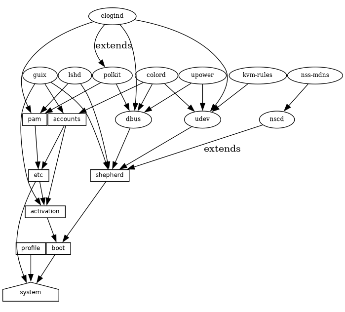
At the bottom, we see the system service, which produces the
directory containing everything to run and boot the system, as returned
by the guix system build command. See Service Reference,
to learn about the other service types shown here.
See the guix system extension-graph
command, for information on how to generate this representation for a
particular operating system definition.
Technically, developers can define service types to express these
relations. There can be any number of services of a given type on the
system—for instance, a system running two instances of the GNU secure
shell server (lsh) has two instances of lsh-service-type, with
different parameters.
The following section describes the programming interface for service types and services.
Next: Service Reference, Previous: Service Composition, Up: Defining Services [Contents][Index]
A service type is a node in the DAG described above. Let us start
with a simple example, the service type for the Guix build daemon
(see Invoking guix-daemon):
(define guix-service-type
(service-type
(name 'guix)
(extensions
(list (service-extension shepherd-root-service-type guix-shepherd-service)
(service-extension account-service-type guix-accounts)
(service-extension activation-service-type guix-activation)))
(default-value (guix-configuration))))
It defines three things:
Every service type has at least one service extension. The only exception is the boot service type, which is the ultimate service.
In this example, guix-service-type extends three services:
shepherd-root-service-typeThe guix-shepherd-service procedure defines how the Shepherd
service is extended. Namely, it returns a <shepherd-service>
object that defines how guix-daemon is started and stopped
(see Shepherd Services).
account-service-typeThis extension for this service is computed by guix-accounts,
which returns a list of user-group and user-account
objects representing the build user accounts (see Invoking guix-daemon).
activation-service-typeHere guix-activation is a procedure that returns a gexp, which is
a code snippet to run at “activation time”—e.g., when the service is
booted.
A service of this type is instantiated like this:
(service guix-service-type
(guix-configuration
(build-accounts 5)
(extra-options '("--gc-keep-derivations"))))
The second argument to the service form is a value representing
the parameters of this specific service instance.
See guix-configuration, for
information about the guix-configuration data type. When the
value is omitted, the default value specified by
guix-service-type is used:
guix-service-type is quite simple because it extends other
services but is not extensible itself.
The service type for an extensible service looks like this:
(define udev-service-type
(service-type (name 'udev)
(extensions
(list (service-extension shepherd-root-service-type
udev-shepherd-service)))
(compose concatenate) ;concatenate the list of rules
(extend (lambda (config rules)
(match config
(($ <udev-configuration> udev initial-rules)
(udev-configuration
(udev udev) ;the udev package to use
(rules (append initial-rules rules)))))))))
This is the service type for the
eudev device
management daemon. Compared to the previous example, in addition to an
extension of shepherd-root-service-type, we see two new fields:
composeThis is the procedure to compose the list of extensions to services of this type.
Services can extend the udev service by passing it lists of rules; we compose those extensions simply by concatenating them.
extendThis procedure defines how the value of the service is extended with the composition of the extensions.
Udev extensions are composed into a list of rules, but the udev service
value is itself a <udev-configuration> record. So here, we
extend that record by appending the list of rules it contains to the
list of contributed rules.
descriptionThis is a string giving an overview of the service type. The string can
contain Texinfo markup (see Overview in GNU Texinfo). The
guix system search command searches these strings and displays
them (see Invoking guix system).
There can be only one instance of an extensible service type such as
udev-service-type. If there were more, the
service-extension specifications would be ambiguous.
Still here? The next section provides a reference of the programming interface for services.
Next: Shepherd Services, Previous: Service Types and Services, Up: Defining Services [Contents][Index]
We have seen an overview of service types (see Service Types and Services). This section provides a reference on how to manipulate
services and service types. This interface is provided by the
(gnu services) module.
Return a new service of type, a <service-type> object (see
below). value can be any object; it represents the parameters of
this particular service instance.
When value is omitted, the default value specified by type is used; if type does not specify a default value, an error is raised.
For instance, this:
is equivalent to this:
In both cases the result is an instance of openssh-service-type
with the default configuration.
Return true if obj is a service.
Return the type of service—i.e., a <service-type> object.
Return the value associated with service. It represents its parameters.
Here is an example of how a service is created and manipulated:
(define s (service nginx-service-type (nginx-configuration (nginx nginx) (log-directory log-directory) (run-directory run-directory) (file config-file)))) (service? s) ⇒ #t (eq? (service-kind s) nginx-service-type) ⇒ #t
The modify-services form provides a handy way to change the
parameters of some of the services of a list such as
%base-services (see %base-services). It
evaluates to a list of services. Of course, you could always use
standard list combinators such as map and fold to do that
(see List Library in GNU Guile Reference Manual);
modify-services simply provides a more concise form for this
common pattern.
Modify the services listed in services according to the given clauses. Each clause has the form:
(type variable => body)
where type is a service type—e.g.,
guix-service-type—and variable is an identifier that is
bound within the body to the service parameters—e.g., a
guix-configuration instance—of the original service of that
type.
The body should evaluate to the new service parameters, which will
be used to configure the new service. This new service will replace the
original in the resulting list. Because a service’s service parameters
are created using define-record-type*, you can write a succinct
body that evaluates to the new service parameters by using the
inherit feature that define-record-type* provides.
Clauses can also have the following form:
(delete type)
Such a clause removes all services of the given type from services.
See Using the Configuration System, for example usage.
Next comes the programming interface for service types. This is
something you want to know when writing new service definitions, but not
necessarily when simply looking for ways to customize your
operating-system declaration.
This is the representation of a service type (see Service Types and Services).
nameThis is a symbol, used only to simplify inspection and debugging.
extensionsA non-empty list of <service-extension> objects (see below).
compose (default: #f)If this is #f, then the service type denotes services that cannot
be extended—i.e., services that do not receive “values” from other
services.
Otherwise, it must be a one-argument procedure. The procedure is called
by fold-services and is passed a list of values collected from
extensions. It may return any single value.
extend (default: #f)If this is #f, services of this type cannot be extended.
Otherwise, it must be a two-argument procedure: fold-services
calls it, passing it the initial value of the service as the first
argument and the result of applying compose to the extension
values as the second argument. It must return a value that is a valid
parameter value for the service instance.
descriptionThis is a string, possibly using Texinfo markup, describing in a couple
of sentences what the service is about. This string allows users to
find about the service through guix system search
(see Invoking guix system).
default-value (default: &no-default-value)The default value associated for instances of this service type. This
allows users to use the service form without its second argument:
(service type)
The returned service in this case has the default value specified by type.
See Service Types and Services, for examples.
Return a new extension for services of type target-type.
compute must be a one-argument procedure: fold-services
calls it, passing it the value associated with the service that provides
the extension; it must return a valid value for the target service.
Return true if obj is a service extension.
Occasionally, you might want to simply extend an existing service. This
involves creating a new service type and specifying the extension of
interest, which can be verbose; the simple-service procedure
provides a shorthand for this.
Return a service that extends target with value. This works by creating a singleton service type name, of which the returned service is an instance.
For example, this extends mcron (see Scheduled Job Execution) with an additional job:
(simple-service 'my-mcron-job mcron-service-type
#~(job '(next-hour (3)) "guix gc -F 2G"))
At the core of the service abstraction lies the fold-services
procedure, which is responsible for “compiling” a list of services
down to a single directory that contains everything needed to boot and
run the system—the directory shown by the guix system build
command (see Invoking guix system). In essence, it propagates
service extensions down the service graph, updating each node parameters
on the way, until it reaches the root node.
Fold services by propagating their extensions down to the root of type target-type; return the root service adjusted accordingly.
Lastly, the (gnu services) module also defines several essential
service types, some of which are listed below.
This is the root of the service graph. It produces the system directory
as returned by the guix system build command.
The type of the “boot service”, which produces the boot script. The boot script is what the initial RAM disk runs when booting.
The type of the /etc service. This service is used to create files under /etc and can be extended by passing it name/file tuples such as:
(list `("issue" ,(plain-file "issue" "Welcome!\n")))
In this example, the effect would be to add an /etc/issue file pointing to the given file.
Type for the “setuid-program service”. This service collects lists of executable file names, passed as gexps, and adds them to the set of setuid and setgid programs on the system (see Setuid Programs).
Type of the service that populates the system profile—i.e., the programs under /run/current-system/profile. Other services can extend it by passing it lists of packages to add to the system profile.
This is the type of the service that records provenance meta-data in the system itself. It creates several files under /run/current-system:
This is a “channel file” that can be passed to guix pull -C
or guix time-machine -C, and which describes the channels used
to build the system, if that information was available
(see Channels).
This is the file that was passed as the value for this
provenance-service-type service. By default, guix
system reconfigure automatically passes the OS configuration file it
received on the command line.
This contains the same information as the two other files but in a format that is more readily processable.
In general, these two pieces of information (channels and configuration file) are enough to reproduce the operating system “from source”.
Caveats: This information is necessary to rebuild your operating system, but it is not always sufficient. In particular, configuration.scm itself is insufficient if it is not self-contained—if it refers to external Guile modules or to extra files. If you want configuration.scm to be self-contained, we recommend that modules or files it refers to be part of a channel.
Besides, provenance meta-data is “silent” in the sense that it does not change the bits contained in your system, except for the meta-data bits themselves. Two different OS configurations or sets of channels can lead to the same system, bit-for-bit; when
provenance-service-typeis used, these two systems will have different meta-data and thus different store file names, which makes comparison less trivial.
This service is automatically added to your operating system
configuration when you use guix system reconfigure,
guix system init, or guix deploy.
Type of the service that collects lists of packages containing kernel-loadable modules, and adds them to the set of kernel-loadable modules.
This service type is intended to be extended by other service types, such as below:
(simple-service 'installing-module
linux-loadable-module-service-type
(list module-to-install-1
module-to-install-2))
This does not actually load modules at bootup, only adds it to the kernel profile so that it can be loaded by other means.
Next: Complex Configurations, Previous: Service Reference, Up: Defining Services [Contents][Index]
The (gnu services shepherd) module provides a way to define
services managed by the GNU Shepherd, which is the
initialization system—the first process that is started when the
system boots, also known as PID 1
(see Introduction in The GNU Shepherd Manual).
Services in the Shepherd can depend on each other. For instance, the SSH daemon may need to be started after the syslog daemon has been started, which in turn can only happen once all the file systems have been mounted. The simple operating system defined earlier (see Using the Configuration System) results in a service graph like this:
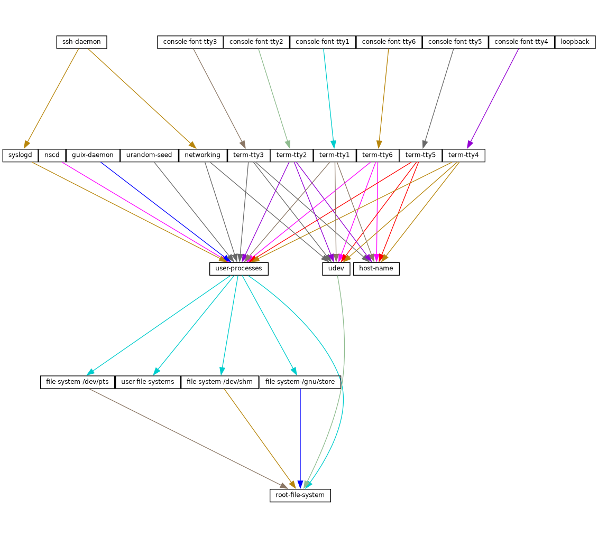
You can actually generate such a graph for any operating system
definition using the guix system shepherd-graph command
(see guix system shepherd-graph).
The %shepherd-root-service is a service object representing
PID 1, of type shepherd-root-service-type; it can be extended
by passing it lists of <shepherd-service> objects.
The data type representing a service managed by the Shepherd.
provisionThis is a list of symbols denoting what the service provides.
These are the names that may be passed to herd start,
herd status, and similar commands (see Invoking herd in The GNU Shepherd Manual). See the
provides slot in The GNU Shepherd Manual, for details.
requirement (default: '())List of symbols denoting the Shepherd services this one depends on.
one-shot? (default: #f)Whether this service is one-shot. One-shot services stop immediately
after their start action has completed. See Slots of services in The GNU Shepherd Manual, for more info.
respawn? (default: #t)Whether to restart the service when it stops, for instance when the underlying process dies.
startstop (default: #~(const #f))The start and stop fields refer to the Shepherd’s
facilities to start and stop processes (see Service De- and
Constructors in The GNU Shepherd Manual). They are given as
G-expressions that get expanded in the Shepherd configuration file
(see G-Expressions).
actions (default: '()) ¶This is a list of shepherd-action objects (see below) defining
actions supported by the service, in addition to the standard
start and stop actions. Actions listed here become available as
herd sub-commands:
herd action service [arguments…]
auto-start? (default: #t)Whether this service should be started automatically by the Shepherd. If it
is #f the service has to be started manually with herd start.
documentationA documentation string, as shown when running:
herd doc service-name
where service-name is one of the symbols in provision
(see Invoking herd in The GNU Shepherd Manual).
modules (default: %default-modules)This is the list of modules that must be in scope when start and
stop are evaluated.
The example below defines a Shepherd service that spawns
syslogd, the system logger from the GNU Networking Utilities
(see syslogd in GNU
Inetutils):
(let ((config (plain-file "syslogd.conf" "…")))
(shepherd-service
(documentation "Run the syslog daemon (syslogd).")
(provision '(syslogd))
(requirement '(user-processes))
(start #~(make-forkexec-constructor
(list #$(file-append inetutils "/libexec/syslogd")
"--rcfile" #$config)
#:pid-file "/var/run/syslog.pid"))
(stop #~(make-kill-destructor))))
Key elements in this example are the start and stop
fields: they are staged code snippets that use the
make-forkexec-constructor procedure provided by the Shepherd and
its dual, make-kill-destructor (see Service De- and
Constructors in The GNU Shepherd Manual). The start
field will have shepherd spawn syslogd with the
given option; note that we pass config after --rcfile,
which is a configuration file declared above (contents of this file are
omitted). Likewise, the stop field tells how this service is to
be stopped; in this case, it is stopped by making the kill system
call on its PID. Code staging is achieved using G-expressions:
#~ stages code, while #$ “escapes” back to host code
(see G-Expressions).
This is the data type that defines additional actions implemented by a Shepherd service (see above).
nameSymbol naming the action.
documentationThis is a documentation string for the action. It can be viewed by running:
herd doc service action action
procedureThis should be a gexp that evaluates to a procedure of at least one argument, which is the “running value” of the service (see Slots of services in The GNU Shepherd Manual).
The following example defines an action called say-hello that kindly
greets the user:
(shepherd-action
(name 'say-hello)
(documentation "Say hi!")
(procedure #~(lambda (running . args)
(format #t "Hello, friend! arguments: ~s\n"
args)
#t)))
Assuming this action is added to the example service, then you can do:
# herd say-hello example
Hello, friend! arguments: ()
# herd say-hello example a b c
Hello, friend! arguments: ("a" "b" "c")
This, as you can see, is a fairly sophisticated way to say hello. See Service Convenience in The GNU Shepherd Manual, for more info on actions.
Return a configuration action to display file, which should
be the name of the service’s configuration file.
It can be useful to equip services with that action. For example, the
service for the Tor anonymous router (see tor-service-type) is defined roughly like this:
(let ((torrc (plain-file "torrc" …)))
(shepherd-service
(provision '(tor))
(requirement '(user-processes loopback syslogd))
(start #~(make-forkexec-constructor
(list #$(file-append tor "/bin/tor") "-f" #$torrc)
#:user "tor" #:group "tor"))
(stop #~(make-kill-destructor))
(actions (list (shepherd-configuration-action torrc)))
(documentation "Run the Tor anonymous network overlay.")))
Thanks to this action, administrators can inspect the configuration file
passed to tor with this shell command:
cat $(herd configuration tor)
This can come in as a handy debugging tool!
The service type for the Shepherd “root service”—i.e., PID 1.
This is the service type that extensions target when they want to create
shepherd services (see Service Types and Services, for an example).
Each extension must pass a list of <shepherd-service>. Its
value must be a shepherd-configuration, as described below.
This data type represents the Shepherd’s configuration.
shepherd (default: shepherd)The Shepherd package to use.
services (default: '())A list of <shepherd-service> to start.
You should probably use the service extension
mechanism instead (see Shepherd Services).
The following example specifies the Shepherd package for the operating system:
(operating-system
;; ...
(services (append (list openssh-service-type))
;; ...
%desktop-services)
;; ...
;; Use own Shepherd package.
(essential-services
(modify-services (operating-system-default-essential-services
this-operating-system)
(shepherd-root-service-type config => (shepherd-configuration
(inherit config)
(shepherd my-shepherd))))))
This service represents PID 1.
Previous: Shepherd Services, Up: Defining Services [Contents][Index]
Some programs might have rather complex configuration files or formats,
and to make it easier to create Scheme bindings for these configuration
files, you can use the utilities defined in the (gnu services
configuration) module.
The main utility is the define-configuration macro, which you
will use to define a Scheme record type (see Record Overview in GNU Guile Reference Manual). The Scheme record will be
serialized to a configuration file by using serializers, which are
procedures that take some kind of Scheme value and returns a
G-expression (see G-Expressions), which should, once serialized to
the disk, return a string. More details are listed below.
Create a record type named name that contains the
fields found in the clauses.
A clause can have one of the following forms:
(field-name (type default-value) documentation) (field-name (type default-value) documentation serializer) (field-name (type) documentation) (field-name (type) documentation serializer)
field-name is an identifier that denotes the name of the field in the generated record.
type is the type of the value corresponding to field-name;
since Guile is untyped, a predicate
procedure—type?—will be called on the value
corresponding to the field to ensure that the value is of the correct
type. This means that if say, type is package, then a
procedure named package? will be applied on the value to make
sure that it is indeed a <package> object.
default-value is the default value corresponding to the field; if none is specified, the user is forced to provide a value when creating an object of the record type.
documentation is a string formatted with Texinfo syntax which should provide a description of what setting this field does.
serializer is the name of a procedure which takes two arguments,
the first is the name of the field, and the second is the value
corresponding to the field. The procedure should return a string or
G-expression (see G-Expressions) that represents the content that
will be serialized to the configuration file. If none is specified, a
procedure of the name serialize-type will be used.
A simple serializer procedure could look like this:
(define (serialize-boolean field-name value)
(let ((value (if value "true" "false")))
#~(string-append #$field-name #$value)))
In some cases multiple different configuration records might be defined
in the same file, but their serializers for the same type might have to
be different, because they have different configuration formats. For
example, the serialize-boolean procedure for the Getmail service
would have to be different from the one for the Transmission service. To
make it easier to deal with this situation, one can specify a serializer
prefix by using the prefix literal in the
define-configuration form. This means that one doesn’t have to
manually specify a custom serializer for every field.
(define (foo-serialize-string field-name value) …) (define (bar-serialize-string field-name value) …) (define-configuration foo-configuration (label (string) "The name of label.") (prefix foo-)) (define-configuration bar-configuration (ip-address (string) "The IPv4 address for this device.") (prefix bar-))
However, in some cases you might not want to serialize any of the values
of the record, to do this, you can use the no-serialization
literal. There is also the define-configuration/no-serialization
macro which is a shorthand of this.
Sometimes a field should not be serialized if the user doesn’t specify a
value. To achieve this, you can use the define-maybe macro to
define a “maybe type”; if the value of a maybe type is left unset, or
is set to the %unset-value value, then it will not be serialized.
When defining a “maybe type”, the corresponding serializer for the
regular type will be used by default. For example, a field of type
maybe-string will be serialized using the serialize-string
procedure by default, you can of course change this by specifying a
custom serializer procedure. Likewise, the type of the value would have
to be a string, or left unspecified.
(define-maybe string) (define (serialize-string field-name value) …) (define-configuration baz-configuration (name ;; If set to a string, the `serialize-string' procedure will be used ;; to serialize the string. Otherwise this field is not serialized. maybe-string "The name of this module."))
Like with define-configuration, one can set a prefix for the
serializer name by using the prefix literal.
(define-maybe integer (prefix baz-)) (define (baz-serialize-integer field-name value) …)
There is also the no-serialization literal, which when set means
that no serializer will be defined for the “maybe type”, regardless of
whether its value is set or not.
define-maybe/no-serialization is a shorthand for specifying the
no-serialization literal.
(define-maybe/no-serialization symbol) (define-configuration/no-serialization test-configuration (mode maybe-symbol "Docstring."))
Predicate to check whether a user explicitly specified the value of a maybe field.
Return a G-expression that contains the values corresponding to the
fields of configuration, a record that has been generated by
define-configuration. The G-expression can then be serialized to
disk by using something like mixed-text-file.
A serializer that just returns an empty string. The
serialize-package procedure is an alias for this.
Once you have defined a configuration record, you will most likely also want to document it so that other people know to use it. To help with that, there are two procedures, both of which are documented below.
Generate a Texinfo fragment from the docstrings in documentation,
a list of (label fields sub-documentation ...).
label should be a symbol and should be the name of the
configuration record. fields should be a list of all the fields
available for the configuration record.
sub-documentation is a (field-name
configuration-name) tuple. field-name is the name of the
field which takes another configuration record as its value, and
configuration-name is the name of that configuration record.
sub-documentation is only needed if there are nested configuration
records. For example, the getmail-configuration record
(see Mail Services) accepts a getmail-configuration-file
record in one of its rcfile field, therefore documentation for
getmail-configuration-file is nested in
getmail-configuration.
(generate-documentation
`((getmail-configuration ,getmail-configuration-fields
(rcfile getmail-configuration-file))
…)
'getmail-configuration)
documentation-name should be a symbol and should be the name of the configuration record.
configuration-symbol
Take configuration-symbol, the symbol corresponding to the name
used when defining a configuration record with
define-configuration, and print the Texinfo documentation of its
fields. This is useful if there aren’t any nested configuration records
since it only prints the documentation for the top-level fields.
As of right now, there is no automated way to generate documentation for
configuration records and put them in the manual. Instead, every
time you make a change to the docstrings of a configuration record, you
have to manually call generate-documentation or
configuration->documentation, and paste the output into the
doc/guix.texi file.
Below is an example of a record type created using
define-configuration and friends.
(use-modules (gnu services) (guix gexp) (gnu services configuration) (srfi srfi-26) (srfi srfi-1)) ;; Turn field names, which are Scheme symbols into strings (define (uglify-field-name field-name) (let ((str (symbol->string field-name))) ;; field? -> is-field (if (string-suffix? "?" str) (string-append "is-" (string-drop-right str 1)) str))) (define (serialize-string field-name value) #~(string-append #$(uglify-field-name field-name) " = " #$value "\n")) (define (serialize-integer field-name value) (serialize-string field-name (number->string value))) (define (serialize-boolean field-name value) (serialize-string field-name (if value "true" "false"))) (define (serialize-contact-name field-name value) #~(string-append "\n[" #$value "]\n")) (define (list-of-contact-configurations? lst) (every contact-configuration? lst)) (define (serialize-list-of-contact-configurations field-name value) #~(string-append #$@(map (cut serialize-configuration <> contact-configuration-fields) value))) (define (serialize-contacts-list-configuration configuration) (mixed-text-file "contactrc" #~(string-append "[Owner]\n" #$(serialize-configuration configuration contacts-list-configuration-fields)))) (define-maybe integer) (define-maybe string) (define-configuration contact-configuration (name (string) "The name of the contact." serialize-contact-name) (phone-number maybe-integer "The person's phone number.") (email maybe-string "The person's email address.") (married? (boolean) "Whether the person is married.")) (define-configuration contacts-list-configuration (name (string) "The name of the owner of this contact list.") (email (string) "The owner's email address.") (contacts (list-of-contact-configurations '()) "A list of @code{contact-configuation} records which contain information about all your contacts."))
A contacts list configuration could then be created like this:
(define my-contacts
(contacts-list-configuration
(name "Alice")
(email "alice@example.org")
(contacts
(list (contact-configuration
(name "Bob")
(phone-number 1234)
(email "bob@gnu.org")
(married? #f))
(contact-configuration
(name "Charlie")
(phone-number 0000)
(married? #t))))))
After serializing the configuration to disk, the resulting file would look like this:
[owner] name = Alice email = alice@example.org [Bob] phone-number = 1234 email = bob@gnu.org is-married = false [Charlie] phone-number = 0 is-married = true
Next: Documentation, Previous: System Configuration, Up: GNU Guix [Contents][Index]
Guix supports declarative configuration of home environments by
utilizing the configuration mechanism described in the previous chapter
(see Defining Services), but for user’s dotfiles and packages. It
works both on Guix System and foreign distros and allows users to
declare all the packages and services that should be installed and
configured for the user. Once a user has written a file containing
home-environment record, such a configuration can be
instantiated by an unprivileged user with the guix home
command (see Invoking guix home).
Note: The functionality described in this section is still under development and is subject to change. Get in touch with us on guix-devel@gnu.org!
The user’s home environment usually consists of three basic parts:
software, configuration, and state. Software in mainstream distros are
usually installed system-wide, but with GNU Guix most software packages
can be installed on a per-user basis without needing root privileges,
and are thus considered part of the user’s home environment.
Packages on their own are not very useful in many cases, because often they
require some additional configuration, usually config files that reside
in XDG_CONFIG_HOME (~/.config by default) or other
directories. Everything else can be considered state, like media files,
application databases, and logs.
Using Guix for managing home environments provides a number of advantages:
guix home reconfigure invocation, a new home
environment generation will be created. This means that users can
rollback to a previous home environment generation so they don’t have to
worry about breaking their configuration.
rsync to sync data with another host. This functionality is
still in an experimental stage, though.
Next: Configuring the Shell, Up: Home Configuration [Contents][Index]
The home environment is configured by providing a
home-environment declaration in a file that can be passed to the
guix home command (see Invoking guix home). The easiest
way to get started is by generating an initial configuration with
guix home import:
guix home import ~/src/guix-config
The guix home import command reads some of the “dot files”
such as ~/.bashrc found in your home directory and copies them to
the given directory, ~/src/guix-config in this case; it also
reads the contents of your profile, ~/.guix-profile, and, based
on that, it populates ~/src/guix-config/home-configuration.scm
with a Home configuration that resembles your current configuration.
A simple setup can include Bash and a custom text configuration, like in the example below. Don’t be afraid to declare home environment parts, which overlaps with your current dot files: before installing any configuration files, Guix Home will back up existing config files to a separate place in the home directory.
Note: It is highly recommended that you manage your shell or shells with Guix Home, because it will make sure that all the necessary scripts are sourced by the shell configuration file. Otherwise you will need to do it manually. (see Configuring the Shell).
(use-modules (gnu home) (gnu home services) (gnu home services shells) (gnu services) (gnu packages admin) (guix gexp)) (home-environment (packages (list htop)) (services (list (service home-bash-service-type (home-bash-configuration (guix-defaults? #t) (bash-profile (list (plain-file "bash-profile" "\ export HISTFILE=$XDG_CACHE_HOME/.bash_history"))))) (simple-service 'test-config home-xdg-configuration-files-service-type (list `("test.conf" ,(plain-file "tmp-file.txt" "the content of ~/.config/test.conf")))))))
The packages field should be self-explanatory, it will install
the list of packages into the user’s profile. The most important field
is services, it contains a list of home services, which are
the basic building blocks of a home environment.
There is no daemon (at least not necessarily) related to a home service, a home service is just an element that is used to declare part of home environment and extend other parts of it. The extension mechanism discussed in the previous chapter (see Defining Services) should not be confused with Shepherd services (see Shepherd Services). Using this extension mechanism and some Scheme code that glues things together gives the user the freedom to declare their own, very custom, home environments.
Once the configuration looks good, you can first test it in a throw-away “container”:
guix home container config.scm
The command above spawns a shell where your home environment is running. The shell runs in a container, meaning it’s isolated from the rest of the system, so it’s a good way to try out your configuration—you can see if configuration bits are missing or misbehaving, if daemons get started, and so on. Once you exit that shell, you’re back to the prompt of your original shell “in the real world”.
Once you have a configuration file that suits your needs, you can reconfigure your home by running:
guix home reconfigure config.scm
This “builds” your home environment and creates ~/.guix-home pointing to it. Voilà!
Note: Make sure the operating system has elogind, systemd, or a similar mechanism to create the XDG run-time directory and has the
XDG_RUNTIME_DIRvariable set. Failing that, the on-first-login script will not execute anything, and processes like user Shepherd and its descendants will not start.
Next: Home Services, Previous: Declaring the Home Environment, Up: Home Configuration [Contents][Index]
This section is safe to skip if your shell or shells are managed by Guix Home. Otherwise, read it carefully.
There are a few scripts that must be evaluated by a login shell to
activate the home environment. The shell startup files only read by
login shells often have profile suffix. For more information
about login shells see Invoking Bash in The GNU Bash
Reference Manual and see Bash Startup Files in The GNU Bash
Reference Manual.
The first script that needs to be sourced is setup-environment,
which sets all the necessary environment variables (including variables
declared by the user) and the second one is on-first-login, which
starts Shepherd for the current user and performs actions declared by
other home services that extends
home-run-on-first-login-service-type.
Guix Home will always create ~/.profile, which contains the following lines:
HOME_ENVIRONMENT=$HOME/.guix-home . $HOME_ENVIRONMENT/setup-environment $HOME_ENVIRONMENT/on-first-login
This makes POSIX compliant login shells activate the home environment. However, in most cases this file won’t be read by most modern shells, because they are run in non POSIX mode by default and have their own *profile startup files. For example Bash will prefer ~/.bash_profile in case it exists and only if it doesn’t will it fallback to ~/.profile. Zsh (if no additional options are specified) will ignore ~/.profile, even if ~/.zprofile doesn’t exist.
To make your shell respect ~/.profile, add . ~/.profile or
source ~/.profile to the startup file for the login shell. In
case of Bash, it is ~/.bash_profile, and in case of Zsh, it is
~/.zprofile.
Note: This step is only required if your shell is not managed by Guix Home. Otherwise, everything will be done automatically.
Next: Invoking guix home, Previous: Configuring the Shell, Up: Home Configuration [Contents][Index]
A home service is not necessarily something that has a daemon and
is managed by Shepherd (see Jump Start in The GNU Shepherd
Manual), in most cases it doesn’t. It’s a simple building block of the
home environment, often declaring a set of packages to be installed in
the home environment profile, a set of config files to be symlinked into
XDG_CONFIG_HOME (~/.config by default), and environment
variables to be set by a login shell.
There is a service extension mechanism (see Service Composition)
which allows home services to extend other home services and utilize
capabilities they provide; for example: declare mcron jobs
(see GNU Mcron) by extending Scheduled User’s Job Execution; declare daemons by extending Managing User Daemons; add
commands, which will be invoked on by the Bash by extending
home-bash-service-type.
A good way to discover available home services is using the
guix home search command (see Invoking guix home). After
the required home services are found, include its module with the
use-modules form (see Using Guile Modules in The GNU Guile Reference Manual), or the #:use-modules
directive (see Creating Guile Modules in The GNU
Guile Reference Manual) and declare a home service using the
service function, or extend a service type by declaring a new
service with the simple-service procedure from (gnu
services).
Next: Shells, Up: Home Services [Contents][Index]
There are a few essential home services defined in
(gnu services), they are mostly for internal use and are required
to build a home environment, but some of them will be useful for the end
user.
The service of this type will be instantiated by every home environment automatically by default, there is no need to define it, but someone may want to extend it with a list of pairs to set some environment variables.
(list ("ENV_VAR1" . "value1")
("ENV_VAR2" . "value2"))
The easiest way to extend a service type, without defining a new service
type is to use the simple-service helper from (gnu
services).
(simple-service 'some-useful-env-vars-service
home-environment-variables-service-type
`(("LESSHISTFILE" . "$XDG_CACHE_HOME/.lesshst")
("SHELL" . ,(file-append zsh "/bin/zsh"))
("USELESS_VAR" . #f)
("_JAVA_AWT_WM_NONREPARENTING" . #t)))
If you include such a service in you home environment definition, it will add the following content to the setup-environment script (which is expected to be sourced by the login shell):
export LESSHISTFILE=$XDG_CACHE_HOME/.lesshst export SHELL=/gnu/store/2hsg15n644f0glrcbkb1kqknmmqdar03-zsh-5.8/bin/zsh export _JAVA_AWT_WM_NONREPARENTING
Note: Make sure that module
(gnu packages shells)is imported withuse-modulesor any other way, this namespace contains the definition of thezshpackage, which is used in the example above.
The association list (see Association
Lists in The GNU Guile Reference manual) is a data structure
containing key-value pairs, for
home-environment-variables-service-type the key is always a
string, the value can be a string, string-valued gexp
(see G-Expressions), file-like object (see file-like object) or boolean. For gexps, the variable will be set to
the value of the gexp; for file-like objects, it will be set to the path
of the file in the store (see The Store); for #t, it will
export the variable without any value; and for #f, it will omit
variable.
The service of this type will be instantiated by every home environment automatically, there is no need to define it, but you may want to extend it with a list of packages if you want to install additional packages into your profile. Other services, which need to make some programs available to the user will also extend this service type.
The extension value is just a list of packages:
(list htop vim emacs)
The same approach as simple-service (see simple-service) for home-environment-variables-service-type can
be used here, too. Make sure that modules containing the specified
packages are imported with use-modules. To find a package or
information about its module use guix search (see Invoking guix package). Alternatively, specification->package can be
used to get the package record from string without importing related
module.
There are few more essential services, but users are not expected to extend them.
The root of home services DAG, it generates a folder, which later will be symlinked to ~/.guix-home, it contains configurations, profile with binaries and libraries, and some necessary scripts to glue things together.
The service of this type generates a Guile script, which is expected to
be executed by the login shell. It is only executed if the special flag
file inside XDG_RUNTIME_DIR hasn’t been created, this prevents
redundant executions of the script if multiple login shells are spawned.
It can be extended with a gexp. However, to autostart an application,
users should not use this service, in most cases it’s better to extend
home-shepherd-service-type with a Shepherd service
(see Shepherd Services), or extend the shell’s startup file with
the required command using the appropriate service type.
The service of this type allows to specify a list of files, which will go to ~/.guix-home/files, usually this directory contains configuration files (to be more precise it contains symlinks to files in /gnu/store), which should be placed in $XDG_CONFIG_DIR or in rare cases in $HOME. It accepts extension values in the following format:
`((".sway/config" ,sway-file-like-object) (".tmux.conf" ,(local-file "./tmux.conf")))
Each nested list contains two values: a subdirectory and file-like
object. After building a home environment ~/.guix-home/files
will be populated with apropiate content and all nested directories will
be created accordingly, however, those files won’t go any further until
some other service will do it. By default a
home-symlink-manager-service-type, which creates necessary
symlinks in home folder to files from ~/.guix-home/files and
backs up already existing, but clashing configs and other things, is a
part of essential home services (enabled by default), but it’s possible
to use alternative services to implement more advanced use cases like
read-only home. Feel free to experiment and share your results.
The service is very similiar to home-files-service-type (and
actually extends it), but used for defining files, which will go to
~/.guix-home/files/.config, which will be symlinked to
$XDG_CONFIG_DIR by home-symlink-manager-service-type (for
example) during activation. It accepts extension values in the
following format:
`(("sway/config" ,sway-file-like-object) ;; -> ~/.guix-home/files/.config/sway/config ;; -> $XDG_CONFIG_DIR/sway/config (by symlink-manager) ("tmux/tmux.conf" ,(local-file "./tmux.conf")))
The service of this type generates a guile script, which runs on every
guix home reconfigure invocation or any other action, which
leads to the activation of the home environment.
The service of this type generates a guile script, which will be executed during activation of home environment, and do a few following steps:
home-files-service-type,
home-xdg-configuration-files-service-type and maybe some others),
takes the files from files/.config/ subdirectory and put
respective links in XDG_CONFIG_DIR. For example symlink for
files/.config/sway/config will end up in
$XDG_CONFIG_DIR/sway/config. The rest files in files/
outside of files/.config/ subdirectory will be treated slightly
different: symlink will just go to $HOME.
files/.some-program/config will end up in
$HOME/.some-program/config.
symlink-manager is a part of essential home services and is enabled and used by default.
Next: Scheduled User’s Job Execution, Previous: Essential Home Services, Up: Home Services [Contents][Index]
Shells play a quite important role in the environment initialization process, you can configure them manually as described in section Configuring the Shell, but the recommended way is to use home services listed below. It’s both easier and more reliable.
Each home environment instantiates
home-shell-profile-service-type, which creates a
~/.profile startup file for all POSIX-compatible shells. This
file contains all the necessary steps to properly initialize the
environment, but many modern shells like Bash or Zsh prefer their own
startup files, that’s why the respective home services
(home-bash-service-type and home-zsh-service-type) ensure
that ~/.profile is sourced by ~/.bash_profile and
~/.zprofile, respectively.
Available home-shell-profile-configuration fields are:
profile (default: ()) (type: text-config)home-shell-profile is instantiated automatically by
home-environment, DO NOT create this service manually, it can
only be extended. profile is a list of file-like objects, which
will go to ~/.profile. By default ~/.profile contains the
initialization code which must be evaluated by the login shell to make
home-environment’s profile available to the user, but other commands can
be added to the file if it is really necessary. In most cases shell’s
configuration files are preferred places for user’s customizations.
Extend home-shell-profile service only if you really know what you do.
Available home-bash-configuration fields are:
package (default: bash) (type: package)The Bash package to use.
guix-defaults? (default: #t) (type: boolean)Add sane defaults like reading /etc/bashrc and coloring the output of
ls to the top of the .bashrc file.
environment-variables (default: ()) (type: alist)Association list of environment variables to set for the Bash session. The
rules for the home-environment-variables-service-type apply
here (see Essential Home Services). The contents of this field will be
added after the contents of the bash-profile field.
aliases (default: ()) (type: alist)Association list of aliases to set for the Bash session. The aliases
will be defined after the contents of the bashrc field has been
put in the .bashrc file. The alias will automatically be quoted,
so something like this:
'(("ls" . "ls -alF"))
turns into
alias ls="ls -alF"
bash-profile (default: ()) (type: text-config)List of file-like objects, which will be added to .bash_profile. Used for executing user’s commands at start of login shell (In most cases the shell started on tty just after login). .bash_login won’t be ever read, because .bash_profile always present.
bashrc (default: ()) (type: text-config)List of file-like objects, which will be added to .bashrc. Used
for executing user’s commands at start of interactive shell (The shell
for interactive usage started by typing bash or by terminal app
or any other program).
bash-logout (default: ()) (type: text-config)List of file-like objects, which will be added to .bash_logout. Used for executing user’s commands at the exit of login shell. It won’t be read in some cases (if the shell terminates by exec’ing another process for example).
You can extend the Bash service by using the home-bash-extension
configuration record, whose fields must mirror that of
home-bash-configuration (see home-bash-configuration). The
contents of the extensions will be added to the end of the corresponding
Bash configuration files (see Bash Startup Files in The GNU
Bash Reference Manual.
For example, here is how you would define a service that extends the
Bash service such that ~/.bash_profile defines an additional
environment variable, PS1:
(define bash-fancy-prompt-service
(simple-service 'bash-fancy-prompt
home-bash-service-type
(home-bash-extension
(environment-variables
'(("PS1" . "\\u \\wλ "))))))
You would then add bash-fancy-prompt-service to the list in the
services field of your home-environment. The reference of
home-bash-extension follows.
Available home-bash-extension fields are:
environment-variables (default: ()) (type: alist)Additional environment variables to set. These will be combined with the environment variables from other extensions and the base service to form one coherent block of environment variables.
aliases (default: ()) (type: alist)Additional aliases to set. These will be combined with the aliases from other extensions and the base service.
bash-profile (default: ()) (type: text-config)Additional text blocks to add to .bash_profile, which will be combined with text blocks from other extensions and the base service.
bashrc (default: ()) (type: text-config)Additional text blocks to add to .bashrc, which will be combined with text blocks from other extensions and the base service.
bash-logout (default: ()) (type: text-config)Additional text blocks to add to .bash_logout, which will be combined with text blocks from other extensions and the base service.
Available home-zsh-configuration fields are:
package (default: zsh) (type: package)The Zsh package to use.
xdg-flavor? (default: #t) (type: boolean)Place all the configs to $XDG_CONFIG_HOME/zsh. Makes
~/.zshenv to set ZDOTDIR to $XDG_CONFIG_HOME/zsh.
Shell startup process will continue with
$XDG_CONFIG_HOME/zsh/.zshenv.
environment-variables (default: ()) (type: alist)Association list of environment variables to set for the Zsh session.
zshenv (default: ()) (type: text-config)List of file-like objects, which will be added to .zshenv. Used
for setting user’s shell environment variables. Must not contain
commands assuming the presence of tty or producing output. Will be read
always. Will be read before any other file in ZDOTDIR.
zprofile (default: ()) (type: text-config)List of file-like objects, which will be added to .zprofile. Used for executing user’s commands at start of login shell (In most cases the shell started on tty just after login). Will be read before .zlogin.
zshrc (default: ()) (type: text-config)List of file-like objects, which will be added to .zshrc. Used
for executing user’s commands at start of interactive shell (The shell
for interactive usage started by typing zsh or by terminal app or
any other program).
zlogin (default: ()) (type: text-config)List of file-like objects, which will be added to .zlogin. Used for executing user’s commands at the end of starting process of login shell.
zlogout (default: ()) (type: text-config)List of file-like objects, which will be added to .zlogout. Used for executing user’s commands at the exit of login shell. It won’t be read in some cases (if the shell terminates by exec’ing another process for example).
Next: Power Management Home Services, Previous: Shells, Up: Home Services [Contents][Index]
The (gnu home services mcron) module provides an interface to
GNU mcron, a daemon to run jobs at scheduled times (see GNU mcron). The information about system’s mcron is
applicable here (see Scheduled Job Execution), the only difference
for home services is that they have to be declared in a
home-environment record instead of an operating-system
record.
This is the type of the mcron home service, whose value is an
home-mcron-configuration object. It allows to manage scheduled
tasks.
This service type can be the target of a service extension that provides additional job specifications (see Service Composition). In other words, it is possible to define services that provide additional mcron jobs to run.
Available home-mcron-configuration fields are:
mcron (default: mcron) (type: file-like)The mcron package to use.
jobs (default: ()) (type: list-of-gexps)This is a list of gexps (see G-Expressions), where each gexp corresponds to an mcron job specification (see mcron job specifications in GNU mcron).
log? (default: #t) (type: boolean)Log messages to standard output.
log-format (default: "~1@*~a ~a: ~a~%") (type: string)(ice-9 format) format string for log messages. The default value
produces messages like "‘pid name: message"’
(see Invoking in GNU mcron). Each message
is also prefixed by a timestamp by GNU Shepherd.
Next: Managing User Daemons, Previous: Scheduled User’s Job Execution, Up: Home Services [Contents][Index]
The (gnu home services pm) module provides home services
pertaining to battery power.
Service for batsignal, a program that monitors battery levels
and warns the user through desktop notifications when their battery
is getting low. You can also configure a command to be run when the
battery level passes a point deemed “dangerous”. This service is
configured with the home-batsignal-configuration record.
Data type representing the configuration for batsignal.
warning-level (default: 15)The battery level to send a warning message at.
warning-message (default: #f)The message to send as a notification when the battery level reaches
the warning-level. Setting to #f uses the default
message.
critical-level (default: 5)The battery level to send a critical message at.
critical-message (default: #f)The message to send as a notification when the battery level reaches
the critical-level. Setting to #f uses the default
message.
danger-level (default: 2)The battery level to run the danger-command at.
danger-command (default: #f)The command to run when the battery level reaches the danger-level.
Setting to #f disables running the command entirely.
full-level (default: #f)The battery level to send a full message at. Setting to #f
disables sending the full message entirely.
full-message (default: #f)The message to send as a notification when the battery level reaches
the full-level. Setting to #f uses the default message.
batteries (default: '())The batteries to monitor. Setting to '() tries to find batteries
automatically.
poll-delay (default: 60)The time in seconds to wait before checking the batteries again.
icon (default: #f)A file-like object to use as the icon for battery notifications. Setting
to #f disables notification icons entirely.
notifications? (default: #t)Whether to send any notifications.
notifications-expire? (default: #f)Whether notifications sent expire after a time.
notification-command (default: #f)Command to use to send messages. Setting to #f sends a notification
through libnotify.
ignore-missing? (default: #f)Whether to ignore missing battery errors.
Next: Secure Shell, Previous: Power Management Home Services, Up: Home Services [Contents][Index]
The (gnu home services shepherd) module supports the definitions
of per-user Shepherd services (see Introduction in The GNU
Shepherd Manual). You extend home-shepherd-service-type with
new services; Guix Home then takes care of starting the shepherd
daemon for you when you log in, which in turns starts the services you
asked for.
The service type for the userland Shepherd, which allows one to manage long-running processes or one-shot tasks. User’s Shepherd is not an init process (PID 1), but almost all other information described in (see Shepherd Services) is applicable here too.
This is the service type that extensions target when they want to create
shepherd services (see Service Types and Services, for an example).
Each extension must pass a list of <shepherd-service>. Its
value must be a home-shepherd-configuration, as described below.
This data type represents the Shepherd’s configuration.
shepherd (default: shepherd)The Shepherd package to use.
auto-start? (default: #t)Whether or not to start Shepherd on first login.
services (default: '())A list of <shepherd-service> to start.
You should probably use the service extension
mechanism instead (see Shepherd Services).
Next: Desktop Home Services, Previous: Managing User Daemons, Up: Home Services [Contents][Index]
The OpenSSH package includes a client,
the ssh command, that allows you to connect to remote machines
using the SSH (secure shell) protocol. With the (gnu
home services ssh) module, you can set up OpenSSH so that it works in a
predictable fashion, almost independently of state on the local machine.
To do that, you instantiate home-openssh-service-type in your
Home configuration, as explained below.
This is the type of the service to set up the OpenSSH client. It takes care of several things:
ssh knows about hosts you regularly connect to and their
associated parameters;
sshd, may accept to connect to this user
account;
Here is an example of a service and its configuration that you could add
to the services field of your home-environment:
(service home-openssh-service-type
(home-openssh-configuration
(hosts
(list (openssh-host (name "ci.guix.gnu.org")
(user "charlie"))
(openssh-host (name "chbouib")
(host-name "chbouib.example.org")
(user "supercharlie")
(port 10022))))
(authorized-keys (list (local-file "alice.pub")))))
The example above lists two hosts and their parameters. For instance,
running ssh chbouib will automatically connect to
chbouib.example.org on port 10022, logging in as user
‘supercharlie’. Further, it marks the public key in
alice.pub as authorized for incoming connections.
The value associated with a home-openssh-service-type instance
must be a home-openssh-configuration record, as describe below.
This is the datatype representing the OpenSSH client and server configuration in one’s home environment. It contains the following fields:
hosts (default: '())A list of openssh-host records specifying host names and
associated connection parameters (see below). This host list goes into
~/.ssh/config, which ssh reads at startup.
known-hosts (default: *unspecified*)This must be either:
*unspecified*, in which case home-openssh-service-type
leaves it up to ssh and to the user to maintain the list of
known hosts at ~/.ssh/known_hosts, or
The ~/.ssh/known_hosts contains a list of host name/host key
pairs that allow ssh to authenticate hosts you connect to and
to detect possible impersonation attacks. By default, ssh
updates it in a TOFU, trust-on-first-use fashion, meaning that it
records the host’s key in that file the first time you connect to it.
This behavior is preserved when known-hosts is set to
*unspecified*.
If you instead provide a list of host keys upfront in the
known-hosts field, your configuration becomes self-contained and
stateless: it can be replicated elsewhere or at another point in time.
Preparing this list can be relatively tedious though, which is why
*unspecified* is kept as a default.
authorized-keys (default: '())This must be a list of file-like objects, each of which containing an SSH public key that should be authorized to connect to this machine.
Concretely, these files are concatenated and made available as
~/.ssh/authorized_keys. If an OpenSSH server, sshd, is
running on this machine, then it may take this file into account:
this is what sshd does by default, but be aware that it can
also be configured to ignore it.
Available openssh-host fields are:
name (type: string)Name of this host declaration.
host-name (type: maybe-string)Host name—e.g., "foo.example.org" or "192.168.1.2".
address-family (type: address-family)Address family to use when connecting to this host: one of
AF_INET (for IPv4 only), AF_INET6 (for IPv6 only), or
*unspecified* (allowing any address family).
identity-file (type: maybe-string)The identity file to use—e.g., "/home/charlie/.ssh/id_ed25519".
port (type: maybe-natural-number)TCP port number to connect to.
user (type: maybe-string)User name on the remote host.
forward-x11? (default: #f) (type: boolean)Whether to forward remote client connections to the local X11 graphical display.
forward-x11-trusted? (default: #f) (type: boolean)Whether remote X11 clients have full access to the original X11 graphical display.
forward-agent? (default: #f) (type: boolean)Whether the authentication agent (if any) is forwarded to the remote machine.
compression? (default: #f) (type: boolean)Whether to compress data in transit.
proxy-command (type: maybe-string)The command to use to connect to the server. As an example, a command
to connect via an HTTP proxy at 192.0.2.0 would be: "nc -X connect
-x 192.0.2.0:8080 %h %p".
host-key-algorithms (type: maybe-string-list)The list of accepted host key algorithms—e.g.,
'("ssh-ed25519").
accepted-key-types (type: maybe-string-list)The list of accepted user public key types.
extra-content (default: "") (type: raw-configuration-string)Extra content appended as-is to this Host block in
~/.ssh/config.
Next: Guix Home Services, Previous: Secure Shell, Up: Home Services [Contents][Index]
The (gnu home services desktop) module provides services that you
may find useful on “desktop” systems running a graphical user
environment such as Xorg.
This is the service type for Redshift, a program that adjusts the display color temperature
according to the time of day. Its associated value must be a
home-redshift-configuration record, as shown below.
A typical configuration, where we manually specify the latitude and longitude, might look like this:
(service home-redshift-service-type (home-redshift-configuration (location-provider 'manual) (latitude 35.81) ;northern hemisphere (longitude -0.80))) ;west of Greenwich
Available home-redshift-configuration fields are:
redshift (default: redshift) (type: file-like)Redshift package to use.
location-provider (default: geoclue2) (type: symbol)Geolocation provider—'manual or 'geoclue2. In the
former case, you must also specify the latitude and
longitude fields so Redshift can determine daytime at your place.
In the latter case, the Geoclue system service must be running; it will
be queried for location information.
adjustment-method (default: randr) (type: symbol)Color adjustment method.
daytime-temperature (default: 6500) (type: integer)Daytime color temperature (kelvins).
nighttime-temperature (default: 4500) (type: integer)Nighttime color temperature (kelvins).
daytime-brightness (type: maybe-inexact-number)Daytime screen brightness, between 0.1 and 1.0, or left unspecified.
nighttime-brightness (type: maybe-inexact-number)Nighttime screen brightness, between 0.1 and 1.0, or left unspecified.
latitude (type: maybe-inexact-number)Latitude, when location-provider is 'manual.
longitude (type: maybe-inexact-number)Longitude, when location-provider is 'manual.
dawn-time (type: maybe-string)Custom time for the transition from night to day in the
morning—"HH:MM" format. When specified, solar elevation is not
used to determine the daytime/nighttime period.
dusk-time (type: maybe-string)Likewise, custom time for the transition from day to night in the evening.
extra-content (default: "") (type: raw-configuration-string)Extra content appended as-is to the Redshift configuration file. Run
man redshift for more information about the configuration file
format.
This is the service type for running a session-specific D-Bus, for unprivileged applications that require D-Bus to be running.
The configuration record for home-dbus-service-type.
dbus (default: dbus)The package providing the /bin/dbus-daemon command.
Previous: Desktop Home Services, Up: Home Services [Contents][Index]
The (gnu home services guix) module provides services for
user-specific Guix configuration.
This is the service type for managing
$XDG_CONFIG_HOME/guix/channels.scm, the file that controls the
channels received on guix pull (see Channels). Its
associated value is a list of channel records, defined in the
(guix channels) module.
Generally, it is better to extend this service than to directly
configure it, as its default value is the default guix channel(s)
defined by %default-channels. If you configure this service
directly, be sure to include a guix channel. See Specifying Additional Channels and Using a Custom Guix Channel for more
details.
A typical extension for adding a channel might look like this:
(simple-service 'variant-packages-service
home-channels-service-type
(list
(channel
(name 'variant-packages)
(url "https://example.org/variant-packages.git"))))
Previous: Home Services, Up: Home Configuration [Contents][Index]
guix homeOnce you have written a home environment declaration (see Declaring the Home Environment, it can be instantiated using the
guix home command. The synopsis is:
guix home options… action file
file must be the name of a file containing a
home-environment declaration. action specifies how the
home environment is instantiated, but there are few auxiliary actions
which don’t instantiate it. Currently the following values are
supported:
searchDisplay available home service type definitions that match the given regular expressions, sorted by relevance:
$ guix home search shell name: home-shell-profile location: gnu/home/services/shells.scm:100:2 extends: home-files description: Create `~/.profile', which is used for environment initialization of POSIX compliant login shells. + This service type can be extended with a list of file-like objects. relevance: 6 name: home-fish location: gnu/home/services/shells.scm:640:2 extends: home-files home-profile description: Install and configure Fish, the friendly interactive shell. relevance: 3 name: home-zsh location: gnu/home/services/shells.scm:290:2 extends: home-files home-profile description: Install and configure Zsh. relevance: 1 name: home-bash location: gnu/home/services/shells.scm:508:2 extends: home-files home-profile description: Install and configure GNU Bash. relevance: 1 …
As for guix search, the result is written in
recutils format, which makes it easy to filter the output
(see GNU recutils databases in GNU recutils manual).
containerSpawn a shell in an isolated environment—a container—containing your home as specified by file.
For example, this is how you would start an interactive shell in a container with your home:
guix home container config.scm
This is a throw-away container where you can lightheartedly fiddle with files; any changes made within the container, any process started—all this disappears as soon as you exit that shell.
As with guix shell, several options control that container:
Enable networking within the container (it is disabled by default).
As with guix shell, make directory source of the host
system available as target inside the container—read-only if you
pass --expose, and writable if you pass --share
(see --expose and --share).
Additionally, you can run a command in that container, instead of spawning an interactive shell. For instance, here is how you would check which Shepherd services are started in a throw-away home container:
guix home container config.scm -- herd status
The command to run in the container must come after -- (double
hyphen).
editEdit or view the definition of the given Home service types.
For example, the command below opens your editor, as specified by the
EDITOR environment variable, on the definition of the
home-mcron service type:
guix home edit home-mcron
reconfigureBuild the home environment described in file, and switch to it.
Switching means that the activation script will be evaluated and (in
basic scenario) symlinks to configuration files generated from
home-environment declaration will be created in ~. If the
file with the same path already exists in home folder it will be moved
to ~/timestamp-guix-home-legacy-configs-backup, where timestamp
is a current UNIX epoch time.
Note: It is highly recommended to run
guix pullonce before you runguix home reconfigurefor the first time (see Invokingguix pull).
This effects all the configuration specified in file. The command
starts Shepherd services specified in file that are not currently
running; if a service is currently running, this command will arrange
for it to be upgraded the next time it is stopped (e.g. by herd
stop service or herd restart service).
This command creates a new generation whose number is one greater than
the current generation (as reported by guix home
list-generations). If that generation already exists, it will be
overwritten. This behavior mirrors that of guix package
(see Invoking guix package).
Upon completion, the new home is deployed under ~/.guix-home. This directory contains provenance meta-data: the list of channels in use (see Channels) and file itself, when available. You can view the provenance information by running:
guix home describe
This information is useful should you later want to inspect how this particular generation was built. In fact, assuming file is self-contained, you can later rebuild generation n of your home environment with:
guix time-machine \ -C /var/guix/profiles/per-user/USER/guix-home-n-link/channels.scm -- \ home reconfigure \ /var/guix/profiles/per-user/USER/guix-home-n-link/configuration.scm
You can think of it as some sort of built-in version control! Your home is not just a binary artifact: it carries its own source.
switch-generation ¶Switch to an existing home generation. This action atomically switches the home profile to the specified home generation.
The target generation can be specified explicitly by its generation number. For example, the following invocation would switch to home generation 7:
guix home switch-generation 7
The target generation can also be specified relative to the current
generation with the form +N or -N, where +3 means
“3 generations ahead of the current generation,” and -1 means
“1 generation prior to the current generation.” When specifying a
negative value such as -1, you must precede it with -- to
prevent it from being parsed as an option. For example:
guix home switch-generation -- -1
This action will fail if the specified generation does not exist.
roll-back ¶Switch to the preceding home generation. This is the inverse
of reconfigure, and it is exactly the same as invoking
switch-generation with an argument of -1.
delete-generations ¶Delete home generations, making them candidates for garbage collection
(see Invoking guix gc, for information on how to run the “garbage
collector”).
This works in the same way as ‘guix package --delete-generations’ (see --delete-generations). With no arguments, all home generations but the current one are deleted:
guix home delete-generations
You can also select the generations you want to delete. The example below deletes all the home generations that are more than two months old:
guix home delete-generations 2m
buildBuild the derivation of the home environment, which includes all the configuration files and programs needed. This action does not actually install anything.
describeDescribe the current home generation: its file name, as well as provenance information when available.
To show installed packages in the current home generation’s profile, the
--list-installed flag is provided, with the same syntax that is
used in guix package --list-installed (see Invoking guix package). For instance, the following command shows a table of all the
packages with “emacs” in their name that are installed in the current
home generation’s profile:
guix home describe --list-installed=emacs
list-generationsList a summary of each generation of the home environment available on
disk, in a human-readable way. This is similar to the
--list-generations option of guix package
(see Invoking guix package).
Optionally, one can specify a pattern, with the same syntax that is used
in guix package --list-generations, to restrict the list of
generations displayed. For instance, the following command displays
generations that are up to 10 days old:
guix home list-generations 10d
The --list-installed flag may also be specified, with the same
syntax that is used in guix home describe. This may be
helpful if trying to determine when a package was added to the home
profile.
importGenerate a home environment from the packages in the default profile and configuration files found in the user’s home directory. The configuration files will be copied to the specified directory, and a home-configuration.scm will be populated with the home environment. Note that not every home service that exists is supported (see Home Services).
$ guix home import ~/guix-config guix home: '/home/alice/guix-config' populated with all the Home configuration files
And there’s more! guix home also provides the following
sub-commands to visualize how the services of your home environment
relate to one another:
extension-graphEmit to standard output the service extension graph of the home
environment defined in file (see Service Composition, for more
information on service extensions). By default the output is in
Dot/Graphviz format, but you can choose a different format with
--graph-backend, as with guix graph (see --backend):
The command:
guix home extension-graph file | xdot -
shows the extension relations among services.
shepherd-graphEmit to standard output the dependency graph of shepherd services of the home environment defined in file. See Shepherd Services, for more information and for an example graph.
Again, the default output format is Dot/Graphviz, but you can pass --graph-backend to select a different one.
options can contain any of the common build options (see Common Build Options). In addition, options can contain one of the following:
Consider the home-environment expr evaluates to. This is an alternative to specifying a file which evaluates to a home environment.
Instruct guix home reconfigure to allow system downgrades.
Just like guix system, guix home reconfigure, by
default, prevents you from downgrading your home to older or unrelated
revisions compared to the channel revisions that were used to deploy
it—those shown by guix home describe. Using
--allow-downgrades allows you to bypass that check, at the risk
of downgrading your home—be careful!
Next: Platforms, Previous: Home Configuration, Up: GNU Guix [Contents][Index]
In most cases packages installed with Guix come with documentation.
There are two main documentation formats: “Info”, a browsable
hypertext format used for GNU software, and “manual pages” (or “man
pages”), the linear documentation format traditionally found on Unix.
Info manuals are accessed with the info command or with Emacs,
and man pages are accessed using man.
You can look for documentation of software installed on your system by keyword. For example, the following command searches for information about “TLS” in Info manuals:
$ info -k TLS "(emacs)Network Security" -- STARTTLS "(emacs)Network Security" -- TLS "(gnutls)Core TLS API" -- gnutls_certificate_set_verify_flags "(gnutls)Core TLS API" -- gnutls_certificate_set_verify_function …
The command below searches for the same keyword in man pages34:
$ man -k TLS SSL (7) - OpenSSL SSL/TLS library certtool (1) - GnuTLS certificate tool …
These searches are purely local to your computer so you have the guarantee that documentation you find corresponds to what you have actually installed, you can access it off-line, and your privacy is respected.
Once you have these results, you can view the relevant documentation by running, say:
$ info "(gnutls)Core TLS API"
or:
$ man certtool
Info manuals contain sections and indices as well as hyperlinks like
those found in Web pages. The info reader (see Info
reader in Stand-alone GNU Info) and its Emacs counterpart
(see Misc Help in The GNU Emacs Manual) provide intuitive key
bindings to navigate manuals. See Getting Started in Info: An
Introduction, for an introduction to Info navigation.
Next: Creating System Images, Previous: Documentation, Up: GNU Guix [Contents][Index]
The packages and systems built by Guix are intended, like most computer
programs, to run on a CPU with a specific instruction set, and under a
specific operating system. Those programs are often also targeting a
specific kernel and system library. Those constraints are captured by
Guix in platform records.
Next: Supported Platforms, Up: Platforms [Contents][Index]
platform ReferenceThe platform data type describes a platform: an
ISA (instruction set architecture), combined with an operating
system and possibly additional system-wide settings such as the
ABI (application binary interface).
This is the data type representing a platform.
targetThis field specifies the platform’s GNU triplet as a string (see GNU configuration triplets in Autoconf).
systemThis string is the system type as it is known to Guix and passed, for instance, to the --system option of most commands.
It usually has the form "cpu-kernel", where
cpu is the target CPU and kernel the target operating
system kernel.
It can be for instance "aarch64-linux" or "armhf-linux".
You will encounter system types when you perform native builds
(see Native Builds).
linux-architecture (default: #false)This optional string field is only relevant if the kernel is Linux. In
that case, it corresponds to the ARCH variable used when building Linux,
"mips" for instance.
glibc-dynamic-linkerThis field is the name of the GNU C Library dynamic linker for the
corresponding system, as a string. It can be
"/lib/ld-linux-armhf.so.3".
Previous: platform Reference, Up: Platforms [Contents][Index]
The (guix platforms …) modules export the following
variables, each of which is bound to a platform record.
Platform targeting ARM v7 CPU running GNU/Linux.
Platform targeting ARM v8 CPU running GNU/Linux.
Platform targeting MIPS little-endian 64-bit CPU running GNU/Linux.
Platform targeting PowerPC big-endian 32-bit CPU running GNU/Linux.
Platform targeting PowerPC little-endian 64-bit CPU running GNU/Linux.
Platform targeting RISC-V 64-bit CPU running GNU/Linux.
Platform targeting x86 CPU running GNU/Linux.
Platform targeting x86 64-bit CPU running GNU/Linux.
Platform targeting x86 CPU running Windows, with run-time support from MinGW.
Platform targeting x86 64-bit CPU running Windows, with run-time support from MinGW.
Platform targeting x86 CPU running GNU/Hurd (also referred to as “GNU”).
Next: Installing Debugging Files, Previous: Platforms, Up: GNU Guix [Contents][Index]
When it comes to installing Guix System for the first time on a new
machine, you can basically proceed in three different ways. The first
one is to use an existing operating system on the machine to run the
guix system init command (see Invoking guix system). The
second one, is to produce an installation image (see Building the Installation Image). This is a bootable system which role is to
eventually run guix system init. Finally, the third option
would be to produce an image that is a direct instantiation of the
system you wish to run. That image can then be copied on a bootable
device such as an USB drive or a memory card. The target machine would
then directly boot from it, without any kind of installation procedure.
The guix system image command is able to turn an operating
system definition into a bootable image. This command supports
different image types, such as efi-raw, iso9660 and
docker. Any modern x86_64 machine will probably be able
to boot from an iso9660 image. However, there are a few machines
out there that require specific image types. Those machines, in general
using ARM processors, may expect specific partitions at specific
offsets.
This chapter explains how to define customized system images and how to turn them into actual bootable images.
Next: Instantiate an Image, Up: Creating System Images [Contents][Index]
image ReferenceThe image record, described right after, allows you to define a
customized bootable system image.
This is the data type representing a system image.
name (default: #false)The image name as a symbol, 'my-iso9660 for instance. The name
is optional and it defaults to #false.
formatThe image format as a symbol. The following formats are supported:
disk-image, a raw disk image composed of one or multiple
partitions.
compressed-qcow2, a compressed qcow2 image composed of
one or multiple partitions.
docker, a Docker image.
iso9660, an ISO-9660 image.
tarball, a tar.gz image archive.
wsl2, a WSL2 image.
platform (default: #false)The platform record the image is targeting (see Platforms),
aarch64-linux for instance. By default, this field is set to
#false and the image will target the host platform.
size (default: 'guess)The image size in bytes or 'guess. The 'guess symbol,
which is the default, means that the image size will be inferred based
on the image content.
operating-systemThe image’s operating-system record that is instanciated.
partition-table-type (default: 'mbr)The image partition table type as a symbol. Possible values are
'mbr and 'gpt. It default to 'mbr.
partitions (default: '())The image partitions as a list of partition records
(see partition Reference).
compression? (default: #true)Whether the image content should be compressed, as a boolean. It
defaults to #true and only applies to 'iso9660 image
formats.
volatile-root? (default: #true)Whether the image root partition should be made volatile, as a boolean.
This is achieved by using a RAM backed file system (overlayfs) that is
mounted on top of the root partition by the initrd. It defaults to
#true. When set to #false, the image root partition is
mounted as read-write partition by the initrd.
shared-store? (default: #false)Whether the image’s store should be shared with the host system, as a
boolean. This can be useful when creating images dedicated to virtual
machines. When set to #false, which is the default, the image’s
operating-system closure is copied to the image. Otherwise, when
set to #true, it is assumed that the host store will be made
available at boot, using a 9p mount for instance.
shared-network? (default: #false)Whether to use the host network interfaces within the image, as a
boolean. This is only used for the 'docker image format. It
defaults to #false.
substitutable? (default: #true)Whether the image derivation should be substitutable, as a boolean. It
defaults to true.
Up: image Reference [Contents][Index]
partition ReferenceIn image record may contain some partitions.
This is the data type representing an image partition.
size (default: 'guess)The partition size in bytes or 'guess. The 'guess symbol,
which is the default, means that the partition size will be inferred
based on the partition content.
offset (default: 0)The partition’s start offset in bytes, relative to the image start or
the previous partition end. It defaults to 0 which means that
there is no offset applied.
file-system (default: "ext4")The partition file system as a string, defaulting to "ext4". The
supported values are "vfat", "fat16", "fat32" and
"ext4".
file-system-options (default: '())The partition file system creation options that should be passed to the
partition creation tool, as a list of strings. This is only supported
when creating "ext4" partitions.
See the "extended-options" man page section of the
"mke2fs" tool for a more complete reference.
labelThe partition label as a mandatory string, "my-root" for
instance.
uuid (default: #false)The partition UUID as an uuid record (see File Systems). By
default it is #false, which means that the partition creation
tool will attribute a random UUID to the partition.
flags (default: '())The partition flags as a list of symbols. Possible values are
'boot and 'esp. The 'boot flags should be set if
you want to boot from this partition. Exactly one partition should have
this flag set, usually the root one. The 'esp flag identifies a
UEFI System Partition.
initializer (default: #false)The partition initializer procedure as a gexp. This procedure is called
to populate a partition. If no initializer is passed, the
initialize-root-partition procedure from the (gnu build
image) module is used.
Next: image-type Reference, Previous: image Reference, Up: Creating System Images [Contents][Index]
Let’s say you would like to create an MBR image with three distinct partitions:
%simple-os
operating-system.
You would then write the following image definition in a
my-image.scm file for instance.
(use-modules (gnu) (gnu image) (gnu tests) (gnu system image) (guix gexp)) (define MiB (expt 2 20)) (image (format 'disk-image) (operating-system %simple-os) (partitions (list (partition (size (* 40 MiB)) (offset (* 1024 1024)) (label "GNU-ESP") (file-system "vfat") (flags '(esp)) (initializer (gexp initialize-efi-partition))) (partition (size (* 50 MiB)) (label "DATA") (file-system "ext4") (initializer #~(lambda* (root . rest) (mkdir root) (call-with-output-file (string-append root "/data") (lambda (port) (format port "my-data")))))) (partition (size 'guess) (label root-label) (file-system "ext4") (flags '(boot)) (initializer (gexp initialize-root-partition))))))
Note that the first and third partitions use generic initializers
procedures, initialize-efi-partition and initialize-root-partition
respectively. The initialize-efi-partition installs a GRUB EFI loader
that is loading the GRUB bootloader located in the root partition. The
initialize-root-partition instantiates a complete system as defined by
the %simple-os operating-system.
You can now run:
guix system image my-image.scm
to instantiate the image definition. That produces a disk image
which has the expected structure:
$ parted $(guix system image my-image.scm) print … Model: (file) Disk /gnu/store/yhylv1bp5b2ypb97pd3bbhz6jk5nbhxw-disk-image: 1714MB Sector size (logical/physical): 512B/512B Partition Table: msdos Disk Flags: Number Start End Size Type File system Flags 1 1049kB 43.0MB 41.9MB primary fat16 esp 2 43.0MB 95.4MB 52.4MB primary ext4 3 95.4MB 1714MB 1619MB primary ext4 boot
The size of the boot partition has been inferred to 1619MB
so that it is large enough to host the %simple-os
operating-system.
You can also use existing image record definitions and inherit
from them to simplify the image definition. The (gnu
system image) module provides the following image definition
variables.
A MBR disk-image composed of two partitions: a 64 bits ESP partition and
a ROOT boot partition. This image can be used on most x86_64 and
i686 machines, supporting BIOS or UEFI booting.
Same as efi-disk-image but with a 32 bits EFI partition.
An ISO-9660 image composed of a single bootable partition. This image
can also be used on most x86_64 and i686 machines.
A Docker image that can be used to spawn a Docker container.
Using the efi-disk-image we can simplify our previous
image declaration this way:
(use-modules (gnu) (gnu image) (gnu tests) (gnu system image) (guix gexp) (ice-9 match)) (define MiB (expt 2 20)) (define data (partition (size (* 50 MiB)) (label "DATA") (file-system "ext4") (initializer #~(lambda* (root . rest) (mkdir root) (call-with-output-file (string-append root "/data") (lambda (port) (format port "my-data"))))))) (image (inherit efi-disk-image) (operating-system %simple-os) (partitions (match (image-partitions efi-disk-image) ((esp root) (list esp data root)))))
This will give the exact same image instantiation but the
image declaration is simpler.
Next: Image Modules, Previous: Instantiate an Image, Up: Creating System Images [Contents][Index]
The guix system image command can, as we saw above, take a
file containing an image declaration as argument and produce an
actual disk image from it. The same command can also handle a file
containing an operating-system declaration as argument. In that
case, how is the operating-system turned into an image?
That’s where the image-type record intervenes. This record
defines how to transform an operating-system record into an
image record.
This is the data type representing an image-type.
nameThe image-type name as a mandatory symbol, 'efi32-raw for
instance.
constructorThe image-type constructor, as a mandatory procedure that takes an
operating-system record as argument and returns an image
record.
There are several image-type records provided by the (gnu
system image) and the (gnu system images …) modules.
Build an image based on the efi-disk-image image.
Build an image based on the efi32-disk-image image.
Build an image based on the efi-disk-image image but with the
compressed-qcow2 image format.
Build a compressed image based on the iso9660-image image.
Build an image based on the iso9660-image image but with the
compression? field set to #false.
Build an image based on the docker-image image.
Build an MBR image with a single partition starting at a 1024KiB
offset. This is useful to leave some room to install a bootloader in
the post-MBR gap.
Build an image that is targeting the Pinebook Pro machine. The MBR
image contains a single partition starting at a 9MiB offset. The
u-boot-pinebook-pro-rk3399-bootloader bootloader will be
installed in this gap.
Build an image that is targeting the Rock64 machine. The MBR image
contains a single partition starting at a 16MiB offset. The
u-boot-rock64-rk3328-bootloader bootloader will be installed in
this gap.
Build an image that is targeting the Novena machine. It has the same
characteristics as raw-with-offset-image-type.
Build an image that is targeting the Pine64 machine. It has the same
characteristics as raw-with-offset-image-type.
Build an image that is targeting a i386 machine running the Hurd
kernel. The MBR image contains a single ext2 partitions with specific
file-system-options flags.
Build an image similar to the one built by the hurd-image-type
but with the format set to 'compressed-qcow2.
Build an image for the WSL2 (Windows Subsystem for Linux 2). It can be imported by running:
wsl --import Guix ./guix ./wsl2-image.tar.gz wsl -d Guix
So, if we get back to the guix system image command taking an
operating-system declaration as argument. By default, the
efi-raw-image-type is used to turn the provided
operating-system into an actual bootable image.
To use a different image-type, the --image-type option can
be used. The --list-image-types option will list all the
supported image types. It turns out to be a textual listing of all the
image-types variables described just above (see Invoking guix system).
Previous: image-type Reference, Up: Creating System Images [Contents][Index]
Let’s take the example of the Pine64, an ARM based machine. To be able to produce an image targeting this board, we need the following elements:
operating-system record containing at least
an appropriate kernel (linux-libre-arm64-generic) and bootloader
u-boot-pine64-lts-bootloader) for the Pine64.
image-type record providing a way to
turn an operating-system record to an image record
suitable for the Pine64.
image that can be instantiated with the
guix system image command.
The (gnu system images pine64) module provides all those
elements: pine64-barebones-os, pine64-image-type and
pine64-barebones-raw-image respectively.
The module returns the pine64-barebones-raw-image in order for
users to be able to run:
guix system image gnu/system/images/pine64.scm
Now, thanks to the pine64-image-type record declaring the
'pine64-raw image-type, one could also prepare a
my-pine.scm file with the following content:
(use-modules (gnu system images pine64)) (operating-system (inherit pine64-barebones-os) (timezone "Europe/Athens"))
to customize the pine64-barebones-os, and run:
$ guix system image --image-type=pine64-raw my-pine.scm
Note that there are other modules in the gnu/system/images
directory targeting Novena, Pine64, PinebookPro and
Rock64 machines.
Next: Using TeX and LaTeX, Previous: Creating System Images, Up: GNU Guix [Contents][Index]
Program binaries, as produced by the GCC compilers for instance, are typically written in the ELF format, with a section containing debugging information. Debugging information is what allows the debugger, GDB, to map binary code to source code; it is required to debug a compiled program in good conditions.
This chapter explains how to use separate debug info when packages provide it, and how to rebuild packages with debug info when it’s missing.
Next: Rebuilding Debug Info, Up: Installing Debugging Files [Contents][Index]
The problem with debugging information is that is takes up a fair amount of disk space. For example, debugging information for the GNU C Library weighs in at more than 60 MiB. Thus, as a user, keeping all the debugging info of all the installed programs is usually not an option. Yet, space savings should not come at the cost of an impediment to debugging—especially in the GNU system, which should make it easier for users to exert their computing freedom (see GNU Distribution).
Thankfully, the GNU Binary Utilities (Binutils) and GDB provide a mechanism that allows users to get the best of both worlds: debugging information can be stripped from the binaries and stored in separate files. GDB is then able to load debugging information from those files, when they are available (see Separate Debug Files in Debugging with GDB).
The GNU distribution takes advantage of this by storing debugging
information in the lib/debug sub-directory of a separate package
output unimaginatively called debug (see Packages with Multiple Outputs). Users can choose to install the debug output
of a package when they need it. For instance, the following command
installs the debugging information for the GNU C Library and for GNU
Guile:
guix install glibc:debug guile:debug
GDB must then be told to look for debug files in the user’s profile, by
setting the debug-file-directory variable (consider setting it
from the ~/.gdbinit file, see Startup in Debugging with
GDB):
(gdb) set debug-file-directory ~/.guix-profile/lib/debug
From there on, GDB will pick up debugging information from the .debug files under ~/.guix-profile/lib/debug.
Below is an alternative GDB script which is useful when working with other profiles. It takes advantage of the optional Guile integration in GDB. This snippet is included by default on Guix System in the ~/.gdbinit file.
guile
(use-modules (gdb))
(execute (string-append "set debug-file-directory "
(or (getenv "GDB_DEBUG_FILE_DIRECTORY")
"~/.guix-profile/lib/debug")))
end
In addition, you will most likely want GDB to be able to show the source
code being debugged. To do that, you will have to unpack the source
code of the package of interest (obtained with guix build
--source, see Invoking guix build), and to point GDB to that source
directory using the directory command (see directory in Debugging with GDB).
The debug output mechanism in Guix is implemented by the
gnu-build-system (see Build Systems). Currently, it is
opt-in—debugging information is available only for the packages with
definitions explicitly declaring a debug output. To check
whether a package has a debug output, use guix package
--list-available (see Invoking guix package).
Read on for how to deal with packages lacking a debug output.
Previous: Separate Debug Info, Up: Installing Debugging Files [Contents][Index]
As we saw above, some packages, but not all, provide debugging info in a
debug output. What can you do when debugging info is missing?
The --with-debug-info option provides a solution to that: it
allows you to rebuild the package(s) for which debugging info is
missing—and only those—and to graft those onto the application
you’re debugging. Thus, while it’s not as fast as installing a
debug output, it is relatively inexpensive.
Let’s illustrate that. Suppose you’re experiencing a bug in Inkscape
and would like to see what’s going on in GLib, a library that’s deep
down in its dependency graph. As it turns out, GLib does not have a
debug output and the backtrace GDB shows is all sadness:
(gdb) bt
#0 0x00007ffff5f92190 in g_getenv ()
from /gnu/store/…-glib-2.62.6/lib/libglib-2.0.so.0
#1 0x00007ffff608a7d6 in gobject_init_ctor ()
from /gnu/store/…-glib-2.62.6/lib/libgobject-2.0.so.0
#2 0x00007ffff7fe275a in call_init (l=<optimized out>, argc=argc@entry=1, argv=argv@entry=0x7fffffffcfd8,
env=env@entry=0x7fffffffcfe8) at dl-init.c:72
#3 0x00007ffff7fe2866 in call_init (env=0x7fffffffcfe8, argv=0x7fffffffcfd8, argc=1, l=<optimized out>)
at dl-init.c:118
To address that, you install Inkscape linked against a variant GLib that contains debug info:
guix install inkscape --with-debug-info=glib
This time, debugging will be a whole lot nicer:
$ gdb --args sh -c 'exec inkscape'
…
(gdb) b g_getenv
Function "g_getenv" not defined.
Make breakpoint pending on future shared library load? (y or [n]) y
Breakpoint 1 (g_getenv) pending.
(gdb) r
Starting program: /gnu/store/…-profile/bin/sh -c exec\ inkscape
…
(gdb) bt
#0 g_getenv (variable=variable@entry=0x7ffff60c7a2e "GOBJECT_DEBUG") at ../glib-2.62.6/glib/genviron.c:252
#1 0x00007ffff608a7d6 in gobject_init () at ../glib-2.62.6/gobject/gtype.c:4380
#2 gobject_init_ctor () at ../glib-2.62.6/gobject/gtype.c:4493
#3 0x00007ffff7fe275a in call_init (l=<optimized out>, argc=argc@entry=3, argv=argv@entry=0x7fffffffd088,
env=env@entry=0x7fffffffd0a8) at dl-init.c:72
…
Much better!
Note that there can be packages for which --with-debug-info will not have the desired effect. See --with-debug-info, for more information.
Next: Security Updates, Previous: Installing Debugging Files, Up: GNU Guix [Contents][Index]
Guix provides packages for the TeX, LaTeX, ConTeXt, LuaTeX, and related typesetting systems, taken from the TeX Live distribution. However, because TeX Live is so huge and because finding your way in this maze is tricky, we thought that you, dear user, would welcome guidance on how to deploy the relevant packages so you can compile your TeX and LaTeX documents.
TeX Live currently comes in two flavors in Guix:
texlive package: it comes with every
single TeX Live package (more than 7,000 of them), but it is huge
(more than 4 GiB for a single package!).
texlive- packages: you install
texlive-base, which provides core functionality and the main
commands—pdflatex, dvips, luatex,
mf, etc.—together with individual packages that provide just
the features you need—texlive-listings for the
listings package, texlive-hyperref for hyperref,
texlive-beamer for Beamer, texlive-pgf for PGF/TikZ,
and so on.
We recommend using the modular package set because it is much less resource-hungry. To build your documents, you would use commands such as:
guix shell texlive-base texlive-wrapfig \ texlive-hyperref texlive-cm-super -- pdflatex doc.tex
You can quickly end up with unreasonably long command lines though. The solution is to instead write a manifest, for example like this one:
(specifications->manifest
'("rubber"
"texlive-base"
"texlive-wrapfig"
"texlive-microtype"
"texlive-listings" "texlive-hyperref"
;; PGF/TikZ
"texlive-pgf"
;; Additional fonts.
"texlive-cm-super" "texlive-amsfonts"
"texlive-times" "texlive-helvetic" "texlive-courier"))
You can then pass it to any command with the -m option:
guix shell -m manifest.scm -- pdflatex doc.tex
See Writing Manifests, for more on
manifests. In the future, we plan to provide packages for TeX Live
collections—“meta-packages” such as fontsrecommended,
humanities, or langarabic that provide the set of packages
needed in this particular domain. That will allow you to list fewer
packages.
The main difficulty here is that using the modular package set forces
you to select precisely the packages that you need. You can use
guix search, but finding the right package can prove to be
tedious. When a package is missing, pdflatex and similar
commands fail with an obscure message along the lines of:
doc.tex: File `tikz.sty' not found. doc.tex:7: Emergency stop.
or, for a missing font:
kpathsea: Running mktexmf phvr7t ! I can't find file `phvr7t'.
How do you determine what the missing package is? In the first case, you’ll find the answer by running:
$ guix search texlive tikz name: texlive-pgf version: 59745 …
In the second case, guix search turns up nothing. Instead,
you can search the TeX Live package database using the tlmgr
command:
$ guix shell texlive-base -- tlmgr info phvr7t
tlmgr: cannot find package phvr7t, searching for other matches:
Packages containing `phvr7t' in their title/description:
Packages containing files matching `phvr7t':
helvetic:
texmf-dist/fonts/tfm/adobe/helvetic/phvr7t.tfm
texmf-dist/fonts/tfm/adobe/helvetic/phvr7tn.tfm
texmf-dist/fonts/vf/adobe/helvetic/phvr7t.vf
texmf-dist/fonts/vf/adobe/helvetic/phvr7tn.vf
tex4ht:
texmf-dist/tex4ht/ht-fonts/alias/adobe/helvetic/phvr7t.htf
The file is available in the TeX Live helvetic package, which is
known in Guix as texlive-helvetic. Quite a ride, but we found
it!
There is one important limitation though: Guix currently provides a
subset of the TeX Live packages. If you stumble upon a missing
package, you can try and import it (see Invoking guix import):
guix import texlive package
Additional options include:
--recursive-rTraverse the dependency graph of the given upstream package recursively and generate package expressions for all those packages that are not yet in Guix.
Note: TeX Live packaging is still very much work in progress, but you can help! See Contributing, for more information.
Next: Bootstrapping, Previous: Using TeX and LaTeX, Up: GNU Guix [Contents][Index]
Occasionally, important security vulnerabilities are discovered in software
packages and must be patched. Guix developers try hard to keep track of
known vulnerabilities and to apply fixes as soon as possible in the
master branch of Guix (we do not yet provide a “stable” branch
containing only security updates). The guix lint tool helps
developers find out about vulnerable versions of software packages in the
distribution:
$ guix lint -c cve gnu/packages/base.scm:652:2: glibc@2.21: probably vulnerable to CVE-2015-1781, CVE-2015-7547 gnu/packages/gcc.scm:334:2: gcc@4.9.3: probably vulnerable to CVE-2015-5276 gnu/packages/image.scm:312:2: openjpeg@2.1.0: probably vulnerable to CVE-2016-1923, CVE-2016-1924 …
See Invoking guix lint, for more information.
Guix follows a functional package management discipline (see Introduction), which implies that, when a package is changed, every package that depends on it must be rebuilt. This can significantly slow down the deployment of fixes in core packages such as libc or Bash, since basically the whole distribution would need to be rebuilt. Using pre-built binaries helps (see Substitutes), but deployment may still take more time than desired.
To address this, Guix implements grafts, a mechanism that allows for fast deployment of critical updates without the costs associated with a whole-distribution rebuild. The idea is to rebuild only the package that needs to be patched, and then to “graft” it onto packages explicitly installed by the user and that were previously referring to the original package. The cost of grafting is typically very low, and order of magnitudes lower than a full rebuild of the dependency chain.
For instance, suppose a security update needs to be applied to Bash.
Guix developers will provide a package definition for the “fixed”
Bash, say bash-fixed, in the usual way (see Defining Packages). Then, the original package definition is augmented with a
replacement field pointing to the package containing the bug fix:
(define bash
(package
(name "bash")
;; …
(replacement bash-fixed)))
From there on, any package depending directly or indirectly on Bash—as
reported by guix gc --requisites (see Invoking guix gc)—that is installed is automatically “rewritten” to refer to
bash-fixed instead of bash. This grafting process takes
time proportional to the size of the package, usually less than a
minute for an “average” package on a recent machine. Grafting is
recursive: when an indirect dependency requires grafting, then grafting
“propagates” up to the package that the user is installing.
Currently, the length of the name and version of the graft and that of
the package it replaces (bash-fixed and bash in the example
above) must be equal. This restriction mostly comes from the fact that
grafting works by patching files, including binary files, directly.
Other restrictions may apply: for instance, when adding a graft to a
package providing a shared library, the original shared library and its
replacement must have the same SONAME and be binary-compatible.
The --no-grafts command-line option allows you to forcefully avoid grafting (see --no-grafts). Thus, the command:
guix build bash --no-grafts
returns the store file name of the original Bash, whereas:
guix build bash
returns the store file name of the “fixed”, replacement Bash. This allows you to distinguish between the two variants of Bash.
To verify which Bash your whole profile refers to, you can run
(see Invoking guix gc):
guix gc -R $(readlink -f ~/.guix-profile) | grep bash
… and compare the store file names that you get with those above. Likewise for a complete Guix system generation:
guix gc -R $(guix system build my-config.scm) | grep bash
Lastly, to check which Bash running processes are using, you can use the
lsof command:
lsof | grep /gnu/store/.*bash
Next: Porting to a New Platform, Previous: Security Updates, Up: GNU Guix [Contents][Index]
Bootstrapping in our context refers to how the distribution gets built “from nothing”. Remember that the build environment of a derivation contains nothing but its declared inputs (see Introduction). So there’s an obvious chicken-and-egg problem: how does the first package get built? How does the first compiler get compiled?
It is tempting to think of this question as one that only die-hard hackers may care about. However, while the answer to that question is technical in nature, its implications are wide-ranging. How the distribution is bootstrapped defines the extent to which we, as individuals and as a collective of users and hackers, can trust the software we run. It is a central concern from the standpoint of security and from a user freedom viewpoint.
The GNU system is primarily made of C code, with libc at its core. The
GNU build system itself assumes the availability of a Bourne shell and
command-line tools provided by GNU Coreutils, Awk, Findutils, ‘sed’, and
‘grep’. Furthermore, build programs—programs that run
./configure, make, etc.—are written in Guile Scheme
(see Derivations). Consequently, to be able to build anything at
all, from scratch, Guix relies on pre-built binaries of Guile, GCC,
Binutils, libc, and the other packages mentioned above—the
bootstrap binaries.
These bootstrap binaries are “taken for granted”, though we can also re-create them if needed (see Preparing to Use the Bootstrap Binaries).
Next: Preparing to Use the Bootstrap Binaries, Up: Bootstrapping [Contents][Index]
Guix—like other GNU/Linux distributions—is traditionally bootstrapped from a set of bootstrap binaries: Bourne shell, command-line tools provided by GNU Coreutils, Awk, Findutils, ‘sed’, and ‘grep’ and Guile, GCC, Binutils, and the GNU C Library (see Bootstrapping). Usually, these bootstrap binaries are “taken for granted.”
Taking the bootstrap binaries for granted means that we consider them to be a correct and trustworthy “seed” for building the complete system. Therein lies a problem: the combined size of these bootstrap binaries is about 250MB (see Bootstrappable Builds in GNU Mes). Auditing or even inspecting these is next to impossible.
For i686-linux and x86_64-linux, Guix now features a
“Reduced Binary Seed” bootstrap 35.
The Reduced Binary Seed bootstrap removes the most critical tools—from a
trust perspective—from the bootstrap binaries: GCC, Binutils and the GNU C
Library are replaced by: bootstrap-mescc-tools (a tiny assembler and
linker) and bootstrap-mes (a small Scheme Interpreter and a C compiler
written in Scheme and the Mes C Library, built for TinyCC and for GCC).
Using these new binary seeds the “missing” Binutils, GCC, and the GNU C Library are built from source. From here on the more traditional bootstrap process resumes. This approach has reduced the bootstrap binaries in size to about 145MB in Guix v1.1.
The next step that Guix has taken is to replace the shell and all its utilities with implementations in Guile Scheme, the Scheme-only bootstrap. Gash (see Gash in The Gash manual) is a POSIX-compatible shell that replaces Bash, and it comes with Gash Utils which has minimalist replacements for Awk, the GNU Core Utilities, Grep, Gzip, Sed, and Tar. The rest of the bootstrap binary seeds that were removed are now built from source.
Building the GNU System from source is currently only possible by adding
some historical GNU packages as intermediate steps36. As Gash and Gash Utils mature,
and GNU packages become more bootstrappable again (e.g., new releases of
GNU Sed will also ship as gzipped tarballs again, as alternative to the
hard to bootstrap xz-compression), this set of added packages can
hopefully be reduced again.
The graph below shows the resulting dependency graph for
gcc-core-mesboot0, the bootstrap compiler used for the
traditional bootstrap of the rest of the Guix System.
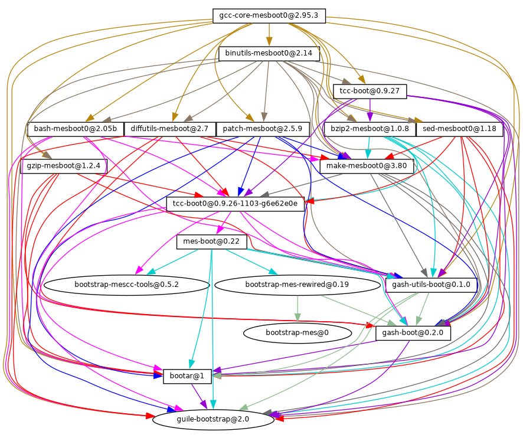
The only significant binary bootstrap seeds that remain37 are a Scheme interpreter and a Scheme compiler: GNU Mes and GNU Guile38.
This further reduction has brought down the size of the binary seed to
about 60MB for i686-linux and x86_64-linux.
Work is ongoing to remove all binary blobs from our free software
bootstrap stack, working towards a Full Source Bootstrap. Also ongoing
is work to bring these bootstraps to the arm-linux and
aarch64-linux architectures and to the Hurd.
If you are interested, join us on ‘#bootstrappable’ on the Freenode IRC network or discuss on bug-mes@gnu.org or gash-devel@nongnu.org.
Previous: The Reduced Binary Seed Bootstrap, Up: Bootstrapping [Contents][Index]
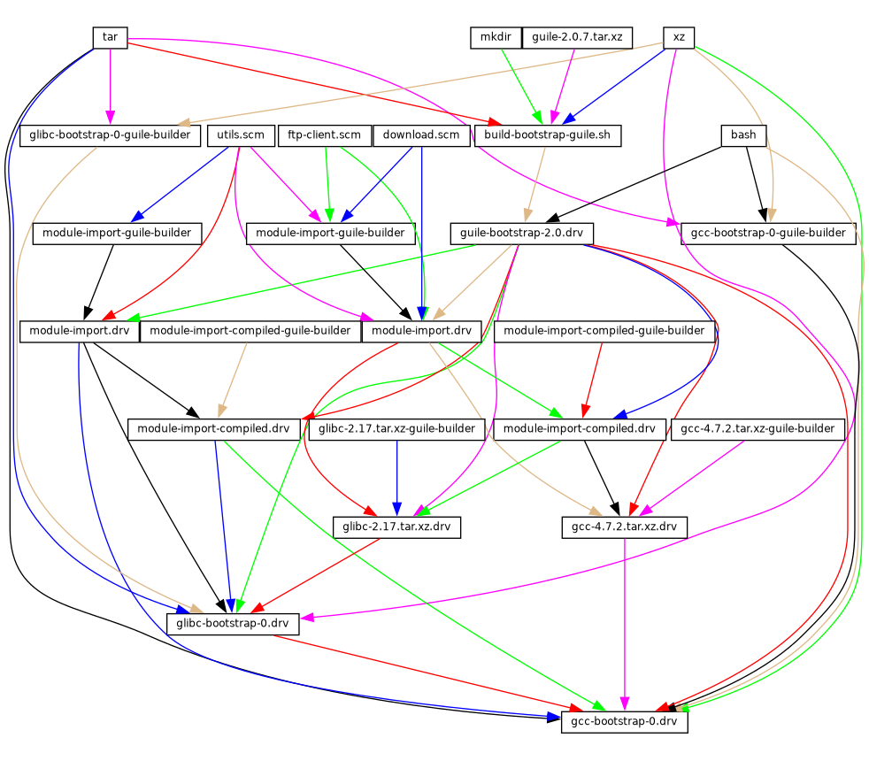
The figure above shows the very beginning of the dependency graph of the
distribution, corresponding to the package definitions of the (gnu
packages bootstrap) module. A similar figure can be generated with
guix graph (see Invoking guix graph), along the lines of:
guix graph -t derivation \ -e '(@@ (gnu packages bootstrap) %bootstrap-gcc)' \ | dot -Tps > gcc.ps
or, for the further Reduced Binary Seed bootstrap
guix graph -t derivation \ -e '(@@ (gnu packages bootstrap) %bootstrap-mes)' \ | dot -Tps > mes.ps
At this level of detail, things are
slightly complex. First, Guile itself consists of an ELF executable,
along with many source and compiled Scheme files that are dynamically
loaded when it runs. This gets stored in the guile-2.0.7.tar.xz
tarball shown in this graph. This tarball is part of Guix’s “source”
distribution, and gets inserted into the store with add-to-store
(see The Store).
But how do we write a derivation that unpacks this tarball and adds it
to the store? To solve this problem, the guile-bootstrap-2.0.drv
derivation—the first one that gets built—uses bash as its
builder, which runs build-bootstrap-guile.sh, which in turn calls
tar to unpack the tarball. Thus, bash, tar,
xz, and mkdir are statically-linked binaries, also part of
the Guix source distribution, whose sole purpose is to allow the Guile
tarball to be unpacked.
Once guile-bootstrap-2.0.drv is built, we have a functioning
Guile that can be used to run subsequent build programs. Its first task
is to download tarballs containing the other pre-built binaries—this
is what the .tar.xz.drv derivations do. Guix modules such as
ftp-client.scm are used for this purpose. The
module-import.drv derivations import those modules in a directory
in the store, using the original layout. The
module-import-compiled.drv derivations compile those modules, and
write them in an output directory with the right layout. This
corresponds to the #:modules argument of
build-expression->derivation (see Derivations).
Finally, the various tarballs are unpacked by the derivations
gcc-bootstrap-0.drv, glibc-bootstrap-0.drv, or
bootstrap-mes-0.drv and bootstrap-mescc-tools-0.drv, at which
point we have a working C tool chain.
Bootstrapping is complete when we have a full tool chain that does not
depend on the pre-built bootstrap tools discussed above. This
no-dependency requirement is verified by checking whether the files of
the final tool chain contain references to the /gnu/store
directories of the bootstrap inputs. The process that leads to this
“final” tool chain is described by the package definitions found in
the (gnu packages commencement) module.
The guix graph command allows us to “zoom out” compared to
the graph above, by looking at the level of package objects instead of
individual derivations—remember that a package may translate to
several derivations, typically one derivation to download its source,
one to build the Guile modules it needs, and one to actually build the
package from source. The command:
guix graph -t bag \
-e '(@@ (gnu packages commencement)
glibc-final-with-bootstrap-bash)' | xdot -
displays the dependency graph leading to the “final” C library39, depicted below.
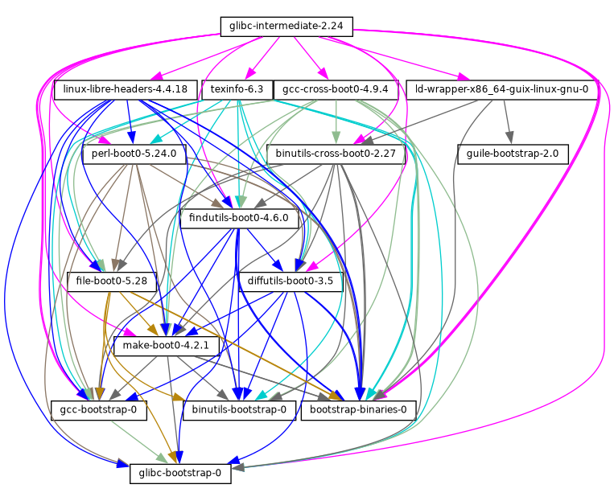
The first tool that gets built with the bootstrap binaries is
GNU Make—noted make-boot0 above—which is a prerequisite
for all the following packages. From there Findutils and Diffutils get
built.
Then come the first-stage Binutils and GCC, built as pseudo cross tools—i.e., with --target equal to --host. They are used to build libc. Thanks to this cross-build trick, this libc is guaranteed not to hold any reference to the initial tool chain.
From there the final Binutils and GCC (not shown above) are built. GCC
uses ld from the final Binutils, and links programs against
the just-built libc. This tool chain is used to build the other
packages used by Guix and by the GNU Build System: Guile, Bash,
Coreutils, etc.
And voilà! At this point we have the complete set of build tools that
the GNU Build System expects. These are in the %final-inputs
variable of the (gnu packages commencement) module, and are
implicitly used by any package that uses gnu-build-system
(see gnu-build-system).
Because the final tool chain does not depend on the bootstrap binaries,
those rarely need to be updated. Nevertheless, it is useful to have an
automated way to produce them, should an update occur, and this is what
the (gnu packages make-bootstrap) module provides.
The following command builds the tarballs containing the bootstrap binaries (Binutils, GCC, glibc, for the traditional bootstrap and linux-libre-headers, bootstrap-mescc-tools, bootstrap-mes for the Reduced Binary Seed bootstrap, and Guile, and a tarball containing a mixture of Coreutils and other basic command-line tools):
guix build bootstrap-tarballs
The generated tarballs are those that should be referred to in the
(gnu packages bootstrap) module mentioned at the beginning of
this section.
Still here? Then perhaps by now you’ve started to wonder: when do we reach a fixed point? That is an interesting question! The answer is unknown, but if you would like to investigate further (and have significant computational and storage resources to do so), then let us know.
Our traditional bootstrap includes GCC, GNU Libc, Guile, etc. That’s a lot of binary code! Why is that a problem? It’s a problem because these big chunks of binary code are practically non-auditable, which makes it hard to establish what source code produced them. Every unauditable binary also leaves us vulnerable to compiler backdoors as described by Ken Thompson in the 1984 paper Reflections on Trusting Trust.
This is mitigated by the fact that our bootstrap binaries were generated from an earlier Guix revision. Nevertheless it lacks the level of transparency that we get in the rest of the package dependency graph, where Guix always gives us a source-to-binary mapping. Thus, our goal is to reduce the set of bootstrap binaries to the bare minimum.
The Bootstrappable.org web site lists on-going projects to do that. One of these is about replacing the bootstrap GCC with a sequence of assemblers, interpreters, and compilers of increasing complexity, which could be built from source starting from a simple and auditable assembler.
Our first major achievement is the replacement of of GCC, the GNU C Library and Binutils by MesCC-Tools (a simple hex linker and macro assembler) and Mes (see GNU Mes Reference Manual in GNU Mes, a Scheme interpreter and C compiler in Scheme). Neither MesCC-Tools nor Mes can be fully bootstrapped yet and thus we inject them as binary seeds. We call this the Reduced Binary Seed bootstrap, as it has halved the size of our bootstrap binaries! Also, it has eliminated the C compiler binary; i686-linux and x86_64-linux Guix packages are now bootstrapped without any binary C compiler.
Work is ongoing to make MesCC-Tools and Mes fully bootstrappable and we are also looking at any other bootstrap binaries. Your help is welcome!
Next: Contributing, Previous: Bootstrapping, Up: GNU Guix [Contents][Index]
As discussed above, the GNU distribution is self-contained, and
self-containment is achieved by relying on pre-built “bootstrap
binaries” (see Bootstrapping). These binaries are specific to an
operating system kernel, CPU architecture, and application binary
interface (ABI). Thus, to port the distribution to a platform that is
not yet supported, one must build those bootstrap binaries, and update
the (gnu packages bootstrap) module to use them on that platform.
Fortunately, Guix can cross compile those bootstrap binaries. When everything goes well, and assuming the GNU tool chain supports the target platform, this can be as simple as running a command like this one:
guix build --target=armv5tel-linux-gnueabi bootstrap-tarballs
For this to work, it is first required to register a new platform as
defined in the (guix platform) module. A platform is making the
connection between a GNU triplet (see GNU
configuration triplets in Autoconf), the equivalent
system in Nix notation, the name of the
glibc-dynamic-linker, and the corresponding Linux architecture
name if applicable (see Platforms).
Once the bootstrap tarball are built, the (gnu packages
bootstrap) module needs to be updated to refer to these binaries on the
target platform. That is, the hashes and URLs of the bootstrap tarballs
for the new platform must be added alongside those of the currently
supported platforms. The bootstrap Guile tarball is treated specially:
it is expected to be available locally, and gnu/local.mk has
rules to download it for the supported architectures; a rule for the new
platform must be added as well.
In practice, there may be some complications. First, it may be that the
extended GNU triplet that specifies an ABI (like the eabi suffix
above) is not recognized by all the GNU tools. Typically, glibc
recognizes some of these, whereas GCC uses an extra --with-abi
configure flag (see gcc.scm for examples of how to handle this).
Second, some of the required packages could fail to build for that
platform. Lastly, the generated binaries could be broken for some
reason.
Next: Acknowledgments, Previous: Porting to a New Platform, Up: GNU Guix [Contents][Index]
This project is a cooperative effort, and we need your help to make it
grow! Please get in touch with us on guix-devel@gnu.org and
#guix on the Libera Chat IRC network. We welcome ideas, bug
reports, patches, and anything that may be helpful to the project. We
particularly welcome help on packaging (see Packaging Guidelines).
We want to provide a warm, friendly, and harassment-free environment, so that anyone can contribute to the best of their abilities. To this end our project uses a “Contributor Covenant”, which was adapted from https://contributor-covenant.org/. You can find a local version in the CODE-OF-CONDUCT file in the source tree.
Contributors are not required to use their legal name in patches and on-line communication; they can use any name or pseudonym of their choice.
Next: Running Guix Before It Is Installed, Up: Contributing [Contents][Index]
If you want to hack Guix itself, it is recommended to use the latest version from the Git repository:
git clone https://git.savannah.gnu.org/git/guix.git
How do you ensure that you obtained a genuine copy of the repository?
To do that, run guix git authenticate, passing it the commit
and OpenPGP fingerprint of the channel introduction
(see Invoking guix git authenticate):
git fetch origin keyring:keyring guix git authenticate 9edb3f66fd807b096b48283debdcddccfea34bad \ "BBB0 2DDF 2CEA F6A8 0D1D E643 A2A0 6DF2 A33A 54FA"
This command completes with exit code zero on success; it prints an error message and exits with a non-zero code otherwise.
As you can see, there is a chicken-and-egg problem: you first need to have Guix installed. Typically you would install Guix System (see System Installation) or Guix on top of another distro (see Binary Installation); in either case, you would verify the OpenPGP signature on the installation medium. This “bootstraps” the trust chain.
The easiest way to set up a development environment for Guix is, of course, by using Guix! The following command starts a new shell where all the dependencies and appropriate environment variables are set up to hack on Guix:
guix shell -D guix --pure
See Invoking guix shell, for more information on that command.
If you are unable to use Guix when building Guix from a checkout, the following are the required packages in addition to those mentioned in the installation instructions (see Requirements).
On Guix, extra dependencies can be added by instead running guix
shell:
guix shell -D guix help2man git strace --pure
From there you can generate the build system infrastructure using Autoconf and Automake:
./bootstrap
If you get an error like this one:
configure.ac:46: error: possibly undefined macro: PKG_CHECK_MODULES
it probably means that Autoconf couldn’t find pkg.m4, which is provided by pkg-config. Make sure that pkg.m4 is available. The same holds for the guile.m4 set of macros provided by Guile. For instance, if you installed Automake in /usr/local, it wouldn’t look for .m4 files in /usr/share. In that case, you have to invoke the following command:
export ACLOCAL_PATH=/usr/share/aclocal
See Macro Search Path in The GNU Automake Manual, for more information.
Then, run:
./configure --localstatedir=/var
... where /var is the normal localstatedir value
(see The Store, for information about this). Note that you will
probably not run make install at the end (you don’t have to)
but it’s still important to pass the right localstatedir.
Finally, you can build Guix and, if you feel so inclined, run the tests (see Running the Test Suite):
make make check
If anything fails, take a look at installation instructions (see Installation) or send a message to the mailing list.
From there on, you can authenticate all the commits included in your checkout by running:
make authenticate
The first run takes a couple of minutes, but subsequent runs are faster.
Or, when your configuration for your local Git repository doesn’t match
the default one, you can provide the reference for the keyring
branch through the variable GUIX_GIT_KEYRING. The following
example assumes that you have a Git remote called ‘myremote’
pointing to the official repository:
make authenticate GUIX_GIT_KEYRING=myremote/keyring
Note: You are advised to run
make authenticateafter everygit pullinvocation. This ensures you keep receiving valid changes to the repository.
After updating the repository, make might fail with an error
similar to the following example:
error: failed to load 'gnu/packages/dunst.scm': ice-9/eval.scm:293:34: In procedure abi-check: #<record-type <origin>>: record ABI mismatch; recompilation needed
This means that one of the record types that Guix defines (in this
example, the origin record) has changed, and all of guix needs
to be recompiled to take that change into account. To do so, run
make clean-go followed by make.
Next: The Perfect Setup, Previous: Building from Git, Up: Contributing [Contents][Index]
In order to keep a sane working environment, you will find it useful to test the changes made in your local source tree checkout without actually installing them. So that you can distinguish between your “end-user” hat and your “motley” costume.
To that end, all the command-line tools can be used even if you have not
run make install. To do that, you first need to have an
environment with all the dependencies available (see Building from Git), and then simply prefix each command with ./pre-inst-env
(the pre-inst-env script lives in the top build tree of Guix; it
is generated by running ./bootstrap followed by
./configure). As an example, here is how you would build the
hello package as defined in your working tree (this assumes
guix-daemon is already running on your system; it’s OK if it’s
a different version):
$ ./pre-inst-env guix build hello
Similarly, an example for a Guile session using the Guix modules:
$ ./pre-inst-env guile -c '(use-modules (guix utils)) (pk (%current-system))'
;;; ("x86_64-linux")
… and for a REPL (see Using Guix Interactively):
$ ./pre-inst-env guile
scheme@(guile-user)> ,use(guix)
scheme@(guile-user)> ,use(gnu)
scheme@(guile-user)> (define snakes
(fold-packages
(lambda (package lst)
(if (string-prefix? "python"
(package-name package))
(cons package lst)
lst))
'()))
scheme@(guile-user)> (length snakes)
$1 = 361
If you are hacking on the daemon and its supporting code or if
guix-daemon is not already running on your system, you can
launch it straight from the build tree40:
$ sudo -E ./pre-inst-env guix-daemon --build-users-group=guixbuild
The pre-inst-env script sets up all the environment variables
necessary to support this, including PATH and GUILE_LOAD_PATH.
Note that ./pre-inst-env guix pull does not upgrade the
local source tree; it simply updates the ~/.config/guix/current
symlink (see Invoking guix pull). Run git pull instead if
you want to upgrade your local source tree.
Sometimes, especially if you have recently updated your repository,
running ./pre-inst-env will print a message similar to the
following example:
;;; note: source file /home/user/projects/guix/guix/progress.scm ;;; newer than compiled /home/user/projects/guix/guix/progress.go
This is only a note and you can safely ignore it. You can get rid of
the message by running make -j4. Until you do, Guile will run
slightly slower because it will interpret the code instead of using
prepared Guile object (.go) files.
You can run make automatically as you work using
watchexec from the watchexec package. For example,
to build again each time you update a package file, run
‘watchexec -w gnu/packages -- make -j4’.
Next: Packaging Guidelines, Previous: Running Guix Before It Is Installed, Up: Contributing [Contents][Index]
The Perfect Setup to hack on Guix is basically the perfect setup used for Guile hacking (see Using Guile in Emacs in Guile Reference Manual). First, you need more than an editor, you need Emacs, empowered by the wonderful Geiser. To set that up, run:
guix install emacs guile emacs-geiser emacs-geiser-guile
Geiser allows for interactive and incremental development from within Emacs: code compilation and evaluation from within buffers, access to on-line documentation (docstrings), context-sensitive completion, M-. to jump to an object definition, a REPL to try out your code, and more (see Introduction in Geiser User Manual). For convenient Guix development, make sure to augment Guile’s load path so that it finds source files from your checkout:
;; Assuming the Guix checkout is in ~/src/guix. (with-eval-after-load 'geiser-guile (add-to-list 'geiser-guile-load-path "~/src/guix"))
To actually edit the code, Emacs already has a neat Scheme mode. But in addition to that, you must not miss Paredit. It provides facilities to directly operate on the syntax tree, such as raising an s-expression or wrapping it, swallowing or rejecting the following s-expression, etc.
We also provide templates for common git commit messages and package definitions in the etc/snippets directory. These templates can be used to expand short trigger strings to interactive text snippets. If you use YASnippet, you may want to add the etc/snippets/yas snippets directory to the yas-snippet-dirs variable. If you use Tempel, you may want to add the etc/snippets/tempel/* path to the tempel-path variable in Emacs.
;; Assuming the Guix checkout is in ~/src/guix. ;; Yasnippet configuration (with-eval-after-load 'yasnippet (add-to-list 'yas-snippet-dirs "~/src/guix/etc/snippets/yas")) ;; Tempel configuration (with-eval-after-load 'tempel ;; Ensure tempel-path is a list -- it may also be a string. (unless (listp 'tempel-path) (setq tempel-path (list tempel-path))) (add-to-list 'tempel-path "~/src/guix/etc/snippets/tempel/*"))
The commit message snippets depend on Magit to
display staged files. When editing a commit message type add
followed by TAB to insert a commit message template for adding a
package; type update followed by TAB to insert a template
for updating a package; type https followed by TAB to
insert a template for changing the home page URI of a package to HTTPS.
The main snippet for scheme-mode is triggered by typing
package... followed by TAB. This snippet also inserts the
trigger string origin..., which can be expanded further. The
origin snippet in turn may insert other trigger strings ending on
..., which also can be expanded further.
We additionally provide insertion and automatic update of a copyright in etc/copyright.el. You may want to set your full name, mail, and load a file.
(setq user-full-name "Alice Doe") (setq user-mail-address "alice@mail.org") ;; Assuming the Guix checkout is in ~/src/guix. (load-file "~/src/guix/etc/copyright.el")
To insert a copyright at the current line invoke M-x guix-copyright.
To update a copyright you need to specify a copyright-names-regexp.
(setq copyright-names-regexp
(format "%s <%s>" user-full-name user-mail-address))
You can check if your copyright is up to date by evaluating M-x
copyright-update. If you want to do it automatically after each buffer
save then add (add-hook 'after-save-hook 'copyright-update) in
Emacs.
Next: Coding Style, Previous: The Perfect Setup, Up: Contributing [Contents][Index]
The GNU distribution is nascent and may well lack some of your favorite packages. This section describes how you can help make the distribution grow.
Free software packages are usually distributed in the form of source code tarballs—typically tar.gz files that contain all the source files. Adding a package to the distribution means essentially two things: adding a recipe that describes how to build the package, including a list of other packages required to build it, and adding package metadata along with that recipe, such as a description and licensing information.
In Guix all this information is embodied in package definitions. Package definitions provide a high-level view of the package. They are written using the syntax of the Scheme programming language; in fact, for each package we define a variable bound to the package definition, and export that variable from a module (see Package Modules). However, in-depth Scheme knowledge is not a prerequisite for creating packages. For more information on package definitions, see Defining Packages.
Once a package definition is in place, stored in a file in the Guix
source tree, it can be tested using the guix build command
(see Invoking guix build). For example, assuming the new package is
called gnew, you may run this command from the Guix build tree
(see Running Guix Before It Is Installed):
./pre-inst-env guix build gnew --keep-failed
Using --keep-failed makes it easier to debug build failures since
it provides access to the failed build tree. Another useful
command-line option when debugging is --log-file, to access the
build log.
If the package is unknown to the guix command, it may be that
the source file contains a syntax error, or lacks a define-public
clause to export the package variable. To figure it out, you may load
the module from Guile to get more information about the actual error:
./pre-inst-env guile -c '(use-modules (gnu packages gnew))'
Once your package builds correctly, please send us a patch (see Submitting Patches). Well, if you need help, we will be happy to help you too. Once the patch is committed in the Guix repository, the new package automatically gets built on the supported platforms by our continuous integration system.
Users can obtain the new package definition simply by running
guix pull (see Invoking guix pull). When
ci.guix.gnu.org is done building the package, installing the
package automatically downloads binaries from there
(see Substitutes). The only place where human intervention is
needed is to review and apply the patch.
Next: Package Naming, Up: Packaging Guidelines [Contents][Index]
The GNU operating system has been developed so that users can have freedom in their computing. GNU is free software, meaning that users have the four essential freedoms: to run the program, to study and change the program in source code form, to redistribute exact copies, and to distribute modified versions. Packages found in the GNU distribution provide only software that conveys these four freedoms.
In addition, the GNU distribution follow the free software distribution guidelines. Among other things, these guidelines reject non-free firmware, recommendations of non-free software, and discuss ways to deal with trademarks and patents.
Some otherwise free upstream package sources contain a small and optional
subset that violates the above guidelines, for instance because this subset
is itself non-free code. When that happens, the offending items are removed
with appropriate patches or code snippets in the origin form of the
package (see Defining Packages). This way, guix
build --source returns the “freed” source rather than the unmodified
upstream source.
Next: Version Numbers, Previous: Software Freedom, Up: Packaging Guidelines [Contents][Index]
A package actually has two names associated with it.
First, there is the name of the Scheme variable, the one following
define-public. By this name, the package can be made known in the
Scheme code, for instance as input to another package. Second, there is
the string in the name field of a package definition. This name
is used by package management commands such as
guix package and guix build.
Both are usually the same and correspond to the lowercase conversion of
the project name chosen upstream, with underscores replaced with
hyphens. For instance, GNUnet is available as gnunet, and
SDL_net as sdl-net.
A noteworthy exception to this rule is when the project name is only a
single character, or if an older maintained project with the same name
already exists—regardless of whether it has already been packaged for
Guix. Use common sense to make such names unambiguous and meaningful.
For example, Guix’s package for the shell called “s” upstream is
s-shell and not s. Feel free to ask your fellow
hackers for inspiration.
We do not add lib prefixes for library packages, unless these are
already part of the official project name. But see Python Modules and Perl Modules for special rules concerning modules for
the Python and Perl languages.
Font package names are handled differently, see Fonts.
Next: Synopses and Descriptions, Previous: Package Naming, Up: Packaging Guidelines [Contents][Index]
We usually package only the latest version of a given free software
project. But sometimes, for instance for incompatible library versions,
two (or more) versions of the same package are needed. These require
different Scheme variable names. We use the name as defined
in Package Naming
for the most recent version; previous versions use the same name, suffixed
by - and the smallest prefix of the version number that may
distinguish the two versions.
The name inside the package definition is the same for all versions of a package and does not contain any version number.
For instance, the versions 2.24.20 and 3.9.12 of GTK+ may be packaged as follows:
(define-public gtk+ (package (name "gtk+") (version "3.9.12") ...)) (define-public gtk+-2 (package (name "gtk+") (version "2.24.20") ...))
If we also wanted GTK+ 3.8.2, this would be packaged as
Occasionally, we package snapshots of upstream’s version control system
(VCS) instead of formal releases. This should remain exceptional,
because it is up to upstream developers to clarify what the stable
release is. Yet, it is sometimes necessary. So, what should we put in
the version field?
Clearly, we need to make the commit identifier of the VCS snapshot
visible in the version string, but we also need to make sure that the
version string is monotonically increasing so that guix package
--upgrade can determine which version is newer. Since commit
identifiers, notably with Git, are not monotonically increasing, we add
a revision number that we increase each time we upgrade to a newer
snapshot. The resulting version string looks like this:
2.0.11-3.cabba9e ^ ^ ^ | | `-- upstream commit ID | | | `--- Guix package revision | latest upstream version
It is a good idea to strip commit identifiers in the version
field to, say, 7 digits. It avoids an aesthetic annoyance (assuming
aesthetics have a role to play here) as well as problems related to OS
limits such as the maximum shebang length (127 bytes for the Linux
kernel). There are helper functions for doing this for packages using
git-fetch or hg-fetch (see below). It is best to use the
full commit identifiers in origins, though, to avoid ambiguities.
A typical package definition may look like this:
(define my-package
(let ((commit "c3f29bc928d5900971f65965feaae59e1272a3f7")
(revision "1")) ;Guix package revision
(package
(version (git-version "0.9" revision commit))
(source (origin
(method git-fetch)
(uri (git-reference
(url "git://example.org/my-package.git")
(commit commit)))
(sha256 (base32 "1mbikn…"))
(file-name (git-file-name name version))))
;; …
)))
Return the version string for packages using git-fetch.
(git-version "0.2.3" "0" "93818c936ee7e2f1ba1b315578bde363a7d43d05") ⇒ "0.2.3-0.93818c9"
Return the version string for packages using hg-fetch. It works
in the same way as git-version.
Next: Snippets versus Phases, Previous: Version Numbers, Up: Packaging Guidelines [Contents][Index]
As we have seen before, each package in GNU Guix includes a
synopsis and a description (see Defining Packages). Synopses and
descriptions are important: They are what guix package
--search searches, and a crucial piece of information to help users
determine whether a given package suits their needs. Consequently,
packagers should pay attention to what goes into them.
Synopses must start with a capital letter and must not end with a period. They must not start with “a” or “the”, which usually does not bring anything; for instance, prefer “File-frobbing tool” over “A tool that frobs files”. The synopsis should say what the package is—e.g., “Core GNU utilities (file, text, shell)”—or what it is used for—e.g., the synopsis for GNU grep is “Print lines matching a pattern”.
Keep in mind that the synopsis must be meaningful for a very wide audience. For example, “Manipulate alignments in the SAM format” might make sense for a seasoned bioinformatics researcher, but might be fairly unhelpful or even misleading to a non-specialized audience. It is a good idea to come up with a synopsis that gives an idea of the application domain of the package. In this example, this might give something like “Manipulate nucleotide sequence alignments”, which hopefully gives the user a better idea of whether this is what they are looking for.
Descriptions should take between five and ten lines. Use full sentences, and avoid using acronyms without first introducing them. Please avoid marketing phrases such as “world-leading”, “industrial-strength”, and “next-generation”, and avoid superlatives like “the most advanced”—they are not helpful to users looking for a package and may even sound suspicious. Instead, try to be factual, mentioning use cases and features.
Descriptions can include Texinfo markup, which is useful to introduce
ornaments such as @code or @dfn, bullet lists, or
hyperlinks (see Overview in GNU Texinfo). However you
should be careful when using some characters for example ‘@’ and
curly braces which are the basic special characters in Texinfo
(see Special Characters in GNU Texinfo). User interfaces
such as guix show take care of rendering it
appropriately.
Synopses and descriptions are translated by volunteers at Weblate so that as many users as possible can read them in their native language. User interfaces search them and display them in the language specified by the current locale.
To allow xgettext to extract them as translatable strings,
synopses and descriptions must be literal strings. This means
that you cannot use string-append or format to construct
these strings:
(package
;; …
(synopsis "This is translatable")
(description (string-append "This is " "*not*" " translatable.")))
Translation is a lot of work so, as a packager, please pay even more attention to your synopses and descriptions as every change may entail additional work for translators. In order to help them, it is possible to make recommendations or instructions visible to them by inserting special comments like this (see xgettext Invocation in GNU Gettext):
;; TRANSLATORS: "X11 resize-and-rotate" should not be translated. (description "ARandR is designed to provide a simple visual front end for the X11 resize-and-rotate (RandR) extension. …")
Next: Emacs Packages, Previous: Synopses and Descriptions, Up: Packaging Guidelines [Contents][Index]
The boundary between using an origin snippet versus a build phase to
modify the sources of a package can be elusive. Origin snippets are
typically used to remove unwanted files such as bundled libraries,
nonfree sources, or to apply simple substitutions. The source derived
from an origin should produce a source that can be used to build the
package on any system that the upstream package supports (i.e., act as
the corresponding source). In particular, origin snippets must not
embed store items in the sources; such patching should rather be done
using build phases. Refer to the origin record documentation for
more information (see origin Reference).
Next: Python Modules, Previous: Snippets versus Phases, Up: Packaging Guidelines [Contents][Index]
Emacs packages should preferably use the Emacs build system
(see emacs-build-system), for uniformity and the benefits provided
by its build phases, such as the auto-generation of the autoloads file
and the byte compilation of the sources. Because there is no
standardized way to run a test suite for Emacs packages, tests are
disabled by default. When a test suite is available, it should be
enabled by setting the #:tests? argument to #true. By
default, the command to run the test is make check, but any
command can be specified via the #:test-command argument. The
#:test-command argument expects a list containing a command and
its arguments, to be invoked during the check phase.
The Elisp dependencies of Emacs packages are typically provided as
propagated-inputs when required at run time. As for other
packages, build or test dependencies should be specified as
native-inputs.
Emacs packages sometimes depend on resources directories that should be
installed along the Elisp files. The #:include argument can be
used for that purpose, by specifying a list of regexps to match. The
best practice when using the #:include argument is to extend
rather than override its default value (accessible via the
%default-include variable). As an example, a yasnippet extension
package typically include a snippets directory, which could be
copied to the installation directory using:
#:include (cons "^snippets/" %default-include)
When encountering problems, it is wise to check for the presence of the
Package-Requires extension header in the package main source
file, and whether any dependencies and their versions listed therein are
satisfied.
Next: Perl Modules, Previous: Emacs Packages, Up: Packaging Guidelines [Contents][Index]
We currently package Python 2 and Python 3, under the Scheme variable names
python-2 and python as explained in Version Numbers.
To avoid confusion and naming clashes with other programming languages, it
seems desirable that the name of a package for a Python module contains
the word python.
Some modules are compatible with only one version of Python, others with
both. If the package Foo is compiled with Python 3, we name it
python-foo. If it is compiled with Python 2, we name it
python2-foo. Packages should be added when they are necessary;
we don’t add Python 2 variants of the package unless we are going to use
them.
If a project already contains the word python, we drop this;
for instance, the module python-dateutil is packaged under the names
python-dateutil and python2-dateutil. If the project name
starts with py (e.g. pytz), we keep it and prefix it as
described above.
Note: Currently there are two different build systems for Python packages in Guix: python-build-system and pyproject-build-system. For the longest time, Python packages were built from an informally specified setup.py file. That worked amazingly well, considering Python’s success, but was difficult to build tooling around. As a result, a host of alternative build systems emerged and the community eventually settled on a formal standard for specifying build requirements. pyproject-build-system is Guix’s implementation of this standard. It is considered “experimental” in that it does not yet support all the various PEP-517 build backends, but you are encouraged to try it for new Python packages and report any problems. It will eventually be deprecated and merged into python-build-system.
Dependency information for Python packages is usually available in the package source tree, with varying degrees of accuracy: in the pyproject.toml file, the setup.py file, in requirements.txt, or in tox.ini (the latter mostly for test dependencies).
Your mission, when writing a recipe for a Python package, is to map
these dependencies to the appropriate type of “input” (see inputs). Although the pypi importer normally does a
good job (see Invoking guix import), you may want to check the
following check list to determine which dependency goes where.
setuptools and pip
installed per default. This is about to change, and users are encouraged
to use python-toolchain if they want a build environment for Python.
guix lint will warn if setuptools or pip are
added as native-inputs because they are generally not necessary.
propagated-inputs. They are typically defined with the
install_requires keyword in setup.py, or in the
requirements.txt file.
build-system.requires in pyproject.toml or with the
setup_requires keyword in setup.py—or dependencies only
for testing—e.g., those in tests_require or tox.ini—go into
native-inputs. The rationale is that (1) they do not need to be
propagated because they are not needed at run time, and (2) in a
cross-compilation context, it’s the “native” input that we’d want.
Examples are the pytest, mock, and nose test
frameworks. Of course if any of these packages is also required at
run-time, it needs to go to propagated-inputs.
inputs, for example programs or C libraries required for building
Python packages containing C extensions.
extras_require),
it is up to you to decide whether to add them or not, based on their
usefulness/overhead ratio (see guix
size).
Next: Java Packages, Previous: Python Modules, Up: Packaging Guidelines [Contents][Index]
Perl programs standing for themselves are named as any other package,
using the lowercase upstream name.
For Perl packages containing a single class, we use the lowercase class name,
replace all occurrences of :: by dashes and prepend the prefix
perl-.
So the class XML::Parser becomes perl-xml-parser.
Modules containing several classes keep their lowercase upstream name and
are also prepended by perl-. Such modules tend to have the word
perl somewhere in their name, which gets dropped in favor of the
prefix. For instance, libwww-perl becomes perl-libwww.
Next: Rust Crates, Previous: Perl Modules, Up: Packaging Guidelines [Contents][Index]
Java programs standing for themselves are named as any other package, using the lowercase upstream name.
To avoid confusion and naming clashes with other programming languages,
it is desirable that the name of a package for a Java package is
prefixed with java-. If a project already contains the word
java, we drop this; for instance, the package ngsjava is
packaged under the name java-ngs.
For Java packages containing a single class or a small class hierarchy,
we use the lowercase class name, replace all occurrences of . by
dashes and prepend the prefix java-. So the class
apache.commons.cli becomes package
java-apache-commons-cli.
Next: Elm Packages, Previous: Java Packages, Up: Packaging Guidelines [Contents][Index]
Rust programs standing for themselves are named as any other package, using the lowercase upstream name.
To prevent namespace collisions we prefix all other Rust packages with the
rust- prefix. The name should be changed to lowercase as appropriate and
dashes should remain in place.
In the rust ecosystem it is common for multiple incompatible versions of a
package to be used at any given time, so all package definitions should have a
versioned suffix. The versioned suffix is the left-most non-zero digit (and
any leading zeros, of course). This follows the “caret” version scheme
intended by Cargo. Examples rust-clap-2, rust-rand-0.6.
Because of the difficulty in reusing rust packages as pre-compiled inputs for
other packages the Cargo build system (see cargo-build-system) presents the #:cargo-inputs and
cargo-development-inputs keywords as build system arguments. It would be
helpful to think of these as similar to propagated-inputs and
native-inputs. Rust dependencies and build-dependencies
should go in #:cargo-inputs, and dev-dependencies should go in
#:cargo-development-inputs. If a Rust package links to other libraries
then the standard placement in inputs and the like should be used.
Care should be taken to ensure the correct version of dependencies are used; to
this end we try to refrain from skipping the tests or using #:skip-build?
when possible. Of course this is not always possible, as the package may be
developed for a different Operating System, depend on features from the Nightly
Rust compiler, or the test suite may have atrophied since it was released.
Next: Fonts, Previous: Rust Crates, Up: Packaging Guidelines [Contents][Index]
Elm applications can be named like other software: their names need not mention Elm.
Packages in the Elm sense (see elm-build-system under Build Systems) are required use names of the format
author/project, where both the author and the
project may contain hyphens internally, and the author sometimes
contains uppercase letters.
To form the Guix package name from the upstream name, we follow a convention
similar to Python packages (see Python Modules), adding an elm-
prefix unless the name would already begin with elm-.
In many cases we can reconstruct an Elm package’s upstream name heuristically,
but, since conversion to a Guix-style name involves a loss of information,
this is not always possible. Care should be taken to add the
'upstream-name property when necessary so that ‘guix import elm’
will work correctly (see Invoking guix import). The most notable scenarios
when explicitly specifying the upstream name is necessary are:
elm and the project contains one or more
hyphens, as with elm/virtual-dom; and
Elm-Canvas/raster-shapes—unless the author is
elm-explorations, which is handled as a special case, so packages like
elm-explorations/markdown do not need to use the
'upstream-name property.
The module (guix build-system elm) provides the following utilities for
working with names and related conventions:
Returns a Git origin using the repository naming and tagging regime required for a published Elm package with the upstream name elm-name at version version with sha256 checksum hash.
For example:
(package
(name "elm-html")
(version "1.0.0")
(source
(elm-package-origin
"elm/html"
version
(base32 "15k1679ja57vvlpinpv06znmrxy09lbhzfkzdc89i01qa8c4gb4a")))
...)
Returns the Guix-style package name for an Elm package with upstream name elm-name.
Note that there is more than one possible elm-name for which
elm->package-name will produce a given result.
Given an Elm package, returns the possibly-inferred upstream name, or
#f the upstream name is not specified via the 'upstream-name
property and can not be inferred by infer-elm-package-name.
Given the guix-name of an Elm package, returns the inferred upstream
name, or #f if the upstream name can’t be inferred. If the result is
not #f, supplying it to elm->package-name would produce
guix-name.
Previous: Elm Packages, Up: Packaging Guidelines [Contents][Index]
For fonts that are in general not installed by a user for typesetting purposes, or that are distributed as part of a larger software package, we rely on the general packaging rules for software; for instance, this applies to the fonts delivered as part of the X.Org system or fonts that are part of TeX Live.
To make it easier for a user to search for fonts, names for other packages containing only fonts are constructed as follows, independently of the upstream package name.
The name of a package containing only one font family starts with
font-; it is followed by the foundry name and a dash -
if the foundry is known, and the font family name, in which spaces are
replaced by dashes (and as usual, all upper case letters are transformed
to lower case).
For example, the Gentium font family by SIL is packaged under the name
font-sil-gentium.
For a package containing several font families, the name of the collection
is used in the place of the font family name.
For instance, the Liberation fonts consist of three families,
Liberation Sans, Liberation Serif and Liberation Mono.
These could be packaged separately under the names
font-liberation-sans and so on; but as they are distributed together
under a common name, we prefer to package them together as
font-liberation.
In the case where several formats of the same font family or font collection
are packaged separately, a short form of the format, prepended by a dash,
is added to the package name. We use -ttf for TrueType fonts,
-otf for OpenType fonts and -type1 for PostScript Type 1
fonts.
Next: Submitting Patches, Previous: Packaging Guidelines, Up: Contributing [Contents][Index]
In general our code follows the GNU Coding Standards (see GNU Coding Standards). However, they do not say much about Scheme, so here are some additional rules.
Next: Modules, Up: Coding Style [Contents][Index]
Scheme code in Guix is written in a purely functional style. One
exception is code that involves input/output, and procedures that
implement low-level concepts, such as the memoize procedure.
Next: Data Types and Pattern Matching, Previous: Programming Paradigm, Up: Coding Style [Contents][Index]
Guile modules that are meant to be used on the builder side must live in
the (guix build …) name space. They must not refer to
other Guix or GNU modules. However, it is OK for a “host-side” module
to use a build-side module.
Modules that deal with the broader GNU system should be in the
(gnu …) name space rather than (guix …).
Next: Formatting Code, Previous: Modules, Up: Coding Style [Contents][Index]
The tendency in classical Lisp is to use lists to represent everything,
and then to browse them “by hand” using car, cdr,
cadr, and co. There are several problems with that style,
notably the fact that it is hard to read, error-prone, and a hindrance
to proper type error reports.
Guix code should define appropriate data types (for instance, using
define-record-type*) rather than abuse lists. In addition, it
should use pattern matching, via Guile’s (ice-9 match) module,
especially when matching lists (see Pattern Matching in GNU
Guile Reference Manual); pattern matching for records is better done
using match-record from (guix records), which, unlike
match, verifies field names at macro-expansion time.
Previous: Data Types and Pattern Matching, Up: Coding Style [Contents][Index]
When writing Scheme code, we follow common wisdom among Scheme programmers. In general, we follow the Riastradh’s Lisp Style Rules. This document happens to describe the conventions mostly used in Guile’s code too. It is very thoughtful and well written, so please do read it.
Some special forms introduced in Guix, such as the substitute*
macro, have special indentation rules. These are defined in the
.dir-locals.el file, which Emacs automatically uses. Also note
that Emacs-Guix provides guix-devel-mode mode that indents and
highlights Guix code properly (see Development in The
Emacs-Guix Reference Manual).
If you do not use Emacs, please make sure to let your editor knows these rules. To automatically indent a package definition, you can also run:
./pre-inst-env guix style package
See Invoking guix style, for more information.
If you are editing code with Vim, we recommend that you run :set
autoindent so that your code is automatically indented as you type.
Additionally,
paredit.vim may help you deal with all these parentheses.
We require all top-level procedures to carry a docstring. This
requirement can be relaxed for simple private procedures in the
(guix build …) name space, though.
Procedures should not have more than four positional parameters. Use keyword parameters for procedures that take more than four parameters.
Next: Tracking Bugs and Patches, Previous: Coding Style, Up: Contributing [Contents][Index]
Development is done using the Git distributed version control system.
Thus, access to the repository is not strictly necessary. We welcome
contributions in the form of patches as produced by git
format-patch sent to the guix-patches@gnu.org mailing list
(see Submitting patches to a project in Git User Manual).
Contributors are encouraged to take a moment to set some Git repository
options (see Configuring Git) first, which can improve the
readability of patches. Seasoned Guix developers may also want to look
at the section on commit access (see Commit Access).
This mailing list is backed by a Debbugs instance, which allows us to
keep track of submissions (see Tracking Bugs and Patches). Each
message sent to that mailing list gets a new tracking number assigned;
people can then follow up on the submission by sending email to
ISSUE_NUMBER@debbugs.gnu.org, where ISSUE_NUMBER is
the tracking number (see Sending a Patch Series).
Please write commit logs in the ChangeLog format (see Change Logs in GNU Coding Standards); you can check the commit history for examples.
Before submitting a patch that adds or modifies a package definition, please run through this check list:
gpg --verify command.
guix lint package, where package is the
name of the new or modified package, and fix any errors it reports
(see Invoking guix lint).
guix style package to format the new package definition
according to the project’s conventions (see Invoking guix style).
guix build
package.
qemu-binfmt-service-type to emulate them. In
order to enable it, add the virtualization service module and the
following service to the list of services in your operating-system
configuration:
(service qemu-binfmt-service-type
(qemu-binfmt-configuration
(platforms (lookup-qemu-platforms "arm" "aarch64"))))
Then reconfigure your system.
You can then build packages for different platforms by specifying the
--system option. For example, to build the "hello" package for
the armhf or aarch64 architectures, you would run the following
commands, respectively:
guix build --system=armhf-linux --rounds=2 hello guix build --system=aarch64-linux --rounds=2 hello
Sometimes, packages include copies of the source code of their dependencies as a convenience for users. However, as a distribution, we want to make sure that such packages end up using the copy we already have in the distribution, if there is one. This improves resource usage (the dependency is built and stored only once), and allows the distribution to make transverse changes such as applying security updates for a given software package in a single place and have them affect the whole system—something that bundled copies prevent.
guix size
(see Invoking guix size). This will allow you to notice references
to other packages unwillingly retained. It may also help determine
whether to split the package (see Packages with Multiple Outputs),
and which optional dependencies should be used. In particular, avoid adding
texlive as a dependency: because of its extreme size, use
the texlive-tiny package or texlive-union procedure instead.
guix refresh --list-dependent
package will help you do that (see Invoking guix refresh).
Depending on the number of dependent packages and thus the amount of rebuilding induced, commits go to different branches, along these lines:
master branch (non-disruptive changes).
staging branch (non-disruptive changes). This branch is intended
to be merged in master every 6 weeks or so. Topical changes
(e.g., an update of the GNOME stack) can instead go to a specific branch
(say, gnome-updates). This branch is not expected to be
buildable or usable until late in its development process.
core-updates branch (may include major and potentially disruptive
changes). This branch is intended to be merged in master every
6 months or so. This branch is not expected to be buildable or usable
until late in its development process.
All these branches are tracked by our build farm and merged into master once
everything has been successfully built. This allows us to fix issues
before they hit users, and to reduce the window during which pre-built
binaries are not available.
When we decide to start building the staging or
core-updates branches, they will be forked and renamed with the
suffix -frozen, at which time only bug fixes may be pushed to the
frozen branches. The core-updates and staging branches
will remain open to accept patches for the next cycle. Please ask on
the mailing list or IRC if unsure where to place a patch.
A simple way to do that is by building the same package several times in
a row on your machine (see Invoking guix build):
guix build --rounds=2 my-package
This is enough to catch a class of common non-determinism issues, such as timestamps or randomly-generated output in the build result.
Another option is to use guix challenge (see Invoking guix challenge). You may run it once the package has been committed and
built by ci.guix.gnu.org to check whether it obtains the same
result as you did. Better yet: Find another machine that can build it
and run guix publish. Since the remote build machine is
likely different from yours, this can catch non-determinism issues
related to the hardware—e.g., use of different instruction set
extensions—or to the operating system kernel—e.g., reliance on
uname or /proc files.
Examples of unrelated changes include the addition of several packages, or a package update along with fixes to that package.
guix style script to do that automatically for you
(see Formatting Code).
guix download).
Use reliable URLs, not generated ones. For instance, GitHub archives are not
necessarily identical from one generation to the next, so in this case it’s
often better to clone the repository. Don’t use the name field in
the URL: it is not very useful and if the name changes, the URL will probably
be wrong.
guix pull with:
guix pull --url=/path/to/your/checkout --profile=/tmp/guix.master
When posting a patch to the mailing list, use ‘[PATCH] …’ as
a subject, if your patch is to be applied on a branch other than
master, say core-updates, specify it in the subject like
‘[PATCH core-updates] …’.
You may use your email client or the git send-email command
(see Sending a Patch Series). We prefer to get patches in plain
text messages, either inline or as MIME attachments. You are advised to
pay attention if your email client changes anything like line breaks or
indentation which could potentially break the patches.
Expect some delay when you submit your very first patch to guix-patches@gnu.org. You have to wait until you get an acknowledgement with the assigned tracking number. Future acknowledgements should not be delayed.
When a bug is resolved, please close the thread by sending an email to ISSUE_NUMBER-done@debbugs.gnu.org.
Next: Sending a Patch Series, Up: Submitting Patches [Contents][Index]
If you have not done so already, you may wish to set a name and email
that will be associated with your commits (see Telling Git your name in Git User Manual). If you wish to use a
different name or email just for commits in this repository, you can
use git config --local, or edit .git/config in the
repository instead of ~/.gitconfig.
We provide some default settings in etc/git/gitconfig which modify how patches are generated, making them easier to read and apply. These settings can be applied by manually copying them to .git/config in your checkout, or by telling Git to include the whole file:
git config --local include.path ../etc/git/gitconfig
From then on, any changes to etc/git/gitconfig would automatically take effect.
Since the first patch in a series must be sent separately
(see Sending a Patch Series), it can also be helpful to tell
git format-patch to handle the e-mail threading instead of
git send-email:
git config --local format.thread shallow git config --local sendemail.thread no
Next: Teams, Previous: Configuring Git, Up: Submitting Patches [Contents][Index]
The git send-email command is the best way to send both single
patches and patch series (see Multiple Patches) to the Guix mailing
list. Sending patches as email attachments may make them difficult to
review in some mail clients, and git diff does not store commit
metadata.
Note: The
git send-emailcommand is provided by thesend-emailoutput of thegitpackage, i.e.git:send-email.
The following command will create a patch email from the latest commit, open it in your EDITOR or VISUAL for editing, and send it to the Guix mailing list to be reviewed and merged:
$ git send-email -1 -a --base=auto --to=guix-patches@gnu.org
Tip: To add a prefix to the subject of your patch, you may use the --subject-prefix option. The Guix project uses this to specify that the patch is intended for a branch or repository other than the
masterbranch of https://git.savannah.gnu.org/cgit/guix.git.git send-email -1 -a --base=auto \ --subject-prefix='PATCH core-updates' \ --to=guix-patches@gnu.org
The patch email contains a three-dash separator line after the commit message. You may “annotate” the patch with explanatory text by adding it under this line. If you do not wish to annotate the email, you may drop the -a flag (which is short for --annotate).
The --base=auto flag automatically adds a note at the bottom of the patch of the commit it was based on, making it easier for maintainers to rebase and merge your patch.
If you need to send a revised patch, don’t resend it like this or send
a “fix” patch to be applied on top of the last one; instead, use
git commit -a or git rebase
to modify the commit, and use the ISSUE_NUMBER@debbugs.gnu.org
address and the -v flag with git send-email.
$ git commit -a
$ git send-email -1 -a --base=auto -v REVISION \
--to=ISSUE_NUMBER@debbugs.gnu.org
You can find out ISSUE_NUMBER either by searching on the mumi interface at issues.guix.gnu.org for the name of your patch or reading the acknowledgement email sent automatically by Debbugs in reply to incoming bugs and patches, which contains the bug number.
The etc/teams.scm script may be used to notify all those who
may be interested in your patch of its existence (see Teams).
Use etc/teams.scm list-teams to display all the teams,
decide which team(s) your patch relates to, and use
etc/teams.scm cc to output various git send-email
flags which will notify the appropriate team members, or use
etc/teams.scm cc-members to detect the appropriate teams
automatically.
While git send-email alone will suffice for a single
patch, an unfortunate flaw in Debbugs means you need to be more
careful when sending multiple patches: if you send them all to the
guix-patches@gnu.org address, a new issue will be created
for each patch!
When sending a series of patches, it’s best to send a Git “cover
letter” first, to give reviewers an overview of the patch series.
We can create a directory called outgoing containing both
our patch series and a cover letter called 0000-cover-letter.patch
with git format-patch.
$ git format-patch -NUMBER_COMMITS -o outgoing \
--cover-letter --base=auto
We can now send just the cover letter to the guix-patches@gnu.org address, which will create an issue that we can send the rest of the patches to.
$ git send-email outgoing/0000-cover-letter.patch -a \
--to=guix-patches@gnu.org \
$(etc/teams.scm cc-members ...)
$ rm outgoing/0000-cover-letter.patch # we don't want to resend it!
Ensure you edit the email to add an appropriate subject line and blurb before sending it. Note the automatically generated shortlog and diffstat below the blurb.
Once the Debbugs mailer has replied to your cover letter email, you can send the actual patches to the newly-created issue address.
$ git send-email outgoing/*.patch \
--to=ISSUE_NUMBER@debbugs.gnu.org \
$(etc/teams.scm cc-members ...)
$ rm -rf outgoing # we don't need these anymore
Thankfully, this git format-patch dance is not necessary
to send an amended patch series, since an issue already exists for
the patchset.
$ git send-email -NUMBER_COMMITS \
-vREVISION --base=auto \
--to ISSUE_NUMBER@debbugs.gnu.org
If need be, you may use --cover-letter -a to send another cover letter, e.g. for explaining what’s changed since the last revision, and these changes are necessary.
Previous: Sending a Patch Series, Up: Submitting Patches [Contents][Index]
There are several teams mentoring different parts of the Guix source code. To list all those teams, you can run from a Guix checkout:
$ ./etc/teams.scm list-teams id: mentors name: Mentors description: A group of mentors who chaperone contributions by newcomers. members: + Christopher Baines <mail@cbaines.net> + Ricardo Wurmus <rekado@elephly.net> + Mathieu Othacehe <othacehe@gnu.org> + jgart <jgart@dismail.de> + Ludovic Courtès <ludo@gnu.org> …
You can run the following command to have the Mentors team put in
CC of a patch series:
$ git send-email --to ISSUE_NUMBER@debbugs.gnu.org $(./etc/teams.scm cc mentors) *.patch
The appropriate team or teams can also be inferred from the modified files. For instance, if you want to send the two latest commits of the current Git repository to review, you can run:
$ guix shell -D guix [env]$ git send-email --to ISSUE_NUMBER@debbugs.gnu.org $(./etc/teams.scm cc-members HEAD~2 HEAD) *.patch
Next: Commit Access, Previous: Submitting Patches, Up: Contributing [Contents][Index]
This section describes how the Guix project tracks its bug reports and patch submissions.
Next: Debbugs User Interfaces, Up: Tracking Bugs and Patches [Contents][Index]
Bug reports and patch submissions are currently tracked using the
Debbugs instance at https://bugs.gnu.org. Bug reports are filed
against the guix “package” (in Debbugs parlance), by sending
email to bug-guix@gnu.org, while patch submissions are filed
against the guix-patches package by sending email to
guix-patches@gnu.org (see Submitting Patches).
Next: Debbugs Usertags, Previous: The Issue Tracker, Up: Tracking Bugs and Patches [Contents][Index]
A web interface (actually two web interfaces!) are available to browse issues:
To view discussions related to issue number n, go to
‘https://issues.guix.gnu.org/n’ or
‘https://bugs.gnu.org/n’.
If you use Emacs, you may find it more convenient to interact with issues using debbugs.el, which you can install with:
guix install emacs-debbugs
For example, to list all open issues on guix-patches, hit:
C-u M-x debbugs-gnu RET RET guix-patches RET n y
See Debbugs User Guide, for more information on this nifty tool!
Previous: Debbugs User Interfaces, Up: Tracking Bugs and Patches [Contents][Index]
Debbugs provides a feature called usertags that allows any user to tag any bug with an arbitrary label. Bugs can be searched by usertag, so this is a handy way to organize bugs42.
For example, to view all the bug reports (or patches, in the case of
guix-patches) tagged with the usertag powerpc64le-linux
for the user guix, open a URL like the following in a web
browser:
https://debbugs.gnu.org/cgi-bin/pkgreport.cgi?tag=powerpc64le-linux;users=guix.
For more information on how to use usertags, please refer to the documentation for Debbugs or the documentation for whatever tool you use to interact with Debbugs.
In Guix, we are experimenting with usertags to keep track of
architecture-specific issues. To facilitate collaboration, all our
usertags are associated with the single user guix. The following
usertags currently exist for that user:
powerpc64le-linuxThe purpose of this usertag is to make it easy to find the issues that
matter most for the powerpc64le-linux system type. Please assign
this usertag to bugs or patches that affect powerpc64le-linux but
not other system types. In addition, you may use it to identify issues
that for some reason are particularly important for the
powerpc64le-linux system type, even if the issue affects other
system types, too.
reproducibilityFor issues related to reproducibility. For example, it would be appropriate to assign this usertag to a bug report for a package that fails to build reproducibly.
If you’re a committer and you want to add a usertag, just start using it
with the guix user. If the usertag proves useful to you,
consider updating this section of the manual so that others will know
what your usertag means.
Next: Updating the Guix Package, Previous: Tracking Bugs and Patches, Up: Contributing [Contents][Index]
Everyone can contribute to Guix without having commit access (see Submitting Patches). However, for frequent contributors, having write access to the repository can be convenient. As a rule of thumb, a contributor should have accumulated fifty (50) reviewed commits to be considered as a committer and have sustained their activity in the project for at least 6 months. This ensures enough interactions with the contributor, which is essential for mentoring and assessing whether they are ready to become a committer. Commit access should not be thought of as a “badge of honor” but rather as a responsibility a contributor is willing to take to help the project.
The following sections explain how to get commit access, how to be ready to push commits, and the policies and community expectations for commits pushed upstream.
When you deem it necessary, consider applying for commit access by following these steps:
Committers are expected to have had some interactions with you as a contributor and to be able to judge whether you are sufficiently familiar with the project’s practices. It is not a judgment on the value of your work, so a refusal should rather be interpreted as “let’s try again later”.
Set up GnuPG such that it never uses the SHA1 hash algorithm for digital signatures, which is known to be unsafe since 2019, for instance by adding the following line to ~/.gnupg/gpg.conf (see GPG Esoteric Options in The GNU Privacy Guard Manual):
digest-algo sha512
Important: Before you can push for the first time, maintainers must:
- add your OpenPGP key to the
keyringbranch;- add your OpenPGP fingerprint to the .guix-authorizations file of the branch(es) you will commit to.
Note: Maintainers are happy to give commit access to people who have been contributing for some time and have a track record—don’t be shy and don’t underestimate your work!
However, note that the project is working towards a more automated patch review and merging system, which, as a consequence, may lead us to have fewer people with commit access to the main repository. Stay tuned!
All commits that are pushed to the central repository on Savannah must
be signed with an OpenPGP key, and the public key should be uploaded to
your user account on Savannah and to public key servers, such as
keys.openpgp.org. To configure Git to automatically sign
commits, run:
git config commit.gpgsign true # Substitute the fingerprint of your public PGP key. git config user.signingkey CABBA6EA1DC0FF33
To check that commits are signed with correct key, use:
make authenticate
You can prevent yourself from accidentally pushing unsigned or signed with the wrong key commits to Savannah by using the pre-push Git hook located at etc/git/pre-push:
cp etc/git/pre-push .git/hooks/pre-push
It additionally calls make check-channel-news to be sure
news.scm file is correct.
If you get commit access, please make sure to follow the policy below (discussions of the policy can take place on guix-devel@gnu.org).
Non-trivial patches should always be posted to guix-patches@gnu.org (trivial patches include fixing typos, etc.). This mailing list fills the patch-tracking database (see Tracking Bugs and Patches).
For patches that just add a new package, and a simple one, it’s OK to
commit, if you’re confident (which means you successfully built it in a
chroot setup, and have done a reasonable copyright and license
auditing). Likewise for package upgrades, except upgrades that trigger
a lot of rebuilds (for example, upgrading GnuTLS or GLib). We have a
mailing list for commit notifications (guix-commits@gnu.org),
so people can notice. Before pushing your changes, make sure to run
git pull --rebase.
When pushing a commit on behalf of somebody else, please add a
Signed-off-by line at the end of the commit log message—e.g.,
with git am --signoff. This improves tracking of who did
what.
When adding channel news entries (see Writing Channel News), make sure they are well-formed by running the following command right before pushing:
make check-channel-news
For anything else, please post to guix-patches@gnu.org and leave time for a review, without committing anything (see Submitting Patches). If you didn’t receive any reply after two weeks, and if you’re confident, it’s OK to commit.
That last part is subject to being adjusted, allowing individuals to commit directly on non-controversial changes on parts they’re familiar with.
Peer review (see Submitting Patches) and tools such as
guix lint (see Invoking guix lint) and the test suite
(see Running the Test Suite) should catch issues before they are
pushed. Yet, commits that “break” functionality might occasionally
go through. When that happens, there are two priorities: mitigating
the impact, and understanding what happened to reduce the chance of
similar incidents in the future. The responsibility for both these
things primarily lies with those involved, but like everything this is
a group effort.
Some issues can directly affect all users—for instance because they
make guix pull fail or break core functionality, because they
break major packages (at build time or run time), or because they
introduce known security vulnerabilities.
The people involved in authoring, reviewing, and pushing such commit(s) should be at the forefront to mitigate their impact in a timely fashion: by pushing a followup commit to fix it (if possible), or by reverting it to leave time to come up with a proper fix, and by communicating with other developers about the problem.
If these persons are unavailable to address the issue in time, other committers are entitled to revert the commit(s), explaining in the commit log and on the mailing list what the problem was, with the goal of leaving time to the original committer, reviewer(s), and author(s) to propose a way forward.
Once the problem has been dealt with, it is the responsibility of those involved to make sure the situation is understood. If you are working to understand what happened, focus on gathering information and avoid assigning any blame. Do ask those involved to describe what happened, do not ask them to explain the situation—this would implicitly blame them, which is unhelpful. Accountability comes from a consensus about the problem, learning from it and improving processes so that it’s less likely to reoccur.
In order to reduce the possibility of mistakes, committers will have their Savannah account removed from the Guix Savannah project and their key removed from .guix-authorizations after 12 months of inactivity; they can ask to regain commit access by emailing the maintainers, without going through the vouching process.
Maintainers43 may also revoke an individual’s commit rights, as a last resort, if cooperation with the rest of the community has caused too much friction—even within the bounds of the project’s code of conduct (see Contributing). They would only do so after public or private discussion with the individual and a clear notice. Examples of behavior that hinders cooperation and could lead to such a decision include:
When maintainers resort to such a decision, they notify developers on guix-devel@gnu.org; inquiries may be sent to guix-maintainers@gnu.org. Depending on the situation, the individual may still be welcome to contribute.
One last thing: the project keeps moving forward because committers not only push their own awesome changes, but also offer some of their time reviewing and pushing other people’s changes. As a committer, you’re welcome to use your expertise and commit rights to help other contributors, too!
Next: Writing Documentation, Previous: Commit Access, Up: Contributing [Contents][Index]
It is sometimes desirable to update the guix package itself (the
package defined in (gnu packages package-management)), for
example to make new daemon features available for use by the
guix-service-type service type. In order to simplify this task,
the following command can be used:
make update-guix-package
The update-guix-package make target will use the last known
commit corresponding to HEAD in your Guix checkout,
compute the hash of the Guix sources corresponding to that commit and
update the commit, revision and hash of the guix
package definition.
To validate that the updated guix package hashes are correct and
that it can be built successfully, the following command can be run from
the directory of your Guix checkout:
./pre-inst-env guix build guix
To guard against accidentally updating the guix package to a
commit that others can’t refer to, a check is made that the commit used
has already been pushed to the Savannah-hosted Guix git repository.
This check can be disabled, at your own peril, by setting the
GUIX_ALLOW_ME_TO_USE_PRIVATE_COMMIT environment variable. When
this variable is set, the updated package source is also added to the
store. This is used as part of the release process of Guix.
Next: Translating Guix, Previous: Updating the Guix Package, Up: Contributing [Contents][Index]
Guix is documented using the Texinfo system. If you are not yet familiar with it, we accept contributions for documentation in most formats. That includes plain text, Markdown, Org, etc.
Documentation contributions can be sent to guix-patches@gnu.org. Prepend ‘[DOCUMENTATION]’ to the subject.
When you need to make more than a simple addition to the documentation, we prefer that you send a proper patch as opposed to sending an email as described above. See Submitting Patches for more information on how to send your patches.
To modify the documentation, you need to edit doc/guix.texi and doc/contributing.texi (which contains this documentation section), or doc/guix-cookbook.texi for the cookbook. If you compiled the Guix repository before, you will have many more .texi files that are translations of these documents. Do not modify them, the translation is managed through Weblate. See Translating Guix for more information.
To render documentation, you must first make sure that you ran
./configure in your source tree (see Running Guix Before It Is Installed). After that you can run one of the following
commands:
info doc/guix.info.
Previous: Writing Documentation, Up: Contributing [Contents][Index]
Writing code and packages is not the only way to provide a meaningful contribution to Guix. Translating to a language you speak is another example of a valuable contribution you can make. This section is designed to describe the translation process. It gives you advice on how you can get involved, what can be translated, what mistakes you should avoid and what we can do to help you!
Guix is a big project that has multiple components that can be translated. We coordinate the translation effort on a Weblate instance hosted by our friends at Fedora. You will need an account to submit translations.
Some of the software packaged in Guix also contain translations. We do not
host a translation platform for them. If you want to translate a package
provided by Guix, you should contact their developers or find the information
on their website. As an example, you can find the homepage of the
hello package by typing guix show hello. On the “homepage”
line, you will see https://www.gnu.org/software/hello/ as the homepage.
Many GNU and non-GNU packages can be translated on the Translation Project. Some projects with multiple components have their own platform. For instance, GNOME has its own platform, Damned Lies.
Guix has five components hosted on Weblate.
guix contains all the strings from the Guix software (the
guided system installer, the package manager, etc), excluding packages.
packages contains the synopsis (single-sentence description
of a package) and description (longer description) of packages in Guix.
website contains the official Guix website, except for
blog posts and multimedia content.
documentation-manual corresponds to this manual.
documentation-cookbook is the component for the cookbook.
Once you get an account, you should be able to select a component from the guix project, and select a language. If your language does not appear in the list, go to the bottom and click on the “Start new translation” button. Select the language you want to translate to from the list, to start your new translation.
Like lots of other free software packages, Guix uses GNU Gettext for its translations, with which translatable strings are extracted from the source code to so-called PO files.
Even though PO files are text files, changes should not be made with a text editor but with PO editing software. Weblate integrates PO editing functionality. Alternatively, translators can use any of various free-software tools for filling in translations, of which Poedit is one example, and (after logging in) upload the changed file. There is also a special PO editing mode for users of GNU Emacs. Over time translators find out what software they are happy with and what features they need.
On Weblate, you will find various links to the editor, that will show various subsets (or all) of the strings. Have a look around and at the documentation to familiarize yourself with the platform.
In this section, we provide more detailed guidance on the translation process, as well as details on what you should or should not do. When in doubt, please contact us, we will be happy to help!
Guix is written in the Guile programming language, and some strings contain
special formatting that is interpreted by Guile. These special formatting
should be highlighted by Weblate. They start with ~ followed by one
or more characters.
When printing the string, Guile replaces the special formatting symbols with
actual values. For instance, the string ‘ambiguous package specification
`~a'’ would be substituted to contain said package specification instead of
~a. To properly translate this string, you must keep the formatting
code in your translation, although you can place it where it makes sense in
your language. For instance, the French translation says ‘spécification
du paquet « ~a » ambiguë’ because the adjective needs to be placed in the
end of the sentence.
If there are multiple formatting symbols, make sure to respect the order. Guile does not know in which order you intended the string to be read, so it will substitute the symbols in the same order as the English sentence.
As an example, you cannot translate ‘package '~a' has been superseded by '~a'’ by ‘'~a' superseeds package '~a'’, because the meaning would be reversed. If foo is superseded by bar, the translation would read ‘'foo' superseeds package 'bar'’. To work around this problem, it is possible to use more advanced formatting to select a given piece of data, instead of following the default English order. See Formatted Output in GNU Guile Reference Manual, for more information on formatting in Guile.
Package descriptions occasionally contain Texinfo markup (see Synopses and Descriptions). Texinfo markup looks like ‘@code{rm -rf}’, ‘@emph{important}’, etc. When translating, please leave markup as is.
The characters after “@” form the name of the markup, and the text between
“{” and “}” is its content. In general, you should not translate the
content of markup like @code, as it contains literal code that do not
change with language. You can translate the content of formatting markup such
as @emph, @i, @itemize, @item. However, do
not translate the name of the markup, or it will not be recognized. Do
not translate the word after @end, it is the name of the markup that
is closed at this position (e.g. @itemize ... @end itemize).
The first step to ensure a successful translation of the manual is to find and translate the following strings first:
version.texi: Translate this string as version-xx.texi,
where xx is your language code (the one shown in the URL on
weblate).
contributing.texi: Translate this string as
contributing.xx.texi, where xx is the same language code.
Top: Do not translate this string, it is important for Texinfo.
If you translate it, the document will be empty (missing a Top node).
Please look for it, and register Top as its translation.
Translating these strings first ensure we can include your translation in
the guix repository without breaking the make process or the
guix pull machinery.
The manual and the cookbook both use Texinfo. As for packages, please
keep Texinfo markup as is. There are more possible markup types in the manual
than in the package descriptions. In general, do not translate the content
of @code, @file, @var, @value, etc. You
should translate the content of formatting markup such as @emph,
@i, etc.
The manual contains sections that can be referred to by name by @ref,
@xref and @pxref. We have a mechanism in place so you do
not have to translate their content. If you keep the English title, we will
automatically replace it with your translation of that title. This ensures
that Texinfo will always be able to find the node. If you decide to change
the translation of the title, the references will automatically be updated
and you will not have to update them all yourself.
When translating references from the cookbook to the manual, you need to
replace the name of the manual and the name of the section. For instance,
to translate @pxref{Defining Packages,,, guix, GNU Guix Reference
Manual}, you would replace Defining Packages with the title of that
section in the translated manual only if that title is translated.
If the title is not translated in your language yet, do not translate it here,
or the link will be broken. Replace guix with guix.xx where
xx is your language code. GNU Guix Reference Manual is the
text of the link. You can translate it however you wish.
The website pages are written using SXML, an s-expression version of HTML, the basic language of the web. We have a process to extract translatable strings from the source, and replace complex s-expressions with a more familiar XML markup, where each markup is numbered. Translators can arbitrarily change the ordering, as in the following example.
#. TRANSLATORS: Defining Packages is a section name #. in the English (en) manual. #: apps/base/templates/about.scm:64 msgid "Packages are <1>defined<1.1>en</1.1><1.2>Defining-Packages.html</1.2></1> as native <2>Guile</2> modules." msgstr "Pakete werden als reine <2>Guile</2>-Module <1>definiert<1.1>de</1.1><1.2>Pakete-definieren.html</1.2></1>."
Note that you need to include the same markups. You cannot skip any.
In case you make a mistake, the component might fail to build properly with your language, or even make guix pull fail. To prevent that, we have a process in place to check the content of the files before pushing to our repository. We will not be able to update the translation for your language in Guix, so we will notify you (through weblate and/or by email) so you get a chance to fix the issue.
Currently, some parts of Guix cannot be translated on Weblate, help wanted!
guix pull news can be translated in news.scm, but is not
available from Weblate. If you want to provide a translation, you
can prepare a patch as described above, or simply send us your
translation with the name of the news entry you translated and your
language. See Writing Channel News, for more information about
channel news.
There are no conditions for adding new translations of the guix and
guix-packages components, other than they need at least one translated
string. New languages will be added to Guix as soon as possible. The
files may be removed if they fall out of sync and have no more translated
strings.
Given that the web site is dedicated to new users, we want its translation to be as complete as possible before we include it in the language menu. For a new language to be included, it needs to reach at least 80% completion. When a language is included, it may be removed in the future if it stays out of sync and falls below 60% completion.
The manual and cookbook are automatically added in the default compilation target. Every time we synchronize translations, developers need to recompile all the translated manuals and cookbooks. This is useless for what is essentially the English manual or cookbook. Therefore, we will only include a new language when it reaches 10% completion in the component. When a language is included, it may be removed in the future if it stays out of sync and falls below 5% completion.
Weblate is backed by a git repository from which it discovers new strings to translate and pushes new and updated translations. Normally, it would be enough to give it commit access to our repositories. However, we decided to use a separate repository for two reasons. First, we would have to give Weblate commit access and authorize its signing key, but we do not trust it in the same way we trust guix developers, especially since we do not manage the instance ourselves. Second, if translators mess something up, it can break the generation of the website and/or guix pull for all our users, independently of their language.
For these reasons, we use a dedicated repository to host translations, and we synchronize it with our guix and artworks repositories after checking no issue was introduced in the translation.
Developers can download the latest PO files from weblate in the Guix
repository by running the make download-po command. It will
automatically download the latest files from weblate, reformat them to a
canonical form, and check they do not contain issues. The manual needs to be
built again to check for additional issues that might crash Texinfo.
Before pushing new translation files, developers should add them to the make machinery so the translations are actually available. The process differs for the various components.
guix and packages components must
be registered by adding the new language to po/guix/LINGUAS or
po/packages/LINGUAS.
documentation-manual component must be
registered by adding the file name to DOC_PO_FILES in
po/doc/local.mk, the generated %D%/guix.xx.texi manual to
info_TEXINFOS in doc/local.mk and the generated
%D%/guix.xx.texi and %D%/contributing.xx.texi to
TRANSLATED_INFO also in doc/local.mk.
documentation-cookbook component must be
registered by adding the file name to DOC_COOKBOOK_PO_FILES in
po/doc/local.mk, the generated %D%/guix-cookbook.xx.texi
manual to info_TEXINFOS in doc/local.mk and the generated
%D%/guix-cookbook.xx.texi to TRANSLATED_INFO also
in doc/local.mk.
website component must be added to the
guix-artwork repository, in website/po/.
website/po/LINGUAS and website/po/ietf-tags.scm must
be updated accordingly (see website/i18n-howto.txt for more
information on the process).
Next: GNU Free Documentation License, Previous: Contributing, Up: GNU Guix [Contents][Index]
Guix is based on the Nix package manager, which was designed and implemented by Eelco Dolstra, with contributions from other people (see the nix/AUTHORS file in Guix). Nix pioneered functional package management, and promoted unprecedented features, such as transactional package upgrades and rollbacks, per-user profiles, and referentially transparent build processes. Without this work, Guix would not exist.
The Nix-based software distributions, Nixpkgs and NixOS, have also been an inspiration for Guix.
GNU Guix itself is a collective work with contributions from a number of people. See the AUTHORS file in Guix for more information on these fine people. The THANKS file lists people who have helped by reporting bugs, taking care of the infrastructure, providing artwork and themes, making suggestions, and more—thank you!
Next: Concept Index, Previous: Acknowledgments, Up: GNU Guix [Contents][Index]
Copyright © 2000, 2001, 2002, 2007, 2008 Free Software Foundation, Inc. https://fsf.org/ Everyone is permitted to copy and distribute verbatim copies of this license document, but changing it is not allowed.
The purpose of this License is to make a manual, textbook, or other functional and useful document free in the sense of freedom: to assure everyone the effective freedom to copy and redistribute it, with or without modifying it, either commercially or noncommercially. Secondarily, this License preserves for the author and publisher a way to get credit for their work, while not being considered responsible for modifications made by others.
This License is a kind of “copyleft”, which means that derivative works of the document must themselves be free in the same sense. It complements the GNU General Public License, which is a copyleft license designed for free software.
We have designed this License in order to use it for manuals for free software, because free software needs free documentation: a free program should come with manuals providing the same freedoms that the software does. But this License is not limited to software manuals; it can be used for any textual work, regardless of subject matter or whether it is published as a printed book. We recommend this License principally for works whose purpose is instruction or reference.
This License applies to any manual or other work, in any medium, that contains a notice placed by the copyright holder saying it can be distributed under the terms of this License. Such a notice grants a world-wide, royalty-free license, unlimited in duration, to use that work under the conditions stated herein. The “Document”, below, refers to any such manual or work. Any member of the public is a licensee, and is addressed as “you”. You accept the license if you copy, modify or distribute the work in a way requiring permission under copyright law.
A “Modified Version” of the Document means any work containing the Document or a portion of it, either copied verbatim, or with modifications and/or translated into another language.
A “Secondary Section” is a named appendix or a front-matter section of the Document that deals exclusively with the relationship of the publishers or authors of the Document to the Document’s overall subject (or to related matters) and contains nothing that could fall directly within that overall subject. (Thus, if the Document is in part a textbook of mathematics, a Secondary Section may not explain any mathematics.) The relationship could be a matter of historical connection with the subject or with related matters, or of legal, commercial, philosophical, ethical or political position regarding them.
The “Invariant Sections” are certain Secondary Sections whose titles are designated, as being those of Invariant Sections, in the notice that says that the Document is released under this License. If a section does not fit the above definition of Secondary then it is not allowed to be designated as Invariant. The Document may contain zero Invariant Sections. If the Document does not identify any Invariant Sections then there are none.
The “Cover Texts” are certain short passages of text that are listed, as Front-Cover Texts or Back-Cover Texts, in the notice that says that the Document is released under this License. A Front-Cover Text may be at most 5 words, and a Back-Cover Text may be at most 25 words.
A “Transparent” copy of the Document means a machine-readable copy, represented in a format whose specification is available to the general public, that is suitable for revising the document straightforwardly with generic text editors or (for images composed of pixels) generic paint programs or (for drawings) some widely available drawing editor, and that is suitable for input to text formatters or for automatic translation to a variety of formats suitable for input to text formatters. A copy made in an otherwise Transparent file format whose markup, or absence of markup, has been arranged to thwart or discourage subsequent modification by readers is not Transparent. An image format is not Transparent if used for any substantial amount of text. A copy that is not “Transparent” is called “Opaque”.
Examples of suitable formats for Transparent copies include plain ASCII without markup, Texinfo input format, LaTeX input format, SGML or XML using a publicly available DTD, and standard-conforming simple HTML, PostScript or PDF designed for human modification. Examples of transparent image formats include PNG, XCF and JPG. Opaque formats include proprietary formats that can be read and edited only by proprietary word processors, SGML or XML for which the DTD and/or processing tools are not generally available, and the machine-generated HTML, PostScript or PDF produced by some word processors for output purposes only.
The “Title Page” means, for a printed book, the title page itself, plus such following pages as are needed to hold, legibly, the material this License requires to appear in the title page. For works in formats which do not have any title page as such, “Title Page” means the text near the most prominent appearance of the work’s title, preceding the beginning of the body of the text.
The “publisher” means any person or entity that distributes copies of the Document to the public.
A section “Entitled XYZ” means a named subunit of the Document whose title either is precisely XYZ or contains XYZ in parentheses following text that translates XYZ in another language. (Here XYZ stands for a specific section name mentioned below, such as “Acknowledgements”, “Dedications”, “Endorsements”, or “History”.) To “Preserve the Title” of such a section when you modify the Document means that it remains a section “Entitled XYZ” according to this definition.
The Document may include Warranty Disclaimers next to the notice which states that this License applies to the Document. These Warranty Disclaimers are considered to be included by reference in this License, but only as regards disclaiming warranties: any other implication that these Warranty Disclaimers may have is void and has no effect on the meaning of this License.
You may copy and distribute the Document in any medium, either commercially or noncommercially, provided that this License, the copyright notices, and the license notice saying this License applies to the Document are reproduced in all copies, and that you add no other conditions whatsoever to those of this License. You may not use technical measures to obstruct or control the reading or further copying of the copies you make or distribute. However, you may accept compensation in exchange for copies. If you distribute a large enough number of copies you must also follow the conditions in section 3.
You may also lend copies, under the same conditions stated above, and you may publicly display copies.
If you publish printed copies (or copies in media that commonly have printed covers) of the Document, numbering more than 100, and the Document’s license notice requires Cover Texts, you must enclose the copies in covers that carry, clearly and legibly, all these Cover Texts: Front-Cover Texts on the front cover, and Back-Cover Texts on the back cover. Both covers must also clearly and legibly identify you as the publisher of these copies. The front cover must present the full title with all words of the title equally prominent and visible. You may add other material on the covers in addition. Copying with changes limited to the covers, as long as they preserve the title of the Document and satisfy these conditions, can be treated as verbatim copying in other respects.
If the required texts for either cover are too voluminous to fit legibly, you should put the first ones listed (as many as fit reasonably) on the actual cover, and continue the rest onto adjacent pages.
If you publish or distribute Opaque copies of the Document numbering more than 100, you must either include a machine-readable Transparent copy along with each Opaque copy, or state in or with each Opaque copy a computer-network location from which the general network-using public has access to download using public-standard network protocols a complete Transparent copy of the Document, free of added material. If you use the latter option, you must take reasonably prudent steps, when you begin distribution of Opaque copies in quantity, to ensure that this Transparent copy will remain thus accessible at the stated location until at least one year after the last time you distribute an Opaque copy (directly or through your agents or retailers) of that edition to the public.
It is requested, but not required, that you contact the authors of the Document well before redistributing any large number of copies, to give them a chance to provide you with an updated version of the Document.
You may copy and distribute a Modified Version of the Document under the conditions of sections 2 and 3 above, provided that you release the Modified Version under precisely this License, with the Modified Version filling the role of the Document, thus licensing distribution and modification of the Modified Version to whoever possesses a copy of it. In addition, you must do these things in the Modified Version:
If the Modified Version includes new front-matter sections or appendices that qualify as Secondary Sections and contain no material copied from the Document, you may at your option designate some or all of these sections as invariant. To do this, add their titles to the list of Invariant Sections in the Modified Version’s license notice. These titles must be distinct from any other section titles.
You may add a section Entitled “Endorsements”, provided it contains nothing but endorsements of your Modified Version by various parties—for example, statements of peer review or that the text has been approved by an organization as the authoritative definition of a standard.
You may add a passage of up to five words as a Front-Cover Text, and a passage of up to 25 words as a Back-Cover Text, to the end of the list of Cover Texts in the Modified Version. Only one passage of Front-Cover Text and one of Back-Cover Text may be added by (or through arrangements made by) any one entity. If the Document already includes a cover text for the same cover, previously added by you or by arrangement made by the same entity you are acting on behalf of, you may not add another; but you may replace the old one, on explicit permission from the previous publisher that added the old one.
The author(s) and publisher(s) of the Document do not by this License give permission to use their names for publicity for or to assert or imply endorsement of any Modified Version.
You may combine the Document with other documents released under this License, under the terms defined in section 4 above for modified versions, provided that you include in the combination all of the Invariant Sections of all of the original documents, unmodified, and list them all as Invariant Sections of your combined work in its license notice, and that you preserve all their Warranty Disclaimers.
The combined work need only contain one copy of this License, and multiple identical Invariant Sections may be replaced with a single copy. If there are multiple Invariant Sections with the same name but different contents, make the title of each such section unique by adding at the end of it, in parentheses, the name of the original author or publisher of that section if known, or else a unique number. Make the same adjustment to the section titles in the list of Invariant Sections in the license notice of the combined work.
In the combination, you must combine any sections Entitled “History” in the various original documents, forming one section Entitled “History”; likewise combine any sections Entitled “Acknowledgements”, and any sections Entitled “Dedications”. You must delete all sections Entitled “Endorsements.”
You may make a collection consisting of the Document and other documents released under this License, and replace the individual copies of this License in the various documents with a single copy that is included in the collection, provided that you follow the rules of this License for verbatim copying of each of the documents in all other respects.
You may extract a single document from such a collection, and distribute it individually under this License, provided you insert a copy of this License into the extracted document, and follow this License in all other respects regarding verbatim copying of that document.
A compilation of the Document or its derivatives with other separate and independent documents or works, in or on a volume of a storage or distribution medium, is called an “aggregate” if the copyright resulting from the compilation is not used to limit the legal rights of the compilation’s users beyond what the individual works permit. When the Document is included in an aggregate, this License does not apply to the other works in the aggregate which are not themselves derivative works of the Document.
If the Cover Text requirement of section 3 is applicable to these copies of the Document, then if the Document is less than one half of the entire aggregate, the Document’s Cover Texts may be placed on covers that bracket the Document within the aggregate, or the electronic equivalent of covers if the Document is in electronic form. Otherwise they must appear on printed covers that bracket the whole aggregate.
Translation is considered a kind of modification, so you may distribute translations of the Document under the terms of section 4. Replacing Invariant Sections with translations requires special permission from their copyright holders, but you may include translations of some or all Invariant Sections in addition to the original versions of these Invariant Sections. You may include a translation of this License, and all the license notices in the Document, and any Warranty Disclaimers, provided that you also include the original English version of this License and the original versions of those notices and disclaimers. In case of a disagreement between the translation and the original version of this License or a notice or disclaimer, the original version will prevail.
If a section in the Document is Entitled “Acknowledgements”, “Dedications”, or “History”, the requirement (section 4) to Preserve its Title (section 1) will typically require changing the actual title.
You may not copy, modify, sublicense, or distribute the Document except as expressly provided under this License. Any attempt otherwise to copy, modify, sublicense, or distribute it is void, and will automatically terminate your rights under this License.
However, if you cease all violation of this License, then your license from a particular copyright holder is reinstated (a) provisionally, unless and until the copyright holder explicitly and finally terminates your license, and (b) permanently, if the copyright holder fails to notify you of the violation by some reasonable means prior to 60 days after the cessation.
Moreover, your license from a particular copyright holder is reinstated permanently if the copyright holder notifies you of the violation by some reasonable means, this is the first time you have received notice of violation of this License (for any work) from that copyright holder, and you cure the violation prior to 30 days after your receipt of the notice.
Termination of your rights under this section does not terminate the licenses of parties who have received copies or rights from you under this License. If your rights have been terminated and not permanently reinstated, receipt of a copy of some or all of the same material does not give you any rights to use it.
The Free Software Foundation may publish new, revised versions of the GNU Free Documentation License from time to time. Such new versions will be similar in spirit to the present version, but may differ in detail to address new problems or concerns. See https://www.gnu.org/copyleft/.
Each version of the License is given a distinguishing version number. If the Document specifies that a particular numbered version of this License “or any later version” applies to it, you have the option of following the terms and conditions either of that specified version or of any later version that has been published (not as a draft) by the Free Software Foundation. If the Document does not specify a version number of this License, you may choose any version ever published (not as a draft) by the Free Software Foundation. If the Document specifies that a proxy can decide which future versions of this License can be used, that proxy’s public statement of acceptance of a version permanently authorizes you to choose that version for the Document.
“Massive Multiauthor Collaboration Site” (or “MMC Site”) means any World Wide Web server that publishes copyrightable works and also provides prominent facilities for anybody to edit those works. A public wiki that anybody can edit is an example of such a server. A “Massive Multiauthor Collaboration” (or “MMC”) contained in the site means any set of copyrightable works thus published on the MMC site.
“CC-BY-SA” means the Creative Commons Attribution-Share Alike 3.0 license published by Creative Commons Corporation, a not-for-profit corporation with a principal place of business in San Francisco, California, as well as future copyleft versions of that license published by that same organization.
“Incorporate” means to publish or republish a Document, in whole or in part, as part of another Document.
An MMC is “eligible for relicensing” if it is licensed under this License, and if all works that were first published under this License somewhere other than this MMC, and subsequently incorporated in whole or in part into the MMC, (1) had no cover texts or invariant sections, and (2) were thus incorporated prior to November 1, 2008.
The operator of an MMC Site may republish an MMC contained in the site under CC-BY-SA on the same site at any time before August 1, 2009, provided the MMC is eligible for relicensing.
To use this License in a document you have written, include a copy of the License in the document and put the following copyright and license notices just after the title page:
Copyright (C) year your name. Permission is granted to copy, distribute and/or modify this document under the terms of the GNU Free Documentation License, Version 1.3 or any later version published by the Free Software Foundation; with no Invariant Sections, no Front-Cover Texts, and no Back-Cover Texts. A copy of the license is included in the section entitled ``GNU Free Documentation License''.
If you have Invariant Sections, Front-Cover Texts and Back-Cover Texts, replace the “with…Texts.” line with this:
with the Invariant Sections being list their titles, with
the Front-Cover Texts being list, and with the Back-Cover Texts
being list.
If you have Invariant Sections without Cover Texts, or some other combination of the three, merge those two alternatives to suit the situation.
If your document contains nontrivial examples of program code, we recommend releasing these examples in parallel under your choice of free software license, such as the GNU General Public License, to permit their use in free software.
Next: Programming Index, Previous: GNU Free Documentation License, Up: GNU Guix [Contents][Index]
| Jump to: | .
/
A B C D E F G H I J K L M N O P Q R S T U V W X Z |
|---|
| Jump to: | .
/
A B C D E F G H I J K L M N O P Q R S T U V W X Z |
|---|
Previous: Concept Index, Up: GNU Guix [Contents][Index]
| Jump to: | #
$
%
'
(
,
>
`
A B C D E F G H I J K L M N O P Q R S T U V W X Y Z |
|---|
| Jump to: | #
$
%
'
(
,
>
`
A B C D E F G H I J K L M N O P Q R S T U V W X Y Z |
|---|
“Guix” is pronounced like “geeks”, or “ɡiːks” using the international phonetic alphabet (IPA).
We used to refer to Guix System as “Guix
System Distribution” or “GuixSD”. We now consider it makes more sense to
group everything under the “Guix” banner since, after all, Guix System is
readily available through the guix system command, even if you’re
using a different distro underneath!
The term “free” here refers to the freedom provided to users of that software.
This section is concerned with the installation of the package manager, which can be done on top of a running GNU/Linux system. If, instead, you want to install the complete GNU operating system, see System Installation.
The Guile bindings to GnuTLS were distributed as part of GnuTLS until version 3.7.8 included.
If your machine uses the systemd init system,
copying the prefix/lib/systemd/system/guix-daemon.service
file to /etc/systemd/system will ensure that
guix-daemon is automatically started. Similarly, if your
machine uses the Upstart init system, copy the
prefix/lib/upstart/system/guix-daemon.conf
file to /etc/init.
“Mostly”, because while the set of files
that appear in the chroot’s /dev is fixed, most of these files
can only be created if the host has them.
This feature is available only when Guile-SSH is present.
The size of the glibc-locales package is
reduced down to about 213 MiB with store deduplication and further
down to about 67 MiB when using a zstd-compressed Btrfs file
system.
Currently Guix System only supports ext4, btrfs, JFS, F2FS, and XFS file systems. In particular, code that reads file system UUIDs and labels only works for these file system types.
This example will work for many types of file
systems (e.g., ext4). However, for copy-on-write file systems (e.g.,
btrfs), the required steps may be different. For details, see the
manual pages for mkswap and swapon.
If you don’t know what a DeLorean is, consider traveling back to the 1980’s.
Git commits form a directed acyclic graph (DAG). Each commit can have zero or more parents; “regular” commits have one parent and merge commits have two parent commits. Read Git for Computer Scientists for a great overview.
Be sure to
use the --check option the first time you use guix
shell interactively to make sure the shell does not undo the effect of
--pure.
For example, the
fontconfig package inspects ~/.guix-profile/share/fonts
for additional fonts.
Users sometimes
wrongfully augment environment variables such as PATH in their
~/.bashrc file. As a consequence, when guix
environment launches it, Bash may read ~/.bashrc, thereby
introducing “impurities” in these environment variables. It is an
error to define such environment variables in .bashrc; instead,
they should be defined in .bash_profile, which is sourced only by
log-in shells. See Bash Startup Files in The GNU Bash Reference
Manual, for details on Bash start-up files.
For example, the
fontconfig package inspects ~/.guix-profile/share/fonts
for additional fonts.
Here’s a trick to memorize it: -RR, which adds
PRoot support, can be thought of as the abbreviation of “Really
Relocatable”. Neat, isn’t it?
Note that packages under the (gnu
packages …) module name space are not necessarily “GNU
packages”. This module naming scheme follows the usual Guile module
naming convention: gnu means that these modules are distributed
as part of the GNU system, and packages identifies modules that
define packages.
Note that the file
name and module name must match. For instance, the (my-packages
emacs) module must be stored in a my-packages/emacs.scm file
relative to the load path specified with --load-path or
GUIX_PACKAGE_PATH. See Modules and the File System in GNU Guile Reference Manual, for details.
We present a simplified view of those build phases, but
do take a look at (guix build gnu-build-system) to see all the
details!
This operation is commonly referred to as “bind”, but that name denotes an unrelated procedure in Guile. Thus we use this somewhat cryptic symbol inherited from the Haskell language.
The term stratum in this context was coined by Manuel Serrano et al. in the context of their work on Hop. Oleg Kiselyov, who has written insightful essays and code on this topic, refers to this kind of code generation as staging.
More precisely, guix size looks for the
ungrafted variant of the given package(s), as returned by
guix build package --no-grafts. See Security Updates,
for information on grafts.
This command is available only when Guile-SSH was found. See Requirements, for details.
Remote sessions, when guix-daemon is
started with --listen specifying a TCP endpoint, are not
listed.
Currently only the Linux-libre kernel is fully supported. Using GNU mach with the GNU Hurd is experimental and only available when building a virtual machine disk image.
Note that, while it is tempting to use /dev/disk/by-uuid and similar device names to achieve the same result, this is not recommended: These special device nodes are created by the udev daemon and may be unavailable at the time the device is mounted.
The
uuid form expects 16-byte UUIDs as defined in
RFC 4122. This is the
form of UUID used by the ext2 family of file systems and others, but it
is different from “UUIDs” found in FAT file systems, for instance.
Note that the GNU Hurd makes no difference between the concept of a “mapped device” and that of a file system: both boil down to translating input/output operations made on a file to operations on its backing store. Thus, the Hurd implements mapped devices, like file systems, using the generic translator mechanism (see Translators in The GNU Hurd Reference Manual).
Versions 2.23 and later of GNU libc will simply skip the incompatible locale data, which is already an improvement.
By creating the magic file git-daemon-export-ok in the repository directory.
This action (and the related actions
switch-generation and roll-back) are usable only on
systems already running Guix System.
The database searched by man -k is only created
in profiles that contain the man-db package.
We would like to say: “Full Source Bootstrap” and while we are working towards that goal it would be hyperbole to use that term for what we do now.
Packages
such as gcc-2.95.3, binutils-2.14, glibc-2.2.5,
gzip-1.2.4, tar-1.22, and some others. For details, see
gnu/packages/commencement.scm.
Ignoring the 68KB mescc-tools; that will be removed later,
together with mes.
Not shown in this graph are the
static binaries for bash, tar, and xz that are used
to get Guile running.
You may notice the glibc-intermediate label,
suggesting that it is not quite final, but as a good
approximation, we will consider it final.
The -E flag to
sudo guarantees that GUILE_LOAD_PATH is correctly set
such that guix-daemon and the tools it uses can find the Guile
modules they need.
The web interface at https://issues.guix.gnu.org is powered by Mumi, a nice piece of software written in Guile, and you can help! See https://git.elephly.net/gitweb.cgi?p=software/mumi.git.
The list of usertags is public information, and anyone can modify any user’s list of usertags, so keep that in mind if you choose to use this feature.
See https://guix.gnu.org/en/about for the current list of maintainers. You can email them privately at guix-maintainers@gnu.org.